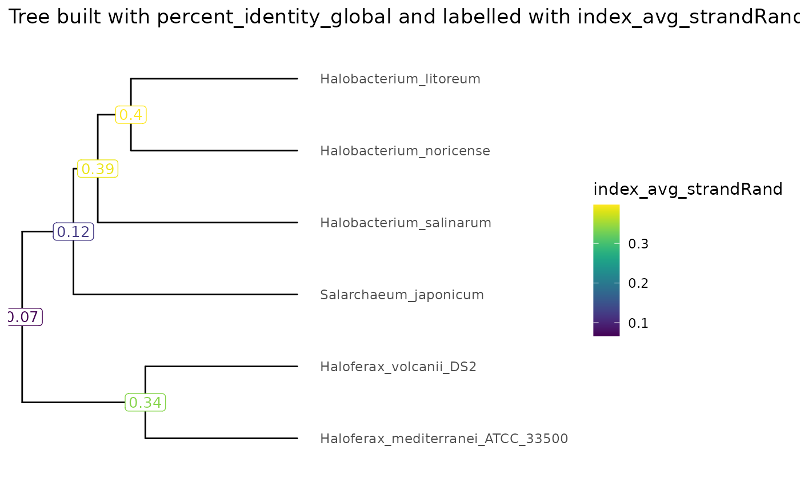

knitr::opts_chunk$set(cache = TRUE)
knitr::opts_knit$set(verbose = TRUE)Introduction
The ScrambledTreeBuilder package consists of numerous data formatting functions for phylogenetic tree building.
Load Package
Whilst the ScrambledTreeBuilder package contains all necessary functions required to convert data from .yaml files to a data type suitable for phylogenetic trees, loading ggplot2 will allow for greater customization of the final tree products.
Example Data
This package utilizes example .yaml files from halobacteria genome comparison data. In regards to genome scrambling, many studies have showcased significant genome rearrangments in such halobacteria species due to dozens of insertion sequence families. Thus, the ScrambledTreeBuilder package will be useful in uncovering relationships amongst such species.
Upon performing an all vs. all genome comparison between six halobacteria species using the Nextflow genome pairwise alignment pipeline and an input file script for GenomicBreaks, we have multiple .yaml files stored in a directory called ‘~/RPackageData’. We will load this data into RStudio with the variable name ‘yamlFileData’.
resultsDir <- system.file("extdata/PairwiseComparisons", package = "ScrambledTreeBuilder")
yamlFileData <- list.files(resultsDir, pattern = "*.yaml.bz2", full.names = TRUE)
names(yamlFileData) <- yamlFileData |> basename() |> sub(pat = ".yaml.bz2", rep="")Next, we can use the ‘formatStats()’ function to transform the .yaml files into a single dataframe. Having a dataframe containing our species information is important, as this will allow us to extract specific columns/variables and plot them onto our phylogenetic trees later.
exDataFrame <- formatStats(yamlFileData)
exDataFrame
#> aligned_length_Min
#> Halobacterium_litoreum___Halobacterium_noricense 62
#> Halobacterium_litoreum___Halobacterium_salinarum 100
#> Halobacterium_litoreum___Haloferax_mediterranei_ATCC_33500 92
#> Halobacterium_litoreum___Haloferax_volcanii_DS2 72
#> Halobacterium_litoreum___Salarchaeum_japonicum 66
#> Halobacterium_noricense___Halobacterium_litoreum 66
#> Halobacterium_noricense___Halobacterium_salinarum 76
#> Halobacterium_noricense___Haloferax_mediterranei_ATCC_33500 60
#> Halobacterium_noricense___Haloferax_volcanii_DS2 79
#> Halobacterium_noricense___Salarchaeum_japonicum 77
#> Halobacterium_salinarum___Halobacterium_litoreum 74
#> Halobacterium_salinarum___Halobacterium_noricense 76
#> Halobacterium_salinarum___Haloferax_mediterranei_ATCC_33500 77
#> Halobacterium_salinarum___Haloferax_volcanii_DS2 77
#> Halobacterium_salinarum___Salarchaeum_japonicum 79
#> Haloferax_mediterranei_ATCC_33500___Halobacterium_litoreum 76
#> Haloferax_mediterranei_ATCC_33500___Halobacterium_noricense 93
#> Haloferax_mediterranei_ATCC_33500___Halobacterium_salinarum 77
#> Haloferax_mediterranei_ATCC_33500___Haloferax_volcanii_DS2 74
#> Haloferax_mediterranei_ATCC_33500___Salarchaeum_japonicum 73
#> Haloferax_volcanii_DS2___Halobacterium_litoreum 73
#> Haloferax_volcanii_DS2___Halobacterium_noricense 79
#> Haloferax_volcanii_DS2___Halobacterium_salinarum 77
#> Haloferax_volcanii_DS2___Haloferax_mediterranei_ATCC_33500 74
#> Haloferax_volcanii_DS2___Salarchaeum_japonicum 76
#> Salarchaeum_japonicum___Halobacterium_litoreum 79
#> Salarchaeum_japonicum___Halobacterium_noricense 77
#> Salarchaeum_japonicum___Halobacterium_salinarum 79
#> Salarchaeum_japonicum___Haloferax_mediterranei_ATCC_33500 73
#> Salarchaeum_japonicum___Haloferax_volcanii_DS2 76
#> aligned_length_Q1
#> Halobacterium_litoreum___Halobacterium_noricense 717.50
#> Halobacterium_litoreum___Halobacterium_salinarum 778.00
#> Halobacterium_litoreum___Haloferax_mediterranei_ATCC_33500 546.50
#> Halobacterium_litoreum___Haloferax_volcanii_DS2 585.00
#> Halobacterium_litoreum___Salarchaeum_japonicum 674.75
#> Halobacterium_noricense___Halobacterium_litoreum 718.75
#> Halobacterium_noricense___Halobacterium_salinarum 731.00
#> Halobacterium_noricense___Haloferax_mediterranei_ATCC_33500 557.00
#> Halobacterium_noricense___Haloferax_volcanii_DS2 577.75
#> Halobacterium_noricense___Salarchaeum_japonicum 684.00
#> Halobacterium_salinarum___Halobacterium_litoreum 779.00
#> Halobacterium_salinarum___Halobacterium_noricense 718.00
#> Halobacterium_salinarum___Haloferax_mediterranei_ATCC_33500 590.25
#> Halobacterium_salinarum___Haloferax_volcanii_DS2 626.00
#> Halobacterium_salinarum___Salarchaeum_japonicum 638.00
#> Haloferax_mediterranei_ATCC_33500___Halobacterium_litoreum 577.75
#> Haloferax_mediterranei_ATCC_33500___Halobacterium_noricense 677.00
#> Haloferax_mediterranei_ATCC_33500___Halobacterium_salinarum 591.25
#> Haloferax_mediterranei_ATCC_33500___Haloferax_volcanii_DS2 746.00
#> Haloferax_mediterranei_ATCC_33500___Salarchaeum_japonicum 576.50
#> Haloferax_volcanii_DS2___Halobacterium_litoreum 586.00
#> Haloferax_volcanii_DS2___Halobacterium_noricense 594.25
#> Haloferax_volcanii_DS2___Halobacterium_salinarum 626.00
#> Haloferax_volcanii_DS2___Haloferax_mediterranei_ATCC_33500 719.75
#> Haloferax_volcanii_DS2___Salarchaeum_japonicum 623.00
#> Salarchaeum_japonicum___Halobacterium_litoreum 672.00
#> Salarchaeum_japonicum___Halobacterium_noricense 676.50
#> Salarchaeum_japonicum___Halobacterium_salinarum 624.00
#> Salarchaeum_japonicum___Haloferax_mediterranei_ATCC_33500 556.00
#> Salarchaeum_japonicum___Haloferax_volcanii_DS2 621.75
#> aligned_length_Median
#> Halobacterium_litoreum___Halobacterium_noricense 1409.0
#> Halobacterium_litoreum___Halobacterium_salinarum 1459.5
#> Halobacterium_litoreum___Haloferax_mediterranei_ATCC_33500 949.0
#> Halobacterium_litoreum___Haloferax_volcanii_DS2 994.5
#> Halobacterium_litoreum___Salarchaeum_japonicum 1260.5
#> Halobacterium_noricense___Halobacterium_litoreum 1422.5
#> Halobacterium_noricense___Halobacterium_salinarum 1349.0
#> Halobacterium_noricense___Haloferax_mediterranei_ATCC_33500 963.0
#> Halobacterium_noricense___Haloferax_volcanii_DS2 998.0
#> Halobacterium_noricense___Salarchaeum_japonicum 1235.0
#> Halobacterium_salinarum___Halobacterium_litoreum 1455.0
#> Halobacterium_salinarum___Halobacterium_noricense 1341.5
#> Halobacterium_salinarum___Haloferax_mediterranei_ATCC_33500 961.5
#> Halobacterium_salinarum___Haloferax_volcanii_DS2 1000.0
#> Halobacterium_salinarum___Salarchaeum_japonicum 1139.0
#> Haloferax_mediterranei_ATCC_33500___Halobacterium_litoreum 995.5
#> Haloferax_mediterranei_ATCC_33500___Halobacterium_noricense 1121.0
#> Haloferax_mediterranei_ATCC_33500___Halobacterium_salinarum 967.5
#> Haloferax_mediterranei_ATCC_33500___Haloferax_volcanii_DS2 1610.0
#> Haloferax_mediterranei_ATCC_33500___Salarchaeum_japonicum 955.0
#> Haloferax_volcanii_DS2___Halobacterium_litoreum 997.5
#> Haloferax_volcanii_DS2___Halobacterium_noricense 1004.5
#> Haloferax_volcanii_DS2___Halobacterium_salinarum 1001.5
#> Haloferax_volcanii_DS2___Haloferax_mediterranei_ATCC_33500 1550.5
#> Haloferax_volcanii_DS2___Salarchaeum_japonicum 1007.0
#> Salarchaeum_japonicum___Halobacterium_litoreum 1252.0
#> Salarchaeum_japonicum___Halobacterium_noricense 1238.0
#> Salarchaeum_japonicum___Halobacterium_salinarum 1069.0
#> Salarchaeum_japonicum___Haloferax_mediterranei_ATCC_33500 928.0
#> Salarchaeum_japonicum___Haloferax_volcanii_DS2 1000.0
#> aligned_length_Mean
#> Halobacterium_litoreum___Halobacterium_noricense 2177.722
#> Halobacterium_litoreum___Halobacterium_salinarum 2248.691
#> Halobacterium_litoreum___Haloferax_mediterranei_ATCC_33500 1185.227
#> Halobacterium_litoreum___Haloferax_volcanii_DS2 1296.762
#> Halobacterium_litoreum___Salarchaeum_japonicum 1813.424
#> Halobacterium_noricense___Halobacterium_litoreum 2211.831
#> Halobacterium_noricense___Halobacterium_salinarum 2089.673
#> Halobacterium_noricense___Haloferax_mediterranei_ATCC_33500 1213.886
#> Halobacterium_noricense___Haloferax_volcanii_DS2 1309.893
#> Halobacterium_noricense___Salarchaeum_japonicum 1781.424
#> Halobacterium_salinarum___Halobacterium_litoreum 2225.334
#> Halobacterium_salinarum___Halobacterium_noricense 2076.489
#> Halobacterium_salinarum___Haloferax_mediterranei_ATCC_33500 1245.611
#> Halobacterium_salinarum___Haloferax_volcanii_DS2 1345.606
#> Halobacterium_salinarum___Salarchaeum_japonicum 1574.773
#> Haloferax_mediterranei_ATCC_33500___Halobacterium_litoreum 1243.723
#> Haloferax_mediterranei_ATCC_33500___Halobacterium_noricense 1530.073
#> Haloferax_mediterranei_ATCC_33500___Halobacterium_salinarum 1246.567
#> Haloferax_mediterranei_ATCC_33500___Haloferax_volcanii_DS2 2682.168
#> Haloferax_mediterranei_ATCC_33500___Salarchaeum_japonicum 1208.715
#> Haloferax_volcanii_DS2___Halobacterium_litoreum 1300.796
#> Haloferax_volcanii_DS2___Halobacterium_noricense 1326.811
#> Haloferax_volcanii_DS2___Halobacterium_salinarum 1341.374
#> Haloferax_volcanii_DS2___Haloferax_mediterranei_ATCC_33500 2524.517
#> Haloferax_volcanii_DS2___Salarchaeum_japonicum 1326.828
#> Salarchaeum_japonicum___Halobacterium_litoreum 1802.391
#> Salarchaeum_japonicum___Halobacterium_noricense 1815.077
#> Salarchaeum_japonicum___Halobacterium_salinarum 1501.609
#> Salarchaeum_japonicum___Haloferax_mediterranei_ATCC_33500 1172.509
#> Salarchaeum_japonicum___Haloferax_volcanii_DS2 1322.423
#> aligned_length_Q3
#> Halobacterium_litoreum___Halobacterium_noricense 2926.50
#> Halobacterium_litoreum___Halobacterium_salinarum 3053.00
#> Halobacterium_litoreum___Haloferax_mediterranei_ATCC_33500 1506.50
#> Halobacterium_litoreum___Haloferax_volcanii_DS2 1649.25
#> Halobacterium_litoreum___Salarchaeum_japonicum 2315.00
#> Halobacterium_noricense___Halobacterium_litoreum 2988.50
#> Halobacterium_noricense___Halobacterium_salinarum 2668.50
#> Halobacterium_noricense___Haloferax_mediterranei_ATCC_33500 1521.00
#> Halobacterium_noricense___Haloferax_volcanii_DS2 1640.25
#> Halobacterium_noricense___Salarchaeum_japonicum 2238.50
#> Halobacterium_salinarum___Halobacterium_litoreum 2962.50
#> Halobacterium_salinarum___Halobacterium_noricense 2637.50
#> Halobacterium_salinarum___Haloferax_mediterranei_ATCC_33500 1516.50
#> Halobacterium_salinarum___Haloferax_volcanii_DS2 1618.00
#> Halobacterium_salinarum___Salarchaeum_japonicum 2022.75
#> Haloferax_mediterranei_ATCC_33500___Halobacterium_litoreum 1568.50
#> Haloferax_mediterranei_ATCC_33500___Halobacterium_noricense 1917.00
#> Haloferax_mediterranei_ATCC_33500___Halobacterium_salinarum 1519.00
#> Haloferax_mediterranei_ATCC_33500___Haloferax_volcanii_DS2 3720.00
#> Haloferax_mediterranei_ATCC_33500___Salarchaeum_japonicum 1501.00
#> Haloferax_volcanii_DS2___Halobacterium_litoreum 1647.75
#> Haloferax_volcanii_DS2___Halobacterium_noricense 1681.75
#> Haloferax_volcanii_DS2___Halobacterium_salinarum 1620.00
#> Haloferax_volcanii_DS2___Haloferax_mediterranei_ATCC_33500 3465.75
#> Haloferax_volcanii_DS2___Salarchaeum_japonicum 1670.00
#> Salarchaeum_japonicum___Halobacterium_litoreum 2304.00
#> Salarchaeum_japonicum___Halobacterium_noricense 2298.00
#> Salarchaeum_japonicum___Halobacterium_salinarum 1896.00
#> Salarchaeum_japonicum___Haloferax_mediterranei_ATCC_33500 1462.50
#> Salarchaeum_japonicum___Haloferax_volcanii_DS2 1664.00
#> aligned_length_Max
#> Halobacterium_litoreum___Halobacterium_noricense 18125
#> Halobacterium_litoreum___Halobacterium_salinarum 18237
#> Halobacterium_litoreum___Haloferax_mediterranei_ATCC_33500 14391
#> Halobacterium_litoreum___Haloferax_volcanii_DS2 14440
#> Halobacterium_litoreum___Salarchaeum_japonicum 20211
#> Halobacterium_noricense___Halobacterium_litoreum 18125
#> Halobacterium_noricense___Halobacterium_salinarum 20473
#> Halobacterium_noricense___Haloferax_mediterranei_ATCC_33500 14665
#> Halobacterium_noricense___Haloferax_volcanii_DS2 13872
#> Halobacterium_noricense___Salarchaeum_japonicum 18158
#> Halobacterium_salinarum___Halobacterium_litoreum 18237
#> Halobacterium_salinarum___Halobacterium_noricense 20473
#> Halobacterium_salinarum___Haloferax_mediterranei_ATCC_33500 16588
#> Halobacterium_salinarum___Haloferax_volcanii_DS2 16659
#> Halobacterium_salinarum___Salarchaeum_japonicum 14730
#> Haloferax_mediterranei_ATCC_33500___Halobacterium_litoreum 14386
#> Haloferax_mediterranei_ATCC_33500___Halobacterium_noricense 16236
#> Haloferax_mediterranei_ATCC_33500___Halobacterium_salinarum 16588
#> Haloferax_mediterranei_ATCC_33500___Haloferax_volcanii_DS2 25160
#> Haloferax_mediterranei_ATCC_33500___Salarchaeum_japonicum 14833
#> Haloferax_volcanii_DS2___Halobacterium_litoreum 14440
#> Haloferax_volcanii_DS2___Halobacterium_noricense 13873
#> Haloferax_volcanii_DS2___Halobacterium_salinarum 16653
#> Haloferax_volcanii_DS2___Haloferax_mediterranei_ATCC_33500 25163
#> Haloferax_volcanii_DS2___Salarchaeum_japonicum 14293
#> Salarchaeum_japonicum___Halobacterium_litoreum 20211
#> Salarchaeum_japonicum___Halobacterium_noricense 18158
#> Salarchaeum_japonicum___Halobacterium_salinarum 14730
#> Salarchaeum_japonicum___Haloferax_mediterranei_ATCC_33500 14463
#> Salarchaeum_japonicum___Haloferax_volcanii_DS2 14293
#> aligned_length_L50
#> Halobacterium_litoreum___Halobacterium_noricense 4602.071
#> Halobacterium_litoreum___Halobacterium_salinarum 4571.501
#> Halobacterium_litoreum___Haloferax_mediterranei_ATCC_33500 2053.066
#> Halobacterium_litoreum___Haloferax_volcanii_DS2 2300.758
#> Halobacterium_litoreum___Salarchaeum_japonicum 3729.234
#> Halobacterium_noricense___Halobacterium_litoreum 4685.931
#> Halobacterium_noricense___Halobacterium_salinarum 4468.497
#> Halobacterium_noricense___Haloferax_mediterranei_ATCC_33500 2187.071
#> Halobacterium_noricense___Haloferax_volcanii_DS2 2380.132
#> Halobacterium_noricense___Salarchaeum_japonicum 3645.597
#> Halobacterium_salinarum___Halobacterium_litoreum 4533.692
#> Halobacterium_salinarum___Halobacterium_noricense 4463.115
#> Halobacterium_salinarum___Haloferax_mediterranei_ATCC_33500 2389.569
#> Halobacterium_salinarum___Haloferax_volcanii_DS2 2636.910
#> Halobacterium_salinarum___Salarchaeum_japonicum 3099.865
#> Haloferax_mediterranei_ATCC_33500___Halobacterium_litoreum 2129.319
#> Haloferax_mediterranei_ATCC_33500___Halobacterium_noricense 2924.218
#> Haloferax_mediterranei_ATCC_33500___Halobacterium_salinarum 2388.438
#> Haloferax_mediterranei_ATCC_33500___Haloferax_volcanii_DS2 5958.171
#> Haloferax_mediterranei_ATCC_33500___Salarchaeum_japonicum 2116.245
#> Haloferax_volcanii_DS2___Halobacterium_litoreum 2305.240
#> Haloferax_volcanii_DS2___Halobacterium_noricense 2401.160
#> Haloferax_volcanii_DS2___Halobacterium_salinarum 2603.984
#> Haloferax_volcanii_DS2___Haloferax_mediterranei_ATCC_33500 5510.471
#> Haloferax_volcanii_DS2___Salarchaeum_japonicum 2327.514
#> Salarchaeum_japonicum___Halobacterium_litoreum 3709.056
#> Salarchaeum_japonicum___Halobacterium_noricense 3762.133
#> Salarchaeum_japonicum___Halobacterium_salinarum 2956.864
#> Salarchaeum_japonicum___Haloferax_mediterranei_ATCC_33500 2054.035
#> Salarchaeum_japonicum___Haloferax_volcanii_DS2 2327.443
#> aligned_length_Total
#> Halobacterium_litoreum___Halobacterium_noricense 1785732
#> Halobacterium_litoreum___Halobacterium_salinarum 1578581
#> Halobacterium_litoreum___Haloferax_mediterranei_ATCC_33500 1558574
#> Halobacterium_litoreum___Haloferax_volcanii_DS2 1600204
#> Halobacterium_litoreum___Salarchaeum_japonicum 1552291
#> Halobacterium_noricense___Halobacterium_litoreum 1791583
#> Halobacterium_noricense___Halobacterium_salinarum 1627855
#> Halobacterium_noricense___Haloferax_mediterranei_ATCC_33500 1554988
#> Halobacterium_noricense___Haloferax_volcanii_DS2 1679283
#> Halobacterium_noricense___Salarchaeum_japonicum 1565872
#> Halobacterium_salinarum___Halobacterium_litoreum 1573311
#> Halobacterium_salinarum___Halobacterium_noricense 1627967
#> Halobacterium_salinarum___Haloferax_mediterranei_ATCC_33500 1372663
#> Halobacterium_salinarum___Haloferax_volcanii_DS2 1422306
#> Halobacterium_salinarum___Salarchaeum_japonicum 1269267
#> Haloferax_mediterranei_ATCC_33500___Halobacterium_litoreum 1591965
#> Haloferax_mediterranei_ATCC_33500___Halobacterium_noricense 1709091
#> Haloferax_mediterranei_ATCC_33500___Halobacterium_salinarum 1378703
#> Haloferax_mediterranei_ATCC_33500___Haloferax_volcanii_DS2 2556106
#> Haloferax_mediterranei_ATCC_33500___Salarchaeum_japonicum 1365848
#> Haloferax_volcanii_DS2___Halobacterium_litoreum 1607784
#> Haloferax_volcanii_DS2___Halobacterium_noricense 1679743
#> Haloferax_volcanii_DS2___Halobacterium_salinarum 1427222
#> Haloferax_volcanii_DS2___Haloferax_mediterranei_ATCC_33500 2544713
#> Haloferax_volcanii_DS2___Salarchaeum_japonicum 1456857
#> Salarchaeum_japonicum___Halobacterium_litoreum 1551859
#> Salarchaeum_japonicum___Halobacterium_noricense 1588192
#> Salarchaeum_japonicum___Halobacterium_salinarum 1259850
#> Salarchaeum_japonicum___Haloferax_mediterranei_ATCC_33500 1349558
#> Salarchaeum_japonicum___Haloferax_volcanii_DS2 1454665
#> aligned_length_N
#> Halobacterium_litoreum___Halobacterium_noricense 820
#> Halobacterium_litoreum___Halobacterium_salinarum 702
#> Halobacterium_litoreum___Haloferax_mediterranei_ATCC_33500 1315
#> Halobacterium_litoreum___Haloferax_volcanii_DS2 1234
#> Halobacterium_litoreum___Salarchaeum_japonicum 856
#> Halobacterium_noricense___Halobacterium_litoreum 810
#> Halobacterium_noricense___Halobacterium_salinarum 779
#> Halobacterium_noricense___Haloferax_mediterranei_ATCC_33500 1281
#> Halobacterium_noricense___Haloferax_volcanii_DS2 1282
#> Halobacterium_noricense___Salarchaeum_japonicum 879
#> Halobacterium_salinarum___Halobacterium_litoreum 707
#> Halobacterium_salinarum___Halobacterium_noricense 784
#> Halobacterium_salinarum___Haloferax_mediterranei_ATCC_33500 1102
#> Halobacterium_salinarum___Haloferax_volcanii_DS2 1057
#> Halobacterium_salinarum___Salarchaeum_japonicum 806
#> Haloferax_mediterranei_ATCC_33500___Halobacterium_litoreum 1280
#> Haloferax_mediterranei_ATCC_33500___Halobacterium_noricense 1117
#> Haloferax_mediterranei_ATCC_33500___Halobacterium_salinarum 1106
#> Haloferax_mediterranei_ATCC_33500___Haloferax_volcanii_DS2 953
#> Haloferax_mediterranei_ATCC_33500___Salarchaeum_japonicum 1130
#> Haloferax_volcanii_DS2___Halobacterium_litoreum 1236
#> Haloferax_volcanii_DS2___Halobacterium_noricense 1266
#> Haloferax_volcanii_DS2___Halobacterium_salinarum 1064
#> Haloferax_volcanii_DS2___Haloferax_mediterranei_ATCC_33500 1008
#> Haloferax_volcanii_DS2___Salarchaeum_japonicum 1098
#> Salarchaeum_japonicum___Halobacterium_litoreum 861
#> Salarchaeum_japonicum___Halobacterium_noricense 875
#> Salarchaeum_japonicum___Halobacterium_salinarum 839
#> Salarchaeum_japonicum___Haloferax_mediterranei_ATCC_33500 1151
#> Salarchaeum_japonicum___Haloferax_volcanii_DS2 1100
#> aligned_score_Min
#> Halobacterium_litoreum___Halobacterium_noricense 242
#> Halobacterium_litoreum___Halobacterium_salinarum 261
#> Halobacterium_litoreum___Haloferax_mediterranei_ATCC_33500 207
#> Halobacterium_litoreum___Haloferax_volcanii_DS2 227
#> Halobacterium_litoreum___Salarchaeum_japonicum 253
#> Halobacterium_noricense___Halobacterium_litoreum 247
#> Halobacterium_noricense___Halobacterium_salinarum 270
#> Halobacterium_noricense___Haloferax_mediterranei_ATCC_33500 209
#> Halobacterium_noricense___Haloferax_volcanii_DS2 228
#> Halobacterium_noricense___Salarchaeum_japonicum 258
#> Halobacterium_salinarum___Halobacterium_litoreum 257
#> Halobacterium_salinarum___Halobacterium_noricense 267
#> Halobacterium_salinarum___Haloferax_mediterranei_ATCC_33500 212
#> Halobacterium_salinarum___Haloferax_volcanii_DS2 234
#> Halobacterium_salinarum___Salarchaeum_japonicum 228
#> Haloferax_mediterranei_ATCC_33500___Halobacterium_litoreum 221
#> Haloferax_mediterranei_ATCC_33500___Halobacterium_noricense 265
#> Haloferax_mediterranei_ATCC_33500___Halobacterium_salinarum 218
#> Haloferax_mediterranei_ATCC_33500___Haloferax_volcanii_DS2 240
#> Haloferax_mediterranei_ATCC_33500___Salarchaeum_japonicum 215
#> Haloferax_volcanii_DS2___Halobacterium_litoreum 227
#> Haloferax_volcanii_DS2___Halobacterium_noricense 227
#> Haloferax_volcanii_DS2___Halobacterium_salinarum 230
#> Haloferax_volcanii_DS2___Haloferax_mediterranei_ATCC_33500 230
#> Haloferax_volcanii_DS2___Salarchaeum_japonicum 228
#> Salarchaeum_japonicum___Halobacterium_litoreum 264
#> Salarchaeum_japonicum___Halobacterium_noricense 267
#> Salarchaeum_japonicum___Halobacterium_salinarum 219
#> Salarchaeum_japonicum___Haloferax_mediterranei_ATCC_33500 206
#> Salarchaeum_japonicum___Haloferax_volcanii_DS2 228
#> aligned_score_Q1
#> Halobacterium_litoreum___Halobacterium_noricense 1643.50
#> Halobacterium_litoreum___Halobacterium_salinarum 1659.50
#> Halobacterium_litoreum___Haloferax_mediterranei_ATCC_33500 647.50
#> Halobacterium_litoreum___Haloferax_volcanii_DS2 799.50
#> Halobacterium_litoreum___Salarchaeum_japonicum 1271.75
#> Halobacterium_noricense___Halobacterium_litoreum 1653.00
#> Halobacterium_noricense___Halobacterium_salinarum 1574.50
#> Halobacterium_noricense___Haloferax_mediterranei_ATCC_33500 662.00
#> Halobacterium_noricense___Haloferax_volcanii_DS2 767.25
#> Halobacterium_noricense___Salarchaeum_japonicum 1256.50
#> Halobacterium_salinarum___Halobacterium_litoreum 1641.00
#> Halobacterium_salinarum___Halobacterium_noricense 1553.50
#> Halobacterium_salinarum___Haloferax_mediterranei_ATCC_33500 670.00
#> Halobacterium_salinarum___Haloferax_volcanii_DS2 796.00
#> Halobacterium_salinarum___Salarchaeum_japonicum 959.50
#> Haloferax_mediterranei_ATCC_33500___Halobacterium_litoreum 692.25
#> Haloferax_mediterranei_ATCC_33500___Halobacterium_noricense 937.00
#> Haloferax_mediterranei_ATCC_33500___Halobacterium_salinarum 667.00
#> Haloferax_mediterranei_ATCC_33500___Haloferax_volcanii_DS2 1650.00
#> Haloferax_mediterranei_ATCC_33500___Salarchaeum_japonicum 704.25
#> Haloferax_volcanii_DS2___Halobacterium_litoreum 793.50
#> Haloferax_volcanii_DS2___Halobacterium_noricense 785.00
#> Haloferax_volcanii_DS2___Halobacterium_salinarum 796.75
#> Haloferax_volcanii_DS2___Haloferax_mediterranei_ATCC_33500 1577.50
#> Haloferax_volcanii_DS2___Salarchaeum_japonicum 853.25
#> Salarchaeum_japonicum___Halobacterium_litoreum 1232.00
#> Salarchaeum_japonicum___Halobacterium_noricense 1255.50
#> Salarchaeum_japonicum___Halobacterium_salinarum 907.50
#> Salarchaeum_japonicum___Haloferax_mediterranei_ATCC_33500 676.00
#> Salarchaeum_japonicum___Haloferax_volcanii_DS2 872.00
#> aligned_score_Median
#> Halobacterium_litoreum___Halobacterium_noricense 3905.5
#> Halobacterium_litoreum___Halobacterium_salinarum 3884.0
#> Halobacterium_litoreum___Haloferax_mediterranei_ATCC_33500 1317.0
#> Halobacterium_litoreum___Haloferax_volcanii_DS2 1646.5
#> Halobacterium_litoreum___Salarchaeum_japonicum 2892.0
#> Halobacterium_noricense___Halobacterium_litoreum 3931.0
#> Halobacterium_noricense___Halobacterium_salinarum 3522.0
#> Halobacterium_noricense___Haloferax_mediterranei_ATCC_33500 1357.0
#> Halobacterium_noricense___Haloferax_volcanii_DS2 1719.0
#> Halobacterium_noricense___Salarchaeum_japonicum 2866.0
#> Halobacterium_salinarum___Halobacterium_litoreum 3847.0
#> Halobacterium_salinarum___Halobacterium_noricense 3503.5
#> Halobacterium_salinarum___Haloferax_mediterranei_ATCC_33500 1315.0
#> Halobacterium_salinarum___Haloferax_volcanii_DS2 1625.0
#> Halobacterium_salinarum___Salarchaeum_japonicum 2135.5
#> Haloferax_mediterranei_ATCC_33500___Halobacterium_litoreum 1391.5
#> Haloferax_mediterranei_ATCC_33500___Halobacterium_noricense 2036.0
#> Haloferax_mediterranei_ATCC_33500___Halobacterium_salinarum 1315.0
#> Haloferax_mediterranei_ATCC_33500___Haloferax_volcanii_DS2 4723.0
#> Haloferax_mediterranei_ATCC_33500___Salarchaeum_japonicum 1388.5
#> Haloferax_volcanii_DS2___Halobacterium_litoreum 1660.0
#> Haloferax_volcanii_DS2___Halobacterium_noricense 1754.5
#> Haloferax_volcanii_DS2___Halobacterium_salinarum 1622.0
#> Haloferax_volcanii_DS2___Haloferax_mediterranei_ATCC_33500 4587.0
#> Haloferax_volcanii_DS2___Salarchaeum_japonicum 1732.5
#> Salarchaeum_japonicum___Halobacterium_litoreum 2881.0
#> Salarchaeum_japonicum___Halobacterium_noricense 2926.0
#> Salarchaeum_japonicum___Halobacterium_salinarum 2000.0
#> Salarchaeum_japonicum___Haloferax_mediterranei_ATCC_33500 1316.0
#> Salarchaeum_japonicum___Haloferax_volcanii_DS2 1722.0
#> aligned_score_Mean
#> Halobacterium_litoreum___Halobacterium_noricense 5899.644
#> Halobacterium_litoreum___Halobacterium_salinarum 5774.865
#> Halobacterium_litoreum___Haloferax_mediterranei_ATCC_33500 1803.882
#> Halobacterium_litoreum___Haloferax_volcanii_DS2 2264.908
#> Halobacterium_litoreum___Salarchaeum_japonicum 4108.579
#> Halobacterium_noricense___Halobacterium_litoreum 5978.732
#> Halobacterium_noricense___Halobacterium_salinarum 5257.809
#> Halobacterium_noricense___Haloferax_mediterranei_ATCC_33500 1865.165
#> Halobacterium_noricense___Haloferax_volcanii_DS2 2327.774
#> Halobacterium_noricense___Salarchaeum_japonicum 4018.721
#> Halobacterium_salinarum___Halobacterium_litoreum 5663.969
#> Halobacterium_salinarum___Halobacterium_noricense 5223.647
#> Halobacterium_salinarum___Haloferax_mediterranei_ATCC_33500 1823.821
#> Halobacterium_salinarum___Haloferax_volcanii_DS2 2256.431
#> Halobacterium_salinarum___Salarchaeum_japonicum 2923.366
#> Haloferax_mediterranei_ATCC_33500___Halobacterium_litoreum 1903.594
#> Haloferax_mediterranei_ATCC_33500___Halobacterium_noricense 2778.158
#> Haloferax_mediterranei_ATCC_33500___Halobacterium_salinarum 1822.655
#> Haloferax_mediterranei_ATCC_33500___Haloferax_volcanii_DS2 7899.460
#> Haloferax_mediterranei_ATCC_33500___Salarchaeum_japonicum 1857.402
#> Haloferax_volcanii_DS2___Halobacterium_litoreum 2266.665
#> Haloferax_volcanii_DS2___Halobacterium_noricense 2355.911
#> Haloferax_volcanii_DS2___Halobacterium_salinarum 2247.286
#> Haloferax_volcanii_DS2___Haloferax_mediterranei_ATCC_33500 7333.497
#> Haloferax_volcanii_DS2___Salarchaeum_japonicum 2346.982
#> Salarchaeum_japonicum___Halobacterium_litoreum 4083.305
#> Salarchaeum_japonicum___Halobacterium_noricense 4112.921
#> Salarchaeum_japonicum___Halobacterium_salinarum 2761.478
#> Salarchaeum_japonicum___Haloferax_mediterranei_ATCC_33500 1783.493
#> Salarchaeum_japonicum___Haloferax_volcanii_DS2 2340.934
#> aligned_score_Q3
#> Halobacterium_litoreum___Halobacterium_noricense 7701.25
#> Halobacterium_litoreum___Halobacterium_salinarum 7589.50
#> Halobacterium_litoreum___Haloferax_mediterranei_ATCC_33500 2369.00
#> Halobacterium_litoreum___Haloferax_volcanii_DS2 2951.50
#> Halobacterium_litoreum___Salarchaeum_japonicum 5517.00
#> Halobacterium_noricense___Halobacterium_litoreum 7701.75
#> Halobacterium_noricense___Halobacterium_salinarum 6490.50
#> Halobacterium_noricense___Haloferax_mediterranei_ATCC_33500 2428.00
#> Halobacterium_noricense___Haloferax_volcanii_DS2 3048.00
#> Halobacterium_noricense___Salarchaeum_japonicum 5156.00
#> Halobacterium_salinarum___Halobacterium_litoreum 7448.50
#> Halobacterium_salinarum___Halobacterium_noricense 6476.50
#> Halobacterium_salinarum___Haloferax_mediterranei_ATCC_33500 2367.75
#> Halobacterium_salinarum___Haloferax_volcanii_DS2 2861.00
#> Halobacterium_salinarum___Salarchaeum_japonicum 3759.75
#> Haloferax_mediterranei_ATCC_33500___Halobacterium_litoreum 2487.25
#> Haloferax_mediterranei_ATCC_33500___Halobacterium_noricense 3569.00
#> Haloferax_mediterranei_ATCC_33500___Halobacterium_salinarum 2363.00
#> Haloferax_mediterranei_ATCC_33500___Haloferax_volcanii_DS2 10415.00
#> Haloferax_mediterranei_ATCC_33500___Salarchaeum_japonicum 2364.75
#> Haloferax_volcanii_DS2___Halobacterium_litoreum 2960.75
#> Haloferax_volcanii_DS2___Halobacterium_noricense 3087.00
#> Haloferax_volcanii_DS2___Halobacterium_salinarum 2864.75
#> Haloferax_volcanii_DS2___Haloferax_mediterranei_ATCC_33500 9797.50
#> Haloferax_volcanii_DS2___Salarchaeum_japonicum 2994.75
#> Salarchaeum_japonicum___Halobacterium_litoreum 5503.00
#> Salarchaeum_japonicum___Halobacterium_noricense 5326.00
#> Salarchaeum_japonicum___Halobacterium_salinarum 3594.50
#> Salarchaeum_japonicum___Haloferax_mediterranei_ATCC_33500 2271.00
#> Salarchaeum_japonicum___Haloferax_volcanii_DS2 2992.50
#> aligned_score_Max
#> Halobacterium_litoreum___Halobacterium_noricense 58113
#> Halobacterium_litoreum___Halobacterium_salinarum 51991
#> Halobacterium_litoreum___Haloferax_mediterranei_ATCC_33500 27159
#> Halobacterium_litoreum___Haloferax_volcanii_DS2 30698
#> Halobacterium_litoreum___Salarchaeum_japonicum 54582
#> Halobacterium_noricense___Halobacterium_litoreum 58131
#> Halobacterium_noricense___Halobacterium_salinarum 58555
#> Halobacterium_noricense___Haloferax_mediterranei_ATCC_33500 26957
#> Halobacterium_noricense___Haloferax_volcanii_DS2 28711
#> Halobacterium_noricense___Salarchaeum_japonicum 43219
#> Halobacterium_salinarum___Halobacterium_litoreum 51464
#> Halobacterium_salinarum___Halobacterium_noricense 58555
#> Halobacterium_salinarum___Haloferax_mediterranei_ATCC_33500 26214
#> Halobacterium_salinarum___Haloferax_volcanii_DS2 29939
#> Halobacterium_salinarum___Salarchaeum_japonicum 35509
#> Haloferax_mediterranei_ATCC_33500___Halobacterium_litoreum 27631
#> Haloferax_mediterranei_ATCC_33500___Halobacterium_noricense 34404
#> Haloferax_mediterranei_ATCC_33500___Halobacterium_salinarum 26214
#> Haloferax_mediterranei_ATCC_33500___Haloferax_volcanii_DS2 75210
#> Haloferax_mediterranei_ATCC_33500___Salarchaeum_japonicum 27372
#> Haloferax_volcanii_DS2___Halobacterium_litoreum 30719
#> Haloferax_volcanii_DS2___Halobacterium_noricense 28711
#> Haloferax_volcanii_DS2___Halobacterium_salinarum 29910
#> Haloferax_volcanii_DS2___Haloferax_mediterranei_ATCC_33500 73801
#> Haloferax_volcanii_DS2___Salarchaeum_japonicum 29447
#> Salarchaeum_japonicum___Halobacterium_litoreum 54582
#> Salarchaeum_japonicum___Halobacterium_noricense 43686
#> Salarchaeum_japonicum___Halobacterium_salinarum 35121
#> Salarchaeum_japonicum___Haloferax_mediterranei_ATCC_33500 26708
#> Salarchaeum_japonicum___Haloferax_volcanii_DS2 29447
#> aligned_score_L50
#> Halobacterium_litoreum___Halobacterium_noricense 13501.948
#> Halobacterium_litoreum___Halobacterium_salinarum 12505.017
#> Halobacterium_litoreum___Haloferax_mediterranei_ATCC_33500 3696.192
#> Halobacterium_litoreum___Haloferax_volcanii_DS2 4571.329
#> Halobacterium_litoreum___Salarchaeum_japonicum 9153.761
#> Halobacterium_noricense___Halobacterium_litoreum 13707.937
#> Halobacterium_noricense___Halobacterium_salinarum 12212.922
#> Halobacterium_noricense___Haloferax_mediterranei_ATCC_33500 3912.235
#> Halobacterium_noricense___Haloferax_volcanii_DS2 4785.626
#> Halobacterium_noricense___Salarchaeum_japonicum 8851.013
#> Halobacterium_salinarum___Halobacterium_litoreum 12296.785
#> Halobacterium_salinarum___Halobacterium_noricense 12206.740
#> Halobacterium_salinarum___Haloferax_mediterranei_ATCC_33500 4070.492
#> Halobacterium_salinarum___Haloferax_volcanii_DS2 5026.152
#> Halobacterium_salinarum___Salarchaeum_japonicum 6517.252
#> Haloferax_mediterranei_ATCC_33500___Halobacterium_litoreum 3848.603
#> Haloferax_mediterranei_ATCC_33500___Halobacterium_noricense 5916.370
#> Haloferax_mediterranei_ATCC_33500___Halobacterium_salinarum 4066.813
#> Haloferax_mediterranei_ATCC_33500___Haloferax_volcanii_DS2 19083.180
#> Haloferax_mediterranei_ATCC_33500___Salarchaeum_japonicum 3741.876
#> Haloferax_volcanii_DS2___Halobacterium_litoreum 4577.480
#> Haloferax_volcanii_DS2___Halobacterium_noricense 4809.513
#> Haloferax_volcanii_DS2___Halobacterium_salinarum 4969.417
#> Haloferax_volcanii_DS2___Haloferax_mediterranei_ATCC_33500 17502.790
#> Haloferax_volcanii_DS2___Salarchaeum_japonicum 4697.379
#> Salarchaeum_japonicum___Halobacterium_litoreum 9122.875
#> Salarchaeum_japonicum___Halobacterium_noricense 9100.128
#> Salarchaeum_japonicum___Halobacterium_salinarum 6211.775
#> Salarchaeum_japonicum___Haloferax_mediterranei_ATCC_33500 3631.220
#> Salarchaeum_japonicum___Haloferax_volcanii_DS2 4695.553
#> aligned_score_Total
#> Halobacterium_litoreum___Halobacterium_noricense 4837708
#> Halobacterium_litoreum___Halobacterium_salinarum 4053955
#> Halobacterium_litoreum___Haloferax_mediterranei_ATCC_33500 2372105
#> Halobacterium_litoreum___Haloferax_volcanii_DS2 2794896
#> Halobacterium_litoreum___Salarchaeum_japonicum 3516944
#> Halobacterium_noricense___Halobacterium_litoreum 4842773
#> Halobacterium_noricense___Halobacterium_salinarum 4095833
#> Halobacterium_noricense___Haloferax_mediterranei_ATCC_33500 2389276
#> Halobacterium_noricense___Haloferax_volcanii_DS2 2984206
#> Halobacterium_noricense___Salarchaeum_japonicum 3532456
#> Halobacterium_salinarum___Halobacterium_litoreum 4004426
#> Halobacterium_salinarum___Halobacterium_noricense 4095339
#> Halobacterium_salinarum___Haloferax_mediterranei_ATCC_33500 2009851
#> Halobacterium_salinarum___Haloferax_volcanii_DS2 2385048
#> Halobacterium_salinarum___Salarchaeum_japonicum 2356233
#> Haloferax_mediterranei_ATCC_33500___Halobacterium_litoreum 2436600
#> Haloferax_mediterranei_ATCC_33500___Halobacterium_noricense 3103203
#> Haloferax_mediterranei_ATCC_33500___Halobacterium_salinarum 2015856
#> Haloferax_mediterranei_ATCC_33500___Haloferax_volcanii_DS2 7528185
#> Haloferax_mediterranei_ATCC_33500___Salarchaeum_japonicum 2098864
#> Haloferax_volcanii_DS2___Halobacterium_litoreum 2801598
#> Haloferax_volcanii_DS2___Halobacterium_noricense 2982583
#> Haloferax_volcanii_DS2___Halobacterium_salinarum 2391112
#> Haloferax_volcanii_DS2___Haloferax_mediterranei_ATCC_33500 7392165
#> Haloferax_volcanii_DS2___Salarchaeum_japonicum 2576986
#> Salarchaeum_japonicum___Halobacterium_litoreum 3515726
#> Salarchaeum_japonicum___Halobacterium_noricense 3598806
#> Salarchaeum_japonicum___Halobacterium_salinarum 2316880
#> Salarchaeum_japonicum___Haloferax_mediterranei_ATCC_33500 2052800
#> Salarchaeum_japonicum___Haloferax_volcanii_DS2 2575027
#> aligned_score_N
#> Halobacterium_litoreum___Halobacterium_noricense 820
#> Halobacterium_litoreum___Halobacterium_salinarum 702
#> Halobacterium_litoreum___Haloferax_mediterranei_ATCC_33500 1315
#> Halobacterium_litoreum___Haloferax_volcanii_DS2 1234
#> Halobacterium_litoreum___Salarchaeum_japonicum 856
#> Halobacterium_noricense___Halobacterium_litoreum 810
#> Halobacterium_noricense___Halobacterium_salinarum 779
#> Halobacterium_noricense___Haloferax_mediterranei_ATCC_33500 1281
#> Halobacterium_noricense___Haloferax_volcanii_DS2 1282
#> Halobacterium_noricense___Salarchaeum_japonicum 879
#> Halobacterium_salinarum___Halobacterium_litoreum 707
#> Halobacterium_salinarum___Halobacterium_noricense 784
#> Halobacterium_salinarum___Haloferax_mediterranei_ATCC_33500 1102
#> Halobacterium_salinarum___Haloferax_volcanii_DS2 1057
#> Halobacterium_salinarum___Salarchaeum_japonicum 806
#> Haloferax_mediterranei_ATCC_33500___Halobacterium_litoreum 1280
#> Haloferax_mediterranei_ATCC_33500___Halobacterium_noricense 1117
#> Haloferax_mediterranei_ATCC_33500___Halobacterium_salinarum 1106
#> Haloferax_mediterranei_ATCC_33500___Haloferax_volcanii_DS2 953
#> Haloferax_mediterranei_ATCC_33500___Salarchaeum_japonicum 1130
#> Haloferax_volcanii_DS2___Halobacterium_litoreum 1236
#> Haloferax_volcanii_DS2___Halobacterium_noricense 1266
#> Haloferax_volcanii_DS2___Halobacterium_salinarum 1064
#> Haloferax_volcanii_DS2___Haloferax_mediterranei_ATCC_33500 1008
#> Haloferax_volcanii_DS2___Salarchaeum_japonicum 1098
#> Salarchaeum_japonicum___Halobacterium_litoreum 861
#> Salarchaeum_japonicum___Halobacterium_noricense 875
#> Salarchaeum_japonicum___Halobacterium_salinarum 839
#> Salarchaeum_japonicum___Haloferax_mediterranei_ATCC_33500 1151
#> Salarchaeum_japonicum___Haloferax_volcanii_DS2 1100
#> aligned_matches_Min
#> Halobacterium_litoreum___Halobacterium_noricense 55
#> Halobacterium_litoreum___Halobacterium_salinarum 74
#> Halobacterium_litoreum___Haloferax_mediterranei_ATCC_33500 78
#> Halobacterium_litoreum___Haloferax_volcanii_DS2 64
#> Halobacterium_litoreum___Salarchaeum_japonicum 60
#> Halobacterium_noricense___Halobacterium_litoreum 63
#> Halobacterium_noricense___Halobacterium_salinarum 70
#> Halobacterium_noricense___Haloferax_mediterranei_ATCC_33500 55
#> Halobacterium_noricense___Haloferax_volcanii_DS2 66
#> Halobacterium_noricense___Salarchaeum_japonicum 70
#> Halobacterium_salinarum___Halobacterium_litoreum 71
#> Halobacterium_salinarum___Halobacterium_noricense 70
#> Halobacterium_salinarum___Haloferax_mediterranei_ATCC_33500 66
#> Halobacterium_salinarum___Haloferax_volcanii_DS2 66
#> Halobacterium_salinarum___Salarchaeum_japonicum 67
#> Haloferax_mediterranei_ATCC_33500___Halobacterium_litoreum 69
#> Haloferax_mediterranei_ATCC_33500___Halobacterium_noricense 82
#> Haloferax_mediterranei_ATCC_33500___Halobacterium_salinarum 66
#> Haloferax_mediterranei_ATCC_33500___Haloferax_volcanii_DS2 63
#> Haloferax_mediterranei_ATCC_33500___Salarchaeum_japonicum 67
#> Haloferax_volcanii_DS2___Halobacterium_litoreum 67
#> Haloferax_volcanii_DS2___Halobacterium_noricense 66
#> Haloferax_volcanii_DS2___Halobacterium_salinarum 66
#> Haloferax_volcanii_DS2___Haloferax_mediterranei_ATCC_33500 63
#> Haloferax_volcanii_DS2___Salarchaeum_japonicum 68
#> Salarchaeum_japonicum___Halobacterium_litoreum 71
#> Salarchaeum_japonicum___Halobacterium_noricense 70
#> Salarchaeum_japonicum___Halobacterium_salinarum 67
#> Salarchaeum_japonicum___Haloferax_mediterranei_ATCC_33500 66
#> Salarchaeum_japonicum___Haloferax_volcanii_DS2 68
#> aligned_matches_Q1
#> Halobacterium_litoreum___Halobacterium_noricense 553.75
#> Halobacterium_litoreum___Halobacterium_salinarum 580.00
#> Halobacterium_litoreum___Haloferax_mediterranei_ATCC_33500 359.50
#> Halobacterium_litoreum___Haloferax_volcanii_DS2 391.50
#> Halobacterium_litoreum___Salarchaeum_japonicum 483.75
#> Halobacterium_noricense___Halobacterium_litoreum 561.00
#> Halobacterium_noricense___Halobacterium_salinarum 533.00
#> Halobacterium_noricense___Haloferax_mediterranei_ATCC_33500 363.00
#> Halobacterium_noricense___Haloferax_volcanii_DS2 383.50
#> Halobacterium_noricense___Salarchaeum_japonicum 492.50
#> Halobacterium_salinarum___Halobacterium_litoreum 580.50
#> Halobacterium_salinarum___Halobacterium_noricense 524.50
#> Halobacterium_salinarum___Haloferax_mediterranei_ATCC_33500 375.25
#> Halobacterium_salinarum___Haloferax_volcanii_DS2 408.00
#> Halobacterium_salinarum___Salarchaeum_japonicum 434.25
#> Haloferax_mediterranei_ATCC_33500___Halobacterium_litoreum 381.00
#> Haloferax_mediterranei_ATCC_33500___Halobacterium_noricense 432.00
#> Haloferax_mediterranei_ATCC_33500___Halobacterium_salinarum 377.25
#> Haloferax_mediterranei_ATCC_33500___Haloferax_volcanii_DS2 569.00
#> Haloferax_mediterranei_ATCC_33500___Salarchaeum_japonicum 374.25
#> Haloferax_volcanii_DS2___Halobacterium_litoreum 392.50
#> Haloferax_volcanii_DS2___Halobacterium_noricense 391.50
#> Haloferax_volcanii_DS2___Halobacterium_salinarum 408.00
#> Haloferax_volcanii_DS2___Haloferax_mediterranei_ATCC_33500 555.50
#> Haloferax_volcanii_DS2___Salarchaeum_japonicum 415.00
#> Salarchaeum_japonicum___Halobacterium_litoreum 472.00
#> Salarchaeum_japonicum___Halobacterium_noricense 492.50
#> Salarchaeum_japonicum___Halobacterium_salinarum 422.50
#> Salarchaeum_japonicum___Haloferax_mediterranei_ATCC_33500 365.00
#> Salarchaeum_japonicum___Haloferax_volcanii_DS2 412.75
#> aligned_matches_Median
#> Halobacterium_litoreum___Halobacterium_noricense 1130.5
#> Halobacterium_litoreum___Halobacterium_salinarum 1125.5
#> Halobacterium_litoreum___Haloferax_mediterranei_ATCC_33500 641.0
#> Halobacterium_litoreum___Haloferax_volcanii_DS2 703.5
#> Halobacterium_litoreum___Salarchaeum_japonicum 930.5
#> Halobacterium_noricense___Halobacterium_litoreum 1143.5
#> Halobacterium_noricense___Halobacterium_salinarum 1047.0
#> Halobacterium_noricense___Haloferax_mediterranei_ATCC_33500 660.0
#> Halobacterium_noricense___Haloferax_volcanii_DS2 706.0
#> Halobacterium_noricense___Salarchaeum_japonicum 919.0
#> Halobacterium_salinarum___Halobacterium_litoreum 1123.0
#> Halobacterium_salinarum___Halobacterium_noricense 1042.0
#> Halobacterium_salinarum___Haloferax_mediterranei_ATCC_33500 644.0
#> Halobacterium_salinarum___Haloferax_volcanii_DS2 695.0
#> Halobacterium_salinarum___Salarchaeum_japonicum 818.0
#> Haloferax_mediterranei_ATCC_33500___Halobacterium_litoreum 677.0
#> Haloferax_mediterranei_ATCC_33500___Halobacterium_noricense 749.0
#> Haloferax_mediterranei_ATCC_33500___Halobacterium_salinarum 645.0
#> Haloferax_mediterranei_ATCC_33500___Haloferax_volcanii_DS2 1294.0
#> Haloferax_mediterranei_ATCC_33500___Salarchaeum_japonicum 644.5
#> Haloferax_volcanii_DS2___Halobacterium_litoreum 704.5
#> Haloferax_volcanii_DS2___Halobacterium_noricense 722.0
#> Haloferax_volcanii_DS2___Halobacterium_salinarum 697.5
#> Haloferax_volcanii_DS2___Haloferax_mediterranei_ATCC_33500 1244.5
#> Haloferax_volcanii_DS2___Salarchaeum_japonicum 716.0
#> Salarchaeum_japonicum___Halobacterium_litoreum 923.0
#> Salarchaeum_japonicum___Halobacterium_noricense 918.0
#> Salarchaeum_japonicum___Halobacterium_salinarum 775.0
#> Salarchaeum_japonicum___Haloferax_mediterranei_ATCC_33500 632.0
#> Salarchaeum_japonicum___Haloferax_volcanii_DS2 711.5
#> aligned_matches_Mean
#> Halobacterium_litoreum___Halobacterium_noricense 1716.3061
#> Halobacterium_litoreum___Halobacterium_salinarum 1703.4302
#> Halobacterium_litoreum___Haloferax_mediterranei_ATCC_33500 814.4973
#> Halobacterium_litoreum___Haloferax_volcanii_DS2 909.8460
#> Halobacterium_litoreum___Salarchaeum_japonicum 1319.2570
#> Halobacterium_noricense___Halobacterium_litoreum 1741.5815
#> Halobacterium_noricense___Halobacterium_salinarum 1566.1309
#> Halobacterium_noricense___Haloferax_mediterranei_ATCC_33500 830.9454
#> Halobacterium_noricense___Haloferax_volcanii_DS2 916.4204
#> Halobacterium_noricense___Salarchaeum_japonicum 1290.1433
#> Halobacterium_salinarum___Halobacterium_litoreum 1687.7595
#> Halobacterium_salinarum___Halobacterium_noricense 1556.2781
#> Halobacterium_salinarum___Haloferax_mediterranei_ATCC_33500 834.6279
#> Halobacterium_salinarum___Haloferax_volcanii_DS2 921.5894
#> Halobacterium_salinarum___Salarchaeum_japonicum 1126.8784
#> Haloferax_mediterranei_ATCC_33500___Halobacterium_litoreum 849.1398
#> Haloferax_mediterranei_ATCC_33500___Halobacterium_noricense 1016.4029
#> Haloferax_mediterranei_ATCC_33500___Halobacterium_salinarum 834.9367
#> Haloferax_mediterranei_ATCC_33500___Haloferax_volcanii_DS2 2151.7849
#> Haloferax_mediterranei_ATCC_33500___Salarchaeum_japonicum 826.9947
#> Haloferax_volcanii_DS2___Halobacterium_litoreum 912.0348
#> Haloferax_volcanii_DS2___Halobacterium_noricense 927.8633
#> Haloferax_volcanii_DS2___Halobacterium_salinarum 918.6147
#> Haloferax_volcanii_DS2___Haloferax_mediterranei_ATCC_33500 2029.5704
#> Haloferax_volcanii_DS2___Salarchaeum_japonicum 926.0783
#> Salarchaeum_japonicum___Halobacterium_litoreum 1311.3031
#> Salarchaeum_japonicum___Halobacterium_noricense 1308.8640
#> Salarchaeum_japonicum___Halobacterium_salinarum 1078.2837
#> Salarchaeum_japonicum___Haloferax_mediterranei_ATCC_33500 805.0365
#> Salarchaeum_japonicum___Haloferax_volcanii_DS2 923.3745
#> aligned_matches_Q3
#> Halobacterium_litoreum___Halobacterium_noricense 2311.25
#> Halobacterium_litoreum___Halobacterium_salinarum 2315.25
#> Halobacterium_litoreum___Haloferax_mediterranei_ATCC_33500 1017.00
#> Halobacterium_litoreum___Haloferax_volcanii_DS2 1155.25
#> Halobacterium_litoreum___Salarchaeum_japonicum 1700.50
#> Halobacterium_noricense___Halobacterium_litoreum 2340.25
#> Halobacterium_noricense___Halobacterium_salinarum 1975.00
#> Halobacterium_noricense___Haloferax_mediterranei_ATCC_33500 1035.00
#> Halobacterium_noricense___Haloferax_volcanii_DS2 1164.75
#> Halobacterium_noricense___Salarchaeum_japonicum 1631.50
#> Halobacterium_salinarum___Halobacterium_litoreum 2183.50
#> Halobacterium_salinarum___Halobacterium_noricense 1953.25
#> Halobacterium_salinarum___Haloferax_mediterranei_ATCC_33500 1019.50
#> Halobacterium_salinarum___Haloferax_volcanii_DS2 1112.00
#> Halobacterium_salinarum___Salarchaeum_japonicum 1449.00
#> Haloferax_mediterranei_ATCC_33500___Halobacterium_litoreum 1054.25
#> Haloferax_mediterranei_ATCC_33500___Halobacterium_noricense 1279.00
#> Haloferax_mediterranei_ATCC_33500___Halobacterium_salinarum 1017.50
#> Haloferax_mediterranei_ATCC_33500___Haloferax_volcanii_DS2 2962.00
#> Haloferax_mediterranei_ATCC_33500___Salarchaeum_japonicum 1032.75
#> Haloferax_volcanii_DS2___Halobacterium_litoreum 1156.25
#> Haloferax_volcanii_DS2___Halobacterium_noricense 1179.00
#> Haloferax_volcanii_DS2___Halobacterium_salinarum 1113.75
#> Haloferax_volcanii_DS2___Haloferax_mediterranei_ATCC_33500 2748.50
#> Haloferax_volcanii_DS2___Salarchaeum_japonicum 1154.00
#> Salarchaeum_japonicum___Halobacterium_litoreum 1693.00
#> Salarchaeum_japonicum___Halobacterium_noricense 1669.00
#> Salarchaeum_japonicum___Halobacterium_salinarum 1394.00
#> Salarchaeum_japonicum___Haloferax_mediterranei_ATCC_33500 993.50
#> Salarchaeum_japonicum___Haloferax_volcanii_DS2 1149.50
#> aligned_matches_Max
#> Halobacterium_litoreum___Halobacterium_noricense 15131
#> Halobacterium_litoreum___Halobacterium_salinarum 14258
#> Halobacterium_litoreum___Haloferax_mediterranei_ATCC_33500 10565
#> Halobacterium_litoreum___Haloferax_volcanii_DS2 10758
#> Halobacterium_litoreum___Salarchaeum_japonicum 15441
#> Halobacterium_noricense___Halobacterium_litoreum 15131
#> Halobacterium_noricense___Halobacterium_salinarum 16038
#> Halobacterium_noricense___Haloferax_mediterranei_ATCC_33500 10576
#> Halobacterium_noricense___Haloferax_volcanii_DS2 10149
#> Halobacterium_noricense___Salarchaeum_japonicum 13212
#> Halobacterium_salinarum___Halobacterium_litoreum 14258
#> Halobacterium_salinarum___Halobacterium_noricense 16038
#> Halobacterium_salinarum___Haloferax_mediterranei_ATCC_33500 11227
#> Halobacterium_salinarum___Haloferax_volcanii_DS2 11722
#> Halobacterium_salinarum___Salarchaeum_japonicum 11281
#> Haloferax_mediterranei_ATCC_33500___Halobacterium_litoreum 10564
#> Haloferax_mediterranei_ATCC_33500___Halobacterium_noricense 11328
#> Haloferax_mediterranei_ATCC_33500___Halobacterium_salinarum 11227
#> Haloferax_mediterranei_ATCC_33500___Haloferax_volcanii_DS2 20232
#> Haloferax_mediterranei_ATCC_33500___Salarchaeum_japonicum 10754
#> Haloferax_volcanii_DS2___Halobacterium_litoreum 10758
#> Haloferax_volcanii_DS2___Halobacterium_noricense 10152
#> Haloferax_volcanii_DS2___Halobacterium_salinarum 11711
#> Haloferax_volcanii_DS2___Haloferax_mediterranei_ATCC_33500 20237
#> Haloferax_volcanii_DS2___Salarchaeum_japonicum 10466
#> Salarchaeum_japonicum___Halobacterium_litoreum 15441
#> Salarchaeum_japonicum___Halobacterium_noricense 13203
#> Salarchaeum_japonicum___Halobacterium_salinarum 11281
#> Salarchaeum_japonicum___Haloferax_mediterranei_ATCC_33500 10566
#> Salarchaeum_japonicum___Haloferax_volcanii_DS2 10466
#> aligned_matches_L50
#> Halobacterium_litoreum___Halobacterium_noricense 3695.254
#> Halobacterium_litoreum___Halobacterium_salinarum 3501.366
#> Halobacterium_litoreum___Haloferax_mediterranei_ATCC_33500 1450.841
#> Halobacterium_litoreum___Haloferax_volcanii_DS2 1644.644
#> Halobacterium_litoreum___Salarchaeum_japonicum 2746.317
#> Halobacterium_noricense___Halobacterium_litoreum 3757.515
#> Halobacterium_noricense___Halobacterium_salinarum 3403.506
#> Halobacterium_noricense___Haloferax_mediterranei_ATCC_33500 1534.721
#> Halobacterium_noricense___Haloferax_volcanii_DS2 1693.467
#> Halobacterium_noricense___Salarchaeum_japonicum 2660.360
#> Halobacterium_salinarum___Halobacterium_litoreum 3475.376
#> Halobacterium_salinarum___Halobacterium_noricense 3400.363
#> Halobacterium_salinarum___Haloferax_mediterranei_ATCC_33500 1642.850
#> Halobacterium_salinarum___Haloferax_volcanii_DS2 1841.703
#> Halobacterium_salinarum___Salarchaeum_japonicum 2266.936
#> Haloferax_mediterranei_ATCC_33500___Halobacterium_litoreum 1496.786
#> Haloferax_mediterranei_ATCC_33500___Halobacterium_noricense 1974.559
#> Haloferax_mediterranei_ATCC_33500___Halobacterium_salinarum 1641.833
#> Haloferax_mediterranei_ATCC_33500___Haloferax_volcanii_DS2 4890.974
#> Haloferax_mediterranei_ATCC_33500___Salarchaeum_japonicum 1479.060
#> Haloferax_volcanii_DS2___Halobacterium_litoreum 1647.300
#> Haloferax_volcanii_DS2___Halobacterium_noricense 1706.216
#> Haloferax_volcanii_DS2___Halobacterium_salinarum 1819.442
#> Haloferax_volcanii_DS2___Haloferax_mediterranei_ATCC_33500 4535.163
#> Haloferax_volcanii_DS2___Salarchaeum_japonicum 1653.034
#> Salarchaeum_japonicum___Halobacterium_litoreum 2733.205
#> Salarchaeum_japonicum___Halobacterium_noricense 2726.930
#> Salarchaeum_japonicum___Halobacterium_salinarum 2172.557
#> Salarchaeum_japonicum___Haloferax_mediterranei_ATCC_33500 1443.765
#> Salarchaeum_japonicum___Haloferax_volcanii_DS2 1653.060
#> aligned_matches_Total
#> Halobacterium_litoreum___Halobacterium_noricense 1407371
#> Halobacterium_litoreum___Halobacterium_salinarum 1195808
#> Halobacterium_litoreum___Haloferax_mediterranei_ATCC_33500 1071064
#> Halobacterium_litoreum___Haloferax_volcanii_DS2 1122750
#> Halobacterium_litoreum___Salarchaeum_japonicum 1129284
#> Halobacterium_noricense___Halobacterium_litoreum 1410681
#> Halobacterium_noricense___Halobacterium_salinarum 1220016
#> Halobacterium_noricense___Haloferax_mediterranei_ATCC_33500 1064441
#> Halobacterium_noricense___Haloferax_volcanii_DS2 1174851
#> Halobacterium_noricense___Salarchaeum_japonicum 1134036
#> Halobacterium_salinarum___Halobacterium_litoreum 1193246
#> Halobacterium_salinarum___Halobacterium_noricense 1220122
#> Halobacterium_salinarum___Haloferax_mediterranei_ATCC_33500 919760
#> Halobacterium_salinarum___Haloferax_volcanii_DS2 974120
#> Halobacterium_salinarum___Salarchaeum_japonicum 908264
#> Haloferax_mediterranei_ATCC_33500___Halobacterium_litoreum 1086899
#> Haloferax_mediterranei_ATCC_33500___Halobacterium_noricense 1135322
#> Haloferax_mediterranei_ATCC_33500___Halobacterium_salinarum 923440
#> Haloferax_mediterranei_ATCC_33500___Haloferax_volcanii_DS2 2050651
#> Haloferax_mediterranei_ATCC_33500___Salarchaeum_japonicum 934504
#> Haloferax_volcanii_DS2___Halobacterium_litoreum 1127275
#> Haloferax_volcanii_DS2___Halobacterium_noricense 1174675
#> Haloferax_volcanii_DS2___Halobacterium_salinarum 977406
#> Haloferax_volcanii_DS2___Haloferax_mediterranei_ATCC_33500 2045807
#> Haloferax_volcanii_DS2___Salarchaeum_japonicum 1016834
#> Salarchaeum_japonicum___Halobacterium_litoreum 1129032
#> Salarchaeum_japonicum___Halobacterium_noricense 1145256
#> Salarchaeum_japonicum___Halobacterium_salinarum 904680
#> Salarchaeum_japonicum___Haloferax_mediterranei_ATCC_33500 926597
#> Salarchaeum_japonicum___Haloferax_volcanii_DS2 1015712
#> aligned_matches_N
#> Halobacterium_litoreum___Halobacterium_noricense 820
#> Halobacterium_litoreum___Halobacterium_salinarum 702
#> Halobacterium_litoreum___Haloferax_mediterranei_ATCC_33500 1315
#> Halobacterium_litoreum___Haloferax_volcanii_DS2 1234
#> Halobacterium_litoreum___Salarchaeum_japonicum 856
#> Halobacterium_noricense___Halobacterium_litoreum 810
#> Halobacterium_noricense___Halobacterium_salinarum 779
#> Halobacterium_noricense___Haloferax_mediterranei_ATCC_33500 1281
#> Halobacterium_noricense___Haloferax_volcanii_DS2 1282
#> Halobacterium_noricense___Salarchaeum_japonicum 879
#> Halobacterium_salinarum___Halobacterium_litoreum 707
#> Halobacterium_salinarum___Halobacterium_noricense 784
#> Halobacterium_salinarum___Haloferax_mediterranei_ATCC_33500 1102
#> Halobacterium_salinarum___Haloferax_volcanii_DS2 1057
#> Halobacterium_salinarum___Salarchaeum_japonicum 806
#> Haloferax_mediterranei_ATCC_33500___Halobacterium_litoreum 1280
#> Haloferax_mediterranei_ATCC_33500___Halobacterium_noricense 1117
#> Haloferax_mediterranei_ATCC_33500___Halobacterium_salinarum 1106
#> Haloferax_mediterranei_ATCC_33500___Haloferax_volcanii_DS2 953
#> Haloferax_mediterranei_ATCC_33500___Salarchaeum_japonicum 1130
#> Haloferax_volcanii_DS2___Halobacterium_litoreum 1236
#> Haloferax_volcanii_DS2___Halobacterium_noricense 1266
#> Haloferax_volcanii_DS2___Halobacterium_salinarum 1064
#> Haloferax_volcanii_DS2___Haloferax_mediterranei_ATCC_33500 1008
#> Haloferax_volcanii_DS2___Salarchaeum_japonicum 1098
#> Salarchaeum_japonicum___Halobacterium_litoreum 861
#> Salarchaeum_japonicum___Halobacterium_noricense 875
#> Salarchaeum_japonicum___Halobacterium_salinarum 839
#> Salarchaeum_japonicum___Haloferax_mediterranei_ATCC_33500 1151
#> Salarchaeum_japonicum___Haloferax_volcanii_DS2 1100
#> aligned_mismatches_Min
#> Halobacterium_litoreum___Halobacterium_noricense 5
#> Halobacterium_litoreum___Halobacterium_salinarum 7
#> Halobacterium_litoreum___Haloferax_mediterranei_ATCC_33500 7
#> Halobacterium_litoreum___Haloferax_volcanii_DS2 5
#> Halobacterium_litoreum___Salarchaeum_japonicum 1
#> Halobacterium_noricense___Halobacterium_litoreum 3
#> Halobacterium_noricense___Halobacterium_salinarum 1
#> Halobacterium_noricense___Haloferax_mediterranei_ATCC_33500 4
#> Halobacterium_noricense___Haloferax_volcanii_DS2 7
#> Halobacterium_noricense___Salarchaeum_japonicum 0
#> Halobacterium_salinarum___Halobacterium_litoreum 3
#> Halobacterium_salinarum___Halobacterium_noricense 1
#> Halobacterium_salinarum___Haloferax_mediterranei_ATCC_33500 11
#> Halobacterium_salinarum___Haloferax_volcanii_DS2 10
#> Halobacterium_salinarum___Salarchaeum_japonicum 1
#> Haloferax_mediterranei_ATCC_33500___Halobacterium_litoreum 7
#> Haloferax_mediterranei_ATCC_33500___Halobacterium_noricense 11
#> Haloferax_mediterranei_ATCC_33500___Halobacterium_salinarum 8
#> Haloferax_mediterranei_ATCC_33500___Haloferax_volcanii_DS2 5
#> Haloferax_mediterranei_ATCC_33500___Salarchaeum_japonicum 4
#> Haloferax_volcanii_DS2___Halobacterium_litoreum 5
#> Haloferax_volcanii_DS2___Halobacterium_noricense 7
#> Haloferax_volcanii_DS2___Halobacterium_salinarum 10
#> Haloferax_volcanii_DS2___Haloferax_mediterranei_ATCC_33500 5
#> Haloferax_volcanii_DS2___Salarchaeum_japonicum 2
#> Salarchaeum_japonicum___Halobacterium_litoreum 1
#> Salarchaeum_japonicum___Halobacterium_noricense 0
#> Salarchaeum_japonicum___Halobacterium_salinarum 1
#> Salarchaeum_japonicum___Haloferax_mediterranei_ATCC_33500 2
#> Salarchaeum_japonicum___Haloferax_volcanii_DS2 2
#> aligned_mismatches_Q1
#> Halobacterium_litoreum___Halobacterium_noricense 142.00
#> Halobacterium_litoreum___Halobacterium_salinarum 170.25
#> Halobacterium_litoreum___Haloferax_mediterranei_ATCC_33500 163.50
#> Halobacterium_litoreum___Haloferax_volcanii_DS2 159.25
#> Halobacterium_litoreum___Salarchaeum_japonicum 163.75
#> Halobacterium_noricense___Halobacterium_litoreum 143.50
#> Halobacterium_noricense___Halobacterium_salinarum 150.00
#> Halobacterium_noricense___Haloferax_mediterranei_ATCC_33500 169.00
#> Halobacterium_noricense___Haloferax_volcanii_DS2 159.00
#> Halobacterium_noricense___Salarchaeum_japonicum 167.00
#> Halobacterium_salinarum___Halobacterium_litoreum 172.50
#> Halobacterium_salinarum___Halobacterium_noricense 149.75
#> Halobacterium_salinarum___Haloferax_mediterranei_ATCC_33500 193.00
#> Halobacterium_salinarum___Haloferax_volcanii_DS2 180.00
#> Halobacterium_salinarum___Salarchaeum_japonicum 172.25
#> Haloferax_mediterranei_ATCC_33500___Halobacterium_litoreum 174.00
#> Haloferax_mediterranei_ATCC_33500___Halobacterium_noricense 200.00
#> Haloferax_mediterranei_ATCC_33500___Halobacterium_salinarum 193.00
#> Haloferax_mediterranei_ATCC_33500___Haloferax_volcanii_DS2 134.00
#> Haloferax_mediterranei_ATCC_33500___Salarchaeum_japonicum 173.25
#> Haloferax_volcanii_DS2___Halobacterium_litoreum 160.00
#> Haloferax_volcanii_DS2___Halobacterium_noricense 164.00
#> Haloferax_volcanii_DS2___Halobacterium_salinarum 182.75
#> Haloferax_volcanii_DS2___Haloferax_mediterranei_ATCC_33500 131.00
#> Haloferax_volcanii_DS2___Salarchaeum_japonicum 171.00
#> Salarchaeum_japonicum___Halobacterium_litoreum 165.00
#> Salarchaeum_japonicum___Halobacterium_noricense 168.00
#> Salarchaeum_japonicum___Halobacterium_salinarum 170.00
#> Salarchaeum_japonicum___Haloferax_mediterranei_ATCC_33500 168.50
#> Salarchaeum_japonicum___Haloferax_volcanii_DS2 170.75
#> aligned_mismatches_Median
#> Halobacterium_litoreum___Halobacterium_noricense 263.5
#> Halobacterium_litoreum___Halobacterium_salinarum 325.5
#> Halobacterium_litoreum___Haloferax_mediterranei_ATCC_33500 277.0
#> Halobacterium_litoreum___Haloferax_volcanii_DS2 264.0
#> Halobacterium_litoreum___Salarchaeum_japonicum 298.5
#> Halobacterium_noricense___Halobacterium_litoreum 268.0
#> Halobacterium_noricense___Halobacterium_salinarum 304.0
#> Halobacterium_noricense___Haloferax_mediterranei_ATCC_33500 281.0
#> Halobacterium_noricense___Haloferax_volcanii_DS2 264.0
#> Halobacterium_noricense___Salarchaeum_japonicum 291.0
#> Halobacterium_salinarum___Halobacterium_litoreum 321.0
#> Halobacterium_salinarum___Halobacterium_noricense 297.5
#> Halobacterium_salinarum___Haloferax_mediterranei_ATCC_33500 300.0
#> Halobacterium_salinarum___Haloferax_volcanii_DS2 284.0
#> Halobacterium_salinarum___Salarchaeum_japonicum 292.0
#> Haloferax_mediterranei_ATCC_33500___Halobacterium_litoreum 292.5
#> Haloferax_mediterranei_ATCC_33500___Halobacterium_noricense 329.0
#> Haloferax_mediterranei_ATCC_33500___Halobacterium_salinarum 300.0
#> Haloferax_mediterranei_ATCC_33500___Haloferax_volcanii_DS2 282.0
#> Haloferax_mediterranei_ATCC_33500___Salarchaeum_japonicum 277.0
#> Haloferax_volcanii_DS2___Halobacterium_litoreum 264.5
#> Haloferax_volcanii_DS2___Halobacterium_noricense 267.0
#> Haloferax_volcanii_DS2___Halobacterium_salinarum 284.0
#> Haloferax_volcanii_DS2___Haloferax_mediterranei_ATCC_33500 273.5
#> Haloferax_volcanii_DS2___Salarchaeum_japonicum 272.5
#> Salarchaeum_japonicum___Halobacterium_litoreum 297.0
#> Salarchaeum_japonicum___Halobacterium_noricense 298.0
#> Salarchaeum_japonicum___Halobacterium_salinarum 276.0
#> Salarchaeum_japonicum___Haloferax_mediterranei_ATCC_33500 271.0
#> Salarchaeum_japonicum___Haloferax_volcanii_DS2 271.5
#> aligned_mismatches_Mean
#> Halobacterium_litoreum___Halobacterium_noricense 394.4085
#> Halobacterium_litoreum___Halobacterium_salinarum 482.3120
#> Halobacterium_litoreum___Haloferax_mediterranei_ATCC_33500 337.4494
#> Halobacterium_litoreum___Haloferax_volcanii_DS2 340.4700
#> Halobacterium_litoreum___Salarchaeum_japonicum 426.9393
#> Halobacterium_noricense___Halobacterium_litoreum 400.6025
#> Halobacterium_noricense___Halobacterium_salinarum 454.4904
#> Halobacterium_noricense___Haloferax_mediterranei_ATCC_33500 346.2467
#> Halobacterium_noricense___Haloferax_volcanii_DS2 345.5928
#> Halobacterium_noricense___Salarchaeum_japonicum 418.4061
#> Halobacterium_salinarum___Halobacterium_litoreum 475.7765
#> Halobacterium_salinarum___Halobacterium_noricense 451.8865
#> Halobacterium_salinarum___Haloferax_mediterranei_ATCC_33500 376.2305
#> Halobacterium_salinarum___Haloferax_volcanii_DS2 377.9063
#> Halobacterium_salinarum___Salarchaeum_japonicum 405.0323
#> Haloferax_mediterranei_ATCC_33500___Halobacterium_litoreum 357.7461
#> Haloferax_mediterranei_ATCC_33500___Halobacterium_noricense 445.4342
#> Haloferax_mediterranei_ATCC_33500___Halobacterium_salinarum 376.7360
#> Haloferax_mediterranei_ATCC_33500___Haloferax_volcanii_DS2 442.9014
#> Haloferax_mediterranei_ATCC_33500___Salarchaeum_japonicum 345.5982
#> Haloferax_volcanii_DS2___Halobacterium_litoreum 341.4345
#> Haloferax_volcanii_DS2___Halobacterium_noricense 349.8223
#> Haloferax_volcanii_DS2___Halobacterium_salinarum 377.1908
#> Haloferax_volcanii_DS2___Haloferax_mediterranei_ATCC_33500 414.0972
#> Haloferax_volcanii_DS2___Salarchaeum_japonicum 351.1466
#> Salarchaeum_japonicum___Halobacterium_litoreum 424.6667
#> Salarchaeum_japonicum___Halobacterium_noricense 430.2263
#> Salarchaeum_japonicum___Halobacterium_salinarum 384.1609
#> Salarchaeum_japonicum___Haloferax_mediterranei_ATCC_33500 333.7072
#> Salarchaeum_japonicum___Haloferax_volcanii_DS2 350.0455
#> aligned_mismatches_Q3
#> Halobacterium_litoreum___Halobacterium_noricense 524.25
#> Halobacterium_litoreum___Halobacterium_salinarum 625.00
#> Halobacterium_litoreum___Haloferax_mediterranei_ATCC_33500 429.00
#> Halobacterium_litoreum___Haloferax_volcanii_DS2 428.75
#> Halobacterium_litoreum___Salarchaeum_japonicum 544.00
#> Halobacterium_noricense___Halobacterium_litoreum 541.75
#> Halobacterium_noricense___Halobacterium_salinarum 580.00
#> Halobacterium_noricense___Haloferax_mediterranei_ATCC_33500 424.00
#> Halobacterium_noricense___Haloferax_volcanii_DS2 430.75
#> Halobacterium_noricense___Salarchaeum_japonicum 525.00
#> Halobacterium_salinarum___Halobacterium_litoreum 614.00
#> Halobacterium_salinarum___Halobacterium_noricense 577.00
#> Halobacterium_salinarum___Haloferax_mediterranei_ATCC_33500 451.00
#> Halobacterium_salinarum___Haloferax_volcanii_DS2 459.00
#> Halobacterium_salinarum___Salarchaeum_japonicum 525.00
#> Haloferax_mediterranei_ATCC_33500___Halobacterium_litoreum 448.00
#> Haloferax_mediterranei_ATCC_33500___Halobacterium_noricense 558.00
#> Haloferax_mediterranei_ATCC_33500___Halobacterium_salinarum 453.50
#> Haloferax_mediterranei_ATCC_33500___Haloferax_volcanii_DS2 607.00
#> Haloferax_mediterranei_ATCC_33500___Salarchaeum_japonicum 425.00
#> Haloferax_volcanii_DS2___Halobacterium_litoreum 430.00
#> Haloferax_volcanii_DS2___Halobacterium_noricense 434.00
#> Haloferax_volcanii_DS2___Halobacterium_salinarum 459.25
#> Haloferax_volcanii_DS2___Haloferax_mediterranei_ATCC_33500 560.25
#> Haloferax_volcanii_DS2___Salarchaeum_japonicum 441.00
#> Salarchaeum_japonicum___Halobacterium_litoreum 540.00
#> Salarchaeum_japonicum___Halobacterium_noricense 530.50
#> Salarchaeum_japonicum___Halobacterium_salinarum 497.00
#> Salarchaeum_japonicum___Haloferax_mediterranei_ATCC_33500 417.00
#> Salarchaeum_japonicum___Haloferax_volcanii_DS2 437.00
#> aligned_mismatches_Max
#> Halobacterium_litoreum___Halobacterium_noricense 2913
#> Halobacterium_litoreum___Halobacterium_salinarum 3619
#> Halobacterium_litoreum___Haloferax_mediterranei_ATCC_33500 3464
#> Halobacterium_litoreum___Haloferax_volcanii_DS2 3275
#> Halobacterium_litoreum___Salarchaeum_japonicum 4293
#> Halobacterium_noricense___Halobacterium_litoreum 2955
#> Halobacterium_noricense___Halobacterium_salinarum 3995
#> Halobacterium_noricense___Haloferax_mediterranei_ATCC_33500 3511
#> Halobacterium_noricense___Haloferax_volcanii_DS2 3174
#> Halobacterium_noricense___Salarchaeum_japonicum 4314
#> Halobacterium_salinarum___Halobacterium_litoreum 3619
#> Halobacterium_salinarum___Halobacterium_noricense 3995
#> Halobacterium_salinarum___Haloferax_mediterranei_ATCC_33500 4625
#> Halobacterium_salinarum___Haloferax_volcanii_DS2 4118
#> Halobacterium_salinarum___Salarchaeum_japonicum 3688
#> Haloferax_mediterranei_ATCC_33500___Halobacterium_litoreum 3470
#> Haloferax_mediterranei_ATCC_33500___Halobacterium_noricense 4817
#> Haloferax_mediterranei_ATCC_33500___Halobacterium_salinarum 4625
#> Haloferax_mediterranei_ATCC_33500___Haloferax_volcanii_DS2 3943
#> Haloferax_mediterranei_ATCC_33500___Salarchaeum_japonicum 3521
#> Haloferax_volcanii_DS2___Halobacterium_litoreum 3275
#> Haloferax_volcanii_DS2___Halobacterium_noricense 3170
#> Haloferax_volcanii_DS2___Halobacterium_salinarum 4135
#> Haloferax_volcanii_DS2___Haloferax_mediterranei_ATCC_33500 3935
#> Haloferax_volcanii_DS2___Salarchaeum_japonicum 3202
#> Salarchaeum_japonicum___Halobacterium_litoreum 4293
#> Salarchaeum_japonicum___Halobacterium_noricense 4323
#> Salarchaeum_japonicum___Halobacterium_salinarum 3692
#> Salarchaeum_japonicum___Haloferax_mediterranei_ATCC_33500 3434
#> Salarchaeum_japonicum___Haloferax_volcanii_DS2 3202
#> aligned_mismatches_L50
#> Halobacterium_litoreum___Halobacterium_noricense 797.9011
#> Halobacterium_litoreum___Halobacterium_salinarum 961.3656
#> Halobacterium_litoreum___Haloferax_mediterranei_ATCC_33500 555.0358
#> Halobacterium_litoreum___Haloferax_volcanii_DS2 580.9099
#> Halobacterium_litoreum___Salarchaeum_japonicum 851.4903
#> Halobacterium_noricense___Halobacterium_litoreum 812.8978
#> Halobacterium_noricense___Halobacterium_salinarum 956.8150
#> Halobacterium_noricense___Haloferax_mediterranei_ATCC_33500 594.5312
#> Halobacterium_noricense___Haloferax_volcanii_DS2 605.7409
#> Halobacterium_noricense___Salarchaeum_japonicum 828.4834
#> Halobacterium_salinarum___Halobacterium_litoreum 950.8821
#> Halobacterium_salinarum___Halobacterium_noricense 954.5735
#> Halobacterium_salinarum___Haloferax_mediterranei_ATCC_33500 681.2022
#> Halobacterium_salinarum___Haloferax_volcanii_DS2 703.5079
#> Halobacterium_salinarum___Salarchaeum_japonicum 760.8858
#> Haloferax_mediterranei_ATCC_33500___Halobacterium_litoreum 581.3178
#> Haloferax_mediterranei_ATCC_33500___Halobacterium_noricense 817.4152
#> Haloferax_mediterranei_ATCC_33500___Halobacterium_salinarum 681.2035
#> Haloferax_mediterranei_ATCC_33500___Haloferax_volcanii_DS2 925.8603
#> Haloferax_mediterranei_ATCC_33500___Salarchaeum_japonicum 575.4526
#> Haloferax_volcanii_DS2___Halobacterium_litoreum 581.2495
#> Haloferax_volcanii_DS2___Halobacterium_noricense 611.4836
#> Haloferax_volcanii_DS2___Halobacterium_salinarum 696.0625
#> Haloferax_volcanii_DS2___Haloferax_mediterranei_ATCC_33500 852.2381
#> Haloferax_volcanii_DS2___Salarchaeum_japonicum 592.0136
#> Salarchaeum_japonicum___Halobacterium_litoreum 845.8369
#> Salarchaeum_japonicum___Halobacterium_noricense 873.7029
#> Salarchaeum_japonicum___Halobacterium_salinarum 721.6293
#> Salarchaeum_japonicum___Haloferax_mediterranei_ATCC_33500 553.8452
#> Salarchaeum_japonicum___Haloferax_volcanii_DS2 592.4919
#> aligned_mismatches_Total
#> Halobacterium_litoreum___Halobacterium_noricense 323415
#> Halobacterium_litoreum___Halobacterium_salinarum 338583
#> Halobacterium_litoreum___Haloferax_mediterranei_ATCC_33500 443746
#> Halobacterium_litoreum___Haloferax_volcanii_DS2 420140
#> Halobacterium_litoreum___Salarchaeum_japonicum 365460
#> Halobacterium_noricense___Halobacterium_litoreum 324488
#> Halobacterium_noricense___Halobacterium_salinarum 354048
#> Halobacterium_noricense___Haloferax_mediterranei_ATCC_33500 443542
#> Halobacterium_noricense___Haloferax_volcanii_DS2 443050
#> Halobacterium_noricense___Salarchaeum_japonicum 367779
#> Halobacterium_salinarum___Halobacterium_litoreum 336374
#> Halobacterium_salinarum___Halobacterium_noricense 354279
#> Halobacterium_salinarum___Haloferax_mediterranei_ATCC_33500 414606
#> Halobacterium_salinarum___Haloferax_volcanii_DS2 399447
#> Halobacterium_salinarum___Salarchaeum_japonicum 326456
#> Haloferax_mediterranei_ATCC_33500___Halobacterium_litoreum 457915
#> Haloferax_mediterranei_ATCC_33500___Halobacterium_noricense 497550
#> Haloferax_mediterranei_ATCC_33500___Halobacterium_salinarum 416670
#> Haloferax_mediterranei_ATCC_33500___Haloferax_volcanii_DS2 422085
#> Haloferax_mediterranei_ATCC_33500___Salarchaeum_japonicum 390526
#> Haloferax_volcanii_DS2___Halobacterium_litoreum 422013
#> Haloferax_volcanii_DS2___Halobacterium_noricense 442875
#> Haloferax_volcanii_DS2___Halobacterium_salinarum 401331
#> Haloferax_volcanii_DS2___Haloferax_mediterranei_ATCC_33500 417410
#> Haloferax_volcanii_DS2___Salarchaeum_japonicum 385559
#> Salarchaeum_japonicum___Halobacterium_litoreum 365638
#> Salarchaeum_japonicum___Halobacterium_noricense 376448
#> Salarchaeum_japonicum___Halobacterium_salinarum 322311
#> Salarchaeum_japonicum___Haloferax_mediterranei_ATCC_33500 384097
#> Salarchaeum_japonicum___Haloferax_volcanii_DS2 385050
#> aligned_mismatches_N
#> Halobacterium_litoreum___Halobacterium_noricense 820
#> Halobacterium_litoreum___Halobacterium_salinarum 702
#> Halobacterium_litoreum___Haloferax_mediterranei_ATCC_33500 1315
#> Halobacterium_litoreum___Haloferax_volcanii_DS2 1234
#> Halobacterium_litoreum___Salarchaeum_japonicum 856
#> Halobacterium_noricense___Halobacterium_litoreum 810
#> Halobacterium_noricense___Halobacterium_salinarum 779
#> Halobacterium_noricense___Haloferax_mediterranei_ATCC_33500 1281
#> Halobacterium_noricense___Haloferax_volcanii_DS2 1282
#> Halobacterium_noricense___Salarchaeum_japonicum 879
#> Halobacterium_salinarum___Halobacterium_litoreum 707
#> Halobacterium_salinarum___Halobacterium_noricense 784
#> Halobacterium_salinarum___Haloferax_mediterranei_ATCC_33500 1102
#> Halobacterium_salinarum___Haloferax_volcanii_DS2 1057
#> Halobacterium_salinarum___Salarchaeum_japonicum 806
#> Haloferax_mediterranei_ATCC_33500___Halobacterium_litoreum 1280
#> Haloferax_mediterranei_ATCC_33500___Halobacterium_noricense 1117
#> Haloferax_mediterranei_ATCC_33500___Halobacterium_salinarum 1106
#> Haloferax_mediterranei_ATCC_33500___Haloferax_volcanii_DS2 953
#> Haloferax_mediterranei_ATCC_33500___Salarchaeum_japonicum 1130
#> Haloferax_volcanii_DS2___Halobacterium_litoreum 1236
#> Haloferax_volcanii_DS2___Halobacterium_noricense 1266
#> Haloferax_volcanii_DS2___Halobacterium_salinarum 1064
#> Haloferax_volcanii_DS2___Haloferax_mediterranei_ATCC_33500 1008
#> Haloferax_volcanii_DS2___Salarchaeum_japonicum 1098
#> Salarchaeum_japonicum___Halobacterium_litoreum 861
#> Salarchaeum_japonicum___Halobacterium_noricense 875
#> Salarchaeum_japonicum___Halobacterium_salinarum 839
#> Salarchaeum_japonicum___Haloferax_mediterranei_ATCC_33500 1151
#> Salarchaeum_japonicum___Haloferax_volcanii_DS2 1100
#> aligned_gaps_target_Q1
#> Halobacterium_litoreum___Halobacterium_noricense 0
#> Halobacterium_litoreum___Halobacterium_salinarum 0
#> Halobacterium_litoreum___Haloferax_mediterranei_ATCC_33500 0
#> Halobacterium_litoreum___Haloferax_volcanii_DS2 0
#> Halobacterium_litoreum___Salarchaeum_japonicum 0
#> Halobacterium_noricense___Halobacterium_litoreum 0
#> Halobacterium_noricense___Halobacterium_salinarum 0
#> Halobacterium_noricense___Haloferax_mediterranei_ATCC_33500 0
#> Halobacterium_noricense___Haloferax_volcanii_DS2 0
#> Halobacterium_noricense___Salarchaeum_japonicum 0
#> Halobacterium_salinarum___Halobacterium_litoreum 0
#> Halobacterium_salinarum___Halobacterium_noricense 0
#> Halobacterium_salinarum___Haloferax_mediterranei_ATCC_33500 0
#> Halobacterium_salinarum___Haloferax_volcanii_DS2 0
#> Halobacterium_salinarum___Salarchaeum_japonicum 0
#> Haloferax_mediterranei_ATCC_33500___Halobacterium_litoreum 0
#> Haloferax_mediterranei_ATCC_33500___Halobacterium_noricense 0
#> Haloferax_mediterranei_ATCC_33500___Halobacterium_salinarum 0
#> Haloferax_mediterranei_ATCC_33500___Haloferax_volcanii_DS2 0
#> Haloferax_mediterranei_ATCC_33500___Salarchaeum_japonicum 0
#> Haloferax_volcanii_DS2___Halobacterium_litoreum 0
#> Haloferax_volcanii_DS2___Halobacterium_noricense 0
#> Haloferax_volcanii_DS2___Halobacterium_salinarum 0
#> Haloferax_volcanii_DS2___Haloferax_mediterranei_ATCC_33500 0
#> Haloferax_volcanii_DS2___Salarchaeum_japonicum 0
#> Salarchaeum_japonicum___Halobacterium_litoreum 1
#> Salarchaeum_japonicum___Halobacterium_noricense 1
#> Salarchaeum_japonicum___Halobacterium_salinarum 0
#> Salarchaeum_japonicum___Haloferax_mediterranei_ATCC_33500 0
#> Salarchaeum_japonicum___Haloferax_volcanii_DS2 0
#> aligned_gaps_target_Median
#> Halobacterium_litoreum___Halobacterium_noricense 11
#> Halobacterium_litoreum___Halobacterium_salinarum 9
#> Halobacterium_litoreum___Haloferax_mediterranei_ATCC_33500 6
#> Halobacterium_litoreum___Haloferax_volcanii_DS2 9
#> Halobacterium_litoreum___Salarchaeum_japonicum 7
#> Halobacterium_noricense___Halobacterium_litoreum 8
#> Halobacterium_noricense___Halobacterium_salinarum 9
#> Halobacterium_noricense___Haloferax_mediterranei_ATCC_33500 4
#> Halobacterium_noricense___Haloferax_volcanii_DS2 6
#> Halobacterium_noricense___Salarchaeum_japonicum 6
#> Halobacterium_salinarum___Halobacterium_litoreum 6
#> Halobacterium_salinarum___Halobacterium_noricense 9
#> Halobacterium_salinarum___Haloferax_mediterranei_ATCC_33500 3
#> Halobacterium_salinarum___Haloferax_volcanii_DS2 6
#> Halobacterium_salinarum___Salarchaeum_japonicum 3
#> Haloferax_mediterranei_ATCC_33500___Halobacterium_litoreum 3
#> Haloferax_mediterranei_ATCC_33500___Halobacterium_noricense 6
#> Haloferax_mediterranei_ATCC_33500___Halobacterium_salinarum 3
#> Haloferax_mediterranei_ATCC_33500___Haloferax_volcanii_DS2 18
#> Haloferax_mediterranei_ATCC_33500___Salarchaeum_japonicum 3
#> Haloferax_volcanii_DS2___Halobacterium_litoreum 3
#> Haloferax_volcanii_DS2___Halobacterium_noricense 4
#> Haloferax_volcanii_DS2___Halobacterium_salinarum 4
#> Haloferax_volcanii_DS2___Haloferax_mediterranei_ATCC_33500 12
#> Haloferax_volcanii_DS2___Salarchaeum_japonicum 3
#> Salarchaeum_japonicum___Halobacterium_litoreum 14
#> Salarchaeum_japonicum___Halobacterium_noricense 14
#> Salarchaeum_japonicum___Halobacterium_salinarum 9
#> Salarchaeum_japonicum___Haloferax_mediterranei_ATCC_33500 6
#> Salarchaeum_japonicum___Haloferax_volcanii_DS2 9
#> aligned_gaps_target_Mean
#> Halobacterium_litoreum___Halobacterium_noricense 39.662195
#> Halobacterium_litoreum___Halobacterium_salinarum 28.754986
#> Halobacterium_litoreum___Haloferax_mediterranei_ATCC_33500 22.422814
#> Halobacterium_litoreum___Haloferax_volcanii_DS2 32.665316
#> Halobacterium_litoreum___Salarchaeum_japonicum 25.267523
#> Halobacterium_noricense___Halobacterium_litoreum 28.565432
#> Halobacterium_noricense___Halobacterium_salinarum 27.759949
#> Halobacterium_noricense___Haloferax_mediterranei_ATCC_33500 20.872756
#> Halobacterium_noricense___Haloferax_volcanii_DS2 29.682527
#> Halobacterium_noricense___Salarchaeum_japonicum 23.372014
#> Halobacterium_salinarum___Halobacterium_litoreum 33.393211
#> Halobacterium_salinarum___Halobacterium_noricense 40.742347
#> Halobacterium_salinarum___Haloferax_mediterranei_ATCC_33500 22.238657
#> Halobacterium_salinarum___Haloferax_volcanii_DS2 30.065279
#> Halobacterium_salinarum___Salarchaeum_japonicum 14.622829
#> Haloferax_mediterranei_ATCC_33500___Halobacterium_litoreum 12.052344
#> Haloferax_mediterranei_ATCC_33500___Halobacterium_noricense 24.760072
#> Haloferax_mediterranei_ATCC_33500___Halobacterium_salinarum 12.479204
#> Haloferax_mediterranei_ATCC_33500___Haloferax_volcanii_DS2 45.846800
#> Haloferax_mediterranei_ATCC_33500___Salarchaeum_japonicum 9.142478
#> Haloferax_volcanii_DS2___Halobacterium_litoreum 14.166667
#> Haloferax_volcanii_DS2___Halobacterium_noricense 18.399684
#> Haloferax_volcanii_DS2___Halobacterium_salinarum 15.635338
#> Haloferax_volcanii_DS2___Haloferax_mediterranei_ATCC_33500 38.404762
#> Haloferax_volcanii_DS2___Salarchaeum_japonicum 12.385246
#> Salarchaeum_japonicum___Halobacterium_litoreum 41.443670
#> Salarchaeum_japonicum___Halobacterium_noricense 51.213714
#> Salarchaeum_japonicum___Halobacterium_salinarum 25.912992
#> Salarchaeum_japonicum___Haloferax_mediterranei_ATCC_33500 24.985230
#> Salarchaeum_japonicum___Haloferax_volcanii_DS2 36.651818
#> aligned_gaps_target_Q3
#> Halobacterium_litoreum___Halobacterium_noricense 57.00
#> Halobacterium_litoreum___Halobacterium_salinarum 39.00
#> Halobacterium_litoreum___Haloferax_mediterranei_ATCC_33500 27.00
#> Halobacterium_litoreum___Haloferax_volcanii_DS2 39.00
#> Halobacterium_litoreum___Salarchaeum_japonicum 30.00
#> Halobacterium_noricense___Halobacterium_litoreum 38.75
#> Halobacterium_noricense___Halobacterium_salinarum 36.00
#> Halobacterium_noricense___Haloferax_mediterranei_ATCC_33500 24.00
#> Halobacterium_noricense___Haloferax_volcanii_DS2 34.75
#> Halobacterium_noricense___Salarchaeum_japonicum 29.00
#> Halobacterium_salinarum___Halobacterium_litoreum 39.00
#> Halobacterium_salinarum___Halobacterium_noricense 56.00
#> Halobacterium_salinarum___Haloferax_mediterranei_ATCC_33500 25.00
#> Halobacterium_salinarum___Haloferax_volcanii_DS2 36.00
#> Halobacterium_salinarum___Salarchaeum_japonicum 14.00
#> Haloferax_mediterranei_ATCC_33500___Halobacterium_litoreum 12.00
#> Haloferax_mediterranei_ATCC_33500___Halobacterium_noricense 28.00
#> Haloferax_mediterranei_ATCC_33500___Halobacterium_salinarum 13.00
#> Haloferax_mediterranei_ATCC_33500___Haloferax_volcanii_DS2 68.00
#> Haloferax_mediterranei_ATCC_33500___Salarchaeum_japonicum 9.00
#> Haloferax_volcanii_DS2___Halobacterium_litoreum 17.00
#> Haloferax_volcanii_DS2___Halobacterium_noricense 21.00
#> Haloferax_volcanii_DS2___Halobacterium_salinarum 17.00
#> Haloferax_volcanii_DS2___Haloferax_mediterranei_ATCC_33500 54.25
#> Haloferax_volcanii_DS2___Salarchaeum_japonicum 15.00
#> Salarchaeum_japonicum___Halobacterium_litoreum 56.00
#> Salarchaeum_japonicum___Halobacterium_noricense 64.50
#> Salarchaeum_japonicum___Halobacterium_salinarum 33.00
#> Salarchaeum_japonicum___Haloferax_mediterranei_ATCC_33500 30.00
#> Salarchaeum_japonicum___Haloferax_volcanii_DS2 43.00
#> aligned_gaps_target_Max
#> Halobacterium_litoreum___Halobacterium_noricense 393
#> Halobacterium_litoreum___Halobacterium_salinarum 486
#> Halobacterium_litoreum___Haloferax_mediterranei_ATCC_33500 329
#> Halobacterium_litoreum___Haloferax_volcanii_DS2 530
#> Halobacterium_litoreum___Salarchaeum_japonicum 416
#> Halobacterium_noricense___Halobacterium_litoreum 327
#> Halobacterium_noricense___Halobacterium_salinarum 329
#> Halobacterium_noricense___Haloferax_mediterranei_ATCC_33500 371
#> Halobacterium_noricense___Haloferax_volcanii_DS2 353
#> Halobacterium_noricense___Salarchaeum_japonicum 376
#> Halobacterium_salinarum___Halobacterium_litoreum 475
#> Halobacterium_salinarum___Halobacterium_noricense 485
#> Halobacterium_salinarum___Haloferax_mediterranei_ATCC_33500 430
#> Halobacterium_salinarum___Haloferax_volcanii_DS2 498
#> Halobacterium_salinarum___Salarchaeum_japonicum 194
#> Haloferax_mediterranei_ATCC_33500___Halobacterium_litoreum 303
#> Haloferax_mediterranei_ATCC_33500___Halobacterium_noricense 389
#> Haloferax_mediterranei_ATCC_33500___Halobacterium_salinarum 362
#> Haloferax_mediterranei_ATCC_33500___Haloferax_volcanii_DS2 659
#> Haloferax_mediterranei_ATCC_33500___Salarchaeum_japonicum 228
#> Haloferax_volcanii_DS2___Halobacterium_litoreum 252
#> Haloferax_volcanii_DS2___Halobacterium_noricense 378
#> Haloferax_volcanii_DS2___Halobacterium_salinarum 332
#> Haloferax_volcanii_DS2___Haloferax_mediterranei_ATCC_33500 524
#> Haloferax_volcanii_DS2___Salarchaeum_japonicum 172
#> Salarchaeum_japonicum___Halobacterium_litoreum 559
#> Salarchaeum_japonicum___Halobacterium_noricense 729
#> Salarchaeum_japonicum___Halobacterium_salinarum 361
#> Salarchaeum_japonicum___Haloferax_mediterranei_ATCC_33500 389
#> Salarchaeum_japonicum___Haloferax_volcanii_DS2 607
#> aligned_gaps_target_L50
#> Halobacterium_litoreum___Halobacterium_noricense 130.53608
#> Halobacterium_litoreum___Halobacterium_salinarum 106.68245
#> Halobacterium_litoreum___Haloferax_mediterranei_ATCC_33500 90.06600
#> Halobacterium_litoreum___Haloferax_volcanii_DS2 120.53832
#> Halobacterium_litoreum___Salarchaeum_japonicum 101.24513
#> Halobacterium_noricense___Halobacterium_litoreum 97.52425
#> Halobacterium_noricense___Halobacterium_salinarum 103.71158
#> Halobacterium_noricense___Haloferax_mediterranei_ATCC_33500 87.76760
#> Halobacterium_noricense___Haloferax_volcanii_DS2 117.82685
#> Halobacterium_noricense___Salarchaeum_japonicum 96.90090
#> Halobacterium_salinarum___Halobacterium_litoreum 135.13495
#> Halobacterium_salinarum___Halobacterium_noricense 153.60078
#> Halobacterium_salinarum___Haloferax_mediterranei_ATCC_33500 101.20533
#> Halobacterium_salinarum___Haloferax_volcanii_DS2 123.65540
#> Halobacterium_salinarum___Salarchaeum_japonicum 66.21381
#> Haloferax_mediterranei_ATCC_33500___Halobacterium_litoreum 59.59610
#> Haloferax_mediterranei_ATCC_33500___Halobacterium_noricense 103.05127
#> Haloferax_mediterranei_ATCC_33500___Halobacterium_salinarum 66.13201
#> Haloferax_mediterranei_ATCC_33500___Haloferax_volcanii_DS2 143.48732
#> Haloferax_mediterranei_ATCC_33500___Salarchaeum_japonicum 45.83187
#> Haloferax_volcanii_DS2___Halobacterium_litoreum 60.27607
#> Haloferax_volcanii_DS2___Halobacterium_noricense 82.53104
#> Haloferax_volcanii_DS2___Halobacterium_salinarum 74.76918
#> Haloferax_volcanii_DS2___Haloferax_mediterranei_ATCC_33500 134.50589
#> Haloferax_volcanii_DS2___Salarchaeum_japonicum 53.00059
#> Salarchaeum_japonicum___Halobacterium_litoreum 141.13446
#> Salarchaeum_japonicum___Halobacterium_noricense 192.64001
#> Salarchaeum_japonicum___Halobacterium_salinarum 90.20040
#> Salarchaeum_japonicum___Haloferax_mediterranei_ATCC_33500 104.50734
#> Salarchaeum_japonicum___Haloferax_volcanii_DS2 143.50475
#> aligned_gaps_target_Total
#> Halobacterium_litoreum___Halobacterium_noricense 32523
#> Halobacterium_litoreum___Halobacterium_salinarum 20186
#> Halobacterium_litoreum___Haloferax_mediterranei_ATCC_33500 29486
#> Halobacterium_litoreum___Haloferax_volcanii_DS2 40309
#> Halobacterium_litoreum___Salarchaeum_japonicum 21629
#> Halobacterium_noricense___Halobacterium_litoreum 23138
#> Halobacterium_noricense___Halobacterium_salinarum 21625
#> Halobacterium_noricense___Haloferax_mediterranei_ATCC_33500 26738
#> Halobacterium_noricense___Haloferax_volcanii_DS2 38053
#> Halobacterium_noricense___Salarchaeum_japonicum 20544
#> Halobacterium_salinarum___Halobacterium_litoreum 23609
#> Halobacterium_salinarum___Halobacterium_noricense 31942
#> Halobacterium_salinarum___Haloferax_mediterranei_ATCC_33500 24507
#> Halobacterium_salinarum___Haloferax_volcanii_DS2 31779
#> Halobacterium_salinarum___Salarchaeum_japonicum 11786
#> Haloferax_mediterranei_ATCC_33500___Halobacterium_litoreum 15427
#> Haloferax_mediterranei_ATCC_33500___Halobacterium_noricense 27657
#> Haloferax_mediterranei_ATCC_33500___Halobacterium_salinarum 13802
#> Haloferax_mediterranei_ATCC_33500___Haloferax_volcanii_DS2 43692
#> Haloferax_mediterranei_ATCC_33500___Salarchaeum_japonicum 10331
#> Haloferax_volcanii_DS2___Halobacterium_litoreum 17510
#> Haloferax_volcanii_DS2___Halobacterium_noricense 23294
#> Haloferax_volcanii_DS2___Halobacterium_salinarum 16636
#> Haloferax_volcanii_DS2___Haloferax_mediterranei_ATCC_33500 38712
#> Haloferax_volcanii_DS2___Salarchaeum_japonicum 13599
#> Salarchaeum_japonicum___Halobacterium_litoreum 35683
#> Salarchaeum_japonicum___Halobacterium_noricense 44812
#> Salarchaeum_japonicum___Halobacterium_salinarum 21741
#> Salarchaeum_japonicum___Haloferax_mediterranei_ATCC_33500 28758
#> Salarchaeum_japonicum___Haloferax_volcanii_DS2 40317
#> aligned_gaps_target_N
#> Halobacterium_litoreum___Halobacterium_noricense 820
#> Halobacterium_litoreum___Halobacterium_salinarum 702
#> Halobacterium_litoreum___Haloferax_mediterranei_ATCC_33500 1315
#> Halobacterium_litoreum___Haloferax_volcanii_DS2 1234
#> Halobacterium_litoreum___Salarchaeum_japonicum 856
#> Halobacterium_noricense___Halobacterium_litoreum 810
#> Halobacterium_noricense___Halobacterium_salinarum 779
#> Halobacterium_noricense___Haloferax_mediterranei_ATCC_33500 1281
#> Halobacterium_noricense___Haloferax_volcanii_DS2 1282
#> Halobacterium_noricense___Salarchaeum_japonicum 879
#> Halobacterium_salinarum___Halobacterium_litoreum 707
#> Halobacterium_salinarum___Halobacterium_noricense 784
#> Halobacterium_salinarum___Haloferax_mediterranei_ATCC_33500 1102
#> Halobacterium_salinarum___Haloferax_volcanii_DS2 1057
#> Halobacterium_salinarum___Salarchaeum_japonicum 806
#> Haloferax_mediterranei_ATCC_33500___Halobacterium_litoreum 1280
#> Haloferax_mediterranei_ATCC_33500___Halobacterium_noricense 1117
#> Haloferax_mediterranei_ATCC_33500___Halobacterium_salinarum 1106
#> Haloferax_mediterranei_ATCC_33500___Haloferax_volcanii_DS2 953
#> Haloferax_mediterranei_ATCC_33500___Salarchaeum_japonicum 1130
#> Haloferax_volcanii_DS2___Halobacterium_litoreum 1236
#> Haloferax_volcanii_DS2___Halobacterium_noricense 1266
#> Haloferax_volcanii_DS2___Halobacterium_salinarum 1064
#> Haloferax_volcanii_DS2___Haloferax_mediterranei_ATCC_33500 1008
#> Haloferax_volcanii_DS2___Salarchaeum_japonicum 1098
#> Salarchaeum_japonicum___Halobacterium_litoreum 861
#> Salarchaeum_japonicum___Halobacterium_noricense 875
#> Salarchaeum_japonicum___Halobacterium_salinarum 839
#> Salarchaeum_japonicum___Haloferax_mediterranei_ATCC_33500 1151
#> Salarchaeum_japonicum___Haloferax_volcanii_DS2 1100
#> aligned_gaps_query_Q1
#> Halobacterium_litoreum___Halobacterium_noricense 0
#> Halobacterium_litoreum___Halobacterium_salinarum 0
#> Halobacterium_litoreum___Haloferax_mediterranei_ATCC_33500 0
#> Halobacterium_litoreum___Haloferax_volcanii_DS2 0
#> Halobacterium_litoreum___Salarchaeum_japonicum 1
#> Halobacterium_noricense___Halobacterium_litoreum 0
#> Halobacterium_noricense___Halobacterium_salinarum 0
#> Halobacterium_noricense___Haloferax_mediterranei_ATCC_33500 0
#> Halobacterium_noricense___Haloferax_volcanii_DS2 0
#> Halobacterium_noricense___Salarchaeum_japonicum 1
#> Halobacterium_salinarum___Halobacterium_litoreum 0
#> Halobacterium_salinarum___Halobacterium_noricense 0
#> Halobacterium_salinarum___Haloferax_mediterranei_ATCC_33500 0
#> Halobacterium_salinarum___Haloferax_volcanii_DS2 0
#> Halobacterium_salinarum___Salarchaeum_japonicum 0
#> Haloferax_mediterranei_ATCC_33500___Halobacterium_litoreum 0
#> Haloferax_mediterranei_ATCC_33500___Halobacterium_noricense 0
#> Haloferax_mediterranei_ATCC_33500___Halobacterium_salinarum 0
#> Haloferax_mediterranei_ATCC_33500___Haloferax_volcanii_DS2 0
#> Haloferax_mediterranei_ATCC_33500___Salarchaeum_japonicum 0
#> Haloferax_volcanii_DS2___Halobacterium_litoreum 0
#> Haloferax_volcanii_DS2___Halobacterium_noricense 0
#> Haloferax_volcanii_DS2___Halobacterium_salinarum 0
#> Haloferax_volcanii_DS2___Haloferax_mediterranei_ATCC_33500 0
#> Haloferax_volcanii_DS2___Salarchaeum_japonicum 0
#> Salarchaeum_japonicum___Halobacterium_litoreum 0
#> Salarchaeum_japonicum___Halobacterium_noricense 0
#> Salarchaeum_japonicum___Halobacterium_salinarum 0
#> Salarchaeum_japonicum___Haloferax_mediterranei_ATCC_33500 0
#> Salarchaeum_japonicum___Haloferax_volcanii_DS2 0
#> aligned_gaps_query_Median
#> Halobacterium_litoreum___Halobacterium_noricense 8
#> Halobacterium_litoreum___Halobacterium_salinarum 6
#> Halobacterium_litoreum___Haloferax_mediterranei_ATCC_33500 3
#> Halobacterium_litoreum___Haloferax_volcanii_DS2 3
#> Halobacterium_litoreum___Salarchaeum_japonicum 15
#> Halobacterium_noricense___Halobacterium_litoreum 12
#> Halobacterium_noricense___Halobacterium_salinarum 9
#> Halobacterium_noricense___Haloferax_mediterranei_ATCC_33500 3
#> Halobacterium_noricense___Haloferax_volcanii_DS2 3
#> Halobacterium_noricense___Salarchaeum_japonicum 14
#> Halobacterium_salinarum___Halobacterium_litoreum 10
#> Halobacterium_salinarum___Halobacterium_noricense 9
#> Halobacterium_salinarum___Haloferax_mediterranei_ATCC_33500 3
#> Halobacterium_salinarum___Haloferax_volcanii_DS2 4
#> Halobacterium_salinarum___Salarchaeum_japonicum 9
#> Haloferax_mediterranei_ATCC_33500___Halobacterium_litoreum 6
#> Haloferax_mediterranei_ATCC_33500___Halobacterium_noricense 12
#> Haloferax_mediterranei_ATCC_33500___Halobacterium_salinarum 3
#> Haloferax_mediterranei_ATCC_33500___Haloferax_volcanii_DS2 14
#> Haloferax_mediterranei_ATCC_33500___Salarchaeum_japonicum 6
#> Haloferax_volcanii_DS2___Halobacterium_litoreum 9
#> Haloferax_volcanii_DS2___Halobacterium_noricense 7
#> Haloferax_volcanii_DS2___Halobacterium_salinarum 6
#> Haloferax_volcanii_DS2___Haloferax_mediterranei_ATCC_33500 17
#> Haloferax_volcanii_DS2___Salarchaeum_japonicum 9
#> Salarchaeum_japonicum___Halobacterium_litoreum 7
#> Salarchaeum_japonicum___Halobacterium_noricense 6
#> Salarchaeum_japonicum___Halobacterium_salinarum 3
#> Salarchaeum_japonicum___Haloferax_mediterranei_ATCC_33500 3
#> Salarchaeum_japonicum___Haloferax_volcanii_DS2 3
#> aligned_gaps_query_Mean
#> Halobacterium_litoreum___Halobacterium_noricense 27.345122
#> Halobacterium_litoreum___Halobacterium_salinarum 34.193732
#> Halobacterium_litoreum___Haloferax_mediterranei_ATCC_33500 10.857795
#> Halobacterium_litoreum___Haloferax_volcanii_DS2 13.780389
#> Halobacterium_litoreum___Salarchaeum_japonicum 41.960280
#> Halobacterium_noricense___Halobacterium_litoreum 41.081482
#> Halobacterium_noricense___Halobacterium_salinarum 41.291399
#> Halobacterium_noricense___Haloferax_mediterranei_ATCC_33500 15.821233
#> Halobacterium_noricense___Haloferax_volcanii_DS2 18.197348
#> Halobacterium_noricense___Salarchaeum_japonicum 49.502844
#> Halobacterium_salinarum___Halobacterium_litoreum 28.404526
#> Halobacterium_salinarum___Halobacterium_noricense 27.581633
#> Halobacterium_salinarum___Haloferax_mediterranei_ATCC_33500 12.513612
#> Halobacterium_salinarum___Haloferax_volcanii_DS2 16.045412
#> Halobacterium_salinarum___Salarchaeum_japonicum 28.239454
#> Haloferax_mediterranei_ATCC_33500___Halobacterium_litoreum 24.784375
#> Haloferax_mediterranei_ATCC_33500___Halobacterium_noricense 43.475380
#> Haloferax_mediterranei_ATCC_33500___Halobacterium_salinarum 22.415009
#> Haloferax_mediterranei_ATCC_33500___Haloferax_volcanii_DS2 41.634837
#> Haloferax_mediterranei_ATCC_33500___Salarchaeum_japonicum 26.979646
#> Haloferax_volcanii_DS2___Halobacterium_litoreum 33.160194
#> Haloferax_volcanii_DS2___Halobacterium_noricense 30.725908
#> Haloferax_volcanii_DS2___Halobacterium_salinarum 29.933271
#> Haloferax_volcanii_DS2___Haloferax_mediterranei_ATCC_33500 42.444444
#> Haloferax_volcanii_DS2___Salarchaeum_japonicum 37.217669
#> Salarchaeum_japonicum___Halobacterium_litoreum 24.977933
#> Salarchaeum_japonicum___Halobacterium_noricense 24.772571
#> Salarchaeum_japonicum___Halobacterium_salinarum 13.251490
#> Salarchaeum_japonicum___Haloferax_mediterranei_ATCC_33500 8.780191
#> Salarchaeum_japonicum___Haloferax_volcanii_DS2 12.350909
#> aligned_gaps_query_Q3
#> Halobacterium_litoreum___Halobacterium_noricense 38.00
#> Halobacterium_litoreum___Halobacterium_salinarum 40.00
#> Halobacterium_litoreum___Haloferax_mediterranei_ATCC_33500 12.00
#> Halobacterium_litoreum___Haloferax_volcanii_DS2 16.00
#> Halobacterium_litoreum___Salarchaeum_japonicum 56.25
#> Halobacterium_noricense___Halobacterium_litoreum 58.00
#> Halobacterium_noricense___Halobacterium_salinarum 57.00
#> Halobacterium_noricense___Haloferax_mediterranei_ATCC_33500 18.00
#> Halobacterium_noricense___Haloferax_volcanii_DS2 21.00
#> Halobacterium_noricense___Salarchaeum_japonicum 63.00
#> Halobacterium_salinarum___Halobacterium_litoreum 39.00
#> Halobacterium_salinarum___Halobacterium_noricense 34.00
#> Halobacterium_salinarum___Haloferax_mediterranei_ATCC_33500 13.00
#> Halobacterium_salinarum___Haloferax_volcanii_DS2 17.00
#> Halobacterium_salinarum___Salarchaeum_japonicum 34.00
#> Haloferax_mediterranei_ATCC_33500___Halobacterium_litoreum 30.00
#> Haloferax_mediterranei_ATCC_33500___Halobacterium_noricense 53.00
#> Haloferax_mediterranei_ATCC_33500___Halobacterium_salinarum 25.00
#> Haloferax_mediterranei_ATCC_33500___Haloferax_volcanii_DS2 61.00
#> Haloferax_mediterranei_ATCC_33500___Salarchaeum_japonicum 33.00
#> Haloferax_volcanii_DS2___Halobacterium_litoreum 39.25
#> Haloferax_volcanii_DS2___Halobacterium_noricense 37.75
#> Haloferax_volcanii_DS2___Halobacterium_salinarum 36.00
#> Haloferax_volcanii_DS2___Haloferax_mediterranei_ATCC_33500 66.00
#> Haloferax_volcanii_DS2___Salarchaeum_japonicum 45.00
#> Salarchaeum_japonicum___Halobacterium_litoreum 30.00
#> Salarchaeum_japonicum___Halobacterium_noricense 29.00
#> Salarchaeum_japonicum___Halobacterium_salinarum 13.00
#> Salarchaeum_japonicum___Haloferax_mediterranei_ATCC_33500 9.00
#> Salarchaeum_japonicum___Haloferax_volcanii_DS2 15.00
#> aligned_gaps_query_Max
#> Halobacterium_litoreum___Halobacterium_noricense 327
#> Halobacterium_litoreum___Halobacterium_salinarum 463
#> Halobacterium_litoreum___Haloferax_mediterranei_ATCC_33500 306
#> Halobacterium_litoreum___Haloferax_volcanii_DS2 252
#> Halobacterium_litoreum___Salarchaeum_japonicum 559
#> Halobacterium_noricense___Halobacterium_litoreum 415
#> Halobacterium_noricense___Halobacterium_salinarum 485
#> Halobacterium_noricense___Haloferax_mediterranei_ATCC_33500 372
#> Halobacterium_noricense___Haloferax_volcanii_DS2 375
#> Halobacterium_noricense___Salarchaeum_japonicum 740
#> Halobacterium_salinarum___Halobacterium_litoreum 498
#> Halobacterium_salinarum___Halobacterium_noricense 329
#> Halobacterium_salinarum___Haloferax_mediterranei_ATCC_33500 362
#> Halobacterium_salinarum___Haloferax_volcanii_DS2 332
#> Halobacterium_salinarum___Salarchaeum_japonicum 361
#> Haloferax_mediterranei_ATCC_33500___Halobacterium_litoreum 329
#> Haloferax_mediterranei_ATCC_33500___Halobacterium_noricense 563
#> Haloferax_mediterranei_ATCC_33500___Halobacterium_salinarum 430
#> Haloferax_mediterranei_ATCC_33500___Haloferax_volcanii_DS2 583
#> Haloferax_mediterranei_ATCC_33500___Salarchaeum_japonicum 389
#> Haloferax_volcanii_DS2___Halobacterium_litoreum 530
#> Haloferax_volcanii_DS2___Halobacterium_noricense 353
#> Haloferax_volcanii_DS2___Halobacterium_salinarum 492
#> Haloferax_volcanii_DS2___Haloferax_mediterranei_ATCC_33500 500
#> Haloferax_volcanii_DS2___Salarchaeum_japonicum 607
#> Salarchaeum_japonicum___Halobacterium_litoreum 416
#> Salarchaeum_japonicum___Halobacterium_noricense 376
#> Salarchaeum_japonicum___Halobacterium_salinarum 194
#> Salarchaeum_japonicum___Haloferax_mediterranei_ATCC_33500 219
#> Salarchaeum_japonicum___Haloferax_volcanii_DS2 172
#> aligned_gaps_query_L50
#> Halobacterium_litoreum___Halobacterium_noricense 93.37613
#> Halobacterium_litoreum___Halobacterium_salinarum 136.85061
#> Halobacterium_litoreum___Haloferax_mediterranei_ATCC_33500 54.31811
#> Halobacterium_litoreum___Haloferax_volcanii_DS2 60.28468
#> Halobacterium_litoreum___Salarchaeum_japonicum 143.15251
#> Halobacterium_noricense___Halobacterium_litoreum 133.22485
#> Halobacterium_noricense___Halobacterium_salinarum 153.61207
#> Halobacterium_noricense___Haloferax_mediterranei_ATCC_33500 72.34860
#> Halobacterium_noricense___Haloferax_volcanii_DS2 80.46393
#> Halobacterium_noricense___Salarchaeum_japonicum 187.23961
#> Halobacterium_salinarum___Halobacterium_litoreum 103.73499
#> Halobacterium_salinarum___Halobacterium_noricense 103.09748
#> Halobacterium_salinarum___Haloferax_mediterranei_ATCC_33500 66.16838
#> Halobacterium_salinarum___Haloferax_volcanii_DS2 76.00024
#> Halobacterium_salinarum___Salarchaeum_japonicum 100.62699
#> Haloferax_mediterranei_ATCC_33500___Halobacterium_litoreum 95.26302
#> Haloferax_mediterranei_ATCC_33500___Halobacterium_noricense 163.64124
#> Haloferax_mediterranei_ATCC_33500___Halobacterium_salinarum 101.47848
#> Haloferax_mediterranei_ATCC_33500___Haloferax_volcanii_DS2 145.08635
#> Haloferax_mediterranei_ATCC_33500___Salarchaeum_japonicum 109.16997
#> Haloferax_volcanii_DS2___Halobacterium_litoreum 121.04436
#> Haloferax_volcanii_DS2___Halobacterium_noricense 119.94784
#> Haloferax_volcanii_DS2___Halobacterium_salinarum 121.00339
#> Haloferax_volcanii_DS2___Haloferax_mediterranei_ATCC_33500 131.01538
#> Haloferax_volcanii_DS2___Salarchaeum_japonicum 145.26130
#> Salarchaeum_japonicum___Halobacterium_litoreum 100.61313
#> Salarchaeum_japonicum___Halobacterium_noricense 104.15925
#> Salarchaeum_japonicum___Halobacterium_salinarum 62.19158
#> Salarchaeum_japonicum___Haloferax_mediterranei_ATCC_33500 43.67346
#> Salarchaeum_japonicum___Haloferax_volcanii_DS2 52.73841
#> aligned_gaps_query_Total
#> Halobacterium_litoreum___Halobacterium_noricense 22423
#> Halobacterium_litoreum___Halobacterium_salinarum 24004
#> Halobacterium_litoreum___Haloferax_mediterranei_ATCC_33500 14278
#> Halobacterium_litoreum___Haloferax_volcanii_DS2 17005
#> Halobacterium_litoreum___Salarchaeum_japonicum 35918
#> Halobacterium_noricense___Halobacterium_litoreum 33276
#> Halobacterium_noricense___Halobacterium_salinarum 32166
#> Halobacterium_noricense___Haloferax_mediterranei_ATCC_33500 20267
#> Halobacterium_noricense___Haloferax_volcanii_DS2 23329
#> Halobacterium_noricense___Salarchaeum_japonicum 43513
#> Halobacterium_salinarum___Halobacterium_litoreum 20082
#> Halobacterium_salinarum___Halobacterium_noricense 21624
#> Halobacterium_salinarum___Haloferax_mediterranei_ATCC_33500 13790
#> Halobacterium_salinarum___Haloferax_volcanii_DS2 16960
#> Halobacterium_salinarum___Salarchaeum_japonicum 22761
#> Haloferax_mediterranei_ATCC_33500___Halobacterium_litoreum 31724
#> Haloferax_mediterranei_ATCC_33500___Halobacterium_noricense 48562
#> Haloferax_mediterranei_ATCC_33500___Halobacterium_salinarum 24791
#> Haloferax_mediterranei_ATCC_33500___Haloferax_volcanii_DS2 39678
#> Haloferax_mediterranei_ATCC_33500___Salarchaeum_japonicum 30487
#> Haloferax_volcanii_DS2___Halobacterium_litoreum 40986
#> Haloferax_volcanii_DS2___Halobacterium_noricense 38899
#> Haloferax_volcanii_DS2___Halobacterium_salinarum 31849
#> Haloferax_volcanii_DS2___Haloferax_mediterranei_ATCC_33500 42784
#> Haloferax_volcanii_DS2___Salarchaeum_japonicum 40865
#> Salarchaeum_japonicum___Halobacterium_litoreum 21506
#> Salarchaeum_japonicum___Halobacterium_noricense 21676
#> Salarchaeum_japonicum___Halobacterium_salinarum 11118
#> Salarchaeum_japonicum___Haloferax_mediterranei_ATCC_33500 10106
#> Salarchaeum_japonicum___Haloferax_volcanii_DS2 13586
#> aligned_gaps_query_N
#> Halobacterium_litoreum___Halobacterium_noricense 820
#> Halobacterium_litoreum___Halobacterium_salinarum 702
#> Halobacterium_litoreum___Haloferax_mediterranei_ATCC_33500 1315
#> Halobacterium_litoreum___Haloferax_volcanii_DS2 1234
#> Halobacterium_litoreum___Salarchaeum_japonicum 856
#> Halobacterium_noricense___Halobacterium_litoreum 810
#> Halobacterium_noricense___Halobacterium_salinarum 779
#> Halobacterium_noricense___Haloferax_mediterranei_ATCC_33500 1281
#> Halobacterium_noricense___Haloferax_volcanii_DS2 1282
#> Halobacterium_noricense___Salarchaeum_japonicum 879
#> Halobacterium_salinarum___Halobacterium_litoreum 707
#> Halobacterium_salinarum___Halobacterium_noricense 784
#> Halobacterium_salinarum___Haloferax_mediterranei_ATCC_33500 1102
#> Halobacterium_salinarum___Haloferax_volcanii_DS2 1057
#> Halobacterium_salinarum___Salarchaeum_japonicum 806
#> Haloferax_mediterranei_ATCC_33500___Halobacterium_litoreum 1280
#> Haloferax_mediterranei_ATCC_33500___Halobacterium_noricense 1117
#> Haloferax_mediterranei_ATCC_33500___Halobacterium_salinarum 1106
#> Haloferax_mediterranei_ATCC_33500___Haloferax_volcanii_DS2 953
#> Haloferax_mediterranei_ATCC_33500___Salarchaeum_japonicum 1130
#> Haloferax_volcanii_DS2___Halobacterium_litoreum 1236
#> Haloferax_volcanii_DS2___Halobacterium_noricense 1266
#> Haloferax_volcanii_DS2___Halobacterium_salinarum 1064
#> Haloferax_volcanii_DS2___Haloferax_mediterranei_ATCC_33500 1008
#> Haloferax_volcanii_DS2___Salarchaeum_japonicum 1098
#> Salarchaeum_japonicum___Halobacterium_litoreum 861
#> Salarchaeum_japonicum___Halobacterium_noricense 875
#> Salarchaeum_japonicum___Halobacterium_salinarum 839
#> Salarchaeum_japonicum___Haloferax_mediterranei_ATCC_33500 1151
#> Salarchaeum_japonicum___Haloferax_volcanii_DS2 1100
#> matching_aligned_Min
#> Halobacterium_litoreum___Halobacterium_noricense 57.63293
#> Halobacterium_litoreum___Halobacterium_salinarum 53.65854
#> Halobacterium_litoreum___Haloferax_mediterranei_ATCC_33500 51.06762
#> Halobacterium_litoreum___Haloferax_volcanii_DS2 50.71165
#> Halobacterium_litoreum___Salarchaeum_japonicum 52.75779
#> Halobacterium_noricense___Halobacterium_litoreum 57.63293
#> Halobacterium_noricense___Halobacterium_salinarum 55.27383
#> Halobacterium_noricense___Haloferax_mediterranei_ATCC_33500 49.05009
#> Halobacterium_noricense___Haloferax_volcanii_DS2 49.12892
#> Halobacterium_noricense___Salarchaeum_japonicum 48.82459
#> Halobacterium_salinarum___Halobacterium_litoreum 53.16699
#> Halobacterium_salinarum___Halobacterium_noricense 55.27383
#> Halobacterium_salinarum___Haloferax_mediterranei_ATCC_33500 53.37580
#> Halobacterium_salinarum___Haloferax_volcanii_DS2 51.05769
#> Halobacterium_salinarum___Salarchaeum_japonicum 52.96857
#> Haloferax_mediterranei_ATCC_33500___Halobacterium_litoreum 52.02206
#> Haloferax_mediterranei_ATCC_33500___Halobacterium_noricense 49.05009
#> Haloferax_mediterranei_ATCC_33500___Halobacterium_salinarum 53.37580
#> Haloferax_mediterranei_ATCC_33500___Haloferax_volcanii_DS2 52.90023
#> Haloferax_mediterranei_ATCC_33500___Salarchaeum_japonicum 52.41546
#> Haloferax_volcanii_DS2___Halobacterium_litoreum 50.71165
#> Haloferax_volcanii_DS2___Halobacterium_noricense 49.12892
#> Haloferax_volcanii_DS2___Halobacterium_salinarum 51.05769
#> Haloferax_volcanii_DS2___Haloferax_mediterranei_ATCC_33500 53.13225
#> Haloferax_volcanii_DS2___Salarchaeum_japonicum 51.78947
#> Salarchaeum_japonicum___Halobacterium_litoreum 53.05389
#> Salarchaeum_japonicum___Halobacterium_noricense 48.82459
#> Salarchaeum_japonicum___Halobacterium_salinarum 52.96857
#> Salarchaeum_japonicum___Haloferax_mediterranei_ATCC_33500 53.66064
#> Salarchaeum_japonicum___Haloferax_volcanii_DS2 51.78947
#> matching_aligned_Q1
#> Halobacterium_litoreum___Halobacterium_noricense 75.27853
#> Halobacterium_litoreum___Halobacterium_salinarum 72.18797
#> Halobacterium_litoreum___Haloferax_mediterranei_ATCC_33500 63.69929
#> Halobacterium_litoreum___Haloferax_volcanii_DS2 65.44452
#> Halobacterium_litoreum___Salarchaeum_japonicum 68.58412
#> Halobacterium_noricense___Halobacterium_litoreum 75.14567
#> Halobacterium_noricense___Halobacterium_salinarum 70.80710
#> Halobacterium_noricense___Haloferax_mediterranei_ATCC_33500 63.45257
#> Halobacterium_noricense___Haloferax_volcanii_DS2 64.94302
#> Halobacterium_noricense___Salarchaeum_japonicum 68.29608
#> Halobacterium_salinarum___Halobacterium_litoreum 72.15192
#> Halobacterium_salinarum___Halobacterium_noricense 70.77393
#> Halobacterium_salinarum___Haloferax_mediterranei_ATCC_33500 62.16583
#> Halobacterium_salinarum___Haloferax_volcanii_DS2 63.87435
#> Halobacterium_salinarum___Salarchaeum_japonicum 67.58672
#> Haloferax_mediterranei_ATCC_33500___Halobacterium_litoreum 63.28468
#> Haloferax_mediterranei_ATCC_33500___Halobacterium_noricense 61.55002
#> Haloferax_mediterranei_ATCC_33500___Halobacterium_salinarum 62.12190
#> Haloferax_mediterranei_ATCC_33500___Haloferax_volcanii_DS2 74.78782
#> Haloferax_mediterranei_ATCC_33500___Salarchaeum_japonicum 64.08138
#> Haloferax_volcanii_DS2___Halobacterium_litoreum 65.31200
#> Haloferax_volcanii_DS2___Halobacterium_noricense 65.03747
#> Haloferax_volcanii_DS2___Halobacterium_salinarum 63.88452
#> Haloferax_volcanii_DS2___Haloferax_mediterranei_ATCC_33500 75.07866
#> Haloferax_volcanii_DS2___Salarchaeum_japonicum 65.19404
#> Salarchaeum_japonicum___Halobacterium_litoreum 68.47110
#> Salarchaeum_japonicum___Halobacterium_noricense 67.78338
#> Salarchaeum_japonicum___Halobacterium_salinarum 67.75901
#> Salarchaeum_japonicum___Haloferax_mediterranei_ATCC_33500 64.15717
#> Salarchaeum_japonicum___Haloferax_volcanii_DS2 65.22348
#> matching_aligned_Median
#> Halobacterium_litoreum___Halobacterium_noricense 79.18828
#> Halobacterium_litoreum___Halobacterium_salinarum 76.36753
#> Halobacterium_litoreum___Haloferax_mediterranei_ATCC_33500 68.19307
#> Halobacterium_litoreum___Haloferax_volcanii_DS2 70.20018
#> Halobacterium_litoreum___Salarchaeum_japonicum 73.18836
#> Halobacterium_noricense___Halobacterium_litoreum 79.13202
#> Halobacterium_noricense___Halobacterium_salinarum 75.15723
#> Halobacterium_noricense___Haloferax_mediterranei_ATCC_33500 67.85432
#> Halobacterium_noricense___Haloferax_volcanii_DS2 69.68259
#> Halobacterium_noricense___Salarchaeum_japonicum 72.49566
#> Halobacterium_salinarum___Halobacterium_litoreum 76.41056
#> Halobacterium_salinarum___Halobacterium_noricense 75.13769
#> Halobacterium_salinarum___Haloferax_mediterranei_ATCC_33500 66.44201
#> Halobacterium_salinarum___Haloferax_volcanii_DS2 68.51948
#> Halobacterium_salinarum___Salarchaeum_japonicum 71.46204
#> Haloferax_mediterranei_ATCC_33500___Halobacterium_litoreum 67.83612
#> Haloferax_mediterranei_ATCC_33500___Halobacterium_noricense 66.19850
#> Haloferax_mediterranei_ATCC_33500___Halobacterium_salinarum 66.44201
#> Haloferax_mediterranei_ATCC_33500___Haloferax_volcanii_DS2 79.68406
#> Haloferax_mediterranei_ATCC_33500___Salarchaeum_japonicum 68.10844
#> Haloferax_volcanii_DS2___Halobacterium_litoreum 70.19278
#> Haloferax_volcanii_DS2___Halobacterium_noricense 69.72773
#> Haloferax_volcanii_DS2___Halobacterium_salinarum 68.46331
#> Haloferax_volcanii_DS2___Haloferax_mediterranei_ATCC_33500 79.88252
#> Haloferax_volcanii_DS2___Salarchaeum_japonicum 69.96189
#> Salarchaeum_japonicum___Halobacterium_litoreum 73.13515
#> Salarchaeum_japonicum___Halobacterium_noricense 72.37636
#> Salarchaeum_japonicum___Halobacterium_salinarum 71.59763
#> Salarchaeum_japonicum___Haloferax_mediterranei_ATCC_33500 68.15642
#> Salarchaeum_japonicum___Haloferax_volcanii_DS2 69.95580
#> matching_aligned_Mean
#> Halobacterium_litoreum___Halobacterium_noricense 78.12704
#> Halobacterium_litoreum___Halobacterium_salinarum 75.50923
#> Halobacterium_litoreum___Haloferax_mediterranei_ATCC_33500 68.38287
#> Halobacterium_litoreum___Haloferax_volcanii_DS2 70.06723
#> Halobacterium_litoreum___Salarchaeum_japonicum 72.83669
#> Halobacterium_noricense___Halobacterium_litoreum 78.09149
#> Halobacterium_noricense___Halobacterium_salinarum 75.15658
#> Halobacterium_noricense___Haloferax_mediterranei_ATCC_33500 68.25476
#> Halobacterium_noricense___Haloferax_volcanii_DS2 69.80484
#> Halobacterium_noricense___Salarchaeum_japonicum 72.53007
#> Halobacterium_salinarum___Halobacterium_litoreum 75.61909
#> Halobacterium_salinarum___Halobacterium_noricense 75.11346
#> Halobacterium_salinarum___Haloferax_mediterranei_ATCC_33500 66.75729
#> Halobacterium_salinarum___Haloferax_volcanii_DS2 68.45447
#> Halobacterium_salinarum___Salarchaeum_japonicum 71.46036
#> Haloferax_mediterranei_ATCC_33500___Halobacterium_litoreum 67.99119
#> Haloferax_mediterranei_ATCC_33500___Halobacterium_noricense 66.50825
#> Haloferax_mediterranei_ATCC_33500___Halobacterium_salinarum 66.74543
#> Haloferax_mediterranei_ATCC_33500___Haloferax_volcanii_DS2 78.71297
#> Haloferax_mediterranei_ATCC_33500___Salarchaeum_japonicum 68.39704
#> Haloferax_volcanii_DS2___Halobacterium_litoreum 69.97522
#> Haloferax_volcanii_DS2___Halobacterium_noricense 69.87412
#> Haloferax_volcanii_DS2___Halobacterium_salinarum 68.43882
#> Haloferax_volcanii_DS2___Haloferax_mediterranei_ATCC_33500 78.90081
#> Haloferax_volcanii_DS2___Salarchaeum_japonicum 69.84104
#> Salarchaeum_japonicum___Halobacterium_litoreum 72.78061
#> Salarchaeum_japonicum___Halobacterium_noricense 72.21508
#> Salarchaeum_japonicum___Halobacterium_salinarum 71.62936
#> Salarchaeum_japonicum___Haloferax_mediterranei_ATCC_33500 68.64037
#> Salarchaeum_japonicum___Haloferax_volcanii_DS2 69.89502
#> matching_aligned_Q3
#> Halobacterium_litoreum___Halobacterium_noricense 82.35560
#> Halobacterium_litoreum___Halobacterium_salinarum 79.67258
#> Halobacterium_litoreum___Haloferax_mediterranei_ATCC_33500 72.93379
#> Halobacterium_litoreum___Haloferax_volcanii_DS2 74.71908
#> Halobacterium_litoreum___Salarchaeum_japonicum 77.14194
#> Halobacterium_noricense___Halobacterium_litoreum 82.17076
#> Halobacterium_noricense___Halobacterium_salinarum 79.40431
#> Halobacterium_noricense___Haloferax_mediterranei_ATCC_33500 72.75986
#> Halobacterium_noricense___Haloferax_volcanii_DS2 74.48776
#> Halobacterium_noricense___Salarchaeum_japonicum 77.23512
#> Halobacterium_salinarum___Halobacterium_litoreum 79.83506
#> Halobacterium_salinarum___Halobacterium_noricense 79.45414
#> Halobacterium_salinarum___Haloferax_mediterranei_ATCC_33500 71.14781
#> Halobacterium_salinarum___Haloferax_volcanii_DS2 72.84300
#> Halobacterium_salinarum___Salarchaeum_japonicum 75.32932
#> Haloferax_mediterranei_ATCC_33500___Halobacterium_litoreum 72.58942
#> Haloferax_mediterranei_ATCC_33500___Halobacterium_noricense 71.42857
#> Haloferax_mediterranei_ATCC_33500___Halobacterium_salinarum 71.12521
#> Haloferax_mediterranei_ATCC_33500___Haloferax_volcanii_DS2 83.15878
#> Haloferax_mediterranei_ATCC_33500___Salarchaeum_japonicum 72.62597
#> Haloferax_volcanii_DS2___Halobacterium_litoreum 74.56088
#> Haloferax_volcanii_DS2___Halobacterium_noricense 74.48776
#> Haloferax_volcanii_DS2___Halobacterium_salinarum 72.79770
#> Haloferax_volcanii_DS2___Haloferax_mediterranei_ATCC_33500 83.31480
#> Haloferax_volcanii_DS2___Salarchaeum_japonicum 74.65226
#> Salarchaeum_japonicum___Halobacterium_litoreum 77.09041
#> Salarchaeum_japonicum___Halobacterium_noricense 76.97847
#> Salarchaeum_japonicum___Halobacterium_salinarum 75.58400
#> Salarchaeum_japonicum___Haloferax_mediterranei_ATCC_33500 72.96992
#> Salarchaeum_japonicum___Haloferax_volcanii_DS2 74.80632
#> matching_aligned_Max
#> Halobacterium_litoreum___Halobacterium_noricense 94.18605
#> Halobacterium_litoreum___Halobacterium_salinarum 94.06780
#> Halobacterium_litoreum___Haloferax_mediterranei_ATCC_33500 91.57895
#> Halobacterium_litoreum___Haloferax_volcanii_DS2 89.33333
#> Halobacterium_litoreum___Salarchaeum_japonicum 96.34146
#> Halobacterium_noricense___Halobacterium_litoreum 95.45455
#> Halobacterium_noricense___Halobacterium_salinarum 99.16840
#> Halobacterium_noricense___Haloferax_mediterranei_ATCC_33500 93.33333
#> Halobacterium_noricense___Haloferax_volcanii_DS2 97.19101
#> Halobacterium_noricense___Salarchaeum_japonicum 100.00000
#> Halobacterium_salinarum___Halobacterium_litoreum 95.94595
#> Halobacterium_salinarum___Halobacterium_noricense 99.16840
#> Halobacterium_salinarum___Haloferax_mediterranei_ATCC_33500 90.09266
#> Halobacterium_salinarum___Haloferax_volcanii_DS2 92.96578
#> Halobacterium_salinarum___Salarchaeum_japonicum 97.61905
#> Haloferax_mediterranei_ATCC_33500___Halobacterium_litoreum 91.57895
#> Haloferax_mediterranei_ATCC_33500___Halobacterium_noricense 89.26417
#> Haloferax_mediterranei_ATCC_33500___Halobacterium_salinarum 90.09266
#> Haloferax_mediterranei_ATCC_33500___Haloferax_volcanii_DS2 95.67901
#> Haloferax_mediterranei_ATCC_33500___Salarchaeum_japonicum 95.18072
#> Haloferax_volcanii_DS2___Halobacterium_litoreum 91.78082
#> Haloferax_volcanii_DS2___Halobacterium_noricense 97.02048
#> Haloferax_volcanii_DS2___Halobacterium_salinarum 92.96578
#> Haloferax_volcanii_DS2___Haloferax_mediterranei_ATCC_33500 95.67901
#> Haloferax_volcanii_DS2___Salarchaeum_japonicum 93.50649
#> Salarchaeum_japonicum___Halobacterium_litoreum 96.34146
#> Salarchaeum_japonicum___Halobacterium_noricense 100.00000
#> Salarchaeum_japonicum___Halobacterium_salinarum 97.61905
#> Salarchaeum_japonicum___Haloferax_mediterranei_ATCC_33500 97.56098
#> Salarchaeum_japonicum___Haloferax_volcanii_DS2 93.50649
#> matching_aligned_L50
#> Halobacterium_litoreum___Halobacterium_noricense 78.65756
#> Halobacterium_litoreum___Halobacterium_salinarum 76.06395
#> Halobacterium_litoreum___Haloferax_mediterranei_ATCC_33500 68.94695
#> Halobacterium_litoreum___Haloferax_volcanii_DS2 70.64616
#> Halobacterium_litoreum___Salarchaeum_japonicum 73.46246
#> Halobacterium_noricense___Halobacterium_litoreum 78.62228
#> Halobacterium_noricense___Halobacterium_salinarum 75.84390
#> Halobacterium_noricense___Haloferax_mediterranei_ATCC_33500 68.88244
#> Halobacterium_noricense___Haloferax_volcanii_DS2 70.49099
#> Halobacterium_noricense___Salarchaeum_japonicum 73.23657
#> Halobacterium_salinarum___Halobacterium_litoreum 76.17848
#> Halobacterium_salinarum___Halobacterium_noricense 75.81996
#> Halobacterium_salinarum___Haloferax_mediterranei_ATCC_33500 67.33475
#> Halobacterium_salinarum___Haloferax_volcanii_DS2 69.06316
#> Halobacterium_salinarum___Salarchaeum_japonicum 71.97544
#> Haloferax_mediterranei_ATCC_33500___Halobacterium_litoreum 68.58066
#> Haloferax_mediterranei_ATCC_33500___Halobacterium_noricense 67.27035
#> Haloferax_mediterranei_ATCC_33500___Halobacterium_salinarum 67.32959
#> Haloferax_mediterranei_ATCC_33500___Haloferax_volcanii_DS2 79.32679
#> Haloferax_mediterranei_ATCC_33500___Salarchaeum_japonicum 68.94639
#> Haloferax_volcanii_DS2___Halobacterium_litoreum 70.55647
#> Haloferax_volcanii_DS2___Halobacterium_noricense 70.57158
#> Haloferax_volcanii_DS2___Halobacterium_salinarum 69.03816
#> Haloferax_volcanii_DS2___Haloferax_mediterranei_ATCC_33500 79.50551
#> Haloferax_volcanii_DS2___Salarchaeum_japonicum 70.44902
#> Salarchaeum_japonicum___Halobacterium_litoreum 73.40774
#> Salarchaeum_japonicum___Halobacterium_noricense 72.95422
#> Salarchaeum_japonicum___Halobacterium_salinarum 72.14734
#> Salarchaeum_japonicum___Haloferax_mediterranei_ATCC_33500 69.19829
#> Salarchaeum_japonicum___Haloferax_volcanii_DS2 70.50668
#> matching_aligned_Total
#> Halobacterium_litoreum___Halobacterium_noricense 64064.17
#> Halobacterium_litoreum___Halobacterium_salinarum 53007.48
#> Halobacterium_litoreum___Haloferax_mediterranei_ATCC_33500 89923.47
#> Halobacterium_litoreum___Haloferax_volcanii_DS2 86462.96
#> Halobacterium_litoreum___Salarchaeum_japonicum 62348.21
#> Halobacterium_noricense___Halobacterium_litoreum 63254.11
#> Halobacterium_noricense___Halobacterium_salinarum 58546.98
#> Halobacterium_noricense___Haloferax_mediterranei_ATCC_33500 87434.34
#> Halobacterium_noricense___Haloferax_volcanii_DS2 89489.81
#> Halobacterium_noricense___Salarchaeum_japonicum 63753.93
#> Halobacterium_salinarum___Halobacterium_litoreum 53462.70
#> Halobacterium_salinarum___Halobacterium_noricense 58888.95
#> Halobacterium_salinarum___Haloferax_mediterranei_ATCC_33500 73566.53
#> Halobacterium_salinarum___Haloferax_volcanii_DS2 72356.38
#> Halobacterium_salinarum___Salarchaeum_japonicum 57597.05
#> Haloferax_mediterranei_ATCC_33500___Halobacterium_litoreum 87028.73
#> Haloferax_mediterranei_ATCC_33500___Halobacterium_noricense 74289.72
#> Haloferax_mediterranei_ATCC_33500___Halobacterium_salinarum 73820.44
#> Haloferax_mediterranei_ATCC_33500___Haloferax_volcanii_DS2 75013.47
#> Haloferax_mediterranei_ATCC_33500___Salarchaeum_japonicum 77288.65
#> Haloferax_volcanii_DS2___Halobacterium_litoreum 86489.37
#> Haloferax_volcanii_DS2___Halobacterium_noricense 88460.64
#> Haloferax_volcanii_DS2___Halobacterium_salinarum 72818.90
#> Haloferax_volcanii_DS2___Haloferax_mediterranei_ATCC_33500 79532.01
#> Haloferax_volcanii_DS2___Salarchaeum_japonicum 76685.47
#> Salarchaeum_japonicum___Halobacterium_litoreum 62664.11
#> Salarchaeum_japonicum___Halobacterium_noricense 63188.19
#> Salarchaeum_japonicum___Halobacterium_salinarum 60097.03
#> Salarchaeum_japonicum___Haloferax_mediterranei_ATCC_33500 79005.06
#> Salarchaeum_japonicum___Haloferax_volcanii_DS2 76884.52
#> matching_aligned_N
#> Halobacterium_litoreum___Halobacterium_noricense 820
#> Halobacterium_litoreum___Halobacterium_salinarum 702
#> Halobacterium_litoreum___Haloferax_mediterranei_ATCC_33500 1315
#> Halobacterium_litoreum___Haloferax_volcanii_DS2 1234
#> Halobacterium_litoreum___Salarchaeum_japonicum 856
#> Halobacterium_noricense___Halobacterium_litoreum 810
#> Halobacterium_noricense___Halobacterium_salinarum 779
#> Halobacterium_noricense___Haloferax_mediterranei_ATCC_33500 1281
#> Halobacterium_noricense___Haloferax_volcanii_DS2 1282
#> Halobacterium_noricense___Salarchaeum_japonicum 879
#> Halobacterium_salinarum___Halobacterium_litoreum 707
#> Halobacterium_salinarum___Halobacterium_noricense 784
#> Halobacterium_salinarum___Haloferax_mediterranei_ATCC_33500 1102
#> Halobacterium_salinarum___Haloferax_volcanii_DS2 1057
#> Halobacterium_salinarum___Salarchaeum_japonicum 806
#> Haloferax_mediterranei_ATCC_33500___Halobacterium_litoreum 1280
#> Haloferax_mediterranei_ATCC_33500___Halobacterium_noricense 1117
#> Haloferax_mediterranei_ATCC_33500___Halobacterium_salinarum 1106
#> Haloferax_mediterranei_ATCC_33500___Haloferax_volcanii_DS2 953
#> Haloferax_mediterranei_ATCC_33500___Salarchaeum_japonicum 1130
#> Haloferax_volcanii_DS2___Halobacterium_litoreum 1236
#> Haloferax_volcanii_DS2___Halobacterium_noricense 1266
#> Haloferax_volcanii_DS2___Halobacterium_salinarum 1064
#> Haloferax_volcanii_DS2___Haloferax_mediterranei_ATCC_33500 1008
#> Haloferax_volcanii_DS2___Salarchaeum_japonicum 1098
#> Salarchaeum_japonicum___Halobacterium_litoreum 861
#> Salarchaeum_japonicum___Halobacterium_noricense 875
#> Salarchaeum_japonicum___Halobacterium_salinarum 839
#> Salarchaeum_japonicum___Haloferax_mediterranei_ATCC_33500 1151
#> Salarchaeum_japonicum___Haloferax_volcanii_DS2 1100
#> matching_target_Min
#> Halobacterium_litoreum___Halobacterium_noricense 58.53659
#> Halobacterium_litoreum___Halobacterium_salinarum 57.65172
#> Halobacterium_litoreum___Haloferax_mediterranei_ATCC_33500 53.98964
#> Halobacterium_litoreum___Haloferax_volcanii_DS2 52.96804
#> Halobacterium_litoreum___Salarchaeum_japonicum 55.23691
#> Halobacterium_noricense___Halobacterium_litoreum 58.53659
#> Halobacterium_noricense___Halobacterium_salinarum 57.23173
#> Halobacterium_noricense___Haloferax_mediterranei_ATCC_33500 53.26672
#> Halobacterium_noricense___Haloferax_volcanii_DS2 53.80117
#> Halobacterium_noricense___Salarchaeum_japonicum 48.82459
#> Halobacterium_salinarum___Halobacterium_litoreum 55.23430
#> Halobacterium_salinarum___Halobacterium_noricense 57.00837
#> Halobacterium_salinarum___Haloferax_mediterranei_ATCC_33500 53.92535
#> Halobacterium_salinarum___Haloferax_volcanii_DS2 51.60350
#> Halobacterium_salinarum___Salarchaeum_japonicum 57.16080
#> Haloferax_mediterranei_ATCC_33500___Halobacterium_litoreum 54.05405
#> Haloferax_mediterranei_ATCC_33500___Halobacterium_noricense 50.20284
#> Haloferax_mediterranei_ATCC_33500___Halobacterium_salinarum 53.67347
#> Haloferax_mediterranei_ATCC_33500___Haloferax_volcanii_DS2 52.90023
#> Haloferax_mediterranei_ATCC_33500___Salarchaeum_japonicum 52.41546
#> Haloferax_volcanii_DS2___Halobacterium_litoreum 51.76715
#> Haloferax_volcanii_DS2___Halobacterium_noricense 50.81081
#> Haloferax_volcanii_DS2___Halobacterium_salinarum 52.00784
#> Haloferax_volcanii_DS2___Haloferax_mediterranei_ATCC_33500 56.52174
#> Haloferax_volcanii_DS2___Salarchaeum_japonicum 52.38095
#> Salarchaeum_japonicum___Halobacterium_litoreum 55.51257
#> Salarchaeum_japonicum___Halobacterium_noricense 53.52113
#> Salarchaeum_japonicum___Halobacterium_salinarum 56.95103
#> Salarchaeum_japonicum___Haloferax_mediterranei_ATCC_33500 55.13699
#> Salarchaeum_japonicum___Haloferax_volcanii_DS2 54.42478
#> matching_target_Q1
#> Halobacterium_litoreum___Halobacterium_noricense 76.67055
#> Halobacterium_litoreum___Halobacterium_salinarum 73.20962
#> Halobacterium_litoreum___Haloferax_mediterranei_ATCC_33500 65.14579
#> Halobacterium_litoreum___Haloferax_volcanii_DS2 67.39254
#> Halobacterium_litoreum___Salarchaeum_japonicum 69.75966
#> Halobacterium_noricense___Halobacterium_litoreum 76.18968
#> Halobacterium_noricense___Halobacterium_salinarum 71.80817
#> Halobacterium_noricense___Haloferax_mediterranei_ATCC_33500 64.76015
#> Halobacterium_noricense___Haloferax_volcanii_DS2 66.61439
#> Halobacterium_noricense___Salarchaeum_japonicum 69.03523
#> Halobacterium_salinarum___Halobacterium_litoreum 73.32791
#> Halobacterium_salinarum___Halobacterium_noricense 72.59905
#> Halobacterium_salinarum___Haloferax_mediterranei_ATCC_33500 63.68176
#> Halobacterium_salinarum___Haloferax_volcanii_DS2 65.26316
#> Halobacterium_salinarum___Salarchaeum_japonicum 68.24754
#> Haloferax_mediterranei_ATCC_33500___Halobacterium_litoreum 64.07238
#> Haloferax_mediterranei_ATCC_33500___Halobacterium_noricense 62.46525
#> Haloferax_mediterranei_ATCC_33500___Halobacterium_salinarum 62.93648
#> Haloferax_mediterranei_ATCC_33500___Haloferax_volcanii_DS2 76.05156
#> Haloferax_mediterranei_ATCC_33500___Salarchaeum_japonicum 64.61507
#> Haloferax_volcanii_DS2___Halobacterium_litoreum 66.04873
#> Haloferax_volcanii_DS2___Halobacterium_noricense 66.09439
#> Haloferax_volcanii_DS2___Halobacterium_salinarum 64.69974
#> Haloferax_volcanii_DS2___Haloferax_mediterranei_ATCC_33500 76.22829
#> Haloferax_volcanii_DS2___Salarchaeum_japonicum 65.90759
#> Salarchaeum_japonicum___Halobacterium_litoreum 70.08821
#> Salarchaeum_japonicum___Halobacterium_noricense 69.77137
#> Salarchaeum_japonicum___Halobacterium_salinarum 69.12752
#> Salarchaeum_japonicum___Haloferax_mediterranei_ATCC_33500 65.74891
#> Salarchaeum_japonicum___Haloferax_volcanii_DS2 67.43133
#> matching_target_Median
#> Halobacterium_litoreum___Halobacterium_noricense 80.29087
#> Halobacterium_litoreum___Halobacterium_salinarum 77.01488
#> Halobacterium_litoreum___Haloferax_mediterranei_ATCC_33500 69.31447
#> Halobacterium_litoreum___Haloferax_volcanii_DS2 71.78515
#> Halobacterium_litoreum___Salarchaeum_japonicum 73.90843
#> Halobacterium_noricense___Halobacterium_litoreum 79.90603
#> Halobacterium_noricense___Halobacterium_salinarum 76.02339
#> Halobacterium_noricense___Haloferax_mediterranei_ATCC_33500 68.93204
#> Halobacterium_noricense___Haloferax_volcanii_DS2 70.96571
#> Halobacterium_noricense___Salarchaeum_japonicum 73.34570
#> Halobacterium_salinarum___Halobacterium_litoreum 77.22332
#> Halobacterium_salinarum___Halobacterium_noricense 76.55690
#> Halobacterium_salinarum___Haloferax_mediterranei_ATCC_33500 67.37697
#> Halobacterium_salinarum___Haloferax_volcanii_DS2 69.70721
#> Halobacterium_salinarum___Salarchaeum_japonicum 71.94609
#> Haloferax_mediterranei_ATCC_33500___Halobacterium_litoreum 68.40353
#> Haloferax_mediterranei_ATCC_33500___Halobacterium_noricense 67.21805
#> Haloferax_mediterranei_ATCC_33500___Halobacterium_salinarum 67.11291
#> Haloferax_mediterranei_ATCC_33500___Haloferax_volcanii_DS2 80.91865
#> Haloferax_mediterranei_ATCC_33500___Salarchaeum_japonicum 68.59919
#> Haloferax_volcanii_DS2___Halobacterium_litoreum 70.62789
#> Haloferax_volcanii_DS2___Halobacterium_noricense 70.64368
#> Haloferax_volcanii_DS2___Halobacterium_salinarum 69.06529
#> Haloferax_volcanii_DS2___Haloferax_mediterranei_ATCC_33500 80.94685
#> Haloferax_volcanii_DS2___Salarchaeum_japonicum 70.35019
#> Salarchaeum_japonicum___Halobacterium_litoreum 74.64678
#> Salarchaeum_japonicum___Halobacterium_noricense 74.10120
#> Salarchaeum_japonicum___Halobacterium_salinarum 72.69841
#> Salarchaeum_japonicum___Haloferax_mediterranei_ATCC_33500 69.59911
#> Salarchaeum_japonicum___Haloferax_volcanii_DS2 71.41293
#> matching_target_Mean
#> Halobacterium_litoreum___Halobacterium_noricense 79.32612
#> Halobacterium_litoreum___Halobacterium_salinarum 76.34783
#> Halobacterium_litoreum___Haloferax_mediterranei_ATCC_33500 69.40784
#> Halobacterium_litoreum___Haloferax_volcanii_DS2 71.48159
#> Halobacterium_litoreum___Salarchaeum_japonicum 73.68533
#> Halobacterium_noricense___Halobacterium_litoreum 79.04936
#> Halobacterium_noricense___Halobacterium_salinarum 75.97796
#> Halobacterium_noricense___Haloferax_mediterranei_ATCC_33500 69.20956
#> Halobacterium_noricense___Haloferax_volcanii_DS2 71.05655
#> Halobacterium_noricense___Salarchaeum_japonicum 73.33102
#> Halobacterium_salinarum___Halobacterium_litoreum 76.48415
#> Halobacterium_salinarum___Halobacterium_noricense 76.29048
#> Halobacterium_salinarum___Haloferax_mediterranei_ATCC_33500 67.68500
#> Halobacterium_salinarum___Haloferax_volcanii_DS2 69.63597
#> Halobacterium_salinarum___Salarchaeum_japonicum 71.98331
#> Haloferax_mediterranei_ATCC_33500___Halobacterium_litoreum 68.55319
#> Haloferax_mediterranei_ATCC_33500___Halobacterium_noricense 67.37831
#> Haloferax_mediterranei_ATCC_33500___Halobacterium_salinarum 67.31510
#> Haloferax_mediterranei_ATCC_33500___Haloferax_volcanii_DS2 79.85758
#> Haloferax_mediterranei_ATCC_33500___Salarchaeum_japonicum 68.83815
#> Haloferax_volcanii_DS2___Halobacterium_litoreum 70.64738
#> Haloferax_volcanii_DS2___Halobacterium_noricense 70.67839
#> Haloferax_volcanii_DS2___Halobacterium_salinarum 69.12648
#> Haloferax_volcanii_DS2___Haloferax_mediterranei_ATCC_33500 79.99481
#> Haloferax_volcanii_DS2___Salarchaeum_japonicum 70.41026
#> Salarchaeum_japonicum___Halobacterium_litoreum 74.16362
#> Salarchaeum_japonicum___Halobacterium_noricense 73.79463
#> Salarchaeum_japonicum___Halobacterium_salinarum 72.74536
#> Salarchaeum_japonicum___Haloferax_mediterranei_ATCC_33500 69.78450
#> Salarchaeum_japonicum___Haloferax_volcanii_DS2 71.41538
#> matching_target_Q3
#> Halobacterium_litoreum___Halobacterium_noricense 83.30848
#> Halobacterium_litoreum___Halobacterium_salinarum 80.28764
#> Halobacterium_litoreum___Haloferax_mediterranei_ATCC_33500 73.72921
#> Halobacterium_litoreum___Haloferax_volcanii_DS2 75.59507
#> Halobacterium_litoreum___Salarchaeum_japonicum 77.61380
#> Halobacterium_noricense___Halobacterium_litoreum 82.92638
#> Halobacterium_noricense___Halobacterium_salinarum 79.87835
#> Halobacterium_noricense___Haloferax_mediterranei_ATCC_33500 73.28179
#> Halobacterium_noricense___Haloferax_volcanii_DS2 75.31889
#> Halobacterium_noricense___Salarchaeum_japonicum 77.90326
#> Halobacterium_salinarum___Halobacterium_litoreum 80.51775
#> Halobacterium_salinarum___Halobacterium_noricense 80.24757
#> Halobacterium_salinarum___Haloferax_mediterranei_ATCC_33500 71.55460
#> Halobacterium_salinarum___Haloferax_volcanii_DS2 73.52941
#> Halobacterium_salinarum___Salarchaeum_japonicum 75.96773
#> Haloferax_mediterranei_ATCC_33500___Halobacterium_litoreum 72.99410
#> Haloferax_mediterranei_ATCC_33500___Halobacterium_noricense 72.36052
#> Haloferax_mediterranei_ATCC_33500___Halobacterium_salinarum 71.40039
#> Haloferax_mediterranei_ATCC_33500___Haloferax_volcanii_DS2 84.26966
#> Haloferax_mediterranei_ATCC_33500___Salarchaeum_japonicum 72.99229
#> Haloferax_volcanii_DS2___Halobacterium_litoreum 75.21182
#> Haloferax_volcanii_DS2___Halobacterium_noricense 75.26337
#> Haloferax_volcanii_DS2___Halobacterium_salinarum 73.10896
#> Haloferax_volcanii_DS2___Haloferax_mediterranei_ATCC_33500 84.40447
#> Haloferax_volcanii_DS2___Salarchaeum_japonicum 75.09786
#> Salarchaeum_japonicum___Halobacterium_litoreum 78.13901
#> Salarchaeum_japonicum___Halobacterium_noricense 78.30280
#> Salarchaeum_japonicum___Halobacterium_salinarum 76.53071
#> Salarchaeum_japonicum___Haloferax_mediterranei_ATCC_33500 73.62416
#> Salarchaeum_japonicum___Haloferax_volcanii_DS2 75.37736
#> matching_target_Max
#> Halobacterium_litoreum___Halobacterium_noricense 94.18605
#> Halobacterium_litoreum___Halobacterium_salinarum 94.06780
#> Halobacterium_litoreum___Haloferax_mediterranei_ATCC_33500 92.55319
#> Halobacterium_litoreum___Haloferax_volcanii_DS2 93.42105
#> Halobacterium_litoreum___Salarchaeum_japonicum 96.34146
#> Halobacterium_noricense___Halobacterium_litoreum 95.45455
#> Halobacterium_noricense___Halobacterium_salinarum 99.16840
#> Halobacterium_noricense___Haloferax_mediterranei_ATCC_33500 93.93939
#> Halobacterium_noricense___Haloferax_volcanii_DS2 97.19101
#> Halobacterium_noricense___Salarchaeum_japonicum 100.00000
#> Halobacterium_salinarum___Halobacterium_litoreum 95.94595
#> Halobacterium_salinarum___Halobacterium_noricense 99.16840
#> Halobacterium_salinarum___Haloferax_mediterranei_ATCC_33500 90.09266
#> Halobacterium_salinarum___Haloferax_volcanii_DS2 92.96578
#> Halobacterium_salinarum___Salarchaeum_japonicum 97.61905
#> Haloferax_mediterranei_ATCC_33500___Halobacterium_litoreum 91.57895
#> Haloferax_mediterranei_ATCC_33500___Halobacterium_noricense 89.37198
#> Haloferax_mediterranei_ATCC_33500___Halobacterium_salinarum 90.09266
#> Haloferax_mediterranei_ATCC_33500___Haloferax_volcanii_DS2 96.67897
#> Haloferax_mediterranei_ATCC_33500___Salarchaeum_japonicum 95.18072
#> Haloferax_volcanii_DS2___Halobacterium_litoreum 91.78082
#> Haloferax_volcanii_DS2___Halobacterium_noricense 97.02048
#> Haloferax_volcanii_DS2___Halobacterium_salinarum 93.32061
#> Haloferax_volcanii_DS2___Haloferax_mediterranei_ATCC_33500 95.67901
#> Haloferax_volcanii_DS2___Salarchaeum_japonicum 93.50649
#> Salarchaeum_japonicum___Halobacterium_litoreum 98.73418
#> Salarchaeum_japonicum___Halobacterium_noricense 100.00000
#> Salarchaeum_japonicum___Halobacterium_salinarum 98.79518
#> Salarchaeum_japonicum___Haloferax_mediterranei_ATCC_33500 97.56098
#> Salarchaeum_japonicum___Haloferax_volcanii_DS2 97.33333
#> matching_target_L50
#> Halobacterium_litoreum___Halobacterium_noricense 79.80250
#> Halobacterium_litoreum___Halobacterium_salinarum 76.84418
#> Halobacterium_litoreum___Haloferax_mediterranei_ATCC_33500 69.90345
#> Halobacterium_litoreum___Haloferax_volcanii_DS2 71.95801
#> Halobacterium_litoreum___Salarchaeum_japonicum 74.22939
#> Halobacterium_noricense___Halobacterium_litoreum 79.50624
#> Halobacterium_noricense___Halobacterium_salinarum 76.60964
#> Halobacterium_noricense___Haloferax_mediterranei_ATCC_33500 69.77149
#> Halobacterium_noricense___Haloferax_volcanii_DS2 71.62442
#> Halobacterium_noricense___Salarchaeum_japonicum 73.95394
#> Halobacterium_salinarum___Halobacterium_litoreum 76.97688
#> Halobacterium_salinarum___Halobacterium_noricense 76.92609
#> Halobacterium_salinarum___Haloferax_mediterranei_ATCC_33500 68.20302
#> Halobacterium_salinarum___Haloferax_volcanii_DS2 70.15555
#> Halobacterium_salinarum___Salarchaeum_japonicum 72.46098
#> Haloferax_mediterranei_ATCC_33500___Halobacterium_litoreum 69.10413
#> Haloferax_mediterranei_ATCC_33500___Halobacterium_noricense 68.08457
#> Haloferax_mediterranei_ATCC_33500___Halobacterium_salinarum 67.85824
#> Haloferax_mediterranei_ATCC_33500___Haloferax_volcanii_DS2 80.41330
#> Haloferax_mediterranei_ATCC_33500___Salarchaeum_japonicum 69.35864
#> Haloferax_volcanii_DS2___Halobacterium_litoreum 71.17640
#> Haloferax_volcanii_DS2___Halobacterium_noricense 71.31371
#> Haloferax_volcanii_DS2___Halobacterium_salinarum 69.67802
#> Haloferax_volcanii_DS2___Haloferax_mediterranei_ATCC_33500 80.52351
#> Haloferax_volcanii_DS2___Salarchaeum_japonicum 70.96192
#> Salarchaeum_japonicum___Halobacterium_litoreum 74.71206
#> Salarchaeum_japonicum___Halobacterium_noricense 74.42055
#> Salarchaeum_japonicum___Halobacterium_salinarum 73.22210
#> Salarchaeum_japonicum___Haloferax_mediterranei_ATCC_33500 70.27146
#> Salarchaeum_japonicum___Haloferax_volcanii_DS2 71.91560
#> matching_target_Total
#> Halobacterium_litoreum___Halobacterium_noricense 65047.42
#> Halobacterium_litoreum___Halobacterium_salinarum 53596.18
#> Halobacterium_litoreum___Haloferax_mediterranei_ATCC_33500 91271.31
#> Halobacterium_litoreum___Haloferax_volcanii_DS2 88208.29
#> Halobacterium_litoreum___Salarchaeum_japonicum 63074.64
#> Halobacterium_noricense___Halobacterium_litoreum 64029.99
#> Halobacterium_noricense___Halobacterium_salinarum 59186.83
#> Halobacterium_noricense___Haloferax_mediterranei_ATCC_33500 88657.45
#> Halobacterium_noricense___Haloferax_volcanii_DS2 91094.49
#> Halobacterium_noricense___Salarchaeum_japonicum 64457.97
#> Halobacterium_salinarum___Halobacterium_litoreum 54074.30
#> Halobacterium_salinarum___Halobacterium_noricense 59811.74
#> Halobacterium_salinarum___Haloferax_mediterranei_ATCC_33500 74588.87
#> Halobacterium_salinarum___Haloferax_volcanii_DS2 73605.22
#> Halobacterium_salinarum___Salarchaeum_japonicum 58018.55
#> Haloferax_mediterranei_ATCC_33500___Halobacterium_litoreum 87748.09
#> Haloferax_mediterranei_ATCC_33500___Halobacterium_noricense 75261.57
#> Haloferax_mediterranei_ATCC_33500___Halobacterium_salinarum 74450.50
#> Haloferax_mediterranei_ATCC_33500___Haloferax_volcanii_DS2 76104.28
#> Haloferax_mediterranei_ATCC_33500___Salarchaeum_japonicum 77787.11
#> Haloferax_volcanii_DS2___Halobacterium_litoreum 87320.16
#> Haloferax_volcanii_DS2___Halobacterium_noricense 89478.85
#> Haloferax_volcanii_DS2___Halobacterium_salinarum 73550.57
#> Haloferax_volcanii_DS2___Haloferax_mediterranei_ATCC_33500 80634.77
#> Haloferax_volcanii_DS2___Salarchaeum_japonicum 77310.47
#> Salarchaeum_japonicum___Halobacterium_litoreum 63854.88
#> Salarchaeum_japonicum___Halobacterium_noricense 64570.30
#> Salarchaeum_japonicum___Halobacterium_salinarum 61033.36
#> Salarchaeum_japonicum___Haloferax_mediterranei_ATCC_33500 80321.96
#> Salarchaeum_japonicum___Haloferax_volcanii_DS2 78556.91
#> matching_target_N
#> Halobacterium_litoreum___Halobacterium_noricense 820
#> Halobacterium_litoreum___Halobacterium_salinarum 702
#> Halobacterium_litoreum___Haloferax_mediterranei_ATCC_33500 1315
#> Halobacterium_litoreum___Haloferax_volcanii_DS2 1234
#> Halobacterium_litoreum___Salarchaeum_japonicum 856
#> Halobacterium_noricense___Halobacterium_litoreum 810
#> Halobacterium_noricense___Halobacterium_salinarum 779
#> Halobacterium_noricense___Haloferax_mediterranei_ATCC_33500 1281
#> Halobacterium_noricense___Haloferax_volcanii_DS2 1282
#> Halobacterium_noricense___Salarchaeum_japonicum 879
#> Halobacterium_salinarum___Halobacterium_litoreum 707
#> Halobacterium_salinarum___Halobacterium_noricense 784
#> Halobacterium_salinarum___Haloferax_mediterranei_ATCC_33500 1102
#> Halobacterium_salinarum___Haloferax_volcanii_DS2 1057
#> Halobacterium_salinarum___Salarchaeum_japonicum 806
#> Haloferax_mediterranei_ATCC_33500___Halobacterium_litoreum 1280
#> Haloferax_mediterranei_ATCC_33500___Halobacterium_noricense 1117
#> Haloferax_mediterranei_ATCC_33500___Halobacterium_salinarum 1106
#> Haloferax_mediterranei_ATCC_33500___Haloferax_volcanii_DS2 953
#> Haloferax_mediterranei_ATCC_33500___Salarchaeum_japonicum 1130
#> Haloferax_volcanii_DS2___Halobacterium_litoreum 1236
#> Haloferax_volcanii_DS2___Halobacterium_noricense 1266
#> Haloferax_volcanii_DS2___Halobacterium_salinarum 1064
#> Haloferax_volcanii_DS2___Haloferax_mediterranei_ATCC_33500 1008
#> Haloferax_volcanii_DS2___Salarchaeum_japonicum 1098
#> Salarchaeum_japonicum___Halobacterium_litoreum 861
#> Salarchaeum_japonicum___Halobacterium_noricense 875
#> Salarchaeum_japonicum___Halobacterium_salinarum 839
#> Salarchaeum_japonicum___Haloferax_mediterranei_ATCC_33500 1151
#> Salarchaeum_japonicum___Haloferax_volcanii_DS2 1100
#> matching_query_Min
#> Halobacterium_litoreum___Halobacterium_noricense 58.53659
#> Halobacterium_litoreum___Halobacterium_salinarum 57.17853
#> Halobacterium_litoreum___Haloferax_mediterranei_ATCC_33500 52.75735
#> Halobacterium_litoreum___Haloferax_volcanii_DS2 51.76715
#> Halobacterium_litoreum___Salarchaeum_japonicum 54.82866
#> Halobacterium_noricense___Halobacterium_litoreum 58.53659
#> Halobacterium_noricense___Halobacterium_salinarum 57.00837
#> Halobacterium_noricense___Haloferax_mediterranei_ATCC_33500 50.71429
#> Halobacterium_noricense___Haloferax_volcanii_DS2 50.81081
#> Halobacterium_noricense___Salarchaeum_japonicum 55.33981
#> Halobacterium_salinarum___Halobacterium_litoreum 57.29059
#> Halobacterium_salinarum___Halobacterium_noricense 57.23173
#> Halobacterium_salinarum___Haloferax_mediterranei_ATCC_33500 53.92535
#> Halobacterium_salinarum___Haloferax_volcanii_DS2 52.00784
#> Halobacterium_salinarum___Salarchaeum_japonicum 56.95103
#> Haloferax_mediterranei_ATCC_33500___Halobacterium_litoreum 53.29121
#> Haloferax_mediterranei_ATCC_33500___Halobacterium_noricense 49.69697
#> Haloferax_mediterranei_ATCC_33500___Halobacterium_salinarum 53.92535
#> Haloferax_mediterranei_ATCC_33500___Haloferax_volcanii_DS2 56.43225
#> Haloferax_mediterranei_ATCC_33500___Salarchaeum_japonicum 56.20525
#> Haloferax_volcanii_DS2___Halobacterium_litoreum 52.96804
#> Haloferax_volcanii_DS2___Halobacterium_noricense 53.80117
#> Haloferax_volcanii_DS2___Halobacterium_salinarum 51.60350
#> Haloferax_volcanii_DS2___Haloferax_mediterranei_ATCC_33500 53.13225
#> Haloferax_volcanii_DS2___Salarchaeum_japonicum 54.42478
#> Salarchaeum_japonicum___Halobacterium_litoreum 55.23691
#> Salarchaeum_japonicum___Halobacterium_noricense 48.82459
#> Salarchaeum_japonicum___Halobacterium_salinarum 57.16080
#> Salarchaeum_japonicum___Haloferax_mediterranei_ATCC_33500 53.75626
#> Salarchaeum_japonicum___Haloferax_volcanii_DS2 52.38095
#> matching_query_Q1
#> Halobacterium_litoreum___Halobacterium_noricense 76.34382
#> Halobacterium_litoreum___Halobacterium_salinarum 73.31428
#> Halobacterium_litoreum___Haloferax_mediterranei_ATCC_33500 64.45115
#> Halobacterium_litoreum___Haloferax_volcanii_DS2 66.14903
#> Halobacterium_litoreum___Salarchaeum_japonicum 70.15309
#> Halobacterium_noricense___Halobacterium_litoreum 76.71217
#> Halobacterium_noricense___Halobacterium_salinarum 72.65565
#> Halobacterium_noricense___Haloferax_mediterranei_ATCC_33500 64.35644
#> Halobacterium_noricense___Haloferax_volcanii_DS2 66.02357
#> Halobacterium_noricense___Salarchaeum_japonicum 70.15158
#> Halobacterium_salinarum___Halobacterium_litoreum 73.26999
#> Halobacterium_salinarum___Halobacterium_noricense 71.69898
#> Halobacterium_salinarum___Haloferax_mediterranei_ATCC_33500 62.95476
#> Halobacterium_salinarum___Haloferax_volcanii_DS2 64.67662
#> Halobacterium_salinarum___Salarchaeum_japonicum 69.05336
#> Haloferax_mediterranei_ATCC_33500___Halobacterium_litoreum 64.71969
#> Haloferax_mediterranei_ATCC_33500___Halobacterium_noricense 63.58330
#> Haloferax_mediterranei_ATCC_33500___Halobacterium_salinarum 63.62648
#> Haloferax_mediterranei_ATCC_33500___Haloferax_volcanii_DS2 76.02502
#> Haloferax_mediterranei_ATCC_33500___Salarchaeum_japonicum 65.68204
#> Haloferax_volcanii_DS2___Halobacterium_litoreum 67.32158
#> Haloferax_volcanii_DS2___Halobacterium_noricense 66.76723
#> Haloferax_volcanii_DS2___Halobacterium_salinarum 65.27418
#> Haloferax_volcanii_DS2___Haloferax_mediterranei_ATCC_33500 76.15459
#> Haloferax_volcanii_DS2___Salarchaeum_japonicum 67.33386
#> Salarchaeum_japonicum___Halobacterium_litoreum 69.69365
#> Salarchaeum_japonicum___Halobacterium_noricense 68.70022
#> Salarchaeum_japonicum___Halobacterium_salinarum 68.30663
#> Salarchaeum_japonicum___Haloferax_mediterranei_ATCC_33500 64.69877
#> Salarchaeum_japonicum___Haloferax_volcanii_DS2 65.89164
#> matching_query_Median
#> Halobacterium_litoreum___Halobacterium_noricense 79.92700
#> Halobacterium_litoreum___Halobacterium_salinarum 77.20629
#> Halobacterium_litoreum___Haloferax_mediterranei_ATCC_33500 68.67209
#> Halobacterium_litoreum___Haloferax_volcanii_DS2 70.67777
#> Halobacterium_litoreum___Salarchaeum_japonicum 74.66455
#> Halobacterium_noricense___Halobacterium_litoreum 80.29087
#> Halobacterium_noricense___Halobacterium_salinarum 76.59176
#> Halobacterium_noricense___Haloferax_mediterranei_ATCC_33500 68.73990
#> Halobacterium_noricense___Haloferax_volcanii_DS2 70.60730
#> Halobacterium_noricense___Salarchaeum_japonicum 74.21849
#> Halobacterium_salinarum___Halobacterium_litoreum 77.12551
#> Halobacterium_salinarum___Halobacterium_noricense 76.02190
#> Halobacterium_salinarum___Haloferax_mediterranei_ATCC_33500 67.11850
#> Halobacterium_salinarum___Haloferax_volcanii_DS2 69.19431
#> Halobacterium_salinarum___Salarchaeum_japonicum 72.54260
#> Haloferax_mediterranei_ATCC_33500___Halobacterium_litoreum 69.00892
#> Haloferax_mediterranei_ATCC_33500___Halobacterium_noricense 68.01008
#> Haloferax_mediterranei_ATCC_33500___Halobacterium_salinarum 67.36886
#> Haloferax_mediterranei_ATCC_33500___Haloferax_volcanii_DS2 80.79242
#> Haloferax_mediterranei_ATCC_33500___Salarchaeum_japonicum 69.48515
#> Haloferax_volcanii_DS2___Halobacterium_litoreum 71.71982
#> Haloferax_volcanii_DS2___Halobacterium_noricense 71.08647
#> Haloferax_volcanii_DS2___Halobacterium_salinarum 69.69865
#> Haloferax_volcanii_DS2___Haloferax_mediterranei_ATCC_33500 80.98610
#> Haloferax_volcanii_DS2___Salarchaeum_japonicum 71.41293
#> Salarchaeum_japonicum___Halobacterium_litoreum 73.87166
#> Salarchaeum_japonicum___Halobacterium_noricense 73.19749
#> Salarchaeum_japonicum___Halobacterium_salinarum 72.06919
#> Salarchaeum_japonicum___Haloferax_mediterranei_ATCC_33500 68.73385
#> Salarchaeum_japonicum___Haloferax_volcanii_DS2 70.35019
#> matching_query_Mean
#> Halobacterium_litoreum___Halobacterium_noricense 79.07539
#> Halobacterium_litoreum___Halobacterium_salinarum 76.37368
#> Halobacterium_litoreum___Haloferax_mediterranei_ATCC_33500 68.93500
#> Halobacterium_litoreum___Haloferax_volcanii_DS2 70.71641
#> Halobacterium_litoreum___Salarchaeum_japonicum 74.23465
#> Halobacterium_noricense___Halobacterium_litoreum 79.35334
#> Halobacterium_noricense___Halobacterium_salinarum 76.35593
#> Halobacterium_noricense___Haloferax_mediterranei_ATCC_33500 69.01206
#> Halobacterium_noricense___Haloferax_volcanii_DS2 70.61336
#> Halobacterium_noricense___Salarchaeum_japonicum 74.09994
#> Halobacterium_salinarum___Halobacterium_litoreum 76.45843
#> Halobacterium_salinarum___Halobacterium_noricense 75.94775
#> Halobacterium_salinarum___Haloferax_mediterranei_ATCC_33500 67.33090
#> Halobacterium_salinarum___Haloferax_volcanii_DS2 69.15579
#> Halobacterium_salinarum___Salarchaeum_japonicum 72.55806
#> Haloferax_mediterranei_ATCC_33500___Halobacterium_litoreum 69.06352
#> Haloferax_mediterranei_ATCC_33500___Halobacterium_noricense 67.99413
#> Haloferax_mediterranei_ATCC_33500___Halobacterium_salinarum 67.68100
#> Haloferax_mediterranei_ATCC_33500___Haloferax_volcanii_DS2 79.82877
#> Haloferax_mediterranei_ATCC_33500___Salarchaeum_japonicum 69.60561
#> Haloferax_volcanii_DS2___Halobacterium_litoreum 71.41544
#> Haloferax_volcanii_DS2___Halobacterium_noricense 71.14941
#> Haloferax_volcanii_DS2___Halobacterium_salinarum 69.62584
#> Haloferax_volcanii_DS2___Haloferax_mediterranei_ATCC_33500 80.04517
#> Haloferax_volcanii_DS2___Salarchaeum_japonicum 71.37900
#> Salarchaeum_japonicum___Halobacterium_litoreum 73.61878
#> Salarchaeum_japonicum___Halobacterium_noricense 73.04235
#> Salarchaeum_japonicum___Halobacterium_salinarum 72.14622
#> Salarchaeum_japonicum___Haloferax_mediterranei_ATCC_33500 69.08725
#> Salarchaeum_japonicum___Haloferax_volcanii_DS2 70.46631
#> matching_query_Q3
#> Halobacterium_litoreum___Halobacterium_noricense 82.96295
#> Halobacterium_litoreum___Halobacterium_salinarum 80.30053
#> Halobacterium_litoreum___Haloferax_mediterranei_ATCC_33500 73.40663
#> Halobacterium_litoreum___Haloferax_volcanii_DS2 75.24698
#> Halobacterium_litoreum___Salarchaeum_japonicum 78.15519
#> Halobacterium_noricense___Halobacterium_litoreum 83.32505
#> Halobacterium_noricense___Halobacterium_salinarum 80.22675
#> Halobacterium_noricense___Haloferax_mediterranei_ATCC_33500 73.47368
#> Halobacterium_noricense___Haloferax_volcanii_DS2 75.23876
#> Halobacterium_noricense___Salarchaeum_japonicum 78.75877
#> Halobacterium_salinarum___Halobacterium_litoreum 80.34085
#> Halobacterium_salinarum___Halobacterium_noricense 79.89932
#> Halobacterium_salinarum___Haloferax_mediterranei_ATCC_33500 71.44005
#> Halobacterium_salinarum___Haloferax_volcanii_DS2 73.23232
#> Halobacterium_salinarum___Salarchaeum_japonicum 76.39361
#> Haloferax_mediterranei_ATCC_33500___Halobacterium_litoreum 73.37367
#> Haloferax_mediterranei_ATCC_33500___Halobacterium_noricense 72.41956
#> Haloferax_mediterranei_ATCC_33500___Halobacterium_salinarum 71.53714
#> Haloferax_mediterranei_ATCC_33500___Haloferax_volcanii_DS2 84.12789
#> Haloferax_mediterranei_ATCC_33500___Salarchaeum_japonicum 73.43798
#> Haloferax_volcanii_DS2___Halobacterium_litoreum 75.56498
#> Haloferax_volcanii_DS2___Halobacterium_noricense 75.35760
#> Haloferax_volcanii_DS2___Halobacterium_salinarum 73.43921
#> Haloferax_volcanii_DS2___Haloferax_mediterranei_ATCC_33500 84.40956
#> Haloferax_volcanii_DS2___Salarchaeum_japonicum 75.34778
#> Salarchaeum_japonicum___Halobacterium_litoreum 77.60690
#> Salarchaeum_japonicum___Halobacterium_noricense 77.36165
#> Salarchaeum_japonicum___Halobacterium_salinarum 76.06504
#> Salarchaeum_japonicum___Haloferax_mediterranei_ATCC_33500 73.15417
#> Salarchaeum_japonicum___Haloferax_volcanii_DS2 75.16252
#> matching_query_Max
#> Halobacterium_litoreum___Halobacterium_noricense 94.18605
#> Halobacterium_litoreum___Halobacterium_salinarum 94.06780
#> Halobacterium_litoreum___Haloferax_mediterranei_ATCC_33500 91.57895
#> Halobacterium_litoreum___Haloferax_volcanii_DS2 89.33333
#> Halobacterium_litoreum___Salarchaeum_japonicum 98.73418
#> Halobacterium_noricense___Halobacterium_litoreum 95.45455
#> Halobacterium_noricense___Halobacterium_salinarum 99.16840
#> Halobacterium_noricense___Haloferax_mediterranei_ATCC_33500 93.33333
#> Halobacterium_noricense___Haloferax_volcanii_DS2 97.19101
#> Halobacterium_noricense___Salarchaeum_japonicum 100.00000
#> Halobacterium_salinarum___Halobacterium_litoreum 95.94595
#> Halobacterium_salinarum___Halobacterium_noricense 99.16840
#> Halobacterium_salinarum___Haloferax_mediterranei_ATCC_33500 90.09266
#> Halobacterium_salinarum___Haloferax_volcanii_DS2 93.32061
#> Halobacterium_salinarum___Salarchaeum_japonicum 98.79518
#> Haloferax_mediterranei_ATCC_33500___Halobacterium_litoreum 92.55319
#> Haloferax_mediterranei_ATCC_33500___Halobacterium_noricense 92.20138
#> Haloferax_mediterranei_ATCC_33500___Halobacterium_salinarum 90.09266
#> Haloferax_mediterranei_ATCC_33500___Haloferax_volcanii_DS2 95.67901
#> Haloferax_mediterranei_ATCC_33500___Salarchaeum_japonicum 95.18072
#> Haloferax_volcanii_DS2___Halobacterium_litoreum 93.42105
#> Haloferax_volcanii_DS2___Halobacterium_noricense 97.02048
#> Haloferax_volcanii_DS2___Halobacterium_salinarum 92.96578
#> Haloferax_volcanii_DS2___Haloferax_mediterranei_ATCC_33500 96.79012
#> Haloferax_volcanii_DS2___Salarchaeum_japonicum 97.33333
#> Salarchaeum_japonicum___Halobacterium_litoreum 96.34146
#> Salarchaeum_japonicum___Halobacterium_noricense 100.00000
#> Salarchaeum_japonicum___Halobacterium_salinarum 97.61905
#> Salarchaeum_japonicum___Haloferax_mediterranei_ATCC_33500 97.56098
#> Salarchaeum_japonicum___Haloferax_volcanii_DS2 93.50649
#> matching_query_L50
#> Halobacterium_litoreum___Halobacterium_noricense 79.53733
#> Halobacterium_litoreum___Halobacterium_salinarum 76.86334
#> Halobacterium_litoreum___Haloferax_mediterranei_ATCC_33500 69.46184
#> Halobacterium_litoreum___Haloferax_volcanii_DS2 71.24486
#> Halobacterium_litoreum___Salarchaeum_japonicum 74.77644
#> Halobacterium_noricense___Halobacterium_litoreum 79.81963
#> Halobacterium_noricense___Halobacterium_salinarum 76.96903
#> Halobacterium_noricense___Haloferax_mediterranei_ATCC_33500 69.59381
#> Halobacterium_noricense___Haloferax_volcanii_DS2 71.24195
#> Halobacterium_noricense___Salarchaeum_japonicum 74.68824
#> Halobacterium_salinarum___Halobacterium_litoreum 76.96086
#> Halobacterium_salinarum___Halobacterium_noricense 76.59358
#> Halobacterium_salinarum___Haloferax_mediterranei_ATCC_33500 67.86693
#> Halobacterium_salinarum___Haloferax_volcanii_DS2 69.71387
#> Halobacterium_salinarum___Salarchaeum_japonicum 73.02502
#> Haloferax_mediterranei_ATCC_33500___Halobacterium_litoreum 69.58352
#> Haloferax_mediterranei_ATCC_33500___Halobacterium_noricense 68.63793
#> Haloferax_mediterranei_ATCC_33500___Halobacterium_salinarum 68.20358
#> Haloferax_mediterranei_ATCC_33500___Haloferax_volcanii_DS2 80.37374
#> Haloferax_mediterranei_ATCC_33500___Salarchaeum_japonicum 70.08205
#> Haloferax_volcanii_DS2___Halobacterium_litoreum 71.89499
#> Haloferax_volcanii_DS2___Halobacterium_noricense 71.72746
#> Haloferax_volcanii_DS2___Halobacterium_salinarum 70.13656
#> Haloferax_volcanii_DS2___Haloferax_mediterranei_ATCC_33500 80.58373
#> Haloferax_volcanii_DS2___Salarchaeum_japonicum 71.87340
#> Salarchaeum_japonicum___Halobacterium_litoreum 74.17033
#> Salarchaeum_japonicum___Halobacterium_noricense 73.68988
#> Salarchaeum_japonicum___Halobacterium_salinarum 72.62552
#> Salarchaeum_japonicum___Haloferax_mediterranei_ATCC_33500 69.61349
#> Salarchaeum_japonicum___Haloferax_volcanii_DS2 71.02093
#> matching_query_Total
#> Halobacterium_litoreum___Halobacterium_noricense 64841.82
#> Halobacterium_litoreum___Halobacterium_salinarum 53614.32
#> Halobacterium_litoreum___Haloferax_mediterranei_ATCC_33500 90649.52
#> Halobacterium_litoreum___Haloferax_volcanii_DS2 87264.05
#> Halobacterium_litoreum___Salarchaeum_japonicum 63544.86
#> Halobacterium_noricense___Halobacterium_litoreum 64276.21
#> Halobacterium_noricense___Halobacterium_salinarum 59481.27
#> Halobacterium_noricense___Haloferax_mediterranei_ATCC_33500 88404.45
#> Halobacterium_noricense___Haloferax_volcanii_DS2 90526.33
#> Halobacterium_noricense___Salarchaeum_japonicum 65133.84
#> Halobacterium_salinarum___Halobacterium_litoreum 54056.11
#> Halobacterium_salinarum___Halobacterium_noricense 59543.04
#> Halobacterium_salinarum___Haloferax_mediterranei_ATCC_33500 74198.65
#> Halobacterium_salinarum___Haloferax_volcanii_DS2 73097.67
#> Halobacterium_salinarum___Salarchaeum_japonicum 58481.80
#> Haloferax_mediterranei_ATCC_33500___Halobacterium_litoreum 88401.31
#> Haloferax_mediterranei_ATCC_33500___Halobacterium_noricense 75949.44
#> Haloferax_mediterranei_ATCC_33500___Halobacterium_salinarum 74855.19
#> Haloferax_mediterranei_ATCC_33500___Haloferax_volcanii_DS2 76076.82
#> Haloferax_mediterranei_ATCC_33500___Salarchaeum_japonicum 78654.34
#> Haloferax_volcanii_DS2___Halobacterium_litoreum 88269.48
#> Haloferax_volcanii_DS2___Halobacterium_noricense 90075.15
#> Haloferax_volcanii_DS2___Halobacterium_salinarum 74081.89
#> Haloferax_volcanii_DS2___Haloferax_mediterranei_ATCC_33500 80685.54
#> Haloferax_volcanii_DS2___Salarchaeum_japonicum 78374.14
#> Salarchaeum_japonicum___Halobacterium_litoreum 63385.77
#> Salarchaeum_japonicum___Halobacterium_noricense 63912.06
#> Salarchaeum_japonicum___Halobacterium_salinarum 60530.68
#> Salarchaeum_japonicum___Haloferax_mediterranei_ATCC_33500 79519.42
#> Salarchaeum_japonicum___Haloferax_volcanii_DS2 77512.94
#> matching_query_N
#> Halobacterium_litoreum___Halobacterium_noricense 820
#> Halobacterium_litoreum___Halobacterium_salinarum 702
#> Halobacterium_litoreum___Haloferax_mediterranei_ATCC_33500 1315
#> Halobacterium_litoreum___Haloferax_volcanii_DS2 1234
#> Halobacterium_litoreum___Salarchaeum_japonicum 856
#> Halobacterium_noricense___Halobacterium_litoreum 810
#> Halobacterium_noricense___Halobacterium_salinarum 779
#> Halobacterium_noricense___Haloferax_mediterranei_ATCC_33500 1281
#> Halobacterium_noricense___Haloferax_volcanii_DS2 1282
#> Halobacterium_noricense___Salarchaeum_japonicum 879
#> Halobacterium_salinarum___Halobacterium_litoreum 707
#> Halobacterium_salinarum___Halobacterium_noricense 784
#> Halobacterium_salinarum___Haloferax_mediterranei_ATCC_33500 1102
#> Halobacterium_salinarum___Haloferax_volcanii_DS2 1057
#> Halobacterium_salinarum___Salarchaeum_japonicum 806
#> Haloferax_mediterranei_ATCC_33500___Halobacterium_litoreum 1280
#> Haloferax_mediterranei_ATCC_33500___Halobacterium_noricense 1117
#> Haloferax_mediterranei_ATCC_33500___Halobacterium_salinarum 1106
#> Haloferax_mediterranei_ATCC_33500___Haloferax_volcanii_DS2 953
#> Haloferax_mediterranei_ATCC_33500___Salarchaeum_japonicum 1130
#> Haloferax_volcanii_DS2___Halobacterium_litoreum 1236
#> Haloferax_volcanii_DS2___Halobacterium_noricense 1266
#> Haloferax_volcanii_DS2___Halobacterium_salinarum 1064
#> Haloferax_volcanii_DS2___Haloferax_mediterranei_ATCC_33500 1008
#> Haloferax_volcanii_DS2___Salarchaeum_japonicum 1098
#> Salarchaeum_japonicum___Halobacterium_litoreum 861
#> Salarchaeum_japonicum___Halobacterium_noricense 875
#> Salarchaeum_japonicum___Halobacterium_salinarum 839
#> Salarchaeum_japonicum___Haloferax_mediterranei_ATCC_33500 1151
#> Salarchaeum_japonicum___Haloferax_volcanii_DS2 1100
#> mismatching_aligned_Min
#> Halobacterium_litoreum___Halobacterium_noricense 5.8139535
#> Halobacterium_litoreum___Halobacterium_salinarum 5.7017544
#> Halobacterium_litoreum___Haloferax_mediterranei_ATCC_33500 7.3684211
#> Halobacterium_litoreum___Haloferax_volcanii_DS2 4.6728972
#> Halobacterium_litoreum___Salarchaeum_japonicum 0.8474576
#> Halobacterium_noricense___Halobacterium_litoreum 4.5454545
#> Halobacterium_noricense___Halobacterium_salinarum 0.8316008
#> Halobacterium_noricense___Haloferax_mediterranei_ATCC_33500 5.9701493
#> Halobacterium_noricense___Haloferax_volcanii_DS2 2.8089888
#> Halobacterium_noricense___Salarchaeum_japonicum 0.0000000
#> Halobacterium_salinarum___Halobacterium_litoreum 4.0540541
#> Halobacterium_salinarum___Halobacterium_noricense 0.8316008
#> Halobacterium_salinarum___Haloferax_mediterranei_ATCC_33500 9.9073414
#> Halobacterium_salinarum___Haloferax_volcanii_DS2 6.6539924
#> Halobacterium_salinarum___Salarchaeum_japonicum 1.1904762
#> Haloferax_mediterranei_ATCC_33500___Halobacterium_litoreum 7.3684211
#> Haloferax_mediterranei_ATCC_33500___Halobacterium_noricense 7.3900842
#> Haloferax_mediterranei_ATCC_33500___Halobacterium_salinarum 9.9073414
#> Haloferax_mediterranei_ATCC_33500___Haloferax_volcanii_DS2 2.7513228
#> Haloferax_mediterranei_ATCC_33500___Salarchaeum_japonicum 4.8192771
#> Haloferax_volcanii_DS2___Halobacterium_litoreum 4.6728972
#> Haloferax_volcanii_DS2___Halobacterium_noricense 2.9795158
#> Haloferax_volcanii_DS2___Halobacterium_salinarum 6.6539924
#> Haloferax_volcanii_DS2___Haloferax_mediterranei_ATCC_33500 2.6539278
#> Haloferax_volcanii_DS2___Salarchaeum_japonicum 1.8867925
#> Salarchaeum_japonicum___Halobacterium_litoreum 0.8474576
#> Salarchaeum_japonicum___Halobacterium_noricense 0.0000000
#> Salarchaeum_japonicum___Halobacterium_salinarum 1.1904762
#> Salarchaeum_japonicum___Haloferax_mediterranei_ATCC_33500 2.4390244
#> Salarchaeum_japonicum___Haloferax_volcanii_DS2 1.8867925
#> mismatching_aligned_Q1
#> Halobacterium_litoreum___Halobacterium_noricense 15.43644
#> Halobacterium_litoreum___Halobacterium_salinarum 18.80477
#> Halobacterium_litoreum___Haloferax_mediterranei_ATCC_33500 25.38071
#> Halobacterium_litoreum___Haloferax_volcanii_DS2 23.20719
#> Halobacterium_litoreum___Salarchaeum_japonicum 20.51303
#> Halobacterium_noricense___Halobacterium_litoreum 15.37679
#> Halobacterium_noricense___Halobacterium_salinarum 18.51552
#> Halobacterium_noricense___Haloferax_mediterranei_ATCC_33500 25.30612
#> Halobacterium_noricense___Haloferax_volcanii_DS2 23.40667
#> Halobacterium_noricense___Salarchaeum_japonicum 20.25363
#> Halobacterium_salinarum___Halobacterium_litoreum 18.66090
#> Halobacterium_salinarum___Halobacterium_noricense 18.51702
#> Halobacterium_salinarum___Haloferax_mediterranei_ATCC_33500 27.45285
#> Halobacterium_salinarum___Haloferax_volcanii_DS2 25.29762
#> Halobacterium_salinarum___Salarchaeum_japonicum 22.67527
#> Haloferax_mediterranei_ATCC_33500___Halobacterium_litoreum 25.64609
#> Haloferax_mediterranei_ATCC_33500___Halobacterium_noricense 25.79505
#> Haloferax_mediterranei_ATCC_33500___Halobacterium_salinarum 27.47237
#> Haloferax_mediterranei_ATCC_33500___Haloferax_volcanii_DS2 14.14309
#> Haloferax_mediterranei_ATCC_33500___Salarchaeum_japonicum 25.81230
#> Haloferax_volcanii_DS2___Halobacterium_litoreum 23.24561
#> Haloferax_volcanii_DS2___Halobacterium_noricense 23.27532
#> Haloferax_volcanii_DS2___Halobacterium_salinarum 25.37762
#> Haloferax_volcanii_DS2___Haloferax_mediterranei_ATCC_33500 14.10280
#> Haloferax_volcanii_DS2___Salarchaeum_japonicum 23.65107
#> Salarchaeum_japonicum___Halobacterium_litoreum 20.51516
#> Salarchaeum_japonicum___Halobacterium_noricense 20.42516
#> Salarchaeum_japonicum___Halobacterium_salinarum 22.61814
#> Salarchaeum_japonicum___Haloferax_mediterranei_ATCC_33500 25.66374
#> Salarchaeum_japonicum___Haloferax_volcanii_DS2 23.64900
#> mismatching_aligned_Median
#> Halobacterium_litoreum___Halobacterium_noricense 18.12141
#> Halobacterium_litoreum___Halobacterium_salinarum 21.42075
#> Halobacterium_litoreum___Haloferax_mediterranei_ATCC_33500 29.29195
#> Halobacterium_litoreum___Haloferax_volcanii_DS2 26.79206
#> Halobacterium_litoreum___Salarchaeum_japonicum 23.75238
#> Halobacterium_noricense___Halobacterium_litoreum 18.22043
#> Halobacterium_noricense___Halobacterium_salinarum 21.94665
#> Halobacterium_noricense___Haloferax_mediterranei_ATCC_33500 29.33061
#> Halobacterium_noricense___Haloferax_volcanii_DS2 27.06028
#> Halobacterium_noricense___Salarchaeum_japonicum 23.86213
#> Halobacterium_salinarum___Halobacterium_litoreum 21.30485
#> Halobacterium_salinarum___Halobacterium_noricense 21.95731
#> Halobacterium_salinarum___Haloferax_mediterranei_ATCC_33500 30.96838
#> Halobacterium_salinarum___Haloferax_volcanii_DS2 28.76344
#> Halobacterium_salinarum___Salarchaeum_japonicum 26.24138
#> Haloferax_mediterranei_ATCC_33500___Halobacterium_litoreum 29.46408
#> Haloferax_mediterranei_ATCC_33500___Halobacterium_noricense 29.76612
#> Haloferax_mediterranei_ATCC_33500___Halobacterium_salinarum 30.97424
#> Haloferax_mediterranei_ATCC_33500___Haloferax_volcanii_DS2 17.09457
#> Haloferax_mediterranei_ATCC_33500___Salarchaeum_japonicum 29.20050
#> Haloferax_volcanii_DS2___Halobacterium_litoreum 26.82436
#> Haloferax_volcanii_DS2___Halobacterium_noricense 27.01127
#> Haloferax_volcanii_DS2___Halobacterium_salinarum 28.75180
#> Haloferax_volcanii_DS2___Haloferax_mediterranei_ATCC_33500 17.00347
#> Haloferax_volcanii_DS2___Salarchaeum_japonicum 27.02454
#> Salarchaeum_japonicum___Halobacterium_litoreum 23.77261
#> Salarchaeum_japonicum___Halobacterium_noricense 24.06452
#> Salarchaeum_japonicum___Halobacterium_salinarum 26.04985
#> Salarchaeum_japonicum___Haloferax_mediterranei_ATCC_33500 29.08574
#> Salarchaeum_japonicum___Haloferax_volcanii_DS2 26.97642
#> mismatching_aligned_Mean
#> Halobacterium_litoreum___Halobacterium_noricense 19.12067
#> Halobacterium_litoreum___Halobacterium_salinarum 22.19354
#> Halobacterium_litoreum___Haloferax_mediterranei_ATCC_33500 29.28917
#> Halobacterium_litoreum___Haloferax_volcanii_DS2 26.96839
#> Halobacterium_litoreum___Salarchaeum_japonicum 24.04736
#> Halobacterium_noricense___Halobacterium_litoreum 19.05672
#> Halobacterium_noricense___Halobacterium_salinarum 22.14255
#> Halobacterium_noricense___Haloferax_mediterranei_ATCC_33500 29.22497
#> Halobacterium_noricense___Haloferax_volcanii_DS2 27.20378
#> Halobacterium_noricense___Salarchaeum_japonicum 24.16542
#> Halobacterium_salinarum___Halobacterium_litoreum 22.08440
#> Halobacterium_salinarum___Halobacterium_noricense 22.19200
#> Halobacterium_salinarum___Haloferax_mediterranei_ATCC_33500 30.97234
#> Halobacterium_salinarum___Haloferax_volcanii_DS2 28.77220
#> Halobacterium_salinarum___Salarchaeum_japonicum 26.26299
#> Haloferax_mediterranei_ATCC_33500___Halobacterium_litoreum 29.58394
#> Haloferax_mediterranei_ATCC_33500___Halobacterium_noricense 29.93680
#> Haloferax_mediterranei_ATCC_33500___Halobacterium_salinarum 30.97729
#> Haloferax_mediterranei_ATCC_33500___Haloferax_volcanii_DS2 18.41975
#> Haloferax_mediterranei_ATCC_33500___Salarchaeum_japonicum 29.18578
#> Haloferax_volcanii_DS2___Halobacterium_litoreum 26.98903
#> Haloferax_volcanii_DS2___Halobacterium_noricense 27.10703
#> Haloferax_volcanii_DS2___Halobacterium_salinarum 28.80136
#> Haloferax_volcanii_DS2___Haloferax_mediterranei_ATCC_33500 18.25513
#> Haloferax_volcanii_DS2___Salarchaeum_japonicum 27.12189
#> Salarchaeum_japonicum___Halobacterium_litoreum 24.14211
#> Salarchaeum_japonicum___Halobacterium_noricense 24.41665
#> Salarchaeum_japonicum___Halobacterium_salinarum 26.09321
#> Salarchaeum_japonicum___Haloferax_mediterranei_ATCC_33500 29.03155
#> Salarchaeum_japonicum___Haloferax_volcanii_DS2 27.09219
#> mismatching_aligned_Q3
#> Halobacterium_litoreum___Halobacterium_noricense 21.39492
#> Halobacterium_litoreum___Halobacterium_salinarum 24.81590
#> Halobacterium_litoreum___Haloferax_mediterranei_ATCC_33500 33.33333
#> Halobacterium_litoreum___Haloferax_volcanii_DS2 30.56746
#> Halobacterium_litoreum___Salarchaeum_japonicum 27.63862
#> Halobacterium_noricense___Halobacterium_litoreum 21.39516
#> Halobacterium_noricense___Halobacterium_salinarum 25.54102
#> Halobacterium_noricense___Haloferax_mediterranei_ATCC_33500 33.33333
#> Halobacterium_noricense___Haloferax_volcanii_DS2 31.03448
#> Halobacterium_noricense___Salarchaeum_japonicum 27.59354
#> Halobacterium_salinarum___Halobacterium_litoreum 24.81648
#> Halobacterium_salinarum___Halobacterium_noricense 25.65669
#> Halobacterium_salinarum___Haloferax_mediterranei_ATCC_33500 34.66568
#> Halobacterium_salinarum___Haloferax_volcanii_DS2 32.54520
#> Halobacterium_salinarum___Salarchaeum_japonicum 29.51635
#> Haloferax_mediterranei_ATCC_33500___Halobacterium_litoreum 33.69080
#> Haloferax_mediterranei_ATCC_33500___Halobacterium_noricense 33.76906
#> Haloferax_mediterranei_ATCC_33500___Halobacterium_salinarum 34.67853
#> Haloferax_mediterranei_ATCC_33500___Haloferax_volcanii_DS2 22.08835
#> Haloferax_mediterranei_ATCC_33500___Salarchaeum_japonicum 32.68647
#> Haloferax_volcanii_DS2___Halobacterium_litoreum 30.55556
#> Haloferax_volcanii_DS2___Halobacterium_noricense 30.96583
#> Haloferax_volcanii_DS2___Halobacterium_salinarum 32.54569
#> Haloferax_volcanii_DS2___Haloferax_mediterranei_ATCC_33500 21.72222
#> Haloferax_volcanii_DS2___Salarchaeum_japonicum 30.56465
#> Salarchaeum_japonicum___Halobacterium_litoreum 27.76025
#> Salarchaeum_japonicum___Halobacterium_noricense 27.96015
#> Salarchaeum_japonicum___Halobacterium_salinarum 29.43316
#> Salarchaeum_japonicum___Haloferax_mediterranei_ATCC_33500 32.67269
#> Salarchaeum_japonicum___Haloferax_volcanii_DS2 30.52172
#> mismatching_aligned_Max
#> Halobacterium_litoreum___Halobacterium_noricense 39.27959
#> Halobacterium_litoreum___Halobacterium_salinarum 42.34828
#> Halobacterium_litoreum___Haloferax_mediterranei_ATCC_33500 45.24793
#> Halobacterium_litoreum___Haloferax_volcanii_DS2 42.61501
#> Halobacterium_litoreum___Salarchaeum_japonicum 39.74976
#> Halobacterium_noricense___Halobacterium_litoreum 39.27959
#> Halobacterium_noricense___Halobacterium_salinarum 40.00000
#> Halobacterium_noricense___Haloferax_mediterranei_ATCC_33500 45.83333
#> Halobacterium_noricense___Haloferax_volcanii_DS2 42.69175
#> Halobacterium_noricense___Salarchaeum_japonicum 40.51724
#> Halobacterium_salinarum___Halobacterium_litoreum 42.32804
#> Halobacterium_salinarum___Halobacterium_noricense 40.00000
#> Halobacterium_salinarum___Haloferax_mediterranei_ATCC_33500 45.92199
#> Halobacterium_salinarum___Haloferax_volcanii_DS2 46.05769
#> Halobacterium_salinarum___Salarchaeum_japonicum 41.56250
#> Haloferax_mediterranei_ATCC_33500___Halobacterium_litoreum 45.24793
#> Haloferax_mediterranei_ATCC_33500___Halobacterium_noricense 47.42489
#> Haloferax_mediterranei_ATCC_33500___Halobacterium_salinarum 45.92199
#> Haloferax_mediterranei_ATCC_33500___Haloferax_volcanii_DS2 38.06147
#> Haloferax_mediterranei_ATCC_33500___Salarchaeum_japonicum 43.02521
#> Haloferax_volcanii_DS2___Halobacterium_litoreum 41.88034
#> Haloferax_volcanii_DS2___Halobacterium_noricense 43.98625
#> Haloferax_volcanii_DS2___Halobacterium_salinarum 46.05769
#> Haloferax_volcanii_DS2___Haloferax_mediterranei_ATCC_33500 36.30363
#> Haloferax_volcanii_DS2___Salarchaeum_japonicum 42.26519
#> Salarchaeum_japonicum___Halobacterium_litoreum 41.87643
#> Salarchaeum_japonicum___Halobacterium_noricense 41.75365
#> Salarchaeum_japonicum___Halobacterium_salinarum 41.56250
#> Salarchaeum_japonicum___Haloferax_mediterranei_ATCC_33500 43.73957
#> Salarchaeum_japonicum___Haloferax_volcanii_DS2 44.33735
#> mismatching_aligned_L50
#> Halobacterium_litoreum___Halobacterium_noricense 20.75907
#> Halobacterium_litoreum___Halobacterium_salinarum 23.57509
#> Halobacterium_litoreum___Haloferax_mediterranei_ATCC_33500 30.31464
#> Halobacterium_litoreum___Haloferax_volcanii_DS2 28.00403
#> Halobacterium_litoreum___Salarchaeum_japonicum 25.34986
#> Halobacterium_noricense___Halobacterium_litoreum 20.65560
#> Halobacterium_noricense___Halobacterium_salinarum 23.96011
#> Halobacterium_noricense___Haloferax_mediterranei_ATCC_33500 30.39915
#> Halobacterium_noricense___Haloferax_volcanii_DS2 28.44916
#> Halobacterium_noricense___Salarchaeum_japonicum 25.59818
#> Halobacterium_salinarum___Halobacterium_litoreum 23.48726
#> Halobacterium_salinarum___Halobacterium_noricense 24.05534
#> Halobacterium_salinarum___Haloferax_mediterranei_ATCC_33500 31.95593
#> Halobacterium_salinarum___Haloferax_volcanii_DS2 29.83663
#> Halobacterium_salinarum___Salarchaeum_japonicum 27.39470
#> Haloferax_mediterranei_ATCC_33500___Halobacterium_litoreum 30.63661
#> Haloferax_mediterranei_ATCC_33500___Halobacterium_noricense 31.16847
#> Haloferax_mediterranei_ATCC_33500___Halobacterium_salinarum 31.97087
#> Haloferax_mediterranei_ATCC_33500___Haloferax_volcanii_DS2 20.49908
#> Haloferax_mediterranei_ATCC_33500___Salarchaeum_japonicum 30.19180
#> Haloferax_volcanii_DS2___Halobacterium_litoreum 28.02645
#> Haloferax_volcanii_DS2___Halobacterium_noricense 28.36304
#> Haloferax_volcanii_DS2___Halobacterium_salinarum 29.85324
#> Haloferax_volcanii_DS2___Haloferax_mediterranei_ATCC_33500 20.25763
#> Haloferax_volcanii_DS2___Salarchaeum_japonicum 28.16744
#> Salarchaeum_japonicum___Halobacterium_litoreum 25.48419
#> Salarchaeum_japonicum___Halobacterium_noricense 25.89929
#> Salarchaeum_japonicum___Halobacterium_salinarum 27.26635
#> Salarchaeum_japonicum___Haloferax_mediterranei_ATCC_33500 30.06690
#> Salarchaeum_japonicum___Haloferax_volcanii_DS2 28.15517
#> mismatching_aligned_Total
#> Halobacterium_litoreum___Halobacterium_noricense 15678.95
#> Halobacterium_litoreum___Halobacterium_salinarum 15579.86
#> Halobacterium_litoreum___Haloferax_mediterranei_ATCC_33500 38515.26
#> Halobacterium_litoreum___Haloferax_volcanii_DS2 33279.00
#> Halobacterium_litoreum___Salarchaeum_japonicum 20584.54
#> Halobacterium_noricense___Halobacterium_litoreum 15435.95
#> Halobacterium_noricense___Halobacterium_salinarum 17249.04
#> Halobacterium_noricense___Haloferax_mediterranei_ATCC_33500 37437.19
#> Halobacterium_noricense___Haloferax_volcanii_DS2 34875.25
#> Halobacterium_noricense___Salarchaeum_japonicum 21241.41
#> Halobacterium_salinarum___Halobacterium_litoreum 15613.67
#> Halobacterium_salinarum___Halobacterium_noricense 17398.52
#> Halobacterium_salinarum___Haloferax_mediterranei_ATCC_33500 34131.52
#> Halobacterium_salinarum___Haloferax_volcanii_DS2 30412.22
#> Halobacterium_salinarum___Salarchaeum_japonicum 21167.97
#> Haloferax_mediterranei_ATCC_33500___Halobacterium_litoreum 37867.44
#> Haloferax_mediterranei_ATCC_33500___Halobacterium_noricense 33439.40
#> Haloferax_mediterranei_ATCC_33500___Halobacterium_salinarum 34260.89
#> Haloferax_mediterranei_ATCC_33500___Haloferax_volcanii_DS2 17554.02
#> Haloferax_mediterranei_ATCC_33500___Salarchaeum_japonicum 32979.93
#> Haloferax_volcanii_DS2___Halobacterium_litoreum 33358.45
#> Haloferax_volcanii_DS2___Halobacterium_noricense 34317.51
#> Haloferax_volcanii_DS2___Halobacterium_salinarum 30644.65
#> Haloferax_volcanii_DS2___Haloferax_mediterranei_ATCC_33500 18401.17
#> Haloferax_volcanii_DS2___Salarchaeum_japonicum 29779.84
#> Salarchaeum_japonicum___Halobacterium_litoreum 20786.36
#> Salarchaeum_japonicum___Halobacterium_noricense 21364.57
#> Salarchaeum_japonicum___Halobacterium_salinarum 21892.20
#> Salarchaeum_japonicum___Haloferax_mediterranei_ATCC_33500 33415.31
#> Salarchaeum_japonicum___Haloferax_volcanii_DS2 29801.41
#> mismatching_aligned_N
#> Halobacterium_litoreum___Halobacterium_noricense 820
#> Halobacterium_litoreum___Halobacterium_salinarum 702
#> Halobacterium_litoreum___Haloferax_mediterranei_ATCC_33500 1315
#> Halobacterium_litoreum___Haloferax_volcanii_DS2 1234
#> Halobacterium_litoreum___Salarchaeum_japonicum 856
#> Halobacterium_noricense___Halobacterium_litoreum 810
#> Halobacterium_noricense___Halobacterium_salinarum 779
#> Halobacterium_noricense___Haloferax_mediterranei_ATCC_33500 1281
#> Halobacterium_noricense___Haloferax_volcanii_DS2 1282
#> Halobacterium_noricense___Salarchaeum_japonicum 879
#> Halobacterium_salinarum___Halobacterium_litoreum 707
#> Halobacterium_salinarum___Halobacterium_noricense 784
#> Halobacterium_salinarum___Haloferax_mediterranei_ATCC_33500 1102
#> Halobacterium_salinarum___Haloferax_volcanii_DS2 1057
#> Halobacterium_salinarum___Salarchaeum_japonicum 806
#> Haloferax_mediterranei_ATCC_33500___Halobacterium_litoreum 1280
#> Haloferax_mediterranei_ATCC_33500___Halobacterium_noricense 1117
#> Haloferax_mediterranei_ATCC_33500___Halobacterium_salinarum 1106
#> Haloferax_mediterranei_ATCC_33500___Haloferax_volcanii_DS2 953
#> Haloferax_mediterranei_ATCC_33500___Salarchaeum_japonicum 1130
#> Haloferax_volcanii_DS2___Halobacterium_litoreum 1236
#> Haloferax_volcanii_DS2___Halobacterium_noricense 1266
#> Haloferax_volcanii_DS2___Halobacterium_salinarum 1064
#> Haloferax_volcanii_DS2___Haloferax_mediterranei_ATCC_33500 1008
#> Haloferax_volcanii_DS2___Salarchaeum_japonicum 1098
#> Salarchaeum_japonicum___Halobacterium_litoreum 861
#> Salarchaeum_japonicum___Halobacterium_noricense 875
#> Salarchaeum_japonicum___Halobacterium_salinarum 839
#> Salarchaeum_japonicum___Haloferax_mediterranei_ATCC_33500 1151
#> Salarchaeum_japonicum___Haloferax_volcanii_DS2 1100
#> mismatching_target_Min
#> Halobacterium_litoreum___Halobacterium_noricense 5.8139535
#> Halobacterium_litoreum___Halobacterium_salinarum 5.7777778
#> Halobacterium_litoreum___Haloferax_mediterranei_ATCC_33500 7.4468085
#> Halobacterium_litoreum___Haloferax_volcanii_DS2 6.5789474
#> Halobacterium_litoreum___Salarchaeum_japonicum 0.8474576
#> Halobacterium_noricense___Halobacterium_litoreum 4.5454545
#> Halobacterium_noricense___Halobacterium_salinarum 0.8316008
#> Halobacterium_noricense___Haloferax_mediterranei_ATCC_33500 6.0606061
#> Halobacterium_noricense___Haloferax_volcanii_DS2 2.8089888
#> Halobacterium_noricense___Salarchaeum_japonicum 0.0000000
#> Halobacterium_salinarum___Halobacterium_litoreum 4.0540541
#> Halobacterium_salinarum___Halobacterium_noricense 0.8316008
#> Halobacterium_salinarum___Haloferax_mediterranei_ATCC_33500 9.9073414
#> Halobacterium_salinarum___Haloferax_volcanii_DS2 6.6539924
#> Halobacterium_salinarum___Salarchaeum_japonicum 1.1904762
#> Haloferax_mediterranei_ATCC_33500___Halobacterium_litoreum 7.3684211
#> Haloferax_mediterranei_ATCC_33500___Halobacterium_noricense 7.3900842
#> Haloferax_mediterranei_ATCC_33500___Halobacterium_salinarum 9.9073414
#> Haloferax_mediterranei_ATCC_33500___Haloferax_volcanii_DS2 3.1980320
#> Haloferax_mediterranei_ATCC_33500___Salarchaeum_japonicum 4.8192771
#> Haloferax_volcanii_DS2___Halobacterium_litoreum 4.6728972
#> Haloferax_volcanii_DS2___Halobacterium_noricense 2.9795158
#> Haloferax_volcanii_DS2___Halobacterium_salinarum 6.6793893
#> Haloferax_volcanii_DS2___Haloferax_mediterranei_ATCC_33500 2.6567481
#> Haloferax_volcanii_DS2___Salarchaeum_japonicum 1.8867925
#> Salarchaeum_japonicum___Halobacterium_litoreum 1.2658228
#> Salarchaeum_japonicum___Halobacterium_noricense 0.0000000
#> Salarchaeum_japonicum___Halobacterium_salinarum 1.2048193
#> Salarchaeum_japonicum___Haloferax_mediterranei_ATCC_33500 2.4390244
#> Salarchaeum_japonicum___Haloferax_volcanii_DS2 2.6666667
#> mismatching_target_Q1
#> Halobacterium_litoreum___Halobacterium_noricense 15.71515
#> Halobacterium_litoreum___Halobacterium_salinarum 18.90280
#> Halobacterium_litoreum___Haloferax_mediterranei_ATCC_33500 25.73528
#> Halobacterium_litoreum___Haloferax_volcanii_DS2 23.72155
#> Halobacterium_litoreum___Salarchaeum_japonicum 20.79515
#> Halobacterium_noricense___Halobacterium_litoreum 15.59688
#> Halobacterium_noricense___Halobacterium_salinarum 18.65218
#> Halobacterium_noricense___Haloferax_mediterranei_ATCC_33500 25.62814
#> Halobacterium_noricense___Haloferax_volcanii_DS2 23.88872
#> Halobacterium_noricense___Salarchaeum_japonicum 20.41256
#> Halobacterium_salinarum___Halobacterium_litoreum 18.78696
#> Halobacterium_salinarum___Halobacterium_noricense 18.86702
#> Halobacterium_salinarum___Haloferax_mediterranei_ATCC_33500 27.82931
#> Halobacterium_salinarum___Haloferax_volcanii_DS2 25.70453
#> Halobacterium_salinarum___Salarchaeum_japonicum 22.83856
#> Haloferax_mediterranei_ATCC_33500___Halobacterium_litoreum 25.81743
#> Haloferax_mediterranei_ATCC_33500___Halobacterium_noricense 26.14504
#> Haloferax_mediterranei_ATCC_33500___Halobacterium_salinarum 27.76497
#> Haloferax_mediterranei_ATCC_33500___Haloferax_volcanii_DS2 14.39040
#> Haloferax_mediterranei_ATCC_33500___Salarchaeum_japonicum 25.94564
#> Haloferax_volcanii_DS2___Halobacterium_litoreum 23.53871
#> Haloferax_volcanii_DS2___Halobacterium_noricense 23.65576
#> Haloferax_volcanii_DS2___Halobacterium_salinarum 25.62021
#> Haloferax_volcanii_DS2___Haloferax_mediterranei_ATCC_33500 14.23126
#> Haloferax_volcanii_DS2___Salarchaeum_japonicum 23.82663
#> Salarchaeum_japonicum___Halobacterium_litoreum 20.93346
#> Salarchaeum_japonicum___Halobacterium_noricense 20.88072
#> Salarchaeum_japonicum___Halobacterium_salinarum 22.90528
#> Salarchaeum_japonicum___Haloferax_mediterranei_ATCC_33500 25.98895
#> Salarchaeum_japonicum___Haloferax_volcanii_DS2 24.06458
#> mismatching_target_Median
#> Halobacterium_litoreum___Halobacterium_noricense 18.49935
#> Halobacterium_litoreum___Halobacterium_salinarum 21.61772
#> Halobacterium_litoreum___Haloferax_mediterranei_ATCC_33500 29.84563
#> Halobacterium_litoreum___Haloferax_volcanii_DS2 27.44186
#> Halobacterium_litoreum___Salarchaeum_japonicum 24.02306
#> Halobacterium_noricense___Halobacterium_litoreum 18.38671
#> Halobacterium_noricense___Halobacterium_salinarum 22.16418
#> Halobacterium_noricense___Haloferax_mediterranei_ATCC_33500 29.89922
#> Halobacterium_noricense___Haloferax_volcanii_DS2 27.63865
#> Halobacterium_noricense___Salarchaeum_japonicum 24.16667
#> Halobacterium_salinarum___Halobacterium_litoreum 21.64032
#> Halobacterium_salinarum___Halobacterium_noricense 22.28085
#> Halobacterium_salinarum___Haloferax_mediterranei_ATCC_33500 31.55991
#> Halobacterium_salinarum___Haloferax_volcanii_DS2 29.28040
#> Halobacterium_salinarum___Salarchaeum_japonicum 26.33378
#> Haloferax_mediterranei_ATCC_33500___Halobacterium_litoreum 29.74217
#> Haloferax_mediterranei_ATCC_33500___Halobacterium_noricense 30.16051
#> Haloferax_mediterranei_ATCC_33500___Halobacterium_salinarum 31.42475
#> Haloferax_mediterranei_ATCC_33500___Haloferax_volcanii_DS2 17.39290
#> Haloferax_mediterranei_ATCC_33500___Salarchaeum_japonicum 29.47632
#> Haloferax_volcanii_DS2___Halobacterium_litoreum 27.11981
#> Haloferax_volcanii_DS2___Halobacterium_noricense 27.43220
#> Haloferax_volcanii_DS2___Halobacterium_salinarum 29.02043
#> Haloferax_volcanii_DS2___Haloferax_mediterranei_ATCC_33500 17.30190
#> Haloferax_volcanii_DS2___Salarchaeum_japonicum 27.19208
#> Salarchaeum_japonicum___Halobacterium_litoreum 24.30341
#> Salarchaeum_japonicum___Halobacterium_noricense 24.74916
#> Salarchaeum_japonicum___Halobacterium_salinarum 26.50602
#> Salarchaeum_japonicum___Haloferax_mediterranei_ATCC_33500 29.79323
#> Salarchaeum_japonicum___Haloferax_volcanii_DS2 27.75060
#> mismatching_target_Mean
#> Halobacterium_litoreum___Halobacterium_noricense 19.42023
#> Halobacterium_litoreum___Halobacterium_salinarum 22.46589
#> Halobacterium_litoreum___Haloferax_mediterranei_ATCC_33500 29.75442
#> Halobacterium_litoreum___Haloferax_volcanii_DS2 27.54546
#> Halobacterium_litoreum___Salarchaeum_japonicum 24.36301
#> Halobacterium_noricense___Halobacterium_litoreum 19.30847
#> Halobacterium_noricense___Halobacterium_salinarum 22.40888
#> Halobacterium_noricense___Haloferax_mediterranei_ATCC_33500 29.65643
#> Halobacterium_noricense___Haloferax_volcanii_DS2 27.73831
#> Halobacterium_noricense___Salarchaeum_japonicum 24.46857
#> Halobacterium_salinarum___Halobacterium_litoreum 22.36347
#> Halobacterium_salinarum___Halobacterium_noricense 22.55622
#> Halobacterium_salinarum___Haloferax_mediterranei_ATCC_33500 31.42631
#> Halobacterium_salinarum___Haloferax_volcanii_DS2 29.30179
#> Halobacterium_salinarum___Salarchaeum_japonicum 26.47218
#> Haloferax_mediterranei_ATCC_33500___Halobacterium_litoreum 29.84687
#> Haloferax_mediterranei_ATCC_33500___Halobacterium_noricense 30.35083
#> Haloferax_mediterranei_ATCC_33500___Halobacterium_salinarum 31.26057
#> Haloferax_mediterranei_ATCC_33500___Haloferax_volcanii_DS2 18.69824
#> Haloferax_mediterranei_ATCC_33500___Salarchaeum_japonicum 29.38789
#> Haloferax_volcanii_DS2___Halobacterium_litoreum 27.27220
#> Haloferax_volcanii_DS2___Halobacterium_noricense 27.44232
#> Haloferax_volcanii_DS2___Halobacterium_salinarum 29.10606
#> Haloferax_volcanii_DS2___Haloferax_mediterranei_ATCC_33500 18.51315
#> Haloferax_volcanii_DS2___Salarchaeum_japonicum 27.37020
#> Salarchaeum_japonicum___Halobacterium_litoreum 24.62121
#> Salarchaeum_japonicum___Halobacterium_noricense 24.98030
#> Salarchaeum_japonicum___Halobacterium_salinarum 26.49939
#> Salarchaeum_japonicum___Haloferax_mediterranei_ATCC_33500 29.53663
#> Salarchaeum_japonicum___Haloferax_volcanii_DS2 27.71564
#> mismatching_target_Q3
#> Halobacterium_litoreum___Halobacterium_noricense 21.83473
#> Halobacterium_litoreum___Halobacterium_salinarum 25.25705
#> Halobacterium_litoreum___Haloferax_mediterranei_ATCC_33500 33.89129
#> Halobacterium_litoreum___Haloferax_volcanii_DS2 31.35723
#> Halobacterium_litoreum___Salarchaeum_japonicum 28.06876
#> Halobacterium_noricense___Halobacterium_litoreum 21.71216
#> Halobacterium_noricense___Halobacterium_salinarum 25.86310
#> Halobacterium_noricense___Haloferax_mediterranei_ATCC_33500 33.78378
#> Halobacterium_noricense___Haloferax_volcanii_DS2 31.86988
#> Halobacterium_noricense___Salarchaeum_japonicum 28.00894
#> Halobacterium_salinarum___Halobacterium_litoreum 25.17750
#> Halobacterium_salinarum___Halobacterium_noricense 26.06005
#> Halobacterium_salinarum___Haloferax_mediterranei_ATCC_33500 35.21106
#> Halobacterium_salinarum___Haloferax_volcanii_DS2 33.33333
#> Halobacterium_salinarum___Salarchaeum_japonicum 29.80706
#> Haloferax_mediterranei_ATCC_33500___Halobacterium_litoreum 34.01556
#> Haloferax_mediterranei_ATCC_33500___Halobacterium_noricense 34.42308
#> Haloferax_mediterranei_ATCC_33500___Halobacterium_salinarum 34.95602
#> Haloferax_mediterranei_ATCC_33500___Haloferax_volcanii_DS2 22.53521
#> Haloferax_mediterranei_ATCC_33500___Salarchaeum_japonicum 33.00406
#> Haloferax_volcanii_DS2___Halobacterium_litoreum 30.86789
#> Haloferax_volcanii_DS2___Halobacterium_noricense 31.37956
#> Haloferax_volcanii_DS2___Halobacterium_salinarum 32.94637
#> Haloferax_volcanii_DS2___Haloferax_mediterranei_ATCC_33500 22.02030
#> Haloferax_volcanii_DS2___Salarchaeum_japonicum 30.85907
#> Salarchaeum_japonicum___Halobacterium_litoreum 28.43073
#> Salarchaeum_japonicum___Halobacterium_noricense 28.58359
#> Salarchaeum_japonicum___Halobacterium_salinarum 29.92905
#> Salarchaeum_japonicum___Haloferax_mediterranei_ATCC_33500 33.50436
#> Salarchaeum_japonicum___Haloferax_volcanii_DS2 31.45826
#> mismatching_target_Max
#> Halobacterium_litoreum___Halobacterium_noricense 39.89547
#> Halobacterium_litoreum___Halobacterium_salinarum 42.34828
#> Halobacterium_litoreum___Haloferax_mediterranei_ATCC_33500 45.38860
#> Halobacterium_litoreum___Haloferax_volcanii_DS2 43.18658
#> Halobacterium_litoreum___Salarchaeum_japonicum 41.63306
#> Halobacterium_noricense___Halobacterium_litoreum 39.89547
#> Halobacterium_noricense___Halobacterium_salinarum 40.00000
#> Halobacterium_noricense___Haloferax_mediterranei_ATCC_33500 46.24625
#> Halobacterium_noricense___Haloferax_volcanii_DS2 42.77228
#> Halobacterium_noricense___Salarchaeum_japonicum 41.22807
#> Halobacterium_salinarum___Halobacterium_litoreum 42.32804
#> Halobacterium_salinarum___Halobacterium_noricense 40.16265
#> Halobacterium_salinarum___Haloferax_mediterranei_ATCC_33500 45.92199
#> Halobacterium_salinarum___Haloferax_volcanii_DS2 46.55005
#> Halobacterium_salinarum___Salarchaeum_japonicum 41.56250
#> Haloferax_mediterranei_ATCC_33500___Halobacterium_litoreum 45.53015
#> Haloferax_mediterranei_ATCC_33500___Halobacterium_noricense 47.42489
#> Haloferax_mediterranei_ATCC_33500___Halobacterium_salinarum 45.92199
#> Haloferax_mediterranei_ATCC_33500___Haloferax_volcanii_DS2 38.88889
#> Haloferax_mediterranei_ATCC_33500___Salarchaeum_japonicum 43.05136
#> Haloferax_volcanii_DS2___Halobacterium_litoreum 42.31434
#> Haloferax_volcanii_DS2___Halobacterium_noricense 44.21416
#> Haloferax_volcanii_DS2___Halobacterium_salinarum 46.91479
#> Haloferax_volcanii_DS2___Haloferax_mediterranei_ATCC_33500 36.30363
#> Haloferax_volcanii_DS2___Salarchaeum_japonicum 42.26519
#> Salarchaeum_japonicum___Halobacterium_litoreum 41.87643
#> Salarchaeum_japonicum___Halobacterium_noricense 41.75365
#> Salarchaeum_japonicum___Halobacterium_salinarum 41.56250
#> Salarchaeum_japonicum___Haloferax_mediterranei_ATCC_33500 44.86301
#> Salarchaeum_japonicum___Haloferax_volcanii_DS2 44.33735
#> mismatching_target_L50
#> Halobacterium_litoreum___Halobacterium_noricense 21.06898
#> Halobacterium_litoreum___Halobacterium_salinarum 23.89538
#> Halobacterium_litoreum___Haloferax_mediterranei_ATCC_33500 30.80666
#> Halobacterium_litoreum___Haloferax_volcanii_DS2 28.62113
#> Halobacterium_litoreum___Salarchaeum_japonicum 25.71627
#> Halobacterium_noricense___Halobacterium_litoreum 20.93970
#> Halobacterium_noricense___Halobacterium_salinarum 24.27090
#> Halobacterium_noricense___Haloferax_mediterranei_ATCC_33500 30.85410
#> Halobacterium_noricense___Haloferax_volcanii_DS2 29.03398
#> Halobacterium_noricense___Salarchaeum_japonicum 25.95652
#> Halobacterium_salinarum___Halobacterium_litoreum 23.81051
#> Halobacterium_salinarum___Halobacterium_noricense 24.44907
#> Halobacterium_salinarum___Haloferax_mediterranei_ATCC_33500 32.43321
#> Halobacterium_salinarum___Haloferax_volcanii_DS2 30.39695
#> Halobacterium_salinarum___Salarchaeum_japonicum 27.62691
#> Haloferax_mediterranei_ATCC_33500___Halobacterium_litoreum 30.92340
#> Haloferax_mediterranei_ATCC_33500___Halobacterium_noricense 31.60922
#> Haloferax_mediterranei_ATCC_33500___Halobacterium_salinarum 32.27569
#> Haloferax_mediterranei_ATCC_33500___Haloferax_volcanii_DS2 20.80722
#> Haloferax_mediterranei_ATCC_33500___Salarchaeum_japonicum 30.41317
#> Haloferax_volcanii_DS2___Halobacterium_litoreum 28.34362
#> Haloferax_volcanii_DS2___Halobacterium_noricense 28.72706
#> Haloferax_volcanii_DS2___Halobacterium_salinarum 30.18041
#> Haloferax_volcanii_DS2___Haloferax_mediterranei_ATCC_33500 20.53047
#> Haloferax_volcanii_DS2___Salarchaeum_japonicum 28.45336
#> Salarchaeum_japonicum___Halobacterium_litoreum 26.00759
#> Salarchaeum_japonicum___Halobacterium_noricense 26.49767
#> Salarchaeum_japonicum___Halobacterium_salinarum 27.68478
#> Salarchaeum_japonicum___Haloferax_mediterranei_ATCC_33500 30.59334
#> Salarchaeum_japonicum___Haloferax_volcanii_DS2 28.82060
#> mismatching_target_Total
#> Halobacterium_litoreum___Halobacterium_noricense 15924.59
#> Halobacterium_litoreum___Halobacterium_salinarum 15771.05
#> Halobacterium_litoreum___Haloferax_mediterranei_ATCC_33500 39127.06
#> Halobacterium_litoreum___Haloferax_volcanii_DS2 33991.09
#> Halobacterium_litoreum___Salarchaeum_japonicum 20854.74
#> Halobacterium_noricense___Halobacterium_litoreum 15639.86
#> Halobacterium_noricense___Halobacterium_salinarum 17456.52
#> Halobacterium_noricense___Haloferax_mediterranei_ATCC_33500 37989.88
#> Halobacterium_noricense___Haloferax_volcanii_DS2 35560.52
#> Halobacterium_noricense___Salarchaeum_japonicum 21507.87
#> Halobacterium_salinarum___Halobacterium_litoreum 15810.97
#> Halobacterium_salinarum___Halobacterium_noricense 17684.08
#> Halobacterium_salinarum___Haloferax_mediterranei_ATCC_33500 34631.80
#> Halobacterium_salinarum___Haloferax_volcanii_DS2 30972.00
#> Halobacterium_salinarum___Salarchaeum_japonicum 21336.58
#> Haloferax_mediterranei_ATCC_33500___Halobacterium_litoreum 38203.99
#> Haloferax_mediterranei_ATCC_33500___Halobacterium_noricense 33901.88
#> Haloferax_mediterranei_ATCC_33500___Halobacterium_salinarum 34574.20
#> Haloferax_mediterranei_ATCC_33500___Haloferax_volcanii_DS2 17819.42
#> Haloferax_mediterranei_ATCC_33500___Salarchaeum_japonicum 33208.31
#> Haloferax_volcanii_DS2___Halobacterium_litoreum 33708.44
#> Haloferax_volcanii_DS2___Halobacterium_noricense 34741.98
#> Haloferax_volcanii_DS2___Halobacterium_salinarum 30968.85
#> Haloferax_volcanii_DS2___Haloferax_mediterranei_ATCC_33500 18661.25
#> Haloferax_volcanii_DS2___Salarchaeum_japonicum 30052.48
#> Salarchaeum_japonicum___Halobacterium_litoreum 21198.86
#> Salarchaeum_japonicum___Halobacterium_noricense 21857.76
#> Salarchaeum_japonicum___Halobacterium_salinarum 22232.99
#> Salarchaeum_japonicum___Haloferax_mediterranei_ATCC_33500 33996.66
#> Salarchaeum_japonicum___Haloferax_volcanii_DS2 30487.20
#> mismatching_target_N
#> Halobacterium_litoreum___Halobacterium_noricense 820
#> Halobacterium_litoreum___Halobacterium_salinarum 702
#> Halobacterium_litoreum___Haloferax_mediterranei_ATCC_33500 1315
#> Halobacterium_litoreum___Haloferax_volcanii_DS2 1234
#> Halobacterium_litoreum___Salarchaeum_japonicum 856
#> Halobacterium_noricense___Halobacterium_litoreum 810
#> Halobacterium_noricense___Halobacterium_salinarum 779
#> Halobacterium_noricense___Haloferax_mediterranei_ATCC_33500 1281
#> Halobacterium_noricense___Haloferax_volcanii_DS2 1282
#> Halobacterium_noricense___Salarchaeum_japonicum 879
#> Halobacterium_salinarum___Halobacterium_litoreum 707
#> Halobacterium_salinarum___Halobacterium_noricense 784
#> Halobacterium_salinarum___Haloferax_mediterranei_ATCC_33500 1102
#> Halobacterium_salinarum___Haloferax_volcanii_DS2 1057
#> Halobacterium_salinarum___Salarchaeum_japonicum 806
#> Haloferax_mediterranei_ATCC_33500___Halobacterium_litoreum 1280
#> Haloferax_mediterranei_ATCC_33500___Halobacterium_noricense 1117
#> Haloferax_mediterranei_ATCC_33500___Halobacterium_salinarum 1106
#> Haloferax_mediterranei_ATCC_33500___Haloferax_volcanii_DS2 953
#> Haloferax_mediterranei_ATCC_33500___Salarchaeum_japonicum 1130
#> Haloferax_volcanii_DS2___Halobacterium_litoreum 1236
#> Haloferax_volcanii_DS2___Halobacterium_noricense 1266
#> Haloferax_volcanii_DS2___Halobacterium_salinarum 1064
#> Haloferax_volcanii_DS2___Haloferax_mediterranei_ATCC_33500 1008
#> Haloferax_volcanii_DS2___Salarchaeum_japonicum 1098
#> Salarchaeum_japonicum___Halobacterium_litoreum 861
#> Salarchaeum_japonicum___Halobacterium_noricense 875
#> Salarchaeum_japonicum___Halobacterium_salinarum 839
#> Salarchaeum_japonicum___Haloferax_mediterranei_ATCC_33500 1151
#> Salarchaeum_japonicum___Haloferax_volcanii_DS2 1100
#> mismatching_query_Min
#> Halobacterium_litoreum___Halobacterium_noricense 5.8139535
#> Halobacterium_litoreum___Halobacterium_salinarum 5.7268722
#> Halobacterium_litoreum___Haloferax_mediterranei_ATCC_33500 7.3684211
#> Halobacterium_litoreum___Haloferax_volcanii_DS2 4.6728972
#> Halobacterium_litoreum___Salarchaeum_japonicum 1.2658228
#> Halobacterium_noricense___Halobacterium_litoreum 4.5454545
#> Halobacterium_noricense___Halobacterium_salinarum 0.8316008
#> Halobacterium_noricense___Haloferax_mediterranei_ATCC_33500 5.9701493
#> Halobacterium_noricense___Haloferax_volcanii_DS2 2.8089888
#> Halobacterium_noricense___Salarchaeum_japonicum 0.0000000
#> Halobacterium_salinarum___Halobacterium_litoreum 4.0540541
#> Halobacterium_salinarum___Halobacterium_noricense 0.8316008
#> Halobacterium_salinarum___Haloferax_mediterranei_ATCC_33500 9.9073414
#> Halobacterium_salinarum___Haloferax_volcanii_DS2 6.6793893
#> Halobacterium_salinarum___Salarchaeum_japonicum 1.2048193
#> Haloferax_mediterranei_ATCC_33500___Halobacterium_litoreum 7.4468085
#> Haloferax_mediterranei_ATCC_33500___Halobacterium_noricense 7.7986180
#> Haloferax_mediterranei_ATCC_33500___Halobacterium_salinarum 9.9073414
#> Haloferax_mediterranei_ATCC_33500___Haloferax_volcanii_DS2 2.7542373
#> Haloferax_mediterranei_ATCC_33500___Salarchaeum_japonicum 4.8192771
#> Haloferax_volcanii_DS2___Halobacterium_litoreum 6.5789474
#> Haloferax_volcanii_DS2___Halobacterium_noricense 2.9795158
#> Haloferax_volcanii_DS2___Halobacterium_salinarum 6.6539924
#> Haloferax_volcanii_DS2___Haloferax_mediterranei_ATCC_33500 3.0864198
#> Haloferax_volcanii_DS2___Salarchaeum_japonicum 2.6666667
#> Salarchaeum_japonicum___Halobacterium_litoreum 0.8474576
#> Salarchaeum_japonicum___Halobacterium_noricense 0.0000000
#> Salarchaeum_japonicum___Halobacterium_salinarum 1.1904762
#> Salarchaeum_japonicum___Haloferax_mediterranei_ATCC_33500 2.4390244
#> Salarchaeum_japonicum___Haloferax_volcanii_DS2 1.8867925
#> mismatching_query_Q1
#> Halobacterium_litoreum___Halobacterium_noricense 15.58840
#> Halobacterium_litoreum___Halobacterium_salinarum 18.97115
#> Halobacterium_litoreum___Haloferax_mediterranei_ATCC_33500 25.57264
#> Halobacterium_litoreum___Haloferax_volcanii_DS2 23.47050
#> Halobacterium_litoreum___Salarchaeum_japonicum 20.92375
#> Halobacterium_noricense___Halobacterium_litoreum 15.71127
#> Halobacterium_noricense___Halobacterium_salinarum 18.86611
#> Halobacterium_noricense___Haloferax_mediterranei_ATCC_33500 25.69522
#> Halobacterium_noricense___Haloferax_volcanii_DS2 23.78762
#> Halobacterium_noricense___Salarchaeum_japonicum 20.68257
#> Halobacterium_salinarum___Halobacterium_litoreum 18.72936
#> Halobacterium_salinarum___Halobacterium_noricense 18.65703
#> Halobacterium_salinarum___Haloferax_mediterranei_ATCC_33500 27.72973
#> Halobacterium_salinarum___Haloferax_volcanii_DS2 25.56774
#> Halobacterium_salinarum___Salarchaeum_japonicum 23.05085
#> Haloferax_mediterranei_ATCC_33500___Halobacterium_litoreum 26.03037
#> Haloferax_mediterranei_ATCC_33500___Halobacterium_noricense 26.21753
#> Haloferax_mediterranei_ATCC_33500___Halobacterium_salinarum 27.84248
#> Haloferax_mediterranei_ATCC_33500___Haloferax_volcanii_DS2 14.27908
#> Haloferax_mediterranei_ATCC_33500___Salarchaeum_japonicum 26.07885
#> Haloferax_volcanii_DS2___Halobacterium_litoreum 23.75266
#> Haloferax_volcanii_DS2___Halobacterium_noricense 23.78220
#> Haloferax_volcanii_DS2___Halobacterium_salinarum 25.74920
#> Haloferax_volcanii_DS2___Haloferax_mediterranei_ATCC_33500 14.33766
#> Haloferax_volcanii_DS2___Salarchaeum_japonicum 24.11825
#> Salarchaeum_japonicum___Halobacterium_litoreum 20.83704
#> Salarchaeum_japonicum___Halobacterium_noricense 20.61110
#> Salarchaeum_japonicum___Halobacterium_salinarum 22.73963
#> Salarchaeum_japonicum___Haloferax_mediterranei_ATCC_33500 25.90856
#> Salarchaeum_japonicum___Haloferax_volcanii_DS2 23.81305
#> mismatching_query_Median
#> Halobacterium_litoreum___Halobacterium_noricense 18.32280
#> Halobacterium_litoreum___Halobacterium_salinarum 21.67104
#> Halobacterium_litoreum___Haloferax_mediterranei_ATCC_33500 29.50481
#> Halobacterium_litoreum___Haloferax_volcanii_DS2 27.02846
#> Halobacterium_litoreum___Salarchaeum_japonicum 24.28093
#> Halobacterium_noricense___Halobacterium_litoreum 18.54177
#> Halobacterium_noricense___Halobacterium_salinarum 22.28323
#> Halobacterium_noricense___Haloferax_mediterranei_ATCC_33500 29.76339
#> Halobacterium_noricense___Haloferax_volcanii_DS2 27.47428
#> Halobacterium_noricense___Salarchaeum_japonicum 24.60733
#> Halobacterium_salinarum___Halobacterium_litoreum 21.58705
#> Halobacterium_salinarum___Halobacterium_noricense 22.16793
#> Halobacterium_salinarum___Haloferax_mediterranei_ATCC_33500 31.39808
#> Halobacterium_salinarum___Haloferax_volcanii_DS2 29.01431
#> Halobacterium_salinarum___Salarchaeum_japonicum 26.68645
#> Haloferax_mediterranei_ATCC_33500___Halobacterium_litoreum 30.03983
#> Haloferax_mediterranei_ATCC_33500___Halobacterium_noricense 30.53279
#> Haloferax_mediterranei_ATCC_33500___Halobacterium_salinarum 31.57888
#> Haloferax_mediterranei_ATCC_33500___Haloferax_volcanii_DS2 17.42101
#> Haloferax_mediterranei_ATCC_33500___Salarchaeum_japonicum 29.87798
#> Haloferax_volcanii_DS2___Halobacterium_litoreum 27.51851
#> Haloferax_volcanii_DS2___Halobacterium_noricense 27.63552
#> Haloferax_volcanii_DS2___Halobacterium_salinarum 29.28040
#> Haloferax_volcanii_DS2___Haloferax_mediterranei_ATCC_33500 17.21565
#> Haloferax_volcanii_DS2___Salarchaeum_japonicum 27.76514
#> Salarchaeum_japonicum___Halobacterium_litoreum 24.04526
#> Salarchaeum_japonicum___Halobacterium_noricense 24.36620
#> Salarchaeum_japonicum___Halobacterium_salinarum 26.26050
#> Salarchaeum_japonicum___Haloferax_mediterranei_ATCC_33500 29.35780
#> Salarchaeum_japonicum___Haloferax_volcanii_DS2 27.15090
#> mismatching_query_Mean
#> Halobacterium_litoreum___Halobacterium_noricense 19.37048
#> Halobacterium_litoreum___Halobacterium_salinarum 22.47324
#> Halobacterium_litoreum___Haloferax_mediterranei_ATCC_33500 29.54177
#> Halobacterium_litoreum___Haloferax_volcanii_DS2 27.24115
#> Halobacterium_litoreum___Salarchaeum_japonicum 24.53165
#> Halobacterium_noricense___Halobacterium_litoreum 19.37013
#> Halobacterium_noricense___Halobacterium_salinarum 22.51128
#> Halobacterium_noricense___Haloferax_mediterranei_ATCC_33500 29.56153
#> Halobacterium_noricense___Haloferax_volcanii_DS2 27.53838
#> Halobacterium_noricense___Salarchaeum_japonicum 24.72017
#> Halobacterium_salinarum___Halobacterium_litoreum 22.35533
#> Halobacterium_salinarum___Halobacterium_noricense 22.46619
#> Halobacterium_salinarum___Haloferax_mediterranei_ATCC_33500 31.25767
#> Halobacterium_salinarum___Haloferax_volcanii_DS2 29.08410
#> Halobacterium_salinarum___Salarchaeum_japonicum 26.67699
#> Haloferax_mediterranei_ATCC_33500___Halobacterium_litoreum 30.07787
#> Haloferax_mediterranei_ATCC_33500___Halobacterium_noricense 30.65045
#> Haloferax_mediterranei_ATCC_33500___Halobacterium_salinarum 31.43619
#> Haloferax_mediterranei_ATCC_33500___Haloferax_volcanii_DS2 18.68376
#> Haloferax_mediterranei_ATCC_33500___Salarchaeum_japonicum 29.72322
#> Haloferax_volcanii_DS2___Halobacterium_litoreum 27.57606
#> Haloferax_volcanii_DS2___Halobacterium_noricense 27.64945
#> Haloferax_volcanii_DS2___Halobacterium_salinarum 29.33365
#> Haloferax_volcanii_DS2___Haloferax_mediterranei_ATCC_33500 18.53263
#> Haloferax_volcanii_DS2___Salarchaeum_japonicum 27.75442
#> Salarchaeum_japonicum___Halobacterium_litoreum 24.45268
#> Salarchaeum_japonicum___Halobacterium_noricense 24.73955
#> Salarchaeum_japonicum___Halobacterium_salinarum 26.29821
#> Salarchaeum_japonicum___Haloferax_mediterranei_ATCC_33500 29.23555
#> Salarchaeum_japonicum___Haloferax_volcanii_DS2 27.34125
#> mismatching_query_Q3
#> Halobacterium_litoreum___Halobacterium_noricense 21.80056
#> Halobacterium_litoreum___Halobacterium_salinarum 25.22134
#> Halobacterium_litoreum___Haloferax_mediterranei_ATCC_33500 33.58296
#> Halobacterium_litoreum___Haloferax_volcanii_DS2 30.91991
#> Halobacterium_litoreum___Salarchaeum_japonicum 28.33752
#> Halobacterium_noricense___Halobacterium_litoreum 21.79769
#> Halobacterium_noricense___Halobacterium_salinarum 26.02475
#> Halobacterium_noricense___Haloferax_mediterranei_ATCC_33500 33.65981
#> Halobacterium_noricense___Haloferax_volcanii_DS2 31.42801
#> Halobacterium_noricense___Salarchaeum_japonicum 28.34016
#> Halobacterium_salinarum___Halobacterium_litoreum 25.27029
#> Halobacterium_salinarum___Halobacterium_noricense 25.92952
#> Halobacterium_salinarum___Haloferax_mediterranei_ATCC_33500 34.93698
#> Halobacterium_salinarum___Haloferax_volcanii_DS2 32.94529
#> Halobacterium_salinarum___Salarchaeum_japonicum 30.05685
#> Haloferax_mediterranei_ATCC_33500___Halobacterium_litoreum 34.35608
#> Haloferax_mediterranei_ATCC_33500___Halobacterium_noricense 34.80742
#> Haloferax_mediterranei_ATCC_33500___Halobacterium_salinarum 35.28160
#> Haloferax_mediterranei_ATCC_33500___Haloferax_volcanii_DS2 22.25705
#> Haloferax_mediterranei_ATCC_33500___Salarchaeum_japonicum 33.55049
#> Haloferax_volcanii_DS2___Halobacterium_litoreum 31.37855
#> Haloferax_volcanii_DS2___Halobacterium_noricense 31.77869
#> Haloferax_volcanii_DS2___Halobacterium_salinarum 33.33333
#> Haloferax_volcanii_DS2___Haloferax_mediterranei_ATCC_33500 21.97991
#> Haloferax_volcanii_DS2___Salarchaeum_japonicum 31.55881
#> Salarchaeum_japonicum___Halobacterium_litoreum 28.12500
#> Salarchaeum_japonicum___Halobacterium_noricense 28.37231
#> Salarchaeum_japonicum___Halobacterium_salinarum 29.68079
#> Salarchaeum_japonicum___Haloferax_mediterranei_ATCC_33500 32.92805
#> Salarchaeum_japonicum___Haloferax_volcanii_DS2 30.81705
#> mismatching_query_Max
#> Halobacterium_litoreum___Halobacterium_noricense 39.89547
#> Halobacterium_litoreum___Halobacterium_salinarum 42.34828
#> Halobacterium_litoreum___Haloferax_mediterranei_ATCC_33500 45.53015
#> Halobacterium_litoreum___Haloferax_volcanii_DS2 42.61501
#> Halobacterium_litoreum___Salarchaeum_japonicum 39.94197
#> Halobacterium_noricense___Halobacterium_litoreum 39.89547
#> Halobacterium_noricense___Halobacterium_salinarum 40.16265
#> Halobacterium_noricense___Haloferax_mediterranei_ATCC_33500 45.83333
#> Halobacterium_noricense___Haloferax_volcanii_DS2 42.93194
#> Halobacterium_noricense___Salarchaeum_japonicum 40.89980
#> Halobacterium_salinarum___Halobacterium_litoreum 42.32804
#> Halobacterium_salinarum___Halobacterium_noricense 40.00000
#> Halobacterium_salinarum___Haloferax_mediterranei_ATCC_33500 45.92199
#> Halobacterium_salinarum___Haloferax_volcanii_DS2 46.91479
#> Halobacterium_salinarum___Salarchaeum_japonicum 41.56250
#> Haloferax_mediterranei_ATCC_33500___Halobacterium_litoreum 45.38860
#> Haloferax_mediterranei_ATCC_33500___Halobacterium_noricense 47.42489
#> Haloferax_mediterranei_ATCC_33500___Halobacterium_salinarum 45.92199
#> Haloferax_mediterranei_ATCC_33500___Haloferax_volcanii_DS2 38.88889
#> Haloferax_mediterranei_ATCC_33500___Salarchaeum_japonicum 43.24324
#> Haloferax_volcanii_DS2___Halobacterium_litoreum 41.98473
#> Haloferax_volcanii_DS2___Halobacterium_noricense 43.98625
#> Haloferax_volcanii_DS2___Halobacterium_salinarum 46.55005
#> Haloferax_volcanii_DS2___Haloferax_mediterranei_ATCC_33500 36.30363
#> Haloferax_volcanii_DS2___Salarchaeum_japonicum 42.60090
#> Salarchaeum_japonicum___Halobacterium_litoreum 42.16590
#> Salarchaeum_japonicum___Halobacterium_noricense 42.09354
#> Salarchaeum_japonicum___Halobacterium_salinarum 41.56250
#> Salarchaeum_japonicum___Haloferax_mediterranei_ATCC_33500 43.73957
#> Salarchaeum_japonicum___Haloferax_volcanii_DS2 44.33735
#> mismatching_query_L50
#> Halobacterium_litoreum___Halobacterium_noricense 21.04138
#> Halobacterium_litoreum___Halobacterium_salinarum 23.89725
#> Halobacterium_litoreum___Haloferax_mediterranei_ATCC_33500 30.58707
#> Halobacterium_litoreum___Haloferax_volcanii_DS2 28.30910
#> Halobacterium_litoreum___Salarchaeum_japonicum 25.88161
#> Halobacterium_noricense___Halobacterium_litoreum 20.97957
#> Halobacterium_noricense___Halobacterium_salinarum 24.35745
#> Halobacterium_noricense___Haloferax_mediterranei_ATCC_33500 30.74568
#> Halobacterium_noricense___Haloferax_volcanii_DS2 28.80614
#> Halobacterium_noricense___Salarchaeum_japonicum 26.19044
#> Halobacterium_salinarum___Halobacterium_litoreum 23.80702
#> Halobacterium_salinarum___Halobacterium_noricense 24.38041
#> Halobacterium_salinarum___Haloferax_mediterranei_ATCC_33500 32.26339
#> Halobacterium_salinarum___Haloferax_volcanii_DS2 30.17387
#> Halobacterium_salinarum___Salarchaeum_japonicum 27.82436
#> Haloferax_mediterranei_ATCC_33500___Halobacterium_litoreum 31.15914
#> Haloferax_mediterranei_ATCC_33500___Halobacterium_noricense 31.92615
#> Haloferax_mediterranei_ATCC_33500___Halobacterium_salinarum 32.45410
#> Haloferax_mediterranei_ATCC_33500___Haloferax_volcanii_DS2 20.77580
#> Haloferax_mediterranei_ATCC_33500___Salarchaeum_japonicum 30.75157
#> Haloferax_volcanii_DS2___Halobacterium_litoreum 28.65075
#> Haloferax_volcanii_DS2___Halobacterium_noricense 28.95746
#> Haloferax_volcanii_DS2___Halobacterium_salinarum 30.41573
#> Haloferax_volcanii_DS2___Haloferax_mediterranei_ATCC_33500 20.56654
#> Haloferax_volcanii_DS2___Salarchaeum_japonicum 28.84444
#> Salarchaeum_japonicum___Halobacterium_litoreum 25.84152
#> Salarchaeum_japonicum___Halobacterium_noricense 26.29070
#> Salarchaeum_japonicum___Halobacterium_salinarum 27.49302
#> Salarchaeum_japonicum___Haloferax_mediterranei_ATCC_33500 30.29074
#> Salarchaeum_japonicum___Haloferax_volcanii_DS2 28.44225
#> mismatching_query_Total
#> Halobacterium_litoreum___Halobacterium_noricense 15883.79
#> Halobacterium_litoreum___Halobacterium_salinarum 15776.22
#> Halobacterium_litoreum___Haloferax_mediterranei_ATCC_33500 38847.43
#> Halobacterium_litoreum___Haloferax_volcanii_DS2 33615.58
#> Halobacterium_litoreum___Salarchaeum_japonicum 20999.10
#> Halobacterium_noricense___Halobacterium_litoreum 15689.81
#> Halobacterium_noricense___Halobacterium_salinarum 17536.29
#> Halobacterium_noricense___Haloferax_mediterranei_ATCC_33500 37868.32
#> Halobacterium_noricense___Haloferax_volcanii_DS2 35304.21
#> Halobacterium_noricense___Salarchaeum_japonicum 21729.03
#> Halobacterium_salinarum___Halobacterium_litoreum 15805.22
#> Halobacterium_salinarum___Halobacterium_noricense 17613.49
#> Halobacterium_salinarum___Haloferax_mediterranei_ATCC_33500 34445.96
#> Halobacterium_salinarum___Haloferax_volcanii_DS2 30741.90
#> Halobacterium_salinarum___Salarchaeum_japonicum 21501.66
#> Haloferax_mediterranei_ATCC_33500___Halobacterium_litoreum 38499.68
#> Haloferax_mediterranei_ATCC_33500___Halobacterium_noricense 34236.56
#> Haloferax_mediterranei_ATCC_33500___Halobacterium_salinarum 34768.43
#> Haloferax_mediterranei_ATCC_33500___Haloferax_volcanii_DS2 17805.63
#> Haloferax_mediterranei_ATCC_33500___Salarchaeum_japonicum 33587.24
#> Haloferax_volcanii_DS2___Halobacterium_litoreum 34084.01
#> Haloferax_volcanii_DS2___Halobacterium_noricense 35004.21
#> Haloferax_volcanii_DS2___Halobacterium_salinarum 31211.01
#> Haloferax_volcanii_DS2___Haloferax_mediterranei_ATCC_33500 18680.90
#> Haloferax_volcanii_DS2___Salarchaeum_japonicum 30474.35
#> Salarchaeum_japonicum___Halobacterium_litoreum 21053.75
#> Salarchaeum_japonicum___Halobacterium_noricense 21647.11
#> Salarchaeum_japonicum___Halobacterium_salinarum 22064.20
#> Salarchaeum_japonicum___Haloferax_mediterranei_ATCC_33500 33650.12
#> Salarchaeum_japonicum___Haloferax_volcanii_DS2 30075.38
#> mismatching_query_N
#> Halobacterium_litoreum___Halobacterium_noricense 820
#> Halobacterium_litoreum___Halobacterium_salinarum 702
#> Halobacterium_litoreum___Haloferax_mediterranei_ATCC_33500 1315
#> Halobacterium_litoreum___Haloferax_volcanii_DS2 1234
#> Halobacterium_litoreum___Salarchaeum_japonicum 856
#> Halobacterium_noricense___Halobacterium_litoreum 810
#> Halobacterium_noricense___Halobacterium_salinarum 779
#> Halobacterium_noricense___Haloferax_mediterranei_ATCC_33500 1281
#> Halobacterium_noricense___Haloferax_volcanii_DS2 1282
#> Halobacterium_noricense___Salarchaeum_japonicum 879
#> Halobacterium_salinarum___Halobacterium_litoreum 707
#> Halobacterium_salinarum___Halobacterium_noricense 784
#> Halobacterium_salinarum___Haloferax_mediterranei_ATCC_33500 1102
#> Halobacterium_salinarum___Haloferax_volcanii_DS2 1057
#> Halobacterium_salinarum___Salarchaeum_japonicum 806
#> Haloferax_mediterranei_ATCC_33500___Halobacterium_litoreum 1280
#> Haloferax_mediterranei_ATCC_33500___Halobacterium_noricense 1117
#> Haloferax_mediterranei_ATCC_33500___Halobacterium_salinarum 1106
#> Haloferax_mediterranei_ATCC_33500___Haloferax_volcanii_DS2 953
#> Haloferax_mediterranei_ATCC_33500___Salarchaeum_japonicum 1130
#> Haloferax_volcanii_DS2___Halobacterium_litoreum 1236
#> Haloferax_volcanii_DS2___Halobacterium_noricense 1266
#> Haloferax_volcanii_DS2___Halobacterium_salinarum 1064
#> Haloferax_volcanii_DS2___Haloferax_mediterranei_ATCC_33500 1008
#> Haloferax_volcanii_DS2___Salarchaeum_japonicum 1098
#> Salarchaeum_japonicum___Halobacterium_litoreum 861
#> Salarchaeum_japonicum___Halobacterium_noricense 875
#> Salarchaeum_japonicum___Halobacterium_salinarum 839
#> Salarchaeum_japonicum___Haloferax_mediterranei_ATCC_33500 1151
#> Salarchaeum_japonicum___Haloferax_volcanii_DS2 1100
#> aligned_width_target_Min
#> Halobacterium_litoreum___Halobacterium_noricense 62
#> Halobacterium_litoreum___Halobacterium_salinarum 100
#> Halobacterium_litoreum___Haloferax_mediterranei_ATCC_33500 92
#> Halobacterium_litoreum___Haloferax_volcanii_DS2 72
#> Halobacterium_litoreum___Salarchaeum_japonicum 66
#> Halobacterium_noricense___Halobacterium_litoreum 66
#> Halobacterium_noricense___Halobacterium_salinarum 76
#> Halobacterium_noricense___Haloferax_mediterranei_ATCC_33500 60
#> Halobacterium_noricense___Haloferax_volcanii_DS2 79
#> Halobacterium_noricense___Salarchaeum_japonicum 77
#> Halobacterium_salinarum___Halobacterium_litoreum 74
#> Halobacterium_salinarum___Halobacterium_noricense 76
#> Halobacterium_salinarum___Haloferax_mediterranei_ATCC_33500 77
#> Halobacterium_salinarum___Haloferax_volcanii_DS2 77
#> Halobacterium_salinarum___Salarchaeum_japonicum 79
#> Haloferax_mediterranei_ATCC_33500___Halobacterium_litoreum 76
#> Haloferax_mediterranei_ATCC_33500___Halobacterium_noricense 93
#> Haloferax_mediterranei_ATCC_33500___Halobacterium_salinarum 77
#> Haloferax_mediterranei_ATCC_33500___Haloferax_volcanii_DS2 74
#> Haloferax_mediterranei_ATCC_33500___Salarchaeum_japonicum 73
#> Haloferax_volcanii_DS2___Halobacterium_litoreum 73
#> Haloferax_volcanii_DS2___Halobacterium_noricense 79
#> Haloferax_volcanii_DS2___Halobacterium_salinarum 77
#> Haloferax_volcanii_DS2___Haloferax_mediterranei_ATCC_33500 74
#> Haloferax_volcanii_DS2___Salarchaeum_japonicum 76
#> Salarchaeum_japonicum___Halobacterium_litoreum 79
#> Salarchaeum_japonicum___Halobacterium_noricense 77
#> Salarchaeum_japonicum___Halobacterium_salinarum 79
#> Salarchaeum_japonicum___Haloferax_mediterranei_ATCC_33500 73
#> Salarchaeum_japonicum___Haloferax_volcanii_DS2 75
#> aligned_width_target_Q1
#> Halobacterium_litoreum___Halobacterium_noricense 712.75
#> Halobacterium_litoreum___Halobacterium_salinarum 767.75
#> Halobacterium_litoreum___Haloferax_mediterranei_ATCC_33500 537.50
#> Halobacterium_litoreum___Haloferax_volcanii_DS2 568.50
#> Halobacterium_litoreum___Salarchaeum_japonicum 667.00
#> Halobacterium_noricense___Halobacterium_litoreum 715.25
#> Halobacterium_noricense___Halobacterium_salinarum 725.00
#> Halobacterium_noricense___Haloferax_mediterranei_ATCC_33500 551.00
#> Halobacterium_noricense___Haloferax_volcanii_DS2 565.50
#> Halobacterium_noricense___Salarchaeum_japonicum 677.50
#> Halobacterium_salinarum___Halobacterium_litoreum 774.50
#> Halobacterium_salinarum___Halobacterium_noricense 715.25
#> Halobacterium_salinarum___Haloferax_mediterranei_ATCC_33500 583.25
#> Halobacterium_salinarum___Haloferax_volcanii_DS2 616.00
#> Halobacterium_salinarum___Salarchaeum_japonicum 633.50
#> Haloferax_mediterranei_ATCC_33500___Halobacterium_litoreum 572.00
#> Haloferax_mediterranei_ATCC_33500___Halobacterium_noricense 670.00
#> Haloferax_mediterranei_ATCC_33500___Halobacterium_salinarum 588.00
#> Haloferax_mediterranei_ATCC_33500___Haloferax_volcanii_DS2 739.00
#> Haloferax_mediterranei_ATCC_33500___Salarchaeum_japonicum 572.25
#> Haloferax_volcanii_DS2___Halobacterium_litoreum 585.00
#> Haloferax_volcanii_DS2___Halobacterium_noricense 583.00
#> Haloferax_volcanii_DS2___Halobacterium_salinarum 621.00
#> Haloferax_volcanii_DS2___Haloferax_mediterranei_ATCC_33500 713.00
#> Haloferax_volcanii_DS2___Salarchaeum_japonicum 618.00
#> Salarchaeum_japonicum___Halobacterium_litoreum 658.00
#> Salarchaeum_japonicum___Halobacterium_noricense 672.50
#> Salarchaeum_japonicum___Halobacterium_salinarum 622.50
#> Salarchaeum_japonicum___Haloferax_mediterranei_ATCC_33500 547.00
#> Salarchaeum_japonicum___Haloferax_volcanii_DS2 606.75
#> aligned_width_target_Median
#> Halobacterium_litoreum___Halobacterium_noricense 1372.0
#> Halobacterium_litoreum___Halobacterium_salinarum 1455.0
#> Halobacterium_litoreum___Haloferax_mediterranei_ATCC_33500 937.0
#> Halobacterium_litoreum___Haloferax_volcanii_DS2 981.0
#> Halobacterium_litoreum___Salarchaeum_japonicum 1253.0
#> Halobacterium_noricense___Halobacterium_litoreum 1409.0
#> Halobacterium_noricense___Halobacterium_salinarum 1345.0
#> Halobacterium_noricense___Haloferax_mediterranei_ATCC_33500 957.0
#> Halobacterium_noricense___Haloferax_volcanii_DS2 990.5
#> Halobacterium_noricense___Salarchaeum_japonicum 1214.0
#> Halobacterium_salinarum___Halobacterium_litoreum 1444.0
#> Halobacterium_salinarum___Halobacterium_noricense 1331.5
#> Halobacterium_salinarum___Haloferax_mediterranei_ATCC_33500 959.0
#> Halobacterium_salinarum___Haloferax_volcanii_DS2 989.0
#> Halobacterium_salinarum___Salarchaeum_japonicum 1132.5
#> Haloferax_mediterranei_ATCC_33500___Halobacterium_litoreum 986.5
#> Haloferax_mediterranei_ATCC_33500___Halobacterium_noricense 1110.0
#> Haloferax_mediterranei_ATCC_33500___Halobacterium_salinarum 960.5
#> Haloferax_mediterranei_ATCC_33500___Haloferax_volcanii_DS2 1583.0
#> Haloferax_mediterranei_ATCC_33500___Salarchaeum_japonicum 949.5
#> Haloferax_volcanii_DS2___Halobacterium_litoreum 988.5
#> Haloferax_volcanii_DS2___Halobacterium_noricense 1000.0
#> Haloferax_volcanii_DS2___Halobacterium_salinarum 995.0
#> Haloferax_volcanii_DS2___Haloferax_mediterranei_ATCC_33500 1519.0
#> Haloferax_volcanii_DS2___Salarchaeum_japonicum 997.0
#> Salarchaeum_japonicum___Halobacterium_litoreum 1227.0
#> Salarchaeum_japonicum___Halobacterium_noricense 1209.0
#> Salarchaeum_japonicum___Halobacterium_salinarum 1052.0
#> Salarchaeum_japonicum___Haloferax_mediterranei_ATCC_33500 925.0
#> Salarchaeum_japonicum___Haloferax_volcanii_DS2 982.0
#> aligned_width_target_Mean
#> Halobacterium_litoreum___Halobacterium_noricense 2138.060
#> Halobacterium_litoreum___Halobacterium_salinarum 2219.936
#> Halobacterium_litoreum___Haloferax_mediterranei_ATCC_33500 1162.805
#> Halobacterium_litoreum___Haloferax_volcanii_DS2 1264.096
#> Halobacterium_litoreum___Salarchaeum_japonicum 1788.157
#> Halobacterium_noricense___Halobacterium_litoreum 2183.265
#> Halobacterium_noricense___Halobacterium_salinarum 2061.913
#> Halobacterium_noricense___Haloferax_mediterranei_ATCC_33500 1193.013
#> Halobacterium_noricense___Haloferax_volcanii_DS2 1280.211
#> Halobacterium_noricense___Salarchaeum_japonicum 1758.052
#> Halobacterium_salinarum___Halobacterium_litoreum 2191.941
#> Halobacterium_salinarum___Halobacterium_noricense 2035.746
#> Halobacterium_salinarum___Haloferax_mediterranei_ATCC_33500 1223.372
#> Halobacterium_salinarum___Haloferax_volcanii_DS2 1315.541
#> Halobacterium_salinarum___Salarchaeum_japonicum 1560.150
#> Haloferax_mediterranei_ATCC_33500___Halobacterium_litoreum 1231.670
#> Haloferax_mediterranei_ATCC_33500___Halobacterium_noricense 1505.312
#> Haloferax_mediterranei_ATCC_33500___Halobacterium_salinarum 1234.088
#> Haloferax_mediterranei_ATCC_33500___Haloferax_volcanii_DS2 2636.321
#> Haloferax_mediterranei_ATCC_33500___Salarchaeum_japonicum 1199.573
#> Haloferax_volcanii_DS2___Halobacterium_litoreum 1286.629
#> Haloferax_volcanii_DS2___Halobacterium_noricense 1308.412
#> Haloferax_volcanii_DS2___Halobacterium_salinarum 1325.739
#> Haloferax_volcanii_DS2___Haloferax_mediterranei_ATCC_33500 2486.112
#> Haloferax_volcanii_DS2___Salarchaeum_japonicum 1314.443
#> Salarchaeum_japonicum___Halobacterium_litoreum 1760.948
#> Salarchaeum_japonicum___Halobacterium_noricense 1763.863
#> Salarchaeum_japonicum___Halobacterium_salinarum 1475.696
#> Salarchaeum_japonicum___Haloferax_mediterranei_ATCC_33500 1147.524
#> Salarchaeum_japonicum___Haloferax_volcanii_DS2 1285.771
#> aligned_width_target_Q3
#> Halobacterium_litoreum___Halobacterium_noricense 2868.25
#> Halobacterium_litoreum___Halobacterium_salinarum 2971.75
#> Halobacterium_litoreum___Haloferax_mediterranei_ATCC_33500 1468.00
#> Halobacterium_litoreum___Haloferax_volcanii_DS2 1622.00
#> Halobacterium_litoreum___Salarchaeum_japonicum 2272.75
#> Halobacterium_noricense___Halobacterium_litoreum 2954.50
#> Halobacterium_noricense___Halobacterium_salinarum 2651.00
#> Halobacterium_noricense___Haloferax_mediterranei_ATCC_33500 1488.00
#> Halobacterium_noricense___Haloferax_volcanii_DS2 1600.75
#> Halobacterium_noricense___Salarchaeum_japonicum 2192.00
#> Halobacterium_salinarum___Halobacterium_litoreum 2926.00
#> Halobacterium_salinarum___Halobacterium_noricense 2593.50
#> Halobacterium_salinarum___Haloferax_mediterranei_ATCC_33500 1487.00
#> Halobacterium_salinarum___Haloferax_volcanii_DS2 1581.00
#> Halobacterium_salinarum___Salarchaeum_japonicum 2010.75
#> Haloferax_mediterranei_ATCC_33500___Halobacterium_litoreum 1558.25
#> Haloferax_mediterranei_ATCC_33500___Halobacterium_noricense 1887.00
#> Haloferax_mediterranei_ATCC_33500___Halobacterium_salinarum 1493.25
#> Haloferax_mediterranei_ATCC_33500___Haloferax_volcanii_DS2 3661.00
#> Haloferax_mediterranei_ATCC_33500___Salarchaeum_japonicum 1493.50
#> Haloferax_volcanii_DS2___Halobacterium_litoreum 1636.50
#> Haloferax_volcanii_DS2___Halobacterium_noricense 1659.50
#> Haloferax_volcanii_DS2___Halobacterium_salinarum 1599.50
#> Haloferax_volcanii_DS2___Haloferax_mediterranei_ATCC_33500 3406.75
#> Haloferax_volcanii_DS2___Salarchaeum_japonicum 1645.00
#> Salarchaeum_japonicum___Halobacterium_litoreum 2238.00
#> Salarchaeum_japonicum___Halobacterium_noricense 2222.50
#> Salarchaeum_japonicum___Halobacterium_salinarum 1855.00
#> Salarchaeum_japonicum___Haloferax_mediterranei_ATCC_33500 1447.50
#> Salarchaeum_japonicum___Haloferax_volcanii_DS2 1618.50
#> aligned_width_target_Max
#> Halobacterium_litoreum___Halobacterium_noricense 18062
#> Halobacterium_litoreum___Halobacterium_salinarum 18066
#> Halobacterium_litoreum___Haloferax_mediterranei_ATCC_33500 14190
#> Halobacterium_litoreum___Haloferax_volcanii_DS2 14193
#> Halobacterium_litoreum___Salarchaeum_japonicum 19795
#> Halobacterium_noricense___Halobacterium_litoreum 17962
#> Halobacterium_noricense___Halobacterium_salinarum 20177
#> Halobacterium_noricense___Haloferax_mediterranei_ATCC_33500 14459
#> Halobacterium_noricense___Haloferax_volcanii_DS2 13654
#> Halobacterium_noricense___Salarchaeum_japonicum 17965
#> Halobacterium_salinarum___Halobacterium_litoreum 18048
#> Halobacterium_salinarum___Halobacterium_noricense 20329
#> Halobacterium_salinarum___Haloferax_mediterranei_ATCC_33500 16158
#> Halobacterium_salinarum___Haloferax_volcanii_DS2 16161
#> Halobacterium_salinarum___Salarchaeum_japonicum 14650
#> Haloferax_mediterranei_ATCC_33500___Halobacterium_litoreum 14230
#> Haloferax_mediterranei_ATCC_33500___Halobacterium_noricense 16036
#> Haloferax_mediterranei_ATCC_33500___Halobacterium_salinarum 16282
#> Haloferax_mediterranei_ATCC_33500___Haloferax_volcanii_DS2 24678
#> Haloferax_mediterranei_ATCC_33500___Salarchaeum_japonicum 14605
#> Haloferax_volcanii_DS2___Halobacterium_litoreum 14280
#> Haloferax_volcanii_DS2___Halobacterium_noricense 13541
#> Haloferax_volcanii_DS2___Halobacterium_salinarum 16338
#> Haloferax_volcanii_DS2___Haloferax_mediterranei_ATCC_33500 24657
#> Haloferax_volcanii_DS2___Salarchaeum_japonicum 14121
#> Salarchaeum_japonicum___Halobacterium_litoreum 19700
#> Salarchaeum_japonicum___Halobacterium_noricense 17719
#> Salarchaeum_japonicum___Halobacterium_salinarum 14488
#> Salarchaeum_japonicum___Haloferax_mediterranei_ATCC_33500 14219
#> Salarchaeum_japonicum___Haloferax_volcanii_DS2 13840
#> aligned_width_target_L50
#> Halobacterium_litoreum___Halobacterium_noricense 4513.377
#> Halobacterium_litoreum___Halobacterium_salinarum 4504.475
#> Halobacterium_litoreum___Haloferax_mediterranei_ATCC_33500 2003.985
#> Halobacterium_litoreum___Haloferax_volcanii_DS2 2229.937
#> Halobacterium_litoreum___Salarchaeum_japonicum 3669.638
#> Halobacterium_noricense___Halobacterium_litoreum 4623.541
#> Halobacterium_noricense___Halobacterium_salinarum 4402.654
#> Halobacterium_noricense___Haloferax_mediterranei_ATCC_33500 2141.051
#> Halobacterium_noricense___Haloferax_volcanii_DS2 2313.616
#> Halobacterium_noricense___Salarchaeum_japonicum 3589.827
#> Halobacterium_salinarum___Halobacterium_litoreum 4454.082
#> Halobacterium_salinarum___Halobacterium_noricense 4365.432
#> Halobacterium_salinarum___Haloferax_mediterranei_ATCC_33500 2333.596
#> Halobacterium_salinarum___Haloferax_volcanii_DS2 2561.335
#> Halobacterium_salinarum___Salarchaeum_japonicum 3065.167
#> Haloferax_mediterranei_ATCC_33500___Halobacterium_litoreum 2104.899
#> Haloferax_mediterranei_ATCC_33500___Halobacterium_noricense 2863.621
#> Haloferax_mediterranei_ATCC_33500___Halobacterium_salinarum 2354.564
#> Haloferax_mediterranei_ATCC_33500___Haloferax_volcanii_DS2 5855.103
#> Haloferax_mediterranei_ATCC_33500___Salarchaeum_japonicum 2094.926
#> Haloferax_volcanii_DS2___Halobacterium_litoreum 2277.172
#> Haloferax_volcanii_DS2___Halobacterium_noricense 2357.987
#> Haloferax_volcanii_DS2___Halobacterium_salinarum 2563.248
#> Haloferax_volcanii_DS2___Haloferax_mediterranei_ATCC_33500 5424.008
#> Haloferax_volcanii_DS2___Salarchaeum_japonicum 2303.184
#> Salarchaeum_japonicum___Halobacterium_litoreum 3605.667
#> Salarchaeum_japonicum___Halobacterium_noricense 3621.264
#> Salarchaeum_japonicum___Halobacterium_salinarum 2898.001
#> Salarchaeum_japonicum___Haloferax_mediterranei_ATCC_33500 1996.224
#> Salarchaeum_japonicum___Haloferax_volcanii_DS2 2243.422
#> aligned_width_target_Total
#> Halobacterium_litoreum___Halobacterium_noricense 1753209
#> Halobacterium_litoreum___Halobacterium_salinarum 1558395
#> Halobacterium_litoreum___Haloferax_mediterranei_ATCC_33500 1529088
#> Halobacterium_litoreum___Haloferax_volcanii_DS2 1559895
#> Halobacterium_litoreum___Salarchaeum_japonicum 1530662
#> Halobacterium_noricense___Halobacterium_litoreum 1768445
#> Halobacterium_noricense___Halobacterium_salinarum 1606230
#> Halobacterium_noricense___Haloferax_mediterranei_ATCC_33500 1528250
#> Halobacterium_noricense___Haloferax_volcanii_DS2 1641230
#> Halobacterium_noricense___Salarchaeum_japonicum 1545328
#> Halobacterium_salinarum___Halobacterium_litoreum 1549702
#> Halobacterium_salinarum___Halobacterium_noricense 1596025
#> Halobacterium_salinarum___Haloferax_mediterranei_ATCC_33500 1348156
#> Halobacterium_salinarum___Haloferax_volcanii_DS2 1390527
#> Halobacterium_salinarum___Salarchaeum_japonicum 1257481
#> Haloferax_mediterranei_ATCC_33500___Halobacterium_litoreum 1576538
#> Haloferax_mediterranei_ATCC_33500___Halobacterium_noricense 1681434
#> Haloferax_mediterranei_ATCC_33500___Halobacterium_salinarum 1364901
#> Haloferax_mediterranei_ATCC_33500___Haloferax_volcanii_DS2 2512414
#> Haloferax_mediterranei_ATCC_33500___Salarchaeum_japonicum 1355517
#> Haloferax_volcanii_DS2___Halobacterium_litoreum 1590274
#> Haloferax_volcanii_DS2___Halobacterium_noricense 1656449
#> Haloferax_volcanii_DS2___Halobacterium_salinarum 1410586
#> Haloferax_volcanii_DS2___Haloferax_mediterranei_ATCC_33500 2506001
#> Haloferax_volcanii_DS2___Salarchaeum_japonicum 1443258
#> Salarchaeum_japonicum___Halobacterium_litoreum 1516176
#> Salarchaeum_japonicum___Halobacterium_noricense 1543380
#> Salarchaeum_japonicum___Halobacterium_salinarum 1238109
#> Salarchaeum_japonicum___Haloferax_mediterranei_ATCC_33500 1320800
#> Salarchaeum_japonicum___Haloferax_volcanii_DS2 1414348
#> aligned_width_target_N
#> Halobacterium_litoreum___Halobacterium_noricense 820
#> Halobacterium_litoreum___Halobacterium_salinarum 702
#> Halobacterium_litoreum___Haloferax_mediterranei_ATCC_33500 1315
#> Halobacterium_litoreum___Haloferax_volcanii_DS2 1234
#> Halobacterium_litoreum___Salarchaeum_japonicum 856
#> Halobacterium_noricense___Halobacterium_litoreum 810
#> Halobacterium_noricense___Halobacterium_salinarum 779
#> Halobacterium_noricense___Haloferax_mediterranei_ATCC_33500 1281
#> Halobacterium_noricense___Haloferax_volcanii_DS2 1282
#> Halobacterium_noricense___Salarchaeum_japonicum 879
#> Halobacterium_salinarum___Halobacterium_litoreum 707
#> Halobacterium_salinarum___Halobacterium_noricense 784
#> Halobacterium_salinarum___Haloferax_mediterranei_ATCC_33500 1102
#> Halobacterium_salinarum___Haloferax_volcanii_DS2 1057
#> Halobacterium_salinarum___Salarchaeum_japonicum 806
#> Haloferax_mediterranei_ATCC_33500___Halobacterium_litoreum 1280
#> Haloferax_mediterranei_ATCC_33500___Halobacterium_noricense 1117
#> Haloferax_mediterranei_ATCC_33500___Halobacterium_salinarum 1106
#> Haloferax_mediterranei_ATCC_33500___Haloferax_volcanii_DS2 953
#> Haloferax_mediterranei_ATCC_33500___Salarchaeum_japonicum 1130
#> Haloferax_volcanii_DS2___Halobacterium_litoreum 1236
#> Haloferax_volcanii_DS2___Halobacterium_noricense 1266
#> Haloferax_volcanii_DS2___Halobacterium_salinarum 1064
#> Haloferax_volcanii_DS2___Haloferax_mediterranei_ATCC_33500 1008
#> Haloferax_volcanii_DS2___Salarchaeum_japonicum 1098
#> Salarchaeum_japonicum___Halobacterium_litoreum 861
#> Salarchaeum_japonicum___Halobacterium_noricense 875
#> Salarchaeum_japonicum___Halobacterium_salinarum 839
#> Salarchaeum_japonicum___Haloferax_mediterranei_ATCC_33500 1151
#> Salarchaeum_japonicum___Haloferax_volcanii_DS2 1100
#> aligned_width_query_Min
#> Halobacterium_litoreum___Halobacterium_noricense 62
#> Halobacterium_litoreum___Halobacterium_salinarum 100
#> Halobacterium_litoreum___Haloferax_mediterranei_ATCC_33500 92
#> Halobacterium_litoreum___Haloferax_volcanii_DS2 72
#> Halobacterium_litoreum___Salarchaeum_japonicum 65
#> Halobacterium_noricense___Halobacterium_litoreum 66
#> Halobacterium_noricense___Halobacterium_salinarum 76
#> Halobacterium_noricense___Haloferax_mediterranei_ATCC_33500 60
#> Halobacterium_noricense___Haloferax_volcanii_DS2 79
#> Halobacterium_noricense___Salarchaeum_japonicum 77
#> Halobacterium_salinarum___Halobacterium_litoreum 74
#> Halobacterium_salinarum___Halobacterium_noricense 76
#> Halobacterium_salinarum___Haloferax_mediterranei_ATCC_33500 77
#> Halobacterium_salinarum___Haloferax_volcanii_DS2 77
#> Halobacterium_salinarum___Salarchaeum_japonicum 79
#> Haloferax_mediterranei_ATCC_33500___Halobacterium_litoreum 76
#> Haloferax_mediterranei_ATCC_33500___Halobacterium_noricense 93
#> Haloferax_mediterranei_ATCC_33500___Halobacterium_salinarum 77
#> Haloferax_mediterranei_ATCC_33500___Haloferax_volcanii_DS2 74
#> Haloferax_mediterranei_ATCC_33500___Salarchaeum_japonicum 73
#> Haloferax_volcanii_DS2___Halobacterium_litoreum 73
#> Haloferax_volcanii_DS2___Halobacterium_noricense 79
#> Haloferax_volcanii_DS2___Halobacterium_salinarum 77
#> Haloferax_volcanii_DS2___Haloferax_mediterranei_ATCC_33500 74
#> Haloferax_volcanii_DS2___Salarchaeum_japonicum 75
#> Salarchaeum_japonicum___Halobacterium_litoreum 79
#> Salarchaeum_japonicum___Halobacterium_noricense 77
#> Salarchaeum_japonicum___Halobacterium_salinarum 79
#> Salarchaeum_japonicum___Haloferax_mediterranei_ATCC_33500 73
#> Salarchaeum_japonicum___Haloferax_volcanii_DS2 76
#> aligned_width_query_Q1
#> Halobacterium_litoreum___Halobacterium_noricense 713.75
#> Halobacterium_litoreum___Halobacterium_salinarum 774.25
#> Halobacterium_litoreum___Haloferax_mediterranei_ATCC_33500 542.00
#> Halobacterium_litoreum___Haloferax_volcanii_DS2 580.50
#> Halobacterium_litoreum___Salarchaeum_japonicum 660.75
#> Halobacterium_noricense___Halobacterium_litoreum 715.25
#> Halobacterium_noricense___Halobacterium_salinarum 724.00
#> Halobacterium_noricense___Haloferax_mediterranei_ATCC_33500 552.00
#> Halobacterium_noricense___Haloferax_volcanii_DS2 567.50
#> Halobacterium_noricense___Salarchaeum_japonicum 677.50
#> Halobacterium_salinarum___Halobacterium_litoreum 773.00
#> Halobacterium_salinarum___Halobacterium_noricense 713.00
#> Halobacterium_salinarum___Haloferax_mediterranei_ATCC_33500 584.25
#> Halobacterium_salinarum___Haloferax_volcanii_DS2 621.00
#> Halobacterium_salinarum___Salarchaeum_japonicum 632.00
#> Haloferax_mediterranei_ATCC_33500___Halobacterium_litoreum 572.00
#> Haloferax_mediterranei_ATCC_33500___Halobacterium_noricense 668.00
#> Haloferax_mediterranei_ATCC_33500___Halobacterium_salinarum 584.00
#> Haloferax_mediterranei_ATCC_33500___Haloferax_volcanii_DS2 740.00
#> Haloferax_mediterranei_ATCC_33500___Salarchaeum_japonicum 567.25
#> Haloferax_volcanii_DS2___Halobacterium_litoreum 570.75
#> Haloferax_volcanii_DS2___Halobacterium_noricense 580.50
#> Haloferax_volcanii_DS2___Halobacterium_salinarum 617.50
#> Haloferax_volcanii_DS2___Haloferax_mediterranei_ATCC_33500 710.00
#> Haloferax_volcanii_DS2___Salarchaeum_japonicum 607.50
#> Salarchaeum_japonicum___Halobacterium_litoreum 658.00
#> Salarchaeum_japonicum___Halobacterium_noricense 671.50
#> Salarchaeum_japonicum___Halobacterium_salinarum 617.00
#> Salarchaeum_japonicum___Haloferax_mediterranei_ATCC_33500 546.50
#> Salarchaeum_japonicum___Haloferax_volcanii_DS2 617.00
#> aligned_width_query_Median
#> Halobacterium_litoreum___Halobacterium_noricense 1396.0
#> Halobacterium_litoreum___Halobacterium_salinarum 1454.0
#> Halobacterium_litoreum___Haloferax_mediterranei_ATCC_33500 943.0
#> Halobacterium_litoreum___Haloferax_volcanii_DS2 986.0
#> Halobacterium_litoreum___Salarchaeum_japonicum 1248.0
#> Halobacterium_noricense___Halobacterium_litoreum 1387.5
#> Halobacterium_noricense___Halobacterium_salinarum 1341.0
#> Halobacterium_noricense___Haloferax_mediterranei_ATCC_33500 955.0
#> Halobacterium_noricense___Haloferax_volcanii_DS2 991.0
#> Halobacterium_noricense___Salarchaeum_japonicum 1208.0
#> Halobacterium_salinarum___Halobacterium_litoreum 1440.0
#> Halobacterium_salinarum___Halobacterium_noricense 1334.5
#> Halobacterium_salinarum___Haloferax_mediterranei_ATCC_33500 959.0
#> Halobacterium_salinarum___Haloferax_volcanii_DS2 993.0
#> Halobacterium_salinarum___Salarchaeum_japonicum 1116.0
#> Haloferax_mediterranei_ATCC_33500___Halobacterium_litoreum 980.0
#> Haloferax_mediterranei_ATCC_33500___Halobacterium_noricense 1099.0
#> Haloferax_mediterranei_ATCC_33500___Halobacterium_salinarum 960.0
#> Haloferax_mediterranei_ATCC_33500___Haloferax_volcanii_DS2 1585.0
#> Haloferax_mediterranei_ATCC_33500___Salarchaeum_japonicum 940.5
#> Haloferax_volcanii_DS2___Halobacterium_litoreum 983.5
#> Haloferax_volcanii_DS2___Halobacterium_noricense 993.5
#> Haloferax_volcanii_DS2___Halobacterium_salinarum 989.5
#> Haloferax_volcanii_DS2___Haloferax_mediterranei_ATCC_33500 1529.5
#> Haloferax_volcanii_DS2___Salarchaeum_japonicum 984.0
#> Salarchaeum_japonicum___Halobacterium_litoreum 1243.0
#> Salarchaeum_japonicum___Halobacterium_noricense 1226.0
#> Salarchaeum_japonicum___Halobacterium_salinarum 1063.0
#> Salarchaeum_japonicum___Haloferax_mediterranei_ATCC_33500 925.0
#> Salarchaeum_japonicum___Haloferax_volcanii_DS2 994.5
#> aligned_width_query_Mean
#> Halobacterium_litoreum___Halobacterium_noricense 2150.377
#> Halobacterium_litoreum___Halobacterium_salinarum 2214.497
#> Halobacterium_litoreum___Haloferax_mediterranei_ATCC_33500 1174.370
#> Halobacterium_litoreum___Haloferax_volcanii_DS2 1282.981
#> Halobacterium_litoreum___Salarchaeum_japonicum 1771.464
#> Halobacterium_noricense___Halobacterium_litoreum 2170.749
#> Halobacterium_noricense___Halobacterium_salinarum 2048.381
#> Halobacterium_noricense___Haloferax_mediterranei_ATCC_33500 1198.065
#> Halobacterium_noricense___Haloferax_volcanii_DS2 1291.696
#> Halobacterium_noricense___Salarchaeum_japonicum 1731.922
#> Halobacterium_salinarum___Halobacterium_litoreum 2196.929
#> Halobacterium_salinarum___Halobacterium_noricense 2048.907
#> Halobacterium_salinarum___Haloferax_mediterranei_ATCC_33500 1233.097
#> Halobacterium_salinarum___Haloferax_volcanii_DS2 1329.561
#> Halobacterium_salinarum___Salarchaeum_japonicum 1546.533
#> Haloferax_mediterranei_ATCC_33500___Halobacterium_litoreum 1218.938
#> Haloferax_mediterranei_ATCC_33500___Halobacterium_noricense 1486.597
#> Haloferax_mediterranei_ATCC_33500___Halobacterium_salinarum 1224.152
#> Haloferax_mediterranei_ATCC_33500___Haloferax_volcanii_DS2 2640.533
#> Haloferax_mediterranei_ATCC_33500___Salarchaeum_japonicum 1181.735
#> Haloferax_volcanii_DS2___Halobacterium_litoreum 1267.636
#> Haloferax_volcanii_DS2___Halobacterium_noricense 1296.085
#> Haloferax_volcanii_DS2___Halobacterium_salinarum 1311.441
#> Haloferax_volcanii_DS2___Haloferax_mediterranei_ATCC_33500 2482.072
#> Haloferax_volcanii_DS2___Salarchaeum_japonicum 1289.610
#> Salarchaeum_japonicum___Halobacterium_litoreum 1777.413
#> Salarchaeum_japonicum___Halobacterium_noricense 1790.304
#> Salarchaeum_japonicum___Halobacterium_salinarum 1488.358
#> Salarchaeum_japonicum___Haloferax_mediterranei_ATCC_33500 1163.729
#> Salarchaeum_japonicum___Haloferax_volcanii_DS2 1310.072
#> aligned_width_query_Q3
#> Halobacterium_litoreum___Halobacterium_noricense 2886.25
#> Halobacterium_litoreum___Halobacterium_salinarum 2971.50
#> Halobacterium_litoreum___Haloferax_mediterranei_ATCC_33500 1482.50
#> Halobacterium_litoreum___Haloferax_volcanii_DS2 1639.50
#> Halobacterium_litoreum___Salarchaeum_japonicum 2240.00
#> Halobacterium_noricense___Halobacterium_litoreum 2937.00
#> Halobacterium_noricense___Halobacterium_salinarum 2624.50
#> Halobacterium_noricense___Haloferax_mediterranei_ATCC_33500 1484.00
#> Halobacterium_noricense___Haloferax_volcanii_DS2 1629.75
#> Halobacterium_noricense___Salarchaeum_japonicum 2177.50
#> Halobacterium_salinarum___Halobacterium_litoreum 2912.50
#> Halobacterium_salinarum___Halobacterium_noricense 2620.25
#> Halobacterium_salinarum___Haloferax_mediterranei_ATCC_33500 1491.00
#> Halobacterium_salinarum___Haloferax_volcanii_DS2 1592.00
#> Halobacterium_salinarum___Salarchaeum_japonicum 2008.50
#> Haloferax_mediterranei_ATCC_33500___Halobacterium_litoreum 1535.25
#> Haloferax_mediterranei_ATCC_33500___Halobacterium_noricense 1861.00
#> Haloferax_mediterranei_ATCC_33500___Halobacterium_salinarum 1486.75
#> Haloferax_mediterranei_ATCC_33500___Haloferax_volcanii_DS2 3674.00
#> Haloferax_mediterranei_ATCC_33500___Salarchaeum_japonicum 1472.00
#> Haloferax_volcanii_DS2___Halobacterium_litoreum 1622.50
#> Haloferax_volcanii_DS2___Halobacterium_noricense 1636.75
#> Haloferax_volcanii_DS2___Halobacterium_salinarum 1589.50
#> Haloferax_volcanii_DS2___Haloferax_mediterranei_ATCC_33500 3403.00
#> Haloferax_volcanii_DS2___Salarchaeum_japonicum 1621.50
#> Salarchaeum_japonicum___Halobacterium_litoreum 2264.00
#> Salarchaeum_japonicum___Halobacterium_noricense 2251.50
#> Salarchaeum_japonicum___Halobacterium_salinarum 1893.00
#> Salarchaeum_japonicum___Haloferax_mediterranei_ATCC_33500 1453.50
#> Salarchaeum_japonicum___Haloferax_volcanii_DS2 1644.25
#> aligned_width_query_Max
#> Halobacterium_litoreum___Halobacterium_noricense 17962
#> Halobacterium_litoreum___Halobacterium_salinarum 18048
#> Halobacterium_litoreum___Haloferax_mediterranei_ATCC_33500 14230
#> Halobacterium_litoreum___Haloferax_volcanii_DS2 14280
#> Halobacterium_litoreum___Salarchaeum_japonicum 19700
#> Halobacterium_noricense___Halobacterium_litoreum 18062
#> Halobacterium_noricense___Halobacterium_salinarum 20329
#> Halobacterium_noricense___Haloferax_mediterranei_ATCC_33500 14293
#> Halobacterium_noricense___Haloferax_volcanii_DS2 13541
#> Halobacterium_noricense___Salarchaeum_japonicum 17719
#> Halobacterium_salinarum___Halobacterium_litoreum 18066
#> Halobacterium_salinarum___Halobacterium_noricense 20177
#> Halobacterium_salinarum___Haloferax_mediterranei_ATCC_33500 16282
#> Halobacterium_salinarum___Haloferax_volcanii_DS2 16338
#> Halobacterium_salinarum___Salarchaeum_japonicum 14488
#> Haloferax_mediterranei_ATCC_33500___Halobacterium_litoreum 14190
#> Haloferax_mediterranei_ATCC_33500___Halobacterium_noricense 15673
#> Haloferax_mediterranei_ATCC_33500___Halobacterium_salinarum 16158
#> Haloferax_mediterranei_ATCC_33500___Haloferax_volcanii_DS2 24657
#> Haloferax_mediterranei_ATCC_33500___Salarchaeum_japonicum 14503
#> Haloferax_volcanii_DS2___Halobacterium_litoreum 14193
#> Haloferax_volcanii_DS2___Halobacterium_noricense 13654
#> Haloferax_volcanii_DS2___Halobacterium_salinarum 16161
#> Haloferax_volcanii_DS2___Haloferax_mediterranei_ATCC_33500 24678
#> Haloferax_volcanii_DS2___Salarchaeum_japonicum 13840
#> Salarchaeum_japonicum___Halobacterium_litoreum 19795
#> Salarchaeum_japonicum___Halobacterium_noricense 17965
#> Salarchaeum_japonicum___Halobacterium_salinarum 14650
#> Salarchaeum_japonicum___Haloferax_mediterranei_ATCC_33500 14244
#> Salarchaeum_japonicum___Haloferax_volcanii_DS2 14121
#> aligned_width_query_L50
#> Halobacterium_litoreum___Halobacterium_noricense 4543.958
#> Halobacterium_litoreum___Halobacterium_salinarum 4489.968
#> Halobacterium_litoreum___Haloferax_mediterranei_ATCC_33500 2030.725
#> Halobacterium_litoreum___Haloferax_volcanii_DS2 2273.115
#> Halobacterium_litoreum___Salarchaeum_japonicum 3624.491
#> Halobacterium_noricense___Halobacterium_litoreum 4594.746
#> Halobacterium_noricense___Halobacterium_salinarum 4370.919
#> Halobacterium_noricense___Haloferax_mediterranei_ATCC_33500 2149.781
#> Halobacterium_noricense___Haloferax_volcanii_DS2 2337.601
#> Halobacterium_noricense___Salarchaeum_japonicum 3511.045
#> Halobacterium_salinarum___Halobacterium_litoreum 4467.008
#> Halobacterium_salinarum___Halobacterium_noricense 4397.612
#> Halobacterium_salinarum___Haloferax_mediterranei_ATCC_33500 2355.653
#> Halobacterium_salinarum___Haloferax_volcanii_DS2 2594.805
#> Halobacterium_salinarum___Salarchaeum_japonicum 3033.906
#> Haloferax_mediterranei_ATCC_33500___Halobacterium_litoreum 2076.737
#> Haloferax_mediterranei_ATCC_33500___Halobacterium_noricense 2820.178
#> Haloferax_mediterranei_ATCC_33500___Halobacterium_salinarum 2332.497
#> Haloferax_mediterranei_ATCC_33500___Haloferax_volcanii_DS2 5862.763
#> Haloferax_mediterranei_ATCC_33500___Salarchaeum_japonicum 2053.436
#> Haloferax_volcanii_DS2___Halobacterium_litoreum 2233.550
#> Haloferax_volcanii_DS2___Halobacterium_noricense 2332.648
#> Haloferax_volcanii_DS2___Halobacterium_salinarum 2530.358
#> Haloferax_volcanii_DS2___Haloferax_mediterranei_ATCC_33500 5418.920
#> Haloferax_volcanii_DS2___Salarchaeum_japonicum 2242.932
#> Salarchaeum_japonicum___Halobacterium_litoreum 3649.488
#> Salarchaeum_japonicum___Halobacterium_noricense 3702.993
#> Salarchaeum_japonicum___Halobacterium_salinarum 2925.297
#> Salarchaeum_japonicum___Haloferax_mediterranei_ATCC_33500 2033.865
#> Salarchaeum_japonicum___Haloferax_volcanii_DS2 2303.140
#> aligned_width_query_Total
#> Halobacterium_litoreum___Halobacterium_noricense 1763309
#> Halobacterium_litoreum___Halobacterium_salinarum 1554577
#> Halobacterium_litoreum___Haloferax_mediterranei_ATCC_33500 1544296
#> Halobacterium_litoreum___Haloferax_volcanii_DS2 1583199
#> Halobacterium_litoreum___Salarchaeum_japonicum 1516373
#> Halobacterium_noricense___Halobacterium_litoreum 1758307
#> Halobacterium_noricense___Halobacterium_salinarum 1595689
#> Halobacterium_noricense___Haloferax_mediterranei_ATCC_33500 1534721
#> Halobacterium_noricense___Haloferax_volcanii_DS2 1655954
#> Halobacterium_noricense___Salarchaeum_japonicum 1522359
#> Halobacterium_salinarum___Halobacterium_litoreum 1553229
#> Halobacterium_salinarum___Halobacterium_noricense 1606343
#> Halobacterium_salinarum___Haloferax_mediterranei_ATCC_33500 1358873
#> Halobacterium_salinarum___Haloferax_volcanii_DS2 1405346
#> Halobacterium_salinarum___Salarchaeum_japonicum 1246506
#> Haloferax_mediterranei_ATCC_33500___Halobacterium_litoreum 1560241
#> Haloferax_mediterranei_ATCC_33500___Halobacterium_noricense 1660529
#> Haloferax_mediterranei_ATCC_33500___Halobacterium_salinarum 1353912
#> Haloferax_mediterranei_ATCC_33500___Haloferax_volcanii_DS2 2516428
#> Haloferax_mediterranei_ATCC_33500___Salarchaeum_japonicum 1335361
#> Haloferax_volcanii_DS2___Halobacterium_litoreum 1566798
#> Haloferax_volcanii_DS2___Halobacterium_noricense 1640844
#> Haloferax_volcanii_DS2___Halobacterium_salinarum 1395373
#> Haloferax_volcanii_DS2___Haloferax_mediterranei_ATCC_33500 2501929
#> Haloferax_volcanii_DS2___Salarchaeum_japonicum 1415992
#> Salarchaeum_japonicum___Halobacterium_litoreum 1530353
#> Salarchaeum_japonicum___Halobacterium_noricense 1566516
#> Salarchaeum_japonicum___Halobacterium_salinarum 1248732
#> Salarchaeum_japonicum___Haloferax_mediterranei_ATCC_33500 1339452
#> Salarchaeum_japonicum___Haloferax_volcanii_DS2 1441079
#> aligned_width_query_N
#> Halobacterium_litoreum___Halobacterium_noricense 820
#> Halobacterium_litoreum___Halobacterium_salinarum 702
#> Halobacterium_litoreum___Haloferax_mediterranei_ATCC_33500 1315
#> Halobacterium_litoreum___Haloferax_volcanii_DS2 1234
#> Halobacterium_litoreum___Salarchaeum_japonicum 856
#> Halobacterium_noricense___Halobacterium_litoreum 810
#> Halobacterium_noricense___Halobacterium_salinarum 779
#> Halobacterium_noricense___Haloferax_mediterranei_ATCC_33500 1281
#> Halobacterium_noricense___Haloferax_volcanii_DS2 1282
#> Halobacterium_noricense___Salarchaeum_japonicum 879
#> Halobacterium_salinarum___Halobacterium_litoreum 707
#> Halobacterium_salinarum___Halobacterium_noricense 784
#> Halobacterium_salinarum___Haloferax_mediterranei_ATCC_33500 1102
#> Halobacterium_salinarum___Haloferax_volcanii_DS2 1057
#> Halobacterium_salinarum___Salarchaeum_japonicum 806
#> Haloferax_mediterranei_ATCC_33500___Halobacterium_litoreum 1280
#> Haloferax_mediterranei_ATCC_33500___Halobacterium_noricense 1117
#> Haloferax_mediterranei_ATCC_33500___Halobacterium_salinarum 1106
#> Haloferax_mediterranei_ATCC_33500___Haloferax_volcanii_DS2 953
#> Haloferax_mediterranei_ATCC_33500___Salarchaeum_japonicum 1130
#> Haloferax_volcanii_DS2___Halobacterium_litoreum 1236
#> Haloferax_volcanii_DS2___Halobacterium_noricense 1266
#> Haloferax_volcanii_DS2___Halobacterium_salinarum 1064
#> Haloferax_volcanii_DS2___Haloferax_mediterranei_ATCC_33500 1008
#> Haloferax_volcanii_DS2___Salarchaeum_japonicum 1098
#> Salarchaeum_japonicum___Halobacterium_litoreum 861
#> Salarchaeum_japonicum___Halobacterium_noricense 875
#> Salarchaeum_japonicum___Halobacterium_salinarum 839
#> Salarchaeum_japonicum___Haloferax_mediterranei_ATCC_33500 1151
#> Salarchaeum_japonicum___Haloferax_volcanii_DS2 1100
#> chain_width_target_Min
#> Halobacterium_litoreum___Halobacterium_noricense 62
#> Halobacterium_litoreum___Halobacterium_salinarum 105
#> Halobacterium_litoreum___Haloferax_mediterranei_ATCC_33500 112
#> Halobacterium_litoreum___Haloferax_volcanii_DS2 75
#> Halobacterium_litoreum___Salarchaeum_japonicum 66
#> Halobacterium_noricense___Halobacterium_litoreum 84
#> Halobacterium_noricense___Halobacterium_salinarum 86
#> Halobacterium_noricense___Haloferax_mediterranei_ATCC_33500 60
#> Halobacterium_noricense___Haloferax_volcanii_DS2 79
#> Halobacterium_noricense___Salarchaeum_japonicum 77
#> Halobacterium_salinarum___Halobacterium_litoreum 105
#> Halobacterium_salinarum___Halobacterium_noricense 86
#> Halobacterium_salinarum___Haloferax_mediterranei_ATCC_33500 110
#> Halobacterium_salinarum___Haloferax_volcanii_DS2 87
#> Halobacterium_salinarum___Salarchaeum_japonicum 79
#> Haloferax_mediterranei_ATCC_33500___Halobacterium_litoreum 76
#> Haloferax_mediterranei_ATCC_33500___Halobacterium_noricense 118
#> Haloferax_mediterranei_ATCC_33500___Halobacterium_salinarum 110
#> Haloferax_mediterranei_ATCC_33500___Haloferax_volcanii_DS2 102
#> Haloferax_mediterranei_ATCC_33500___Salarchaeum_japonicum 76
#> Haloferax_volcanii_DS2___Halobacterium_litoreum 75
#> Haloferax_volcanii_DS2___Halobacterium_noricense 79
#> Haloferax_volcanii_DS2___Halobacterium_salinarum 88
#> Haloferax_volcanii_DS2___Haloferax_mediterranei_ATCC_33500 102
#> Haloferax_volcanii_DS2___Salarchaeum_japonicum 76
#> Salarchaeum_japonicum___Halobacterium_litoreum 79
#> Salarchaeum_japonicum___Halobacterium_noricense 77
#> Salarchaeum_japonicum___Halobacterium_salinarum 79
#> Salarchaeum_japonicum___Haloferax_mediterranei_ATCC_33500 76
#> Salarchaeum_japonicum___Haloferax_volcanii_DS2 76
#> chain_width_target_Q1
#> Halobacterium_litoreum___Halobacterium_noricense 628.00
#> Halobacterium_litoreum___Halobacterium_salinarum 751.50
#> Halobacterium_litoreum___Haloferax_mediterranei_ATCC_33500 648.00
#> Halobacterium_litoreum___Haloferax_volcanii_DS2 659.25
#> Halobacterium_litoreum___Salarchaeum_japonicum 668.00
#> Halobacterium_noricense___Halobacterium_litoreum 622.00
#> Halobacterium_noricense___Halobacterium_salinarum 748.00
#> Halobacterium_noricense___Haloferax_mediterranei_ATCC_33500 641.75
#> Halobacterium_noricense___Haloferax_volcanii_DS2 637.00
#> Halobacterium_noricense___Salarchaeum_japonicum 696.00
#> Halobacterium_salinarum___Halobacterium_litoreum 766.25
#> Halobacterium_salinarum___Halobacterium_noricense 766.50
#> Halobacterium_salinarum___Haloferax_mediterranei_ATCC_33500 697.50
#> Halobacterium_salinarum___Haloferax_volcanii_DS2 698.00
#> Halobacterium_salinarum___Salarchaeum_japonicum 707.00
#> Haloferax_mediterranei_ATCC_33500___Halobacterium_litoreum 668.50
#> Haloferax_mediterranei_ATCC_33500___Halobacterium_noricense 718.00
#> Haloferax_mediterranei_ATCC_33500___Halobacterium_salinarum 699.00
#> Haloferax_mediterranei_ATCC_33500___Haloferax_volcanii_DS2 664.75
#> Haloferax_mediterranei_ATCC_33500___Salarchaeum_japonicum 656.50
#> Haloferax_volcanii_DS2___Halobacterium_litoreum 631.00
#> Haloferax_volcanii_DS2___Halobacterium_noricense 660.00
#> Haloferax_volcanii_DS2___Halobacterium_salinarum 700.00
#> Haloferax_volcanii_DS2___Haloferax_mediterranei_ATCC_33500 688.00
#> Haloferax_volcanii_DS2___Salarchaeum_japonicum 664.50
#> Salarchaeum_japonicum___Halobacterium_litoreum 663.75
#> Salarchaeum_japonicum___Halobacterium_noricense 683.00
#> Salarchaeum_japonicum___Halobacterium_salinarum 711.00
#> Salarchaeum_japonicum___Haloferax_mediterranei_ATCC_33500 642.25
#> Salarchaeum_japonicum___Haloferax_volcanii_DS2 665.00
#> chain_width_target_Median
#> Halobacterium_litoreum___Halobacterium_noricense 2263.0
#> Halobacterium_litoreum___Halobacterium_salinarum 3289.0
#> Halobacterium_litoreum___Haloferax_mediterranei_ATCC_33500 1265.0
#> Halobacterium_litoreum___Haloferax_volcanii_DS2 1238.5
#> Halobacterium_litoreum___Salarchaeum_japonicum 1564.0
#> Halobacterium_noricense___Halobacterium_litoreum 2289.0
#> Halobacterium_noricense___Halobacterium_salinarum 1793.0
#> Halobacterium_noricense___Haloferax_mediterranei_ATCC_33500 1196.0
#> Halobacterium_noricense___Haloferax_volcanii_DS2 1154.0
#> Halobacterium_noricense___Salarchaeum_japonicum 1494.0
#> Halobacterium_salinarum___Halobacterium_litoreum 2897.5
#> Halobacterium_salinarum___Halobacterium_noricense 1674.0
#> Halobacterium_salinarum___Haloferax_mediterranei_ATCC_33500 1306.0
#> Halobacterium_salinarum___Haloferax_volcanii_DS2 1255.0
#> Halobacterium_salinarum___Salarchaeum_japonicum 1622.0
#> Haloferax_mediterranei_ATCC_33500___Halobacterium_litoreum 1276.0
#> Haloferax_mediterranei_ATCC_33500___Halobacterium_noricense 1253.0
#> Haloferax_mediterranei_ATCC_33500___Halobacterium_salinarum 1342.0
#> Haloferax_mediterranei_ATCC_33500___Haloferax_volcanii_DS2 1460.0
#> Haloferax_mediterranei_ATCC_33500___Salarchaeum_japonicum 1272.5
#> Haloferax_volcanii_DS2___Halobacterium_litoreum 1214.0
#> Haloferax_volcanii_DS2___Halobacterium_noricense 1176.0
#> Haloferax_volcanii_DS2___Halobacterium_salinarum 1297.0
#> Haloferax_volcanii_DS2___Haloferax_mediterranei_ATCC_33500 1584.0
#> Haloferax_volcanii_DS2___Salarchaeum_japonicum 1185.0
#> Salarchaeum_japonicum___Halobacterium_litoreum 1502.0
#> Salarchaeum_japonicum___Halobacterium_noricense 1471.0
#> Salarchaeum_japonicum___Halobacterium_salinarum 1506.0
#> Salarchaeum_japonicum___Haloferax_mediterranei_ATCC_33500 1227.5
#> Salarchaeum_japonicum___Haloferax_volcanii_DS2 1161.0
#> chain_width_target_Mean
#> Halobacterium_litoreum___Halobacterium_noricense 7087.052
#> Halobacterium_litoreum___Halobacterium_salinarum 11523.097
#> Halobacterium_litoreum___Haloferax_mediterranei_ATCC_33500 2567.146
#> Halobacterium_litoreum___Haloferax_volcanii_DS2 2478.138
#> Halobacterium_litoreum___Salarchaeum_japonicum 4327.828
#> Halobacterium_noricense___Halobacterium_litoreum 7223.468
#> Halobacterium_noricense___Halobacterium_salinarum 6528.763
#> Halobacterium_noricense___Haloferax_mediterranei_ATCC_33500 2500.988
#> Halobacterium_noricense___Haloferax_volcanii_DS2 2344.118
#> Halobacterium_noricense___Salarchaeum_japonicum 4108.453
#> Halobacterium_salinarum___Halobacterium_litoreum 9305.447
#> Halobacterium_salinarum___Halobacterium_noricense 5457.596
#> Halobacterium_salinarum___Haloferax_mediterranei_ATCC_33500 2541.417
#> Halobacterium_salinarum___Haloferax_volcanii_DS2 2485.838
#> Halobacterium_salinarum___Salarchaeum_japonicum 4218.641
#> Haloferax_mediterranei_ATCC_33500___Halobacterium_litoreum 2658.736
#> Haloferax_mediterranei_ATCC_33500___Halobacterium_noricense 2612.409
#> Haloferax_mediterranei_ATCC_33500___Halobacterium_salinarum 3058.152
#> Haloferax_mediterranei_ATCC_33500___Haloferax_volcanii_DS2 12025.552
#> Haloferax_mediterranei_ATCC_33500___Salarchaeum_japonicum 2962.319
#> Haloferax_volcanii_DS2___Halobacterium_litoreum 2554.201
#> Haloferax_volcanii_DS2___Halobacterium_noricense 2427.879
#> Haloferax_volcanii_DS2___Halobacterium_salinarum 2923.473
#> Haloferax_volcanii_DS2___Haloferax_mediterranei_ATCC_33500 11835.645
#> Haloferax_volcanii_DS2___Salarchaeum_japonicum 2770.793
#> Salarchaeum_japonicum___Halobacterium_litoreum 3784.929
#> Salarchaeum_japonicum___Halobacterium_noricense 3628.609
#> Salarchaeum_japonicum___Halobacterium_salinarum 4541.637
#> Salarchaeum_japonicum___Haloferax_mediterranei_ATCC_33500 2524.070
#> Salarchaeum_japonicum___Haloferax_volcanii_DS2 2485.457
#> chain_width_target_Q3
#> Halobacterium_litoreum___Halobacterium_noricense 9332.50
#> Halobacterium_litoreum___Halobacterium_salinarum 14043.25
#> Halobacterium_litoreum___Haloferax_mediterranei_ATCC_33500 2991.00
#> Halobacterium_litoreum___Haloferax_volcanii_DS2 2917.50
#> Halobacterium_litoreum___Salarchaeum_japonicum 5136.00
#> Halobacterium_noricense___Halobacterium_litoreum 9189.00
#> Halobacterium_noricense___Halobacterium_salinarum 7620.00
#> Halobacterium_noricense___Haloferax_mediterranei_ATCC_33500 2930.25
#> Halobacterium_noricense___Haloferax_volcanii_DS2 2549.50
#> Halobacterium_noricense___Salarchaeum_japonicum 4782.50
#> Halobacterium_salinarum___Halobacterium_litoreum 10864.00
#> Halobacterium_salinarum___Halobacterium_noricense 6008.25
#> Halobacterium_salinarum___Haloferax_mediterranei_ATCC_33500 3174.75
#> Halobacterium_salinarum___Haloferax_volcanii_DS2 2911.00
#> Halobacterium_salinarum___Salarchaeum_japonicum 4866.00
#> Haloferax_mediterranei_ATCC_33500___Halobacterium_litoreum 3203.50
#> Haloferax_mediterranei_ATCC_33500___Halobacterium_noricense 3080.50
#> Haloferax_mediterranei_ATCC_33500___Halobacterium_salinarum 3695.00
#> Haloferax_mediterranei_ATCC_33500___Haloferax_volcanii_DS2 8954.75
#> Haloferax_mediterranei_ATCC_33500___Salarchaeum_japonicum 3465.25
#> Haloferax_volcanii_DS2___Halobacterium_litoreum 2913.00
#> Haloferax_volcanii_DS2___Halobacterium_noricense 2681.00
#> Haloferax_volcanii_DS2___Halobacterium_salinarum 3347.00
#> Haloferax_volcanii_DS2___Haloferax_mediterranei_ATCC_33500 9155.50
#> Haloferax_volcanii_DS2___Salarchaeum_japonicum 3301.00
#> Salarchaeum_japonicum___Halobacterium_litoreum 4600.25
#> Salarchaeum_japonicum___Halobacterium_noricense 4203.50
#> Salarchaeum_japonicum___Halobacterium_salinarum 4870.00
#> Salarchaeum_japonicum___Haloferax_mediterranei_ATCC_33500 2980.00
#> Salarchaeum_japonicum___Haloferax_volcanii_DS2 2899.00
#> chain_width_target_Max
#> Halobacterium_litoreum___Halobacterium_noricense 49914
#> Halobacterium_litoreum___Halobacterium_salinarum 110149
#> Halobacterium_litoreum___Haloferax_mediterranei_ATCC_33500 26082
#> Halobacterium_litoreum___Haloferax_volcanii_DS2 47367
#> Halobacterium_litoreum___Salarchaeum_japonicum 45520
#> Halobacterium_noricense___Halobacterium_litoreum 62155
#> Halobacterium_noricense___Halobacterium_salinarum 65763
#> Halobacterium_noricense___Haloferax_mediterranei_ATCC_33500 28583
#> Halobacterium_noricense___Haloferax_volcanii_DS2 39209
#> Halobacterium_noricense___Salarchaeum_japonicum 37216
#> Halobacterium_salinarum___Halobacterium_litoreum 85604
#> Halobacterium_salinarum___Halobacterium_noricense 58386
#> Halobacterium_salinarum___Haloferax_mediterranei_ATCC_33500 22299
#> Halobacterium_salinarum___Haloferax_volcanii_DS2 31528
#> Halobacterium_salinarum___Salarchaeum_japonicum 42588
#> Haloferax_mediterranei_ATCC_33500___Halobacterium_litoreum 26187
#> Haloferax_mediterranei_ATCC_33500___Halobacterium_noricense 27594
#> Haloferax_mediterranei_ATCC_33500___Halobacterium_salinarum 35189
#> Haloferax_mediterranei_ATCC_33500___Haloferax_volcanii_DS2 157290
#> Haloferax_mediterranei_ATCC_33500___Salarchaeum_japonicum 30070
#> Haloferax_volcanii_DS2___Halobacterium_litoreum 49695
#> Haloferax_volcanii_DS2___Halobacterium_noricense 49694
#> Haloferax_volcanii_DS2___Halobacterium_salinarum 49720
#> Haloferax_volcanii_DS2___Haloferax_mediterranei_ATCC_33500 168677
#> Haloferax_volcanii_DS2___Salarchaeum_japonicum 75091
#> Salarchaeum_japonicum___Halobacterium_litoreum 51807
#> Salarchaeum_japonicum___Halobacterium_noricense 32833
#> Salarchaeum_japonicum___Halobacterium_salinarum 48977
#> Salarchaeum_japonicum___Haloferax_mediterranei_ATCC_33500 22286
#> Salarchaeum_japonicum___Haloferax_volcanii_DS2 58986
#> chain_width_target_L50
#> Halobacterium_litoreum___Halobacterium_noricense 20861.424
#> Halobacterium_litoreum___Halobacterium_salinarum 38861.464
#> Halobacterium_litoreum___Haloferax_mediterranei_ATCC_33500 6639.127
#> Halobacterium_litoreum___Haloferax_volcanii_DS2 7442.323
#> Halobacterium_litoreum___Salarchaeum_japonicum 13625.976
#> Halobacterium_noricense___Halobacterium_litoreum 22984.839
#> Halobacterium_noricense___Halobacterium_salinarum 24068.425
#> Halobacterium_noricense___Haloferax_mediterranei_ATCC_33500 6878.318
#> Halobacterium_noricense___Haloferax_volcanii_DS2 6971.030
#> Halobacterium_noricense___Salarchaeum_japonicum 12839.605
#> Halobacterium_salinarum___Halobacterium_litoreum 31856.807
#> Halobacterium_salinarum___Halobacterium_noricense 20026.595
#> Halobacterium_salinarum___Haloferax_mediterranei_ATCC_33500 6250.334
#> Halobacterium_salinarum___Haloferax_volcanii_DS2 6756.025
#> Halobacterium_salinarum___Salarchaeum_japonicum 14125.987
#> Haloferax_mediterranei_ATCC_33500___Halobacterium_litoreum 7233.538
#> Haloferax_mediterranei_ATCC_33500___Halobacterium_noricense 7043.186
#> Haloferax_mediterranei_ATCC_33500___Halobacterium_salinarum 8950.482
#> Haloferax_mediterranei_ATCC_33500___Haloferax_volcanii_DS2 63618.880
#> Haloferax_mediterranei_ATCC_33500___Salarchaeum_japonicum 9179.978
#> Haloferax_volcanii_DS2___Halobacterium_litoreum 8144.905
#> Haloferax_volcanii_DS2___Halobacterium_noricense 7513.834
#> Haloferax_volcanii_DS2___Halobacterium_salinarum 9245.382
#> Haloferax_volcanii_DS2___Haloferax_mediterranei_ATCC_33500 63224.080
#> Haloferax_volcanii_DS2___Salarchaeum_japonicum 10356.492
#> Salarchaeum_japonicum___Halobacterium_litoreum 11999.017
#> Salarchaeum_japonicum___Halobacterium_noricense 10755.370
#> Salarchaeum_japonicum___Halobacterium_salinarum 16218.810
#> Salarchaeum_japonicum___Haloferax_mediterranei_ATCC_33500 6943.589
#> Salarchaeum_japonicum___Haloferax_volcanii_DS2 8600.512
#> chain_width_target_Total
#> Halobacterium_litoreum___Halobacterium_noricense 2182812
#> Halobacterium_litoreum___Halobacterium_salinarum 2258527
#> Halobacterium_litoreum___Haloferax_mediterranei_ATCC_33500 1897121
#> Halobacterium_litoreum___Haloferax_volcanii_DS2 1868516
#> Halobacterium_litoreum___Salarchaeum_japonicum 1960506
#> Halobacterium_noricense___Halobacterium_litoreum 2145370
#> Halobacterium_noricense___Halobacterium_salinarum 2121848
#> Halobacterium_noricense___Haloferax_mediterranei_ATCC_33500 1850731
#> Halobacterium_noricense___Haloferax_volcanii_DS2 1929209
#> Halobacterium_noricense___Salarchaeum_japonicum 1951515
#> Halobacterium_salinarum___Halobacterium_litoreum 1768035
#> Halobacterium_salinarum___Halobacterium_noricense 1811922
#> Halobacterium_salinarum___Haloferax_mediterranei_ATCC_33500 1560430
#> Halobacterium_salinarum___Haloferax_volcanii_DS2 1593422
#> Halobacterium_salinarum___Salarchaeum_japonicum 1573553
#> Haloferax_mediterranei_ATCC_33500___Halobacterium_litoreum 1986076
#> Haloferax_mediterranei_ATCC_33500___Halobacterium_noricense 2003718
#> Haloferax_mediterranei_ATCC_33500___Halobacterium_salinarum 1886880
#> Haloferax_mediterranei_ATCC_33500___Haloferax_volcanii_DS2 3006388
#> Haloferax_mediterranei_ATCC_33500___Salarchaeum_japonicum 1854412
#> Haloferax_volcanii_DS2___Halobacterium_litoreum 1959072
#> Haloferax_volcanii_DS2___Halobacterium_noricense 1988433
#> Haloferax_volcanii_DS2___Halobacterium_salinarum 1885640
#> Haloferax_volcanii_DS2___Haloferax_mediterranei_ATCC_33500 2970747
#> Haloferax_volcanii_DS2___Salarchaeum_japonicum 1870285
#> Salarchaeum_japonicum___Halobacterium_litoreum 1748637
#> Salarchaeum_japonicum___Halobacterium_noricense 1770761
#> Salarchaeum_japonicum___Halobacterium_salinarum 1675864
#> Salarchaeum_japonicum___Haloferax_mediterranei_ATCC_33500 1585116
#> Salarchaeum_japonicum___Haloferax_volcanii_DS2 1675198
#> chain_width_target_N
#> Halobacterium_litoreum___Halobacterium_noricense 308
#> Halobacterium_litoreum___Halobacterium_salinarum 196
#> Halobacterium_litoreum___Haloferax_mediterranei_ATCC_33500 739
#> Halobacterium_litoreum___Haloferax_volcanii_DS2 754
#> Halobacterium_litoreum___Salarchaeum_japonicum 453
#> Halobacterium_noricense___Halobacterium_litoreum 297
#> Halobacterium_noricense___Halobacterium_salinarum 325
#> Halobacterium_noricense___Haloferax_mediterranei_ATCC_33500 740
#> Halobacterium_noricense___Haloferax_volcanii_DS2 823
#> Halobacterium_noricense___Salarchaeum_japonicum 475
#> Halobacterium_salinarum___Halobacterium_litoreum 190
#> Halobacterium_salinarum___Halobacterium_noricense 332
#> Halobacterium_salinarum___Haloferax_mediterranei_ATCC_33500 614
#> Halobacterium_salinarum___Haloferax_volcanii_DS2 641
#> Halobacterium_salinarum___Salarchaeum_japonicum 373
#> Haloferax_mediterranei_ATCC_33500___Halobacterium_litoreum 747
#> Haloferax_mediterranei_ATCC_33500___Halobacterium_noricense 767
#> Haloferax_mediterranei_ATCC_33500___Halobacterium_salinarum 617
#> Haloferax_mediterranei_ATCC_33500___Haloferax_volcanii_DS2 250
#> Haloferax_mediterranei_ATCC_33500___Salarchaeum_japonicum 626
#> Haloferax_volcanii_DS2___Halobacterium_litoreum 767
#> Haloferax_volcanii_DS2___Halobacterium_noricense 819
#> Haloferax_volcanii_DS2___Halobacterium_salinarum 645
#> Haloferax_volcanii_DS2___Haloferax_mediterranei_ATCC_33500 251
#> Haloferax_volcanii_DS2___Salarchaeum_japonicum 675
#> Salarchaeum_japonicum___Halobacterium_litoreum 462
#> Salarchaeum_japonicum___Halobacterium_noricense 488
#> Salarchaeum_japonicum___Halobacterium_salinarum 369
#> Salarchaeum_japonicum___Haloferax_mediterranei_ATCC_33500 628
#> Salarchaeum_japonicum___Haloferax_volcanii_DS2 674
#> chain_width_query_Min
#> Halobacterium_litoreum___Halobacterium_noricense 62
#> Halobacterium_litoreum___Halobacterium_salinarum 105
#> Halobacterium_litoreum___Haloferax_mediterranei_ATCC_33500 112
#> Halobacterium_litoreum___Haloferax_volcanii_DS2 75
#> Halobacterium_litoreum___Salarchaeum_japonicum 65
#> Halobacterium_noricense___Halobacterium_litoreum 87
#> Halobacterium_noricense___Halobacterium_salinarum 86
#> Halobacterium_noricense___Haloferax_mediterranei_ATCC_33500 60
#> Halobacterium_noricense___Haloferax_volcanii_DS2 79
#> Halobacterium_noricense___Salarchaeum_japonicum 77
#> Halobacterium_salinarum___Halobacterium_litoreum 105
#> Halobacterium_salinarum___Halobacterium_noricense 86
#> Halobacterium_salinarum___Haloferax_mediterranei_ATCC_33500 110
#> Halobacterium_salinarum___Haloferax_volcanii_DS2 88
#> Halobacterium_salinarum___Salarchaeum_japonicum 79
#> Haloferax_mediterranei_ATCC_33500___Halobacterium_litoreum 76
#> Haloferax_mediterranei_ATCC_33500___Halobacterium_noricense 118
#> Haloferax_mediterranei_ATCC_33500___Halobacterium_salinarum 110
#> Haloferax_mediterranei_ATCC_33500___Haloferax_volcanii_DS2 102
#> Haloferax_mediterranei_ATCC_33500___Salarchaeum_japonicum 76
#> Haloferax_volcanii_DS2___Halobacterium_litoreum 75
#> Haloferax_volcanii_DS2___Halobacterium_noricense 79
#> Haloferax_volcanii_DS2___Halobacterium_salinarum 87
#> Haloferax_volcanii_DS2___Haloferax_mediterranei_ATCC_33500 102
#> Haloferax_volcanii_DS2___Salarchaeum_japonicum 76
#> Salarchaeum_japonicum___Halobacterium_litoreum 80
#> Salarchaeum_japonicum___Halobacterium_noricense 77
#> Salarchaeum_japonicum___Halobacterium_salinarum 79
#> Salarchaeum_japonicum___Haloferax_mediterranei_ATCC_33500 76
#> Salarchaeum_japonicum___Haloferax_volcanii_DS2 76
#> chain_width_query_Q1
#> Halobacterium_litoreum___Halobacterium_noricense 633.25
#> Halobacterium_litoreum___Halobacterium_salinarum 763.25
#> Halobacterium_litoreum___Haloferax_mediterranei_ATCC_33500 652.00
#> Halobacterium_litoreum___Haloferax_volcanii_DS2 654.75
#> Halobacterium_litoreum___Salarchaeum_japonicum 674.00
#> Halobacterium_noricense___Halobacterium_litoreum 616.00
#> Halobacterium_noricense___Halobacterium_salinarum 767.00
#> Halobacterium_noricense___Haloferax_mediterranei_ATCC_33500 647.25
#> Halobacterium_noricense___Haloferax_volcanii_DS2 647.00
#> Halobacterium_noricense___Salarchaeum_japonicum 696.00
#> Halobacterium_salinarum___Halobacterium_litoreum 759.50
#> Halobacterium_salinarum___Halobacterium_noricense 754.75
#> Halobacterium_salinarum___Haloferax_mediterranei_ATCC_33500 709.25
#> Halobacterium_salinarum___Haloferax_volcanii_DS2 700.00
#> Halobacterium_salinarum___Salarchaeum_japonicum 694.00
#> Haloferax_mediterranei_ATCC_33500___Halobacterium_litoreum 661.00
#> Haloferax_mediterranei_ATCC_33500___Halobacterium_noricense 714.50
#> Haloferax_mediterranei_ATCC_33500___Halobacterium_salinarum 694.00
#> Haloferax_mediterranei_ATCC_33500___Haloferax_volcanii_DS2 685.75
#> Haloferax_mediterranei_ATCC_33500___Salarchaeum_japonicum 652.50
#> Haloferax_volcanii_DS2___Halobacterium_litoreum 630.50
#> Haloferax_volcanii_DS2___Halobacterium_noricense 649.00
#> Haloferax_volcanii_DS2___Halobacterium_salinarum 698.00
#> Haloferax_volcanii_DS2___Haloferax_mediterranei_ATCC_33500 686.50
#> Haloferax_volcanii_DS2___Salarchaeum_japonicum 664.00
#> Salarchaeum_japonicum___Halobacterium_litoreum 662.00
#> Salarchaeum_japonicum___Halobacterium_noricense 684.50
#> Salarchaeum_japonicum___Halobacterium_salinarum 714.00
#> Salarchaeum_japonicum___Haloferax_mediterranei_ATCC_33500 640.00
#> Salarchaeum_japonicum___Haloferax_volcanii_DS2 664.25
#> chain_width_query_Median
#> Halobacterium_litoreum___Halobacterium_noricense 2078.0
#> Halobacterium_litoreum___Halobacterium_salinarum 2897.5
#> Halobacterium_litoreum___Haloferax_mediterranei_ATCC_33500 1274.0
#> Halobacterium_litoreum___Haloferax_volcanii_DS2 1240.5
#> Halobacterium_litoreum___Salarchaeum_japonicum 1523.0
#> Halobacterium_noricense___Halobacterium_litoreum 2495.0
#> Halobacterium_noricense___Halobacterium_salinarum 1706.0
#> Halobacterium_noricense___Haloferax_mediterranei_ATCC_33500 1205.0
#> Halobacterium_noricense___Haloferax_volcanii_DS2 1160.0
#> Halobacterium_noricense___Salarchaeum_japonicum 1454.0
#> Halobacterium_salinarum___Halobacterium_litoreum 3240.0
#> Halobacterium_salinarum___Halobacterium_noricense 1821.0
#> Halobacterium_salinarum___Haloferax_mediterranei_ATCC_33500 1349.0
#> Halobacterium_salinarum___Haloferax_volcanii_DS2 1290.0
#> Halobacterium_salinarum___Salarchaeum_japonicum 1506.0
#> Haloferax_mediterranei_ATCC_33500___Halobacterium_litoreum 1271.0
#> Haloferax_mediterranei_ATCC_33500___Halobacterium_noricense 1251.0
#> Haloferax_mediterranei_ATCC_33500___Halobacterium_salinarum 1299.0
#> Haloferax_mediterranei_ATCC_33500___Haloferax_volcanii_DS2 1575.0
#> Haloferax_mediterranei_ATCC_33500___Salarchaeum_japonicum 1243.5
#> Haloferax_volcanii_DS2___Halobacterium_litoreum 1202.0
#> Haloferax_volcanii_DS2___Halobacterium_noricense 1173.0
#> Haloferax_volcanii_DS2___Halobacterium_salinarum 1268.0
#> Haloferax_volcanii_DS2___Haloferax_mediterranei_ATCC_33500 1487.0
#> Haloferax_volcanii_DS2___Salarchaeum_japonicum 1162.0
#> Salarchaeum_japonicum___Halobacterium_litoreum 1578.0
#> Salarchaeum_japonicum___Halobacterium_noricense 1490.0
#> Salarchaeum_japonicum___Halobacterium_salinarum 1603.0
#> Salarchaeum_japonicum___Haloferax_mediterranei_ATCC_33500 1258.5
#> Salarchaeum_japonicum___Haloferax_volcanii_DS2 1164.0
#> chain_width_query_Mean
#> Halobacterium_litoreum___Halobacterium_noricense 6916.279
#> Halobacterium_litoreum___Halobacterium_salinarum 8979.204
#> Halobacterium_litoreum___Haloferax_mediterranei_ATCC_33500 2683.344
#> Halobacterium_litoreum___Haloferax_volcanii_DS2 2608.119
#> Halobacterium_litoreum___Salarchaeum_japonicum 3883.570
#> Halobacterium_noricense___Halobacterium_litoreum 7441.003
#> Halobacterium_noricense___Halobacterium_salinarum 5597.615
#> Halobacterium_noricense___Haloferax_mediterranei_ATCC_33500 2674.678
#> Halobacterium_noricense___Haloferax_volcanii_DS2 2439.685
#> Halobacterium_noricense___Salarchaeum_japonicum 3717.905
#> Halobacterium_salinarum___Halobacterium_litoreum 11775.600
#> Halobacterium_salinarum___Halobacterium_noricense 6364.380
#> Halobacterium_salinarum___Haloferax_mediterranei_ATCC_33500 3071.217
#> Halobacterium_salinarum___Haloferax_volcanii_DS2 2972.861
#> Halobacterium_salinarum___Salarchaeum_japonicum 4490.558
#> Haloferax_mediterranei_ATCC_33500___Halobacterium_litoreum 2525.533
#> Haloferax_mediterranei_ATCC_33500___Halobacterium_noricense 2510.546
#> Haloferax_mediterranei_ATCC_33500___Halobacterium_salinarum 2547.947
#> Haloferax_mediterranei_ATCC_33500___Haloferax_volcanii_DS2 11888.996
#> Haloferax_mediterranei_ATCC_33500___Salarchaeum_japonicum 2538.845
#> Haloferax_volcanii_DS2___Halobacterium_litoreum 2438.070
#> Haloferax_volcanii_DS2___Halobacterium_noricense 2336.287
#> Haloferax_volcanii_DS2___Halobacterium_salinarum 2475.667
#> Haloferax_volcanii_DS2___Haloferax_mediterranei_ATCC_33500 11951.837
#> Haloferax_volcanii_DS2___Salarchaeum_japonicum 2466.474
#> Salarchaeum_japonicum___Halobacterium_litoreum 4219.805
#> Salarchaeum_japonicum___Halobacterium_noricense 4029.867
#> Salarchaeum_japonicum___Halobacterium_salinarum 4275.840
#> Salarchaeum_japonicum___Haloferax_mediterranei_ATCC_33500 2948.822
#> Salarchaeum_japonicum___Haloferax_volcanii_DS2 2775.111
#> chain_width_query_Q3
#> Halobacterium_litoreum___Halobacterium_noricense 9109.50
#> Halobacterium_litoreum___Halobacterium_salinarum 10754.50
#> Halobacterium_litoreum___Haloferax_mediterranei_ATCC_33500 3079.00
#> Halobacterium_litoreum___Haloferax_volcanii_DS2 2983.50
#> Halobacterium_litoreum___Salarchaeum_japonicum 4605.00
#> Halobacterium_noricense___Halobacterium_litoreum 9164.00
#> Halobacterium_noricense___Halobacterium_salinarum 6198.00
#> Halobacterium_noricense___Haloferax_mediterranei_ATCC_33500 3123.25
#> Halobacterium_noricense___Haloferax_volcanii_DS2 2680.50
#> Halobacterium_noricense___Salarchaeum_japonicum 4461.00
#> Halobacterium_salinarum___Halobacterium_litoreum 14537.50
#> Halobacterium_salinarum___Halobacterium_noricense 7556.25
#> Halobacterium_salinarum___Haloferax_mediterranei_ATCC_33500 3784.25
#> Halobacterium_salinarum___Haloferax_volcanii_DS2 3347.00
#> Halobacterium_salinarum___Salarchaeum_japonicum 4870.00
#> Haloferax_mediterranei_ATCC_33500___Halobacterium_litoreum 2947.00
#> Haloferax_mediterranei_ATCC_33500___Halobacterium_noricense 2912.00
#> Haloferax_mediterranei_ATCC_33500___Halobacterium_salinarum 3175.00
#> Haloferax_mediterranei_ATCC_33500___Haloferax_volcanii_DS2 9232.75
#> Haloferax_mediterranei_ATCC_33500___Salarchaeum_japonicum 3055.00
#> Haloferax_volcanii_DS2___Halobacterium_litoreum 2847.50
#> Haloferax_volcanii_DS2___Halobacterium_noricense 2570.00
#> Haloferax_volcanii_DS2___Halobacterium_salinarum 2951.00
#> Haloferax_volcanii_DS2___Haloferax_mediterranei_ATCC_33500 8792.00
#> Haloferax_volcanii_DS2___Salarchaeum_japonicum 2875.50
#> Salarchaeum_japonicum___Halobacterium_litoreum 5165.25
#> Salarchaeum_japonicum___Halobacterium_noricense 4490.50
#> Salarchaeum_japonicum___Halobacterium_salinarum 4866.00
#> Salarchaeum_japonicum___Haloferax_mediterranei_ATCC_33500 3407.50
#> Salarchaeum_japonicum___Haloferax_volcanii_DS2 3461.75
#> chain_width_query_Max
#> Halobacterium_litoreum___Halobacterium_noricense 60227
#> Halobacterium_litoreum___Halobacterium_salinarum 85604
#> Halobacterium_litoreum___Haloferax_mediterranei_ATCC_33500 26187
#> Halobacterium_litoreum___Haloferax_volcanii_DS2 49695
#> Halobacterium_litoreum___Salarchaeum_japonicum 51807
#> Halobacterium_noricense___Halobacterium_litoreum 58081
#> Halobacterium_noricense___Halobacterium_salinarum 58386
#> Halobacterium_noricense___Haloferax_mediterranei_ATCC_33500 33114
#> Halobacterium_noricense___Haloferax_volcanii_DS2 49694
#> Halobacterium_noricense___Salarchaeum_japonicum 32833
#> Halobacterium_salinarum___Halobacterium_litoreum 110149
#> Halobacterium_salinarum___Halobacterium_noricense 65763
#> Halobacterium_salinarum___Haloferax_mediterranei_ATCC_33500 35189
#> Halobacterium_salinarum___Haloferax_volcanii_DS2 49720
#> Halobacterium_salinarum___Salarchaeum_japonicum 48977
#> Haloferax_mediterranei_ATCC_33500___Halobacterium_litoreum 26082
#> Haloferax_mediterranei_ATCC_33500___Halobacterium_noricense 36761
#> Haloferax_mediterranei_ATCC_33500___Halobacterium_salinarum 22299
#> Haloferax_mediterranei_ATCC_33500___Haloferax_volcanii_DS2 168677
#> Haloferax_mediterranei_ATCC_33500___Salarchaeum_japonicum 22286
#> Haloferax_volcanii_DS2___Halobacterium_litoreum 47367
#> Haloferax_volcanii_DS2___Halobacterium_noricense 39209
#> Haloferax_volcanii_DS2___Halobacterium_salinarum 31528
#> Haloferax_volcanii_DS2___Haloferax_mediterranei_ATCC_33500 157290
#> Haloferax_volcanii_DS2___Salarchaeum_japonicum 58986
#> Salarchaeum_japonicum___Halobacterium_litoreum 45520
#> Salarchaeum_japonicum___Halobacterium_noricense 37216
#> Salarchaeum_japonicum___Halobacterium_salinarum 42588
#> Salarchaeum_japonicum___Haloferax_mediterranei_ATCC_33500 31812
#> Salarchaeum_japonicum___Haloferax_volcanii_DS2 75091
#> chain_width_query_L50
#> Halobacterium_litoreum___Halobacterium_noricense 21092.254
#> Halobacterium_litoreum___Halobacterium_salinarum 30930.931
#> Halobacterium_litoreum___Haloferax_mediterranei_ATCC_33500 7353.326
#> Halobacterium_litoreum___Haloferax_volcanii_DS2 8262.420
#> Halobacterium_litoreum___Salarchaeum_japonicum 12393.057
#> Halobacterium_noricense___Halobacterium_litoreum 22906.865
#> Halobacterium_noricense___Halobacterium_salinarum 20158.020
#> Halobacterium_noricense___Haloferax_mediterranei_ATCC_33500 7891.333
#> Halobacterium_noricense___Haloferax_volcanii_DS2 7660.889
#> Halobacterium_noricense___Salarchaeum_japonicum 11172.912
#> Halobacterium_salinarum___Halobacterium_litoreum 39637.046
#> Halobacterium_salinarum___Halobacterium_noricense 23537.888
#> Halobacterium_salinarum___Haloferax_mediterranei_ATCC_33500 8947.908
#> Halobacterium_salinarum___Haloferax_volcanii_DS2 9828.450
#> Halobacterium_salinarum___Salarchaeum_japonicum 15875.301
#> Haloferax_mediterranei_ATCC_33500___Halobacterium_litoreum 6425.435
#> Haloferax_mediterranei_ATCC_33500___Halobacterium_noricense 6815.735
#> Haloferax_mediterranei_ATCC_33500___Halobacterium_salinarum 6310.485
#> Haloferax_mediterranei_ATCC_33500___Haloferax_volcanii_DS2 64429.128
#> Haloferax_mediterranei_ATCC_33500___Salarchaeum_japonicum 6795.269
#> Haloferax_volcanii_DS2___Halobacterium_litoreum 7433.581
#> Haloferax_volcanii_DS2___Halobacterium_noricense 6886.990
#> Haloferax_volcanii_DS2___Halobacterium_salinarum 6457.150
#> Haloferax_volcanii_DS2___Haloferax_mediterranei_ATCC_33500 62774.271
#> Haloferax_volcanii_DS2___Salarchaeum_japonicum 8298.316
#> Salarchaeum_japonicum___Halobacterium_litoreum 12961.920
#> Salarchaeum_japonicum___Halobacterium_noricense 12530.430
#> Salarchaeum_japonicum___Halobacterium_salinarum 14381.019
#> Salarchaeum_japonicum___Haloferax_mediterranei_ATCC_33500 9516.304
#> Salarchaeum_japonicum___Haloferax_volcanii_DS2 10630.056
#> chain_width_query_Total
#> Halobacterium_litoreum___Halobacterium_noricense 2130214
#> Halobacterium_litoreum___Halobacterium_salinarum 1759924
#> Halobacterium_litoreum___Haloferax_mediterranei_ATCC_33500 1982991
#> Halobacterium_litoreum___Haloferax_volcanii_DS2 1966522
#> Halobacterium_litoreum___Salarchaeum_japonicum 1759257
#> Halobacterium_noricense___Halobacterium_litoreum 2209978
#> Halobacterium_noricense___Halobacterium_salinarum 1819225
#> Halobacterium_noricense___Haloferax_mediterranei_ATCC_33500 1979262
#> Halobacterium_noricense___Haloferax_volcanii_DS2 2007861
#> Halobacterium_noricense___Salarchaeum_japonicum 1766005
#> Halobacterium_salinarum___Halobacterium_litoreum 2237364
#> Halobacterium_salinarum___Halobacterium_noricense 2112974
#> Halobacterium_salinarum___Haloferax_mediterranei_ATCC_33500 1885727
#> Halobacterium_salinarum___Haloferax_volcanii_DS2 1905604
#> Halobacterium_salinarum___Salarchaeum_japonicum 1674978
#> Haloferax_mediterranei_ATCC_33500___Halobacterium_litoreum 1886573
#> Haloferax_mediterranei_ATCC_33500___Halobacterium_noricense 1925589
#> Haloferax_mediterranei_ATCC_33500___Halobacterium_salinarum 1572083
#> Haloferax_mediterranei_ATCC_33500___Haloferax_volcanii_DS2 2972249
#> Haloferax_mediterranei_ATCC_33500___Salarchaeum_japonicum 1589317
#> Haloferax_volcanii_DS2___Halobacterium_litoreum 1870000
#> Haloferax_volcanii_DS2___Halobacterium_noricense 1913419
#> Haloferax_volcanii_DS2___Halobacterium_salinarum 1596805
#> Haloferax_volcanii_DS2___Haloferax_mediterranei_ATCC_33500 2999911
#> Haloferax_volcanii_DS2___Salarchaeum_japonicum 1664870
#> Salarchaeum_japonicum___Halobacterium_litoreum 1949550
#> Salarchaeum_japonicum___Halobacterium_noricense 1966575
#> Salarchaeum_japonicum___Halobacterium_salinarum 1577785
#> Salarchaeum_japonicum___Haloferax_mediterranei_ATCC_33500 1851860
#> Salarchaeum_japonicum___Haloferax_volcanii_DS2 1870425
#> chain_width_query_N
#> Halobacterium_litoreum___Halobacterium_noricense 308
#> Halobacterium_litoreum___Halobacterium_salinarum 196
#> Halobacterium_litoreum___Haloferax_mediterranei_ATCC_33500 739
#> Halobacterium_litoreum___Haloferax_volcanii_DS2 754
#> Halobacterium_litoreum___Salarchaeum_japonicum 453
#> Halobacterium_noricense___Halobacterium_litoreum 297
#> Halobacterium_noricense___Halobacterium_salinarum 325
#> Halobacterium_noricense___Haloferax_mediterranei_ATCC_33500 740
#> Halobacterium_noricense___Haloferax_volcanii_DS2 823
#> Halobacterium_noricense___Salarchaeum_japonicum 475
#> Halobacterium_salinarum___Halobacterium_litoreum 190
#> Halobacterium_salinarum___Halobacterium_noricense 332
#> Halobacterium_salinarum___Haloferax_mediterranei_ATCC_33500 614
#> Halobacterium_salinarum___Haloferax_volcanii_DS2 641
#> Halobacterium_salinarum___Salarchaeum_japonicum 373
#> Haloferax_mediterranei_ATCC_33500___Halobacterium_litoreum 747
#> Haloferax_mediterranei_ATCC_33500___Halobacterium_noricense 767
#> Haloferax_mediterranei_ATCC_33500___Halobacterium_salinarum 617
#> Haloferax_mediterranei_ATCC_33500___Haloferax_volcanii_DS2 250
#> Haloferax_mediterranei_ATCC_33500___Salarchaeum_japonicum 626
#> Haloferax_volcanii_DS2___Halobacterium_litoreum 767
#> Haloferax_volcanii_DS2___Halobacterium_noricense 819
#> Haloferax_volcanii_DS2___Halobacterium_salinarum 645
#> Haloferax_volcanii_DS2___Haloferax_mediterranei_ATCC_33500 251
#> Haloferax_volcanii_DS2___Salarchaeum_japonicum 675
#> Salarchaeum_japonicum___Halobacterium_litoreum 462
#> Salarchaeum_japonicum___Halobacterium_noricense 488
#> Salarchaeum_japonicum___Halobacterium_salinarum 369
#> Salarchaeum_japonicum___Haloferax_mediterranei_ATCC_33500 628
#> Salarchaeum_japonicum___Haloferax_volcanii_DS2 674
#> collinear_width_target_Min
#> Halobacterium_litoreum___Halobacterium_noricense 79
#> Halobacterium_litoreum___Halobacterium_salinarum 100
#> Halobacterium_litoreum___Haloferax_mediterranei_ATCC_33500 92
#> Halobacterium_litoreum___Haloferax_volcanii_DS2 72
#> Halobacterium_litoreum___Salarchaeum_japonicum 79
#> Halobacterium_noricense___Halobacterium_litoreum 66
#> Halobacterium_noricense___Halobacterium_salinarum 76
#> Halobacterium_noricense___Haloferax_mediterranei_ATCC_33500 97
#> Halobacterium_noricense___Haloferax_volcanii_DS2 84
#> Halobacterium_noricense___Salarchaeum_japonicum 77
#> Halobacterium_salinarum___Halobacterium_litoreum 74
#> Halobacterium_salinarum___Halobacterium_noricense 76
#> Halobacterium_salinarum___Haloferax_mediterranei_ATCC_33500 77
#> Halobacterium_salinarum___Haloferax_volcanii_DS2 77
#> Halobacterium_salinarum___Salarchaeum_japonicum 79
#> Haloferax_mediterranei_ATCC_33500___Halobacterium_litoreum 95
#> Haloferax_mediterranei_ATCC_33500___Halobacterium_noricense 93
#> Haloferax_mediterranei_ATCC_33500___Halobacterium_salinarum 77
#> Haloferax_mediterranei_ATCC_33500___Haloferax_volcanii_DS2 74
#> Haloferax_mediterranei_ATCC_33500___Salarchaeum_japonicum 73
#> Haloferax_volcanii_DS2___Halobacterium_litoreum 73
#> Haloferax_volcanii_DS2___Halobacterium_noricense 79
#> Haloferax_volcanii_DS2___Halobacterium_salinarum 77
#> Haloferax_volcanii_DS2___Haloferax_mediterranei_ATCC_33500 74
#> Haloferax_volcanii_DS2___Salarchaeum_japonicum 77
#> Salarchaeum_japonicum___Halobacterium_litoreum 79
#> Salarchaeum_japonicum___Halobacterium_noricense 77
#> Salarchaeum_japonicum___Halobacterium_salinarum 79
#> Salarchaeum_japonicum___Haloferax_mediterranei_ATCC_33500 73
#> Salarchaeum_japonicum___Haloferax_volcanii_DS2 75
#> collinear_width_target_Q1
#> Halobacterium_litoreum___Halobacterium_noricense 912.50
#> Halobacterium_litoreum___Halobacterium_salinarum 894.50
#> Halobacterium_litoreum___Haloferax_mediterranei_ATCC_33500 605.00
#> Halobacterium_litoreum___Haloferax_volcanii_DS2 623.50
#> Halobacterium_litoreum___Salarchaeum_japonicum 810.00
#> Halobacterium_noricense___Halobacterium_litoreum 916.00
#> Halobacterium_noricense___Halobacterium_salinarum 859.75
#> Halobacterium_noricense___Haloferax_mediterranei_ATCC_33500 622.25
#> Halobacterium_noricense___Haloferax_volcanii_DS2 635.00
#> Halobacterium_noricense___Salarchaeum_japonicum 846.75
#> Halobacterium_salinarum___Halobacterium_litoreum 892.00
#> Halobacterium_salinarum___Halobacterium_noricense 824.50
#> Halobacterium_salinarum___Haloferax_mediterranei_ATCC_33500 615.00
#> Halobacterium_salinarum___Haloferax_volcanii_DS2 654.00
#> Halobacterium_salinarum___Salarchaeum_japonicum 698.00
#> Haloferax_mediterranei_ATCC_33500___Halobacterium_litoreum 665.75
#> Haloferax_mediterranei_ATCC_33500___Halobacterium_noricense 809.00
#> Haloferax_mediterranei_ATCC_33500___Halobacterium_salinarum 625.25
#> Haloferax_mediterranei_ATCC_33500___Haloferax_volcanii_DS2 870.00
#> Haloferax_mediterranei_ATCC_33500___Salarchaeum_japonicum 633.75
#> Haloferax_volcanii_DS2___Halobacterium_litoreum 662.50
#> Haloferax_volcanii_DS2___Halobacterium_noricense 665.00
#> Haloferax_volcanii_DS2___Halobacterium_salinarum 669.00
#> Haloferax_volcanii_DS2___Haloferax_mediterranei_ATCC_33500 836.50
#> Haloferax_volcanii_DS2___Salarchaeum_japonicum 711.00
#> Salarchaeum_japonicum___Halobacterium_litoreum 818.00
#> Salarchaeum_japonicum___Halobacterium_noricense 848.25
#> Salarchaeum_japonicum___Halobacterium_salinarum 672.00
#> Salarchaeum_japonicum___Haloferax_mediterranei_ATCC_33500 606.00
#> Salarchaeum_japonicum___Haloferax_volcanii_DS2 712.50
#> collinear_width_target_Median
#> Halobacterium_litoreum___Halobacterium_noricense 1668.0
#> Halobacterium_litoreum___Halobacterium_salinarum 1617.0
#> Halobacterium_litoreum___Haloferax_mediterranei_ATCC_33500 1004.0
#> Halobacterium_litoreum___Haloferax_volcanii_DS2 1076.0
#> Halobacterium_litoreum___Salarchaeum_japonicum 1495.0
#> Halobacterium_noricense___Halobacterium_litoreum 1673.5
#> Halobacterium_noricense___Halobacterium_salinarum 1550.0
#> Halobacterium_noricense___Haloferax_mediterranei_ATCC_33500 1034.0
#> Halobacterium_noricense___Haloferax_volcanii_DS2 1117.0
#> Halobacterium_noricense___Salarchaeum_japonicum 1461.0
#> Halobacterium_salinarum___Halobacterium_litoreum 1594.0
#> Halobacterium_salinarum___Halobacterium_noricense 1546.0
#> Halobacterium_salinarum___Haloferax_mediterranei_ATCC_33500 1000.0
#> Halobacterium_salinarum___Haloferax_volcanii_DS2 1036.5
#> Halobacterium_salinarum___Salarchaeum_japonicum 1239.5
#> Haloferax_mediterranei_ATCC_33500___Halobacterium_litoreum 1080.5
#> Haloferax_mediterranei_ATCC_33500___Halobacterium_noricense 1305.0
#> Haloferax_mediterranei_ATCC_33500___Halobacterium_salinarum 1003.5
#> Haloferax_mediterranei_ATCC_33500___Haloferax_volcanii_DS2 1905.0
#> Haloferax_mediterranei_ATCC_33500___Salarchaeum_japonicum 1034.0
#> Haloferax_volcanii_DS2___Halobacterium_litoreum 1116.0
#> Haloferax_volcanii_DS2___Halobacterium_noricense 1146.0
#> Haloferax_volcanii_DS2___Halobacterium_salinarum 1042.0
#> Haloferax_volcanii_DS2___Haloferax_mediterranei_ATCC_33500 1832.5
#> Haloferax_volcanii_DS2___Salarchaeum_japonicum 1156.0
#> Salarchaeum_japonicum___Halobacterium_litoreum 1489.0
#> Salarchaeum_japonicum___Halobacterium_noricense 1462.5
#> Salarchaeum_japonicum___Halobacterium_salinarum 1156.0
#> Salarchaeum_japonicum___Haloferax_mediterranei_ATCC_33500 1005.0
#> Salarchaeum_japonicum___Haloferax_volcanii_DS2 1151.0
#> collinear_width_target_Mean
#> Halobacterium_litoreum___Halobacterium_noricense 2395.406
#> Halobacterium_litoreum___Halobacterium_salinarum 2397.970
#> Halobacterium_litoreum___Haloferax_mediterranei_ATCC_33500 1243.764
#> Halobacterium_litoreum___Haloferax_volcanii_DS2 1379.821
#> Halobacterium_litoreum___Salarchaeum_japonicum 2070.595
#> Halobacterium_noricense___Halobacterium_litoreum 2444.271
#> Halobacterium_noricense___Halobacterium_salinarum 2290.380
#> Halobacterium_noricense___Haloferax_mediterranei_ATCC_33500 1310.925
#> Halobacterium_noricense___Haloferax_volcanii_DS2 1429.601
#> Halobacterium_noricense___Salarchaeum_japonicum 2027.666
#> Halobacterium_salinarum___Halobacterium_litoreum 2359.212
#> Halobacterium_salinarum___Halobacterium_noricense 2266.690
#> Halobacterium_salinarum___Haloferax_mediterranei_ATCC_33500 1258.779
#> Halobacterium_salinarum___Haloferax_volcanii_DS2 1376.250
#> Halobacterium_salinarum___Salarchaeum_japonicum 1705.702
#> Haloferax_mediterranei_ATCC_33500___Halobacterium_litoreum 1332.440
#> Haloferax_mediterranei_ATCC_33500___Halobacterium_noricense 1751.157
#> Haloferax_mediterranei_ATCC_33500___Halobacterium_salinarum 1276.094
#> Haloferax_mediterranei_ATCC_33500___Haloferax_volcanii_DS2 2907.272
#> Haloferax_mediterranei_ATCC_33500___Salarchaeum_japonicum 1316.394
#> Haloferax_volcanii_DS2___Halobacterium_litoreum 1421.000
#> Haloferax_volcanii_DS2___Halobacterium_noricense 1475.532
#> Haloferax_volcanii_DS2___Halobacterium_salinarum 1388.931
#> Haloferax_volcanii_DS2___Haloferax_mediterranei_ATCC_33500 2710.034
#> Haloferax_volcanii_DS2___Salarchaeum_japonicum 1491.551
#> Salarchaeum_japonicum___Halobacterium_litoreum 2044.981
#> Salarchaeum_japonicum___Halobacterium_noricense 2029.522
#> Salarchaeum_japonicum___Halobacterium_salinarum 1604.476
#> Salarchaeum_japonicum___Haloferax_mediterranei_ATCC_33500 1251.471
#> Salarchaeum_japonicum___Haloferax_volcanii_DS2 1443.375
#> collinear_width_target_Q3
#> Halobacterium_litoreum___Halobacterium_noricense 3242.00
#> Halobacterium_litoreum___Halobacterium_salinarum 3221.50
#> Halobacterium_litoreum___Haloferax_mediterranei_ATCC_33500 1596.25
#> Halobacterium_litoreum___Haloferax_volcanii_DS2 1808.50
#> Halobacterium_litoreum___Salarchaeum_japonicum 2779.00
#> Halobacterium_noricense___Halobacterium_litoreum 3306.50
#> Halobacterium_noricense___Halobacterium_salinarum 2841.25
#> Halobacterium_noricense___Haloferax_mediterranei_ATCC_33500 1648.75
#> Halobacterium_noricense___Haloferax_volcanii_DS2 1809.00
#> Halobacterium_noricense___Salarchaeum_japonicum 2570.50
#> Halobacterium_salinarum___Halobacterium_litoreum 3121.00
#> Halobacterium_salinarum___Halobacterium_noricense 2861.50
#> Halobacterium_salinarum___Haloferax_mediterranei_ATCC_33500 1586.00
#> Halobacterium_salinarum___Haloferax_volcanii_DS2 1727.00
#> Halobacterium_salinarum___Salarchaeum_japonicum 2250.50
#> Haloferax_mediterranei_ATCC_33500___Halobacterium_litoreum 1700.50
#> Haloferax_mediterranei_ATCC_33500___Halobacterium_noricense 2196.00
#> Haloferax_mediterranei_ATCC_33500___Halobacterium_salinarum 1600.00
#> Haloferax_mediterranei_ATCC_33500___Haloferax_volcanii_DS2 3987.00
#> Haloferax_mediterranei_ATCC_33500___Salarchaeum_japonicum 1603.50
#> Haloferax_volcanii_DS2___Halobacterium_litoreum 1879.50
#> Haloferax_volcanii_DS2___Halobacterium_noricense 1892.00
#> Haloferax_volcanii_DS2___Halobacterium_salinarum 1764.00
#> Haloferax_volcanii_DS2___Haloferax_mediterranei_ATCC_33500 3815.75
#> Haloferax_volcanii_DS2___Salarchaeum_japonicum 1926.00
#> Salarchaeum_japonicum___Halobacterium_litoreum 2746.25
#> Salarchaeum_japonicum___Halobacterium_noricense 2613.25
#> Salarchaeum_japonicum___Halobacterium_salinarum 2111.75
#> Salarchaeum_japonicum___Haloferax_mediterranei_ATCC_33500 1516.00
#> Salarchaeum_japonicum___Haloferax_volcanii_DS2 1868.75
#> collinear_width_target_Max
#> Halobacterium_litoreum___Halobacterium_noricense 18062
#> Halobacterium_litoreum___Halobacterium_salinarum 18066
#> Halobacterium_litoreum___Haloferax_mediterranei_ATCC_33500 10426
#> Halobacterium_litoreum___Haloferax_volcanii_DS2 12308
#> Halobacterium_litoreum___Salarchaeum_japonicum 19795
#> Halobacterium_noricense___Halobacterium_litoreum 17962
#> Halobacterium_noricense___Halobacterium_salinarum 20177
#> Halobacterium_noricense___Haloferax_mediterranei_ATCC_33500 14459
#> Halobacterium_noricense___Haloferax_volcanii_DS2 12271
#> Halobacterium_noricense___Salarchaeum_japonicum 17965
#> Halobacterium_salinarum___Halobacterium_litoreum 18048
#> Halobacterium_salinarum___Halobacterium_noricense 20329
#> Halobacterium_salinarum___Haloferax_mediterranei_ATCC_33500 10414
#> Halobacterium_salinarum___Haloferax_volcanii_DS2 12227
#> Halobacterium_salinarum___Salarchaeum_japonicum 14650
#> Haloferax_mediterranei_ATCC_33500___Halobacterium_litoreum 10485
#> Haloferax_mediterranei_ATCC_33500___Halobacterium_noricense 16036
#> Haloferax_mediterranei_ATCC_33500___Halobacterium_salinarum 10470
#> Haloferax_mediterranei_ATCC_33500___Haloferax_volcanii_DS2 24678
#> Haloferax_mediterranei_ATCC_33500___Salarchaeum_japonicum 14605
#> Haloferax_volcanii_DS2___Halobacterium_litoreum 12378
#> Haloferax_volcanii_DS2___Halobacterium_noricense 12409
#> Haloferax_volcanii_DS2___Halobacterium_salinarum 12361
#> Haloferax_volcanii_DS2___Haloferax_mediterranei_ATCC_33500 24657
#> Haloferax_volcanii_DS2___Salarchaeum_japonicum 14121
#> Salarchaeum_japonicum___Halobacterium_litoreum 19700
#> Salarchaeum_japonicum___Halobacterium_noricense 17719
#> Salarchaeum_japonicum___Halobacterium_salinarum 14488
#> Salarchaeum_japonicum___Haloferax_mediterranei_ATCC_33500 14219
#> Salarchaeum_japonicum___Haloferax_volcanii_DS2 13840
#> collinear_width_target_L50
#> Halobacterium_litoreum___Halobacterium_noricense 4685.756
#> Halobacterium_litoreum___Halobacterium_salinarum 4657.111
#> Halobacterium_litoreum___Haloferax_mediterranei_ATCC_33500 2009.316
#> Halobacterium_litoreum___Haloferax_volcanii_DS2 2301.794
#> Halobacterium_litoreum___Salarchaeum_japonicum 4006.230
#> Halobacterium_noricense___Halobacterium_litoreum 4815.329
#> Halobacterium_noricense___Halobacterium_salinarum 4678.235
#> Halobacterium_noricense___Haloferax_mediterranei_ATCC_33500 2354.912
#> Halobacterium_noricense___Haloferax_volcanii_DS2 2534.916
#> Halobacterium_noricense___Salarchaeum_japonicum 3960.422
#> Halobacterium_salinarum___Halobacterium_litoreum 4600.876
#> Halobacterium_salinarum___Halobacterium_noricense 4642.452
#> Halobacterium_salinarum___Haloferax_mediterranei_ATCC_33500 2095.932
#> Halobacterium_salinarum___Haloferax_volcanii_DS2 2399.914
#> Halobacterium_salinarum___Salarchaeum_japonicum 3287.864
#> Haloferax_mediterranei_ATCC_33500___Halobacterium_litoreum 2141.497
#> Haloferax_mediterranei_ATCC_33500___Halobacterium_noricense 3196.388
#> Haloferax_mediterranei_ATCC_33500___Halobacterium_salinarum 2129.666
#> Haloferax_mediterranei_ATCC_33500___Haloferax_volcanii_DS2 6043.839
#> Haloferax_mediterranei_ATCC_33500___Salarchaeum_japonicum 2335.696
#> Haloferax_volcanii_DS2___Halobacterium_litoreum 2353.363
#> Haloferax_volcanii_DS2___Halobacterium_noricense 2589.951
#> Haloferax_volcanii_DS2___Halobacterium_salinarum 2401.358
#> Haloferax_volcanii_DS2___Haloferax_mediterranei_ATCC_33500 5583.845
#> Haloferax_volcanii_DS2___Salarchaeum_japonicum 2570.590
#> Salarchaeum_japonicum___Halobacterium_litoreum 3955.828
#> Salarchaeum_japonicum___Halobacterium_noricense 3967.365
#> Salarchaeum_japonicum___Halobacterium_salinarum 3112.017
#> Salarchaeum_japonicum___Haloferax_mediterranei_ATCC_33500 2209.750
#> Salarchaeum_japonicum___Haloferax_volcanii_DS2 2443.543
#> collinear_width_target_Total
#> Halobacterium_litoreum___Halobacterium_noricense 1568991
#> Halobacterium_litoreum___Halobacterium_salinarum 1445976
#> Halobacterium_litoreum___Haloferax_mediterranei_ATCC_33500 1037299
#> Halobacterium_litoreum___Haloferax_volcanii_DS2 981053
#> Halobacterium_litoreum___Salarchaeum_japonicum 1169886
#> Halobacterium_noricense___Halobacterium_litoreum 1598553
#> Halobacterium_noricense___Halobacterium_salinarum 1333001
#> Halobacterium_noricense___Haloferax_mediterranei_ATCC_33500 1030387
#> Halobacterium_noricense___Haloferax_volcanii_DS2 967840
#> Halobacterium_noricense___Salarchaeum_japonicum 1159825
#> Halobacterium_salinarum___Halobacterium_litoreum 1446197
#> Halobacterium_salinarum___Halobacterium_noricense 1321480
#> Halobacterium_salinarum___Haloferax_mediterranei_ATCC_33500 882404
#> Halobacterium_salinarum___Haloferax_volcanii_DS2 836760
#> Halobacterium_salinarum___Salarchaeum_japonicum 985896
#> Haloferax_mediterranei_ATCC_33500___Halobacterium_litoreum 1039303
#> Haloferax_mediterranei_ATCC_33500___Halobacterium_noricense 961385
#> Haloferax_mediterranei_ATCC_33500___Halobacterium_salinarum 893266
#> Haloferax_mediterranei_ATCC_33500___Haloferax_volcanii_DS2 2363612
#> Haloferax_mediterranei_ATCC_33500___Salarchaeum_japonicum 947804
#> Haloferax_volcanii_DS2___Halobacterium_litoreum 981911
#> Haloferax_volcanii_DS2___Halobacterium_noricense 984180
#> Haloferax_volcanii_DS2___Halobacterium_salinarum 851415
#> Haloferax_volcanii_DS2___Haloferax_mediterranei_ATCC_33500 2357730
#> Haloferax_volcanii_DS2___Salarchaeum_japonicum 926253
#> Salarchaeum_japonicum___Halobacterium_litoreum 1157459
#> Salarchaeum_japonicum___Halobacterium_noricense 1116237
#> Salarchaeum_japonicum___Halobacterium_salinarum 994775
#> Salarchaeum_japonicum___Haloferax_mediterranei_ATCC_33500 927340
#> Salarchaeum_japonicum___Haloferax_volcanii_DS2 900666
#> collinear_width_target_N
#> Halobacterium_litoreum___Halobacterium_noricense 655
#> Halobacterium_litoreum___Halobacterium_salinarum 603
#> Halobacterium_litoreum___Haloferax_mediterranei_ATCC_33500 834
#> Halobacterium_litoreum___Haloferax_volcanii_DS2 711
#> Halobacterium_litoreum___Salarchaeum_japonicum 565
#> Halobacterium_noricense___Halobacterium_litoreum 654
#> Halobacterium_noricense___Halobacterium_salinarum 582
#> Halobacterium_noricense___Haloferax_mediterranei_ATCC_33500 786
#> Halobacterium_noricense___Haloferax_volcanii_DS2 677
#> Halobacterium_noricense___Salarchaeum_japonicum 572
#> Halobacterium_salinarum___Halobacterium_litoreum 613
#> Halobacterium_salinarum___Halobacterium_noricense 583
#> Halobacterium_salinarum___Haloferax_mediterranei_ATCC_33500 701
#> Halobacterium_salinarum___Haloferax_volcanii_DS2 608
#> Halobacterium_salinarum___Salarchaeum_japonicum 578
#> Haloferax_mediterranei_ATCC_33500___Halobacterium_litoreum 780
#> Haloferax_mediterranei_ATCC_33500___Halobacterium_noricense 549
#> Haloferax_mediterranei_ATCC_33500___Halobacterium_salinarum 700
#> Haloferax_mediterranei_ATCC_33500___Haloferax_volcanii_DS2 813
#> Haloferax_mediterranei_ATCC_33500___Salarchaeum_japonicum 720
#> Haloferax_volcanii_DS2___Halobacterium_litoreum 691
#> Haloferax_volcanii_DS2___Halobacterium_noricense 667
#> Haloferax_volcanii_DS2___Halobacterium_salinarum 613
#> Haloferax_volcanii_DS2___Haloferax_mediterranei_ATCC_33500 870
#> Haloferax_volcanii_DS2___Salarchaeum_japonicum 621
#> Salarchaeum_japonicum___Halobacterium_litoreum 566
#> Salarchaeum_japonicum___Halobacterium_noricense 550
#> Salarchaeum_japonicum___Halobacterium_salinarum 620
#> Salarchaeum_japonicum___Haloferax_mediterranei_ATCC_33500 741
#> Salarchaeum_japonicum___Haloferax_volcanii_DS2 624
#> isolated_width_target_Min
#> Halobacterium_litoreum___Halobacterium_noricense 62
#> Halobacterium_litoreum___Halobacterium_salinarum 105
#> Halobacterium_litoreum___Haloferax_mediterranei_ATCC_33500 112
#> Halobacterium_litoreum___Haloferax_volcanii_DS2 75
#> Halobacterium_litoreum___Salarchaeum_japonicum 66
#> Halobacterium_noricense___Halobacterium_litoreum 84
#> Halobacterium_noricense___Halobacterium_salinarum 86
#> Halobacterium_noricense___Haloferax_mediterranei_ATCC_33500 60
#> Halobacterium_noricense___Haloferax_volcanii_DS2 79
#> Halobacterium_noricense___Salarchaeum_japonicum 77
#> Halobacterium_salinarum___Halobacterium_litoreum 105
#> Halobacterium_salinarum___Halobacterium_noricense 86
#> Halobacterium_salinarum___Haloferax_mediterranei_ATCC_33500 110
#> Halobacterium_salinarum___Haloferax_volcanii_DS2 87
#> Halobacterium_salinarum___Salarchaeum_japonicum 79
#> Haloferax_mediterranei_ATCC_33500___Halobacterium_litoreum 76
#> Haloferax_mediterranei_ATCC_33500___Halobacterium_noricense 118
#> Haloferax_mediterranei_ATCC_33500___Halobacterium_salinarum 110
#> Haloferax_mediterranei_ATCC_33500___Haloferax_volcanii_DS2 102
#> Haloferax_mediterranei_ATCC_33500___Salarchaeum_japonicum 76
#> Haloferax_volcanii_DS2___Halobacterium_litoreum 75
#> Haloferax_volcanii_DS2___Halobacterium_noricense 79
#> Haloferax_volcanii_DS2___Halobacterium_salinarum 88
#> Haloferax_volcanii_DS2___Haloferax_mediterranei_ATCC_33500 102
#> Haloferax_volcanii_DS2___Salarchaeum_japonicum 76
#> Salarchaeum_japonicum___Halobacterium_litoreum 79
#> Salarchaeum_japonicum___Halobacterium_noricense 77
#> Salarchaeum_japonicum___Halobacterium_salinarum 79
#> Salarchaeum_japonicum___Haloferax_mediterranei_ATCC_33500 76
#> Salarchaeum_japonicum___Haloferax_volcanii_DS2 76
#> isolated_width_target_Q1
#> Halobacterium_litoreum___Halobacterium_noricense 321.00
#> Halobacterium_litoreum___Halobacterium_salinarum 349.50
#> Halobacterium_litoreum___Haloferax_mediterranei_ATCC_33500 431.00
#> Halobacterium_litoreum___Haloferax_volcanii_DS2 498.00
#> Halobacterium_litoreum___Salarchaeum_japonicum 447.50
#> Halobacterium_noricense___Halobacterium_litoreum 328.50
#> Halobacterium_noricense___Halobacterium_salinarum 453.00
#> Halobacterium_noricense___Haloferax_mediterranei_ATCC_33500 447.00
#> Halobacterium_noricense___Haloferax_volcanii_DS2 510.00
#> Halobacterium_noricense___Salarchaeum_japonicum 473.50
#> Halobacterium_salinarum___Halobacterium_litoreum 362.00
#> Halobacterium_salinarum___Halobacterium_noricense 439.00
#> Halobacterium_salinarum___Haloferax_mediterranei_ATCC_33500 544.00
#> Halobacterium_salinarum___Haloferax_volcanii_DS2 559.00
#> Halobacterium_salinarum___Salarchaeum_japonicum 479.00
#> Haloferax_mediterranei_ATCC_33500___Halobacterium_litoreum 459.50
#> Haloferax_mediterranei_ATCC_33500___Halobacterium_noricense 588.50
#> Haloferax_mediterranei_ATCC_33500___Halobacterium_salinarum 537.50
#> Haloferax_mediterranei_ATCC_33500___Haloferax_volcanii_DS2 331.75
#> Haloferax_mediterranei_ATCC_33500___Salarchaeum_japonicum 479.00
#> Haloferax_volcanii_DS2___Halobacterium_litoreum 486.00
#> Haloferax_volcanii_DS2___Halobacterium_noricense 529.00
#> Haloferax_volcanii_DS2___Halobacterium_salinarum 571.00
#> Haloferax_volcanii_DS2___Haloferax_mediterranei_ATCC_33500 334.50
#> Haloferax_volcanii_DS2___Salarchaeum_japonicum 531.00
#> Salarchaeum_japonicum___Halobacterium_litoreum 446.00
#> Salarchaeum_japonicum___Halobacterium_noricense 455.00
#> Salarchaeum_japonicum___Halobacterium_salinarum 464.00
#> Salarchaeum_japonicum___Haloferax_mediterranei_ATCC_33500 447.25
#> Salarchaeum_japonicum___Haloferax_volcanii_DS2 534.50
#> isolated_width_target_Median
#> Halobacterium_litoreum___Halobacterium_noricense 671.0
#> Halobacterium_litoreum___Halobacterium_salinarum 753.0
#> Halobacterium_litoreum___Haloferax_mediterranei_ATCC_33500 813.0
#> Halobacterium_litoreum___Haloferax_volcanii_DS2 902.0
#> Halobacterium_litoreum___Salarchaeum_japonicum 909.0
#> Halobacterium_noricense___Halobacterium_litoreum 667.5
#> Halobacterium_noricense___Halobacterium_salinarum 963.0
#> Halobacterium_noricense___Haloferax_mediterranei_ATCC_33500 810.0
#> Halobacterium_noricense___Haloferax_volcanii_DS2 902.0
#> Halobacterium_noricense___Salarchaeum_japonicum 927.0
#> Halobacterium_salinarum___Halobacterium_litoreum 764.0
#> Halobacterium_salinarum___Halobacterium_noricense 973.0
#> Halobacterium_salinarum___Haloferax_mediterranei_ATCC_33500 895.0
#> Halobacterium_salinarum___Haloferax_volcanii_DS2 939.0
#> Halobacterium_salinarum___Salarchaeum_japonicum 863.0
#> Haloferax_mediterranei_ATCC_33500___Halobacterium_litoreum 862.0
#> Haloferax_mediterranei_ATCC_33500___Halobacterium_noricense 962.0
#> Haloferax_mediterranei_ATCC_33500___Halobacterium_salinarum 879.5
#> Haloferax_mediterranei_ATCC_33500___Haloferax_volcanii_DS2 748.5
#> Haloferax_mediterranei_ATCC_33500___Salarchaeum_japonicum 809.5
#> Haloferax_volcanii_DS2___Halobacterium_litoreum 871.0
#> Haloferax_volcanii_DS2___Halobacterium_noricense 906.0
#> Haloferax_volcanii_DS2___Halobacterium_salinarum 935.0
#> Haloferax_volcanii_DS2___Haloferax_mediterranei_ATCC_33500 775.5
#> Haloferax_volcanii_DS2___Salarchaeum_japonicum 861.0
#> Salarchaeum_japonicum___Halobacterium_litoreum 849.0
#> Salarchaeum_japonicum___Halobacterium_noricense 933.0
#> Salarchaeum_japonicum___Halobacterium_salinarum 793.0
#> Salarchaeum_japonicum___Haloferax_mediterranei_ATCC_33500 794.0
#> Salarchaeum_japonicum___Haloferax_volcanii_DS2 847.5
#> isolated_width_target_Mean
#> Halobacterium_litoreum___Halobacterium_noricense 1116.4727
#> Halobacterium_litoreum___Halobacterium_salinarum 1135.5455
#> Halobacterium_litoreum___Haloferax_mediterranei_ATCC_33500 1022.4304
#> Halobacterium_litoreum___Haloferax_volcanii_DS2 1106.7725
#> Halobacterium_litoreum___Salarchaeum_japonicum 1239.7801
#> Halobacterium_noricense___Halobacterium_litoreum 1089.0513
#> Halobacterium_noricense___Halobacterium_salinarum 1386.9492
#> Halobacterium_noricense___Haloferax_mediterranei_ATCC_33500 1005.7838
#> Halobacterium_noricense___Haloferax_volcanii_DS2 1113.0413
#> Halobacterium_noricense___Salarchaeum_japonicum 1255.7101
#> Halobacterium_salinarum___Halobacterium_litoreum 1101.1170
#> Halobacterium_salinarum___Halobacterium_noricense 1365.8955
#> Halobacterium_salinarum___Haloferax_mediterranei_ATCC_33500 1161.4763
#> Halobacterium_salinarum___Haloferax_volcanii_DS2 1233.3341
#> Halobacterium_salinarum___Salarchaeum_japonicum 1191.1623
#> Haloferax_mediterranei_ATCC_33500___Halobacterium_litoreum 1074.4700
#> Haloferax_mediterranei_ATCC_33500___Halobacterium_noricense 1267.6919
#> Haloferax_mediterranei_ATCC_33500___Halobacterium_salinarum 1161.6626
#> Haloferax_mediterranei_ATCC_33500___Haloferax_volcanii_DS2 1062.8714
#> Haloferax_mediterranei_ATCC_33500___Salarchaeum_japonicum 994.4220
#> Haloferax_volcanii_DS2___Halobacterium_litoreum 1116.2624
#> Haloferax_volcanii_DS2___Halobacterium_noricense 1122.3189
#> Haloferax_volcanii_DS2___Halobacterium_salinarum 1239.8470
#> Haloferax_volcanii_DS2___Haloferax_mediterranei_ATCC_33500 1074.4275
#> Haloferax_volcanii_DS2___Salarchaeum_japonicum 1083.8679
#> Salarchaeum_japonicum___Halobacterium_litoreum 1215.9898
#> Salarchaeum_japonicum___Halobacterium_noricense 1314.2862
#> Salarchaeum_japonicum___Halobacterium_salinarum 1111.1142
#> Salarchaeum_japonicum___Haloferax_mediterranei_ATCC_33500 959.6585
#> Salarchaeum_japonicum___Haloferax_volcanii_DS2 1079.1639
#> isolated_width_target_Q3
#> Halobacterium_litoreum___Halobacterium_noricense 1322.00
#> Halobacterium_litoreum___Halobacterium_salinarum 1268.50
#> Halobacterium_litoreum___Haloferax_mediterranei_ATCC_33500 1253.00
#> Halobacterium_litoreum___Haloferax_volcanii_DS2 1332.50
#> Halobacterium_litoreum___Salarchaeum_japonicum 1529.50
#> Halobacterium_noricense___Halobacterium_litoreum 1289.00
#> Halobacterium_noricense___Halobacterium_salinarum 1556.00
#> Halobacterium_noricense___Haloferax_mediterranei_ATCC_33500 1237.50
#> Halobacterium_noricense___Haloferax_volcanii_DS2 1385.00
#> Halobacterium_noricense___Salarchaeum_japonicum 1451.00
#> Halobacterium_salinarum___Halobacterium_litoreum 1265.25
#> Halobacterium_salinarum___Halobacterium_noricense 1550.00
#> Halobacterium_salinarum___Haloferax_mediterranei_ATCC_33500 1311.00
#> Halobacterium_salinarum___Haloferax_volcanii_DS2 1406.00
#> Halobacterium_salinarum___Salarchaeum_japonicum 1474.25
#> Haloferax_mediterranei_ATCC_33500___Halobacterium_litoreum 1302.75
#> Haloferax_mediterranei_ATCC_33500___Halobacterium_noricense 1482.25
#> Haloferax_mediterranei_ATCC_33500___Halobacterium_salinarum 1347.25
#> Haloferax_mediterranei_ATCC_33500___Haloferax_volcanii_DS2 1214.75
#> Haloferax_mediterranei_ATCC_33500___Salarchaeum_japonicum 1286.25
#> Haloferax_volcanii_DS2___Halobacterium_litoreum 1324.00
#> Haloferax_volcanii_DS2___Halobacterium_noricense 1381.00
#> Haloferax_volcanii_DS2___Halobacterium_salinarum 1416.50
#> Haloferax_volcanii_DS2___Haloferax_mediterranei_ATCC_33500 1220.75
#> Haloferax_volcanii_DS2___Salarchaeum_japonicum 1293.00
#> Salarchaeum_japonicum___Halobacterium_litoreum 1497.00
#> Salarchaeum_japonicum___Halobacterium_noricense 1502.00
#> Salarchaeum_japonicum___Halobacterium_salinarum 1367.50
#> Salarchaeum_japonicum___Haloferax_mediterranei_ATCC_33500 1223.00
#> Salarchaeum_japonicum___Haloferax_volcanii_DS2 1257.50
#> isolated_width_target_Max
#> Halobacterium_litoreum___Halobacterium_noricense 12191
#> Halobacterium_litoreum___Halobacterium_salinarum 8191
#> Halobacterium_litoreum___Haloferax_mediterranei_ATCC_33500 14190
#> Halobacterium_litoreum___Haloferax_volcanii_DS2 14193
#> Halobacterium_litoreum___Salarchaeum_japonicum 10944
#> Halobacterium_noricense___Halobacterium_litoreum 12074
#> Halobacterium_noricense___Halobacterium_salinarum 11371
#> Halobacterium_noricense___Haloferax_mediterranei_ATCC_33500 9443
#> Halobacterium_noricense___Haloferax_volcanii_DS2 13654
#> Halobacterium_noricense___Salarchaeum_japonicum 8579
#> Halobacterium_salinarum___Halobacterium_litoreum 8477
#> Halobacterium_salinarum___Halobacterium_noricense 11258
#> Halobacterium_salinarum___Haloferax_mediterranei_ATCC_33500 16158
#> Halobacterium_salinarum___Haloferax_volcanii_DS2 16161
#> Halobacterium_salinarum___Salarchaeum_japonicum 8218
#> Haloferax_mediterranei_ATCC_33500___Halobacterium_litoreum 14230
#> Haloferax_mediterranei_ATCC_33500___Halobacterium_noricense 14298
#> Haloferax_mediterranei_ATCC_33500___Halobacterium_salinarum 16282
#> Haloferax_mediterranei_ATCC_33500___Haloferax_volcanii_DS2 11539
#> Haloferax_mediterranei_ATCC_33500___Salarchaeum_japonicum 6209
#> Haloferax_volcanii_DS2___Halobacterium_litoreum 14280
#> Haloferax_volcanii_DS2___Halobacterium_noricense 13541
#> Haloferax_volcanii_DS2___Halobacterium_salinarum 16338
#> Haloferax_volcanii_DS2___Haloferax_mediterranei_ATCC_33500 11522
#> Haloferax_volcanii_DS2___Salarchaeum_japonicum 6207
#> Salarchaeum_japonicum___Halobacterium_litoreum 10865
#> Salarchaeum_japonicum___Halobacterium_noricense 11061
#> Salarchaeum_japonicum___Halobacterium_salinarum 7369
#> Salarchaeum_japonicum___Haloferax_mediterranei_ATCC_33500 6135
#> Salarchaeum_japonicum___Haloferax_volcanii_DS2 8407
#> isolated_width_target_L50
#> Halobacterium_litoreum___Halobacterium_noricense 3045.219
#> Halobacterium_litoreum___Halobacterium_salinarum 2541.212
#> Halobacterium_litoreum___Haloferax_mediterranei_ATCC_33500 1992.741
#> Halobacterium_litoreum___Haloferax_volcanii_DS2 2108.150
#> Halobacterium_litoreum___Salarchaeum_japonicum 2578.174
#> Halobacterium_noricense___Halobacterium_litoreum 2818.963
#> Halobacterium_noricense___Halobacterium_salinarum 3058.180
#> Halobacterium_noricense___Haloferax_mediterranei_ATCC_33500 1698.439
#> Halobacterium_noricense___Haloferax_volcanii_DS2 1995.550
#> Halobacterium_noricense___Salarchaeum_japonicum 2474.855
#> Halobacterium_salinarum___Halobacterium_litoreum 2403.042
#> Halobacterium_salinarum___Halobacterium_noricense 3032.038
#> Halobacterium_salinarum___Haloferax_mediterranei_ATCC_33500 2783.869
#> Halobacterium_salinarum___Haloferax_volcanii_DS2 2805.248
#> Halobacterium_salinarum___Salarchaeum_japonicum 2256.742
#> Haloferax_mediterranei_ATCC_33500___Halobacterium_litoreum 2034.099
#> Haloferax_mediterranei_ATCC_33500___Halobacterium_noricense 2419.322
#> Haloferax_mediterranei_ATCC_33500___Halobacterium_salinarum 2780.515
#> Haloferax_mediterranei_ATCC_33500___Haloferax_volcanii_DS2 2857.160
#> Haloferax_mediterranei_ATCC_33500___Salarchaeum_japonicum 1535.210
#> Haloferax_volcanii_DS2___Halobacterium_litoreum 2154.197
#> Haloferax_volcanii_DS2___Halobacterium_noricense 2018.398
#> Haloferax_volcanii_DS2___Halobacterium_salinarum 2809.747
#> Haloferax_volcanii_DS2___Haloferax_mediterranei_ATCC_33500 2882.358
#> Haloferax_volcanii_DS2___Salarchaeum_japonicum 1824.105
#> Salarchaeum_japonicum___Halobacterium_litoreum 2475.814
#> Salarchaeum_japonicum___Halobacterium_noricense 2716.811
#> Salarchaeum_japonicum___Halobacterium_salinarum 2023.081
#> Salarchaeum_japonicum___Haloferax_mediterranei_ATCC_33500 1492.970
#> Salarchaeum_japonicum___Haloferax_volcanii_DS2 1892.540
#> isolated_width_target_Total
#> Halobacterium_litoreum___Halobacterium_noricense 184218
#> Halobacterium_litoreum___Halobacterium_salinarum 112419
#> Halobacterium_litoreum___Haloferax_mediterranei_ATCC_33500 491789
#> Halobacterium_litoreum___Haloferax_volcanii_DS2 578842
#> Halobacterium_litoreum___Salarchaeum_japonicum 360776
#> Halobacterium_noricense___Halobacterium_litoreum 169892
#> Halobacterium_noricense___Halobacterium_salinarum 273229
#> Halobacterium_noricense___Haloferax_mediterranei_ATCC_33500 497863
#> Halobacterium_noricense___Haloferax_volcanii_DS2 673390
#> Halobacterium_noricense___Salarchaeum_japonicum 385503
#> Halobacterium_salinarum___Halobacterium_litoreum 103505
#> Halobacterium_salinarum___Halobacterium_noricense 274545
#> Halobacterium_salinarum___Haloferax_mediterranei_ATCC_33500 465752
#> Halobacterium_salinarum___Haloferax_volcanii_DS2 553767
#> Halobacterium_salinarum___Salarchaeum_japonicum 271585
#> Haloferax_mediterranei_ATCC_33500___Halobacterium_litoreum 537235
#> Haloferax_mediterranei_ATCC_33500___Halobacterium_noricense 720049
#> Haloferax_mediterranei_ATCC_33500___Halobacterium_salinarum 471635
#> Haloferax_mediterranei_ATCC_33500___Haloferax_volcanii_DS2 148802
#> Haloferax_mediterranei_ATCC_33500___Salarchaeum_japonicum 407713
#> Haloferax_volcanii_DS2___Halobacterium_litoreum 608363
#> Haloferax_volcanii_DS2___Halobacterium_noricense 672269
#> Haloferax_volcanii_DS2___Halobacterium_salinarum 559171
#> Haloferax_volcanii_DS2___Haloferax_mediterranei_ATCC_33500 148271
#> Haloferax_volcanii_DS2___Salarchaeum_japonicum 517005
#> Salarchaeum_japonicum___Halobacterium_litoreum 358717
#> Salarchaeum_japonicum___Halobacterium_noricense 427143
#> Salarchaeum_japonicum___Halobacterium_salinarum 243334
#> Salarchaeum_japonicum___Haloferax_mediterranei_ATCC_33500 393460
#> Salarchaeum_japonicum___Haloferax_volcanii_DS2 513682
#> isolated_width_target_N
#> Halobacterium_litoreum___Halobacterium_noricense 165
#> Halobacterium_litoreum___Halobacterium_salinarum 99
#> Halobacterium_litoreum___Haloferax_mediterranei_ATCC_33500 481
#> Halobacterium_litoreum___Haloferax_volcanii_DS2 523
#> Halobacterium_litoreum___Salarchaeum_japonicum 291
#> Halobacterium_noricense___Halobacterium_litoreum 156
#> Halobacterium_noricense___Halobacterium_salinarum 197
#> Halobacterium_noricense___Haloferax_mediterranei_ATCC_33500 495
#> Halobacterium_noricense___Haloferax_volcanii_DS2 605
#> Halobacterium_noricense___Salarchaeum_japonicum 307
#> Halobacterium_salinarum___Halobacterium_litoreum 94
#> Halobacterium_salinarum___Halobacterium_noricense 201
#> Halobacterium_salinarum___Haloferax_mediterranei_ATCC_33500 401
#> Halobacterium_salinarum___Haloferax_volcanii_DS2 449
#> Halobacterium_salinarum___Salarchaeum_japonicum 228
#> Haloferax_mediterranei_ATCC_33500___Halobacterium_litoreum 500
#> Haloferax_mediterranei_ATCC_33500___Halobacterium_noricense 568
#> Haloferax_mediterranei_ATCC_33500___Halobacterium_salinarum 406
#> Haloferax_mediterranei_ATCC_33500___Haloferax_volcanii_DS2 140
#> Haloferax_mediterranei_ATCC_33500___Salarchaeum_japonicum 410
#> Haloferax_volcanii_DS2___Halobacterium_litoreum 545
#> Haloferax_volcanii_DS2___Halobacterium_noricense 599
#> Haloferax_volcanii_DS2___Halobacterium_salinarum 451
#> Haloferax_volcanii_DS2___Haloferax_mediterranei_ATCC_33500 138
#> Haloferax_volcanii_DS2___Salarchaeum_japonicum 477
#> Salarchaeum_japonicum___Halobacterium_litoreum 295
#> Salarchaeum_japonicum___Halobacterium_noricense 325
#> Salarchaeum_japonicum___Halobacterium_salinarum 219
#> Salarchaeum_japonicum___Haloferax_mediterranei_ATCC_33500 410
#> Salarchaeum_japonicum___Haloferax_volcanii_DS2 476
#> bridge_width_target_Min
#> Halobacterium_litoreum___Halobacterium_noricense 2
#> Halobacterium_litoreum___Halobacterium_salinarum 1
#> Halobacterium_litoreum___Haloferax_mediterranei_ATCC_33500 1
#> Halobacterium_litoreum___Haloferax_volcanii_DS2 1
#> Halobacterium_litoreum___Salarchaeum_japonicum 2
#> Halobacterium_noricense___Halobacterium_litoreum 1
#> Halobacterium_noricense___Halobacterium_salinarum 1
#> Halobacterium_noricense___Haloferax_mediterranei_ATCC_33500 1
#> Halobacterium_noricense___Haloferax_volcanii_DS2 1
#> Halobacterium_noricense___Salarchaeum_japonicum 1
#> Halobacterium_salinarum___Halobacterium_litoreum 1
#> Halobacterium_salinarum___Halobacterium_noricense 1
#> Halobacterium_salinarum___Haloferax_mediterranei_ATCC_33500 1
#> Halobacterium_salinarum___Haloferax_volcanii_DS2 1
#> Halobacterium_salinarum___Salarchaeum_japonicum 1
#> Haloferax_mediterranei_ATCC_33500___Halobacterium_litoreum 1
#> Haloferax_mediterranei_ATCC_33500___Halobacterium_noricense 1
#> Haloferax_mediterranei_ATCC_33500___Halobacterium_salinarum 12
#> Haloferax_mediterranei_ATCC_33500___Haloferax_volcanii_DS2 1
#> Haloferax_mediterranei_ATCC_33500___Salarchaeum_japonicum 14
#> Haloferax_volcanii_DS2___Halobacterium_litoreum 1
#> Haloferax_volcanii_DS2___Halobacterium_noricense 2
#> Haloferax_volcanii_DS2___Halobacterium_salinarum 1
#> Haloferax_volcanii_DS2___Haloferax_mediterranei_ATCC_33500 1
#> Haloferax_volcanii_DS2___Salarchaeum_japonicum 8
#> Salarchaeum_japonicum___Halobacterium_litoreum 1
#> Salarchaeum_japonicum___Halobacterium_noricense 1
#> Salarchaeum_japonicum___Halobacterium_salinarum 1
#> Salarchaeum_japonicum___Haloferax_mediterranei_ATCC_33500 1
#> Salarchaeum_japonicum___Haloferax_volcanii_DS2 1
#> bridge_width_target_Q1
#> Halobacterium_litoreum___Halobacterium_noricense 109.00
#> Halobacterium_litoreum___Halobacterium_salinarum 370.00
#> Halobacterium_litoreum___Haloferax_mediterranei_ATCC_33500 128.00
#> Halobacterium_litoreum___Haloferax_volcanii_DS2 121.00
#> Halobacterium_litoreum___Salarchaeum_japonicum 225.50
#> Halobacterium_noricense___Halobacterium_litoreum 60.00
#> Halobacterium_noricense___Halobacterium_salinarum 250.00
#> Halobacterium_noricense___Haloferax_mediterranei_ATCC_33500 123.00
#> Halobacterium_noricense___Haloferax_volcanii_DS2 114.00
#> Halobacterium_noricense___Salarchaeum_japonicum 205.25
#> Halobacterium_salinarum___Halobacterium_litoreum 29.00
#> Halobacterium_salinarum___Halobacterium_noricense 39.00
#> Halobacterium_salinarum___Haloferax_mediterranei_ATCC_33500 96.00
#> Halobacterium_salinarum___Haloferax_volcanii_DS2 89.00
#> Halobacterium_salinarum___Salarchaeum_japonicum 94.00
#> Haloferax_mediterranei_ATCC_33500___Halobacterium_litoreum 187.75
#> Haloferax_mediterranei_ATCC_33500___Halobacterium_noricense 235.00
#> Haloferax_mediterranei_ATCC_33500___Halobacterium_salinarum 238.00
#> Haloferax_mediterranei_ATCC_33500___Haloferax_volcanii_DS2 132.25
#> Haloferax_mediterranei_ATCC_33500___Salarchaeum_japonicum 205.75
#> Haloferax_volcanii_DS2___Halobacterium_litoreum 186.00
#> Haloferax_volcanii_DS2___Halobacterium_noricense 199.00
#> Haloferax_volcanii_DS2___Halobacterium_salinarum 269.00
#> Haloferax_volcanii_DS2___Haloferax_mediterranei_ATCC_33500 92.00
#> Haloferax_volcanii_DS2___Salarchaeum_japonicum 212.50
#> Salarchaeum_japonicum___Halobacterium_litoreum 58.00
#> Salarchaeum_japonicum___Halobacterium_noricense 50.00
#> Salarchaeum_japonicum___Halobacterium_salinarum 170.00
#> Salarchaeum_japonicum___Haloferax_mediterranei_ATCC_33500 90.00
#> Salarchaeum_japonicum___Haloferax_volcanii_DS2 82.00
#> bridge_width_target_Median
#> Halobacterium_litoreum___Halobacterium_noricense 415.5
#> Halobacterium_litoreum___Halobacterium_salinarum 796.0
#> Halobacterium_litoreum___Haloferax_mediterranei_ATCC_33500 295.0
#> Halobacterium_litoreum___Haloferax_volcanii_DS2 300.0
#> Halobacterium_litoreum___Salarchaeum_japonicum 680.0
#> Halobacterium_noricense___Halobacterium_litoreum 220.0
#> Halobacterium_noricense___Halobacterium_salinarum 525.0
#> Halobacterium_noricense___Haloferax_mediterranei_ATCC_33500 259.0
#> Halobacterium_noricense___Haloferax_volcanii_DS2 270.0
#> Halobacterium_noricense___Salarchaeum_japonicum 454.5
#> Halobacterium_salinarum___Halobacterium_litoreum 78.0
#> Halobacterium_salinarum___Halobacterium_noricense 105.0
#> Halobacterium_salinarum___Haloferax_mediterranei_ATCC_33500 188.0
#> Halobacterium_salinarum___Haloferax_volcanii_DS2 195.0
#> Halobacterium_salinarum___Salarchaeum_japonicum 283.5
#> Haloferax_mediterranei_ATCC_33500___Halobacterium_litoreum 373.0
#> Haloferax_mediterranei_ATCC_33500___Halobacterium_noricense 531.0
#> Haloferax_mediterranei_ATCC_33500___Halobacterium_salinarum 479.0
#> Haloferax_mediterranei_ATCC_33500___Haloferax_volcanii_DS2 229.5
#> Haloferax_mediterranei_ATCC_33500___Salarchaeum_japonicum 410.0
#> Haloferax_volcanii_DS2___Halobacterium_litoreum 372.0
#> Haloferax_volcanii_DS2___Halobacterium_noricense 411.0
#> Haloferax_volcanii_DS2___Halobacterium_salinarum 579.0
#> Haloferax_volcanii_DS2___Haloferax_mediterranei_ATCC_33500 165.0
#> Haloferax_volcanii_DS2___Salarchaeum_japonicum 445.0
#> Salarchaeum_japonicum___Halobacterium_litoreum 194.0
#> Salarchaeum_japonicum___Halobacterium_noricense 226.0
#> Salarchaeum_japonicum___Halobacterium_salinarum 419.0
#> Salarchaeum_japonicum___Haloferax_mediterranei_ATCC_33500 209.0
#> Salarchaeum_japonicum___Haloferax_volcanii_DS2 217.5
#> bridge_width_target_Mean
#> Halobacterium_litoreum___Halobacterium_noricense 860.5500
#> Halobacterium_litoreum___Halobacterium_salinarum 1386.4000
#> Halobacterium_litoreum___Haloferax_mediterranei_ATCC_33500 641.1725
#> Halobacterium_litoreum___Haloferax_volcanii_DS2 647.0042
#> Halobacterium_litoreum___Salarchaeum_japonicum 1069.2637
#> Halobacterium_noricense___Halobacterium_litoreum 749.4533
#> Halobacterium_noricense___Halobacterium_salinarum 1153.5078
#> Halobacterium_noricense___Haloferax_mediterranei_ATCC_33500 598.2950
#> Halobacterium_noricense___Haloferax_volcanii_DS2 630.1510
#> Halobacterium_noricense___Salarchaeum_japonicum 1010.4154
#> Halobacterium_salinarum___Halobacterium_litoreum 428.1039
#> Halobacterium_salinarum___Halobacterium_noricense 485.1618
#> Halobacterium_salinarum___Haloferax_mediterranei_ATCC_33500 436.7778
#> Halobacterium_salinarum___Haloferax_volcanii_DS2 491.2712
#> Halobacterium_salinarum___Salarchaeum_japonicum 731.6481
#> Haloferax_mediterranei_ATCC_33500___Halobacterium_litoreum 769.8083
#> Haloferax_mediterranei_ATCC_33500___Halobacterium_noricense 923.4499
#> Haloferax_mediterranei_ATCC_33500___Halobacterium_salinarum 1067.4417
#> Haloferax_mediterranei_ATCC_33500___Haloferax_volcanii_DS2 707.5602
#> Haloferax_mediterranei_ATCC_33500___Salarchaeum_japonicum 989.8710
#> Haloferax_volcanii_DS2___Halobacterium_litoreum 789.7173
#> Haloferax_volcanii_DS2___Halobacterium_noricense 746.0315
#> Haloferax_volcanii_DS2___Halobacterium_salinarum 1139.2182
#> Haloferax_volcanii_DS2___Haloferax_mediterranei_ATCC_33500 622.1499
#> Haloferax_volcanii_DS2___Salarchaeum_japonicum 1009.5201
#> Salarchaeum_japonicum___Halobacterium_litoreum 597.5861
#> Salarchaeum_japonicum___Halobacterium_noricense 593.6841
#> Salarchaeum_japonicum___Halobacterium_salinarum 937.3769
#> Salarchaeum_japonicum___Haloferax_mediterranei_ATCC_33500 511.2495
#> Salarchaeum_japonicum___Haloferax_volcanii_DS2 621.0714
#> bridge_width_target_Q3
#> Halobacterium_litoreum___Halobacterium_noricense 1093.50
#> Halobacterium_litoreum___Halobacterium_salinarum 1661.00
#> Halobacterium_litoreum___Haloferax_mediterranei_ATCC_33500 703.75
#> Halobacterium_litoreum___Haloferax_volcanii_DS2 730.00
#> Halobacterium_litoreum___Salarchaeum_japonicum 1410.25
#> Halobacterium_noricense___Halobacterium_litoreum 758.50
#> Halobacterium_noricense___Halobacterium_salinarum 1299.50
#> Halobacterium_noricense___Haloferax_mediterranei_ATCC_33500 625.00
#> Halobacterium_noricense___Haloferax_volcanii_DS2 614.00
#> Halobacterium_noricense___Salarchaeum_japonicum 1142.00
#> Halobacterium_salinarum___Halobacterium_litoreum 300.00
#> Halobacterium_salinarum___Halobacterium_noricense 482.00
#> Halobacterium_salinarum___Haloferax_mediterranei_ATCC_33500 484.75
#> Halobacterium_salinarum___Haloferax_volcanii_DS2 491.00
#> Halobacterium_salinarum___Salarchaeum_japonicum 852.75
#> Haloferax_mediterranei_ATCC_33500___Halobacterium_litoreum 890.75
#> Haloferax_mediterranei_ATCC_33500___Halobacterium_noricense 1132.00
#> Haloferax_mediterranei_ATCC_33500___Halobacterium_salinarum 1289.00
#> Haloferax_mediterranei_ATCC_33500___Haloferax_volcanii_DS2 655.50
#> Haloferax_mediterranei_ATCC_33500___Salarchaeum_japonicum 1058.50
#> Haloferax_volcanii_DS2___Halobacterium_litoreum 944.50
#> Haloferax_volcanii_DS2___Halobacterium_noricense 1002.00
#> Haloferax_volcanii_DS2___Halobacterium_salinarum 1320.00
#> Haloferax_volcanii_DS2___Haloferax_mediterranei_ATCC_33500 465.00
#> Haloferax_volcanii_DS2___Salarchaeum_japonicum 1177.00
#> Salarchaeum_japonicum___Halobacterium_litoreum 679.00
#> Salarchaeum_japonicum___Halobacterium_noricense 819.50
#> Salarchaeum_japonicum___Halobacterium_salinarum 1071.50
#> Salarchaeum_japonicum___Haloferax_mediterranei_ATCC_33500 572.00
#> Salarchaeum_japonicum___Haloferax_volcanii_DS2 606.50
#> bridge_width_target_Max
#> Halobacterium_litoreum___Halobacterium_noricense 10995
#> Halobacterium_litoreum___Halobacterium_salinarum 25658
#> Halobacterium_litoreum___Haloferax_mediterranei_ATCC_33500 10998
#> Halobacterium_litoreum___Haloferax_volcanii_DS2 13100
#> Halobacterium_litoreum___Salarchaeum_japonicum 12079
#> Halobacterium_noricense___Halobacterium_litoreum 28748
#> Halobacterium_noricense___Halobacterium_salinarum 16253
#> Halobacterium_noricense___Haloferax_mediterranei_ATCC_33500 15724
#> Halobacterium_noricense___Haloferax_volcanii_DS2 21622
#> Halobacterium_noricense___Salarchaeum_japonicum 28741
#> Halobacterium_salinarum___Halobacterium_litoreum 16842
#> Halobacterium_salinarum___Halobacterium_noricense 7883
#> Halobacterium_salinarum___Haloferax_mediterranei_ATCC_33500 8153
#> Halobacterium_salinarum___Haloferax_volcanii_DS2 11604
#> Halobacterium_salinarum___Salarchaeum_japonicum 10172
#> Haloferax_mediterranei_ATCC_33500___Halobacterium_litoreum 24183
#> Haloferax_mediterranei_ATCC_33500___Halobacterium_noricense 16690
#> Haloferax_mediterranei_ATCC_33500___Halobacterium_salinarum 16785
#> Haloferax_mediterranei_ATCC_33500___Haloferax_volcanii_DS2 24097
#> Haloferax_mediterranei_ATCC_33500___Salarchaeum_japonicum 24174
#> Haloferax_volcanii_DS2___Halobacterium_litoreum 16094
#> Haloferax_volcanii_DS2___Halobacterium_noricense 8371
#> Haloferax_volcanii_DS2___Halobacterium_salinarum 14494
#> Haloferax_volcanii_DS2___Haloferax_mediterranei_ATCC_33500 55565
#> Haloferax_volcanii_DS2___Salarchaeum_japonicum 47532
#> Salarchaeum_japonicum___Halobacterium_litoreum 41700
#> Salarchaeum_japonicum___Halobacterium_noricense 8792
#> Salarchaeum_japonicum___Halobacterium_salinarum 41705
#> Salarchaeum_japonicum___Haloferax_mediterranei_ATCC_33500 10772
#> Salarchaeum_japonicum___Haloferax_volcanii_DS2 31759
#> bridge_width_target_L50
#> Halobacterium_litoreum___Halobacterium_noricense 2818.691
#> Halobacterium_litoreum___Halobacterium_salinarum 4256.402
#> Halobacterium_litoreum___Haloferax_mediterranei_ATCC_33500 2232.364
#> Halobacterium_litoreum___Haloferax_volcanii_DS2 2272.948
#> Halobacterium_litoreum___Salarchaeum_japonicum 2873.861
#> Halobacterium_noricense___Halobacterium_litoreum 5811.225
#> Halobacterium_noricense___Halobacterium_salinarum 4394.384
#> Halobacterium_noricense___Haloferax_mediterranei_ATCC_33500 2615.336
#> Halobacterium_noricense___Haloferax_volcanii_DS2 3281.672
#> Halobacterium_noricense___Salarchaeum_japonicum 5100.577
#> Halobacterium_salinarum___Halobacterium_litoreum 3614.176
#> Halobacterium_salinarum___Halobacterium_noricense 2371.243
#> Halobacterium_salinarum___Haloferax_mediterranei_ATCC_33500 1525.541
#> Halobacterium_salinarum___Haloferax_volcanii_DS2 2229.774
#> Halobacterium_salinarum___Salarchaeum_japonicum 2922.382
#> Haloferax_mediterranei_ATCC_33500___Halobacterium_litoreum 3571.085
#> Haloferax_mediterranei_ATCC_33500___Halobacterium_noricense 2851.961
#> Haloferax_mediterranei_ATCC_33500___Halobacterium_salinarum 3379.325
#> Haloferax_mediterranei_ATCC_33500___Haloferax_volcanii_DS2 4429.566
#> Haloferax_mediterranei_ATCC_33500___Salarchaeum_japonicum 4057.568
#> Haloferax_volcanii_DS2___Halobacterium_litoreum 3372.128
#> Haloferax_volcanii_DS2___Halobacterium_noricense 1926.706
#> Haloferax_volcanii_DS2___Halobacterium_salinarum 3673.132
#> Haloferax_volcanii_DS2___Haloferax_mediterranei_ATCC_33500 9966.593
#> Haloferax_volcanii_DS2___Salarchaeum_japonicum 7423.215
#> Salarchaeum_japonicum___Halobacterium_litoreum 8672.497
#> Salarchaeum_japonicum___Halobacterium_noricense 1999.401
#> Salarchaeum_japonicum___Halobacterium_salinarum 6289.730
#> Salarchaeum_japonicum___Haloferax_mediterranei_ATCC_33500 2098.948
#> Salarchaeum_japonicum___Haloferax_volcanii_DS2 5588.236
#> bridge_width_target_Total
#> Halobacterium_litoreum___Halobacterium_noricense 430275
#> Halobacterium_litoreum___Halobacterium_salinarum 700132
#> Halobacterium_litoreum___Haloferax_mediterranei_ATCC_33500 368033
#> Halobacterium_litoreum___Haloferax_volcanii_DS2 308621
#> Halobacterium_litoreum___Salarchaeum_japonicum 429844
#> Halobacterium_noricense___Halobacterium_litoreum 376975
#> Halobacterium_noricense___Halobacterium_salinarum 515618
#> Halobacterium_noricense___Haloferax_mediterranei_ATCC_33500 322481
#> Halobacterium_noricense___Haloferax_volcanii_DS2 287979
#> Halobacterium_noricense___Salarchaeum_japonicum 406187
#> Halobacterium_salinarum___Halobacterium_litoreum 218333
#> Halobacterium_salinarum___Halobacterium_noricense 215897
#> Halobacterium_salinarum___Haloferax_mediterranei_ATCC_33500 212274
#> Halobacterium_salinarum___Haloferax_volcanii_DS2 202895
#> Halobacterium_salinarum___Salarchaeum_japonicum 316072
#> Haloferax_mediterranei_ATCC_33500___Halobacterium_litoreum 409538
#> Haloferax_mediterranei_ATCC_33500___Halobacterium_noricense 322284
#> Haloferax_mediterranei_ATCC_33500___Halobacterium_salinarum 521979
#> Haloferax_mediterranei_ATCC_33500___Haloferax_volcanii_DS2 493877
#> Haloferax_mediterranei_ATCC_33500___Salarchaeum_japonicum 498895
#> Haloferax_volcanii_DS2___Halobacterium_litoreum 368798
#> Haloferax_volcanii_DS2___Halobacterium_noricense 331984
#> Haloferax_volcanii_DS2___Halobacterium_salinarum 475054
#> Haloferax_volcanii_DS2___Haloferax_mediterranei_ATCC_33500 464746
#> Haloferax_volcanii_DS2___Salarchaeum_japonicum 427027
#> Salarchaeum_japonicum___Halobacterium_litoreum 232461
#> Salarchaeum_japonicum___Halobacterium_noricense 227381
#> Salarchaeum_japonicum___Halobacterium_salinarum 437755
#> Salarchaeum_japonicum___Haloferax_mediterranei_ATCC_33500 264316
#> Salarchaeum_japonicum___Haloferax_volcanii_DS2 260850
#> bridge_width_target_N
#> Halobacterium_litoreum___Halobacterium_noricense 500
#> Halobacterium_litoreum___Halobacterium_salinarum 505
#> Halobacterium_litoreum___Haloferax_mediterranei_ATCC_33500 574
#> Halobacterium_litoreum___Haloferax_volcanii_DS2 477
#> Halobacterium_litoreum___Salarchaeum_japonicum 402
#> Halobacterium_noricense___Halobacterium_litoreum 503
#> Halobacterium_noricense___Halobacterium_salinarum 447
#> Halobacterium_noricense___Haloferax_mediterranei_ATCC_33500 539
#> Halobacterium_noricense___Haloferax_volcanii_DS2 457
#> Halobacterium_noricense___Salarchaeum_japonicum 402
#> Halobacterium_salinarum___Halobacterium_litoreum 510
#> Halobacterium_salinarum___Halobacterium_noricense 445
#> Halobacterium_salinarum___Haloferax_mediterranei_ATCC_33500 486
#> Halobacterium_salinarum___Haloferax_volcanii_DS2 413
#> Halobacterium_salinarum___Salarchaeum_japonicum 432
#> Haloferax_mediterranei_ATCC_33500___Halobacterium_litoreum 532
#> Haloferax_mediterranei_ATCC_33500___Halobacterium_noricense 349
#> Haloferax_mediterranei_ATCC_33500___Halobacterium_salinarum 489
#> Haloferax_mediterranei_ATCC_33500___Haloferax_volcanii_DS2 698
#> Haloferax_mediterranei_ATCC_33500___Salarchaeum_japonicum 504
#> Haloferax_volcanii_DS2___Halobacterium_litoreum 467
#> Haloferax_volcanii_DS2___Halobacterium_noricense 445
#> Haloferax_volcanii_DS2___Halobacterium_salinarum 417
#> Haloferax_volcanii_DS2___Haloferax_mediterranei_ATCC_33500 747
#> Haloferax_volcanii_DS2___Salarchaeum_japonicum 423
#> Salarchaeum_japonicum___Halobacterium_litoreum 389
#> Salarchaeum_japonicum___Halobacterium_noricense 383
#> Salarchaeum_japonicum___Halobacterium_salinarum 467
#> Salarchaeum_japonicum___Haloferax_mediterranei_ATCC_33500 517
#> Salarchaeum_japonicum___Haloferax_volcanii_DS2 420
#> breakpoint_width_target_Min
#> Halobacterium_litoreum___Halobacterium_noricense 1
#> Halobacterium_litoreum___Halobacterium_salinarum 2
#> Halobacterium_litoreum___Haloferax_mediterranei_ATCC_33500 1
#> Halobacterium_litoreum___Haloferax_volcanii_DS2 1
#> Halobacterium_litoreum___Salarchaeum_japonicum 1
#> Halobacterium_noricense___Halobacterium_litoreum 1
#> Halobacterium_noricense___Halobacterium_salinarum 1
#> Halobacterium_noricense___Haloferax_mediterranei_ATCC_33500 1
#> Halobacterium_noricense___Haloferax_volcanii_DS2 1
#> Halobacterium_noricense___Salarchaeum_japonicum 1
#> Halobacterium_salinarum___Halobacterium_litoreum 1
#> Halobacterium_salinarum___Halobacterium_noricense 1
#> Halobacterium_salinarum___Haloferax_mediterranei_ATCC_33500 2
#> Halobacterium_salinarum___Haloferax_volcanii_DS2 1
#> Halobacterium_salinarum___Salarchaeum_japonicum 3
#> Haloferax_mediterranei_ATCC_33500___Halobacterium_litoreum 6
#> Haloferax_mediterranei_ATCC_33500___Halobacterium_noricense 2
#> Haloferax_mediterranei_ATCC_33500___Halobacterium_salinarum 3
#> Haloferax_mediterranei_ATCC_33500___Haloferax_volcanii_DS2 4
#> Haloferax_mediterranei_ATCC_33500___Salarchaeum_japonicum 23
#> Haloferax_volcanii_DS2___Halobacterium_litoreum 7
#> Haloferax_volcanii_DS2___Halobacterium_noricense 3
#> Haloferax_volcanii_DS2___Halobacterium_salinarum 1
#> Haloferax_volcanii_DS2___Haloferax_mediterranei_ATCC_33500 1
#> Haloferax_volcanii_DS2___Salarchaeum_japonicum 13
#> Salarchaeum_japonicum___Halobacterium_litoreum 1
#> Salarchaeum_japonicum___Halobacterium_noricense 1
#> Salarchaeum_japonicum___Halobacterium_salinarum 1
#> Salarchaeum_japonicum___Haloferax_mediterranei_ATCC_33500 1
#> Salarchaeum_japonicum___Haloferax_volcanii_DS2 1
#> breakpoint_width_target_Q1
#> Halobacterium_litoreum___Halobacterium_noricense 87.00
#> Halobacterium_litoreum___Halobacterium_salinarum 119.00
#> Halobacterium_litoreum___Haloferax_mediterranei_ATCC_33500 121.50
#> Halobacterium_litoreum___Haloferax_volcanii_DS2 108.00
#> Halobacterium_litoreum___Salarchaeum_japonicum 98.75
#> Halobacterium_noricense___Halobacterium_litoreum 82.00
#> Halobacterium_noricense___Halobacterium_salinarum 184.75
#> Halobacterium_noricense___Haloferax_mediterranei_ATCC_33500 135.00
#> Halobacterium_noricense___Haloferax_volcanii_DS2 123.00
#> Halobacterium_noricense___Salarchaeum_japonicum 124.25
#> Halobacterium_salinarum___Halobacterium_litoreum 64.50
#> Halobacterium_salinarum___Halobacterium_noricense 71.50
#> Halobacterium_salinarum___Haloferax_mediterranei_ATCC_33500 109.00
#> Halobacterium_salinarum___Haloferax_volcanii_DS2 103.00
#> Halobacterium_salinarum___Salarchaeum_japonicum 87.00
#> Haloferax_mediterranei_ATCC_33500___Halobacterium_litoreum 198.00
#> Haloferax_mediterranei_ATCC_33500___Halobacterium_noricense 150.00
#> Haloferax_mediterranei_ATCC_33500___Halobacterium_salinarum 226.00
#> Haloferax_mediterranei_ATCC_33500___Haloferax_volcanii_DS2 188.50
#> Haloferax_mediterranei_ATCC_33500___Salarchaeum_japonicum 211.25
#> Haloferax_volcanii_DS2___Halobacterium_litoreum 168.50
#> Haloferax_volcanii_DS2___Halobacterium_noricense 173.00
#> Haloferax_volcanii_DS2___Halobacterium_salinarum 205.50
#> Haloferax_volcanii_DS2___Haloferax_mediterranei_ATCC_33500 170.00
#> Haloferax_volcanii_DS2___Salarchaeum_japonicum 192.00
#> Salarchaeum_japonicum___Halobacterium_litoreum 65.00
#> Salarchaeum_japonicum___Halobacterium_noricense 64.75
#> Salarchaeum_japonicum___Halobacterium_salinarum 95.25
#> Salarchaeum_japonicum___Haloferax_mediterranei_ATCC_33500 97.00
#> Salarchaeum_japonicum___Haloferax_volcanii_DS2 74.25
#> breakpoint_width_target_Median
#> Halobacterium_litoreum___Halobacterium_noricense 362.0
#> Halobacterium_litoreum___Halobacterium_salinarum 847.0
#> Halobacterium_litoreum___Haloferax_mediterranei_ATCC_33500 408.0
#> Halobacterium_litoreum___Haloferax_volcanii_DS2 398.0
#> Halobacterium_litoreum___Salarchaeum_japonicum 388.5
#> Halobacterium_noricense___Halobacterium_litoreum 307.0
#> Halobacterium_noricense___Halobacterium_salinarum 864.5
#> Halobacterium_noricense___Haloferax_mediterranei_ATCC_33500 430.0
#> Halobacterium_noricense___Haloferax_volcanii_DS2 397.0
#> Halobacterium_noricense___Salarchaeum_japonicum 485.0
#> Halobacterium_salinarum___Halobacterium_litoreum 215.0
#> Halobacterium_salinarum___Halobacterium_noricense 345.0
#> Halobacterium_salinarum___Haloferax_mediterranei_ATCC_33500 373.0
#> Halobacterium_salinarum___Haloferax_volcanii_DS2 288.5
#> Halobacterium_salinarum___Salarchaeum_japonicum 283.0
#> Haloferax_mediterranei_ATCC_33500___Halobacterium_litoreum 634.0
#> Haloferax_mediterranei_ATCC_33500___Halobacterium_noricense 608.0
#> Haloferax_mediterranei_ATCC_33500___Halobacterium_salinarum 968.0
#> Haloferax_mediterranei_ATCC_33500___Haloferax_volcanii_DS2 941.5
#> Haloferax_mediterranei_ATCC_33500___Salarchaeum_japonicum 801.5
#> Haloferax_volcanii_DS2___Halobacterium_litoreum 548.0
#> Haloferax_volcanii_DS2___Halobacterium_noricense 704.0
#> Haloferax_volcanii_DS2___Halobacterium_salinarum 746.5
#> Haloferax_volcanii_DS2___Haloferax_mediterranei_ATCC_33500 714.0
#> Haloferax_volcanii_DS2___Salarchaeum_japonicum 789.5
#> Salarchaeum_japonicum___Halobacterium_litoreum 215.5
#> Salarchaeum_japonicum___Halobacterium_noricense 279.5
#> Salarchaeum_japonicum___Halobacterium_salinarum 483.0
#> Salarchaeum_japonicum___Haloferax_mediterranei_ATCC_33500 359.0
#> Salarchaeum_japonicum___Haloferax_volcanii_DS2 269.5
#> breakpoint_width_target_Mean
#> Halobacterium_litoreum___Halobacterium_noricense 1671.927
#> Halobacterium_litoreum___Halobacterium_salinarum 2148.503
#> Halobacterium_litoreum___Haloferax_mediterranei_ATCC_33500 1074.317
#> Halobacterium_litoreum___Haloferax_volcanii_DS2 1092.399
#> Halobacterium_litoreum___Salarchaeum_japonicum 1604.757
#> Halobacterium_noricense___Halobacterium_litoreum 3555.915
#> Halobacterium_noricense___Halobacterium_salinarum 3760.377
#> Halobacterium_noricense___Haloferax_mediterranei_ATCC_33500 1861.393
#> Halobacterium_noricense___Haloferax_volcanii_DS2 1604.381
#> Halobacterium_noricense___Salarchaeum_japonicum 2697.974
#> Halobacterium_salinarum___Halobacterium_litoreum 2713.797
#> Halobacterium_salinarum___Halobacterium_noricense 1643.038
#> Halobacterium_salinarum___Haloferax_mediterranei_ATCC_33500 1241.436
#> Halobacterium_salinarum___Haloferax_volcanii_DS2 1131.185
#> Halobacterium_salinarum___Salarchaeum_japonicum 1929.664
#> Haloferax_mediterranei_ATCC_33500___Halobacterium_litoreum 2380.952
#> Haloferax_mediterranei_ATCC_33500___Halobacterium_noricense 2486.124
#> Haloferax_mediterranei_ATCC_33500___Halobacterium_salinarum 3200.920
#> Haloferax_mediterranei_ATCC_33500___Haloferax_volcanii_DS2 3587.335
#> Haloferax_mediterranei_ATCC_33500___Salarchaeum_japonicum 3170.754
#> Haloferax_volcanii_DS2___Halobacterium_litoreum 2487.726
#> Haloferax_volcanii_DS2___Halobacterium_noricense 2431.802
#> Haloferax_volcanii_DS2___Halobacterium_salinarum 3214.405
#> Haloferax_volcanii_DS2___Haloferax_mediterranei_ATCC_33500 4086.273
#> Haloferax_volcanii_DS2___Salarchaeum_japonicum 2989.345
#> Salarchaeum_japonicum___Halobacterium_litoreum 1288.635
#> Salarchaeum_japonicum___Halobacterium_noricense 1175.173
#> Salarchaeum_japonicum___Halobacterium_salinarum 1674.795
#> Salarchaeum_japonicum___Haloferax_mediterranei_ATCC_33500 1180.571
#> Salarchaeum_japonicum___Haloferax_volcanii_DS2 991.991
#> breakpoint_width_target_Q3
#> Halobacterium_litoreum___Halobacterium_noricense 1556.25
#> Halobacterium_litoreum___Halobacterium_salinarum 2206.50
#> Halobacterium_litoreum___Haloferax_mediterranei_ATCC_33500 1281.50
#> Halobacterium_litoreum___Haloferax_volcanii_DS2 1278.00
#> Halobacterium_litoreum___Salarchaeum_japonicum 1581.25
#> Halobacterium_noricense___Halobacterium_litoreum 2062.00
#> Halobacterium_noricense___Halobacterium_salinarum 3147.25
#> Halobacterium_noricense___Haloferax_mediterranei_ATCC_33500 1523.00
#> Halobacterium_noricense___Haloferax_volcanii_DS2 1341.00
#> Halobacterium_noricense___Salarchaeum_japonicum 2018.50
#> Halobacterium_salinarum___Halobacterium_litoreum 1494.50
#> Halobacterium_salinarum___Halobacterium_noricense 1566.00
#> Halobacterium_salinarum___Haloferax_mediterranei_ATCC_33500 1280.75
#> Halobacterium_salinarum___Haloferax_volcanii_DS2 1106.50
#> Halobacterium_salinarum___Salarchaeum_japonicum 1580.00
#> Haloferax_mediterranei_ATCC_33500___Halobacterium_litoreum 1996.50
#> Haloferax_mediterranei_ATCC_33500___Halobacterium_noricense 2095.00
#> Haloferax_mediterranei_ATCC_33500___Halobacterium_salinarum 3226.00
#> Haloferax_mediterranei_ATCC_33500___Haloferax_volcanii_DS2 4430.50
#> Haloferax_mediterranei_ATCC_33500___Salarchaeum_japonicum 2700.25
#> Haloferax_volcanii_DS2___Halobacterium_litoreum 1823.50
#> Haloferax_volcanii_DS2___Halobacterium_noricense 2105.50
#> Haloferax_volcanii_DS2___Halobacterium_salinarum 2604.50
#> Haloferax_volcanii_DS2___Haloferax_mediterranei_ATCC_33500 3684.00
#> Haloferax_volcanii_DS2___Salarchaeum_japonicum 2298.00
#> Salarchaeum_japonicum___Halobacterium_litoreum 1135.00
#> Salarchaeum_japonicum___Halobacterium_noricense 1298.25
#> Salarchaeum_japonicum___Halobacterium_salinarum 1681.25
#> Salarchaeum_japonicum___Haloferax_mediterranei_ATCC_33500 1289.00
#> Salarchaeum_japonicum___Haloferax_volcanii_DS2 1098.50
#> breakpoint_width_target_Max
#> Halobacterium_litoreum___Halobacterium_noricense 25455
#> Halobacterium_litoreum___Halobacterium_salinarum 31001
#> Halobacterium_litoreum___Haloferax_mediterranei_ATCC_33500 19017
#> Halobacterium_litoreum___Haloferax_volcanii_DS2 21005
#> Halobacterium_litoreum___Salarchaeum_japonicum 46901
#> Halobacterium_noricense___Halobacterium_litoreum 101191
#> Halobacterium_noricense___Halobacterium_salinarum 69790
#> Halobacterium_noricense___Haloferax_mediterranei_ATCC_33500 45006
#> Halobacterium_noricense___Haloferax_volcanii_DS2 36154
#> Halobacterium_noricense___Salarchaeum_japonicum 64900
#> Halobacterium_salinarum___Halobacterium_litoreum 120916
#> Halobacterium_salinarum___Halobacterium_noricense 25023
#> Halobacterium_salinarum___Haloferax_mediterranei_ATCC_33500 30425
#> Halobacterium_salinarum___Haloferax_volcanii_DS2 30430
#> Halobacterium_salinarum___Salarchaeum_japonicum 67889
#> Haloferax_mediterranei_ATCC_33500___Halobacterium_litoreum 53172
#> Haloferax_mediterranei_ATCC_33500___Halobacterium_noricense 47346
#> Haloferax_mediterranei_ATCC_33500___Halobacterium_salinarum 54973
#> Haloferax_mediterranei_ATCC_33500___Haloferax_volcanii_DS2 49823
#> Haloferax_mediterranei_ATCC_33500___Salarchaeum_japonicum 73976
#> Haloferax_volcanii_DS2___Halobacterium_litoreum 77579
#> Haloferax_volcanii_DS2___Halobacterium_noricense 63851
#> Haloferax_volcanii_DS2___Halobacterium_salinarum 73357
#> Haloferax_volcanii_DS2___Haloferax_mediterranei_ATCC_33500 62332
#> Haloferax_volcanii_DS2___Salarchaeum_japonicum 70437
#> Salarchaeum_japonicum___Halobacterium_litoreum 68466
#> Salarchaeum_japonicum___Halobacterium_noricense 41627
#> Salarchaeum_japonicum___Halobacterium_salinarum 22616
#> Salarchaeum_japonicum___Haloferax_mediterranei_ATCC_33500 41890
#> Salarchaeum_japonicum___Haloferax_volcanii_DS2 32528
#> breakpoint_width_target_L50
#> Halobacterium_litoreum___Halobacterium_noricense 8871.944
#> Halobacterium_litoreum___Halobacterium_salinarum 8709.917
#> Halobacterium_litoreum___Haloferax_mediterranei_ATCC_33500 4557.172
#> Halobacterium_litoreum___Haloferax_volcanii_DS2 4690.527
#> Halobacterium_litoreum___Salarchaeum_japonicum 9552.252
#> Halobacterium_noricense___Halobacterium_litoreum 34693.914
#> Halobacterium_noricense___Halobacterium_salinarum 19866.224
#> Halobacterium_noricense___Haloferax_mediterranei_ATCC_33500 11760.515
#> Halobacterium_noricense___Haloferax_volcanii_DS2 10015.497
#> Halobacterium_noricense___Salarchaeum_japonicum 20552.031
#> Halobacterium_salinarum___Halobacterium_litoreum 39943.750
#> Halobacterium_salinarum___Halobacterium_noricense 8752.220
#> Halobacterium_salinarum___Haloferax_mediterranei_ATCC_33500 7625.273
#> Halobacterium_salinarum___Haloferax_volcanii_DS2 5948.133
#> Halobacterium_salinarum___Salarchaeum_japonicum 18112.822
#> Haloferax_mediterranei_ATCC_33500___Halobacterium_litoreum 15602.607
#> Haloferax_mediterranei_ATCC_33500___Halobacterium_noricense 15403.245
#> Haloferax_mediterranei_ATCC_33500___Halobacterium_salinarum 15390.008
#> Haloferax_mediterranei_ATCC_33500___Haloferax_volcanii_DS2 17238.476
#> Haloferax_mediterranei_ATCC_33500___Salarchaeum_japonicum 20663.367
#> Haloferax_volcanii_DS2___Halobacterium_litoreum 21106.433
#> Haloferax_volcanii_DS2___Halobacterium_noricense 14988.158
#> Haloferax_volcanii_DS2___Halobacterium_salinarum 23840.133
#> Haloferax_volcanii_DS2___Haloferax_mediterranei_ATCC_33500 21309.248
#> Haloferax_volcanii_DS2___Salarchaeum_japonicum 20294.340
#> Salarchaeum_japonicum___Halobacterium_litoreum 13453.642
#> Salarchaeum_japonicum___Halobacterium_noricense 8198.255
#> Salarchaeum_japonicum___Halobacterium_salinarum 7805.027
#> Salarchaeum_japonicum___Haloferax_mediterranei_ATCC_33500 7333.855
#> Salarchaeum_japonicum___Haloferax_volcanii_DS2 5529.435
#> breakpoint_width_target_Total
#> Halobacterium_litoreum___Halobacterium_noricense 501578
#> Halobacterium_litoreum___Halobacterium_salinarum 418958
#> Halobacterium_litoreum___Haloferax_mediterranei_ATCC_33500 789623
#> Halobacterium_litoreum___Haloferax_volcanii_DS2 818207
#> Halobacterium_litoreum___Salarchaeum_japonicum 718931
#> Halobacterium_noricense___Halobacterium_litoreum 1041883
#> Halobacterium_noricense___Halobacterium_salinarum 1188279
#> Halobacterium_noricense___Haloferax_mediterranei_ATCC_33500 1364401
#> Halobacterium_noricense___Haloferax_volcanii_DS2 1309175
#> Halobacterium_noricense___Salarchaeum_japonicum 1268048
#> Halobacterium_salinarum___Halobacterium_litoreum 507480
#> Halobacterium_salinarum___Halobacterium_noricense 524129
#> Halobacterium_salinarum___Haloferax_mediterranei_ATCC_33500 754793
#> Halobacterium_salinarum___Haloferax_volcanii_DS2 717171
#> Halobacterium_salinarum___Salarchaeum_japonicum 712046
#> Haloferax_mediterranei_ATCC_33500___Halobacterium_litoreum 1769047
#> Haloferax_mediterranei_ATCC_33500___Halobacterium_noricense 1891940
#> Haloferax_mediterranei_ATCC_33500___Halobacterium_salinarum 1962164
#> Haloferax_mediterranei_ATCC_33500___Haloferax_volcanii_DS2 868135
#> Haloferax_mediterranei_ATCC_33500___Salarchaeum_japonicum 1972209
#> Haloferax_volcanii_DS2___Halobacterium_litoreum 1898135
#> Haloferax_volcanii_DS2___Halobacterium_noricense 1981919
#> Haloferax_volcanii_DS2___Halobacterium_salinarum 2057219
#> Haloferax_volcanii_DS2___Haloferax_mediterranei_ATCC_33500 1001137
#> Haloferax_volcanii_DS2___Salarchaeum_japonicum 2008840
#> Salarchaeum_japonicum___Halobacterium_litoreum 582463
#> Salarchaeum_japonicum___Halobacterium_noricense 564083
#> Salarchaeum_japonicum___Halobacterium_salinarum 612975
#> Salarchaeum_japonicum___Haloferax_mediterranei_ATCC_33500 735496
#> Salarchaeum_japonicum___Haloferax_volcanii_DS2 660666
#> breakpoint_width_target_N
#> Halobacterium_litoreum___Halobacterium_noricense 300
#> Halobacterium_litoreum___Halobacterium_salinarum 195
#> Halobacterium_litoreum___Haloferax_mediterranei_ATCC_33500 735
#> Halobacterium_litoreum___Haloferax_volcanii_DS2 749
#> Halobacterium_litoreum___Salarchaeum_japonicum 448
#> Halobacterium_noricense___Halobacterium_litoreum 293
#> Halobacterium_noricense___Halobacterium_salinarum 316
#> Halobacterium_noricense___Haloferax_mediterranei_ATCC_33500 733
#> Halobacterium_noricense___Haloferax_volcanii_DS2 816
#> Halobacterium_noricense___Salarchaeum_japonicum 470
#> Halobacterium_salinarum___Halobacterium_litoreum 187
#> Halobacterium_salinarum___Halobacterium_noricense 319
#> Halobacterium_salinarum___Haloferax_mediterranei_ATCC_33500 608
#> Halobacterium_salinarum___Haloferax_volcanii_DS2 634
#> Halobacterium_salinarum___Salarchaeum_japonicum 369
#> Haloferax_mediterranei_ATCC_33500___Halobacterium_litoreum 743
#> Haloferax_mediterranei_ATCC_33500___Halobacterium_noricense 761
#> Haloferax_mediterranei_ATCC_33500___Halobacterium_salinarum 613
#> Haloferax_mediterranei_ATCC_33500___Haloferax_volcanii_DS2 242
#> Haloferax_mediterranei_ATCC_33500___Salarchaeum_japonicum 622
#> Haloferax_volcanii_DS2___Halobacterium_litoreum 763
#> Haloferax_volcanii_DS2___Halobacterium_noricense 815
#> Haloferax_volcanii_DS2___Halobacterium_salinarum 640
#> Haloferax_volcanii_DS2___Haloferax_mediterranei_ATCC_33500 245
#> Haloferax_volcanii_DS2___Salarchaeum_japonicum 672
#> Salarchaeum_japonicum___Halobacterium_litoreum 452
#> Salarchaeum_japonicum___Halobacterium_noricense 480
#> Salarchaeum_japonicum___Halobacterium_salinarum 366
#> Salarchaeum_japonicum___Haloferax_mediterranei_ATCC_33500 623
#> Salarchaeum_japonicum___Haloferax_volcanii_DS2 666
#> inverted_width_target_Min
#> Halobacterium_litoreum___Halobacterium_noricense 3549
#> Halobacterium_litoreum___Halobacterium_salinarum 5979
#> Halobacterium_litoreum___Haloferax_mediterranei_ATCC_33500 1105
#> Halobacterium_litoreum___Haloferax_volcanii_DS2 2515
#> Halobacterium_litoreum___Salarchaeum_japonicum 1277
#> Halobacterium_noricense___Halobacterium_litoreum 446
#> Halobacterium_noricense___Halobacterium_salinarum 43223
#> Halobacterium_noricense___Haloferax_mediterranei_ATCC_33500 483
#> Halobacterium_noricense___Haloferax_volcanii_DS2 1286
#> Halobacterium_noricense___Salarchaeum_japonicum 2464
#> Halobacterium_salinarum___Halobacterium_litoreum 5581
#> Halobacterium_salinarum___Halobacterium_noricense 5582
#> Halobacterium_salinarum___Haloferax_mediterranei_ATCC_33500 1302
#> Halobacterium_salinarum___Haloferax_volcanii_DS2 1305
#> Halobacterium_salinarum___Salarchaeum_japonicum 2398
#> Haloferax_mediterranei_ATCC_33500___Halobacterium_litoreum 3768
#> Haloferax_mediterranei_ATCC_33500___Halobacterium_noricense 492
#> Haloferax_mediterranei_ATCC_33500___Halobacterium_salinarum 1308
#> Haloferax_mediterranei_ATCC_33500___Haloferax_volcanii_DS2 57065
#> Haloferax_mediterranei_ATCC_33500___Salarchaeum_japonicum 1057
#> Haloferax_volcanii_DS2___Halobacterium_litoreum 1308
#> Haloferax_volcanii_DS2___Halobacterium_noricense 1308
#> Haloferax_volcanii_DS2___Halobacterium_salinarum 1311
#> Haloferax_volcanii_DS2___Haloferax_mediterranei_ATCC_33500 19645
#> Haloferax_volcanii_DS2___Salarchaeum_japonicum 596
#> Salarchaeum_japonicum___Halobacterium_litoreum 777
#> Salarchaeum_japonicum___Halobacterium_noricense 1277
#> Salarchaeum_japonicum___Halobacterium_salinarum 83
#> Salarchaeum_japonicum___Haloferax_mediterranei_ATCC_33500 956
#> Salarchaeum_japonicum___Haloferax_volcanii_DS2 957
#> inverted_width_target_Q1
#> Halobacterium_litoreum___Halobacterium_noricense 4433.50
#> Halobacterium_litoreum___Halobacterium_salinarum 7935.75
#> Halobacterium_litoreum___Haloferax_mediterranei_ATCC_33500 2714.00
#> Halobacterium_litoreum___Haloferax_volcanii_DS2 5165.50
#> Halobacterium_litoreum___Salarchaeum_japonicum 1972.00
#> Halobacterium_noricense___Halobacterium_litoreum 1616.00
#> Halobacterium_noricense___Halobacterium_salinarum 43223.00
#> Halobacterium_noricense___Haloferax_mediterranei_ATCC_33500 1080.75
#> Halobacterium_noricense___Haloferax_volcanii_DS2 1518.00
#> Halobacterium_noricense___Salarchaeum_japonicum 3143.50
#> Halobacterium_salinarum___Halobacterium_litoreum 17307.00
#> Halobacterium_salinarum___Halobacterium_noricense 5582.00
#> Halobacterium_salinarum___Haloferax_mediterranei_ATCC_33500 2095.00
#> Halobacterium_salinarum___Haloferax_volcanii_DS2 2421.00
#> Halobacterium_salinarum___Salarchaeum_japonicum 3018.00
#> Haloferax_mediterranei_ATCC_33500___Halobacterium_litoreum 4278.00
#> Haloferax_mediterranei_ATCC_33500___Halobacterium_noricense 1293.50
#> Haloferax_mediterranei_ATCC_33500___Halobacterium_salinarum 2166.25
#> Haloferax_mediterranei_ATCC_33500___Haloferax_volcanii_DS2 57065.00
#> Haloferax_mediterranei_ATCC_33500___Salarchaeum_japonicum 1213.00
#> Haloferax_volcanii_DS2___Halobacterium_litoreum 3715.50
#> Haloferax_volcanii_DS2___Halobacterium_noricense 2498.50
#> Haloferax_volcanii_DS2___Halobacterium_salinarum 2452.00
#> Haloferax_volcanii_DS2___Haloferax_mediterranei_ATCC_33500 19645.00
#> Haloferax_volcanii_DS2___Salarchaeum_japonicum 997.00
#> Salarchaeum_japonicum___Halobacterium_litoreum 1367.25
#> Salarchaeum_japonicum___Halobacterium_noricense 2154.50
#> Salarchaeum_japonicum___Halobacterium_salinarum 3030.50
#> Salarchaeum_japonicum___Haloferax_mediterranei_ATCC_33500 1139.00
#> Salarchaeum_japonicum___Haloferax_volcanii_DS2 1140.50
#> inverted_width_target_Median
#> Halobacterium_litoreum___Halobacterium_noricense 5318.0
#> Halobacterium_litoreum___Halobacterium_salinarum 9892.5
#> Halobacterium_litoreum___Haloferax_mediterranei_ATCC_33500 4323.0
#> Halobacterium_litoreum___Haloferax_volcanii_DS2 6793.5
#> Halobacterium_litoreum___Salarchaeum_japonicum 4345.5
#> Halobacterium_noricense___Halobacterium_litoreum 2786.0
#> Halobacterium_noricense___Halobacterium_salinarum 43223.0
#> Halobacterium_noricense___Haloferax_mediterranei_ATCC_33500 1754.0
#> Halobacterium_noricense___Haloferax_volcanii_DS2 1750.0
#> Halobacterium_noricense___Salarchaeum_japonicum 3713.5
#> Halobacterium_salinarum___Halobacterium_litoreum 29033.0
#> Halobacterium_salinarum___Halobacterium_noricense 5582.0
#> Halobacterium_salinarum___Haloferax_mediterranei_ATCC_33500 2888.0
#> Halobacterium_salinarum___Haloferax_volcanii_DS2 3537.0
#> Halobacterium_salinarum___Salarchaeum_japonicum 3803.0
#> Haloferax_mediterranei_ATCC_33500___Halobacterium_litoreum 4788.0
#> Haloferax_mediterranei_ATCC_33500___Halobacterium_noricense 2095.0
#> Haloferax_mediterranei_ATCC_33500___Halobacterium_salinarum 3024.5
#> Haloferax_mediterranei_ATCC_33500___Haloferax_volcanii_DS2 57065.0
#> Haloferax_mediterranei_ATCC_33500___Salarchaeum_japonicum 1369.0
#> Haloferax_volcanii_DS2___Halobacterium_litoreum 6123.0
#> Haloferax_volcanii_DS2___Halobacterium_noricense 3689.0
#> Haloferax_volcanii_DS2___Halobacterium_salinarum 3593.0
#> Haloferax_volcanii_DS2___Haloferax_mediterranei_ATCC_33500 19645.0
#> Haloferax_volcanii_DS2___Salarchaeum_japonicum 1398.0
#> Salarchaeum_japonicum___Halobacterium_litoreum 2442.5
#> Salarchaeum_japonicum___Halobacterium_noricense 5440.0
#> Salarchaeum_japonicum___Halobacterium_salinarum 6596.0
#> Salarchaeum_japonicum___Haloferax_mediterranei_ATCC_33500 1322.0
#> Salarchaeum_japonicum___Haloferax_volcanii_DS2 1324.0
#> inverted_width_target_Mean
#> Halobacterium_litoreum___Halobacterium_noricense 5318.000
#> Halobacterium_litoreum___Halobacterium_salinarum 9892.500
#> Halobacterium_litoreum___Haloferax_mediterranei_ATCC_33500 4323.000
#> Halobacterium_litoreum___Haloferax_volcanii_DS2 6078.250
#> Halobacterium_litoreum___Salarchaeum_japonicum 10370.667
#> Halobacterium_noricense___Halobacterium_litoreum 2786.000
#> Halobacterium_noricense___Halobacterium_salinarum 43223.000
#> Halobacterium_noricense___Haloferax_mediterranei_ATCC_33500 1612.250
#> Halobacterium_noricense___Haloferax_volcanii_DS2 1750.000
#> Halobacterium_noricense___Salarchaeum_japonicum 3869.000
#> Halobacterium_salinarum___Halobacterium_litoreum 29033.000
#> Halobacterium_salinarum___Halobacterium_noricense 5582.000
#> Halobacterium_salinarum___Haloferax_mediterranei_ATCC_33500 2888.000
#> Halobacterium_salinarum___Haloferax_volcanii_DS2 4765.333
#> Halobacterium_salinarum___Salarchaeum_japonicum 6789.000
#> Haloferax_mediterranei_ATCC_33500___Halobacterium_litoreum 5573.667
#> Haloferax_mediterranei_ATCC_33500___Halobacterium_noricense 4832.333
#> Haloferax_mediterranei_ATCC_33500___Halobacterium_salinarum 3024.500
#> Haloferax_mediterranei_ATCC_33500___Haloferax_volcanii_DS2 57065.000
#> Haloferax_mediterranei_ATCC_33500___Salarchaeum_japonicum 7989.000
#> Haloferax_volcanii_DS2___Halobacterium_litoreum 5186.333
#> Haloferax_volcanii_DS2___Halobacterium_noricense 5625.000
#> Haloferax_volcanii_DS2___Halobacterium_salinarum 6252.333
#> Haloferax_volcanii_DS2___Haloferax_mediterranei_ATCC_33500 19645.000
#> Haloferax_volcanii_DS2___Salarchaeum_japonicum 2725.000
#> Salarchaeum_japonicum___Halobacterium_litoreum 6942.333
#> Salarchaeum_japonicum___Halobacterium_noricense 11247.500
#> Salarchaeum_japonicum___Halobacterium_salinarum 14566.167
#> Salarchaeum_japonicum___Haloferax_mediterranei_ATCC_33500 3177.333
#> Salarchaeum_japonicum___Haloferax_volcanii_DS2 1498.333
#> inverted_width_target_Q3
#> Halobacterium_litoreum___Halobacterium_noricense 6202.50
#> Halobacterium_litoreum___Halobacterium_salinarum 11849.25
#> Halobacterium_litoreum___Haloferax_mediterranei_ATCC_33500 5932.00
#> Halobacterium_litoreum___Haloferax_volcanii_DS2 7706.25
#> Halobacterium_litoreum___Salarchaeum_japonicum 13407.50
#> Halobacterium_noricense___Halobacterium_litoreum 3956.00
#> Halobacterium_noricense___Halobacterium_salinarum 43223.00
#> Halobacterium_noricense___Haloferax_mediterranei_ATCC_33500 2285.50
#> Halobacterium_noricense___Haloferax_volcanii_DS2 1982.00
#> Halobacterium_noricense___Salarchaeum_japonicum 4439.00
#> Halobacterium_salinarum___Halobacterium_litoreum 40759.00
#> Halobacterium_salinarum___Halobacterium_noricense 5582.00
#> Halobacterium_salinarum___Haloferax_mediterranei_ATCC_33500 3681.00
#> Halobacterium_salinarum___Haloferax_volcanii_DS2 6495.50
#> Halobacterium_salinarum___Salarchaeum_japonicum 8464.00
#> Haloferax_mediterranei_ATCC_33500___Halobacterium_litoreum 6476.50
#> Haloferax_mediterranei_ATCC_33500___Halobacterium_noricense 7002.50
#> Haloferax_mediterranei_ATCC_33500___Halobacterium_salinarum 3882.75
#> Haloferax_mediterranei_ATCC_33500___Haloferax_volcanii_DS2 57065.00
#> Haloferax_mediterranei_ATCC_33500___Salarchaeum_japonicum 11455.00
#> Haloferax_volcanii_DS2___Halobacterium_litoreum 7125.50
#> Haloferax_volcanii_DS2___Halobacterium_noricense 7783.50
#> Haloferax_volcanii_DS2___Halobacterium_salinarum 8723.00
#> Haloferax_volcanii_DS2___Haloferax_mediterranei_ATCC_33500 19645.00
#> Haloferax_volcanii_DS2___Salarchaeum_japonicum 3789.50
#> Salarchaeum_japonicum___Halobacterium_litoreum 4527.25
#> Salarchaeum_japonicum___Halobacterium_noricense 14533.00
#> Salarchaeum_japonicum___Halobacterium_salinarum 26660.00
#> Salarchaeum_japonicum___Haloferax_mediterranei_ATCC_33500 4288.00
#> Salarchaeum_japonicum___Haloferax_volcanii_DS2 1769.00
#> inverted_width_target_Max
#> Halobacterium_litoreum___Halobacterium_noricense 7087
#> Halobacterium_litoreum___Halobacterium_salinarum 13806
#> Halobacterium_litoreum___Haloferax_mediterranei_ATCC_33500 7541
#> Halobacterium_litoreum___Haloferax_volcanii_DS2 8211
#> Halobacterium_litoreum___Salarchaeum_japonicum 34647
#> Halobacterium_noricense___Halobacterium_litoreum 5126
#> Halobacterium_noricense___Halobacterium_salinarum 43223
#> Halobacterium_noricense___Haloferax_mediterranei_ATCC_33500 2458
#> Halobacterium_noricense___Haloferax_volcanii_DS2 2214
#> Halobacterium_noricense___Salarchaeum_japonicum 5585
#> Halobacterium_salinarum___Halobacterium_litoreum 52485
#> Halobacterium_salinarum___Halobacterium_noricense 5582
#> Halobacterium_salinarum___Haloferax_mediterranei_ATCC_33500 4474
#> Halobacterium_salinarum___Haloferax_volcanii_DS2 9454
#> Halobacterium_salinarum___Salarchaeum_japonicum 17956
#> Haloferax_mediterranei_ATCC_33500___Halobacterium_litoreum 8165
#> Haloferax_mediterranei_ATCC_33500___Halobacterium_noricense 11910
#> Haloferax_mediterranei_ATCC_33500___Halobacterium_salinarum 4741
#> Haloferax_mediterranei_ATCC_33500___Haloferax_volcanii_DS2 57065
#> Haloferax_mediterranei_ATCC_33500___Salarchaeum_japonicum 21541
#> Haloferax_volcanii_DS2___Halobacterium_litoreum 8128
#> Haloferax_volcanii_DS2___Halobacterium_noricense 11878
#> Haloferax_volcanii_DS2___Halobacterium_salinarum 13853
#> Haloferax_volcanii_DS2___Haloferax_mediterranei_ATCC_33500 19645
#> Haloferax_volcanii_DS2___Salarchaeum_japonicum 6181
#> Salarchaeum_japonicum___Halobacterium_litoreum 29761
#> Salarchaeum_japonicum___Halobacterium_noricense 32833
#> Salarchaeum_japonicum___Halobacterium_salinarum 38932
#> Salarchaeum_japonicum___Haloferax_mediterranei_ATCC_33500 7254
#> Salarchaeum_japonicum___Haloferax_volcanii_DS2 2214
#> inverted_width_target_L50
#> Halobacterium_litoreum___Halobacterium_noricense 5906.447
#> Halobacterium_litoreum___Halobacterium_salinarum 11440.691
#> Halobacterium_litoreum___Haloferax_mediterranei_ATCC_33500 6718.449
#> Halobacterium_litoreum___Haloferax_volcanii_DS2 6875.235
#> Halobacterium_litoreum___Salarchaeum_japonicum 24105.044
#> Halobacterium_noricense___Halobacterium_litoreum 4751.398
#> Halobacterium_noricense___Halobacterium_salinarum 43223.000
#> Halobacterium_noricense___Haloferax_mediterranei_ATCC_33500 1996.811
#> Halobacterium_noricense___Haloferax_volcanii_DS2 1873.026
#> Halobacterium_noricense___Salarchaeum_japonicum 4205.200
#> Halobacterium_salinarum___Halobacterium_litoreum 47976.833
#> Halobacterium_salinarum___Halobacterium_noricense 5582.000
#> Halobacterium_salinarum___Haloferax_mediterranei_ATCC_33500 3758.982
#> Halobacterium_salinarum___Haloferax_volcanii_DS2 7246.188
#> Halobacterium_salinarum___Salarchaeum_japonicum 11404.860
#> Haloferax_mediterranei_ATCC_33500___Halobacterium_litoreum 6207.164
#> Haloferax_mediterranei_ATCC_33500___Halobacterium_noricense 10104.104
#> Haloferax_mediterranei_ATCC_33500___Halobacterium_salinarum 3998.668
#> Haloferax_mediterranei_ATCC_33500___Haloferax_volcanii_DS2 57065.000
#> Haloferax_mediterranei_ATCC_33500___Salarchaeum_japonicum 19485.380
#> Haloferax_volcanii_DS2___Halobacterium_litoreum 6765.626
#> Haloferax_volcanii_DS2___Halobacterium_noricense 9268.531
#> Haloferax_volcanii_DS2___Halobacterium_salinarum 11011.035
#> Haloferax_volcanii_DS2___Haloferax_mediterranei_ATCC_33500 19645.000
#> Haloferax_volcanii_DS2___Salarchaeum_japonicum 4955.888
#> Salarchaeum_japonicum___Halobacterium_litoreum 22223.869
#> Salarchaeum_japonicum___Halobacterium_noricense 25711.045
#> Salarchaeum_japonicum___Halobacterium_salinarum 30790.217
#> Salarchaeum_japonicum___Haloferax_mediterranei_ATCC_33500 5799.637
#> Salarchaeum_japonicum___Haloferax_volcanii_DS2 1684.232
#> inverted_width_target_Total
#> Halobacterium_litoreum___Halobacterium_noricense 10636
#> Halobacterium_litoreum___Halobacterium_salinarum 19785
#> Halobacterium_litoreum___Haloferax_mediterranei_ATCC_33500 8646
#> Halobacterium_litoreum___Haloferax_volcanii_DS2 24313
#> Halobacterium_litoreum___Salarchaeum_japonicum 62224
#> Halobacterium_noricense___Halobacterium_litoreum 5572
#> Halobacterium_noricense___Halobacterium_salinarum 43223
#> Halobacterium_noricense___Haloferax_mediterranei_ATCC_33500 6449
#> Halobacterium_noricense___Haloferax_volcanii_DS2 3500
#> Halobacterium_noricense___Salarchaeum_japonicum 15476
#> Halobacterium_salinarum___Halobacterium_litoreum 58066
#> Halobacterium_salinarum___Halobacterium_noricense 5582
#> Halobacterium_salinarum___Haloferax_mediterranei_ATCC_33500 5776
#> Halobacterium_salinarum___Haloferax_volcanii_DS2 14296
#> Halobacterium_salinarum___Salarchaeum_japonicum 40734
#> Haloferax_mediterranei_ATCC_33500___Halobacterium_litoreum 16721
#> Haloferax_mediterranei_ATCC_33500___Halobacterium_noricense 14497
#> Haloferax_mediterranei_ATCC_33500___Halobacterium_salinarum 6049
#> Haloferax_mediterranei_ATCC_33500___Haloferax_volcanii_DS2 57065
#> Haloferax_mediterranei_ATCC_33500___Salarchaeum_japonicum 23967
#> Haloferax_volcanii_DS2___Halobacterium_litoreum 15559
#> Haloferax_volcanii_DS2___Halobacterium_noricense 16875
#> Haloferax_volcanii_DS2___Halobacterium_salinarum 18757
#> Haloferax_volcanii_DS2___Haloferax_mediterranei_ATCC_33500 19645
#> Haloferax_volcanii_DS2___Salarchaeum_japonicum 8175
#> Salarchaeum_japonicum___Halobacterium_litoreum 41654
#> Salarchaeum_japonicum___Halobacterium_noricense 44990
#> Salarchaeum_japonicum___Halobacterium_salinarum 87397
#> Salarchaeum_japonicum___Haloferax_mediterranei_ATCC_33500 9532
#> Salarchaeum_japonicum___Haloferax_volcanii_DS2 4495
#> inverted_width_target_N
#> Halobacterium_litoreum___Halobacterium_noricense 2
#> Halobacterium_litoreum___Halobacterium_salinarum 2
#> Halobacterium_litoreum___Haloferax_mediterranei_ATCC_33500 2
#> Halobacterium_litoreum___Haloferax_volcanii_DS2 4
#> Halobacterium_litoreum___Salarchaeum_japonicum 6
#> Halobacterium_noricense___Halobacterium_litoreum 2
#> Halobacterium_noricense___Halobacterium_salinarum 1
#> Halobacterium_noricense___Haloferax_mediterranei_ATCC_33500 4
#> Halobacterium_noricense___Haloferax_volcanii_DS2 2
#> Halobacterium_noricense___Salarchaeum_japonicum 4
#> Halobacterium_salinarum___Halobacterium_litoreum 2
#> Halobacterium_salinarum___Halobacterium_noricense 1
#> Halobacterium_salinarum___Haloferax_mediterranei_ATCC_33500 2
#> Halobacterium_salinarum___Haloferax_volcanii_DS2 3
#> Halobacterium_salinarum___Salarchaeum_japonicum 6
#> Haloferax_mediterranei_ATCC_33500___Halobacterium_litoreum 3
#> Haloferax_mediterranei_ATCC_33500___Halobacterium_noricense 3
#> Haloferax_mediterranei_ATCC_33500___Halobacterium_salinarum 2
#> Haloferax_mediterranei_ATCC_33500___Haloferax_volcanii_DS2 1
#> Haloferax_mediterranei_ATCC_33500___Salarchaeum_japonicum 3
#> Haloferax_volcanii_DS2___Halobacterium_litoreum 3
#> Haloferax_volcanii_DS2___Halobacterium_noricense 3
#> Haloferax_volcanii_DS2___Halobacterium_salinarum 3
#> Haloferax_volcanii_DS2___Haloferax_mediterranei_ATCC_33500 1
#> Haloferax_volcanii_DS2___Salarchaeum_japonicum 3
#> Salarchaeum_japonicum___Halobacterium_litoreum 6
#> Salarchaeum_japonicum___Halobacterium_noricense 4
#> Salarchaeum_japonicum___Halobacterium_salinarum 6
#> Salarchaeum_japonicum___Haloferax_mediterranei_ATCC_33500 3
#> Salarchaeum_japonicum___Haloferax_volcanii_DS2 3
#> translocated_width_target_Min
#> Halobacterium_litoreum___Halobacterium_noricense 455
#> Halobacterium_litoreum___Halobacterium_salinarum 123
#> Halobacterium_litoreum___Haloferax_mediterranei_ATCC_33500 147
#> Halobacterium_litoreum___Haloferax_volcanii_DS2 150
#> Halobacterium_litoreum___Salarchaeum_japonicum 82
#> Halobacterium_noricense___Halobacterium_litoreum 315
#> Halobacterium_noricense___Halobacterium_salinarum 86
#> Halobacterium_noricense___Haloferax_mediterranei_ATCC_33500 136
#> Halobacterium_noricense___Haloferax_volcanii_DS2 147
#> Halobacterium_noricense___Salarchaeum_japonicum 117
#> Halobacterium_salinarum___Halobacterium_litoreum 123
#> Halobacterium_salinarum___Halobacterium_noricense 127
#> Halobacterium_salinarum___Haloferax_mediterranei_ATCC_33500 118
#> Halobacterium_salinarum___Haloferax_volcanii_DS2 148
#> Halobacterium_salinarum___Salarchaeum_japonicum 122
#> Haloferax_mediterranei_ATCC_33500___Halobacterium_litoreum 141
#> Haloferax_mediterranei_ATCC_33500___Halobacterium_noricense 237
#> Haloferax_mediterranei_ATCC_33500___Halobacterium_salinarum 110
#> Haloferax_mediterranei_ATCC_33500___Haloferax_volcanii_DS2 138
#> Haloferax_mediterranei_ATCC_33500___Salarchaeum_japonicum 79
#> Haloferax_volcanii_DS2___Halobacterium_litoreum 95
#> Haloferax_volcanii_DS2___Halobacterium_noricense 79
#> Haloferax_volcanii_DS2___Halobacterium_salinarum 332
#> Haloferax_volcanii_DS2___Haloferax_mediterranei_ATCC_33500 145
#> Haloferax_volcanii_DS2___Salarchaeum_japonicum 306
#> Salarchaeum_japonicum___Halobacterium_litoreum 117
#> Salarchaeum_japonicum___Halobacterium_noricense 114
#> Salarchaeum_japonicum___Halobacterium_salinarum 79
#> Salarchaeum_japonicum___Haloferax_mediterranei_ATCC_33500 114
#> Salarchaeum_japonicum___Haloferax_volcanii_DS2 180
#> translocated_width_target_Q1
#> Halobacterium_litoreum___Halobacterium_noricense 2825.75
#> Halobacterium_litoreum___Halobacterium_salinarum 4784.25
#> Halobacterium_litoreum___Haloferax_mediterranei_ATCC_33500 1385.75
#> Halobacterium_litoreum___Haloferax_volcanii_DS2 1401.00
#> Halobacterium_litoreum___Salarchaeum_japonicum 2033.25
#> Halobacterium_noricense___Halobacterium_litoreum 2459.00
#> Halobacterium_noricense___Halobacterium_salinarum 1802.00
#> Halobacterium_noricense___Haloferax_mediterranei_ATCC_33500 1120.25
#> Halobacterium_noricense___Haloferax_volcanii_DS2 593.00
#> Halobacterium_noricense___Salarchaeum_japonicum 1165.25
#> Halobacterium_salinarum___Halobacterium_litoreum 1520.25
#> Halobacterium_salinarum___Halobacterium_noricense 1821.25
#> Halobacterium_salinarum___Haloferax_mediterranei_ATCC_33500 1052.25
#> Halobacterium_salinarum___Haloferax_volcanii_DS2 1138.25
#> Halobacterium_salinarum___Salarchaeum_japonicum 1774.00
#> Haloferax_mediterranei_ATCC_33500___Halobacterium_litoreum 1368.50
#> Haloferax_mediterranei_ATCC_33500___Halobacterium_noricense 936.00
#> Haloferax_mediterranei_ATCC_33500___Halobacterium_salinarum 1402.50
#> Haloferax_mediterranei_ATCC_33500___Haloferax_volcanii_DS2 2603.00
#> Haloferax_mediterranei_ATCC_33500___Salarchaeum_japonicum 946.50
#> Haloferax_volcanii_DS2___Halobacterium_litoreum 802.50
#> Haloferax_volcanii_DS2___Halobacterium_noricense 1044.75
#> Haloferax_volcanii_DS2___Halobacterium_salinarum 1413.50
#> Haloferax_volcanii_DS2___Haloferax_mediterranei_ATCC_33500 5103.25
#> Haloferax_volcanii_DS2___Salarchaeum_japonicum 1266.00
#> Salarchaeum_japonicum___Halobacterium_litoreum 1320.50
#> Salarchaeum_japonicum___Halobacterium_noricense 1773.00
#> Salarchaeum_japonicum___Halobacterium_salinarum 1508.00
#> Salarchaeum_japonicum___Haloferax_mediterranei_ATCC_33500 1154.25
#> Salarchaeum_japonicum___Haloferax_volcanii_DS2 828.50
#> translocated_width_target_Median
#> Halobacterium_litoreum___Halobacterium_noricense 7171.5
#> Halobacterium_litoreum___Halobacterium_salinarum 13163.0
#> Halobacterium_litoreum___Haloferax_mediterranei_ATCC_33500 2636.5
#> Halobacterium_litoreum___Haloferax_volcanii_DS2 2387.0
#> Halobacterium_litoreum___Salarchaeum_japonicum 5155.5
#> Halobacterium_noricense___Halobacterium_litoreum 7747.0
#> Halobacterium_noricense___Halobacterium_salinarum 3555.0
#> Halobacterium_noricense___Haloferax_mediterranei_ATCC_33500 2276.5
#> Halobacterium_noricense___Haloferax_volcanii_DS2 1618.0
#> Halobacterium_noricense___Salarchaeum_japonicum 4244.0
#> Halobacterium_salinarum___Halobacterium_litoreum 7821.5
#> Halobacterium_salinarum___Halobacterium_noricense 5432.5
#> Halobacterium_salinarum___Haloferax_mediterranei_ATCC_33500 2131.5
#> Halobacterium_salinarum___Haloferax_volcanii_DS2 2389.5
#> Halobacterium_salinarum___Salarchaeum_japonicum 4583.0
#> Haloferax_mediterranei_ATCC_33500___Halobacterium_litoreum 2900.5
#> Haloferax_mediterranei_ATCC_33500___Halobacterium_noricense 2056.0
#> Haloferax_mediterranei_ATCC_33500___Halobacterium_salinarum 3994.0
#> Haloferax_mediterranei_ATCC_33500___Haloferax_volcanii_DS2 8382.0
#> Haloferax_mediterranei_ATCC_33500___Salarchaeum_japonicum 2157.5
#> Haloferax_volcanii_DS2___Halobacterium_litoreum 1535.0
#> Haloferax_volcanii_DS2___Halobacterium_noricense 2196.0
#> Haloferax_volcanii_DS2___Halobacterium_salinarum 2047.0
#> Haloferax_volcanii_DS2___Haloferax_mediterranei_ATCC_33500 26578.0
#> Haloferax_volcanii_DS2___Salarchaeum_japonicum 3096.0
#> Salarchaeum_japonicum___Halobacterium_litoreum 3294.0
#> Salarchaeum_japonicum___Halobacterium_noricense 4578.0
#> Salarchaeum_japonicum___Halobacterium_salinarum 2586.0
#> Salarchaeum_japonicum___Haloferax_mediterranei_ATCC_33500 2408.5
#> Salarchaeum_japonicum___Haloferax_volcanii_DS2 2314.0
#> translocated_width_target_Mean
#> Halobacterium_litoreum___Halobacterium_noricense 11634.576
#> Halobacterium_litoreum___Halobacterium_salinarum 20086.500
#> Halobacterium_litoreum___Haloferax_mediterranei_ATCC_33500 4217.175
#> Halobacterium_litoreum___Haloferax_volcanii_DS2 3506.558
#> Halobacterium_litoreum___Salarchaeum_japonicum 7871.403
#> Halobacterium_noricense___Halobacterium_litoreum 11318.596
#> Halobacterium_noricense___Halobacterium_salinarum 9106.560
#> Halobacterium_noricense___Haloferax_mediterranei_ATCC_33500 3587.750
#> Halobacterium_noricense___Haloferax_volcanii_DS2 2552.194
#> Halobacterium_noricense___Salarchaeum_japonicum 5675.768
#> Halobacterium_salinarum___Halobacterium_litoreum 12890.794
#> Halobacterium_salinarum___Halobacterium_noricense 9469.065
#> Halobacterium_salinarum___Haloferax_mediterranei_ATCC_33500 3762.550
#> Halobacterium_salinarum___Haloferax_volcanii_DS2 3871.793
#> Halobacterium_salinarum___Salarchaeum_japonicum 7840.607
#> Haloferax_mediterranei_ATCC_33500___Halobacterium_litoreum 5157.083
#> Haloferax_mediterranei_ATCC_33500___Halobacterium_noricense 4670.415
#> Haloferax_mediterranei_ATCC_33500___Halobacterium_salinarum 5470.020
#> Haloferax_mediterranei_ATCC_33500___Haloferax_volcanii_DS2 21093.457
#> Haloferax_mediterranei_ATCC_33500___Salarchaeum_japonicum 3722.810
#> Haloferax_volcanii_DS2___Halobacterium_litoreum 3338.333
#> Haloferax_volcanii_DS2___Halobacterium_noricense 3517.094
#> Haloferax_volcanii_DS2___Halobacterium_salinarum 3113.540
#> Haloferax_volcanii_DS2___Haloferax_mediterranei_ATCC_33500 37144.467
#> Haloferax_volcanii_DS2___Salarchaeum_japonicum 5522.333
#> Salarchaeum_japonicum___Halobacterium_litoreum 6718.800
#> Salarchaeum_japonicum___Halobacterium_noricense 5829.333
#> Salarchaeum_japonicum___Halobacterium_salinarum 6048.872
#> Salarchaeum_japonicum___Haloferax_mediterranei_ATCC_33500 4427.120
#> Salarchaeum_japonicum___Haloferax_volcanii_DS2 3326.326
#> translocated_width_target_Q3
#> Halobacterium_litoreum___Halobacterium_noricense 16165.75
#> Halobacterium_litoreum___Halobacterium_salinarum 29613.00
#> Halobacterium_litoreum___Haloferax_mediterranei_ATCC_33500 6187.50
#> Halobacterium_litoreum___Haloferax_volcanii_DS2 4863.00
#> Halobacterium_litoreum___Salarchaeum_japonicum 11278.00
#> Halobacterium_noricense___Halobacterium_litoreum 13905.50
#> Halobacterium_noricense___Halobacterium_salinarum 9819.00
#> Halobacterium_noricense___Haloferax_mediterranei_ATCC_33500 4784.75
#> Halobacterium_noricense___Haloferax_volcanii_DS2 3636.75
#> Halobacterium_noricense___Salarchaeum_japonicum 7167.25
#> Halobacterium_salinarum___Halobacterium_litoreum 14787.75
#> Halobacterium_salinarum___Halobacterium_noricense 13188.50
#> Halobacterium_salinarum___Haloferax_mediterranei_ATCC_33500 5006.75
#> Halobacterium_salinarum___Haloferax_volcanii_DS2 5069.75
#> Halobacterium_salinarum___Salarchaeum_japonicum 10252.00
#> Haloferax_mediterranei_ATCC_33500___Halobacterium_litoreum 7159.75
#> Haloferax_mediterranei_ATCC_33500___Halobacterium_noricense 6209.00
#> Haloferax_mediterranei_ATCC_33500___Halobacterium_salinarum 6400.00
#> Haloferax_mediterranei_ATCC_33500___Haloferax_volcanii_DS2 28703.00
#> Haloferax_mediterranei_ATCC_33500___Salarchaeum_japonicum 5175.25
#> Haloferax_volcanii_DS2___Halobacterium_litoreum 4355.50
#> Haloferax_volcanii_DS2___Halobacterium_noricense 4300.25
#> Haloferax_volcanii_DS2___Halobacterium_salinarum 4254.50
#> Haloferax_volcanii_DS2___Haloferax_mediterranei_ATCC_33500 50138.50
#> Haloferax_volcanii_DS2___Salarchaeum_japonicum 5494.00
#> Salarchaeum_japonicum___Halobacterium_litoreum 8644.00
#> Salarchaeum_japonicum___Halobacterium_noricense 6940.00
#> Salarchaeum_japonicum___Halobacterium_salinarum 7942.50
#> Salarchaeum_japonicum___Haloferax_mediterranei_ATCC_33500 6228.00
#> Salarchaeum_japonicum___Haloferax_volcanii_DS2 4839.75
#> translocated_width_target_Max
#> Halobacterium_litoreum___Halobacterium_noricense 43086
#> Halobacterium_litoreum___Halobacterium_salinarum 110149
#> Halobacterium_litoreum___Haloferax_mediterranei_ATCC_33500 14190
#> Halobacterium_litoreum___Haloferax_volcanii_DS2 16961
#> Halobacterium_litoreum___Salarchaeum_japonicum 33909
#> Halobacterium_noricense___Halobacterium_litoreum 40938
#> Halobacterium_noricense___Halobacterium_salinarum 65763
#> Halobacterium_noricense___Haloferax_mediterranei_ATCC_33500 15881
#> Halobacterium_noricense___Haloferax_volcanii_DS2 12399
#> Halobacterium_noricense___Salarchaeum_japonicum 37216
#> Halobacterium_salinarum___Halobacterium_litoreum 85604
#> Halobacterium_salinarum___Halobacterium_noricense 58386
#> Halobacterium_salinarum___Haloferax_mediterranei_ATCC_33500 16158
#> Halobacterium_salinarum___Haloferax_volcanii_DS2 26437
#> Halobacterium_salinarum___Salarchaeum_japonicum 42588
#> Haloferax_mediterranei_ATCC_33500___Halobacterium_litoreum 26187
#> Haloferax_mediterranei_ATCC_33500___Halobacterium_noricense 27594
#> Haloferax_mediterranei_ATCC_33500___Halobacterium_salinarum 35189
#> Haloferax_mediterranei_ATCC_33500___Haloferax_volcanii_DS2 124710
#> Haloferax_mediterranei_ATCC_33500___Salarchaeum_japonicum 16846
#> Haloferax_volcanii_DS2___Halobacterium_litoreum 17622
#> Haloferax_volcanii_DS2___Halobacterium_noricense 17504
#> Haloferax_volcanii_DS2___Halobacterium_salinarum 13969
#> Haloferax_volcanii_DS2___Haloferax_mediterranei_ATCC_33500 168677
#> Haloferax_volcanii_DS2___Salarchaeum_japonicum 75091
#> Salarchaeum_japonicum___Halobacterium_litoreum 51807
#> Salarchaeum_japonicum___Halobacterium_noricense 23417
#> Salarchaeum_japonicum___Halobacterium_salinarum 39703
#> Salarchaeum_japonicum___Haloferax_mediterranei_ATCC_33500 17177
#> Salarchaeum_japonicum___Haloferax_volcanii_DS2 14780
#> translocated_width_target_L50
#> Halobacterium_litoreum___Halobacterium_noricense 22797.383
#> Halobacterium_litoreum___Halobacterium_salinarum 41971.323
#> Halobacterium_litoreum___Haloferax_mediterranei_ATCC_33500 7227.840
#> Halobacterium_litoreum___Haloferax_volcanii_DS2 6377.099
#> Halobacterium_litoreum___Salarchaeum_japonicum 15075.955
#> Halobacterium_noricense___Halobacterium_litoreum 22601.462
#> Halobacterium_noricense___Halobacterium_salinarum 27878.811
#> Halobacterium_noricense___Haloferax_mediterranei_ATCC_33500 7049.124
#> Halobacterium_noricense___Haloferax_volcanii_DS2 5196.710
#> Halobacterium_noricense___Salarchaeum_japonicum 13240.921
#> Halobacterium_salinarum___Halobacterium_litoreum 37258.285
#> Halobacterium_salinarum___Halobacterium_noricense 22447.977
#> Halobacterium_salinarum___Haloferax_mediterranei_ATCC_33500 7937.519
#> Halobacterium_salinarum___Haloferax_volcanii_DS2 8955.582
#> Halobacterium_salinarum___Salarchaeum_japonicum 18342.352
#> Haloferax_mediterranei_ATCC_33500___Halobacterium_litoreum 11359.935
#> Haloferax_mediterranei_ATCC_33500___Halobacterium_noricense 11320.301
#> Haloferax_mediterranei_ATCC_33500___Halobacterium_salinarum 12947.800
#> Haloferax_mediterranei_ATCC_33500___Haloferax_volcanii_DS2 57697.257
#> Haloferax_mediterranei_ATCC_33500___Salarchaeum_japonicum 7715.236
#> Haloferax_volcanii_DS2___Halobacterium_litoreum 7538.443
#> Haloferax_volcanii_DS2___Halobacterium_noricense 7630.417
#> Haloferax_volcanii_DS2___Halobacterium_salinarum 5802.811
#> Haloferax_volcanii_DS2___Haloferax_mediterranei_ATCC_33500 77979.208
#> Haloferax_volcanii_DS2___Salarchaeum_japonicum 26000.059
#> Salarchaeum_japonicum___Halobacterium_litoreum 19364.929
#> Salarchaeum_japonicum___Halobacterium_noricense 10975.932
#> Salarchaeum_japonicum___Halobacterium_salinarum 15672.584
#> Salarchaeum_japonicum___Haloferax_mediterranei_ATCC_33500 8710.173
#> Salarchaeum_japonicum___Haloferax_volcanii_DS2 6264.928
#> translocated_width_target_Total
#> Halobacterium_litoreum___Halobacterium_noricense 767882
#> Halobacterium_litoreum___Halobacterium_salinarum 923979
#> Halobacterium_litoreum___Haloferax_mediterranei_ATCC_33500 337374
#> Halobacterium_litoreum___Haloferax_volcanii_DS2 270005
#> Halobacterium_litoreum___Salarchaeum_japonicum 566741
#> Halobacterium_noricense___Halobacterium_litoreum 531974
#> Halobacterium_noricense___Halobacterium_salinarum 455328
#> Halobacterium_noricense___Haloferax_mediterranei_ATCC_33500 243967
#> Halobacterium_noricense___Haloferax_volcanii_DS2 183758
#> Halobacterium_noricense___Salarchaeum_japonicum 317843
#> Halobacterium_salinarum___Halobacterium_litoreum 438287
#> Halobacterium_salinarum___Halobacterium_noricense 435577
#> Halobacterium_salinarum___Haloferax_mediterranei_ATCC_33500 225753
#> Halobacterium_salinarum___Haloferax_volcanii_DS2 224564
#> Halobacterium_salinarum___Salarchaeum_japonicum 478277
#> Haloferax_mediterranei_ATCC_33500___Halobacterium_litoreum 309425
#> Haloferax_mediterranei_ATCC_33500___Halobacterium_noricense 247532
#> Haloferax_mediterranei_ATCC_33500___Halobacterium_salinarum 278971
#> Haloferax_mediterranei_ATCC_33500___Haloferax_volcanii_DS2 738271
#> Haloferax_mediterranei_ATCC_33500___Salarchaeum_japonicum 215923
#> Haloferax_volcanii_DS2___Halobacterium_litoreum 210315
#> Haloferax_volcanii_DS2___Halobacterium_noricense 225094
#> Haloferax_volcanii_DS2___Halobacterium_salinarum 155677
#> Haloferax_volcanii_DS2___Haloferax_mediterranei_ATCC_33500 1114334
#> Haloferax_volcanii_DS2___Salarchaeum_japonicum 314773
#> Salarchaeum_japonicum___Halobacterium_litoreum 369534
#> Salarchaeum_japonicum___Halobacterium_noricense 332272
#> Salarchaeum_japonicum___Halobacterium_salinarum 284297
#> Salarchaeum_japonicum___Haloferax_mediterranei_ATCC_33500 221356
#> Salarchaeum_japonicum___Haloferax_volcanii_DS2 153011
#> translocated_width_target_N
#> Halobacterium_litoreum___Halobacterium_noricense 66
#> Halobacterium_litoreum___Halobacterium_salinarum 46
#> Halobacterium_litoreum___Haloferax_mediterranei_ATCC_33500 80
#> Halobacterium_litoreum___Haloferax_volcanii_DS2 77
#> Halobacterium_litoreum___Salarchaeum_japonicum 72
#> Halobacterium_noricense___Halobacterium_litoreum 47
#> Halobacterium_noricense___Halobacterium_salinarum 50
#> Halobacterium_noricense___Haloferax_mediterranei_ATCC_33500 68
#> Halobacterium_noricense___Haloferax_volcanii_DS2 72
#> Halobacterium_noricense___Salarchaeum_japonicum 56
#> Halobacterium_salinarum___Halobacterium_litoreum 34
#> Halobacterium_salinarum___Halobacterium_noricense 46
#> Halobacterium_salinarum___Haloferax_mediterranei_ATCC_33500 60
#> Halobacterium_salinarum___Haloferax_volcanii_DS2 58
#> Halobacterium_salinarum___Salarchaeum_japonicum 61
#> Haloferax_mediterranei_ATCC_33500___Halobacterium_litoreum 60
#> Haloferax_mediterranei_ATCC_33500___Halobacterium_noricense 53
#> Haloferax_mediterranei_ATCC_33500___Halobacterium_salinarum 51
#> Haloferax_mediterranei_ATCC_33500___Haloferax_volcanii_DS2 35
#> Haloferax_mediterranei_ATCC_33500___Salarchaeum_japonicum 58
#> Haloferax_volcanii_DS2___Halobacterium_litoreum 63
#> Haloferax_volcanii_DS2___Halobacterium_noricense 64
#> Haloferax_volcanii_DS2___Halobacterium_salinarum 50
#> Haloferax_volcanii_DS2___Haloferax_mediterranei_ATCC_33500 30
#> Haloferax_volcanii_DS2___Salarchaeum_japonicum 57
#> Salarchaeum_japonicum___Halobacterium_litoreum 55
#> Salarchaeum_japonicum___Halobacterium_noricense 57
#> Salarchaeum_japonicum___Halobacterium_salinarum 47
#> Salarchaeum_japonicum___Haloferax_mediterranei_ATCC_33500 50
#> Salarchaeum_japonicum___Haloferax_volcanii_DS2 46
#> guessed_target_length_Min
#> Halobacterium_litoreum___Halobacterium_noricense 2697406
#> Halobacterium_litoreum___Halobacterium_salinarum 2697406
#> Halobacterium_litoreum___Haloferax_mediterranei_ATCC_33500 2697406
#> Halobacterium_litoreum___Haloferax_volcanii_DS2 2697406
#> Halobacterium_litoreum___Salarchaeum_japonicum 11600
#> Halobacterium_noricense___Halobacterium_litoreum 368640
#> Halobacterium_noricense___Halobacterium_salinarum 54439
#> Halobacterium_noricense___Haloferax_mediterranei_ATCC_33500 54439
#> Halobacterium_noricense___Haloferax_volcanii_DS2 54439
#> Halobacterium_noricense___Salarchaeum_japonicum 368640
#> Halobacterium_salinarum___Halobacterium_litoreum 102667
#> Halobacterium_salinarum___Halobacterium_noricense 102667
#> Halobacterium_salinarum___Haloferax_mediterranei_ATCC_33500 102667
#> Halobacterium_salinarum___Haloferax_volcanii_DS2 102667
#> Halobacterium_salinarum___Salarchaeum_japonicum 148407
#> Haloferax_mediterranei_ATCC_33500___Halobacterium_litoreum 131976
#> Haloferax_mediterranei_ATCC_33500___Halobacterium_noricense 131976
#> Haloferax_mediterranei_ATCC_33500___Halobacterium_salinarum 131976
#> Haloferax_mediterranei_ATCC_33500___Haloferax_volcanii_DS2 131976
#> Haloferax_mediterranei_ATCC_33500___Salarchaeum_japonicum 131976
#> Haloferax_volcanii_DS2___Halobacterium_litoreum 437907
#> Haloferax_volcanii_DS2___Halobacterium_noricense 85093
#> Haloferax_volcanii_DS2___Halobacterium_salinarum 6360
#> Haloferax_volcanii_DS2___Haloferax_mediterranei_ATCC_33500 85093
#> Haloferax_volcanii_DS2___Salarchaeum_japonicum 437907
#> Salarchaeum_japonicum___Halobacterium_litoreum 135208
#> Salarchaeum_japonicum___Halobacterium_noricense 135208
#> Salarchaeum_japonicum___Halobacterium_salinarum 135208
#> Salarchaeum_japonicum___Haloferax_mediterranei_ATCC_33500 135208
#> Salarchaeum_japonicum___Haloferax_volcanii_DS2 135208
#> guessed_target_length_Q1
#> Halobacterium_litoreum___Halobacterium_noricense 2697406.0
#> Halobacterium_litoreum___Halobacterium_salinarum 2697406.0
#> Halobacterium_litoreum___Haloferax_mediterranei_ATCC_33500 2697406.0
#> Halobacterium_litoreum___Haloferax_volcanii_DS2 2697406.0
#> Halobacterium_litoreum___Salarchaeum_japonicum 683051.5
#> Halobacterium_noricense___Halobacterium_litoreum 999910.0
#> Halobacterium_noricense___Halobacterium_salinarum 211539.5
#> Halobacterium_noricense___Haloferax_mediterranei_ATCC_33500 211539.5
#> Halobacterium_noricense___Haloferax_volcanii_DS2 211539.5
#> Halobacterium_noricense___Salarchaeum_japonicum 999910.0
#> Halobacterium_salinarum___Halobacterium_litoreum 125537.0
#> Halobacterium_salinarum___Halobacterium_noricense 125537.0
#> Halobacterium_salinarum___Haloferax_mediterranei_ATCC_33500 125537.0
#> Halobacterium_salinarum___Haloferax_volcanii_DS2 125537.0
#> Halobacterium_salinarum___Salarchaeum_japonicum 655957.5
#> Haloferax_mediterranei_ATCC_33500___Halobacterium_litoreum 274425.0
#> Haloferax_mediterranei_ATCC_33500___Halobacterium_noricense 274425.0
#> Haloferax_mediterranei_ATCC_33500___Halobacterium_salinarum 274425.0
#> Haloferax_mediterranei_ATCC_33500___Haloferax_volcanii_DS2 274425.0
#> Haloferax_mediterranei_ATCC_33500___Salarchaeum_japonicum 274425.0
#> Haloferax_volcanii_DS2___Halobacterium_litoreum 536847.0
#> Haloferax_volcanii_DS2___Halobacterium_noricense 349703.5
#> Haloferax_volcanii_DS2___Halobacterium_salinarum 85093.0
#> Haloferax_volcanii_DS2___Haloferax_mediterranei_ATCC_33500 349703.5
#> Haloferax_volcanii_DS2___Salarchaeum_japonicum 536847.0
#> Salarchaeum_japonicum___Halobacterium_litoreum 652424.8
#> Salarchaeum_japonicum___Halobacterium_noricense 652424.8
#> Salarchaeum_japonicum___Halobacterium_salinarum 652424.8
#> Salarchaeum_japonicum___Haloferax_mediterranei_ATCC_33500 652424.8
#> Salarchaeum_japonicum___Haloferax_volcanii_DS2 652424.8
#> guessed_target_length_Median
#> Halobacterium_litoreum___Halobacterium_noricense 2697406.0
#> Halobacterium_litoreum___Halobacterium_salinarum 2697406.0
#> Halobacterium_litoreum___Haloferax_mediterranei_ATCC_33500 2697406.0
#> Halobacterium_litoreum___Haloferax_volcanii_DS2 2697406.0
#> Halobacterium_litoreum___Salarchaeum_japonicum 1354503.0
#> Halobacterium_noricense___Halobacterium_litoreum 1631180.0
#> Halobacterium_noricense___Halobacterium_salinarum 368640.0
#> Halobacterium_noricense___Haloferax_mediterranei_ATCC_33500 368640.0
#> Halobacterium_noricense___Haloferax_volcanii_DS2 368640.0
#> Halobacterium_noricense___Salarchaeum_japonicum 1631180.0
#> Halobacterium_salinarum___Halobacterium_litoreum 148407.0
#> Halobacterium_salinarum___Halobacterium_noricense 148407.0
#> Halobacterium_salinarum___Haloferax_mediterranei_ATCC_33500 148407.0
#> Halobacterium_salinarum___Haloferax_volcanii_DS2 148407.0
#> Halobacterium_salinarum___Salarchaeum_japonicum 1163508.0
#> Haloferax_mediterranei_ATCC_33500___Halobacterium_litoreum 413306.5
#> Haloferax_mediterranei_ATCC_33500___Halobacterium_noricense 413306.5
#> Haloferax_mediterranei_ATCC_33500___Halobacterium_salinarum 413306.5
#> Haloferax_mediterranei_ATCC_33500___Haloferax_volcanii_DS2 413306.5
#> Haloferax_mediterranei_ATCC_33500___Salarchaeum_japonicum 413306.5
#> Haloferax_volcanii_DS2___Halobacterium_litoreum 635787.0
#> Haloferax_volcanii_DS2___Halobacterium_noricense 536847.0
#> Haloferax_volcanii_DS2___Halobacterium_salinarum 437907.0
#> Haloferax_volcanii_DS2___Haloferax_mediterranei_ATCC_33500 536847.0
#> Haloferax_volcanii_DS2___Salarchaeum_japonicum 635787.0
#> Salarchaeum_japonicum___Halobacterium_litoreum 1169641.5
#> Salarchaeum_japonicum___Halobacterium_noricense 1169641.5
#> Salarchaeum_japonicum___Halobacterium_salinarum 1169641.5
#> Salarchaeum_japonicum___Haloferax_mediterranei_ATCC_33500 1169641.5
#> Salarchaeum_japonicum___Haloferax_volcanii_DS2 1169641.5
#> guessed_target_length_Mean
#> Halobacterium_litoreum___Halobacterium_noricense 2697406.0
#> Halobacterium_litoreum___Halobacterium_salinarum 2697406.0
#> Halobacterium_litoreum___Haloferax_mediterranei_ATCC_33500 2697406.0
#> Halobacterium_litoreum___Haloferax_volcanii_DS2 2697406.0
#> Halobacterium_litoreum___Salarchaeum_japonicum 1354503.0
#> Halobacterium_noricense___Halobacterium_litoreum 1631180.0
#> Halobacterium_noricense___Halobacterium_salinarum 1105599.7
#> Halobacterium_noricense___Haloferax_mediterranei_ATCC_33500 1105599.7
#> Halobacterium_noricense___Haloferax_volcanii_DS2 1105599.7
#> Halobacterium_noricense___Salarchaeum_japonicum 1631180.0
#> Halobacterium_salinarum___Halobacterium_litoreum 809894.3
#> Halobacterium_salinarum___Halobacterium_noricense 809894.3
#> Halobacterium_salinarum___Haloferax_mediterranei_ATCC_33500 809894.3
#> Halobacterium_salinarum___Haloferax_volcanii_DS2 809894.3
#> Halobacterium_salinarum___Salarchaeum_japonicum 1163508.0
#> Haloferax_mediterranei_ATCC_33500___Halobacterium_litoreum 976869.2
#> Haloferax_mediterranei_ATCC_33500___Halobacterium_noricense 976869.2
#> Haloferax_mediterranei_ATCC_33500___Halobacterium_salinarum 976869.2
#> Haloferax_mediterranei_ATCC_33500___Haloferax_volcanii_DS2 976869.2
#> Haloferax_mediterranei_ATCC_33500___Salarchaeum_japonicum 976869.2
#> Haloferax_volcanii_DS2___Halobacterium_litoreum 1307150.7
#> Haloferax_volcanii_DS2___Halobacterium_noricense 1001636.2
#> Haloferax_volcanii_DS2___Halobacterium_salinarum 802581.0
#> Haloferax_volcanii_DS2___Haloferax_mediterranei_ATCC_33500 1001636.2
#> Haloferax_volcanii_DS2___Salarchaeum_japonicum 1307150.7
#> Salarchaeum_japonicum___Halobacterium_litoreum 1169641.5
#> Salarchaeum_japonicum___Halobacterium_noricense 1169641.5
#> Salarchaeum_japonicum___Halobacterium_salinarum 1169641.5
#> Salarchaeum_japonicum___Haloferax_mediterranei_ATCC_33500 1169641.5
#> Salarchaeum_japonicum___Haloferax_volcanii_DS2 1169641.5
#> guessed_target_length_Q3
#> Halobacterium_litoreum___Halobacterium_noricense 2697406
#> Halobacterium_litoreum___Halobacterium_salinarum 2697406
#> Halobacterium_litoreum___Haloferax_mediterranei_ATCC_33500 2697406
#> Halobacterium_litoreum___Haloferax_volcanii_DS2 2697406
#> Halobacterium_litoreum___Salarchaeum_japonicum 2025954
#> Halobacterium_noricense___Halobacterium_litoreum 2262450
#> Halobacterium_noricense___Halobacterium_salinarum 1631180
#> Halobacterium_noricense___Haloferax_mediterranei_ATCC_33500 1631180
#> Halobacterium_noricense___Haloferax_volcanii_DS2 1631180
#> Halobacterium_noricense___Salarchaeum_japonicum 2262450
#> Halobacterium_salinarum___Halobacterium_litoreum 1163508
#> Halobacterium_salinarum___Halobacterium_noricense 1163508
#> Halobacterium_salinarum___Haloferax_mediterranei_ATCC_33500 1163508
#> Halobacterium_salinarum___Haloferax_volcanii_DS2 1163508
#> Halobacterium_salinarum___Salarchaeum_japonicum 1671058
#> Haloferax_mediterranei_ATCC_33500___Halobacterium_litoreum 1115751
#> Haloferax_mediterranei_ATCC_33500___Halobacterium_noricense 1115751
#> Haloferax_mediterranei_ATCC_33500___Halobacterium_salinarum 1115751
#> Haloferax_mediterranei_ATCC_33500___Haloferax_volcanii_DS2 1115751
#> Haloferax_mediterranei_ATCC_33500___Salarchaeum_japonicum 1115751
#> Haloferax_volcanii_DS2___Halobacterium_litoreum 1741772
#> Haloferax_volcanii_DS2___Halobacterium_noricense 1188780
#> Haloferax_volcanii_DS2___Halobacterium_salinarum 635787
#> Haloferax_volcanii_DS2___Haloferax_mediterranei_ATCC_33500 1188780
#> Haloferax_volcanii_DS2___Salarchaeum_japonicum 1741772
#> Salarchaeum_japonicum___Halobacterium_litoreum 1686858
#> Salarchaeum_japonicum___Halobacterium_noricense 1686858
#> Salarchaeum_japonicum___Halobacterium_salinarum 1686858
#> Salarchaeum_japonicum___Haloferax_mediterranei_ATCC_33500 1686858
#> Salarchaeum_japonicum___Haloferax_volcanii_DS2 1686858
#> guessed_target_length_Max
#> Halobacterium_litoreum___Halobacterium_noricense 2697406
#> Halobacterium_litoreum___Halobacterium_salinarum 2697406
#> Halobacterium_litoreum___Haloferax_mediterranei_ATCC_33500 2697406
#> Halobacterium_litoreum___Haloferax_volcanii_DS2 2697406
#> Halobacterium_litoreum___Salarchaeum_japonicum 2697406
#> Halobacterium_noricense___Halobacterium_litoreum 2893720
#> Halobacterium_noricense___Halobacterium_salinarum 2893720
#> Halobacterium_noricense___Haloferax_mediterranei_ATCC_33500 2893720
#> Halobacterium_noricense___Haloferax_volcanii_DS2 2893720
#> Halobacterium_noricense___Salarchaeum_japonicum 2893720
#> Halobacterium_salinarum___Halobacterium_litoreum 2178609
#> Halobacterium_salinarum___Halobacterium_noricense 2178609
#> Halobacterium_salinarum___Haloferax_mediterranei_ATCC_33500 2178609
#> Halobacterium_salinarum___Haloferax_volcanii_DS2 2178609
#> Halobacterium_salinarum___Salarchaeum_japonicum 2178609
#> Haloferax_mediterranei_ATCC_33500___Halobacterium_litoreum 2948888
#> Haloferax_mediterranei_ATCC_33500___Halobacterium_noricense 2948888
#> Haloferax_mediterranei_ATCC_33500___Halobacterium_salinarum 2948888
#> Haloferax_mediterranei_ATCC_33500___Haloferax_volcanii_DS2 2948888
#> Haloferax_mediterranei_ATCC_33500___Salarchaeum_japonicum 2948888
#> Haloferax_volcanii_DS2___Halobacterium_litoreum 2847758
#> Haloferax_volcanii_DS2___Halobacterium_noricense 2847758
#> Haloferax_volcanii_DS2___Halobacterium_salinarum 2847758
#> Haloferax_volcanii_DS2___Haloferax_mediterranei_ATCC_33500 2847758
#> Haloferax_volcanii_DS2___Salarchaeum_japonicum 2847758
#> Salarchaeum_japonicum___Halobacterium_litoreum 2204075
#> Salarchaeum_japonicum___Halobacterium_noricense 2204075
#> Salarchaeum_japonicum___Halobacterium_salinarum 2204075
#> Salarchaeum_japonicum___Haloferax_mediterranei_ATCC_33500 2204075
#> Salarchaeum_japonicum___Haloferax_volcanii_DS2 2204075
#> guessed_target_length_L50
#> Halobacterium_litoreum___Halobacterium_noricense 2697406
#> Halobacterium_litoreum___Halobacterium_salinarum 2697406
#> Halobacterium_litoreum___Haloferax_mediterranei_ATCC_33500 2697406
#> Halobacterium_litoreum___Haloferax_volcanii_DS2 2697406
#> Halobacterium_litoreum___Salarchaeum_japonicum 2685905
#> Halobacterium_noricense___Halobacterium_litoreum 2608391
#> Halobacterium_noricense___Halobacterium_salinarum 2566473
#> Halobacterium_noricense___Haloferax_mediterranei_ATCC_33500 2566473
#> Halobacterium_noricense___Haloferax_volcanii_DS2 2566473
#> Halobacterium_noricense___Salarchaeum_japonicum 2608391
#> Halobacterium_salinarum___Halobacterium_litoreum 1966883
#> Halobacterium_salinarum___Halobacterium_noricense 1966883
#> Halobacterium_salinarum___Haloferax_mediterranei_ATCC_33500 1966883
#> Halobacterium_salinarum___Haloferax_volcanii_DS2 1966883
#> Halobacterium_salinarum___Salarchaeum_japonicum 2049132
#> Haloferax_mediterranei_ATCC_33500___Halobacterium_litoreum 2321629
#> Haloferax_mediterranei_ATCC_33500___Halobacterium_noricense 2321629
#> Haloferax_mediterranei_ATCC_33500___Halobacterium_salinarum 2321629
#> Haloferax_mediterranei_ATCC_33500___Haloferax_volcanii_DS2 2321629
#> Haloferax_mediterranei_ATCC_33500___Salarchaeum_japonicum 2321629
#> Haloferax_volcanii_DS2___Halobacterium_litoreum 2220023
#> Haloferax_volcanii_DS2___Halobacterium_noricense 2174680
#> Haloferax_volcanii_DS2___Halobacterium_salinarum 2171244
#> Haloferax_volcanii_DS2___Haloferax_mediterranei_ATCC_33500 2174680
#> Haloferax_volcanii_DS2___Salarchaeum_japonicum 2220023
#> Salarchaeum_japonicum___Halobacterium_litoreum 2084497
#> Salarchaeum_japonicum___Halobacterium_noricense 2084497
#> Salarchaeum_japonicum___Halobacterium_salinarum 2084497
#> Salarchaeum_japonicum___Haloferax_mediterranei_ATCC_33500 2084497
#> Salarchaeum_japonicum___Haloferax_volcanii_DS2 2084497
#> guessed_target_length_Total
#> Halobacterium_litoreum___Halobacterium_noricense 2697406
#> Halobacterium_litoreum___Halobacterium_salinarum 2697406
#> Halobacterium_litoreum___Haloferax_mediterranei_ATCC_33500 2697406
#> Halobacterium_litoreum___Haloferax_volcanii_DS2 2697406
#> Halobacterium_litoreum___Salarchaeum_japonicum 2709006
#> Halobacterium_noricense___Halobacterium_litoreum 3262360
#> Halobacterium_noricense___Halobacterium_salinarum 3316799
#> Halobacterium_noricense___Haloferax_mediterranei_ATCC_33500 3316799
#> Halobacterium_noricense___Haloferax_volcanii_DS2 3316799
#> Halobacterium_noricense___Salarchaeum_japonicum 3262360
#> Halobacterium_salinarum___Halobacterium_litoreum 2429683
#> Halobacterium_salinarum___Halobacterium_noricense 2429683
#> Halobacterium_salinarum___Haloferax_mediterranei_ATCC_33500 2429683
#> Halobacterium_salinarum___Haloferax_volcanii_DS2 2429683
#> Halobacterium_salinarum___Salarchaeum_japonicum 2327016
#> Haloferax_mediterranei_ATCC_33500___Halobacterium_litoreum 3907477
#> Haloferax_mediterranei_ATCC_33500___Halobacterium_noricense 3907477
#> Haloferax_mediterranei_ATCC_33500___Halobacterium_salinarum 3907477
#> Haloferax_mediterranei_ATCC_33500___Haloferax_volcanii_DS2 3907477
#> Haloferax_mediterranei_ATCC_33500___Salarchaeum_japonicum 3907477
#> Haloferax_volcanii_DS2___Halobacterium_litoreum 3921452
#> Haloferax_volcanii_DS2___Halobacterium_noricense 4006545
#> Haloferax_volcanii_DS2___Halobacterium_salinarum 4012905
#> Haloferax_volcanii_DS2___Haloferax_mediterranei_ATCC_33500 4006545
#> Haloferax_volcanii_DS2___Salarchaeum_japonicum 3921452
#> Salarchaeum_japonicum___Halobacterium_litoreum 2339283
#> Salarchaeum_japonicum___Halobacterium_noricense 2339283
#> Salarchaeum_japonicum___Halobacterium_salinarum 2339283
#> Salarchaeum_japonicum___Haloferax_mediterranei_ATCC_33500 2339283
#> Salarchaeum_japonicum___Haloferax_volcanii_DS2 2339283
#> guessed_target_length_N
#> Halobacterium_litoreum___Halobacterium_noricense 1
#> Halobacterium_litoreum___Halobacterium_salinarum 1
#> Halobacterium_litoreum___Haloferax_mediterranei_ATCC_33500 1
#> Halobacterium_litoreum___Haloferax_volcanii_DS2 1
#> Halobacterium_litoreum___Salarchaeum_japonicum 2
#> Halobacterium_noricense___Halobacterium_litoreum 2
#> Halobacterium_noricense___Halobacterium_salinarum 3
#> Halobacterium_noricense___Haloferax_mediterranei_ATCC_33500 3
#> Halobacterium_noricense___Haloferax_volcanii_DS2 3
#> Halobacterium_noricense___Salarchaeum_japonicum 2
#> Halobacterium_salinarum___Halobacterium_litoreum 3
#> Halobacterium_salinarum___Halobacterium_noricense 3
#> Halobacterium_salinarum___Haloferax_mediterranei_ATCC_33500 3
#> Halobacterium_salinarum___Haloferax_volcanii_DS2 3
#> Halobacterium_salinarum___Salarchaeum_japonicum 2
#> Haloferax_mediterranei_ATCC_33500___Halobacterium_litoreum 4
#> Haloferax_mediterranei_ATCC_33500___Halobacterium_noricense 4
#> Haloferax_mediterranei_ATCC_33500___Halobacterium_salinarum 4
#> Haloferax_mediterranei_ATCC_33500___Haloferax_volcanii_DS2 4
#> Haloferax_mediterranei_ATCC_33500___Salarchaeum_japonicum 4
#> Haloferax_volcanii_DS2___Halobacterium_litoreum 3
#> Haloferax_volcanii_DS2___Halobacterium_noricense 4
#> Haloferax_volcanii_DS2___Halobacterium_salinarum 5
#> Haloferax_volcanii_DS2___Haloferax_mediterranei_ATCC_33500 4
#> Haloferax_volcanii_DS2___Salarchaeum_japonicum 3
#> Salarchaeum_japonicum___Halobacterium_litoreum 2
#> Salarchaeum_japonicum___Halobacterium_noricense 2
#> Salarchaeum_japonicum___Halobacterium_salinarum 2
#> Salarchaeum_japonicum___Haloferax_mediterranei_ATCC_33500 2
#> Salarchaeum_japonicum___Haloferax_volcanii_DS2 2
#> guessed_query_length_Min
#> Halobacterium_litoreum___Halobacterium_noricense 368640
#> Halobacterium_litoreum___Halobacterium_salinarum 102667
#> Halobacterium_litoreum___Haloferax_mediterranei_ATCC_33500 131976
#> Halobacterium_litoreum___Haloferax_volcanii_DS2 437907
#> Halobacterium_litoreum___Salarchaeum_japonicum 135208
#> Halobacterium_noricense___Halobacterium_litoreum 2697406
#> Halobacterium_noricense___Halobacterium_salinarum 102667
#> Halobacterium_noricense___Haloferax_mediterranei_ATCC_33500 131976
#> Halobacterium_noricense___Haloferax_volcanii_DS2 85093
#> Halobacterium_noricense___Salarchaeum_japonicum 135208
#> Halobacterium_salinarum___Halobacterium_litoreum 2697406
#> Halobacterium_salinarum___Halobacterium_noricense 54439
#> Halobacterium_salinarum___Haloferax_mediterranei_ATCC_33500 131976
#> Halobacterium_salinarum___Haloferax_volcanii_DS2 6360
#> Halobacterium_salinarum___Salarchaeum_japonicum 135208
#> Haloferax_mediterranei_ATCC_33500___Halobacterium_litoreum 2697406
#> Haloferax_mediterranei_ATCC_33500___Halobacterium_noricense 54439
#> Haloferax_mediterranei_ATCC_33500___Halobacterium_salinarum 102667
#> Haloferax_mediterranei_ATCC_33500___Haloferax_volcanii_DS2 85093
#> Haloferax_mediterranei_ATCC_33500___Salarchaeum_japonicum 135208
#> Haloferax_volcanii_DS2___Halobacterium_litoreum 11600
#> Haloferax_volcanii_DS2___Halobacterium_noricense 54439
#> Haloferax_volcanii_DS2___Halobacterium_salinarum 102667
#> Haloferax_volcanii_DS2___Haloferax_mediterranei_ATCC_33500 131976
#> Haloferax_volcanii_DS2___Salarchaeum_japonicum 135208
#> Salarchaeum_japonicum___Halobacterium_litoreum 11600
#> Salarchaeum_japonicum___Halobacterium_noricense 368640
#> Salarchaeum_japonicum___Halobacterium_salinarum 148407
#> Salarchaeum_japonicum___Haloferax_mediterranei_ATCC_33500 131976
#> Salarchaeum_japonicum___Haloferax_volcanii_DS2 437907
#> guessed_query_length_Q1
#> Halobacterium_litoreum___Halobacterium_noricense 999910.0
#> Halobacterium_litoreum___Halobacterium_salinarum 125537.0
#> Halobacterium_litoreum___Haloferax_mediterranei_ATCC_33500 274425.0
#> Halobacterium_litoreum___Haloferax_volcanii_DS2 536847.0
#> Halobacterium_litoreum___Salarchaeum_japonicum 652424.8
#> Halobacterium_noricense___Halobacterium_litoreum 2697406.0
#> Halobacterium_noricense___Halobacterium_salinarum 125537.0
#> Halobacterium_noricense___Haloferax_mediterranei_ATCC_33500 274425.0
#> Halobacterium_noricense___Haloferax_volcanii_DS2 349703.5
#> Halobacterium_noricense___Salarchaeum_japonicum 652424.8
#> Halobacterium_salinarum___Halobacterium_litoreum 2697406.0
#> Halobacterium_salinarum___Halobacterium_noricense 211539.5
#> Halobacterium_salinarum___Haloferax_mediterranei_ATCC_33500 274425.0
#> Halobacterium_salinarum___Haloferax_volcanii_DS2 85093.0
#> Halobacterium_salinarum___Salarchaeum_japonicum 652424.8
#> Haloferax_mediterranei_ATCC_33500___Halobacterium_litoreum 2697406.0
#> Haloferax_mediterranei_ATCC_33500___Halobacterium_noricense 211539.5
#> Haloferax_mediterranei_ATCC_33500___Halobacterium_salinarum 125537.0
#> Haloferax_mediterranei_ATCC_33500___Haloferax_volcanii_DS2 349703.5
#> Haloferax_mediterranei_ATCC_33500___Salarchaeum_japonicum 652424.8
#> Haloferax_volcanii_DS2___Halobacterium_litoreum 683051.5
#> Haloferax_volcanii_DS2___Halobacterium_noricense 211539.5
#> Haloferax_volcanii_DS2___Halobacterium_salinarum 125537.0
#> Haloferax_volcanii_DS2___Haloferax_mediterranei_ATCC_33500 274425.0
#> Haloferax_volcanii_DS2___Salarchaeum_japonicum 652424.8
#> Salarchaeum_japonicum___Halobacterium_litoreum 683051.5
#> Salarchaeum_japonicum___Halobacterium_noricense 999910.0
#> Salarchaeum_japonicum___Halobacterium_salinarum 655957.5
#> Salarchaeum_japonicum___Haloferax_mediterranei_ATCC_33500 274425.0
#> Salarchaeum_japonicum___Haloferax_volcanii_DS2 536847.0
#> guessed_query_length_Median
#> Halobacterium_litoreum___Halobacterium_noricense 1631180.0
#> Halobacterium_litoreum___Halobacterium_salinarum 148407.0
#> Halobacterium_litoreum___Haloferax_mediterranei_ATCC_33500 413306.5
#> Halobacterium_litoreum___Haloferax_volcanii_DS2 635787.0
#> Halobacterium_litoreum___Salarchaeum_japonicum 1169641.5
#> Halobacterium_noricense___Halobacterium_litoreum 2697406.0
#> Halobacterium_noricense___Halobacterium_salinarum 148407.0
#> Halobacterium_noricense___Haloferax_mediterranei_ATCC_33500 413306.5
#> Halobacterium_noricense___Haloferax_volcanii_DS2 536847.0
#> Halobacterium_noricense___Salarchaeum_japonicum 1169641.5
#> Halobacterium_salinarum___Halobacterium_litoreum 2697406.0
#> Halobacterium_salinarum___Halobacterium_noricense 368640.0
#> Halobacterium_salinarum___Haloferax_mediterranei_ATCC_33500 413306.5
#> Halobacterium_salinarum___Haloferax_volcanii_DS2 437907.0
#> Halobacterium_salinarum___Salarchaeum_japonicum 1169641.5
#> Haloferax_mediterranei_ATCC_33500___Halobacterium_litoreum 2697406.0
#> Haloferax_mediterranei_ATCC_33500___Halobacterium_noricense 368640.0
#> Haloferax_mediterranei_ATCC_33500___Halobacterium_salinarum 148407.0
#> Haloferax_mediterranei_ATCC_33500___Haloferax_volcanii_DS2 536847.0
#> Haloferax_mediterranei_ATCC_33500___Salarchaeum_japonicum 1169641.5
#> Haloferax_volcanii_DS2___Halobacterium_litoreum 1354503.0
#> Haloferax_volcanii_DS2___Halobacterium_noricense 368640.0
#> Haloferax_volcanii_DS2___Halobacterium_salinarum 148407.0
#> Haloferax_volcanii_DS2___Haloferax_mediterranei_ATCC_33500 413306.5
#> Haloferax_volcanii_DS2___Salarchaeum_japonicum 1169641.5
#> Salarchaeum_japonicum___Halobacterium_litoreum 1354503.0
#> Salarchaeum_japonicum___Halobacterium_noricense 1631180.0
#> Salarchaeum_japonicum___Halobacterium_salinarum 1163508.0
#> Salarchaeum_japonicum___Haloferax_mediterranei_ATCC_33500 413306.5
#> Salarchaeum_japonicum___Haloferax_volcanii_DS2 635787.0
#> guessed_query_length_Mean
#> Halobacterium_litoreum___Halobacterium_noricense 1631180.0
#> Halobacterium_litoreum___Halobacterium_salinarum 809894.3
#> Halobacterium_litoreum___Haloferax_mediterranei_ATCC_33500 976869.2
#> Halobacterium_litoreum___Haloferax_volcanii_DS2 1307150.7
#> Halobacterium_litoreum___Salarchaeum_japonicum 1169641.5
#> Halobacterium_noricense___Halobacterium_litoreum 2697406.0
#> Halobacterium_noricense___Halobacterium_salinarum 809894.3
#> Halobacterium_noricense___Haloferax_mediterranei_ATCC_33500 976869.2
#> Halobacterium_noricense___Haloferax_volcanii_DS2 1001636.2
#> Halobacterium_noricense___Salarchaeum_japonicum 1169641.5
#> Halobacterium_salinarum___Halobacterium_litoreum 2697406.0
#> Halobacterium_salinarum___Halobacterium_noricense 1105599.7
#> Halobacterium_salinarum___Haloferax_mediterranei_ATCC_33500 976869.2
#> Halobacterium_salinarum___Haloferax_volcanii_DS2 802581.0
#> Halobacterium_salinarum___Salarchaeum_japonicum 1169641.5
#> Haloferax_mediterranei_ATCC_33500___Halobacterium_litoreum 2697406.0
#> Haloferax_mediterranei_ATCC_33500___Halobacterium_noricense 1105599.7
#> Haloferax_mediterranei_ATCC_33500___Halobacterium_salinarum 809894.3
#> Haloferax_mediterranei_ATCC_33500___Haloferax_volcanii_DS2 1001636.2
#> Haloferax_mediterranei_ATCC_33500___Salarchaeum_japonicum 1169641.5
#> Haloferax_volcanii_DS2___Halobacterium_litoreum 1354503.0
#> Haloferax_volcanii_DS2___Halobacterium_noricense 1105599.7
#> Haloferax_volcanii_DS2___Halobacterium_salinarum 809894.3
#> Haloferax_volcanii_DS2___Haloferax_mediterranei_ATCC_33500 976869.2
#> Haloferax_volcanii_DS2___Salarchaeum_japonicum 1169641.5
#> Salarchaeum_japonicum___Halobacterium_litoreum 1354503.0
#> Salarchaeum_japonicum___Halobacterium_noricense 1631180.0
#> Salarchaeum_japonicum___Halobacterium_salinarum 1163508.0
#> Salarchaeum_japonicum___Haloferax_mediterranei_ATCC_33500 976869.2
#> Salarchaeum_japonicum___Haloferax_volcanii_DS2 1307150.7
#> guessed_query_length_Q3
#> Halobacterium_litoreum___Halobacterium_noricense 2262450
#> Halobacterium_litoreum___Halobacterium_salinarum 1163508
#> Halobacterium_litoreum___Haloferax_mediterranei_ATCC_33500 1115751
#> Halobacterium_litoreum___Haloferax_volcanii_DS2 1741772
#> Halobacterium_litoreum___Salarchaeum_japonicum 1686858
#> Halobacterium_noricense___Halobacterium_litoreum 2697406
#> Halobacterium_noricense___Halobacterium_salinarum 1163508
#> Halobacterium_noricense___Haloferax_mediterranei_ATCC_33500 1115751
#> Halobacterium_noricense___Haloferax_volcanii_DS2 1188780
#> Halobacterium_noricense___Salarchaeum_japonicum 1686858
#> Halobacterium_salinarum___Halobacterium_litoreum 2697406
#> Halobacterium_salinarum___Halobacterium_noricense 1631180
#> Halobacterium_salinarum___Haloferax_mediterranei_ATCC_33500 1115751
#> Halobacterium_salinarum___Haloferax_volcanii_DS2 635787
#> Halobacterium_salinarum___Salarchaeum_japonicum 1686858
#> Haloferax_mediterranei_ATCC_33500___Halobacterium_litoreum 2697406
#> Haloferax_mediterranei_ATCC_33500___Halobacterium_noricense 1631180
#> Haloferax_mediterranei_ATCC_33500___Halobacterium_salinarum 1163508
#> Haloferax_mediterranei_ATCC_33500___Haloferax_volcanii_DS2 1188780
#> Haloferax_mediterranei_ATCC_33500___Salarchaeum_japonicum 1686858
#> Haloferax_volcanii_DS2___Halobacterium_litoreum 2025954
#> Haloferax_volcanii_DS2___Halobacterium_noricense 1631180
#> Haloferax_volcanii_DS2___Halobacterium_salinarum 1163508
#> Haloferax_volcanii_DS2___Haloferax_mediterranei_ATCC_33500 1115751
#> Haloferax_volcanii_DS2___Salarchaeum_japonicum 1686858
#> Salarchaeum_japonicum___Halobacterium_litoreum 2025954
#> Salarchaeum_japonicum___Halobacterium_noricense 2262450
#> Salarchaeum_japonicum___Halobacterium_salinarum 1671058
#> Salarchaeum_japonicum___Haloferax_mediterranei_ATCC_33500 1115751
#> Salarchaeum_japonicum___Haloferax_volcanii_DS2 1741772
#> guessed_query_length_Max
#> Halobacterium_litoreum___Halobacterium_noricense 2893720
#> Halobacterium_litoreum___Halobacterium_salinarum 2178609
#> Halobacterium_litoreum___Haloferax_mediterranei_ATCC_33500 2948888
#> Halobacterium_litoreum___Haloferax_volcanii_DS2 2847758
#> Halobacterium_litoreum___Salarchaeum_japonicum 2204075
#> Halobacterium_noricense___Halobacterium_litoreum 2697406
#> Halobacterium_noricense___Halobacterium_salinarum 2178609
#> Halobacterium_noricense___Haloferax_mediterranei_ATCC_33500 2948888
#> Halobacterium_noricense___Haloferax_volcanii_DS2 2847758
#> Halobacterium_noricense___Salarchaeum_japonicum 2204075
#> Halobacterium_salinarum___Halobacterium_litoreum 2697406
#> Halobacterium_salinarum___Halobacterium_noricense 2893720
#> Halobacterium_salinarum___Haloferax_mediterranei_ATCC_33500 2948888
#> Halobacterium_salinarum___Haloferax_volcanii_DS2 2847758
#> Halobacterium_salinarum___Salarchaeum_japonicum 2204075
#> Haloferax_mediterranei_ATCC_33500___Halobacterium_litoreum 2697406
#> Haloferax_mediterranei_ATCC_33500___Halobacterium_noricense 2893720
#> Haloferax_mediterranei_ATCC_33500___Halobacterium_salinarum 2178609
#> Haloferax_mediterranei_ATCC_33500___Haloferax_volcanii_DS2 2847758
#> Haloferax_mediterranei_ATCC_33500___Salarchaeum_japonicum 2204075
#> Haloferax_volcanii_DS2___Halobacterium_litoreum 2697406
#> Haloferax_volcanii_DS2___Halobacterium_noricense 2893720
#> Haloferax_volcanii_DS2___Halobacterium_salinarum 2178609
#> Haloferax_volcanii_DS2___Haloferax_mediterranei_ATCC_33500 2948888
#> Haloferax_volcanii_DS2___Salarchaeum_japonicum 2204075
#> Salarchaeum_japonicum___Halobacterium_litoreum 2697406
#> Salarchaeum_japonicum___Halobacterium_noricense 2893720
#> Salarchaeum_japonicum___Halobacterium_salinarum 2178609
#> Salarchaeum_japonicum___Haloferax_mediterranei_ATCC_33500 2948888
#> Salarchaeum_japonicum___Haloferax_volcanii_DS2 2847758
#> guessed_query_length_L50
#> Halobacterium_litoreum___Halobacterium_noricense 2608391
#> Halobacterium_litoreum___Halobacterium_salinarum 1966883
#> Halobacterium_litoreum___Haloferax_mediterranei_ATCC_33500 2321629
#> Halobacterium_litoreum___Haloferax_volcanii_DS2 2220023
#> Halobacterium_litoreum___Salarchaeum_japonicum 2084497
#> Halobacterium_noricense___Halobacterium_litoreum 2697406
#> Halobacterium_noricense___Halobacterium_salinarum 1966883
#> Halobacterium_noricense___Haloferax_mediterranei_ATCC_33500 2321629
#> Halobacterium_noricense___Haloferax_volcanii_DS2 2174680
#> Halobacterium_noricense___Salarchaeum_japonicum 2084497
#> Halobacterium_salinarum___Halobacterium_litoreum 2697406
#> Halobacterium_salinarum___Halobacterium_noricense 2566473
#> Halobacterium_salinarum___Haloferax_mediterranei_ATCC_33500 2321629
#> Halobacterium_salinarum___Haloferax_volcanii_DS2 2171244
#> Halobacterium_salinarum___Salarchaeum_japonicum 2084497
#> Haloferax_mediterranei_ATCC_33500___Halobacterium_litoreum 2697406
#> Haloferax_mediterranei_ATCC_33500___Halobacterium_noricense 2566473
#> Haloferax_mediterranei_ATCC_33500___Halobacterium_salinarum 1966883
#> Haloferax_mediterranei_ATCC_33500___Haloferax_volcanii_DS2 2174680
#> Haloferax_mediterranei_ATCC_33500___Salarchaeum_japonicum 2084497
#> Haloferax_volcanii_DS2___Halobacterium_litoreum 2685905
#> Haloferax_volcanii_DS2___Halobacterium_noricense 2566473
#> Haloferax_volcanii_DS2___Halobacterium_salinarum 1966883
#> Haloferax_volcanii_DS2___Haloferax_mediterranei_ATCC_33500 2321629
#> Haloferax_volcanii_DS2___Salarchaeum_japonicum 2084497
#> Salarchaeum_japonicum___Halobacterium_litoreum 2685905
#> Salarchaeum_japonicum___Halobacterium_noricense 2608391
#> Salarchaeum_japonicum___Halobacterium_salinarum 2049132
#> Salarchaeum_japonicum___Haloferax_mediterranei_ATCC_33500 2321629
#> Salarchaeum_japonicum___Haloferax_volcanii_DS2 2220023
#> guessed_query_length_Total
#> Halobacterium_litoreum___Halobacterium_noricense 3262360
#> Halobacterium_litoreum___Halobacterium_salinarum 2429683
#> Halobacterium_litoreum___Haloferax_mediterranei_ATCC_33500 3907477
#> Halobacterium_litoreum___Haloferax_volcanii_DS2 3921452
#> Halobacterium_litoreum___Salarchaeum_japonicum 2339283
#> Halobacterium_noricense___Halobacterium_litoreum 2697406
#> Halobacterium_noricense___Halobacterium_salinarum 2429683
#> Halobacterium_noricense___Haloferax_mediterranei_ATCC_33500 3907477
#> Halobacterium_noricense___Haloferax_volcanii_DS2 4006545
#> Halobacterium_noricense___Salarchaeum_japonicum 2339283
#> Halobacterium_salinarum___Halobacterium_litoreum 2697406
#> Halobacterium_salinarum___Halobacterium_noricense 3316799
#> Halobacterium_salinarum___Haloferax_mediterranei_ATCC_33500 3907477
#> Halobacterium_salinarum___Haloferax_volcanii_DS2 4012905
#> Halobacterium_salinarum___Salarchaeum_japonicum 2339283
#> Haloferax_mediterranei_ATCC_33500___Halobacterium_litoreum 2697406
#> Haloferax_mediterranei_ATCC_33500___Halobacterium_noricense 3316799
#> Haloferax_mediterranei_ATCC_33500___Halobacterium_salinarum 2429683
#> Haloferax_mediterranei_ATCC_33500___Haloferax_volcanii_DS2 4006545
#> Haloferax_mediterranei_ATCC_33500___Salarchaeum_japonicum 2339283
#> Haloferax_volcanii_DS2___Halobacterium_litoreum 2709006
#> Haloferax_volcanii_DS2___Halobacterium_noricense 3316799
#> Haloferax_volcanii_DS2___Halobacterium_salinarum 2429683
#> Haloferax_volcanii_DS2___Haloferax_mediterranei_ATCC_33500 3907477
#> Haloferax_volcanii_DS2___Salarchaeum_japonicum 2339283
#> Salarchaeum_japonicum___Halobacterium_litoreum 2709006
#> Salarchaeum_japonicum___Halobacterium_noricense 3262360
#> Salarchaeum_japonicum___Halobacterium_salinarum 2327016
#> Salarchaeum_japonicum___Haloferax_mediterranei_ATCC_33500 3907477
#> Salarchaeum_japonicum___Haloferax_volcanii_DS2 3921452
#> guessed_query_length_N
#> Halobacterium_litoreum___Halobacterium_noricense 2
#> Halobacterium_litoreum___Halobacterium_salinarum 3
#> Halobacterium_litoreum___Haloferax_mediterranei_ATCC_33500 4
#> Halobacterium_litoreum___Haloferax_volcanii_DS2 3
#> Halobacterium_litoreum___Salarchaeum_japonicum 2
#> Halobacterium_noricense___Halobacterium_litoreum 1
#> Halobacterium_noricense___Halobacterium_salinarum 3
#> Halobacterium_noricense___Haloferax_mediterranei_ATCC_33500 4
#> Halobacterium_noricense___Haloferax_volcanii_DS2 4
#> Halobacterium_noricense___Salarchaeum_japonicum 2
#> Halobacterium_salinarum___Halobacterium_litoreum 1
#> Halobacterium_salinarum___Halobacterium_noricense 3
#> Halobacterium_salinarum___Haloferax_mediterranei_ATCC_33500 4
#> Halobacterium_salinarum___Haloferax_volcanii_DS2 5
#> Halobacterium_salinarum___Salarchaeum_japonicum 2
#> Haloferax_mediterranei_ATCC_33500___Halobacterium_litoreum 1
#> Haloferax_mediterranei_ATCC_33500___Halobacterium_noricense 3
#> Haloferax_mediterranei_ATCC_33500___Halobacterium_salinarum 3
#> Haloferax_mediterranei_ATCC_33500___Haloferax_volcanii_DS2 4
#> Haloferax_mediterranei_ATCC_33500___Salarchaeum_japonicum 2
#> Haloferax_volcanii_DS2___Halobacterium_litoreum 2
#> Haloferax_volcanii_DS2___Halobacterium_noricense 3
#> Haloferax_volcanii_DS2___Halobacterium_salinarum 3
#> Haloferax_volcanii_DS2___Haloferax_mediterranei_ATCC_33500 4
#> Haloferax_volcanii_DS2___Salarchaeum_japonicum 2
#> Salarchaeum_japonicum___Halobacterium_litoreum 2
#> Salarchaeum_japonicum___Halobacterium_noricense 2
#> Salarchaeum_japonicum___Halobacterium_salinarum 2
#> Salarchaeum_japonicum___Haloferax_mediterranei_ATCC_33500 4
#> Salarchaeum_japonicum___Haloferax_volcanii_DS2 3
#> index_synteny_target
#> Halobacterium_litoreum___Halobacterium_noricense 0.9892226
#> Halobacterium_litoreum___Halobacterium_salinarum 0.9931680
#> Halobacterium_litoreum___Haloferax_mediterranei_ATCC_33500 0.9320837
#> Halobacterium_litoreum___Haloferax_volcanii_DS2 0.9340731
#> Halobacterium_litoreum___Salarchaeum_japonicum 0.9964780
#> Halobacterium_noricense___Halobacterium_litoreum 1.0000000
#> Halobacterium_noricense___Halobacterium_salinarum 0.9800670
#> Halobacterium_noricense___Haloferax_mediterranei_ATCC_33500 0.9178132
#> Halobacterium_noricense___Haloferax_volcanii_DS2 0.9027394
#> Halobacterium_noricense___Salarchaeum_japonicum 0.9888529
#> Halobacterium_salinarum___Halobacterium_litoreum 1.0000000
#> Halobacterium_salinarum___Halobacterium_noricense 0.9578127
#> Halobacterium_salinarum___Haloferax_mediterranei_ATCC_33500 0.9213600
#> Halobacterium_salinarum___Haloferax_volcanii_DS2 0.9039048
#> Halobacterium_salinarum___Salarchaeum_japonicum 0.9811544
#> Haloferax_mediterranei_ATCC_33500___Halobacterium_litoreum 1.0000000
#> Haloferax_mediterranei_ATCC_33500___Halobacterium_noricense 0.9693702
#> Haloferax_mediterranei_ATCC_33500___Halobacterium_salinarum 0.9690989
#> Haloferax_mediterranei_ATCC_33500___Haloferax_volcanii_DS2 0.9566903
#> Haloferax_mediterranei_ATCC_33500___Salarchaeum_japonicum 0.9794079
#> Haloferax_volcanii_DS2___Halobacterium_litoreum 0.9997353
#> Haloferax_volcanii_DS2___Halobacterium_noricense 0.9589912
#> Haloferax_volcanii_DS2___Halobacterium_salinarum 0.9716437
#> Haloferax_volcanii_DS2___Haloferax_mediterranei_ATCC_33500 0.9493667
#> Haloferax_volcanii_DS2___Salarchaeum_japonicum 0.9802551
#> Salarchaeum_japonicum___Halobacterium_litoreum 0.9996940
#> Salarchaeum_japonicum___Halobacterium_noricense 0.9883101
#> Salarchaeum_japonicum___Halobacterium_salinarum 0.9929982
#> Salarchaeum_japonicum___Haloferax_mediterranei_ATCC_33500 0.9416036
#> Salarchaeum_japonicum___Haloferax_volcanii_DS2 0.9388453
#> index_synteny_query
#> Halobacterium_litoreum___Halobacterium_noricense 1.0000000
#> Halobacterium_litoreum___Halobacterium_salinarum 1.0000000
#> Halobacterium_litoreum___Haloferax_mediterranei_ATCC_33500 1.0000000
#> Halobacterium_litoreum___Haloferax_volcanii_DS2 1.0000000
#> Halobacterium_litoreum___Salarchaeum_japonicum 0.9996940
#> Halobacterium_noricense___Halobacterium_litoreum 0.9886192
#> Halobacterium_noricense___Halobacterium_salinarum 0.9584568
#> Halobacterium_noricense___Haloferax_mediterranei_ATCC_33500 0.9700617
#> Halobacterium_noricense___Haloferax_volcanii_DS2 0.9608757
#> Halobacterium_noricense___Salarchaeum_japonicum 0.9886991
#> Halobacterium_salinarum___Halobacterium_litoreum 0.9923836
#> Halobacterium_salinarum___Halobacterium_noricense 0.9804120
#> Halobacterium_salinarum___Haloferax_mediterranei_ATCC_33500 0.9699847
#> Halobacterium_salinarum___Haloferax_volcanii_DS2 0.9735375
#> Halobacterium_salinarum___Salarchaeum_japonicum 0.9930454
#> Haloferax_mediterranei_ATCC_33500___Halobacterium_litoreum 0.9281047
#> Haloferax_mediterranei_ATCC_33500___Halobacterium_noricense 0.9211414
#> Haloferax_mediterranei_ATCC_33500___Halobacterium_salinarum 0.9205916
#> Haloferax_mediterranei_ATCC_33500___Haloferax_volcanii_DS2 0.9495392
#> Haloferax_mediterranei_ATCC_33500___Salarchaeum_japonicum 0.9381620
#> Haloferax_volcanii_DS2___Halobacterium_litoreum 0.9337815
#> Haloferax_volcanii_DS2___Halobacterium_noricense 0.9028396
#> Haloferax_volcanii_DS2___Halobacterium_salinarum 0.9056166
#> Haloferax_volcanii_DS2___Haloferax_mediterranei_ATCC_33500 0.9565299
#> Haloferax_volcanii_DS2___Salarchaeum_japonicum 0.9395300
#> Salarchaeum_japonicum___Halobacterium_litoreum 0.9964773
#> Salarchaeum_japonicum___Halobacterium_noricense 0.9884712
#> Salarchaeum_japonicum___Halobacterium_salinarum 0.9811441
#> Salarchaeum_japonicum___Haloferax_mediterranei_ATCC_33500 0.9824354
#> Salarchaeum_japonicum___Haloferax_volcanii_DS2 0.9809490
#> index_correlation_target
#> Halobacterium_litoreum___Halobacterium_noricense -0.6036899
#> Halobacterium_litoreum___Halobacterium_salinarum -0.6485819
#> Halobacterium_litoreum___Haloferax_mediterranei_ATCC_33500 -0.2536925
#> Halobacterium_litoreum___Haloferax_volcanii_DS2 -0.3816144
#> Halobacterium_litoreum___Salarchaeum_japonicum 0.3919773
#> Halobacterium_noricense___Halobacterium_litoreum -0.6045341
#> Halobacterium_noricense___Halobacterium_salinarum 0.6054777
#> Halobacterium_noricense___Haloferax_mediterranei_ATCC_33500 -0.0063087
#> Halobacterium_noricense___Haloferax_volcanii_DS2 0.3306322
#> Halobacterium_noricense___Salarchaeum_japonicum -0.3911488
#> Halobacterium_salinarum___Halobacterium_litoreum -0.6454323
#> Halobacterium_salinarum___Halobacterium_noricense 0.6240524
#> Halobacterium_salinarum___Haloferax_mediterranei_ATCC_33500 0.0457801
#> Halobacterium_salinarum___Haloferax_volcanii_DS2 0.1877595
#> Halobacterium_salinarum___Salarchaeum_japonicum -0.5555824
#> Haloferax_mediterranei_ATCC_33500___Halobacterium_litoreum -0.2427961
#> Haloferax_mediterranei_ATCC_33500___Halobacterium_noricense -0.0145610
#> Haloferax_mediterranei_ATCC_33500___Halobacterium_salinarum 0.0671726
#> Haloferax_mediterranei_ATCC_33500___Haloferax_volcanii_DS2 0.2802520
#> Haloferax_mediterranei_ATCC_33500___Salarchaeum_japonicum 0.0483147
#> Haloferax_volcanii_DS2___Halobacterium_litoreum -0.3451247
#> Haloferax_volcanii_DS2___Halobacterium_noricense 0.3279560
#> Haloferax_volcanii_DS2___Halobacterium_salinarum 0.1533056
#> Haloferax_volcanii_DS2___Haloferax_mediterranei_ATCC_33500 0.2720500
#> Haloferax_volcanii_DS2___Salarchaeum_japonicum -0.0631292
#> Salarchaeum_japonicum___Halobacterium_litoreum 0.3878007
#> Salarchaeum_japonicum___Halobacterium_noricense -0.3845358
#> Salarchaeum_japonicum___Halobacterium_salinarum -0.5462804
#> Salarchaeum_japonicum___Haloferax_mediterranei_ATCC_33500 0.0568141
#> Salarchaeum_japonicum___Haloferax_volcanii_DS2 -0.0661695
#> index_correlation_query
#> Halobacterium_litoreum___Halobacterium_noricense -0.6055977
#> Halobacterium_litoreum___Halobacterium_salinarum -0.6444915
#> Halobacterium_litoreum___Haloferax_mediterranei_ATCC_33500 -0.2483166
#> Halobacterium_litoreum___Haloferax_volcanii_DS2 -0.3476696
#> Halobacterium_litoreum___Salarchaeum_japonicum 0.3907495
#> Halobacterium_noricense___Halobacterium_litoreum -0.6033579
#> Halobacterium_noricense___Halobacterium_salinarum 0.6364676
#> Halobacterium_noricense___Haloferax_mediterranei_ATCC_33500 -0.0175681
#> Halobacterium_noricense___Haloferax_volcanii_DS2 0.3252918
#> Halobacterium_noricense___Salarchaeum_japonicum -0.3911563
#> Halobacterium_salinarum___Halobacterium_litoreum -0.6505947
#> Halobacterium_salinarum___Halobacterium_noricense 0.6054971
#> Halobacterium_salinarum___Haloferax_mediterranei_ATCC_33500 0.0698005
#> Halobacterium_salinarum___Haloferax_volcanii_DS2 0.1534288
#> Halobacterium_salinarum___Salarchaeum_japonicum -0.5463309
#> Haloferax_mediterranei_ATCC_33500___Halobacterium_litoreum -0.2531906
#> Haloferax_mediterranei_ATCC_33500___Halobacterium_noricense -0.0149611
#> Haloferax_mediterranei_ATCC_33500___Halobacterium_salinarum 0.0418246
#> Haloferax_mediterranei_ATCC_33500___Haloferax_volcanii_DS2 0.2716429
#> Haloferax_mediterranei_ATCC_33500___Salarchaeum_japonicum 0.0617428
#> Haloferax_volcanii_DS2___Halobacterium_litoreum -0.3785086
#> Haloferax_volcanii_DS2___Halobacterium_noricense 0.3315034
#> Haloferax_volcanii_DS2___Halobacterium_salinarum 0.1892033
#> Haloferax_volcanii_DS2___Haloferax_mediterranei_ATCC_33500 0.2813536
#> Haloferax_volcanii_DS2___Salarchaeum_japonicum -0.0620077
#> Salarchaeum_japonicum___Halobacterium_litoreum 0.3890399
#> Salarchaeum_japonicum___Halobacterium_noricense -0.3851101
#> Salarchaeum_japonicum___Halobacterium_salinarum -0.5552818
#> Salarchaeum_japonicum___Haloferax_mediterranei_ATCC_33500 0.0434089
#> Salarchaeum_japonicum___Haloferax_volcanii_DS2 -0.0687453
#> index_GOCvicinity4_target
#> Halobacterium_litoreum___Halobacterium_noricense 0.7310513
#> Halobacterium_litoreum___Halobacterium_salinarum 0.8057143
#> Halobacterium_litoreum___Haloferax_mediterranei_ATCC_33500 0.5407464
#> Halobacterium_litoreum___Haloferax_volcanii_DS2 0.4983766
#> Halobacterium_litoreum___Salarchaeum_japonicum 0.6072685
#> Halobacterium_noricense___Halobacterium_litoreum 0.7245658
#> Halobacterium_noricense___Halobacterium_salinarum 0.6791721
#> Halobacterium_noricense___Haloferax_mediterranei_ATCC_33500 0.5156740
#> Halobacterium_noricense___Haloferax_volcanii_DS2 0.4639498
#> Halobacterium_noricense___Salarchaeum_japonicum 0.5874286
#> Halobacterium_salinarum___Halobacterium_litoreum 0.7991453
#> Halobacterium_salinarum___Halobacterium_noricense 0.6683805
#> Halobacterium_salinarum___Haloferax_mediterranei_ATCC_33500 0.5337591
#> Halobacterium_salinarum___Haloferax_volcanii_DS2 0.4985728
#> Halobacterium_salinarum___Salarchaeum_japonicum 0.6571072
#> Haloferax_mediterranei_ATCC_33500___Halobacterium_litoreum 0.5141509
#> Haloferax_mediterranei_ATCC_33500___Halobacterium_noricense 0.4256087
#> Haloferax_mediterranei_ATCC_33500___Halobacterium_salinarum 0.5318761
#> Haloferax_mediterranei_ATCC_33500___Haloferax_volcanii_DS2 0.7957672
#> Haloferax_mediterranei_ATCC_33500___Salarchaeum_japonicum 0.5383244
#> Haloferax_volcanii_DS2___Halobacterium_litoreum 0.4845528
#> Haloferax_volcanii_DS2___Halobacterium_noricense 0.4586645
#> Haloferax_volcanii_DS2___Halobacterium_salinarum 0.4966825
#> Haloferax_volcanii_DS2___Haloferax_mediterranei_ATCC_33500 0.8060000
#> Haloferax_volcanii_DS2___Salarchaeum_japonicum 0.4844322
#> Salarchaeum_japonicum___Halobacterium_litoreum 0.5799300
#> Salarchaeum_japonicum___Halobacterium_noricense 0.5774971
#> Salarchaeum_japonicum___Halobacterium_salinarum 0.6538922
#> Salarchaeum_japonicum___Haloferax_mediterranei_ATCC_33500 0.5387969
#> Salarchaeum_japonicum___Haloferax_volcanii_DS2 0.4799270
#> index_GOCvicinity4_query
#> Halobacterium_litoreum___Halobacterium_noricense 0.7156863
#> Halobacterium_litoreum___Halobacterium_salinarum 0.7905308
#> Halobacterium_litoreum___Haloferax_mediterranei_ATCC_33500 0.5325172
#> Halobacterium_litoreum___Haloferax_volcanii_DS2 0.4918567
#> Halobacterium_litoreum___Salarchaeum_japonicum 0.5892019
#> Halobacterium_noricense___Halobacterium_litoreum 0.7326733
#> Halobacterium_noricense___Halobacterium_salinarum 0.6765847
#> Halobacterium_noricense___Haloferax_mediterranei_ATCC_33500 0.5090338
#> Halobacterium_noricense___Haloferax_volcanii_DS2 0.4552590
#> Halobacterium_noricense___Salarchaeum_japonicum 0.5897143
#> Halobacterium_salinarum___Halobacterium_litoreum 0.8113475
#> Halobacterium_salinarum___Halobacterium_noricense 0.6696658
#> Halobacterium_salinarum___Haloferax_mediterranei_ATCC_33500 0.5356490
#> Halobacterium_salinarum___Haloferax_volcanii_DS2 0.4952290
#> Halobacterium_salinarum___Salarchaeum_japonicum 0.6334165
#> Haloferax_mediterranei_ATCC_33500___Halobacterium_litoreum 0.5242567
#> Haloferax_mediterranei_ATCC_33500___Halobacterium_noricense 0.4253597
#> Haloferax_mediterranei_ATCC_33500___Halobacterium_salinarum 0.5300000
#> Haloferax_mediterranei_ATCC_33500___Haloferax_volcanii_DS2 0.7925926
#> Haloferax_mediterranei_ATCC_33500___Salarchaeum_japonicum 0.5373002
#> Haloferax_volcanii_DS2___Halobacterium_litoreum 0.4931062
#> Haloferax_volcanii_DS2___Halobacterium_noricense 0.4603175
#> Haloferax_volcanii_DS2___Halobacterium_salinarum 0.5000000
#> Haloferax_volcanii_DS2___Haloferax_mediterranei_ATCC_33500 0.8100000
#> Haloferax_volcanii_DS2___Salarchaeum_japonicum 0.4826325
#> Salarchaeum_japonicum___Halobacterium_litoreum 0.5967366
#> Salarchaeum_japonicum___Halobacterium_noricense 0.5752009
#> Salarchaeum_japonicum___Halobacterium_salinarum 0.6670659
#> Salarchaeum_japonicum___Haloferax_mediterranei_ATCC_33500 0.5415573
#> Salarchaeum_japonicum___Haloferax_volcanii_DS2 0.4872029
#> index_strandRand_target
#> Halobacterium_litoreum___Halobacterium_noricense 0.3939730
#> Halobacterium_litoreum___Halobacterium_salinarum 0.5320480
#> Halobacterium_litoreum___Haloferax_mediterranei_ATCC_33500 0.0674101
#> Halobacterium_litoreum___Haloferax_volcanii_DS2 0.0642883
#> Halobacterium_litoreum___Salarchaeum_japonicum 0.1888059
#> Halobacterium_noricense___Halobacterium_litoreum 0.3926438
#> Halobacterium_noricense___Halobacterium_salinarum 0.2258207
#> Halobacterium_noricense___Haloferax_mediterranei_ATCC_33500 0.0720550
#> Halobacterium_noricense___Haloferax_volcanii_DS2 0.0515004
#> Halobacterium_noricense___Salarchaeum_japonicum 0.1338279
#> Halobacterium_salinarum___Halobacterium_litoreum 0.5344640
#> Halobacterium_salinarum___Halobacterium_noricense 0.2394869
#> Halobacterium_salinarum___Haloferax_mediterranei_ATCC_33500 0.0390786
#> Halobacterium_salinarum___Haloferax_volcanii_DS2 0.1095477
#> Halobacterium_salinarum___Salarchaeum_japonicum 0.0792863
#> Haloferax_mediterranei_ATCC_33500___Halobacterium_litoreum 0.0922261
#> Haloferax_mediterranei_ATCC_33500___Halobacterium_noricense 0.0726642
#> Haloferax_mediterranei_ATCC_33500___Halobacterium_salinarum 0.1078357
#> Haloferax_mediterranei_ATCC_33500___Haloferax_volcanii_DS2 0.3237587
#> Haloferax_mediterranei_ATCC_33500___Salarchaeum_japonicum 0.1153693
#> Haloferax_volcanii_DS2___Halobacterium_litoreum 0.0634117
#> Haloferax_volcanii_DS2___Halobacterium_noricense 0.0544267
#> Haloferax_volcanii_DS2___Halobacterium_salinarum 0.1402013
#> Haloferax_volcanii_DS2___Haloferax_mediterranei_ATCC_33500 0.3113347
#> Haloferax_volcanii_DS2___Salarchaeum_japonicum 0.0063010
#> Salarchaeum_japonicum___Halobacterium_litoreum 0.1800490
#> Salarchaeum_japonicum___Halobacterium_noricense 0.1323653
#> Salarchaeum_japonicum___Halobacterium_salinarum 0.0777839
#> Salarchaeum_japonicum___Haloferax_mediterranei_ATCC_33500 0.0991838
#> Salarchaeum_japonicum___Haloferax_volcanii_DS2 0.0097741
#> index_strandRand_query
#> Halobacterium_litoreum___Halobacterium_noricense 0.3951871
#> Halobacterium_litoreum___Halobacterium_salinarum 0.5354582
#> Halobacterium_litoreum___Haloferax_mediterranei_ATCC_33500 0.0858799
#> Halobacterium_litoreum___Haloferax_volcanii_DS2 0.0639686
#> Halobacterium_litoreum___Salarchaeum_japonicum 0.1873596
#> Halobacterium_noricense___Halobacterium_litoreum 0.3926692
#> Halobacterium_noricense___Halobacterium_salinarum 0.2406866
#> Halobacterium_noricense___Haloferax_mediterranei_ATCC_33500 0.0720059
#> Halobacterium_noricense___Haloferax_volcanii_DS2 0.0564774
#> Halobacterium_noricense___Salarchaeum_japonicum 0.1321837
#> Halobacterium_salinarum___Halobacterium_litoreum 0.5301015
#> Halobacterium_salinarum___Halobacterium_noricense 0.2252526
#> Halobacterium_salinarum___Haloferax_mediterranei_ATCC_33500 0.1074457
#> Halobacterium_salinarum___Haloferax_volcanii_DS2 0.1389081
#> Halobacterium_salinarum___Salarchaeum_japonicum 0.0786631
#> Haloferax_mediterranei_ATCC_33500___Halobacterium_litoreum 0.0750493
#> Haloferax_mediterranei_ATCC_33500___Halobacterium_noricense 0.0720463
#> Haloferax_mediterranei_ATCC_33500___Halobacterium_salinarum 0.0408756
#> Haloferax_mediterranei_ATCC_33500___Haloferax_volcanii_DS2 0.3106642
#> Haloferax_mediterranei_ATCC_33500___Salarchaeum_japonicum 0.0996966
#> Haloferax_volcanii_DS2___Halobacterium_litoreum 0.0641806
#> Haloferax_volcanii_DS2___Halobacterium_noricense 0.0520549
#> Haloferax_volcanii_DS2___Halobacterium_salinarum 0.1129942
#> Haloferax_volcanii_DS2___Haloferax_mediterranei_ATCC_33500 0.3242502
#> Haloferax_volcanii_DS2___Salarchaeum_japonicum 0.0143617
#> Salarchaeum_japonicum___Halobacterium_litoreum 0.1815261
#> Salarchaeum_japonicum___Halobacterium_noricense 0.1338129
#> Salarchaeum_japonicum___Halobacterium_salinarum 0.0784203
#> Salarchaeum_japonicum___Haloferax_mediterranei_ATCC_33500 0.1145274
#> Salarchaeum_japonicum___Haloferax_volcanii_DS2 0.0094034
#> aligned_length_bestpair_Min
#> Halobacterium_litoreum___Halobacterium_noricense 62
#> Halobacterium_litoreum___Halobacterium_salinarum 100
#> Halobacterium_litoreum___Haloferax_mediterranei_ATCC_33500 92
#> Halobacterium_litoreum___Haloferax_volcanii_DS2 72
#> Halobacterium_litoreum___Salarchaeum_japonicum 66
#> Halobacterium_noricense___Halobacterium_litoreum 66
#> Halobacterium_noricense___Halobacterium_salinarum 76
#> Halobacterium_noricense___Haloferax_mediterranei_ATCC_33500 62
#> Halobacterium_noricense___Haloferax_volcanii_DS2 79
#> Halobacterium_noricense___Salarchaeum_japonicum 77
#> Halobacterium_salinarum___Halobacterium_litoreum 74
#> Halobacterium_salinarum___Halobacterium_noricense 76
#> Halobacterium_salinarum___Haloferax_mediterranei_ATCC_33500 77
#> Halobacterium_salinarum___Haloferax_volcanii_DS2 77
#> Halobacterium_salinarum___Salarchaeum_japonicum 79
#> Haloferax_mediterranei_ATCC_33500___Halobacterium_litoreum 76
#> Haloferax_mediterranei_ATCC_33500___Halobacterium_noricense 93
#> Haloferax_mediterranei_ATCC_33500___Halobacterium_salinarum 77
#> Haloferax_mediterranei_ATCC_33500___Haloferax_volcanii_DS2 74
#> Haloferax_mediterranei_ATCC_33500___Salarchaeum_japonicum 73
#> Haloferax_volcanii_DS2___Halobacterium_litoreum 73
#> Haloferax_volcanii_DS2___Halobacterium_noricense 79
#> Haloferax_volcanii_DS2___Halobacterium_salinarum 77
#> Haloferax_volcanii_DS2___Haloferax_mediterranei_ATCC_33500 74
#> Haloferax_volcanii_DS2___Salarchaeum_japonicum 76
#> Salarchaeum_japonicum___Halobacterium_litoreum 79
#> Salarchaeum_japonicum___Halobacterium_noricense 77
#> Salarchaeum_japonicum___Halobacterium_salinarum 79
#> Salarchaeum_japonicum___Haloferax_mediterranei_ATCC_33500 73
#> Salarchaeum_japonicum___Haloferax_volcanii_DS2 76
#> aligned_length_bestpair_Q1
#> Halobacterium_litoreum___Halobacterium_noricense 751.00
#> Halobacterium_litoreum___Halobacterium_salinarum 781.00
#> Halobacterium_litoreum___Haloferax_mediterranei_ATCC_33500 548.00
#> Halobacterium_litoreum___Haloferax_volcanii_DS2 601.00
#> Halobacterium_litoreum___Salarchaeum_japonicum 685.00
#> Halobacterium_noricense___Halobacterium_litoreum 745.00
#> Halobacterium_noricense___Halobacterium_salinarum 790.50
#> Halobacterium_noricense___Haloferax_mediterranei_ATCC_33500 584.75
#> Halobacterium_noricense___Haloferax_volcanii_DS2 606.25
#> Halobacterium_noricense___Salarchaeum_japonicum 710.75
#> Halobacterium_salinarum___Halobacterium_litoreum 781.75
#> Halobacterium_salinarum___Halobacterium_noricense 785.00
#> Halobacterium_salinarum___Haloferax_mediterranei_ATCC_33500 604.00
#> Halobacterium_salinarum___Haloferax_volcanii_DS2 644.00
#> Halobacterium_salinarum___Salarchaeum_japonicum 640.50
#> Haloferax_mediterranei_ATCC_33500___Halobacterium_litoreum 579.00
#> Haloferax_mediterranei_ATCC_33500___Halobacterium_noricense 703.00
#> Haloferax_mediterranei_ATCC_33500___Halobacterium_salinarum 608.75
#> Haloferax_mediterranei_ATCC_33500___Haloferax_volcanii_DS2 974.50
#> Haloferax_mediterranei_ATCC_33500___Salarchaeum_japonicum 599.00
#> Haloferax_volcanii_DS2___Halobacterium_litoreum 608.00
#> Haloferax_volcanii_DS2___Halobacterium_noricense 622.25
#> Haloferax_volcanii_DS2___Halobacterium_salinarum 647.00
#> Haloferax_volcanii_DS2___Haloferax_mediterranei_ATCC_33500 950.50
#> Haloferax_volcanii_DS2___Salarchaeum_japonicum 641.75
#> Salarchaeum_japonicum___Halobacterium_litoreum 680.00
#> Salarchaeum_japonicum___Halobacterium_noricense 702.00
#> Salarchaeum_japonicum___Halobacterium_salinarum 638.00
#> Salarchaeum_japonicum___Haloferax_mediterranei_ATCC_33500 578.00
#> Salarchaeum_japonicum___Haloferax_volcanii_DS2 635.50
#> aligned_length_bestpair_Median
#> Halobacterium_litoreum___Halobacterium_noricense 1427.0
#> Halobacterium_litoreum___Halobacterium_salinarum 1473.0
#> Halobacterium_litoreum___Haloferax_mediterranei_ATCC_33500 955.0
#> Halobacterium_litoreum___Haloferax_volcanii_DS2 1014.0
#> Halobacterium_litoreum___Salarchaeum_japonicum 1282.0
#> Halobacterium_noricense___Halobacterium_litoreum 1456.0
#> Halobacterium_noricense___Halobacterium_salinarum 1443.0
#> Halobacterium_noricense___Haloferax_mediterranei_ATCC_33500 990.5
#> Halobacterium_noricense___Haloferax_volcanii_DS2 1022.5
#> Halobacterium_noricense___Salarchaeum_japonicum 1259.0
#> Halobacterium_salinarum___Halobacterium_litoreum 1472.5
#> Halobacterium_salinarum___Halobacterium_noricense 1438.5
#> Halobacterium_salinarum___Haloferax_mediterranei_ATCC_33500 980.0
#> Halobacterium_salinarum___Haloferax_volcanii_DS2 1015.0
#> Halobacterium_salinarum___Salarchaeum_japonicum 1147.0
#> Haloferax_mediterranei_ATCC_33500___Halobacterium_litoreum 1001.0
#> Haloferax_mediterranei_ATCC_33500___Halobacterium_noricense 1150.0
#> Haloferax_mediterranei_ATCC_33500___Halobacterium_salinarum 983.5
#> Haloferax_mediterranei_ATCC_33500___Haloferax_volcanii_DS2 2064.5
#> Haloferax_mediterranei_ATCC_33500___Salarchaeum_japonicum 966.5
#> Haloferax_volcanii_DS2___Halobacterium_litoreum 1021.0
#> Haloferax_volcanii_DS2___Halobacterium_noricense 1043.0
#> Haloferax_volcanii_DS2___Halobacterium_salinarum 1015.0
#> Haloferax_volcanii_DS2___Haloferax_mediterranei_ATCC_33500 1980.5
#> Haloferax_volcanii_DS2___Salarchaeum_japonicum 1039.0
#> Salarchaeum_japonicum___Halobacterium_litoreum 1266.5
#> Salarchaeum_japonicum___Halobacterium_noricense 1266.0
#> Salarchaeum_japonicum___Halobacterium_salinarum 1089.0
#> Salarchaeum_japonicum___Haloferax_mediterranei_ATCC_33500 956.0
#> Salarchaeum_japonicum___Haloferax_volcanii_DS2 1029.0
#> aligned_length_bestpair_Mean
#> Halobacterium_litoreum___Halobacterium_noricense 2199.990
#> Halobacterium_litoreum___Halobacterium_salinarum 2262.421
#> Halobacterium_litoreum___Haloferax_mediterranei_ATCC_33500 1190.199
#> Halobacterium_litoreum___Haloferax_volcanii_DS2 1319.672
#> Halobacterium_litoreum___Salarchaeum_japonicum 1829.922
#> Halobacterium_noricense___Halobacterium_litoreum 2233.668
#> Halobacterium_noricense___Halobacterium_salinarum 2181.994
#> Halobacterium_noricense___Haloferax_mediterranei_ATCC_33500 1230.934
#> Halobacterium_noricense___Haloferax_volcanii_DS2 1341.416
#> Halobacterium_noricense___Salarchaeum_japonicum 1805.461
#> Halobacterium_salinarum___Halobacterium_litoreum 2243.296
#> Halobacterium_salinarum___Halobacterium_noricense 2175.067
#> Halobacterium_salinarum___Haloferax_mediterranei_ATCC_33500 1250.407
#> Halobacterium_salinarum___Haloferax_volcanii_DS2 1358.204
#> Halobacterium_salinarum___Salarchaeum_japonicum 1587.678
#> Haloferax_mediterranei_ATCC_33500___Halobacterium_litoreum 1247.399
#> Haloferax_mediterranei_ATCC_33500___Halobacterium_noricense 1559.288
#> Haloferax_mediterranei_ATCC_33500___Halobacterium_salinarum 1252.271
#> Haloferax_mediterranei_ATCC_33500___Haloferax_volcanii_DS2 3096.768
#> Haloferax_mediterranei_ATCC_33500___Salarchaeum_japonicum 1224.073
#> Haloferax_volcanii_DS2___Halobacterium_litoreum 1325.074
#> Haloferax_volcanii_DS2___Halobacterium_noricense 1360.543
#> Haloferax_volcanii_DS2___Halobacterium_salinarum 1354.526
#> Haloferax_volcanii_DS2___Haloferax_mediterranei_ATCC_33500 2879.652
#> Haloferax_volcanii_DS2___Salarchaeum_japonicum 1360.901
#> Salarchaeum_japonicum___Halobacterium_litoreum 1818.649
#> Salarchaeum_japonicum___Halobacterium_noricense 1841.473
#> Salarchaeum_japonicum___Halobacterium_salinarum 1517.519
#> Salarchaeum_japonicum___Haloferax_mediterranei_ATCC_33500 1191.706
#> Salarchaeum_japonicum___Haloferax_volcanii_DS2 1353.694
#> aligned_length_bestpair_Q3
#> Halobacterium_litoreum___Halobacterium_noricense 2984.00
#> Halobacterium_litoreum___Halobacterium_salinarum 3066.00
#> Halobacterium_litoreum___Haloferax_mediterranei_ATCC_33500 1521.00
#> Halobacterium_litoreum___Haloferax_volcanii_DS2 1716.00
#> Halobacterium_litoreum___Salarchaeum_japonicum 2321.00
#> Halobacterium_noricense___Halobacterium_litoreum 3041.00
#> Halobacterium_noricense___Halobacterium_salinarum 2789.25
#> Halobacterium_noricense___Haloferax_mediterranei_ATCC_33500 1540.00
#> Halobacterium_noricense___Haloferax_volcanii_DS2 1719.00
#> Halobacterium_noricense___Salarchaeum_japonicum 2293.50
#> Halobacterium_salinarum___Halobacterium_litoreum 2980.00
#> Halobacterium_salinarum___Halobacterium_noricense 2774.00
#> Halobacterium_salinarum___Haloferax_mediterranei_ATCC_33500 1536.00
#> Halobacterium_salinarum___Haloferax_volcanii_DS2 1680.50
#> Halobacterium_salinarum___Salarchaeum_japonicum 2060.00
#> Haloferax_mediterranei_ATCC_33500___Halobacterium_litoreum 1591.00
#> Haloferax_mediterranei_ATCC_33500___Halobacterium_noricense 1979.75
#> Haloferax_mediterranei_ATCC_33500___Halobacterium_salinarum 1538.25
#> Haloferax_mediterranei_ATCC_33500___Haloferax_volcanii_DS2 4220.75
#> Haloferax_mediterranei_ATCC_33500___Salarchaeum_japonicum 1510.25
#> Haloferax_volcanii_DS2___Halobacterium_litoreum 1716.00
#> Haloferax_volcanii_DS2___Halobacterium_noricense 1757.75
#> Haloferax_volcanii_DS2___Halobacterium_salinarum 1693.00
#> Haloferax_volcanii_DS2___Haloferax_mediterranei_ATCC_33500 3942.00
#> Haloferax_volcanii_DS2___Salarchaeum_japonicum 1726.00
#> Salarchaeum_japonicum___Halobacterium_litoreum 2318.00
#> Salarchaeum_japonicum___Halobacterium_noricense 2336.00
#> Salarchaeum_japonicum___Halobacterium_salinarum 1942.00
#> Salarchaeum_japonicum___Haloferax_mediterranei_ATCC_33500 1483.50
#> Salarchaeum_japonicum___Haloferax_volcanii_DS2 1706.25
#> aligned_length_bestpair_Max
#> Halobacterium_litoreum___Halobacterium_noricense 18125
#> Halobacterium_litoreum___Halobacterium_salinarum 18237
#> Halobacterium_litoreum___Haloferax_mediterranei_ATCC_33500 14391
#> Halobacterium_litoreum___Haloferax_volcanii_DS2 14440
#> Halobacterium_litoreum___Salarchaeum_japonicum 20211
#> Halobacterium_noricense___Halobacterium_litoreum 18125
#> Halobacterium_noricense___Halobacterium_salinarum 20473
#> Halobacterium_noricense___Haloferax_mediterranei_ATCC_33500 14665
#> Halobacterium_noricense___Haloferax_volcanii_DS2 13872
#> Halobacterium_noricense___Salarchaeum_japonicum 18158
#> Halobacterium_salinarum___Halobacterium_litoreum 18237
#> Halobacterium_salinarum___Halobacterium_noricense 20473
#> Halobacterium_salinarum___Haloferax_mediterranei_ATCC_33500 14417
#> Halobacterium_salinarum___Haloferax_volcanii_DS2 14489
#> Halobacterium_salinarum___Salarchaeum_japonicum 14730
#> Haloferax_mediterranei_ATCC_33500___Halobacterium_litoreum 14386
#> Haloferax_mediterranei_ATCC_33500___Halobacterium_noricense 16236
#> Haloferax_mediterranei_ATCC_33500___Halobacterium_salinarum 14417
#> Haloferax_mediterranei_ATCC_33500___Haloferax_volcanii_DS2 25160
#> Haloferax_mediterranei_ATCC_33500___Salarchaeum_japonicum 14833
#> Haloferax_volcanii_DS2___Halobacterium_litoreum 14440
#> Haloferax_volcanii_DS2___Halobacterium_noricense 13873
#> Haloferax_volcanii_DS2___Halobacterium_salinarum 14489
#> Haloferax_volcanii_DS2___Haloferax_mediterranei_ATCC_33500 25163
#> Haloferax_volcanii_DS2___Salarchaeum_japonicum 14293
#> Salarchaeum_japonicum___Halobacterium_litoreum 20211
#> Salarchaeum_japonicum___Halobacterium_noricense 18158
#> Salarchaeum_japonicum___Halobacterium_salinarum 14730
#> Salarchaeum_japonicum___Haloferax_mediterranei_ATCC_33500 14463
#> Salarchaeum_japonicum___Haloferax_volcanii_DS2 14293
#> aligned_length_bestpair_L50
#> Halobacterium_litoreum___Halobacterium_noricense 4620.614
#> Halobacterium_litoreum___Halobacterium_salinarum 4591.205
#> Halobacterium_litoreum___Haloferax_mediterranei_ATCC_33500 2064.775
#> Halobacterium_litoreum___Haloferax_volcanii_DS2 2328.300
#> Halobacterium_litoreum___Salarchaeum_japonicum 3741.021
#> Halobacterium_noricense___Halobacterium_litoreum 4707.348
#> Halobacterium_noricense___Halobacterium_salinarum 4509.812
#> Halobacterium_noricense___Haloferax_mediterranei_ATCC_33500 2141.295
#> Halobacterium_noricense___Haloferax_volcanii_DS2 2405.511
#> Halobacterium_noricense___Salarchaeum_japonicum 3636.801
#> Halobacterium_salinarum___Halobacterium_litoreum 4556.153
#> Halobacterium_salinarum___Halobacterium_noricense 4505.798
#> Halobacterium_salinarum___Haloferax_mediterranei_ATCC_33500 2221.545
#> Halobacterium_salinarum___Haloferax_volcanii_DS2 2488.821
#> Halobacterium_salinarum___Salarchaeum_japonicum 3080.713
#> Haloferax_mediterranei_ATCC_33500___Halobacterium_litoreum 2132.409
#> Haloferax_mediterranei_ATCC_33500___Halobacterium_noricense 2908.314
#> Haloferax_mediterranei_ATCC_33500___Halobacterium_salinarum 2223.353
#> Haloferax_mediterranei_ATCC_33500___Haloferax_volcanii_DS2 6315.402
#> Haloferax_mediterranei_ATCC_33500___Salarchaeum_japonicum 2131.042
#> Haloferax_volcanii_DS2___Halobacterium_litoreum 2333.064
#> Haloferax_volcanii_DS2___Halobacterium_noricense 2420.970
#> Haloferax_volcanii_DS2___Halobacterium_salinarum 2452.551
#> Haloferax_volcanii_DS2___Haloferax_mediterranei_ATCC_33500 5804.752
#> Haloferax_volcanii_DS2___Salarchaeum_japonicum 2382.224
#> Salarchaeum_japonicum___Halobacterium_litoreum 3720.767
#> Salarchaeum_japonicum___Halobacterium_noricense 3762.733
#> Salarchaeum_japonicum___Halobacterium_salinarum 2935.016
#> Salarchaeum_japonicum___Haloferax_mediterranei_ATCC_33500 2071.372
#> Salarchaeum_japonicum___Haloferax_volcanii_DS2 2381.542
#> aligned_length_bestpair_Total
#> Halobacterium_litoreum___Halobacterium_noricense 1766592
#> Halobacterium_litoreum___Halobacterium_salinarum 1567858
#> Halobacterium_litoreum___Haloferax_mediterranei_ATCC_33500 1453233
#> Halobacterium_litoreum___Haloferax_volcanii_DS2 1495188
#> Halobacterium_litoreum___Salarchaeum_japonicum 1546284
#> Halobacterium_noricense___Halobacterium_litoreum 1771299
#> Halobacterium_noricense___Halobacterium_salinarum 1536124
#> Halobacterium_noricense___Haloferax_mediterranei_ATCC_33500 1408188
#> Halobacterium_noricense___Haloferax_volcanii_DS2 1472875
#> Halobacterium_noricense___Salarchaeum_japonicum 1509365
#> Halobacterium_salinarum___Halobacterium_litoreum 1561334
#> Halobacterium_salinarum___Halobacterium_noricense 1535597
#> Halobacterium_salinarum___Haloferax_mediterranei_ATCC_33500 1241654
#> Halobacterium_salinarum___Haloferax_volcanii_DS2 1269921
#> Halobacterium_salinarum___Salarchaeum_japonicum 1236801
#> Haloferax_mediterranei_ATCC_33500___Halobacterium_litoreum 1478168
#> Haloferax_mediterranei_ATCC_33500___Halobacterium_noricense 1549932
#> Haloferax_mediterranei_ATCC_33500___Halobacterium_salinarum 1244757
#> Haloferax_mediterranei_ATCC_33500___Haloferax_volcanii_DS2 2204899
#> Haloferax_mediterranei_ATCC_33500___Salarchaeum_japonicum 1268140
#> Haloferax_volcanii_DS2___Halobacterium_litoreum 1501309
#> Haloferax_volcanii_DS2___Halobacterium_noricense 1472108
#> Haloferax_volcanii_DS2___Halobacterium_salinarum 1274609
#> Haloferax_volcanii_DS2___Haloferax_mediterranei_ATCC_33500 2194295
#> Haloferax_volcanii_DS2___Salarchaeum_japonicum 1350014
#> Salarchaeum_japonicum___Halobacterium_litoreum 1545852
#> Salarchaeum_japonicum___Halobacterium_noricense 1526581
#> Salarchaeum_japonicum___Halobacterium_salinarum 1227673
#> Salarchaeum_japonicum___Haloferax_mediterranei_ATCC_33500 1258442
#> Salarchaeum_japonicum___Haloferax_volcanii_DS2 1348279
#> aligned_length_bestpair_N
#> Halobacterium_litoreum___Halobacterium_noricense 803
#> Halobacterium_litoreum___Halobacterium_salinarum 693
#> Halobacterium_litoreum___Haloferax_mediterranei_ATCC_33500 1221
#> Halobacterium_litoreum___Haloferax_volcanii_DS2 1133
#> Halobacterium_litoreum___Salarchaeum_japonicum 845
#> Halobacterium_noricense___Halobacterium_litoreum 793
#> Halobacterium_noricense___Halobacterium_salinarum 704
#> Halobacterium_noricense___Haloferax_mediterranei_ATCC_33500 1144
#> Halobacterium_noricense___Haloferax_volcanii_DS2 1098
#> Halobacterium_noricense___Salarchaeum_japonicum 836
#> Halobacterium_salinarum___Halobacterium_litoreum 696
#> Halobacterium_salinarum___Halobacterium_noricense 706
#> Halobacterium_salinarum___Haloferax_mediterranei_ATCC_33500 993
#> Halobacterium_salinarum___Haloferax_volcanii_DS2 935
#> Halobacterium_salinarum___Salarchaeum_japonicum 779
#> Haloferax_mediterranei_ATCC_33500___Halobacterium_litoreum 1185
#> Haloferax_mediterranei_ATCC_33500___Halobacterium_noricense 994
#> Haloferax_mediterranei_ATCC_33500___Halobacterium_salinarum 994
#> Haloferax_mediterranei_ATCC_33500___Haloferax_volcanii_DS2 712
#> Haloferax_mediterranei_ATCC_33500___Salarchaeum_japonicum 1036
#> Haloferax_volcanii_DS2___Halobacterium_litoreum 1133
#> Haloferax_volcanii_DS2___Halobacterium_noricense 1082
#> Haloferax_volcanii_DS2___Halobacterium_salinarum 941
#> Haloferax_volcanii_DS2___Haloferax_mediterranei_ATCC_33500 762
#> Haloferax_volcanii_DS2___Salarchaeum_japonicum 992
#> Salarchaeum_japonicum___Halobacterium_litoreum 850
#> Salarchaeum_japonicum___Halobacterium_noricense 829
#> Salarchaeum_japonicum___Halobacterium_salinarum 809
#> Salarchaeum_japonicum___Haloferax_mediterranei_ATCC_33500 1056
#> Salarchaeum_japonicum___Haloferax_volcanii_DS2 996
#> aligned_score_bestpair_Min
#> Halobacterium_litoreum___Halobacterium_noricense 242
#> Halobacterium_litoreum___Halobacterium_salinarum 261
#> Halobacterium_litoreum___Haloferax_mediterranei_ATCC_33500 207
#> Halobacterium_litoreum___Haloferax_volcanii_DS2 227
#> Halobacterium_litoreum___Salarchaeum_japonicum 253
#> Halobacterium_noricense___Halobacterium_litoreum 247
#> Halobacterium_noricense___Halobacterium_salinarum 270
#> Halobacterium_noricense___Haloferax_mediterranei_ATCC_33500 209
#> Halobacterium_noricense___Haloferax_volcanii_DS2 228
#> Halobacterium_noricense___Salarchaeum_japonicum 258
#> Halobacterium_salinarum___Halobacterium_litoreum 257
#> Halobacterium_salinarum___Halobacterium_noricense 267
#> Halobacterium_salinarum___Haloferax_mediterranei_ATCC_33500 212
#> Halobacterium_salinarum___Haloferax_volcanii_DS2 234
#> Halobacterium_salinarum___Salarchaeum_japonicum 228
#> Haloferax_mediterranei_ATCC_33500___Halobacterium_litoreum 221
#> Haloferax_mediterranei_ATCC_33500___Halobacterium_noricense 265
#> Haloferax_mediterranei_ATCC_33500___Halobacterium_salinarum 218
#> Haloferax_mediterranei_ATCC_33500___Haloferax_volcanii_DS2 247
#> Haloferax_mediterranei_ATCC_33500___Salarchaeum_japonicum 215
#> Haloferax_volcanii_DS2___Halobacterium_litoreum 227
#> Haloferax_volcanii_DS2___Halobacterium_noricense 227
#> Haloferax_volcanii_DS2___Halobacterium_salinarum 233
#> Haloferax_volcanii_DS2___Haloferax_mediterranei_ATCC_33500 241
#> Haloferax_volcanii_DS2___Salarchaeum_japonicum 228
#> Salarchaeum_japonicum___Halobacterium_litoreum 264
#> Salarchaeum_japonicum___Halobacterium_noricense 267
#> Salarchaeum_japonicum___Halobacterium_salinarum 219
#> Salarchaeum_japonicum___Haloferax_mediterranei_ATCC_33500 206
#> Salarchaeum_japonicum___Haloferax_volcanii_DS2 228
#> aligned_score_bestpair_Q1
#> Halobacterium_litoreum___Halobacterium_noricense 1680.50
#> Halobacterium_litoreum___Halobacterium_salinarum 1674.00
#> Halobacterium_litoreum___Haloferax_mediterranei_ATCC_33500 658.00
#> Halobacterium_litoreum___Haloferax_volcanii_DS2 833.00
#> Halobacterium_litoreum___Salarchaeum_japonicum 1334.00
#> Halobacterium_noricense___Halobacterium_litoreum 1682.00
#> Halobacterium_noricense___Halobacterium_salinarum 1651.75
#> Halobacterium_noricense___Haloferax_mediterranei_ATCC_33500 703.75
#> Halobacterium_noricense___Haloferax_volcanii_DS2 820.00
#> Halobacterium_noricense___Salarchaeum_japonicum 1304.50
#> Halobacterium_salinarum___Halobacterium_litoreum 1689.50
#> Halobacterium_salinarum___Halobacterium_noricense 1647.25
#> Halobacterium_salinarum___Haloferax_mediterranei_ATCC_33500 695.00
#> Halobacterium_salinarum___Haloferax_volcanii_DS2 856.50
#> Halobacterium_salinarum___Salarchaeum_japonicum 997.00
#> Haloferax_mediterranei_ATCC_33500___Halobacterium_litoreum 709.00
#> Haloferax_mediterranei_ATCC_33500___Halobacterium_noricense 1010.75
#> Haloferax_mediterranei_ATCC_33500___Halobacterium_salinarum 695.50
#> Haloferax_mediterranei_ATCC_33500___Haloferax_volcanii_DS2 2605.75
#> Haloferax_mediterranei_ATCC_33500___Salarchaeum_japonicum 733.75
#> Haloferax_volcanii_DS2___Halobacterium_litoreum 826.00
#> Haloferax_volcanii_DS2___Halobacterium_noricense 838.00
#> Haloferax_volcanii_DS2___Halobacterium_salinarum 854.00
#> Haloferax_volcanii_DS2___Haloferax_mediterranei_ATCC_33500 2525.25
#> Haloferax_volcanii_DS2___Salarchaeum_japonicum 909.00
#> Salarchaeum_japonicum___Halobacterium_litoreum 1281.25
#> Salarchaeum_japonicum___Halobacterium_noricense 1279.00
#> Salarchaeum_japonicum___Halobacterium_salinarum 945.00
#> Salarchaeum_japonicum___Haloferax_mediterranei_ATCC_33500 706.25
#> Salarchaeum_japonicum___Haloferax_volcanii_DS2 905.50
#> aligned_score_bestpair_Median
#> Halobacterium_litoreum___Halobacterium_noricense 3935.0
#> Halobacterium_litoreum___Halobacterium_salinarum 3925.0
#> Halobacterium_litoreum___Haloferax_mediterranei_ATCC_33500 1339.0
#> Halobacterium_litoreum___Haloferax_volcanii_DS2 1716.0
#> Halobacterium_litoreum___Salarchaeum_japonicum 2930.0
#> Halobacterium_noricense___Halobacterium_litoreum 3992.0
#> Halobacterium_noricense___Halobacterium_salinarum 3710.0
#> Halobacterium_noricense___Haloferax_mediterranei_ATCC_33500 1457.0
#> Halobacterium_noricense___Haloferax_volcanii_DS2 1806.5
#> Halobacterium_noricense___Salarchaeum_japonicum 2891.0
#> Halobacterium_salinarum___Halobacterium_litoreum 3899.0
#> Halobacterium_salinarum___Halobacterium_noricense 3696.5
#> Halobacterium_salinarum___Haloferax_mediterranei_ATCC_33500 1346.0
#> Halobacterium_salinarum___Haloferax_volcanii_DS2 1650.0
#> Halobacterium_salinarum___Salarchaeum_japonicum 2177.0
#> Haloferax_mediterranei_ATCC_33500___Halobacterium_litoreum 1449.0
#> Haloferax_mediterranei_ATCC_33500___Halobacterium_noricense 2152.0
#> Haloferax_mediterranei_ATCC_33500___Halobacterium_salinarum 1349.0
#> Haloferax_mediterranei_ATCC_33500___Haloferax_volcanii_DS2 6095.0
#> Haloferax_mediterranei_ATCC_33500___Salarchaeum_japonicum 1426.0
#> Haloferax_volcanii_DS2___Halobacterium_litoreum 1722.0
#> Haloferax_volcanii_DS2___Halobacterium_noricense 1853.0
#> Haloferax_volcanii_DS2___Halobacterium_salinarum 1647.0
#> Haloferax_volcanii_DS2___Haloferax_mediterranei_ATCC_33500 5758.5
#> Haloferax_volcanii_DS2___Salarchaeum_japonicum 1796.5
#> Salarchaeum_japonicum___Halobacterium_litoreum 2919.0
#> Salarchaeum_japonicum___Halobacterium_noricense 2955.0
#> Salarchaeum_japonicum___Halobacterium_salinarum 2084.0
#> Salarchaeum_japonicum___Haloferax_mediterranei_ATCC_33500 1367.5
#> Salarchaeum_japonicum___Haloferax_volcanii_DS2 1782.5
#> aligned_score_bestpair_Mean
#> Halobacterium_litoreum___Halobacterium_noricense 5973.237
#> Halobacterium_litoreum___Halobacterium_salinarum 5817.267
#> Halobacterium_litoreum___Haloferax_mediterranei_ATCC_33500 1824.765
#> Halobacterium_litoreum___Haloferax_volcanii_DS2 2315.891
#> Halobacterium_litoreum___Salarchaeum_japonicum 4148.889
#> Halobacterium_noricense___Halobacterium_litoreum 6052.694
#> Halobacterium_noricense___Halobacterium_salinarum 5431.128
#> Halobacterium_noricense___Haloferax_mediterranei_ATCC_33500 1898.668
#> Halobacterium_noricense___Haloferax_volcanii_DS2 2382.108
#> Halobacterium_noricense___Salarchaeum_japonicum 4034.834
#> Halobacterium_salinarum___Halobacterium_litoreum 5720.930
#> Halobacterium_salinarum___Halobacterium_noricense 5417.305
#> Halobacterium_salinarum___Haloferax_mediterranei_ATCC_33500 1834.364
#> Halobacterium_salinarum___Haloferax_volcanii_DS2 2274.504
#> Halobacterium_salinarum___Salarchaeum_japonicum 2946.891
#> Haloferax_mediterranei_ATCC_33500___Halobacterium_litoreum 1929.252
#> Haloferax_mediterranei_ATCC_33500___Halobacterium_noricense 2843.044
#> Haloferax_mediterranei_ATCC_33500___Halobacterium_salinarum 1836.770
#> Haloferax_mediterranei_ATCC_33500___Haloferax_volcanii_DS2 9327.315
#> Haloferax_mediterranei_ATCC_33500___Salarchaeum_japonicum 1888.495
#> Haloferax_volcanii_DS2___Halobacterium_litoreum 2321.762
#> Haloferax_volcanii_DS2___Halobacterium_noricense 2414.971
#> Haloferax_volcanii_DS2___Halobacterium_salinarum 2265.625
#> Haloferax_volcanii_DS2___Haloferax_mediterranei_ATCC_33500 8563.070
#> Haloferax_volcanii_DS2___Salarchaeum_japonicum 2412.553
#> Salarchaeum_japonicum___Halobacterium_litoreum 4123.051
#> Salarchaeum_japonicum___Halobacterium_noricense 4137.198
#> Salarchaeum_japonicum___Halobacterium_salinarum 2790.653
#> Salarchaeum_japonicum___Haloferax_mediterranei_ATCC_33500 1816.615
#> Salarchaeum_japonicum___Haloferax_volcanii_DS2 2402.173
#> aligned_score_bestpair_Q3
#> Halobacterium_litoreum___Halobacterium_noricense 7767.00
#> Halobacterium_litoreum___Halobacterium_salinarum 7638.00
#> Halobacterium_litoreum___Haloferax_mediterranei_ATCC_33500 2388.00
#> Halobacterium_litoreum___Haloferax_volcanii_DS2 3065.00
#> Halobacterium_litoreum___Salarchaeum_japonicum 5545.00
#> Halobacterium_noricense___Halobacterium_litoreum 7789.00
#> Halobacterium_noricense___Halobacterium_salinarum 6920.25
#> Halobacterium_noricense___Haloferax_mediterranei_ATCC_33500 2476.25
#> Halobacterium_noricense___Haloferax_volcanii_DS2 3104.00
#> Halobacterium_noricense___Salarchaeum_japonicum 5254.50
#> Halobacterium_salinarum___Halobacterium_litoreum 7507.75
#> Halobacterium_salinarum___Halobacterium_noricense 6906.25
#> Halobacterium_salinarum___Haloferax_mediterranei_ATCC_33500 2396.00
#> Halobacterium_salinarum___Haloferax_volcanii_DS2 2873.00
#> Halobacterium_salinarum___Salarchaeum_japonicum 3820.50
#> Haloferax_mediterranei_ATCC_33500___Halobacterium_litoreum 2508.00
#> Haloferax_mediterranei_ATCC_33500___Halobacterium_noricense 3642.75
#> Haloferax_mediterranei_ATCC_33500___Halobacterium_salinarum 2395.50
#> Haloferax_mediterranei_ATCC_33500___Haloferax_volcanii_DS2 12379.25
#> Haloferax_mediterranei_ATCC_33500___Salarchaeum_japonicum 2397.75
#> Haloferax_volcanii_DS2___Halobacterium_litoreum 3068.00
#> Haloferax_volcanii_DS2___Halobacterium_noricense 3168.50
#> Haloferax_volcanii_DS2___Halobacterium_salinarum 2879.00
#> Haloferax_volcanii_DS2___Haloferax_mediterranei_ATCC_33500 11441.00
#> Haloferax_volcanii_DS2___Salarchaeum_japonicum 3056.25
#> Salarchaeum_japonicum___Halobacterium_litoreum 5540.25
#> Salarchaeum_japonicum___Halobacterium_noricense 5399.00
#> Salarchaeum_japonicum___Halobacterium_salinarum 3667.00
#> Salarchaeum_japonicum___Haloferax_mediterranei_ATCC_33500 2312.75
#> Salarchaeum_japonicum___Haloferax_volcanii_DS2 3044.75
#> aligned_score_bestpair_Max
#> Halobacterium_litoreum___Halobacterium_noricense 58113
#> Halobacterium_litoreum___Halobacterium_salinarum 51991
#> Halobacterium_litoreum___Haloferax_mediterranei_ATCC_33500 27159
#> Halobacterium_litoreum___Haloferax_volcanii_DS2 30698
#> Halobacterium_litoreum___Salarchaeum_japonicum 54582
#> Halobacterium_noricense___Halobacterium_litoreum 58131
#> Halobacterium_noricense___Halobacterium_salinarum 58555
#> Halobacterium_noricense___Haloferax_mediterranei_ATCC_33500 26957
#> Halobacterium_noricense___Haloferax_volcanii_DS2 28711
#> Halobacterium_noricense___Salarchaeum_japonicum 43219
#> Halobacterium_salinarum___Halobacterium_litoreum 51464
#> Halobacterium_salinarum___Halobacterium_noricense 58555
#> Halobacterium_salinarum___Haloferax_mediterranei_ATCC_33500 26214
#> Halobacterium_salinarum___Haloferax_volcanii_DS2 29432
#> Halobacterium_salinarum___Salarchaeum_japonicum 35509
#> Haloferax_mediterranei_ATCC_33500___Halobacterium_litoreum 27631
#> Haloferax_mediterranei_ATCC_33500___Halobacterium_noricense 34404
#> Haloferax_mediterranei_ATCC_33500___Halobacterium_salinarum 26214
#> Haloferax_mediterranei_ATCC_33500___Haloferax_volcanii_DS2 75210
#> Haloferax_mediterranei_ATCC_33500___Salarchaeum_japonicum 27372
#> Haloferax_volcanii_DS2___Halobacterium_litoreum 30719
#> Haloferax_volcanii_DS2___Halobacterium_noricense 28711
#> Haloferax_volcanii_DS2___Halobacterium_salinarum 29410
#> Haloferax_volcanii_DS2___Haloferax_mediterranei_ATCC_33500 73801
#> Haloferax_volcanii_DS2___Salarchaeum_japonicum 29447
#> Salarchaeum_japonicum___Halobacterium_litoreum 54582
#> Salarchaeum_japonicum___Halobacterium_noricense 43686
#> Salarchaeum_japonicum___Halobacterium_salinarum 35121
#> Salarchaeum_japonicum___Haloferax_mediterranei_ATCC_33500 26708
#> Salarchaeum_japonicum___Haloferax_volcanii_DS2 29447
#> aligned_score_bestpair_L50
#> Halobacterium_litoreum___Halobacterium_noricense 13551.490
#> Halobacterium_litoreum___Halobacterium_salinarum 12550.959
#> Halobacterium_litoreum___Haloferax_mediterranei_ATCC_33500 3725.420
#> Halobacterium_litoreum___Haloferax_volcanii_DS2 4647.233
#> Halobacterium_litoreum___Salarchaeum_japonicum 9178.055
#> Halobacterium_noricense___Halobacterium_litoreum 13763.322
#> Halobacterium_noricense___Halobacterium_salinarum 11962.762
#> Halobacterium_noricense___Haloferax_mediterranei_ATCC_33500 3865.774
#> Halobacterium_noricense___Haloferax_volcanii_DS2 4820.032
#> Halobacterium_noricense___Salarchaeum_japonicum 8715.614
#> Halobacterium_salinarum___Halobacterium_litoreum 12343.189
#> Halobacterium_salinarum___Halobacterium_noricense 11955.703
#> Halobacterium_salinarum___Haloferax_mediterranei_ATCC_33500 3886.602
#> Halobacterium_salinarum___Haloferax_volcanii_DS2 4820.061
#> Halobacterium_salinarum___Salarchaeum_japonicum 6421.504
#> Haloferax_mediterranei_ATCC_33500___Halobacterium_litoreum 3874.403
#> Haloferax_mediterranei_ATCC_33500___Halobacterium_noricense 5890.073
#> Haloferax_mediterranei_ATCC_33500___Halobacterium_salinarum 3885.939
#> Haloferax_mediterranei_ATCC_33500___Haloferax_volcanii_DS2 20003.878
#> Haloferax_mediterranei_ATCC_33500___Salarchaeum_japonicum 3763.794
#> Haloferax_volcanii_DS2___Halobacterium_litoreum 4652.197
#> Haloferax_volcanii_DS2___Halobacterium_noricense 4841.496
#> Haloferax_volcanii_DS2___Halobacterium_salinarum 4759.590
#> Haloferax_volcanii_DS2___Haloferax_mediterranei_ATCC_33500 18243.907
#> Haloferax_volcanii_DS2___Salarchaeum_japonicum 4793.991
#> Salarchaeum_japonicum___Halobacterium_litoreum 9147.080
#> Salarchaeum_japonicum___Halobacterium_noricense 8980.295
#> Salarchaeum_japonicum___Halobacterium_salinarum 6116.532
#> Salarchaeum_japonicum___Haloferax_mediterranei_ATCC_33500 3651.929
#> Salarchaeum_japonicum___Haloferax_volcanii_DS2 4791.610
#> aligned_score_bestpair_Total
#> Halobacterium_litoreum___Halobacterium_noricense 4796509
#> Halobacterium_litoreum___Halobacterium_salinarum 4031366
#> Halobacterium_litoreum___Haloferax_mediterranei_ATCC_33500 2228038
#> Halobacterium_litoreum___Haloferax_volcanii_DS2 2623905
#> Halobacterium_litoreum___Salarchaeum_japonicum 3505811
#> Halobacterium_noricense___Halobacterium_litoreum 4799786
#> Halobacterium_noricense___Halobacterium_salinarum 3823514
#> Halobacterium_noricense___Haloferax_mediterranei_ATCC_33500 2172076
#> Halobacterium_noricense___Haloferax_volcanii_DS2 2615555
#> Halobacterium_noricense___Salarchaeum_japonicum 3373121
#> Halobacterium_salinarum___Halobacterium_litoreum 3981767
#> Halobacterium_salinarum___Halobacterium_noricense 3824617
#> Halobacterium_salinarum___Haloferax_mediterranei_ATCC_33500 1821523
#> Halobacterium_salinarum___Haloferax_volcanii_DS2 2126661
#> Halobacterium_salinarum___Salarchaeum_japonicum 2295628
#> Haloferax_mediterranei_ATCC_33500___Halobacterium_litoreum 2286164
#> Haloferax_mediterranei_ATCC_33500___Halobacterium_noricense 2825986
#> Haloferax_mediterranei_ATCC_33500___Halobacterium_salinarum 1825749
#> Haloferax_mediterranei_ATCC_33500___Haloferax_volcanii_DS2 6641048
#> Haloferax_mediterranei_ATCC_33500___Salarchaeum_japonicum 1956481
#> Haloferax_volcanii_DS2___Halobacterium_litoreum 2630556
#> Haloferax_volcanii_DS2___Halobacterium_noricense 2612999
#> Haloferax_volcanii_DS2___Halobacterium_salinarum 2131953
#> Haloferax_volcanii_DS2___Haloferax_mediterranei_ATCC_33500 6525059
#> Haloferax_volcanii_DS2___Salarchaeum_japonicum 2393253
#> Salarchaeum_japonicum___Halobacterium_litoreum 3504593
#> Salarchaeum_japonicum___Halobacterium_noricense 3429737
#> Salarchaeum_japonicum___Halobacterium_salinarum 2257638
#> Salarchaeum_japonicum___Haloferax_mediterranei_ATCC_33500 1918345
#> Salarchaeum_japonicum___Haloferax_volcanii_DS2 2392564
#> aligned_score_bestpair_N
#> Halobacterium_litoreum___Halobacterium_noricense 803
#> Halobacterium_litoreum___Halobacterium_salinarum 693
#> Halobacterium_litoreum___Haloferax_mediterranei_ATCC_33500 1221
#> Halobacterium_litoreum___Haloferax_volcanii_DS2 1133
#> Halobacterium_litoreum___Salarchaeum_japonicum 845
#> Halobacterium_noricense___Halobacterium_litoreum 793
#> Halobacterium_noricense___Halobacterium_salinarum 704
#> Halobacterium_noricense___Haloferax_mediterranei_ATCC_33500 1144
#> Halobacterium_noricense___Haloferax_volcanii_DS2 1098
#> Halobacterium_noricense___Salarchaeum_japonicum 836
#> Halobacterium_salinarum___Halobacterium_litoreum 696
#> Halobacterium_salinarum___Halobacterium_noricense 706
#> Halobacterium_salinarum___Haloferax_mediterranei_ATCC_33500 993
#> Halobacterium_salinarum___Haloferax_volcanii_DS2 935
#> Halobacterium_salinarum___Salarchaeum_japonicum 779
#> Haloferax_mediterranei_ATCC_33500___Halobacterium_litoreum 1185
#> Haloferax_mediterranei_ATCC_33500___Halobacterium_noricense 994
#> Haloferax_mediterranei_ATCC_33500___Halobacterium_salinarum 994
#> Haloferax_mediterranei_ATCC_33500___Haloferax_volcanii_DS2 712
#> Haloferax_mediterranei_ATCC_33500___Salarchaeum_japonicum 1036
#> Haloferax_volcanii_DS2___Halobacterium_litoreum 1133
#> Haloferax_volcanii_DS2___Halobacterium_noricense 1082
#> Haloferax_volcanii_DS2___Halobacterium_salinarum 941
#> Haloferax_volcanii_DS2___Haloferax_mediterranei_ATCC_33500 762
#> Haloferax_volcanii_DS2___Salarchaeum_japonicum 992
#> Salarchaeum_japonicum___Halobacterium_litoreum 850
#> Salarchaeum_japonicum___Halobacterium_noricense 829
#> Salarchaeum_japonicum___Halobacterium_salinarum 809
#> Salarchaeum_japonicum___Haloferax_mediterranei_ATCC_33500 1056
#> Salarchaeum_japonicum___Haloferax_volcanii_DS2 996
#> aligned_matches_bestpair_Min
#> Halobacterium_litoreum___Halobacterium_noricense 55
#> Halobacterium_litoreum___Halobacterium_salinarum 74
#> Halobacterium_litoreum___Haloferax_mediterranei_ATCC_33500 78
#> Halobacterium_litoreum___Haloferax_volcanii_DS2 64
#> Halobacterium_litoreum___Salarchaeum_japonicum 60
#> Halobacterium_noricense___Halobacterium_litoreum 63
#> Halobacterium_noricense___Halobacterium_salinarum 70
#> Halobacterium_noricense___Haloferax_mediterranei_ATCC_33500 55
#> Halobacterium_noricense___Haloferax_volcanii_DS2 66
#> Halobacterium_noricense___Salarchaeum_japonicum 70
#> Halobacterium_salinarum___Halobacterium_litoreum 71
#> Halobacterium_salinarum___Halobacterium_noricense 70
#> Halobacterium_salinarum___Haloferax_mediterranei_ATCC_33500 66
#> Halobacterium_salinarum___Haloferax_volcanii_DS2 66
#> Halobacterium_salinarum___Salarchaeum_japonicum 67
#> Haloferax_mediterranei_ATCC_33500___Halobacterium_litoreum 69
#> Haloferax_mediterranei_ATCC_33500___Halobacterium_noricense 82
#> Haloferax_mediterranei_ATCC_33500___Halobacterium_salinarum 66
#> Haloferax_mediterranei_ATCC_33500___Haloferax_volcanii_DS2 63
#> Haloferax_mediterranei_ATCC_33500___Salarchaeum_japonicum 67
#> Haloferax_volcanii_DS2___Halobacterium_litoreum 67
#> Haloferax_volcanii_DS2___Halobacterium_noricense 66
#> Haloferax_volcanii_DS2___Halobacterium_salinarum 66
#> Haloferax_volcanii_DS2___Haloferax_mediterranei_ATCC_33500 63
#> Haloferax_volcanii_DS2___Salarchaeum_japonicum 68
#> Salarchaeum_japonicum___Halobacterium_litoreum 71
#> Salarchaeum_japonicum___Halobacterium_noricense 70
#> Salarchaeum_japonicum___Halobacterium_salinarum 67
#> Salarchaeum_japonicum___Haloferax_mediterranei_ATCC_33500 66
#> Salarchaeum_japonicum___Haloferax_volcanii_DS2 68
#> aligned_matches_bestpair_Q1
#> Halobacterium_litoreum___Halobacterium_noricense 568.00
#> Halobacterium_litoreum___Halobacterium_salinarum 581.00
#> Halobacterium_litoreum___Haloferax_mediterranei_ATCC_33500 363.00
#> Halobacterium_litoreum___Haloferax_volcanii_DS2 402.00
#> Halobacterium_litoreum___Salarchaeum_japonicum 489.00
#> Halobacterium_noricense___Halobacterium_litoreum 569.00
#> Halobacterium_noricense___Halobacterium_salinarum 585.25
#> Halobacterium_noricense___Haloferax_mediterranei_ATCC_33500 381.50
#> Halobacterium_noricense___Haloferax_volcanii_DS2 400.25
#> Halobacterium_noricense___Salarchaeum_japonicum 504.00
#> Halobacterium_salinarum___Halobacterium_litoreum 587.50
#> Halobacterium_salinarum___Halobacterium_noricense 567.75
#> Halobacterium_salinarum___Haloferax_mediterranei_ATCC_33500 386.00
#> Halobacterium_salinarum___Haloferax_volcanii_DS2 421.00
#> Halobacterium_salinarum___Salarchaeum_japonicum 444.50
#> Haloferax_mediterranei_ATCC_33500___Halobacterium_litoreum 383.00
#> Haloferax_mediterranei_ATCC_33500___Halobacterium_noricense 454.25
#> Haloferax_mediterranei_ATCC_33500___Halobacterium_salinarum 387.00
#> Haloferax_mediterranei_ATCC_33500___Haloferax_volcanii_DS2 782.00
#> Haloferax_mediterranei_ATCC_33500___Salarchaeum_japonicum 394.00
#> Haloferax_volcanii_DS2___Halobacterium_litoreum 409.00
#> Haloferax_volcanii_DS2___Halobacterium_noricense 408.00
#> Haloferax_volcanii_DS2___Halobacterium_salinarum 421.00
#> Haloferax_volcanii_DS2___Haloferax_mediterranei_ATCC_33500 765.75
#> Haloferax_volcanii_DS2___Salarchaeum_japonicum 430.00
#> Salarchaeum_japonicum___Halobacterium_litoreum 484.00
#> Salarchaeum_japonicum___Halobacterium_noricense 505.00
#> Salarchaeum_japonicum___Halobacterium_salinarum 435.00
#> Salarchaeum_japonicum___Haloferax_mediterranei_ATCC_33500 380.00
#> Salarchaeum_japonicum___Haloferax_volcanii_DS2 423.75
#> aligned_matches_bestpair_Median
#> Halobacterium_litoreum___Halobacterium_noricense 1145.0
#> Halobacterium_litoreum___Halobacterium_salinarum 1131.0
#> Halobacterium_litoreum___Haloferax_mediterranei_ATCC_33500 654.0
#> Halobacterium_litoreum___Haloferax_volcanii_DS2 718.0
#> Halobacterium_litoreum___Salarchaeum_japonicum 946.0
#> Halobacterium_noricense___Halobacterium_litoreum 1156.0
#> Halobacterium_noricense___Halobacterium_salinarum 1094.0
#> Halobacterium_noricense___Haloferax_mediterranei_ATCC_33500 686.5
#> Halobacterium_noricense___Haloferax_volcanii_DS2 729.0
#> Halobacterium_noricense___Salarchaeum_japonicum 934.0
#> Halobacterium_salinarum___Halobacterium_litoreum 1130.5
#> Halobacterium_salinarum___Halobacterium_noricense 1088.5
#> Halobacterium_salinarum___Haloferax_mediterranei_ATCC_33500 656.0
#> Halobacterium_salinarum___Haloferax_volcanii_DS2 707.0
#> Halobacterium_salinarum___Salarchaeum_japonicum 831.0
#> Haloferax_mediterranei_ATCC_33500___Halobacterium_litoreum 684.0
#> Haloferax_mediterranei_ATCC_33500___Halobacterium_noricense 776.0
#> Haloferax_mediterranei_ATCC_33500___Halobacterium_salinarum 659.5
#> Haloferax_mediterranei_ATCC_33500___Haloferax_volcanii_DS2 1650.5
#> Haloferax_mediterranei_ATCC_33500___Salarchaeum_japonicum 669.0
#> Haloferax_volcanii_DS2___Halobacterium_litoreum 722.0
#> Haloferax_volcanii_DS2___Halobacterium_noricense 745.0
#> Haloferax_volcanii_DS2___Halobacterium_salinarum 708.0
#> Haloferax_volcanii_DS2___Haloferax_mediterranei_ATCC_33500 1585.0
#> Haloferax_volcanii_DS2___Salarchaeum_japonicum 733.0
#> Salarchaeum_japonicum___Halobacterium_litoreum 935.0
#> Salarchaeum_japonicum___Halobacterium_noricense 934.0
#> Salarchaeum_japonicum___Halobacterium_salinarum 789.0
#> Salarchaeum_japonicum___Haloferax_mediterranei_ATCC_33500 658.5
#> Salarchaeum_japonicum___Haloferax_volcanii_DS2 730.5
#> aligned_matches_bestpair_Mean
#> Halobacterium_litoreum___Halobacterium_noricense 1735.1831
#> Halobacterium_litoreum___Halobacterium_salinarum 1714.6176
#> Halobacterium_litoreum___Haloferax_mediterranei_ATCC_33500 819.8223
#> Halobacterium_litoreum___Haloferax_volcanii_DS2 927.1474
#> Halobacterium_litoreum___Salarchaeum_japonicum 1331.5858
#> Halobacterium_noricense___Halobacterium_litoreum 1760.2358
#> Halobacterium_noricense___Halobacterium_salinarum 1630.4219
#> Halobacterium_noricense___Haloferax_mediterranei_ATCC_33500 843.8566
#> Halobacterium_noricense___Haloferax_volcanii_DS2 938.7568
#> Halobacterium_noricense___Salarchaeum_japonicum 1304.0120
#> Halobacterium_salinarum___Halobacterium_litoreum 1702.5474
#> Halobacterium_salinarum___Halobacterium_noricense 1625.6813
#> Halobacterium_salinarum___Haloferax_mediterranei_ATCC_33500 838.6213
#> Halobacterium_salinarum___Haloferax_volcanii_DS2 930.1872
#> Halobacterium_salinarum___Salarchaeum_japonicum 1136.4275
#> Haloferax_mediterranei_ATCC_33500___Halobacterium_litoreum 854.4295
#> Haloferax_mediterranei_ATCC_33500___Halobacterium_noricense 1037.1318
#> Haloferax_mediterranei_ATCC_33500___Halobacterium_salinarum 839.7918
#> Haloferax_mediterranei_ATCC_33500___Haloferax_volcanii_DS2 2502.4972
#> Haloferax_mediterranei_ATCC_33500___Salarchaeum_japonicum 838.5492
#> Haloferax_volcanii_DS2___Halobacterium_litoreum 930.4740
#> Haloferax_volcanii_DS2___Halobacterium_noricense 951.8447
#> Haloferax_volcanii_DS2___Halobacterium_salinarum 927.5462
#> Haloferax_volcanii_DS2___Haloferax_mediterranei_ATCC_33500 2332.0748
#> Haloferax_volcanii_DS2___Salarchaeum_japonicum 950.5373
#> Salarchaeum_japonicum___Halobacterium_litoreum 1323.4565
#> Salarchaeum_japonicum___Halobacterium_noricense 1324.7793
#> Salarchaeum_japonicum___Halobacterium_salinarum 1089.9036
#> Salarchaeum_japonicum___Haloferax_mediterranei_ATCC_33500 818.7339
#> Salarchaeum_japonicum___Haloferax_volcanii_DS2 945.9568
#> aligned_matches_bestpair_Q3
#> Halobacterium_litoreum___Halobacterium_noricense 2337.50
#> Halobacterium_litoreum___Halobacterium_salinarum 2319.00
#> Halobacterium_litoreum___Haloferax_mediterranei_ATCC_33500 1020.00
#> Halobacterium_litoreum___Haloferax_volcanii_DS2 1197.00
#> Halobacterium_litoreum___Salarchaeum_japonicum 1720.00
#> Halobacterium_noricense___Halobacterium_litoreum 2367.00
#> Halobacterium_noricense___Halobacterium_salinarum 2078.50
#> Halobacterium_noricense___Haloferax_mediterranei_ATCC_33500 1050.75
#> Halobacterium_noricense___Haloferax_volcanii_DS2 1200.75
#> Halobacterium_noricense___Salarchaeum_japonicum 1665.00
#> Halobacterium_salinarum___Halobacterium_litoreum 2207.25
#> Halobacterium_salinarum___Halobacterium_noricense 2076.75
#> Halobacterium_salinarum___Haloferax_mediterranei_ATCC_33500 1031.00
#> Halobacterium_salinarum___Haloferax_volcanii_DS2 1140.00
#> Halobacterium_salinarum___Salarchaeum_japonicum 1471.50
#> Haloferax_mediterranei_ATCC_33500___Halobacterium_litoreum 1067.00
#> Haloferax_mediterranei_ATCC_33500___Halobacterium_noricense 1323.75
#> Haloferax_mediterranei_ATCC_33500___Halobacterium_salinarum 1031.00
#> Haloferax_mediterranei_ATCC_33500___Haloferax_volcanii_DS2 3358.50
#> Haloferax_mediterranei_ATCC_33500___Salarchaeum_japonicum 1040.00
#> Haloferax_volcanii_DS2___Halobacterium_litoreum 1197.00
#> Haloferax_volcanii_DS2___Halobacterium_noricense 1224.50
#> Haloferax_volcanii_DS2___Halobacterium_salinarum 1142.00
#> Haloferax_volcanii_DS2___Haloferax_mediterranei_ATCC_33500 3152.25
#> Haloferax_volcanii_DS2___Salarchaeum_japonicum 1207.25
#> Salarchaeum_japonicum___Halobacterium_litoreum 1705.75
#> Salarchaeum_japonicum___Halobacterium_noricense 1715.00
#> Salarchaeum_japonicum___Halobacterium_salinarum 1403.00
#> Salarchaeum_japonicum___Haloferax_mediterranei_ATCC_33500 1013.00
#> Salarchaeum_japonicum___Haloferax_volcanii_DS2 1205.00
#> aligned_matches_bestpair_Max
#> Halobacterium_litoreum___Halobacterium_noricense 15131
#> Halobacterium_litoreum___Halobacterium_salinarum 14258
#> Halobacterium_litoreum___Haloferax_mediterranei_ATCC_33500 10565
#> Halobacterium_litoreum___Haloferax_volcanii_DS2 10758
#> Halobacterium_litoreum___Salarchaeum_japonicum 15441
#> Halobacterium_noricense___Halobacterium_litoreum 15131
#> Halobacterium_noricense___Halobacterium_salinarum 16038
#> Halobacterium_noricense___Haloferax_mediterranei_ATCC_33500 10576
#> Halobacterium_noricense___Haloferax_volcanii_DS2 10149
#> Halobacterium_noricense___Salarchaeum_japonicum 13212
#> Halobacterium_salinarum___Halobacterium_litoreum 14258
#> Halobacterium_salinarum___Halobacterium_noricense 16038
#> Halobacterium_salinarum___Haloferax_mediterranei_ATCC_33500 10357
#> Halobacterium_salinarum___Haloferax_volcanii_DS2 10515
#> Halobacterium_salinarum___Salarchaeum_japonicum 11281
#> Haloferax_mediterranei_ATCC_33500___Halobacterium_litoreum 10564
#> Haloferax_mediterranei_ATCC_33500___Halobacterium_noricense 11328
#> Haloferax_mediterranei_ATCC_33500___Halobacterium_salinarum 10357
#> Haloferax_mediterranei_ATCC_33500___Haloferax_volcanii_DS2 20232
#> Haloferax_mediterranei_ATCC_33500___Salarchaeum_japonicum 10754
#> Haloferax_volcanii_DS2___Halobacterium_litoreum 10758
#> Haloferax_volcanii_DS2___Halobacterium_noricense 10152
#> Haloferax_volcanii_DS2___Halobacterium_salinarum 10515
#> Haloferax_volcanii_DS2___Haloferax_mediterranei_ATCC_33500 20237
#> Haloferax_volcanii_DS2___Salarchaeum_japonicum 10466
#> Salarchaeum_japonicum___Halobacterium_litoreum 15441
#> Salarchaeum_japonicum___Halobacterium_noricense 13203
#> Salarchaeum_japonicum___Halobacterium_salinarum 11281
#> Salarchaeum_japonicum___Haloferax_mediterranei_ATCC_33500 10566
#> Salarchaeum_japonicum___Haloferax_volcanii_DS2 10466
#> aligned_matches_bestpair_L50
#> Halobacterium_litoreum___Halobacterium_noricense 3709.876
#> Halobacterium_litoreum___Halobacterium_salinarum 3515.839
#> Halobacterium_litoreum___Haloferax_mediterranei_ATCC_33500 1460.049
#> Halobacterium_litoreum___Haloferax_volcanii_DS2 1666.330
#> Halobacterium_litoreum___Salarchaeum_japonicum 2754.588
#> Halobacterium_noricense___Halobacterium_litoreum 3774.274
#> Halobacterium_noricense___Halobacterium_salinarum 3409.135
#> Halobacterium_noricense___Haloferax_mediterranei_ATCC_33500 1507.587
#> Halobacterium_noricense___Haloferax_volcanii_DS2 1711.537
#> Halobacterium_noricense___Salarchaeum_japonicum 2645.209
#> Halobacterium_salinarum___Halobacterium_litoreum 3491.493
#> Halobacterium_salinarum___Halobacterium_noricense 3406.714
#> Halobacterium_salinarum___Haloferax_mediterranei_ATCC_33500 1538.789
#> Halobacterium_salinarum___Haloferax_volcanii_DS2 1742.611
#> Halobacterium_salinarum___Salarchaeum_japonicum 2248.651
#> Haloferax_mediterranei_ATCC_33500___Halobacterium_litoreum 1501.946
#> Haloferax_mediterranei_ATCC_33500___Halobacterium_noricense 1965.002
#> Haloferax_mediterranei_ATCC_33500___Halobacterium_salinarum 1539.720
#> Haloferax_mediterranei_ATCC_33500___Haloferax_volcanii_DS2 5168.700
#> Haloferax_mediterranei_ATCC_33500___Salarchaeum_japonicum 1490.472
#> Haloferax_volcanii_DS2___Halobacterium_litoreum 1669.025
#> Haloferax_volcanii_DS2___Halobacterium_noricense 1721.037
#> Haloferax_volcanii_DS2___Halobacterium_salinarum 1718.436
#> Haloferax_volcanii_DS2___Haloferax_mediterranei_ATCC_33500 4764.922
#> Haloferax_volcanii_DS2___Salarchaeum_japonicum 1691.358
#> Salarchaeum_japonicum___Halobacterium_litoreum 2741.430
#> Salarchaeum_japonicum___Halobacterium_noricense 2718.160
#> Salarchaeum_japonicum___Halobacterium_salinarum 2152.522
#> Salarchaeum_japonicum___Haloferax_mediterranei_ATCC_33500 1456.050
#> Salarchaeum_japonicum___Haloferax_volcanii_DS2 1691.105
#> aligned_matches_bestpair_Total
#> Halobacterium_litoreum___Halobacterium_noricense 1393352
#> Halobacterium_litoreum___Halobacterium_salinarum 1188230
#> Halobacterium_litoreum___Haloferax_mediterranei_ATCC_33500 1001003
#> Halobacterium_litoreum___Haloferax_volcanii_DS2 1050458
#> Halobacterium_litoreum___Salarchaeum_japonicum 1125190
#> Halobacterium_noricense___Halobacterium_litoreum 1395867
#> Halobacterium_noricense___Halobacterium_salinarum 1147817
#> Halobacterium_noricense___Haloferax_mediterranei_ATCC_33500 965372
#> Halobacterium_noricense___Haloferax_volcanii_DS2 1030755
#> Halobacterium_noricense___Salarchaeum_japonicum 1090154
#> Halobacterium_salinarum___Halobacterium_litoreum 1184973
#> Halobacterium_salinarum___Halobacterium_noricense 1147731
#> Halobacterium_salinarum___Haloferax_mediterranei_ATCC_33500 832751
#> Halobacterium_salinarum___Haloferax_volcanii_DS2 869725
#> Halobacterium_salinarum___Salarchaeum_japonicum 885277
#> Haloferax_mediterranei_ATCC_33500___Halobacterium_litoreum 1012499
#> Haloferax_mediterranei_ATCC_33500___Halobacterium_noricense 1030909
#> Haloferax_mediterranei_ATCC_33500___Halobacterium_salinarum 834753
#> Haloferax_mediterranei_ATCC_33500___Haloferax_volcanii_DS2 1781778
#> Haloferax_mediterranei_ATCC_33500___Salarchaeum_japonicum 868737
#> Haloferax_volcanii_DS2___Halobacterium_litoreum 1054227
#> Haloferax_volcanii_DS2___Halobacterium_noricense 1029896
#> Haloferax_volcanii_DS2___Halobacterium_salinarum 872821
#> Haloferax_volcanii_DS2___Haloferax_mediterranei_ATCC_33500 1777041
#> Haloferax_volcanii_DS2___Salarchaeum_japonicum 942933
#> Salarchaeum_japonicum___Halobacterium_litoreum 1124938
#> Salarchaeum_japonicum___Halobacterium_noricense 1098242
#> Salarchaeum_japonicum___Halobacterium_salinarum 881732
#> Salarchaeum_japonicum___Haloferax_mediterranei_ATCC_33500 864583
#> Salarchaeum_japonicum___Haloferax_volcanii_DS2 942173
#> aligned_matches_bestpair_N
#> Halobacterium_litoreum___Halobacterium_noricense 803
#> Halobacterium_litoreum___Halobacterium_salinarum 693
#> Halobacterium_litoreum___Haloferax_mediterranei_ATCC_33500 1221
#> Halobacterium_litoreum___Haloferax_volcanii_DS2 1133
#> Halobacterium_litoreum___Salarchaeum_japonicum 845
#> Halobacterium_noricense___Halobacterium_litoreum 793
#> Halobacterium_noricense___Halobacterium_salinarum 704
#> Halobacterium_noricense___Haloferax_mediterranei_ATCC_33500 1144
#> Halobacterium_noricense___Haloferax_volcanii_DS2 1098
#> Halobacterium_noricense___Salarchaeum_japonicum 836
#> Halobacterium_salinarum___Halobacterium_litoreum 696
#> Halobacterium_salinarum___Halobacterium_noricense 706
#> Halobacterium_salinarum___Haloferax_mediterranei_ATCC_33500 993
#> Halobacterium_salinarum___Haloferax_volcanii_DS2 935
#> Halobacterium_salinarum___Salarchaeum_japonicum 779
#> Haloferax_mediterranei_ATCC_33500___Halobacterium_litoreum 1185
#> Haloferax_mediterranei_ATCC_33500___Halobacterium_noricense 994
#> Haloferax_mediterranei_ATCC_33500___Halobacterium_salinarum 994
#> Haloferax_mediterranei_ATCC_33500___Haloferax_volcanii_DS2 712
#> Haloferax_mediterranei_ATCC_33500___Salarchaeum_japonicum 1036
#> Haloferax_volcanii_DS2___Halobacterium_litoreum 1133
#> Haloferax_volcanii_DS2___Halobacterium_noricense 1082
#> Haloferax_volcanii_DS2___Halobacterium_salinarum 941
#> Haloferax_volcanii_DS2___Haloferax_mediterranei_ATCC_33500 762
#> Haloferax_volcanii_DS2___Salarchaeum_japonicum 992
#> Salarchaeum_japonicum___Halobacterium_litoreum 850
#> Salarchaeum_japonicum___Halobacterium_noricense 829
#> Salarchaeum_japonicum___Halobacterium_salinarum 809
#> Salarchaeum_japonicum___Haloferax_mediterranei_ATCC_33500 1056
#> Salarchaeum_japonicum___Haloferax_volcanii_DS2 996
#> aligned_mismatches_bestpair_Min
#> Halobacterium_litoreum___Halobacterium_noricense 5
#> Halobacterium_litoreum___Halobacterium_salinarum 7
#> Halobacterium_litoreum___Haloferax_mediterranei_ATCC_33500 7
#> Halobacterium_litoreum___Haloferax_volcanii_DS2 5
#> Halobacterium_litoreum___Salarchaeum_japonicum 1
#> Halobacterium_noricense___Halobacterium_litoreum 3
#> Halobacterium_noricense___Halobacterium_salinarum 1
#> Halobacterium_noricense___Haloferax_mediterranei_ATCC_33500 4
#> Halobacterium_noricense___Haloferax_volcanii_DS2 7
#> Halobacterium_noricense___Salarchaeum_japonicum 0
#> Halobacterium_salinarum___Halobacterium_litoreum 3
#> Halobacterium_salinarum___Halobacterium_noricense 1
#> Halobacterium_salinarum___Haloferax_mediterranei_ATCC_33500 11
#> Halobacterium_salinarum___Haloferax_volcanii_DS2 11
#> Halobacterium_salinarum___Salarchaeum_japonicum 1
#> Haloferax_mediterranei_ATCC_33500___Halobacterium_litoreum 7
#> Haloferax_mediterranei_ATCC_33500___Halobacterium_noricense 11
#> Haloferax_mediterranei_ATCC_33500___Halobacterium_salinarum 8
#> Haloferax_mediterranei_ATCC_33500___Haloferax_volcanii_DS2 5
#> Haloferax_mediterranei_ATCC_33500___Salarchaeum_japonicum 4
#> Haloferax_volcanii_DS2___Halobacterium_litoreum 5
#> Haloferax_volcanii_DS2___Halobacterium_noricense 7
#> Haloferax_volcanii_DS2___Halobacterium_salinarum 11
#> Haloferax_volcanii_DS2___Haloferax_mediterranei_ATCC_33500 5
#> Haloferax_volcanii_DS2___Salarchaeum_japonicum 2
#> Salarchaeum_japonicum___Halobacterium_litoreum 1
#> Salarchaeum_japonicum___Halobacterium_noricense 0
#> Salarchaeum_japonicum___Halobacterium_salinarum 1
#> Salarchaeum_japonicum___Haloferax_mediterranei_ATCC_33500 2
#> Salarchaeum_japonicum___Haloferax_volcanii_DS2 2
#> aligned_mismatches_bestpair_Q1
#> Halobacterium_litoreum___Halobacterium_noricense 146.00
#> Halobacterium_litoreum___Halobacterium_salinarum 169.00
#> Halobacterium_litoreum___Haloferax_mediterranei_ATCC_33500 164.00
#> Halobacterium_litoreum___Haloferax_volcanii_DS2 162.00
#> Halobacterium_litoreum___Salarchaeum_japonicum 165.00
#> Halobacterium_noricense___Halobacterium_litoreum 147.00
#> Halobacterium_noricense___Halobacterium_salinarum 169.75
#> Halobacterium_noricense___Haloferax_mediterranei_ATCC_33500 175.00
#> Halobacterium_noricense___Haloferax_volcanii_DS2 166.00
#> Halobacterium_noricense___Salarchaeum_japonicum 173.75
#> Halobacterium_salinarum___Halobacterium_litoreum 172.00
#> Halobacterium_salinarum___Halobacterium_noricense 169.25
#> Halobacterium_salinarum___Haloferax_mediterranei_ATCC_33500 198.00
#> Halobacterium_salinarum___Haloferax_volcanii_DS2 187.50
#> Halobacterium_salinarum___Salarchaeum_japonicum 174.00
#> Haloferax_mediterranei_ATCC_33500___Halobacterium_litoreum 174.00
#> Haloferax_mediterranei_ATCC_33500___Halobacterium_noricense 206.50
#> Haloferax_mediterranei_ATCC_33500___Halobacterium_salinarum 198.00
#> Haloferax_mediterranei_ATCC_33500___Haloferax_volcanii_DS2 154.75
#> Haloferax_mediterranei_ATCC_33500___Salarchaeum_japonicum 180.75
#> Haloferax_volcanii_DS2___Halobacterium_litoreum 164.00
#> Haloferax_volcanii_DS2___Halobacterium_noricense 169.00
#> Haloferax_volcanii_DS2___Halobacterium_salinarum 190.00
#> Haloferax_volcanii_DS2___Haloferax_mediterranei_ATCC_33500 149.25
#> Haloferax_volcanii_DS2___Salarchaeum_japonicum 175.75
#> Salarchaeum_japonicum___Halobacterium_litoreum 168.00
#> Salarchaeum_japonicum___Halobacterium_noricense 174.00
#> Salarchaeum_japonicum___Halobacterium_salinarum 173.00
#> Salarchaeum_japonicum___Haloferax_mediterranei_ATCC_33500 175.00
#> Salarchaeum_japonicum___Haloferax_volcanii_DS2 174.00
#> aligned_mismatches_bestpair_Median
#> Halobacterium_litoreum___Halobacterium_noricense 264.0
#> Halobacterium_litoreum___Halobacterium_salinarum 326.0
#> Halobacterium_litoreum___Haloferax_mediterranei_ATCC_33500 273.0
#> Halobacterium_litoreum___Haloferax_volcanii_DS2 266.0
#> Halobacterium_litoreum___Salarchaeum_japonicum 304.0
#> Halobacterium_noricense___Halobacterium_litoreum 268.0
#> Halobacterium_noricense___Halobacterium_salinarum 321.5
#> Halobacterium_noricense___Haloferax_mediterranei_ATCC_33500 287.5
#> Halobacterium_noricense___Haloferax_volcanii_DS2 270.0
#> Halobacterium_noricense___Salarchaeum_japonicum 299.0
#> Halobacterium_salinarum___Halobacterium_litoreum 321.0
#> Halobacterium_salinarum___Halobacterium_noricense 320.0
#> Halobacterium_salinarum___Haloferax_mediterranei_ATCC_33500 301.0
#> Halobacterium_salinarum___Haloferax_volcanii_DS2 288.0
#> Halobacterium_salinarum___Salarchaeum_japonicum 293.0
#> Haloferax_mediterranei_ATCC_33500___Halobacterium_litoreum 292.0
#> Haloferax_mediterranei_ATCC_33500___Halobacterium_noricense 334.0
#> Haloferax_mediterranei_ATCC_33500___Halobacterium_salinarum 301.0
#> Haloferax_mediterranei_ATCC_33500___Haloferax_volcanii_DS2 341.0
#> Haloferax_mediterranei_ATCC_33500___Salarchaeum_japonicum 281.5
#> Haloferax_volcanii_DS2___Halobacterium_litoreum 267.0
#> Haloferax_volcanii_DS2___Halobacterium_noricense 273.0
#> Haloferax_volcanii_DS2___Halobacterium_salinarum 288.0
#> Haloferax_volcanii_DS2___Haloferax_mediterranei_ATCC_33500 323.5
#> Haloferax_volcanii_DS2___Salarchaeum_japonicum 277.0
#> Salarchaeum_japonicum___Halobacterium_litoreum 299.5
#> Salarchaeum_japonicum___Halobacterium_noricense 307.0
#> Salarchaeum_japonicum___Halobacterium_salinarum 281.0
#> Salarchaeum_japonicum___Haloferax_mediterranei_ATCC_33500 274.0
#> Salarchaeum_japonicum___Haloferax_volcanii_DS2 275.5
#> aligned_mismatches_bestpair_Mean
#> Halobacterium_litoreum___Halobacterium_noricense 397.0635
#> Halobacterium_litoreum___Halobacterium_salinarum 484.4993
#> Halobacterium_litoreum___Haloferax_mediterranei_ATCC_33500 336.5258
#> Halobacterium_litoreum___Haloferax_volcanii_DS2 344.7440
#> Halobacterium_litoreum___Salarchaeum_japonicum 430.5680
#> Halobacterium_noricense___Halobacterium_litoreum 403.0731
#> Halobacterium_noricense___Halobacterium_salinarum 477.8878
#> Halobacterium_noricense___Haloferax_mediterranei_ATCC_33500 349.1014
#> Halobacterium_noricense___Haloferax_volcanii_DS2 351.5155
#> Halobacterium_noricense___Salarchaeum_japonicum 426.2895
#> Halobacterium_salinarum___Halobacterium_litoreum 478.5862
#> Halobacterium_salinarum___Halobacterium_noricense 476.2507
#> Halobacterium_salinarum___Haloferax_mediterranei_ATCC_33500 376.7623
#> Halobacterium_salinarum___Haloferax_volcanii_DS2 380.5754
#> Halobacterium_salinarum___Salarchaeum_japonicum 408.0834
#> Haloferax_mediterranei_ATCC_33500___Halobacterium_litoreum 355.5992
#> Haloferax_mediterranei_ATCC_33500___Halobacterium_noricense 451.0080
#> Haloferax_mediterranei_ATCC_33500___Halobacterium_salinarum 377.2565
#> Haloferax_mediterranei_ATCC_33500___Haloferax_volcanii_DS2 490.4256
#> Haloferax_mediterranei_ATCC_33500___Salarchaeum_japonicum 348.4990
#> Haloferax_volcanii_DS2___Halobacterium_litoreum 345.9303
#> Haloferax_volcanii_DS2___Halobacterium_noricense 356.2551
#> Haloferax_volcanii_DS2___Halobacterium_salinarum 380.0032
#> Haloferax_volcanii_DS2___Haloferax_mediterranei_ATCC_33500 452.9475
#> Haloferax_volcanii_DS2___Salarchaeum_japonicum 358.7218
#> Salarchaeum_japonicum___Halobacterium_litoreum 428.2447
#> Salarchaeum_japonicum___Halobacterium_noricense 438.3655
#> Salarchaeum_japonicum___Halobacterium_salinarum 387.9567
#> Salarchaeum_japonicum___Haloferax_mediterranei_ATCC_33500 338.0890
#> Salarchaeum_japonicum___Haloferax_volcanii_DS2 356.7952
#> aligned_mismatches_bestpair_Q3
#> Halobacterium_litoreum___Halobacterium_noricense 532.50
#> Halobacterium_litoreum___Halobacterium_salinarum 626.00
#> Halobacterium_litoreum___Haloferax_mediterranei_ATCC_33500 427.00
#> Halobacterium_litoreum___Haloferax_volcanii_DS2 444.00
#> Halobacterium_litoreum___Salarchaeum_japonicum 546.00
#> Halobacterium_noricense___Halobacterium_litoreum 545.00
#> Halobacterium_noricense___Halobacterium_salinarum 604.50
#> Halobacterium_noricense___Haloferax_mediterranei_ATCC_33500 434.25
#> Halobacterium_noricense___Haloferax_volcanii_DS2 439.00
#> Halobacterium_noricense___Salarchaeum_japonicum 530.00
#> Halobacterium_salinarum___Halobacterium_litoreum 614.25
#> Halobacterium_salinarum___Halobacterium_noricense 601.00
#> Halobacterium_salinarum___Haloferax_mediterranei_ATCC_33500 457.00
#> Halobacterium_salinarum___Haloferax_volcanii_DS2 468.00
#> Halobacterium_salinarum___Salarchaeum_japonicum 533.50
#> Haloferax_mediterranei_ATCC_33500___Halobacterium_litoreum 444.00
#> Haloferax_mediterranei_ATCC_33500___Halobacterium_noricense 572.75
#> Haloferax_mediterranei_ATCC_33500___Halobacterium_salinarum 459.50
#> Haloferax_mediterranei_ATCC_33500___Haloferax_volcanii_DS2 673.00
#> Haloferax_mediterranei_ATCC_33500___Salarchaeum_japonicum 429.00
#> Haloferax_volcanii_DS2___Halobacterium_litoreum 438.00
#> Haloferax_volcanii_DS2___Halobacterium_noricense 448.75
#> Haloferax_volcanii_DS2___Halobacterium_salinarum 468.00
#> Haloferax_volcanii_DS2___Haloferax_mediterranei_ATCC_33500 613.75
#> Haloferax_volcanii_DS2___Salarchaeum_japonicum 449.25
#> Salarchaeum_japonicum___Halobacterium_litoreum 544.00
#> Salarchaeum_japonicum___Halobacterium_noricense 540.00
#> Salarchaeum_japonicum___Halobacterium_salinarum 504.00
#> Salarchaeum_japonicum___Haloferax_mediterranei_ATCC_33500 419.25
#> Salarchaeum_japonicum___Haloferax_volcanii_DS2 447.25
#> aligned_mismatches_bestpair_Max
#> Halobacterium_litoreum___Halobacterium_noricense 2913
#> Halobacterium_litoreum___Halobacterium_salinarum 3619
#> Halobacterium_litoreum___Haloferax_mediterranei_ATCC_33500 3464
#> Halobacterium_litoreum___Haloferax_volcanii_DS2 3275
#> Halobacterium_litoreum___Salarchaeum_japonicum 4293
#> Halobacterium_noricense___Halobacterium_litoreum 2955
#> Halobacterium_noricense___Halobacterium_salinarum 3995
#> Halobacterium_noricense___Haloferax_mediterranei_ATCC_33500 3511
#> Halobacterium_noricense___Haloferax_volcanii_DS2 3174
#> Halobacterium_noricense___Salarchaeum_japonicum 4314
#> Halobacterium_salinarum___Halobacterium_litoreum 3619
#> Halobacterium_salinarum___Halobacterium_noricense 3995
#> Halobacterium_salinarum___Haloferax_mediterranei_ATCC_33500 3749
#> Halobacterium_salinarum___Haloferax_volcanii_DS2 3562
#> Halobacterium_salinarum___Salarchaeum_japonicum 3688
#> Haloferax_mediterranei_ATCC_33500___Halobacterium_litoreum 3470
#> Haloferax_mediterranei_ATCC_33500___Halobacterium_noricense 4817
#> Haloferax_mediterranei_ATCC_33500___Halobacterium_salinarum 3749
#> Haloferax_mediterranei_ATCC_33500___Haloferax_volcanii_DS2 3943
#> Haloferax_mediterranei_ATCC_33500___Salarchaeum_japonicum 3521
#> Haloferax_volcanii_DS2___Halobacterium_litoreum 3275
#> Haloferax_volcanii_DS2___Halobacterium_noricense 3170
#> Haloferax_volcanii_DS2___Halobacterium_salinarum 3562
#> Haloferax_volcanii_DS2___Haloferax_mediterranei_ATCC_33500 3935
#> Haloferax_volcanii_DS2___Salarchaeum_japonicum 3202
#> Salarchaeum_japonicum___Halobacterium_litoreum 4293
#> Salarchaeum_japonicum___Halobacterium_noricense 4323
#> Salarchaeum_japonicum___Halobacterium_salinarum 3692
#> Salarchaeum_japonicum___Haloferax_mediterranei_ATCC_33500 3434
#> Salarchaeum_japonicum___Haloferax_volcanii_DS2 3202
#> aligned_mismatches_bestpair_L50
#> Halobacterium_litoreum___Halobacterium_noricense 800.1108
#> Halobacterium_litoreum___Halobacterium_salinarum 966.1642
#> Halobacterium_litoreum___Haloferax_mediterranei_ATCC_33500 556.3093
#> Halobacterium_litoreum___Haloferax_volcanii_DS2 586.1099
#> Halobacterium_litoreum___Salarchaeum_japonicum 854.4321
#> Halobacterium_noricense___Halobacterium_litoreum 815.6051
#> Halobacterium_noricense___Halobacterium_salinarum 971.7178
#> Halobacterium_noricense___Haloferax_mediterranei_ATCC_33500 576.3047
#> Halobacterium_noricense___Haloferax_volcanii_DS2 606.0718
#> Halobacterium_noricense___Salarchaeum_japonicum 828.4793
#> Halobacterium_salinarum___Halobacterium_litoreum 956.4823
#> Halobacterium_salinarum___Halobacterium_noricense 970.1984
#> Halobacterium_salinarum___Haloferax_mediterranei_ATCC_33500 629.0635
#> Halobacterium_salinarum___Haloferax_volcanii_DS2 663.0619
#> Halobacterium_salinarum___Salarchaeum_japonicum 759.5440
#> Haloferax_mediterranei_ATCC_33500___Halobacterium_litoreum 578.0407
#> Haloferax_mediterranei_ATCC_33500___Halobacterium_noricense 808.9257
#> Haloferax_mediterranei_ATCC_33500___Halobacterium_salinarum 629.7070
#> Haloferax_mediterranei_ATCC_33500___Haloferax_volcanii_DS2 980.6397
#> Haloferax_mediterranei_ATCC_33500___Salarchaeum_japonicum 577.6753
#> Haloferax_volcanii_DS2___Halobacterium_litoreum 586.5476
#> Haloferax_volcanii_DS2___Halobacterium_noricense 610.3568
#> Haloferax_volcanii_DS2___Halobacterium_salinarum 654.3618
#> Haloferax_volcanii_DS2___Haloferax_mediterranei_ATCC_33500 895.1774
#> Haloferax_volcanii_DS2___Salarchaeum_japonicum 604.6535
#> Salarchaeum_japonicum___Halobacterium_litoreum 848.7520
#> Salarchaeum_japonicum___Halobacterium_noricense 875.9924
#> Salarchaeum_japonicum___Halobacterium_salinarum 719.6598
#> Salarchaeum_japonicum___Haloferax_mediterranei_ATCC_33500 558.2754
#> Salarchaeum_japonicum___Haloferax_volcanii_DS2 604.6596
#> aligned_mismatches_bestpair_Total
#> Halobacterium_litoreum___Halobacterium_noricense 318842
#> Halobacterium_litoreum___Halobacterium_salinarum 335758
#> Halobacterium_litoreum___Haloferax_mediterranei_ATCC_33500 410898
#> Halobacterium_litoreum___Haloferax_volcanii_DS2 390595
#> Halobacterium_litoreum___Salarchaeum_japonicum 363830
#> Halobacterium_noricense___Halobacterium_litoreum 319637
#> Halobacterium_noricense___Halobacterium_salinarum 336433
#> Halobacterium_noricense___Haloferax_mediterranei_ATCC_33500 399372
#> Halobacterium_noricense___Haloferax_volcanii_DS2 385964
#> Halobacterium_noricense___Salarchaeum_japonicum 356378
#> Halobacterium_salinarum___Halobacterium_litoreum 333096
#> Halobacterium_salinarum___Halobacterium_noricense 336233
#> Halobacterium_salinarum___Haloferax_mediterranei_ATCC_33500 374125
#> Halobacterium_salinarum___Haloferax_volcanii_DS2 355838
#> Halobacterium_salinarum___Salarchaeum_japonicum 317897
#> Haloferax_mediterranei_ATCC_33500___Halobacterium_litoreum 421385
#> Haloferax_mediterranei_ATCC_33500___Halobacterium_noricense 448302
#> Haloferax_mediterranei_ATCC_33500___Halobacterium_salinarum 374993
#> Haloferax_mediterranei_ATCC_33500___Haloferax_volcanii_DS2 349183
#> Haloferax_mediterranei_ATCC_33500___Salarchaeum_japonicum 361045
#> Haloferax_volcanii_DS2___Halobacterium_litoreum 391939
#> Haloferax_volcanii_DS2___Halobacterium_noricense 385468
#> Haloferax_volcanii_DS2___Halobacterium_salinarum 357583
#> Haloferax_volcanii_DS2___Haloferax_mediterranei_ATCC_33500 345146
#> Haloferax_volcanii_DS2___Salarchaeum_japonicum 355852
#> Salarchaeum_japonicum___Halobacterium_litoreum 364008
#> Salarchaeum_japonicum___Halobacterium_noricense 363405
#> Salarchaeum_japonicum___Halobacterium_salinarum 313857
#> Salarchaeum_japonicum___Haloferax_mediterranei_ATCC_33500 357022
#> Salarchaeum_japonicum___Haloferax_volcanii_DS2 355368
#> aligned_mismatches_bestpair_N
#> Halobacterium_litoreum___Halobacterium_noricense 803
#> Halobacterium_litoreum___Halobacterium_salinarum 693
#> Halobacterium_litoreum___Haloferax_mediterranei_ATCC_33500 1221
#> Halobacterium_litoreum___Haloferax_volcanii_DS2 1133
#> Halobacterium_litoreum___Salarchaeum_japonicum 845
#> Halobacterium_noricense___Halobacterium_litoreum 793
#> Halobacterium_noricense___Halobacterium_salinarum 704
#> Halobacterium_noricense___Haloferax_mediterranei_ATCC_33500 1144
#> Halobacterium_noricense___Haloferax_volcanii_DS2 1098
#> Halobacterium_noricense___Salarchaeum_japonicum 836
#> Halobacterium_salinarum___Halobacterium_litoreum 696
#> Halobacterium_salinarum___Halobacterium_noricense 706
#> Halobacterium_salinarum___Haloferax_mediterranei_ATCC_33500 993
#> Halobacterium_salinarum___Haloferax_volcanii_DS2 935
#> Halobacterium_salinarum___Salarchaeum_japonicum 779
#> Haloferax_mediterranei_ATCC_33500___Halobacterium_litoreum 1185
#> Haloferax_mediterranei_ATCC_33500___Halobacterium_noricense 994
#> Haloferax_mediterranei_ATCC_33500___Halobacterium_salinarum 994
#> Haloferax_mediterranei_ATCC_33500___Haloferax_volcanii_DS2 712
#> Haloferax_mediterranei_ATCC_33500___Salarchaeum_japonicum 1036
#> Haloferax_volcanii_DS2___Halobacterium_litoreum 1133
#> Haloferax_volcanii_DS2___Halobacterium_noricense 1082
#> Haloferax_volcanii_DS2___Halobacterium_salinarum 941
#> Haloferax_volcanii_DS2___Haloferax_mediterranei_ATCC_33500 762
#> Haloferax_volcanii_DS2___Salarchaeum_japonicum 992
#> Salarchaeum_japonicum___Halobacterium_litoreum 850
#> Salarchaeum_japonicum___Halobacterium_noricense 829
#> Salarchaeum_japonicum___Halobacterium_salinarum 809
#> Salarchaeum_japonicum___Haloferax_mediterranei_ATCC_33500 1056
#> Salarchaeum_japonicum___Haloferax_volcanii_DS2 996
#> aligned_gaps_target_bestpair_Q1
#> Halobacterium_litoreum___Halobacterium_noricense 0
#> Halobacterium_litoreum___Halobacterium_salinarum 0
#> Halobacterium_litoreum___Haloferax_mediterranei_ATCC_33500 0
#> Halobacterium_litoreum___Haloferax_volcanii_DS2 0
#> Halobacterium_litoreum___Salarchaeum_japonicum 0
#> Halobacterium_noricense___Halobacterium_litoreum 0
#> Halobacterium_noricense___Halobacterium_salinarum 0
#> Halobacterium_noricense___Haloferax_mediterranei_ATCC_33500 0
#> Halobacterium_noricense___Haloferax_volcanii_DS2 0
#> Halobacterium_noricense___Salarchaeum_japonicum 0
#> Halobacterium_salinarum___Halobacterium_litoreum 0
#> Halobacterium_salinarum___Halobacterium_noricense 0
#> Halobacterium_salinarum___Haloferax_mediterranei_ATCC_33500 0
#> Halobacterium_salinarum___Haloferax_volcanii_DS2 0
#> Halobacterium_salinarum___Salarchaeum_japonicum 0
#> Haloferax_mediterranei_ATCC_33500___Halobacterium_litoreum 0
#> Haloferax_mediterranei_ATCC_33500___Halobacterium_noricense 0
#> Haloferax_mediterranei_ATCC_33500___Halobacterium_salinarum 0
#> Haloferax_mediterranei_ATCC_33500___Haloferax_volcanii_DS2 1
#> Haloferax_mediterranei_ATCC_33500___Salarchaeum_japonicum 0
#> Haloferax_volcanii_DS2___Halobacterium_litoreum 0
#> Haloferax_volcanii_DS2___Halobacterium_noricense 0
#> Haloferax_volcanii_DS2___Halobacterium_salinarum 0
#> Haloferax_volcanii_DS2___Haloferax_mediterranei_ATCC_33500 0
#> Haloferax_volcanii_DS2___Salarchaeum_japonicum 0
#> Salarchaeum_japonicum___Halobacterium_litoreum 1
#> Salarchaeum_japonicum___Halobacterium_noricense 3
#> Salarchaeum_japonicum___Halobacterium_salinarum 0
#> Salarchaeum_japonicum___Haloferax_mediterranei_ATCC_33500 0
#> Salarchaeum_japonicum___Haloferax_volcanii_DS2 0
#> aligned_gaps_target_bestpair_Median
#> Halobacterium_litoreum___Halobacterium_noricense 11.0
#> Halobacterium_litoreum___Halobacterium_salinarum 9.0
#> Halobacterium_litoreum___Haloferax_mediterranei_ATCC_33500 6.0
#> Halobacterium_litoreum___Haloferax_volcanii_DS2 9.0
#> Halobacterium_litoreum___Salarchaeum_japonicum 7.0
#> Halobacterium_noricense___Halobacterium_litoreum 8.0
#> Halobacterium_noricense___Halobacterium_salinarum 10.0
#> Halobacterium_noricense___Haloferax_mediterranei_ATCC_33500 6.0
#> Halobacterium_noricense___Haloferax_volcanii_DS2 9.0
#> Halobacterium_noricense___Salarchaeum_japonicum 6.0
#> Halobacterium_salinarum___Halobacterium_litoreum 6.5
#> Halobacterium_salinarum___Halobacterium_noricense 12.0
#> Halobacterium_salinarum___Haloferax_mediterranei_ATCC_33500 5.0
#> Halobacterium_salinarum___Haloferax_volcanii_DS2 8.0
#> Halobacterium_salinarum___Salarchaeum_japonicum 3.0
#> Haloferax_mediterranei_ATCC_33500___Halobacterium_litoreum 3.0
#> Haloferax_mediterranei_ATCC_33500___Halobacterium_noricense 6.0
#> Haloferax_mediterranei_ATCC_33500___Halobacterium_salinarum 3.0
#> Haloferax_mediterranei_ATCC_33500___Haloferax_volcanii_DS2 29.0
#> Haloferax_mediterranei_ATCC_33500___Salarchaeum_japonicum 3.0
#> Haloferax_volcanii_DS2___Halobacterium_litoreum 4.0
#> Haloferax_volcanii_DS2___Halobacterium_noricense 5.0
#> Haloferax_volcanii_DS2___Halobacterium_salinarum 5.0
#> Haloferax_volcanii_DS2___Haloferax_mediterranei_ATCC_33500 19.5
#> Haloferax_volcanii_DS2___Salarchaeum_japonicum 3.0
#> Salarchaeum_japonicum___Halobacterium_litoreum 14.5
#> Salarchaeum_japonicum___Halobacterium_noricense 15.0
#> Salarchaeum_japonicum___Halobacterium_salinarum 9.0
#> Salarchaeum_japonicum___Haloferax_mediterranei_ATCC_33500 6.0
#> Salarchaeum_japonicum___Haloferax_volcanii_DS2 9.0
#> aligned_gaps_target_bestpair_Mean
#> Halobacterium_litoreum___Halobacterium_noricense 40.196762
#> Halobacterium_litoreum___Halobacterium_salinarum 29.018759
#> Halobacterium_litoreum___Haloferax_mediterranei_ATCC_33500 22.927928
#> Halobacterium_litoreum___Haloferax_volcanii_DS2 33.655781
#> Halobacterium_litoreum___Salarchaeum_japonicum 25.402367
#> Halobacterium_noricense___Halobacterium_litoreum 28.741488
#> Halobacterium_noricense___Halobacterium_salinarum 29.190341
#> Halobacterium_noricense___Haloferax_mediterranei_ATCC_33500 21.963287
#> Halobacterium_noricense___Haloferax_volcanii_DS2 31.971767
#> Halobacterium_noricense___Salarchaeum_japonicum 23.727273
#> Halobacterium_salinarum___Halobacterium_litoreum 33.520115
#> Halobacterium_salinarum___Halobacterium_noricense 44.123230
#> Halobacterium_salinarum___Haloferax_mediterranei_ATCC_33500 22.791541
#> Halobacterium_salinarum___Haloferax_volcanii_DS2 31.406417
#> Halobacterium_salinarum___Salarchaeum_japonicum 14.489089
#> Haloferax_mediterranei_ATCC_33500___Halobacterium_litoreum 11.968776
#> Haloferax_mediterranei_ATCC_33500___Halobacterium_noricense 25.279678
#> Haloferax_mediterranei_ATCC_33500___Halobacterium_salinarum 12.213280
#> Haloferax_mediterranei_ATCC_33500___Haloferax_volcanii_DS2 54.591292
#> Haloferax_mediterranei_ATCC_33500___Salarchaeum_japonicum 9.139961
#> Haloferax_volcanii_DS2___Halobacterium_litoreum 14.530450
#> Haloferax_volcanii_DS2___Halobacterium_noricense 19.392791
#> Haloferax_volcanii_DS2___Halobacterium_salinarum 15.647184
#> Haloferax_volcanii_DS2___Haloferax_mediterranei_ATCC_33500 44.896326
#> Haloferax_volcanii_DS2___Salarchaeum_japonicum 12.394153
#> Salarchaeum_japonicum___Halobacterium_litoreum 41.840000
#> Salarchaeum_japonicum___Halobacterium_noricense 53.332931
#> Salarchaeum_japonicum___Halobacterium_salinarum 26.363412
#> Salarchaeum_japonicum___Haloferax_mediterranei_ATCC_33500 25.956439
#> Salarchaeum_japonicum___Haloferax_volcanii_DS2 38.562249
#> aligned_gaps_target_bestpair_Q3
#> Halobacterium_litoreum___Halobacterium_noricense 57.00
#> Halobacterium_litoreum___Halobacterium_salinarum 39.00
#> Halobacterium_litoreum___Haloferax_mediterranei_ATCC_33500 27.00
#> Halobacterium_litoreum___Haloferax_volcanii_DS2 42.00
#> Halobacterium_litoreum___Salarchaeum_japonicum 30.00
#> Halobacterium_noricense___Halobacterium_litoreum 39.00
#> Halobacterium_noricense___Halobacterium_salinarum 37.00
#> Halobacterium_noricense___Haloferax_mediterranei_ATCC_33500 27.25
#> Halobacterium_noricense___Haloferax_volcanii_DS2 39.00
#> Halobacterium_noricense___Salarchaeum_japonicum 30.00
#> Halobacterium_salinarum___Halobacterium_litoreum 39.00
#> Halobacterium_salinarum___Halobacterium_noricense 60.75
#> Halobacterium_salinarum___Haloferax_mediterranei_ATCC_33500 27.00
#> Halobacterium_salinarum___Haloferax_volcanii_DS2 36.50
#> Halobacterium_salinarum___Salarchaeum_japonicum 14.00
#> Haloferax_mediterranei_ATCC_33500___Halobacterium_litoreum 12.00
#> Haloferax_mediterranei_ATCC_33500___Halobacterium_noricense 29.00
#> Haloferax_mediterranei_ATCC_33500___Halobacterium_salinarum 14.00
#> Haloferax_mediterranei_ATCC_33500___Haloferax_volcanii_DS2 81.25
#> Haloferax_mediterranei_ATCC_33500___Salarchaeum_japonicum 9.00
#> Haloferax_volcanii_DS2___Halobacterium_litoreum 18.00
#> Haloferax_volcanii_DS2___Halobacterium_noricense 24.00
#> Haloferax_volcanii_DS2___Halobacterium_salinarum 17.00
#> Haloferax_volcanii_DS2___Haloferax_mediterranei_ATCC_33500 69.50
#> Haloferax_volcanii_DS2___Salarchaeum_japonicum 15.00
#> Salarchaeum_japonicum___Halobacterium_litoreum 56.00
#> Salarchaeum_japonicum___Halobacterium_noricense 68.00
#> Salarchaeum_japonicum___Halobacterium_salinarum 33.00
#> Salarchaeum_japonicum___Haloferax_mediterranei_ATCC_33500 33.00
#> Salarchaeum_japonicum___Haloferax_volcanii_DS2 47.00
#> aligned_gaps_target_bestpair_Max
#> Halobacterium_litoreum___Halobacterium_noricense 393
#> Halobacterium_litoreum___Halobacterium_salinarum 486
#> Halobacterium_litoreum___Haloferax_mediterranei_ATCC_33500 329
#> Halobacterium_litoreum___Haloferax_volcanii_DS2 530
#> Halobacterium_litoreum___Salarchaeum_japonicum 416
#> Halobacterium_noricense___Halobacterium_litoreum 327
#> Halobacterium_noricense___Halobacterium_salinarum 329
#> Halobacterium_noricense___Haloferax_mediterranei_ATCC_33500 371
#> Halobacterium_noricense___Haloferax_volcanii_DS2 353
#> Halobacterium_noricense___Salarchaeum_japonicum 376
#> Halobacterium_salinarum___Halobacterium_litoreum 475
#> Halobacterium_salinarum___Halobacterium_noricense 485
#> Halobacterium_salinarum___Haloferax_mediterranei_ATCC_33500 300
#> Halobacterium_salinarum___Haloferax_volcanii_DS2 381
#> Halobacterium_salinarum___Salarchaeum_japonicum 194
#> Haloferax_mediterranei_ATCC_33500___Halobacterium_litoreum 303
#> Haloferax_mediterranei_ATCC_33500___Halobacterium_noricense 389
#> Haloferax_mediterranei_ATCC_33500___Halobacterium_salinarum 225
#> Haloferax_mediterranei_ATCC_33500___Haloferax_volcanii_DS2 659
#> Haloferax_mediterranei_ATCC_33500___Salarchaeum_japonicum 228
#> Haloferax_volcanii_DS2___Halobacterium_litoreum 219
#> Haloferax_volcanii_DS2___Halobacterium_noricense 378
#> Haloferax_volcanii_DS2___Halobacterium_salinarum 229
#> Haloferax_volcanii_DS2___Haloferax_mediterranei_ATCC_33500 524
#> Haloferax_volcanii_DS2___Salarchaeum_japonicum 172
#> Salarchaeum_japonicum___Halobacterium_litoreum 559
#> Salarchaeum_japonicum___Halobacterium_noricense 729
#> Salarchaeum_japonicum___Halobacterium_salinarum 361
#> Salarchaeum_japonicum___Haloferax_mediterranei_ATCC_33500 389
#> Salarchaeum_japonicum___Haloferax_volcanii_DS2 607
#> aligned_gaps_target_bestpair_L50
#> Halobacterium_litoreum___Halobacterium_noricense 131.00601
#> Halobacterium_litoreum___Halobacterium_salinarum 107.00368
#> Halobacterium_litoreum___Haloferax_mediterranei_ATCC_33500 91.53195
#> Halobacterium_litoreum___Haloferax_volcanii_DS2 121.48799
#> Halobacterium_litoreum___Salarchaeum_japonicum 101.68130
#> Halobacterium_noricense___Halobacterium_litoreum 98.10214
#> Halobacterium_noricense___Halobacterium_salinarum 104.74141
#> Halobacterium_noricense___Haloferax_mediterranei_ATCC_33500 88.81008
#> Halobacterium_noricense___Haloferax_volcanii_DS2 121.08033
#> Halobacterium_noricense___Salarchaeum_japonicum 96.77596
#> Halobacterium_salinarum___Halobacterium_litoreum 134.67750
#> Halobacterium_salinarum___Halobacterium_noricense 155.71497
#> Halobacterium_salinarum___Haloferax_mediterranei_ATCC_33500 92.45732
#> Halobacterium_salinarum___Haloferax_volcanii_DS2 119.92770
#> Halobacterium_salinarum___Salarchaeum_japonicum 65.35616
#> Haloferax_mediterranei_ATCC_33500___Halobacterium_litoreum 57.67306
#> Haloferax_mediterranei_ATCC_33500___Halobacterium_noricense 101.66006
#> Haloferax_mediterranei_ATCC_33500___Halobacterium_salinarum 51.62586
#> Haloferax_mediterranei_ATCC_33500___Haloferax_volcanii_DS2 149.81273
#> Haloferax_mediterranei_ATCC_33500___Salarchaeum_japonicum 44.53934
#> Haloferax_volcanii_DS2___Halobacterium_litoreum 58.74014
#> Haloferax_volcanii_DS2___Halobacterium_noricense 81.92799
#> Haloferax_volcanii_DS2___Halobacterium_salinarum 66.28131
#> Haloferax_volcanii_DS2___Haloferax_mediterranei_ATCC_33500 142.16787
#> Haloferax_volcanii_DS2___Salarchaeum_japonicum 52.93607
#> Salarchaeum_japonicum___Halobacterium_litoreum 141.47762
#> Salarchaeum_japonicum___Halobacterium_noricense 194.36896
#> Salarchaeum_japonicum___Halobacterium_salinarum 90.76210
#> Salarchaeum_japonicum___Haloferax_mediterranei_ATCC_33500 104.40752
#> Salarchaeum_japonicum___Haloferax_volcanii_DS2 146.34191
#> aligned_gaps_target_bestpair_Total
#> Halobacterium_litoreum___Halobacterium_noricense 32278
#> Halobacterium_litoreum___Halobacterium_salinarum 20110
#> Halobacterium_litoreum___Haloferax_mediterranei_ATCC_33500 27995
#> Halobacterium_litoreum___Haloferax_volcanii_DS2 38132
#> Halobacterium_litoreum___Salarchaeum_japonicum 21465
#> Halobacterium_noricense___Halobacterium_litoreum 22792
#> Halobacterium_noricense___Halobacterium_salinarum 20550
#> Halobacterium_noricense___Haloferax_mediterranei_ATCC_33500 25126
#> Halobacterium_noricense___Haloferax_volcanii_DS2 35105
#> Halobacterium_noricense___Salarchaeum_japonicum 19836
#> Halobacterium_salinarum___Halobacterium_litoreum 23330
#> Halobacterium_salinarum___Halobacterium_noricense 31151
#> Halobacterium_salinarum___Haloferax_mediterranei_ATCC_33500 22632
#> Halobacterium_salinarum___Haloferax_volcanii_DS2 29365
#> Halobacterium_salinarum___Salarchaeum_japonicum 11287
#> Haloferax_mediterranei_ATCC_33500___Halobacterium_litoreum 14183
#> Haloferax_mediterranei_ATCC_33500___Halobacterium_noricense 25128
#> Haloferax_mediterranei_ATCC_33500___Halobacterium_salinarum 12140
#> Haloferax_mediterranei_ATCC_33500___Haloferax_volcanii_DS2 38869
#> Haloferax_mediterranei_ATCC_33500___Salarchaeum_japonicum 9469
#> Haloferax_volcanii_DS2___Halobacterium_litoreum 16463
#> Haloferax_volcanii_DS2___Halobacterium_noricense 20983
#> Haloferax_volcanii_DS2___Halobacterium_salinarum 14724
#> Haloferax_volcanii_DS2___Haloferax_mediterranei_ATCC_33500 34211
#> Haloferax_volcanii_DS2___Salarchaeum_japonicum 12295
#> Salarchaeum_japonicum___Halobacterium_litoreum 35564
#> Salarchaeum_japonicum___Halobacterium_noricense 44213
#> Salarchaeum_japonicum___Halobacterium_salinarum 21328
#> Salarchaeum_japonicum___Haloferax_mediterranei_ATCC_33500 27410
#> Salarchaeum_japonicum___Haloferax_volcanii_DS2 38408
#> aligned_gaps_target_bestpair_N
#> Halobacterium_litoreum___Halobacterium_noricense 803
#> Halobacterium_litoreum___Halobacterium_salinarum 693
#> Halobacterium_litoreum___Haloferax_mediterranei_ATCC_33500 1221
#> Halobacterium_litoreum___Haloferax_volcanii_DS2 1133
#> Halobacterium_litoreum___Salarchaeum_japonicum 845
#> Halobacterium_noricense___Halobacterium_litoreum 793
#> Halobacterium_noricense___Halobacterium_salinarum 704
#> Halobacterium_noricense___Haloferax_mediterranei_ATCC_33500 1144
#> Halobacterium_noricense___Haloferax_volcanii_DS2 1098
#> Halobacterium_noricense___Salarchaeum_japonicum 836
#> Halobacterium_salinarum___Halobacterium_litoreum 696
#> Halobacterium_salinarum___Halobacterium_noricense 706
#> Halobacterium_salinarum___Haloferax_mediterranei_ATCC_33500 993
#> Halobacterium_salinarum___Haloferax_volcanii_DS2 935
#> Halobacterium_salinarum___Salarchaeum_japonicum 779
#> Haloferax_mediterranei_ATCC_33500___Halobacterium_litoreum 1185
#> Haloferax_mediterranei_ATCC_33500___Halobacterium_noricense 994
#> Haloferax_mediterranei_ATCC_33500___Halobacterium_salinarum 994
#> Haloferax_mediterranei_ATCC_33500___Haloferax_volcanii_DS2 712
#> Haloferax_mediterranei_ATCC_33500___Salarchaeum_japonicum 1036
#> Haloferax_volcanii_DS2___Halobacterium_litoreum 1133
#> Haloferax_volcanii_DS2___Halobacterium_noricense 1082
#> Haloferax_volcanii_DS2___Halobacterium_salinarum 941
#> Haloferax_volcanii_DS2___Haloferax_mediterranei_ATCC_33500 762
#> Haloferax_volcanii_DS2___Salarchaeum_japonicum 992
#> Salarchaeum_japonicum___Halobacterium_litoreum 850
#> Salarchaeum_japonicum___Halobacterium_noricense 829
#> Salarchaeum_japonicum___Halobacterium_salinarum 809
#> Salarchaeum_japonicum___Haloferax_mediterranei_ATCC_33500 1056
#> Salarchaeum_japonicum___Haloferax_volcanii_DS2 996
#> aligned_gaps_query_bestpair_Q1
#> Halobacterium_litoreum___Halobacterium_noricense 0.00
#> Halobacterium_litoreum___Halobacterium_salinarum 0.00
#> Halobacterium_litoreum___Haloferax_mediterranei_ATCC_33500 0.00
#> Halobacterium_litoreum___Haloferax_volcanii_DS2 0.00
#> Halobacterium_litoreum___Salarchaeum_japonicum 1.00
#> Halobacterium_noricense___Halobacterium_litoreum 0.00
#> Halobacterium_noricense___Halobacterium_salinarum 0.00
#> Halobacterium_noricense___Haloferax_mediterranei_ATCC_33500 0.00
#> Halobacterium_noricense___Haloferax_volcanii_DS2 0.00
#> Halobacterium_noricense___Salarchaeum_japonicum 3.00
#> Halobacterium_salinarum___Halobacterium_litoreum 0.75
#> Halobacterium_salinarum___Halobacterium_noricense 0.00
#> Halobacterium_salinarum___Haloferax_mediterranei_ATCC_33500 0.00
#> Halobacterium_salinarum___Haloferax_volcanii_DS2 0.00
#> Halobacterium_salinarum___Salarchaeum_japonicum 0.00
#> Haloferax_mediterranei_ATCC_33500___Halobacterium_litoreum 0.00
#> Haloferax_mediterranei_ATCC_33500___Halobacterium_noricense 0.25
#> Haloferax_mediterranei_ATCC_33500___Halobacterium_salinarum 0.00
#> Haloferax_mediterranei_ATCC_33500___Haloferax_volcanii_DS2 0.00
#> Haloferax_mediterranei_ATCC_33500___Salarchaeum_japonicum 0.00
#> Haloferax_volcanii_DS2___Halobacterium_litoreum 0.00
#> Haloferax_volcanii_DS2___Halobacterium_noricense 0.00
#> Haloferax_volcanii_DS2___Halobacterium_salinarum 0.00
#> Haloferax_volcanii_DS2___Haloferax_mediterranei_ATCC_33500 0.00
#> Haloferax_volcanii_DS2___Salarchaeum_japonicum 0.00
#> Salarchaeum_japonicum___Halobacterium_litoreum 0.00
#> Salarchaeum_japonicum___Halobacterium_noricense 0.00
#> Salarchaeum_japonicum___Halobacterium_salinarum 0.00
#> Salarchaeum_japonicum___Haloferax_mediterranei_ATCC_33500 0.00
#> Salarchaeum_japonicum___Haloferax_volcanii_DS2 0.00
#> aligned_gaps_query_bestpair_Median
#> Halobacterium_litoreum___Halobacterium_noricense 8.0
#> Halobacterium_litoreum___Halobacterium_salinarum 6.0
#> Halobacterium_litoreum___Haloferax_mediterranei_ATCC_33500 3.0
#> Halobacterium_litoreum___Haloferax_volcanii_DS2 3.0
#> Halobacterium_litoreum___Salarchaeum_japonicum 15.0
#> Halobacterium_noricense___Halobacterium_litoreum 12.0
#> Halobacterium_noricense___Halobacterium_salinarum 12.0
#> Halobacterium_noricense___Haloferax_mediterranei_ATCC_33500 3.0
#> Halobacterium_noricense___Haloferax_volcanii_DS2 4.5
#> Halobacterium_noricense___Salarchaeum_japonicum 15.0
#> Halobacterium_salinarum___Halobacterium_litoreum 10.0
#> Halobacterium_salinarum___Halobacterium_noricense 10.0
#> Halobacterium_salinarum___Haloferax_mediterranei_ATCC_33500 3.0
#> Halobacterium_salinarum___Haloferax_volcanii_DS2 6.0
#> Halobacterium_salinarum___Salarchaeum_japonicum 9.0
#> Haloferax_mediterranei_ATCC_33500___Halobacterium_litoreum 6.0
#> Haloferax_mediterranei_ATCC_33500___Halobacterium_noricense 12.0
#> Haloferax_mediterranei_ATCC_33500___Halobacterium_salinarum 5.5
#> Haloferax_mediterranei_ATCC_33500___Haloferax_volcanii_DS2 21.0
#> Haloferax_mediterranei_ATCC_33500___Salarchaeum_japonicum 6.0
#> Haloferax_volcanii_DS2___Halobacterium_litoreum 9.0
#> Haloferax_volcanii_DS2___Halobacterium_noricense 9.0
#> Haloferax_volcanii_DS2___Halobacterium_salinarum 8.0
#> Haloferax_volcanii_DS2___Haloferax_mediterranei_ATCC_33500 26.0
#> Haloferax_volcanii_DS2___Salarchaeum_japonicum 9.0
#> Salarchaeum_japonicum___Halobacterium_litoreum 7.0
#> Salarchaeum_japonicum___Halobacterium_noricense 7.0
#> Salarchaeum_japonicum___Halobacterium_salinarum 3.0
#> Salarchaeum_japonicum___Haloferax_mediterranei_ATCC_33500 3.0
#> Salarchaeum_japonicum___Haloferax_volcanii_DS2 3.0
#> aligned_gaps_query_bestpair_Mean
#> Halobacterium_litoreum___Halobacterium_noricense 27.546700
#> Halobacterium_litoreum___Halobacterium_salinarum 34.285714
#> Halobacterium_litoreum___Haloferax_mediterranei_ATCC_33500 10.923014
#> Halobacterium_litoreum___Haloferax_volcanii_DS2 14.124448
#> Halobacterium_litoreum___Salarchaeum_japonicum 42.365681
#> Halobacterium_noricense___Halobacterium_litoreum 41.617907
#> Halobacterium_noricense___Halobacterium_salinarum 44.494318
#> Halobacterium_noricense___Haloferax_mediterranei_ATCC_33500 16.012238
#> Halobacterium_noricense___Haloferax_volcanii_DS2 19.172131
#> Halobacterium_noricense___Salarchaeum_japonicum 51.431818
#> Halobacterium_salinarum___Halobacterium_litoreum 28.642241
#> Halobacterium_salinarum___Halobacterium_noricense 29.011331
#> Halobacterium_salinarum___Haloferax_mediterranei_ATCC_33500 12.231621
#> Halobacterium_salinarum___Haloferax_volcanii_DS2 16.035294
#> Halobacterium_salinarum___Salarchaeum_japonicum 28.677792
#> Haloferax_mediterranei_ATCC_33500___Halobacterium_litoreum 25.401688
#> Haloferax_mediterranei_ATCC_33500___Halobacterium_noricense 45.868209
#> Haloferax_mediterranei_ATCC_33500___Halobacterium_salinarum 23.009054
#> Haloferax_mediterranei_ATCC_33500___Haloferax_volcanii_DS2 49.254213
#> Haloferax_mediterranei_ATCC_33500___Salarchaeum_japonicum 27.885135
#> Haloferax_volcanii_DS2___Halobacterium_litoreum 34.139453
#> Haloferax_volcanii_DS2___Halobacterium_noricense 33.050832
#> Haloferax_volcanii_DS2___Halobacterium_salinarum 31.329437
#> Haloferax_volcanii_DS2___Haloferax_mediterranei_ATCC_33500 49.733596
#> Haloferax_volcanii_DS2___Salarchaeum_japonicum 39.247984
#> Salarchaeum_japonicum___Halobacterium_litoreum 25.108235
#> Salarchaeum_japonicum___Halobacterium_noricense 24.995175
#> Salarchaeum_japonicum___Halobacterium_salinarum 13.295426
#> Salarchaeum_japonicum___Haloferax_mediterranei_ATCC_33500 8.927083
#> Salarchaeum_japonicum___Haloferax_volcanii_DS2 12.379518
#> aligned_gaps_query_bestpair_Q3
#> Halobacterium_litoreum___Halobacterium_noricense 38.00
#> Halobacterium_litoreum___Halobacterium_salinarum 40.00
#> Halobacterium_litoreum___Haloferax_mediterranei_ATCC_33500 12.00
#> Halobacterium_litoreum___Haloferax_volcanii_DS2 16.00
#> Halobacterium_litoreum___Salarchaeum_japonicum 57.00
#> Halobacterium_noricense___Halobacterium_litoreum 58.00
#> Halobacterium_noricense___Halobacterium_salinarum 62.00
#> Halobacterium_noricense___Haloferax_mediterranei_ATCC_33500 18.00
#> Halobacterium_noricense___Haloferax_volcanii_DS2 24.00
#> Halobacterium_noricense___Salarchaeum_japonicum 66.00
#> Halobacterium_salinarum___Halobacterium_litoreum 39.00
#> Halobacterium_salinarum___Halobacterium_noricense 37.00
#> Halobacterium_salinarum___Haloferax_mediterranei_ATCC_33500 14.00
#> Halobacterium_salinarum___Haloferax_volcanii_DS2 18.00
#> Halobacterium_salinarum___Salarchaeum_japonicum 34.50
#> Haloferax_mediterranei_ATCC_33500___Halobacterium_litoreum 32.00
#> Haloferax_mediterranei_ATCC_33500___Halobacterium_noricense 56.00
#> Haloferax_mediterranei_ATCC_33500___Halobacterium_salinarum 28.00
#> Haloferax_mediterranei_ATCC_33500___Haloferax_volcanii_DS2 75.25
#> Haloferax_mediterranei_ATCC_33500___Salarchaeum_japonicum 36.00
#> Haloferax_volcanii_DS2___Halobacterium_litoreum 43.00
#> Haloferax_volcanii_DS2___Halobacterium_noricense 42.00
#> Haloferax_volcanii_DS2___Halobacterium_salinarum 39.00
#> Haloferax_volcanii_DS2___Haloferax_mediterranei_ATCC_33500 78.00
#> Haloferax_volcanii_DS2___Salarchaeum_japonicum 48.00
#> Salarchaeum_japonicum___Halobacterium_litoreum 30.00
#> Salarchaeum_japonicum___Halobacterium_noricense 29.00
#> Salarchaeum_japonicum___Halobacterium_salinarum 13.00
#> Salarchaeum_japonicum___Haloferax_mediterranei_ATCC_33500 9.00
#> Salarchaeum_japonicum___Haloferax_volcanii_DS2 15.00
#> aligned_gaps_query_bestpair_Max
#> Halobacterium_litoreum___Halobacterium_noricense 327
#> Halobacterium_litoreum___Halobacterium_salinarum 463
#> Halobacterium_litoreum___Haloferax_mediterranei_ATCC_33500 306
#> Halobacterium_litoreum___Haloferax_volcanii_DS2 211
#> Halobacterium_litoreum___Salarchaeum_japonicum 559
#> Halobacterium_noricense___Halobacterium_litoreum 415
#> Halobacterium_noricense___Halobacterium_salinarum 485
#> Halobacterium_noricense___Haloferax_mediterranei_ATCC_33500 372
#> Halobacterium_noricense___Haloferax_volcanii_DS2 375
#> Halobacterium_noricense___Salarchaeum_japonicum 740
#> Halobacterium_salinarum___Halobacterium_litoreum 498
#> Halobacterium_salinarum___Halobacterium_noricense 329
#> Halobacterium_salinarum___Haloferax_mediterranei_ATCC_33500 225
#> Halobacterium_salinarum___Haloferax_volcanii_DS2 229
#> Halobacterium_salinarum___Salarchaeum_japonicum 361
#> Haloferax_mediterranei_ATCC_33500___Halobacterium_litoreum 329
#> Haloferax_mediterranei_ATCC_33500___Halobacterium_noricense 563
#> Haloferax_mediterranei_ATCC_33500___Halobacterium_salinarum 300
#> Haloferax_mediterranei_ATCC_33500___Haloferax_volcanii_DS2 583
#> Haloferax_mediterranei_ATCC_33500___Salarchaeum_japonicum 389
#> Haloferax_volcanii_DS2___Halobacterium_litoreum 530
#> Haloferax_volcanii_DS2___Halobacterium_noricense 353
#> Haloferax_volcanii_DS2___Halobacterium_salinarum 381
#> Haloferax_volcanii_DS2___Haloferax_mediterranei_ATCC_33500 500
#> Haloferax_volcanii_DS2___Salarchaeum_japonicum 607
#> Salarchaeum_japonicum___Halobacterium_litoreum 416
#> Salarchaeum_japonicum___Halobacterium_noricense 376
#> Salarchaeum_japonicum___Halobacterium_salinarum 194
#> Salarchaeum_japonicum___Haloferax_mediterranei_ATCC_33500 219
#> Salarchaeum_japonicum___Haloferax_volcanii_DS2 172
#> aligned_gaps_query_bestpair_L50
#> Halobacterium_litoreum___Halobacterium_noricense 93.80380
#> Halobacterium_litoreum___Halobacterium_salinarum 136.28333
#> Halobacterium_litoreum___Haloferax_mediterranei_ATCC_33500 54.39852
#> Halobacterium_litoreum___Haloferax_volcanii_DS2 58.53784
#> Halobacterium_litoreum___Salarchaeum_japonicum 143.50013
#> Halobacterium_noricense___Halobacterium_litoreum 133.78956
#> Halobacterium_noricense___Halobacterium_salinarum 155.42932
#> Halobacterium_noricense___Haloferax_mediterranei_ATCC_33500 69.39524
#> Halobacterium_noricense___Haloferax_volcanii_DS2 79.98779
#> Halobacterium_noricense___Salarchaeum_japonicum 188.67309
#> Halobacterium_salinarum___Halobacterium_litoreum 104.14753
#> Halobacterium_salinarum___Halobacterium_noricense 104.19734
#> Halobacterium_salinarum___Haloferax_mediterranei_ATCC_33500 51.59855
#> Halobacterium_salinarum___Haloferax_volcanii_DS2 67.77236
#> Halobacterium_salinarum___Salarchaeum_japonicum 101.33778
#> Haloferax_mediterranei_ATCC_33500___Halobacterium_litoreum 96.77350
#> Haloferax_mediterranei_ATCC_33500___Halobacterium_noricense 165.41594
#> Haloferax_mediterranei_ATCC_33500___Halobacterium_salinarum 92.98373
#> Haloferax_mediterranei_ATCC_33500___Haloferax_volcanii_DS2 153.65288
#> Haloferax_mediterranei_ATCC_33500___Salarchaeum_japonicum 109.75960
#> Haloferax_volcanii_DS2___Halobacterium_litoreum 122.15626
#> Haloferax_volcanii_DS2___Halobacterium_noricense 123.07505
#> Haloferax_volcanii_DS2___Halobacterium_salinarum 117.11587
#> Haloferax_volcanii_DS2___Haloferax_mediterranei_ATCC_33500 136.08035
#> Haloferax_volcanii_DS2___Salarchaeum_japonicum 148.14435
#> Salarchaeum_japonicum___Halobacterium_litoreum 101.04695
#> Salarchaeum_japonicum___Halobacterium_noricense 104.07582
#> Salarchaeum_japonicum___Halobacterium_salinarum 61.93046
#> Salarchaeum_japonicum___Haloferax_mediterranei_ATCC_33500 43.15509
#> Salarchaeum_japonicum___Haloferax_volcanii_DS2 52.66148
#> aligned_gaps_query_bestpair_Total
#> Halobacterium_litoreum___Halobacterium_noricense 22120
#> Halobacterium_litoreum___Halobacterium_salinarum 23760
#> Halobacterium_litoreum___Haloferax_mediterranei_ATCC_33500 13337
#> Halobacterium_litoreum___Haloferax_volcanii_DS2 16003
#> Halobacterium_litoreum___Salarchaeum_japonicum 35799
#> Halobacterium_noricense___Halobacterium_litoreum 33003
#> Halobacterium_noricense___Halobacterium_salinarum 31324
#> Halobacterium_noricense___Haloferax_mediterranei_ATCC_33500 18318
#> Halobacterium_noricense___Haloferax_volcanii_DS2 21051
#> Halobacterium_noricense___Salarchaeum_japonicum 42997
#> Halobacterium_salinarum___Halobacterium_litoreum 19935
#> Halobacterium_salinarum___Halobacterium_noricense 20482
#> Halobacterium_salinarum___Haloferax_mediterranei_ATCC_33500 12146
#> Halobacterium_salinarum___Haloferax_volcanii_DS2 14993
#> Halobacterium_salinarum___Salarchaeum_japonicum 22340
#> Haloferax_mediterranei_ATCC_33500___Halobacterium_litoreum 30101
#> Haloferax_mediterranei_ATCC_33500___Halobacterium_noricense 45593
#> Haloferax_mediterranei_ATCC_33500___Halobacterium_salinarum 22871
#> Haloferax_mediterranei_ATCC_33500___Haloferax_volcanii_DS2 35069
#> Haloferax_mediterranei_ATCC_33500___Salarchaeum_japonicum 28889
#> Haloferax_volcanii_DS2___Halobacterium_litoreum 38680
#> Haloferax_volcanii_DS2___Halobacterium_noricense 35761
#> Haloferax_volcanii_DS2___Halobacterium_salinarum 29481
#> Haloferax_volcanii_DS2___Haloferax_mediterranei_ATCC_33500 37897
#> Haloferax_volcanii_DS2___Salarchaeum_japonicum 38934
#> Salarchaeum_japonicum___Halobacterium_litoreum 21342
#> Salarchaeum_japonicum___Halobacterium_noricense 20721
#> Salarchaeum_japonicum___Halobacterium_salinarum 10756
#> Salarchaeum_japonicum___Haloferax_mediterranei_ATCC_33500 9427
#> Salarchaeum_japonicum___Haloferax_volcanii_DS2 12330
#> aligned_gaps_query_bestpair_N
#> Halobacterium_litoreum___Halobacterium_noricense 803
#> Halobacterium_litoreum___Halobacterium_salinarum 693
#> Halobacterium_litoreum___Haloferax_mediterranei_ATCC_33500 1221
#> Halobacterium_litoreum___Haloferax_volcanii_DS2 1133
#> Halobacterium_litoreum___Salarchaeum_japonicum 845
#> Halobacterium_noricense___Halobacterium_litoreum 793
#> Halobacterium_noricense___Halobacterium_salinarum 704
#> Halobacterium_noricense___Haloferax_mediterranei_ATCC_33500 1144
#> Halobacterium_noricense___Haloferax_volcanii_DS2 1098
#> Halobacterium_noricense___Salarchaeum_japonicum 836
#> Halobacterium_salinarum___Halobacterium_litoreum 696
#> Halobacterium_salinarum___Halobacterium_noricense 706
#> Halobacterium_salinarum___Haloferax_mediterranei_ATCC_33500 993
#> Halobacterium_salinarum___Haloferax_volcanii_DS2 935
#> Halobacterium_salinarum___Salarchaeum_japonicum 779
#> Haloferax_mediterranei_ATCC_33500___Halobacterium_litoreum 1185
#> Haloferax_mediterranei_ATCC_33500___Halobacterium_noricense 994
#> Haloferax_mediterranei_ATCC_33500___Halobacterium_salinarum 994
#> Haloferax_mediterranei_ATCC_33500___Haloferax_volcanii_DS2 712
#> Haloferax_mediterranei_ATCC_33500___Salarchaeum_japonicum 1036
#> Haloferax_volcanii_DS2___Halobacterium_litoreum 1133
#> Haloferax_volcanii_DS2___Halobacterium_noricense 1082
#> Haloferax_volcanii_DS2___Halobacterium_salinarum 941
#> Haloferax_volcanii_DS2___Haloferax_mediterranei_ATCC_33500 762
#> Haloferax_volcanii_DS2___Salarchaeum_japonicum 992
#> Salarchaeum_japonicum___Halobacterium_litoreum 850
#> Salarchaeum_japonicum___Halobacterium_noricense 829
#> Salarchaeum_japonicum___Halobacterium_salinarum 809
#> Salarchaeum_japonicum___Haloferax_mediterranei_ATCC_33500 1056
#> Salarchaeum_japonicum___Haloferax_volcanii_DS2 996
#> matching_aligned_bestpair_Min
#> Halobacterium_litoreum___Halobacterium_noricense 57.63293
#> Halobacterium_litoreum___Halobacterium_salinarum 53.65854
#> Halobacterium_litoreum___Haloferax_mediterranei_ATCC_33500 51.06762
#> Halobacterium_litoreum___Haloferax_volcanii_DS2 51.76715
#> Halobacterium_litoreum___Salarchaeum_japonicum 52.75779
#> Halobacterium_noricense___Halobacterium_litoreum 57.63293
#> Halobacterium_noricense___Halobacterium_salinarum 55.27383
#> Halobacterium_noricense___Haloferax_mediterranei_ATCC_33500 49.05009
#> Halobacterium_noricense___Haloferax_volcanii_DS2 49.12892
#> Halobacterium_noricense___Salarchaeum_japonicum 48.82459
#> Halobacterium_salinarum___Halobacterium_litoreum 53.65854
#> Halobacterium_salinarum___Halobacterium_noricense 55.27383
#> Halobacterium_salinarum___Haloferax_mediterranei_ATCC_33500 53.37580
#> Halobacterium_salinarum___Haloferax_volcanii_DS2 53.49594
#> Halobacterium_salinarum___Salarchaeum_japonicum 52.96857
#> Haloferax_mediterranei_ATCC_33500___Halobacterium_litoreum 53.42857
#> Haloferax_mediterranei_ATCC_33500___Halobacterium_noricense 49.05009
#> Haloferax_mediterranei_ATCC_33500___Halobacterium_salinarum 53.37580
#> Haloferax_mediterranei_ATCC_33500___Haloferax_volcanii_DS2 55.13196
#> Haloferax_mediterranei_ATCC_33500___Salarchaeum_japonicum 53.66064
#> Haloferax_volcanii_DS2___Halobacterium_litoreum 51.76715
#> Haloferax_volcanii_DS2___Halobacterium_noricense 49.12892
#> Haloferax_volcanii_DS2___Halobacterium_salinarum 53.49594
#> Haloferax_volcanii_DS2___Haloferax_mediterranei_ATCC_33500 55.42636
#> Haloferax_volcanii_DS2___Salarchaeum_japonicum 52.07852
#> Salarchaeum_japonicum___Halobacterium_litoreum 53.05389
#> Salarchaeum_japonicum___Halobacterium_noricense 48.82459
#> Salarchaeum_japonicum___Halobacterium_salinarum 52.96857
#> Salarchaeum_japonicum___Haloferax_mediterranei_ATCC_33500 53.66064
#> Salarchaeum_japonicum___Haloferax_volcanii_DS2 52.07852
#> matching_aligned_bestpair_Q1
#> Halobacterium_litoreum___Halobacterium_noricense 75.35440
#> Halobacterium_litoreum___Halobacterium_salinarum 72.32238
#> Halobacterium_litoreum___Haloferax_mediterranei_ATCC_33500 63.76728
#> Halobacterium_litoreum___Haloferax_volcanii_DS2 65.62500
#> Halobacterium_litoreum___Salarchaeum_japonicum 68.64448
#> Halobacterium_noricense___Halobacterium_litoreum 75.27881
#> Halobacterium_noricense___Halobacterium_salinarum 71.04715
#> Halobacterium_noricense___Haloferax_mediterranei_ATCC_33500 63.72633
#> Halobacterium_noricense___Haloferax_volcanii_DS2 65.26048
#> Halobacterium_noricense___Salarchaeum_japonicum 68.29778
#> Halobacterium_salinarum___Halobacterium_litoreum 72.31701
#> Halobacterium_salinarum___Halobacterium_noricense 71.03717
#> Halobacterium_salinarum___Haloferax_mediterranei_ATCC_33500 62.27898
#> Halobacterium_salinarum___Haloferax_volcanii_DS2 64.00000
#> Halobacterium_salinarum___Salarchaeum_japonicum 67.77973
#> Haloferax_mediterranei_ATCC_33500___Halobacterium_litoreum 63.62360
#> Haloferax_mediterranei_ATCC_33500___Halobacterium_noricense 61.93413
#> Haloferax_mediterranei_ATCC_33500___Halobacterium_salinarum 62.24639
#> Haloferax_mediterranei_ATCC_33500___Haloferax_volcanii_DS2 76.85215
#> Haloferax_mediterranei_ATCC_33500___Salarchaeum_japonicum 64.22555
#> Haloferax_volcanii_DS2___Halobacterium_litoreum 65.42240
#> Haloferax_volcanii_DS2___Halobacterium_noricense 65.42871
#> Haloferax_volcanii_DS2___Halobacterium_salinarum 63.96775
#> Haloferax_volcanii_DS2___Haloferax_mediterranei_ATCC_33500 77.07775
#> Haloferax_volcanii_DS2___Salarchaeum_japonicum 65.54407
#> Salarchaeum_japonicum___Halobacterium_litoreum 68.57566
#> Salarchaeum_japonicum___Halobacterium_noricense 67.87330
#> Salarchaeum_japonicum___Halobacterium_salinarum 68.00000
#> Salarchaeum_japonicum___Haloferax_mediterranei_ATCC_33500 64.40685
#> Salarchaeum_japonicum___Haloferax_volcanii_DS2 65.54407
#> matching_aligned_bestpair_Median
#> Halobacterium_litoreum___Halobacterium_noricense 79.23664
#> Halobacterium_litoreum___Halobacterium_salinarum 76.41056
#> Halobacterium_litoreum___Haloferax_mediterranei_ATCC_33500 68.39827
#> Halobacterium_litoreum___Haloferax_volcanii_DS2 70.34221
#> Halobacterium_litoreum___Salarchaeum_japonicum 73.27791
#> Halobacterium_noricense___Halobacterium_litoreum 79.19255
#> Halobacterium_noricense___Halobacterium_salinarum 75.09311
#> Halobacterium_noricense___Haloferax_mediterranei_ATCC_33500 67.94242
#> Halobacterium_noricense___Haloferax_volcanii_DS2 69.84069
#> Halobacterium_noricense___Salarchaeum_japonicum 72.40077
#> Halobacterium_salinarum___Halobacterium_litoreum 76.44184
#> Halobacterium_salinarum___Halobacterium_noricense 75.09311
#> Halobacterium_salinarum___Haloferax_mediterranei_ATCC_33500 66.40712
#> Halobacterium_salinarum___Haloferax_volcanii_DS2 68.52570
#> Halobacterium_salinarum___Salarchaeum_japonicum 71.47042
#> Haloferax_mediterranei_ATCC_33500___Halobacterium_litoreum 68.18613
#> Haloferax_mediterranei_ATCC_33500___Halobacterium_noricense 66.34542
#> Haloferax_mediterranei_ATCC_33500___Halobacterium_salinarum 66.41095
#> Haloferax_mediterranei_ATCC_33500___Haloferax_volcanii_DS2 80.74100
#> Haloferax_mediterranei_ATCC_33500___Salarchaeum_japonicum 68.20678
#> Haloferax_volcanii_DS2___Halobacterium_litoreum 70.33432
#> Haloferax_volcanii_DS2___Halobacterium_noricense 69.89651
#> Haloferax_volcanii_DS2___Halobacterium_salinarum 68.46071
#> Haloferax_volcanii_DS2___Haloferax_mediterranei_ATCC_33500 80.93452
#> Haloferax_volcanii_DS2___Salarchaeum_japonicum 70.02408
#> Salarchaeum_japonicum___Halobacterium_litoreum 73.16554
#> Salarchaeum_japonicum___Halobacterium_noricense 72.29917
#> Salarchaeum_japonicum___Halobacterium_salinarum 71.62119
#> Salarchaeum_japonicum___Haloferax_mediterranei_ATCC_33500 68.21955
#> Salarchaeum_japonicum___Haloferax_volcanii_DS2 69.99839
#> matching_aligned_bestpair_Mean
#> Halobacterium_litoreum___Halobacterium_noricense 78.25679
#> Halobacterium_litoreum___Halobacterium_salinarum 75.58479
#> Halobacterium_litoreum___Haloferax_mediterranei_ATCC_33500 68.58541
#> Halobacterium_litoreum___Haloferax_volcanii_DS2 70.20415
#> Halobacterium_litoreum___Salarchaeum_japonicum 72.89228
#> Halobacterium_noricense___Halobacterium_litoreum 78.21571
#> Halobacterium_noricense___Halobacterium_salinarum 74.85692
#> Halobacterium_noricense___Haloferax_mediterranei_ATCC_33500 68.35616
#> Halobacterium_noricense___Haloferax_volcanii_DS2 69.86753
#> Halobacterium_noricense___Salarchaeum_japonicum 72.35760
#> Halobacterium_salinarum___Halobacterium_litoreum 75.74258
#> Halobacterium_salinarum___Halobacterium_noricense 74.83747
#> Halobacterium_salinarum___Haloferax_mediterranei_ATCC_33500 66.72251
#> Halobacterium_salinarum___Haloferax_volcanii_DS2 68.35552
#> Halobacterium_salinarum___Salarchaeum_japonicum 71.53596
#> Haloferax_mediterranei_ATCC_33500___Halobacterium_litoreum 68.23647
#> Haloferax_mediterranei_ATCC_33500___Halobacterium_noricense 66.64012
#> Haloferax_mediterranei_ATCC_33500___Halobacterium_salinarum 66.73502
#> Haloferax_mediterranei_ATCC_33500___Haloferax_volcanii_DS2 80.00149
#> Haloferax_mediterranei_ATCC_33500___Salarchaeum_japonicum 68.52543
#> Haloferax_volcanii_DS2___Halobacterium_litoreum 70.13610
#> Haloferax_volcanii_DS2___Halobacterium_noricense 69.93334
#> Haloferax_volcanii_DS2___Halobacterium_salinarum 68.32741
#> Haloferax_volcanii_DS2___Haloferax_mediterranei_ATCC_33500 80.19382
#> Haloferax_volcanii_DS2___Salarchaeum_japonicum 69.93974
#> Salarchaeum_japonicum___Halobacterium_litoreum 72.83514
#> Salarchaeum_japonicum___Halobacterium_noricense 72.06107
#> Salarchaeum_japonicum___Halobacterium_salinarum 71.70788
#> Salarchaeum_japonicum___Haloferax_mediterranei_ATCC_33500 68.73476
#> Salarchaeum_japonicum___Haloferax_volcanii_DS2 69.99993
#> matching_aligned_bestpair_Q3
#> Halobacterium_litoreum___Halobacterium_noricense 82.43074
#> Halobacterium_litoreum___Halobacterium_salinarum 79.76190
#> Halobacterium_litoreum___Haloferax_mediterranei_ATCC_33500 73.17784
#> Halobacterium_litoreum___Haloferax_volcanii_DS2 74.93421
#> Halobacterium_litoreum___Salarchaeum_japonicum 77.16895
#> Halobacterium_noricense___Halobacterium_litoreum 82.24889
#> Halobacterium_noricense___Halobacterium_salinarum 78.80363
#> Halobacterium_noricense___Haloferax_mediterranei_ATCC_33500 72.90550
#> Halobacterium_noricense___Haloferax_volcanii_DS2 74.55102
#> Halobacterium_noricense___Salarchaeum_japonicum 77.01421
#> Halobacterium_salinarum___Halobacterium_litoreum 79.85837
#> Halobacterium_salinarum___Halobacterium_noricense 78.78860
#> Halobacterium_salinarum___Haloferax_mediterranei_ATCC_33500 71.14094
#> Halobacterium_salinarum___Haloferax_volcanii_DS2 72.56315
#> Halobacterium_salinarum___Salarchaeum_japonicum 75.28373
#> Haloferax_mediterranei_ATCC_33500___Halobacterium_litoreum 72.79090
#> Haloferax_mediterranei_ATCC_33500___Halobacterium_noricense 71.49503
#> Haloferax_mediterranei_ATCC_33500___Halobacterium_salinarum 71.12521
#> Haloferax_mediterranei_ATCC_33500___Haloferax_volcanii_DS2 83.85038
#> Haloferax_mediterranei_ATCC_33500___Salarchaeum_japonicum 72.80204
#> Haloferax_volcanii_DS2___Halobacterium_litoreum 74.86034
#> Haloferax_volcanii_DS2___Halobacterium_noricense 74.48776
#> Haloferax_volcanii_DS2___Halobacterium_salinarum 72.51265
#> Haloferax_volcanii_DS2___Haloferax_mediterranei_ATCC_33500 84.17373
#> Haloferax_volcanii_DS2___Salarchaeum_japonicum 74.63940
#> Salarchaeum_japonicum___Halobacterium_litoreum 77.13171
#> Salarchaeum_japonicum___Halobacterium_noricense 76.75393
#> Salarchaeum_japonicum___Halobacterium_salinarum 75.47993
#> Salarchaeum_japonicum___Haloferax_mediterranei_ATCC_33500 73.00666
#> Salarchaeum_japonicum___Haloferax_volcanii_DS2 74.77864
#> matching_aligned_bestpair_Max
#> Halobacterium_litoreum___Halobacterium_noricense 94.18605
#> Halobacterium_litoreum___Halobacterium_salinarum 94.06780
#> Halobacterium_litoreum___Haloferax_mediterranei_ATCC_33500 91.57895
#> Halobacterium_litoreum___Haloferax_volcanii_DS2 89.33333
#> Halobacterium_litoreum___Salarchaeum_japonicum 96.34146
#> Halobacterium_noricense___Halobacterium_litoreum 95.45455
#> Halobacterium_noricense___Halobacterium_salinarum 98.83721
#> Halobacterium_noricense___Haloferax_mediterranei_ATCC_33500 92.53731
#> Halobacterium_noricense___Haloferax_volcanii_DS2 91.13924
#> Halobacterium_noricense___Salarchaeum_japonicum 100.00000
#> Halobacterium_salinarum___Halobacterium_litoreum 95.94595
#> Halobacterium_salinarum___Halobacterium_noricense 98.83721
#> Halobacterium_salinarum___Haloferax_mediterranei_ATCC_33500 87.38739
#> Halobacterium_salinarum___Haloferax_volcanii_DS2 85.71429
#> Halobacterium_salinarum___Salarchaeum_japonicum 97.61905
#> Haloferax_mediterranei_ATCC_33500___Halobacterium_litoreum 91.57895
#> Haloferax_mediterranei_ATCC_33500___Halobacterium_noricense 88.17204
#> Haloferax_mediterranei_ATCC_33500___Halobacterium_salinarum 89.61039
#> Haloferax_mediterranei_ATCC_33500___Haloferax_volcanii_DS2 95.67901
#> Haloferax_mediterranei_ATCC_33500___Salarchaeum_japonicum 95.18072
#> Haloferax_volcanii_DS2___Halobacterium_litoreum 91.78082
#> Haloferax_volcanii_DS2___Halobacterium_noricense 91.76471
#> Haloferax_volcanii_DS2___Halobacterium_salinarum 85.71429
#> Haloferax_volcanii_DS2___Haloferax_mediterranei_ATCC_33500 95.67901
#> Haloferax_volcanii_DS2___Salarchaeum_japonicum 93.50649
#> Salarchaeum_japonicum___Halobacterium_litoreum 96.34146
#> Salarchaeum_japonicum___Halobacterium_noricense 100.00000
#> Salarchaeum_japonicum___Halobacterium_salinarum 97.61905
#> Salarchaeum_japonicum___Haloferax_mediterranei_ATCC_33500 97.56098
#> Salarchaeum_japonicum___Haloferax_volcanii_DS2 93.50649
#> matching_aligned_bestpair_L50
#> Halobacterium_litoreum___Halobacterium_noricense 78.76937
#> Halobacterium_litoreum___Halobacterium_salinarum 76.13452
#> Halobacterium_litoreum___Haloferax_mediterranei_ATCC_33500 69.14541
#> Halobacterium_litoreum___Haloferax_volcanii_DS2 70.77088
#> Halobacterium_litoreum___Salarchaeum_japonicum 73.50991
#> Halobacterium_noricense___Halobacterium_litoreum 78.72915
#> Halobacterium_noricense___Halobacterium_salinarum 75.41634
#> Halobacterium_noricense___Haloferax_mediterranei_ATCC_33500 68.94148
#> Halobacterium_noricense___Haloferax_volcanii_DS2 70.48098
#> Halobacterium_noricense___Salarchaeum_japonicum 73.02085
#> Halobacterium_salinarum___Halobacterium_litoreum 76.28638
#> Halobacterium_salinarum___Halobacterium_noricense 75.40278
#> Halobacterium_salinarum___Haloferax_mediterranei_ATCC_33500 67.26241
#> Halobacterium_salinarum___Haloferax_volcanii_DS2 68.88680
#> Halobacterium_salinarum___Salarchaeum_japonicum 72.03362
#> Haloferax_mediterranei_ATCC_33500___Halobacterium_litoreum 68.81676
#> Haloferax_mediterranei_ATCC_33500___Halobacterium_noricense 67.34831
#> Haloferax_mediterranei_ATCC_33500___Halobacterium_salinarum 67.27903
#> Haloferax_mediterranei_ATCC_33500___Haloferax_volcanii_DS2 80.47039
#> Haloferax_mediterranei_ATCC_33500___Salarchaeum_japonicum 69.06381
#> Haloferax_volcanii_DS2___Halobacterium_litoreum 70.70560
#> Haloferax_volcanii_DS2___Halobacterium_noricense 70.55470
#> Haloferax_volcanii_DS2___Halobacterium_salinarum 68.85819
#> Haloferax_volcanii_DS2___Haloferax_mediterranei_ATCC_33500 80.66255
#> Haloferax_volcanii_DS2___Salarchaeum_japonicum 70.51237
#> Salarchaeum_japonicum___Halobacterium_litoreum 73.45427
#> Salarchaeum_japonicum___Halobacterium_noricense 72.75322
#> Salarchaeum_japonicum___Halobacterium_salinarum 72.20694
#> Salarchaeum_japonicum___Haloferax_mediterranei_ATCC_33500 69.29234
#> Salarchaeum_japonicum___Haloferax_volcanii_DS2 70.57338
#> matching_aligned_bestpair_Total
#> Halobacterium_litoreum___Halobacterium_noricense 62840.20
#> Halobacterium_litoreum___Halobacterium_salinarum 52380.26
#> Halobacterium_litoreum___Haloferax_mediterranei_ATCC_33500 83742.79
#> Halobacterium_litoreum___Haloferax_volcanii_DS2 79541.30
#> Halobacterium_litoreum___Salarchaeum_japonicum 61593.97
#> Halobacterium_noricense___Halobacterium_litoreum 62025.05
#> Halobacterium_noricense___Halobacterium_salinarum 52699.27
#> Halobacterium_noricense___Haloferax_mediterranei_ATCC_33500 78199.44
#> Halobacterium_noricense___Haloferax_volcanii_DS2 76714.54
#> Halobacterium_noricense___Salarchaeum_japonicum 60490.95
#> Halobacterium_salinarum___Halobacterium_litoreum 52716.83
#> Halobacterium_salinarum___Halobacterium_noricense 52835.25
#> Halobacterium_salinarum___Haloferax_mediterranei_ATCC_33500 66255.45
#> Halobacterium_salinarum___Haloferax_volcanii_DS2 63912.42
#> Halobacterium_salinarum___Salarchaeum_japonicum 55726.51
#> Haloferax_mediterranei_ATCC_33500___Halobacterium_litoreum 80860.21
#> Haloferax_mediterranei_ATCC_33500___Halobacterium_noricense 66240.28
#> Haloferax_mediterranei_ATCC_33500___Halobacterium_salinarum 66334.61
#> Haloferax_mediterranei_ATCC_33500___Haloferax_volcanii_DS2 56961.06
#> Haloferax_mediterranei_ATCC_33500___Salarchaeum_japonicum 70992.35
#> Haloferax_volcanii_DS2___Halobacterium_litoreum 79464.21
#> Haloferax_volcanii_DS2___Halobacterium_noricense 75667.87
#> Haloferax_volcanii_DS2___Halobacterium_salinarum 64296.09
#> Haloferax_volcanii_DS2___Haloferax_mediterranei_ATCC_33500 61107.69
#> Haloferax_volcanii_DS2___Salarchaeum_japonicum 69380.22
#> Salarchaeum_japonicum___Halobacterium_litoreum 61909.87
#> Salarchaeum_japonicum___Halobacterium_noricense 59738.63
#> Salarchaeum_japonicum___Halobacterium_salinarum 58011.68
#> Salarchaeum_japonicum___Haloferax_mediterranei_ATCC_33500 72583.91
#> Salarchaeum_japonicum___Haloferax_volcanii_DS2 69719.93
#> matching_aligned_bestpair_N
#> Halobacterium_litoreum___Halobacterium_noricense 803
#> Halobacterium_litoreum___Halobacterium_salinarum 693
#> Halobacterium_litoreum___Haloferax_mediterranei_ATCC_33500 1221
#> Halobacterium_litoreum___Haloferax_volcanii_DS2 1133
#> Halobacterium_litoreum___Salarchaeum_japonicum 845
#> Halobacterium_noricense___Halobacterium_litoreum 793
#> Halobacterium_noricense___Halobacterium_salinarum 704
#> Halobacterium_noricense___Haloferax_mediterranei_ATCC_33500 1144
#> Halobacterium_noricense___Haloferax_volcanii_DS2 1098
#> Halobacterium_noricense___Salarchaeum_japonicum 836
#> Halobacterium_salinarum___Halobacterium_litoreum 696
#> Halobacterium_salinarum___Halobacterium_noricense 706
#> Halobacterium_salinarum___Haloferax_mediterranei_ATCC_33500 993
#> Halobacterium_salinarum___Haloferax_volcanii_DS2 935
#> Halobacterium_salinarum___Salarchaeum_japonicum 779
#> Haloferax_mediterranei_ATCC_33500___Halobacterium_litoreum 1185
#> Haloferax_mediterranei_ATCC_33500___Halobacterium_noricense 994
#> Haloferax_mediterranei_ATCC_33500___Halobacterium_salinarum 994
#> Haloferax_mediterranei_ATCC_33500___Haloferax_volcanii_DS2 712
#> Haloferax_mediterranei_ATCC_33500___Salarchaeum_japonicum 1036
#> Haloferax_volcanii_DS2___Halobacterium_litoreum 1133
#> Haloferax_volcanii_DS2___Halobacterium_noricense 1082
#> Haloferax_volcanii_DS2___Halobacterium_salinarum 941
#> Haloferax_volcanii_DS2___Haloferax_mediterranei_ATCC_33500 762
#> Haloferax_volcanii_DS2___Salarchaeum_japonicum 992
#> Salarchaeum_japonicum___Halobacterium_litoreum 850
#> Salarchaeum_japonicum___Halobacterium_noricense 829
#> Salarchaeum_japonicum___Halobacterium_salinarum 809
#> Salarchaeum_japonicum___Haloferax_mediterranei_ATCC_33500 1056
#> Salarchaeum_japonicum___Haloferax_volcanii_DS2 996
#> matching_target_bestpair_Min
#> Halobacterium_litoreum___Halobacterium_noricense 58.53659
#> Halobacterium_litoreum___Halobacterium_salinarum 57.74648
#> Halobacterium_litoreum___Haloferax_mediterranei_ATCC_33500 53.98964
#> Halobacterium_litoreum___Haloferax_volcanii_DS2 52.96804
#> Halobacterium_litoreum___Salarchaeum_japonicum 55.23691
#> Halobacterium_noricense___Halobacterium_litoreum 58.53659
#> Halobacterium_noricense___Halobacterium_salinarum 57.23173
#> Halobacterium_noricense___Haloferax_mediterranei_ATCC_33500 53.75375
#> Halobacterium_noricense___Haloferax_volcanii_DS2 53.80117
#> Halobacterium_noricense___Salarchaeum_japonicum 48.82459
#> Halobacterium_salinarum___Halobacterium_litoreum 57.39130
#> Halobacterium_salinarum___Halobacterium_noricense 57.00837
#> Halobacterium_salinarum___Haloferax_mediterranei_ATCC_33500 53.92535
#> Halobacterium_salinarum___Haloferax_volcanii_DS2 53.71429
#> Halobacterium_salinarum___Salarchaeum_japonicum 57.16080
#> Haloferax_mediterranei_ATCC_33500___Halobacterium_litoreum 54.15800
#> Haloferax_mediterranei_ATCC_33500___Halobacterium_noricense 50.20284
#> Haloferax_mediterranei_ATCC_33500___Halobacterium_salinarum 53.92535
#> Haloferax_mediterranei_ATCC_33500___Haloferax_volcanii_DS2 55.13196
#> Haloferax_mediterranei_ATCC_33500___Salarchaeum_japonicum 54.50569
#> Haloferax_volcanii_DS2___Halobacterium_litoreum 51.76715
#> Haloferax_volcanii_DS2___Halobacterium_noricense 50.81081
#> Haloferax_volcanii_DS2___Halobacterium_salinarum 54.92487
#> Haloferax_volcanii_DS2___Haloferax_mediterranei_ATCC_33500 56.52174
#> Haloferax_volcanii_DS2___Salarchaeum_japonicum 52.38095
#> Salarchaeum_japonicum___Halobacterium_litoreum 55.51257
#> Salarchaeum_japonicum___Halobacterium_noricense 53.52113
#> Salarchaeum_japonicum___Halobacterium_salinarum 58.07453
#> Salarchaeum_japonicum___Haloferax_mediterranei_ATCC_33500 55.13699
#> Salarchaeum_japonicum___Haloferax_volcanii_DS2 55.14993
#> matching_target_bestpair_Q1
#> Halobacterium_litoreum___Halobacterium_noricense 76.82993
#> Halobacterium_litoreum___Halobacterium_salinarum 73.27044
#> Halobacterium_litoreum___Haloferax_mediterranei_ATCC_33500 65.31792
#> Halobacterium_litoreum___Haloferax_volcanii_DS2 67.67189
#> Halobacterium_litoreum___Salarchaeum_japonicum 69.78440
#> Halobacterium_noricense___Halobacterium_litoreum 76.35486
#> Halobacterium_noricense___Halobacterium_salinarum 71.96263
#> Halobacterium_noricense___Haloferax_mediterranei_ATCC_33500 65.10935
#> Halobacterium_noricense___Haloferax_volcanii_DS2 67.33591
#> Halobacterium_noricense___Salarchaeum_japonicum 69.03792
#> Halobacterium_salinarum___Halobacterium_litoreum 73.51717
#> Halobacterium_salinarum___Halobacterium_noricense 72.88321
#> Halobacterium_salinarum___Haloferax_mediterranei_ATCC_33500 63.78066
#> Halobacterium_salinarum___Haloferax_volcanii_DS2 65.55669
#> Halobacterium_salinarum___Salarchaeum_japonicum 68.32419
#> Haloferax_mediterranei_ATCC_33500___Halobacterium_litoreum 64.33735
#> Haloferax_mediterranei_ATCC_33500___Halobacterium_noricense 62.91883
#> Haloferax_mediterranei_ATCC_33500___Halobacterium_salinarum 62.99947
#> Haloferax_mediterranei_ATCC_33500___Haloferax_volcanii_DS2 78.48151
#> Haloferax_mediterranei_ATCC_33500___Salarchaeum_japonicum 64.71263
#> Haloferax_volcanii_DS2___Halobacterium_litoreum 66.26794
#> Haloferax_volcanii_DS2___Halobacterium_noricense 66.57600
#> Haloferax_volcanii_DS2___Halobacterium_salinarum 64.83573
#> Haloferax_volcanii_DS2___Haloferax_mediterranei_ATCC_33500 78.64906
#> Haloferax_volcanii_DS2___Salarchaeum_japonicum 66.25901
#> Salarchaeum_japonicum___Halobacterium_litoreum 70.14182
#> Salarchaeum_japonicum___Halobacterium_noricense 69.81660
#> Salarchaeum_japonicum___Halobacterium_salinarum 69.37734
#> Salarchaeum_japonicum___Haloferax_mediterranei_ATCC_33500 65.95153
#> Salarchaeum_japonicum___Haloferax_volcanii_DS2 67.72127
#> matching_target_bestpair_Median
#> Halobacterium_litoreum___Halobacterium_noricense 80.34529
#> Halobacterium_litoreum___Halobacterium_salinarum 77.12551
#> Halobacterium_litoreum___Haloferax_mediterranei_ATCC_33500 69.59199
#> Halobacterium_litoreum___Haloferax_volcanii_DS2 71.90413
#> Halobacterium_litoreum___Salarchaeum_japonicum 73.96481
#> Halobacterium_noricense___Halobacterium_litoreum 79.94113
#> Halobacterium_noricense___Halobacterium_salinarum 75.92911
#> Halobacterium_noricense___Haloferax_mediterranei_ATCC_33500 69.09193
#> Halobacterium_noricense___Haloferax_volcanii_DS2 71.16328
#> Halobacterium_noricense___Salarchaeum_japonicum 73.23398
#> Halobacterium_salinarum___Halobacterium_litoreum 77.33610
#> Halobacterium_salinarum___Halobacterium_noricense 76.48552
#> Halobacterium_salinarum___Haloferax_mediterranei_ATCC_33500 67.36184
#> Halobacterium_salinarum___Haloferax_volcanii_DS2 69.70721
#> Halobacterium_salinarum___Salarchaeum_japonicum 71.94708
#> Haloferax_mediterranei_ATCC_33500___Halobacterium_litoreum 68.61979
#> Haloferax_mediterranei_ATCC_33500___Halobacterium_noricense 67.33888
#> Haloferax_mediterranei_ATCC_33500___Halobacterium_salinarum 67.09526
#> Haloferax_mediterranei_ATCC_33500___Haloferax_volcanii_DS2 82.03141
#> Haloferax_mediterranei_ATCC_33500___Salarchaeum_japonicum 68.74511
#> Haloferax_volcanii_DS2___Halobacterium_litoreum 70.74780
#> Haloferax_volcanii_DS2___Halobacterium_noricense 70.79123
#> Haloferax_volcanii_DS2___Halobacterium_salinarum 69.06808
#> Haloferax_volcanii_DS2___Haloferax_mediterranei_ATCC_33500 82.13322
#> Haloferax_volcanii_DS2___Salarchaeum_japonicum 70.47069
#> Salarchaeum_japonicum___Halobacterium_litoreum 74.66455
#> Salarchaeum_japonicum___Halobacterium_noricense 74.07561
#> Salarchaeum_japonicum___Halobacterium_salinarum 72.69841
#> Salarchaeum_japonicum___Haloferax_mediterranei_ATCC_33500 69.69888
#> Salarchaeum_japonicum___Haloferax_volcanii_DS2 71.53749
#> matching_target_bestpair_Mean
#> Halobacterium_litoreum___Halobacterium_noricense 79.46569
#> Halobacterium_litoreum___Halobacterium_salinarum 76.42722
#> Halobacterium_litoreum___Haloferax_mediterranei_ATCC_33500 69.62836
#> Halobacterium_litoreum___Haloferax_volcanii_DS2 71.65685
#> Halobacterium_litoreum___Salarchaeum_japonicum 73.73293
#> Halobacterium_noricense___Halobacterium_litoreum 79.16954
#> Halobacterium_noricense___Halobacterium_salinarum 75.67383
#> Halobacterium_noricense___Haloferax_mediterranei_ATCC_33500 69.36452
#> Halobacterium_noricense___Haloferax_volcanii_DS2 71.19982
#> Halobacterium_noricense___Salarchaeum_japonicum 73.15024
#> Halobacterium_salinarum___Halobacterium_litoreum 76.60764
#> Halobacterium_salinarum___Halobacterium_noricense 76.08987
#> Halobacterium_salinarum___Haloferax_mediterranei_ATCC_33500 67.68169
#> Halobacterium_salinarum___Haloferax_volcanii_DS2 69.59660
#> Halobacterium_salinarum___Salarchaeum_japonicum 72.05301
#> Haloferax_mediterranei_ATCC_33500___Halobacterium_litoreum 68.80592
#> Haloferax_mediterranei_ATCC_33500___Halobacterium_noricense 67.53125
#> Haloferax_mediterranei_ATCC_33500___Halobacterium_salinarum 67.31025
#> Haloferax_mediterranei_ATCC_33500___Haloferax_volcanii_DS2 81.22406
#> Haloferax_mediterranei_ATCC_33500___Salarchaeum_japonicum 68.97216
#> Haloferax_volcanii_DS2___Halobacterium_litoreum 70.81575
#> Haloferax_volcanii_DS2___Halobacterium_noricense 70.78233
#> Haloferax_volcanii_DS2___Halobacterium_salinarum 69.00399
#> Haloferax_volcanii_DS2___Haloferax_mediterranei_ATCC_33500 81.35939
#> Haloferax_volcanii_DS2___Salarchaeum_japonicum 70.49231
#> Salarchaeum_japonicum___Halobacterium_litoreum 74.21914
#> Salarchaeum_japonicum___Halobacterium_noricense 73.69793
#> Salarchaeum_japonicum___Halobacterium_salinarum 72.82282
#> Salarchaeum_japonicum___Haloferax_mediterranei_ATCC_33500 69.92967
#> Salarchaeum_japonicum___Haloferax_volcanii_DS2 71.57958
#> matching_target_bestpair_Q3
#> Halobacterium_litoreum___Halobacterium_noricense 83.34542
#> Halobacterium_litoreum___Halobacterium_salinarum 80.29197
#> Halobacterium_litoreum___Haloferax_mediterranei_ATCC_33500 73.86157
#> Halobacterium_litoreum___Haloferax_volcanii_DS2 75.69061
#> Halobacterium_litoreum___Salarchaeum_japonicum 77.62273
#> Halobacterium_noricense___Halobacterium_litoreum 82.94492
#> Halobacterium_noricense___Halobacterium_salinarum 79.50786
#> Halobacterium_noricense___Haloferax_mediterranei_ATCC_33500 73.43164
#> Halobacterium_noricense___Haloferax_volcanii_DS2 75.31889
#> Halobacterium_noricense___Salarchaeum_japonicum 77.38902
#> Halobacterium_salinarum___Halobacterium_litoreum 80.53687
#> Halobacterium_salinarum___Halobacterium_noricense 79.72508
#> Halobacterium_salinarum___Haloferax_mediterranei_ATCC_33500 71.49817
#> Halobacterium_salinarum___Haloferax_volcanii_DS2 73.38548
#> Halobacterium_salinarum___Salarchaeum_japonicum 75.94264
#> Haloferax_mediterranei_ATCC_33500___Halobacterium_litoreum 73.16680
#> Haloferax_mediterranei_ATCC_33500___Halobacterium_noricense 72.53823
#> Haloferax_mediterranei_ATCC_33500___Halobacterium_salinarum 71.37031
#> Haloferax_mediterranei_ATCC_33500___Haloferax_volcanii_DS2 84.82736
#> Haloferax_mediterranei_ATCC_33500___Salarchaeum_japonicum 73.04670
#> Haloferax_volcanii_DS2___Halobacterium_litoreum 75.30864
#> Haloferax_volcanii_DS2___Halobacterium_noricense 75.26337
#> Haloferax_volcanii_DS2___Halobacterium_salinarum 72.98969
#> Haloferax_volcanii_DS2___Haloferax_mediterranei_ATCC_33500 84.96567
#> Haloferax_volcanii_DS2___Salarchaeum_japonicum 74.93229
#> Salarchaeum_japonicum___Halobacterium_litoreum 78.15123
#> Salarchaeum_japonicum___Halobacterium_noricense 78.03163
#> Salarchaeum_japonicum___Halobacterium_salinarum 76.52219
#> Salarchaeum_japonicum___Haloferax_mediterranei_ATCC_33500 73.70760
#> Salarchaeum_japonicum___Haloferax_volcanii_DS2 75.35314
#> matching_target_bestpair_Max
#> Halobacterium_litoreum___Halobacterium_noricense 94.18605
#> Halobacterium_litoreum___Halobacterium_salinarum 94.06780
#> Halobacterium_litoreum___Haloferax_mediterranei_ATCC_33500 92.55319
#> Halobacterium_litoreum___Haloferax_volcanii_DS2 93.42105
#> Halobacterium_litoreum___Salarchaeum_japonicum 96.34146
#> Halobacterium_noricense___Halobacterium_litoreum 95.45455
#> Halobacterium_noricense___Halobacterium_salinarum 98.83721
#> Halobacterium_noricense___Haloferax_mediterranei_ATCC_33500 93.93939
#> Halobacterium_noricense___Haloferax_volcanii_DS2 91.13924
#> Halobacterium_noricense___Salarchaeum_japonicum 100.00000
#> Halobacterium_salinarum___Halobacterium_litoreum 95.94595
#> Halobacterium_salinarum___Halobacterium_noricense 98.83721
#> Halobacterium_salinarum___Haloferax_mediterranei_ATCC_33500 87.38739
#> Halobacterium_salinarum___Haloferax_volcanii_DS2 88.44444
#> Halobacterium_salinarum___Salarchaeum_japonicum 97.61905
#> Haloferax_mediterranei_ATCC_33500___Halobacterium_litoreum 91.57895
#> Haloferax_mediterranei_ATCC_33500___Halobacterium_noricense 88.17204
#> Haloferax_mediterranei_ATCC_33500___Halobacterium_salinarum 89.61039
#> Haloferax_mediterranei_ATCC_33500___Haloferax_volcanii_DS2 95.67901
#> Haloferax_mediterranei_ATCC_33500___Salarchaeum_japonicum 95.18072
#> Haloferax_volcanii_DS2___Halobacterium_litoreum 91.78082
#> Haloferax_volcanii_DS2___Halobacterium_noricense 91.76471
#> Haloferax_volcanii_DS2___Halobacterium_salinarum 85.71429
#> Haloferax_volcanii_DS2___Haloferax_mediterranei_ATCC_33500 95.67901
#> Haloferax_volcanii_DS2___Salarchaeum_japonicum 93.50649
#> Salarchaeum_japonicum___Halobacterium_litoreum 98.73418
#> Salarchaeum_japonicum___Halobacterium_noricense 100.00000
#> Salarchaeum_japonicum___Halobacterium_salinarum 98.79518
#> Salarchaeum_japonicum___Haloferax_mediterranei_ATCC_33500 97.56098
#> Salarchaeum_japonicum___Haloferax_volcanii_DS2 97.33333
#> matching_target_bestpair_L50
#> Halobacterium_litoreum___Halobacterium_noricense 79.92431
#> Halobacterium_litoreum___Halobacterium_salinarum 76.91706
#> Halobacterium_litoreum___Haloferax_mediterranei_ATCC_33500 70.11639
#> Halobacterium_litoreum___Haloferax_volcanii_DS2 72.11734
#> Halobacterium_litoreum___Salarchaeum_japonicum 74.27102
#> Halobacterium_noricense___Halobacterium_litoreum 79.61078
#> Halobacterium_noricense___Halobacterium_salinarum 76.18092
#> Halobacterium_noricense___Haloferax_mediterranei_ATCC_33500 69.88067
#> Halobacterium_noricense___Haloferax_volcanii_DS2 71.69206
#> Halobacterium_noricense___Salarchaeum_japonicum 73.73050
#> Halobacterium_salinarum___Halobacterium_litoreum 77.08420
#> Halobacterium_salinarum___Halobacterium_noricense 76.59032
#> Halobacterium_salinarum___Haloferax_mediterranei_ATCC_33500 68.16111
#> Halobacterium_salinarum___Haloferax_volcanii_DS2 70.04151
#> Halobacterium_salinarum___Salarchaeum_japonicum 72.51549
#> Haloferax_mediterranei_ATCC_33500___Halobacterium_litoreum 69.34674
#> Haloferax_mediterranei_ATCC_33500___Halobacterium_noricense 68.18586
#> Haloferax_mediterranei_ATCC_33500___Halobacterium_salinarum 67.81326
#> Haloferax_mediterranei_ATCC_33500___Haloferax_volcanii_DS2 81.62557
#> Haloferax_mediterranei_ATCC_33500___Salarchaeum_japonicum 69.48056
#> Haloferax_volcanii_DS2___Halobacterium_litoreum 71.33287
#> Haloferax_volcanii_DS2___Halobacterium_noricense 71.34118
#> Haloferax_volcanii_DS2___Halobacterium_salinarum 69.48646
#> Haloferax_volcanii_DS2___Haloferax_mediterranei_ATCC_33500 81.74652
#> Haloferax_volcanii_DS2___Salarchaeum_japonicum 71.01577
#> Salarchaeum_japonicum___Halobacterium_litoreum 74.75992
#> Salarchaeum_japonicum___Halobacterium_noricense 74.28054
#> Salarchaeum_japonicum___Halobacterium_salinarum 73.28439
#> Salarchaeum_japonicum___Haloferax_mediterranei_ATCC_33500 70.40967
#> Salarchaeum_japonicum___Haloferax_volcanii_DS2 72.04339
#> matching_target_bestpair_Total
#> Halobacterium_litoreum___Halobacterium_noricense 63810.95
#> Halobacterium_litoreum___Halobacterium_salinarum 52964.06
#> Halobacterium_litoreum___Haloferax_mediterranei_ATCC_33500 85016.22
#> Halobacterium_litoreum___Haloferax_volcanii_DS2 81187.21
#> Halobacterium_litoreum___Salarchaeum_japonicum 62304.32
#> Halobacterium_noricense___Halobacterium_litoreum 62781.44
#> Halobacterium_noricense___Halobacterium_salinarum 53274.38
#> Halobacterium_noricense___Haloferax_mediterranei_ATCC_33500 79353.01
#> Halobacterium_noricense___Haloferax_volcanii_DS2 78177.40
#> Halobacterium_noricense___Salarchaeum_japonicum 61153.60
#> Halobacterium_salinarum___Halobacterium_litoreum 53318.92
#> Halobacterium_salinarum___Halobacterium_noricense 53719.45
#> Halobacterium_salinarum___Haloferax_mediterranei_ATCC_33500 67207.92
#> Halobacterium_salinarum___Haloferax_volcanii_DS2 65072.82
#> Halobacterium_salinarum___Salarchaeum_japonicum 56129.29
#> Haloferax_mediterranei_ATCC_33500___Halobacterium_litoreum 81535.01
#> Haloferax_mediterranei_ATCC_33500___Halobacterium_noricense 67126.06
#> Haloferax_mediterranei_ATCC_33500___Halobacterium_salinarum 66906.39
#> Haloferax_mediterranei_ATCC_33500___Haloferax_volcanii_DS2 57831.53
#> Haloferax_mediterranei_ATCC_33500___Salarchaeum_japonicum 71455.16
#> Haloferax_volcanii_DS2___Halobacterium_litoreum 80234.24
#> Haloferax_volcanii_DS2___Halobacterium_noricense 76586.48
#> Haloferax_volcanii_DS2___Halobacterium_salinarum 64932.76
#> Haloferax_volcanii_DS2___Haloferax_mediterranei_ATCC_33500 61995.86
#> Haloferax_volcanii_DS2___Salarchaeum_japonicum 69928.37
#> Salarchaeum_japonicum___Halobacterium_litoreum 63086.27
#> Salarchaeum_japonicum___Halobacterium_noricense 61095.59
#> Salarchaeum_japonicum___Halobacterium_salinarum 58913.66
#> Salarchaeum_japonicum___Haloferax_mediterranei_ATCC_33500 73845.74
#> Salarchaeum_japonicum___Haloferax_volcanii_DS2 71293.26
#> matching_target_bestpair_N
#> Halobacterium_litoreum___Halobacterium_noricense 803
#> Halobacterium_litoreum___Halobacterium_salinarum 693
#> Halobacterium_litoreum___Haloferax_mediterranei_ATCC_33500 1221
#> Halobacterium_litoreum___Haloferax_volcanii_DS2 1133
#> Halobacterium_litoreum___Salarchaeum_japonicum 845
#> Halobacterium_noricense___Halobacterium_litoreum 793
#> Halobacterium_noricense___Halobacterium_salinarum 704
#> Halobacterium_noricense___Haloferax_mediterranei_ATCC_33500 1144
#> Halobacterium_noricense___Haloferax_volcanii_DS2 1098
#> Halobacterium_noricense___Salarchaeum_japonicum 836
#> Halobacterium_salinarum___Halobacterium_litoreum 696
#> Halobacterium_salinarum___Halobacterium_noricense 706
#> Halobacterium_salinarum___Haloferax_mediterranei_ATCC_33500 993
#> Halobacterium_salinarum___Haloferax_volcanii_DS2 935
#> Halobacterium_salinarum___Salarchaeum_japonicum 779
#> Haloferax_mediterranei_ATCC_33500___Halobacterium_litoreum 1185
#> Haloferax_mediterranei_ATCC_33500___Halobacterium_noricense 994
#> Haloferax_mediterranei_ATCC_33500___Halobacterium_salinarum 994
#> Haloferax_mediterranei_ATCC_33500___Haloferax_volcanii_DS2 712
#> Haloferax_mediterranei_ATCC_33500___Salarchaeum_japonicum 1036
#> Haloferax_volcanii_DS2___Halobacterium_litoreum 1133
#> Haloferax_volcanii_DS2___Halobacterium_noricense 1082
#> Haloferax_volcanii_DS2___Halobacterium_salinarum 941
#> Haloferax_volcanii_DS2___Haloferax_mediterranei_ATCC_33500 762
#> Haloferax_volcanii_DS2___Salarchaeum_japonicum 992
#> Salarchaeum_japonicum___Halobacterium_litoreum 850
#> Salarchaeum_japonicum___Halobacterium_noricense 829
#> Salarchaeum_japonicum___Halobacterium_salinarum 809
#> Salarchaeum_japonicum___Haloferax_mediterranei_ATCC_33500 1056
#> Salarchaeum_japonicum___Haloferax_volcanii_DS2 996
#> matching_query_bestpair_Min
#> Halobacterium_litoreum___Halobacterium_noricense 58.53659
#> Halobacterium_litoreum___Halobacterium_salinarum 57.17853
#> Halobacterium_litoreum___Haloferax_mediterranei_ATCC_33500 52.75735
#> Halobacterium_litoreum___Haloferax_volcanii_DS2 51.76715
#> Halobacterium_litoreum___Salarchaeum_japonicum 54.82866
#> Halobacterium_noricense___Halobacterium_litoreum 58.53659
#> Halobacterium_noricense___Halobacterium_salinarum 57.00837
#> Halobacterium_noricense___Haloferax_mediterranei_ATCC_33500 50.71429
#> Halobacterium_noricense___Haloferax_volcanii_DS2 50.81081
#> Halobacterium_noricense___Salarchaeum_japonicum 55.33981
#> Halobacterium_salinarum___Halobacterium_litoreum 57.74648
#> Halobacterium_salinarum___Halobacterium_noricense 57.23173
#> Halobacterium_salinarum___Haloferax_mediterranei_ATCC_33500 53.92535
#> Halobacterium_salinarum___Haloferax_volcanii_DS2 54.92487
#> Halobacterium_salinarum___Salarchaeum_japonicum 58.17958
#> Haloferax_mediterranei_ATCC_33500___Halobacterium_litoreum 53.98964
#> Haloferax_mediterranei_ATCC_33500___Halobacterium_noricense 49.69697
#> Haloferax_mediterranei_ATCC_33500___Halobacterium_salinarum 53.92535
#> Haloferax_mediterranei_ATCC_33500___Haloferax_volcanii_DS2 56.43225
#> Haloferax_mediterranei_ATCC_33500___Salarchaeum_japonicum 56.20525
#> Haloferax_volcanii_DS2___Halobacterium_litoreum 52.96804
#> Haloferax_volcanii_DS2___Halobacterium_noricense 53.80117
#> Haloferax_volcanii_DS2___Halobacterium_salinarum 53.71429
#> Haloferax_volcanii_DS2___Haloferax_mediterranei_ATCC_33500 56.01173
#> Haloferax_volcanii_DS2___Salarchaeum_japonicum 55.14993
#> Salarchaeum_japonicum___Halobacterium_litoreum 55.23691
#> Salarchaeum_japonicum___Halobacterium_noricense 48.82459
#> Salarchaeum_japonicum___Halobacterium_salinarum 57.16080
#> Salarchaeum_japonicum___Haloferax_mediterranei_ATCC_33500 53.75626
#> Salarchaeum_japonicum___Haloferax_volcanii_DS2 52.38095
#> matching_query_bestpair_Q1
#> Halobacterium_litoreum___Halobacterium_noricense 76.46771
#> Halobacterium_litoreum___Halobacterium_salinarum 73.52941
#> Halobacterium_litoreum___Haloferax_mediterranei_ATCC_33500 64.63759
#> Halobacterium_litoreum___Haloferax_volcanii_DS2 66.39676
#> Halobacterium_litoreum___Salarchaeum_japonicum 70.20000
#> Halobacterium_noricense___Halobacterium_litoreum 76.83060
#> Halobacterium_noricense___Halobacterium_salinarum 72.93139
#> Halobacterium_noricense___Haloferax_mediterranei_ATCC_33500 64.58872
#> Halobacterium_noricense___Haloferax_volcanii_DS2 66.48394
#> Halobacterium_noricense___Salarchaeum_japonicum 70.28289
#> Halobacterium_salinarum___Halobacterium_litoreum 73.40104
#> Halobacterium_salinarum___Halobacterium_noricense 71.92231
#> Halobacterium_salinarum___Haloferax_mediterranei_ATCC_33500 63.06069
#> Halobacterium_salinarum___Haloferax_volcanii_DS2 64.84427
#> Halobacterium_salinarum___Salarchaeum_japonicum 69.12752
#> Haloferax_mediterranei_ATCC_33500___Halobacterium_litoreum 64.97696
#> Haloferax_mediterranei_ATCC_33500___Halobacterium_noricense 63.96942
#> Haloferax_mediterranei_ATCC_33500___Halobacterium_salinarum 63.73212
#> Haloferax_mediterranei_ATCC_33500___Haloferax_volcanii_DS2 78.41076
#> Haloferax_mediterranei_ATCC_33500___Salarchaeum_japonicum 65.94620
#> Haloferax_volcanii_DS2___Halobacterium_litoreum 67.60563
#> Haloferax_volcanii_DS2___Halobacterium_noricense 67.48241
#> Haloferax_volcanii_DS2___Halobacterium_salinarum 65.50060
#> Haloferax_volcanii_DS2___Haloferax_mediterranei_ATCC_33500 78.82814
#> Haloferax_volcanii_DS2___Salarchaeum_japonicum 67.66182
#> Salarchaeum_japonicum___Halobacterium_litoreum 69.74033
#> Salarchaeum_japonicum___Halobacterium_noricense 68.77778
#> Salarchaeum_japonicum___Halobacterium_salinarum 68.43703
#> Salarchaeum_japonicum___Haloferax_mediterranei_ATCC_33500 64.82078
#> Salarchaeum_japonicum___Haloferax_volcanii_DS2 66.23263
#> matching_query_bestpair_Median
#> Halobacterium_litoreum___Halobacterium_noricense 80.00000
#> Halobacterium_litoreum___Halobacterium_salinarum 77.29337
#> Halobacterium_litoreum___Haloferax_mediterranei_ATCC_33500 68.91702
#> Halobacterium_litoreum___Haloferax_volcanii_DS2 70.78449
#> Halobacterium_litoreum___Salarchaeum_japonicum 74.67811
#> Halobacterium_noricense___Halobacterium_litoreum 80.34529
#> Halobacterium_noricense___Halobacterium_salinarum 76.48552
#> Halobacterium_noricense___Haloferax_mediterranei_ATCC_33500 68.83987
#> Halobacterium_noricense___Haloferax_volcanii_DS2 70.76736
#> Halobacterium_noricense___Salarchaeum_japonicum 74.16983
#> Halobacterium_salinarum___Halobacterium_litoreum 77.18507
#> Halobacterium_salinarum___Halobacterium_noricense 75.92911
#> Halobacterium_salinarum___Haloferax_mediterranei_ATCC_33500 67.09559
#> Halobacterium_salinarum___Haloferax_volcanii_DS2 69.21017
#> Halobacterium_salinarum___Salarchaeum_japonicum 72.55773
#> Haloferax_mediterranei_ATCC_33500___Halobacterium_litoreum 69.43700
#> Haloferax_mediterranei_ATCC_33500___Halobacterium_noricense 68.10606
#> Haloferax_mediterranei_ATCC_33500___Halobacterium_salinarum 67.36085
#> Haloferax_mediterranei_ATCC_33500___Haloferax_volcanii_DS2 82.09516
#> Haloferax_mediterranei_ATCC_33500___Salarchaeum_japonicum 69.67990
#> Haloferax_volcanii_DS2___Halobacterium_litoreum 71.89015
#> Haloferax_volcanii_DS2___Halobacterium_noricense 71.23494
#> Haloferax_volcanii_DS2___Halobacterium_salinarum 69.69697
#> Haloferax_volcanii_DS2___Haloferax_mediterranei_ATCC_33500 82.22565
#> Haloferax_volcanii_DS2___Salarchaeum_japonicum 71.53749
#> Salarchaeum_japonicum___Halobacterium_litoreum 73.89635
#> Salarchaeum_japonicum___Halobacterium_noricense 73.08033
#> Salarchaeum_japonicum___Halobacterium_salinarum 72.08801
#> Salarchaeum_japonicum___Haloferax_mediterranei_ATCC_33500 68.80004
#> Salarchaeum_japonicum___Haloferax_volcanii_DS2 70.46263
#> matching_query_bestpair_Mean
#> Halobacterium_litoreum___Halobacterium_noricense 79.20362
#> Halobacterium_litoreum___Halobacterium_salinarum 76.44945
#> Halobacterium_litoreum___Haloferax_mediterranei_ATCC_33500 69.14436
#> Halobacterium_litoreum___Haloferax_volcanii_DS2 70.86433
#> Halobacterium_litoreum___Salarchaeum_japonicum 74.29142
#> Halobacterium_noricense___Halobacterium_litoreum 79.48740
#> Halobacterium_noricense___Halobacterium_salinarum 76.11658
#> Halobacterium_noricense___Haloferax_mediterranei_ATCC_33500 69.13280
#> Halobacterium_noricense___Haloferax_volcanii_DS2 70.72081
#> Halobacterium_noricense___Salarchaeum_japonicum 73.98044
#> Halobacterium_salinarum___Halobacterium_litoreum 76.58249
#> Halobacterium_salinarum___Halobacterium_noricense 75.65911
#> Halobacterium_salinarum___Haloferax_mediterranei_ATCC_33500 67.30093
#> Halobacterium_salinarum___Haloferax_volcanii_DS2 69.04171
#> Halobacterium_salinarum___Salarchaeum_japonicum 72.64576
#> Haloferax_mediterranei_ATCC_33500___Halobacterium_litoreum 69.33603
#> Haloferax_mediterranei_ATCC_33500___Halobacterium_noricense 68.20086
#> Haloferax_mediterranei_ATCC_33500___Halobacterium_salinarum 67.70103
#> Haloferax_mediterranei_ATCC_33500___Haloferax_volcanii_DS2 81.19117
#> Haloferax_mediterranei_ATCC_33500___Salarchaeum_japonicum 69.77806
#> Haloferax_volcanii_DS2___Halobacterium_litoreum 71.60860
#> Haloferax_volcanii_DS2___Halobacterium_noricense 71.28619
#> Haloferax_volcanii_DS2___Halobacterium_salinarum 69.57971
#> Haloferax_volcanii_DS2___Haloferax_mediterranei_ATCC_33500 81.39736
#> Haloferax_volcanii_DS2___Salarchaeum_japonicum 71.54192
#> Salarchaeum_japonicum___Halobacterium_litoreum 73.66523
#> Salarchaeum_japonicum___Halobacterium_noricense 72.87727
#> Salarchaeum_japonicum___Halobacterium_salinarum 72.22020
#> Salarchaeum_japonicum___Haloferax_mediterranei_ATCC_33500 69.19218
#> Salarchaeum_japonicum___Haloferax_volcanii_DS2 70.55928
#> matching_query_bestpair_Q3
#> Halobacterium_litoreum___Halobacterium_noricense 82.98615
#> Halobacterium_litoreum___Halobacterium_salinarum 80.38490
#> Halobacterium_litoreum___Haloferax_mediterranei_ATCC_33500 73.62035
#> Halobacterium_litoreum___Haloferax_volcanii_DS2 75.33333
#> Halobacterium_litoreum___Salarchaeum_japonicum 78.24351
#> Halobacterium_noricense___Halobacterium_litoreum 83.34867
#> Halobacterium_noricense___Halobacterium_salinarum 79.74421
#> Halobacterium_noricense___Haloferax_mediterranei_ATCC_33500 73.55711
#> Halobacterium_noricense___Haloferax_volcanii_DS2 75.23876
#> Halobacterium_noricense___Salarchaeum_japonicum 78.42186
#> Halobacterium_salinarum___Halobacterium_litoreum 80.48552
#> Halobacterium_salinarum___Halobacterium_noricense 79.49694
#> Halobacterium_salinarum___Haloferax_mediterranei_ATCC_33500 71.37337
#> Halobacterium_salinarum___Haloferax_volcanii_DS2 73.03120
#> Halobacterium_salinarum___Salarchaeum_japonicum 76.38971
#> Haloferax_mediterranei_ATCC_33500___Halobacterium_litoreum 73.61111
#> Haloferax_mediterranei_ATCC_33500___Halobacterium_noricense 72.50401
#> Haloferax_mediterranei_ATCC_33500___Halobacterium_salinarum 71.48923
#> Haloferax_mediterranei_ATCC_33500___Haloferax_volcanii_DS2 84.90464
#> Haloferax_mediterranei_ATCC_33500___Salarchaeum_japonicum 73.50311
#> Haloferax_volcanii_DS2___Halobacterium_litoreum 75.68807
#> Haloferax_volcanii_DS2___Halobacterium_noricense 75.34784
#> Haloferax_volcanii_DS2___Halobacterium_salinarum 73.35360
#> Haloferax_volcanii_DS2___Haloferax_mediterranei_ATCC_33500 84.99957
#> Haloferax_volcanii_DS2___Salarchaeum_japonicum 75.33252
#> Salarchaeum_japonicum___Halobacterium_litoreum 77.61753
#> Salarchaeum_japonicum___Halobacterium_noricense 77.17899
#> Salarchaeum_japonicum___Halobacterium_salinarum 75.98566
#> Salarchaeum_japonicum___Haloferax_mediterranei_ATCC_33500 73.33333
#> Salarchaeum_japonicum___Haloferax_volcanii_DS2 75.03153
#> matching_query_bestpair_Max
#> Halobacterium_litoreum___Halobacterium_noricense 94.18605
#> Halobacterium_litoreum___Halobacterium_salinarum 94.06780
#> Halobacterium_litoreum___Haloferax_mediterranei_ATCC_33500 91.57895
#> Halobacterium_litoreum___Haloferax_volcanii_DS2 89.33333
#> Halobacterium_litoreum___Salarchaeum_japonicum 98.73418
#> Halobacterium_noricense___Halobacterium_litoreum 95.45455
#> Halobacterium_noricense___Halobacterium_salinarum 98.83721
#> Halobacterium_noricense___Haloferax_mediterranei_ATCC_33500 92.53731
#> Halobacterium_noricense___Haloferax_volcanii_DS2 91.13924
#> Halobacterium_noricense___Salarchaeum_japonicum 100.00000
#> Halobacterium_salinarum___Halobacterium_litoreum 95.94595
#> Halobacterium_salinarum___Halobacterium_noricense 98.83721
#> Halobacterium_salinarum___Haloferax_mediterranei_ATCC_33500 87.38739
#> Halobacterium_salinarum___Haloferax_volcanii_DS2 85.71429
#> Halobacterium_salinarum___Salarchaeum_japonicum 98.79518
#> Haloferax_mediterranei_ATCC_33500___Halobacterium_litoreum 92.55319
#> Haloferax_mediterranei_ATCC_33500___Halobacterium_noricense 92.20138
#> Haloferax_mediterranei_ATCC_33500___Halobacterium_salinarum 89.61039
#> Haloferax_mediterranei_ATCC_33500___Haloferax_volcanii_DS2 95.67901
#> Haloferax_mediterranei_ATCC_33500___Salarchaeum_japonicum 95.18072
#> Haloferax_volcanii_DS2___Halobacterium_litoreum 93.42105
#> Haloferax_volcanii_DS2___Halobacterium_noricense 91.76471
#> Haloferax_volcanii_DS2___Halobacterium_salinarum 88.44444
#> Haloferax_volcanii_DS2___Haloferax_mediterranei_ATCC_33500 95.67901
#> Haloferax_volcanii_DS2___Salarchaeum_japonicum 97.33333
#> Salarchaeum_japonicum___Halobacterium_litoreum 96.34146
#> Salarchaeum_japonicum___Halobacterium_noricense 100.00000
#> Salarchaeum_japonicum___Halobacterium_salinarum 97.61905
#> Salarchaeum_japonicum___Haloferax_mediterranei_ATCC_33500 97.56098
#> Salarchaeum_japonicum___Haloferax_volcanii_DS2 93.50649
#> matching_query_bestpair_L50
#> Halobacterium_litoreum___Halobacterium_noricense 79.64851
#> Halobacterium_litoreum___Halobacterium_salinarum 76.93296
#> Halobacterium_litoreum___Haloferax_mediterranei_ATCC_33500 69.66547
#> Halobacterium_litoreum___Haloferax_volcanii_DS2 71.38144
#> Halobacterium_litoreum___Salarchaeum_japonicum 74.82532
#> Halobacterium_noricense___Halobacterium_litoreum 79.93680
#> Halobacterium_noricense___Halobacterium_salinarum 76.60840
#> Halobacterium_noricense___Haloferax_mediterranei_ATCC_33500 69.67357
#> Halobacterium_noricense___Haloferax_volcanii_DS2 71.27410
#> Halobacterium_noricense___Salarchaeum_japonicum 74.52924
#> Halobacterium_salinarum___Halobacterium_litoreum 77.07007
#> Halobacterium_salinarum___Halobacterium_noricense 76.17037
#> Halobacterium_salinarum___Haloferax_mediterranei_ATCC_33500 67.79974
#> Halobacterium_salinarum___Haloferax_volcanii_DS2 69.52302
#> Halobacterium_salinarum___Salarchaeum_japonicum 73.09667
#> Haloferax_mediterranei_ATCC_33500___Halobacterium_litoreum 69.84238
#> Haloferax_mediterranei_ATCC_33500___Halobacterium_noricense 68.78227
#> Haloferax_mediterranei_ATCC_33500___Halobacterium_salinarum 68.18300
#> Haloferax_mediterranei_ATCC_33500___Haloferax_volcanii_DS2 81.58644
#> Haloferax_mediterranei_ATCC_33500___Salarchaeum_japonicum 70.23932
#> Haloferax_volcanii_DS2___Halobacterium_litoreum 72.07395
#> Haloferax_volcanii_DS2___Halobacterium_noricense 71.78605
#> Haloferax_volcanii_DS2___Halobacterium_salinarum 70.02364
#> Haloferax_volcanii_DS2___Haloferax_mediterranei_ATCC_33500 81.79187
#> Haloferax_volcanii_DS2___Salarchaeum_japonicum 72.00178
#> Salarchaeum_japonicum___Halobacterium_litoreum 74.21103
#> Salarchaeum_japonicum___Halobacterium_noricense 73.47796
#> Salarchaeum_japonicum___Halobacterium_salinarum 72.68315
#> Salarchaeum_japonicum___Haloferax_mediterranei_ATCC_33500 69.71572
#> Salarchaeum_japonicum___Haloferax_volcanii_DS2 71.08138
#> matching_query_bestpair_Total
#> Halobacterium_litoreum___Halobacterium_noricense 63600.50
#> Halobacterium_litoreum___Halobacterium_salinarum 52979.47
#> Halobacterium_litoreum___Haloferax_mediterranei_ATCC_33500 84425.26
#> Halobacterium_litoreum___Haloferax_volcanii_DS2 80289.29
#> Halobacterium_litoreum___Salarchaeum_japonicum 62776.25
#> Halobacterium_noricense___Halobacterium_litoreum 63033.51
#> Halobacterium_noricense___Halobacterium_salinarum 53586.08
#> Halobacterium_noricense___Haloferax_mediterranei_ATCC_33500 79087.92
#> Halobacterium_noricense___Haloferax_volcanii_DS2 77651.45
#> Halobacterium_noricense___Salarchaeum_japonicum 61847.65
#> Halobacterium_salinarum___Halobacterium_litoreum 53301.41
#> Halobacterium_salinarum___Halobacterium_noricense 53415.33
#> Halobacterium_salinarum___Haloferax_mediterranei_ATCC_33500 66829.82
#> Halobacterium_salinarum___Haloferax_volcanii_DS2 64554.00
#> Halobacterium_salinarum___Salarchaeum_japonicum 56591.05
#> Haloferax_mediterranei_ATCC_33500___Halobacterium_litoreum 82163.20
#> Haloferax_mediterranei_ATCC_33500___Halobacterium_noricense 67791.65
#> Haloferax_mediterranei_ATCC_33500___Halobacterium_salinarum 67294.83
#> Haloferax_mediterranei_ATCC_33500___Haloferax_volcanii_DS2 57808.12
#> Haloferax_mediterranei_ATCC_33500___Salarchaeum_japonicum 72290.07
#> Haloferax_volcanii_DS2___Halobacterium_litoreum 81132.54
#> Haloferax_volcanii_DS2___Halobacterium_noricense 77131.66
#> Haloferax_volcanii_DS2___Halobacterium_salinarum 65474.50
#> Haloferax_volcanii_DS2___Haloferax_mediterranei_ATCC_33500 62024.79
#> Haloferax_volcanii_DS2___Salarchaeum_japonicum 70969.59
#> Salarchaeum_japonicum___Halobacterium_litoreum 62615.45
#> Salarchaeum_japonicum___Halobacterium_noricense 60415.26
#> Salarchaeum_japonicum___Halobacterium_salinarum 58426.14
#> Salarchaeum_japonicum___Haloferax_mediterranei_ATCC_33500 73066.95
#> Salarchaeum_japonicum___Haloferax_volcanii_DS2 70277.04
#> matching_query_bestpair_N
#> Halobacterium_litoreum___Halobacterium_noricense 803
#> Halobacterium_litoreum___Halobacterium_salinarum 693
#> Halobacterium_litoreum___Haloferax_mediterranei_ATCC_33500 1221
#> Halobacterium_litoreum___Haloferax_volcanii_DS2 1133
#> Halobacterium_litoreum___Salarchaeum_japonicum 845
#> Halobacterium_noricense___Halobacterium_litoreum 793
#> Halobacterium_noricense___Halobacterium_salinarum 704
#> Halobacterium_noricense___Haloferax_mediterranei_ATCC_33500 1144
#> Halobacterium_noricense___Haloferax_volcanii_DS2 1098
#> Halobacterium_noricense___Salarchaeum_japonicum 836
#> Halobacterium_salinarum___Halobacterium_litoreum 696
#> Halobacterium_salinarum___Halobacterium_noricense 706
#> Halobacterium_salinarum___Haloferax_mediterranei_ATCC_33500 993
#> Halobacterium_salinarum___Haloferax_volcanii_DS2 935
#> Halobacterium_salinarum___Salarchaeum_japonicum 779
#> Haloferax_mediterranei_ATCC_33500___Halobacterium_litoreum 1185
#> Haloferax_mediterranei_ATCC_33500___Halobacterium_noricense 994
#> Haloferax_mediterranei_ATCC_33500___Halobacterium_salinarum 994
#> Haloferax_mediterranei_ATCC_33500___Haloferax_volcanii_DS2 712
#> Haloferax_mediterranei_ATCC_33500___Salarchaeum_japonicum 1036
#> Haloferax_volcanii_DS2___Halobacterium_litoreum 1133
#> Haloferax_volcanii_DS2___Halobacterium_noricense 1082
#> Haloferax_volcanii_DS2___Halobacterium_salinarum 941
#> Haloferax_volcanii_DS2___Haloferax_mediterranei_ATCC_33500 762
#> Haloferax_volcanii_DS2___Salarchaeum_japonicum 992
#> Salarchaeum_japonicum___Halobacterium_litoreum 850
#> Salarchaeum_japonicum___Halobacterium_noricense 829
#> Salarchaeum_japonicum___Halobacterium_salinarum 809
#> Salarchaeum_japonicum___Haloferax_mediterranei_ATCC_33500 1056
#> Salarchaeum_japonicum___Haloferax_volcanii_DS2 996
#> mismatching_aligned_bestpair_Min
#> Halobacterium_litoreum___Halobacterium_noricense 5.8139535
#> Halobacterium_litoreum___Halobacterium_salinarum 5.7017544
#> Halobacterium_litoreum___Haloferax_mediterranei_ATCC_33500 7.3684211
#> Halobacterium_litoreum___Haloferax_volcanii_DS2 4.6728972
#> Halobacterium_litoreum___Salarchaeum_japonicum 0.8474576
#> Halobacterium_noricense___Halobacterium_litoreum 4.5454545
#> Halobacterium_noricense___Halobacterium_salinarum 1.1627907
#> Halobacterium_noricense___Haloferax_mediterranei_ATCC_33500 5.9701493
#> Halobacterium_noricense___Haloferax_volcanii_DS2 8.8607595
#> Halobacterium_noricense___Salarchaeum_japonicum 0.0000000
#> Halobacterium_salinarum___Halobacterium_litoreum 4.0540541
#> Halobacterium_salinarum___Halobacterium_noricense 1.1627907
#> Halobacterium_salinarum___Haloferax_mediterranei_ATCC_33500 11.7187500
#> Halobacterium_salinarum___Haloferax_volcanii_DS2 10.0000000
#> Halobacterium_salinarum___Salarchaeum_japonicum 1.1904762
#> Haloferax_mediterranei_ATCC_33500___Halobacterium_litoreum 7.3684211
#> Haloferax_mediterranei_ATCC_33500___Halobacterium_noricense 7.3900842
#> Haloferax_mediterranei_ATCC_33500___Halobacterium_salinarum 10.3896104
#> Haloferax_mediterranei_ATCC_33500___Haloferax_volcanii_DS2 4.3209877
#> Haloferax_mediterranei_ATCC_33500___Salarchaeum_japonicum 4.8192771
#> Haloferax_volcanii_DS2___Halobacterium_litoreum 4.6728972
#> Haloferax_volcanii_DS2___Halobacterium_noricense 8.2352941
#> Haloferax_volcanii_DS2___Halobacterium_salinarum 10.0000000
#> Haloferax_volcanii_DS2___Haloferax_mediterranei_ATCC_33500 4.1055718
#> Haloferax_volcanii_DS2___Salarchaeum_japonicum 1.8867925
#> Salarchaeum_japonicum___Halobacterium_litoreum 0.8474576
#> Salarchaeum_japonicum___Halobacterium_noricense 0.0000000
#> Salarchaeum_japonicum___Halobacterium_salinarum 1.1904762
#> Salarchaeum_japonicum___Haloferax_mediterranei_ATCC_33500 2.4390244
#> Salarchaeum_japonicum___Haloferax_volcanii_DS2 1.8867925
#> mismatching_aligned_bestpair_Q1
#> Halobacterium_litoreum___Halobacterium_noricense 15.34276
#> Halobacterium_litoreum___Halobacterium_salinarum 18.75475
#> Halobacterium_litoreum___Haloferax_mediterranei_ATCC_33500 25.31532
#> Halobacterium_litoreum___Haloferax_volcanii_DS2 23.13167
#> Halobacterium_litoreum___Salarchaeum_japonicum 20.48969
#> Halobacterium_noricense___Halobacterium_litoreum 15.30612
#> Halobacterium_noricense___Halobacterium_salinarum 18.85824
#> Halobacterium_noricense___Haloferax_mediterranei_ATCC_33500 25.16503
#> Halobacterium_noricense___Haloferax_volcanii_DS2 23.43424
#> Halobacterium_noricense___Salarchaeum_japonicum 20.47212
#> Halobacterium_salinarum___Halobacterium_litoreum 18.62197
#> Halobacterium_salinarum___Halobacterium_noricense 18.84890
#> Halobacterium_salinarum___Haloferax_mediterranei_ATCC_33500 27.51938
#> Halobacterium_salinarum___Haloferax_volcanii_DS2 25.40126
#> Halobacterium_salinarum___Salarchaeum_japonicum 22.72874
#> Haloferax_mediterranei_ATCC_33500___Halobacterium_litoreum 25.50226
#> Haloferax_mediterranei_ATCC_33500___Halobacterium_noricense 25.69155
#> Haloferax_mediterranei_ATCC_33500___Halobacterium_salinarum 27.52493
#> Haloferax_mediterranei_ATCC_33500___Haloferax_volcanii_DS2 13.67623
#> Haloferax_mediterranei_ATCC_33500___Salarchaeum_japonicum 25.70710
#> Haloferax_volcanii_DS2___Halobacterium_litoreum 23.13167
#> Haloferax_volcanii_DS2___Halobacterium_noricense 23.32920
#> Haloferax_volcanii_DS2___Halobacterium_salinarum 25.42857
#> Haloferax_volcanii_DS2___Haloferax_mediterranei_ATCC_33500 13.63401
#> Haloferax_volcanii_DS2___Salarchaeum_japonicum 23.65180
#> Salarchaeum_japonicum___Halobacterium_litoreum 20.49393
#> Salarchaeum_japonicum___Halobacterium_noricense 20.59524
#> Salarchaeum_japonicum___Halobacterium_salinarum 22.66769
#> Salarchaeum_japonicum___Haloferax_mediterranei_ATCC_33500 25.54450
#> Salarchaeum_japonicum___Haloferax_volcanii_DS2 23.65039
#> mismatching_aligned_bestpair_Median
#> Halobacterium_litoreum___Halobacterium_noricense 17.96875
#> Halobacterium_litoreum___Halobacterium_salinarum 21.28874
#> Halobacterium_litoreum___Haloferax_mediterranei_ATCC_33500 29.07764
#> Halobacterium_litoreum___Haloferax_volcanii_DS2 26.65824
#> Halobacterium_litoreum___Salarchaeum_japonicum 23.70173
#> Halobacterium_noricense___Halobacterium_litoreum 18.10741
#> Halobacterium_noricense___Halobacterium_salinarum 21.98184
#> Halobacterium_noricense___Haloferax_mediterranei_ATCC_33500 29.06389
#> Halobacterium_noricense___Haloferax_volcanii_DS2 26.86166
#> Halobacterium_noricense___Salarchaeum_japonicum 23.91886
#> Halobacterium_salinarum___Halobacterium_litoreum 21.27176
#> Halobacterium_salinarum___Halobacterium_noricense 21.98184
#> Halobacterium_salinarum___Haloferax_mediterranei_ATCC_33500 30.96330
#> Halobacterium_salinarum___Haloferax_volcanii_DS2 28.72570
#> Halobacterium_salinarum___Salarchaeum_japonicum 26.22951
#> Haloferax_mediterranei_ATCC_33500___Halobacterium_litoreum 29.18356
#> Haloferax_mediterranei_ATCC_33500___Halobacterium_noricense 29.57170
#> Haloferax_mediterranei_ATCC_33500___Halobacterium_salinarum 30.96838
#> Haloferax_mediterranei_ATCC_33500___Haloferax_volcanii_DS2 16.07348
#> Haloferax_mediterranei_ATCC_33500___Salarchaeum_japonicum 29.01443
#> Haloferax_volcanii_DS2___Halobacterium_litoreum 26.65996
#> Haloferax_volcanii_DS2___Halobacterium_noricense 26.83826
#> Haloferax_volcanii_DS2___Halobacterium_salinarum 28.72886
#> Haloferax_volcanii_DS2___Haloferax_mediterranei_ATCC_33500 15.99058
#> Haloferax_volcanii_DS2___Salarchaeum_japonicum 26.89497
#> Salarchaeum_japonicum___Halobacterium_litoreum 23.72882
#> Salarchaeum_japonicum___Halobacterium_noricense 24.08889
#> Salarchaeum_japonicum___Halobacterium_salinarum 26.03448
#> Salarchaeum_japonicum___Haloferax_mediterranei_ATCC_33500 28.99244
#> Salarchaeum_japonicum___Haloferax_volcanii_DS2 26.80926
#> mismatching_aligned_bestpair_Mean
#> Halobacterium_litoreum___Halobacterium_noricense 18.98626
#> Halobacterium_litoreum___Halobacterium_salinarum 22.11286
#> Halobacterium_litoreum___Haloferax_mediterranei_ATCC_33500 29.05522
#> Halobacterium_litoreum___Haloferax_volcanii_DS2 26.76906
#> Halobacterium_litoreum___Salarchaeum_japonicum 24.00503
#> Halobacterium_noricense___Halobacterium_litoreum 18.93186
#> Halobacterium_noricense___Halobacterium_salinarum 22.36214
#> Halobacterium_noricense___Haloferax_mediterranei_ATCC_33500 29.02406
#> Halobacterium_noricense___Haloferax_volcanii_DS2 26.96847
#> Halobacterium_noricense___Salarchaeum_japonicum 24.27482
#> Halobacterium_salinarum___Halobacterium_litoreum 21.96422
#> Halobacterium_salinarum___Halobacterium_noricense 22.38487
#> Halobacterium_salinarum___Haloferax_mediterranei_ATCC_33500 30.95190
#> Halobacterium_salinarum___Haloferax_volcanii_DS2 28.80365
#> Halobacterium_salinarum___Salarchaeum_japonicum 26.18459
#> Haloferax_mediterranei_ATCC_33500___Halobacterium_litoreum 29.29482
#> Haloferax_mediterranei_ATCC_33500___Halobacterium_noricense 29.67051
#> Haloferax_mediterranei_ATCC_33500___Halobacterium_salinarum 30.93397
#> Haloferax_mediterranei_ATCC_33500___Haloferax_volcanii_DS2 16.97863
#> Haloferax_mediterranei_ATCC_33500___Salarchaeum_japonicum 28.98934
#> Haloferax_volcanii_DS2___Halobacterium_litoreum 26.78022
#> Haloferax_volcanii_DS2___Halobacterium_noricense 26.88184
#> Haloferax_volcanii_DS2___Halobacterium_salinarum 28.82936
#> Haloferax_volcanii_DS2___Haloferax_mediterranei_ATCC_33500 16.83536
#> Haloferax_volcanii_DS2___Salarchaeum_japonicum 26.97071
#> Salarchaeum_japonicum___Halobacterium_litoreum 24.10126
#> Salarchaeum_japonicum___Halobacterium_noricense 24.50602
#> Salarchaeum_japonicum___Halobacterium_salinarum 26.02841
#> Salarchaeum_japonicum___Haloferax_mediterranei_ATCC_33500 28.84885
#> Salarchaeum_japonicum___Haloferax_volcanii_DS2 26.93457
#> mismatching_aligned_bestpair_Q3
#> Halobacterium_litoreum___Halobacterium_noricense 21.27366
#> Halobacterium_litoreum___Halobacterium_salinarum 24.73719
#> Halobacterium_litoreum___Haloferax_mediterranei_ATCC_33500 32.98060
#> Halobacterium_litoreum___Haloferax_volcanii_DS2 30.29491
#> Halobacterium_litoreum___Salarchaeum_japonicum 27.54368
#> Halobacterium_noricense___Halobacterium_litoreum 21.24439
#> Halobacterium_noricense___Halobacterium_salinarum 25.36735
#> Halobacterium_noricense___Haloferax_mediterranei_ATCC_33500 32.87374
#> Halobacterium_noricense___Haloferax_volcanii_DS2 30.40795
#> Halobacterium_noricense___Salarchaeum_japonicum 27.57147
#> Halobacterium_salinarum___Halobacterium_litoreum 24.71371
#> Halobacterium_salinarum___Halobacterium_noricense 25.34726
#> Halobacterium_salinarum___Haloferax_mediterranei_ATCC_33500 34.51705
#> Halobacterium_salinarum___Haloferax_volcanii_DS2 32.40860
#> Halobacterium_salinarum___Salarchaeum_japonicum 29.33735
#> Haloferax_mediterranei_ATCC_33500___Halobacterium_litoreum 33.22785
#> Haloferax_mediterranei_ATCC_33500___Halobacterium_noricense 33.32209
#> Haloferax_mediterranei_ATCC_33500___Halobacterium_salinarum 34.50580
#> Haloferax_mediterranei_ATCC_33500___Haloferax_volcanii_DS2 19.17158
#> Haloferax_mediterranei_ATCC_33500___Salarchaeum_japonicum 32.33581
#> Haloferax_volcanii_DS2___Halobacterium_litoreum 30.24691
#> Haloferax_volcanii_DS2___Halobacterium_noricense 30.35901
#> Haloferax_volcanii_DS2___Halobacterium_salinarum 32.44507
#> Haloferax_volcanii_DS2___Haloferax_mediterranei_ATCC_33500 19.03631
#> Haloferax_volcanii_DS2___Salarchaeum_japonicum 30.11694
#> Salarchaeum_japonicum___Halobacterium_litoreum 27.70449
#> Salarchaeum_japonicum___Halobacterium_noricense 27.84033
#> Salarchaeum_japonicum___Halobacterium_salinarum 29.31973
#> Salarchaeum_japonicum___Haloferax_mediterranei_ATCC_33500 32.34566
#> Salarchaeum_japonicum___Haloferax_volcanii_DS2 30.10630
#> mismatching_aligned_bestpair_Max
#> Halobacterium_litoreum___Halobacterium_noricense 39.27959
#> Halobacterium_litoreum___Halobacterium_salinarum 41.19760
#> Halobacterium_litoreum___Haloferax_mediterranei_ATCC_33500 45.24793
#> Halobacterium_litoreum___Haloferax_volcanii_DS2 41.60363
#> Halobacterium_litoreum___Salarchaeum_japonicum 39.74976
#> Halobacterium_noricense___Halobacterium_litoreum 39.27959
#> Halobacterium_noricense___Halobacterium_salinarum 40.00000
#> Halobacterium_noricense___Haloferax_mediterranei_ATCC_33500 45.83333
#> Halobacterium_noricense___Haloferax_volcanii_DS2 42.69175
#> Halobacterium_noricense___Salarchaeum_japonicum 40.51724
#> Halobacterium_salinarum___Halobacterium_litoreum 39.69925
#> Halobacterium_salinarum___Halobacterium_noricense 40.00000
#> Halobacterium_salinarum___Haloferax_mediterranei_ATCC_33500 44.66463
#> Halobacterium_salinarum___Haloferax_volcanii_DS2 43.61371
#> Halobacterium_salinarum___Salarchaeum_japonicum 41.56250
#> Haloferax_mediterranei_ATCC_33500___Halobacterium_litoreum 45.24793
#> Haloferax_mediterranei_ATCC_33500___Halobacterium_noricense 46.26039
#> Haloferax_mediterranei_ATCC_33500___Halobacterium_salinarum 44.66463
#> Haloferax_mediterranei_ATCC_33500___Haloferax_volcanii_DS2 37.84530
#> Haloferax_mediterranei_ATCC_33500___Salarchaeum_japonicum 42.76827
#> Haloferax_volcanii_DS2___Halobacterium_litoreum 41.88034
#> Haloferax_volcanii_DS2___Halobacterium_noricense 42.69175
#> Haloferax_volcanii_DS2___Halobacterium_salinarum 43.61371
#> Haloferax_volcanii_DS2___Haloferax_mediterranei_ATCC_33500 34.86111
#> Haloferax_volcanii_DS2___Salarchaeum_japonicum 42.26519
#> Salarchaeum_japonicum___Halobacterium_litoreum 41.87643
#> Salarchaeum_japonicum___Halobacterium_noricense 41.75365
#> Salarchaeum_japonicum___Halobacterium_salinarum 41.56250
#> Salarchaeum_japonicum___Haloferax_mediterranei_ATCC_33500 43.73957
#> Salarchaeum_japonicum___Haloferax_volcanii_DS2 42.26519
#> mismatching_aligned_bestpair_L50
#> Halobacterium_litoreum___Halobacterium_noricense 20.56816
#> Halobacterium_litoreum___Halobacterium_salinarum 23.47104
#> Halobacterium_litoreum___Haloferax_mediterranei_ATCC_33500 30.06340
#> Halobacterium_litoreum___Haloferax_volcanii_DS2 27.76902
#> Halobacterium_litoreum___Salarchaeum_japonicum 25.29445
#> Halobacterium_noricense___Halobacterium_litoreum 20.48344
#> Halobacterium_noricense___Halobacterium_salinarum 23.76463
#> Halobacterium_noricense___Haloferax_mediterranei_ATCC_33500 30.10267
#> Halobacterium_noricense___Haloferax_volcanii_DS2 28.01962
#> Halobacterium_noricense___Salarchaeum_japonicum 25.59294
#> Halobacterium_salinarum___Halobacterium_litoreum 23.32614
#> Halobacterium_salinarum___Halobacterium_noricense 23.80769
#> Halobacterium_salinarum___Haloferax_mediterranei_ATCC_33500 31.84780
#> Halobacterium_salinarum___Haloferax_volcanii_DS2 29.69584
#> Halobacterium_salinarum___Salarchaeum_japonicum 27.28681
#> Haloferax_mediterranei_ATCC_33500___Halobacterium_litoreum 30.32339
#> Haloferax_mediterranei_ATCC_33500___Halobacterium_noricense 30.77078
#> Haloferax_mediterranei_ATCC_33500___Halobacterium_salinarum 31.83673
#> Haloferax_mediterranei_ATCC_33500___Haloferax_volcanii_DS2 18.51876
#> Haloferax_mediterranei_ATCC_33500___Salarchaeum_japonicum 29.96135
#> Haloferax_volcanii_DS2___Halobacterium_litoreum 27.78696
#> Haloferax_volcanii_DS2___Halobacterium_noricense 27.94238
#> Haloferax_volcanii_DS2___Halobacterium_salinarum 29.72169
#> Haloferax_volcanii_DS2___Haloferax_mediterranei_ATCC_33500 18.33049
#> Haloferax_volcanii_DS2___Salarchaeum_japonicum 27.96035
#> Salarchaeum_japonicum___Halobacterium_litoreum 25.43130
#> Salarchaeum_japonicum___Halobacterium_noricense 25.86416
#> Salarchaeum_japonicum___Halobacterium_salinarum 27.16898
#> Salarchaeum_japonicum___Haloferax_mediterranei_ATCC_33500 29.86138
#> Salarchaeum_japonicum___Haloferax_volcanii_DS2 27.93116
#> mismatching_aligned_bestpair_Total
#> Halobacterium_litoreum___Halobacterium_noricense 15245.96
#> Halobacterium_litoreum___Halobacterium_salinarum 15324.21
#> Halobacterium_litoreum___Haloferax_mediterranei_ATCC_33500 35476.43
#> Halobacterium_litoreum___Haloferax_volcanii_DS2 30329.34
#> Halobacterium_litoreum___Salarchaeum_japonicum 20284.25
#> Halobacterium_noricense___Halobacterium_litoreum 15012.97
#> Halobacterium_noricense___Halobacterium_salinarum 15742.95
#> Halobacterium_noricense___Haloferax_mediterranei_ATCC_33500 33203.53
#> Halobacterium_noricense___Haloferax_volcanii_DS2 29611.38
#> Halobacterium_noricense___Salarchaeum_japonicum 20293.75
#> Halobacterium_salinarum___Halobacterium_litoreum 15287.10
#> Halobacterium_salinarum___Halobacterium_noricense 15803.72
#> Halobacterium_salinarum___Haloferax_mediterranei_ATCC_33500 30735.24
#> Halobacterium_salinarum___Haloferax_volcanii_DS2 26931.41
#> Halobacterium_salinarum___Salarchaeum_japonicum 20397.80
#> Haloferax_mediterranei_ATCC_33500___Halobacterium_litoreum 34714.36
#> Haloferax_mediterranei_ATCC_33500___Halobacterium_noricense 29492.49
#> Haloferax_mediterranei_ATCC_33500___Halobacterium_salinarum 30748.37
#> Haloferax_mediterranei_ATCC_33500___Haloferax_volcanii_DS2 12088.79
#> Haloferax_mediterranei_ATCC_33500___Salarchaeum_japonicum 30032.96
#> Haloferax_volcanii_DS2___Halobacterium_litoreum 30341.99
#> Haloferax_volcanii_DS2___Halobacterium_noricense 29086.15
#> Haloferax_volcanii_DS2___Halobacterium_salinarum 27128.43
#> Haloferax_volcanii_DS2___Haloferax_mediterranei_ATCC_33500 12828.55
#> Haloferax_volcanii_DS2___Salarchaeum_japonicum 26754.94
#> Salarchaeum_japonicum___Halobacterium_litoreum 20486.07
#> Salarchaeum_japonicum___Halobacterium_noricense 20315.49
#> Salarchaeum_japonicum___Halobacterium_salinarum 21056.98
#> Salarchaeum_japonicum___Haloferax_mediterranei_ATCC_33500 30464.39
#> Salarchaeum_japonicum___Haloferax_volcanii_DS2 26826.84
#> mismatching_aligned_bestpair_N
#> Halobacterium_litoreum___Halobacterium_noricense 803
#> Halobacterium_litoreum___Halobacterium_salinarum 693
#> Halobacterium_litoreum___Haloferax_mediterranei_ATCC_33500 1221
#> Halobacterium_litoreum___Haloferax_volcanii_DS2 1133
#> Halobacterium_litoreum___Salarchaeum_japonicum 845
#> Halobacterium_noricense___Halobacterium_litoreum 793
#> Halobacterium_noricense___Halobacterium_salinarum 704
#> Halobacterium_noricense___Haloferax_mediterranei_ATCC_33500 1144
#> Halobacterium_noricense___Haloferax_volcanii_DS2 1098
#> Halobacterium_noricense___Salarchaeum_japonicum 836
#> Halobacterium_salinarum___Halobacterium_litoreum 696
#> Halobacterium_salinarum___Halobacterium_noricense 706
#> Halobacterium_salinarum___Haloferax_mediterranei_ATCC_33500 993
#> Halobacterium_salinarum___Haloferax_volcanii_DS2 935
#> Halobacterium_salinarum___Salarchaeum_japonicum 779
#> Haloferax_mediterranei_ATCC_33500___Halobacterium_litoreum 1185
#> Haloferax_mediterranei_ATCC_33500___Halobacterium_noricense 994
#> Haloferax_mediterranei_ATCC_33500___Halobacterium_salinarum 994
#> Haloferax_mediterranei_ATCC_33500___Haloferax_volcanii_DS2 712
#> Haloferax_mediterranei_ATCC_33500___Salarchaeum_japonicum 1036
#> Haloferax_volcanii_DS2___Halobacterium_litoreum 1133
#> Haloferax_volcanii_DS2___Halobacterium_noricense 1082
#> Haloferax_volcanii_DS2___Halobacterium_salinarum 941
#> Haloferax_volcanii_DS2___Haloferax_mediterranei_ATCC_33500 762
#> Haloferax_volcanii_DS2___Salarchaeum_japonicum 992
#> Salarchaeum_japonicum___Halobacterium_litoreum 850
#> Salarchaeum_japonicum___Halobacterium_noricense 829
#> Salarchaeum_japonicum___Halobacterium_salinarum 809
#> Salarchaeum_japonicum___Haloferax_mediterranei_ATCC_33500 1056
#> Salarchaeum_japonicum___Haloferax_volcanii_DS2 996
#> mismatching_target_bestpair_Min
#> Halobacterium_litoreum___Halobacterium_noricense 5.8139535
#> Halobacterium_litoreum___Halobacterium_salinarum 5.7777778
#> Halobacterium_litoreum___Haloferax_mediterranei_ATCC_33500 7.4468085
#> Halobacterium_litoreum___Haloferax_volcanii_DS2 6.5789474
#> Halobacterium_litoreum___Salarchaeum_japonicum 0.8474576
#> Halobacterium_noricense___Halobacterium_litoreum 4.5454545
#> Halobacterium_noricense___Halobacterium_salinarum 1.1627907
#> Halobacterium_noricense___Haloferax_mediterranei_ATCC_33500 6.0606061
#> Halobacterium_noricense___Haloferax_volcanii_DS2 8.8607595
#> Halobacterium_noricense___Salarchaeum_japonicum 0.0000000
#> Halobacterium_salinarum___Halobacterium_litoreum 4.0540541
#> Halobacterium_salinarum___Halobacterium_noricense 1.1627907
#> Halobacterium_salinarum___Haloferax_mediterranei_ATCC_33500 12.4481328
#> Halobacterium_salinarum___Haloferax_volcanii_DS2 10.6666667
#> Halobacterium_salinarum___Salarchaeum_japonicum 1.1904762
#> Haloferax_mediterranei_ATCC_33500___Halobacterium_litoreum 7.3684211
#> Haloferax_mediterranei_ATCC_33500___Halobacterium_noricense 7.3900842
#> Haloferax_mediterranei_ATCC_33500___Halobacterium_salinarum 10.3896104
#> Haloferax_mediterranei_ATCC_33500___Haloferax_volcanii_DS2 4.3209877
#> Haloferax_mediterranei_ATCC_33500___Salarchaeum_japonicum 4.8192771
#> Haloferax_volcanii_DS2___Halobacterium_litoreum 4.6728972
#> Haloferax_volcanii_DS2___Halobacterium_noricense 8.2352941
#> Haloferax_volcanii_DS2___Halobacterium_salinarum 10.0840336
#> Haloferax_volcanii_DS2___Haloferax_mediterranei_ATCC_33500 4.3209877
#> Haloferax_volcanii_DS2___Salarchaeum_japonicum 1.8867925
#> Salarchaeum_japonicum___Halobacterium_litoreum 1.2658228
#> Salarchaeum_japonicum___Halobacterium_noricense 0.0000000
#> Salarchaeum_japonicum___Halobacterium_salinarum 1.2048193
#> Salarchaeum_japonicum___Haloferax_mediterranei_ATCC_33500 2.4390244
#> Salarchaeum_japonicum___Haloferax_volcanii_DS2 2.6666667
#> mismatching_target_bestpair_Q1
#> Halobacterium_litoreum___Halobacterium_noricense 15.68827
#> Halobacterium_litoreum___Halobacterium_salinarum 18.89290
#> Halobacterium_litoreum___Haloferax_mediterranei_ATCC_33500 25.55853
#> Halobacterium_litoreum___Haloferax_volcanii_DS2 23.65145
#> Halobacterium_litoreum___Salarchaeum_japonicum 20.71119
#> Halobacterium_noricense___Halobacterium_litoreum 15.55091
#> Halobacterium_noricense___Halobacterium_salinarum 19.03568
#> Halobacterium_noricense___Haloferax_mediterranei_ATCC_33500 25.38194
#> Halobacterium_noricense___Haloferax_volcanii_DS2 23.90527
#> Halobacterium_noricense___Salarchaeum_japonicum 20.61544
#> Halobacterium_salinarum___Halobacterium_litoreum 18.71959
#> Halobacterium_salinarum___Halobacterium_noricense 19.19316
#> Halobacterium_salinarum___Haloferax_mediterranei_ATCC_33500 27.88018
#> Halobacterium_salinarum___Haloferax_volcanii_DS2 25.81763
#> Halobacterium_salinarum___Salarchaeum_japonicum 22.86270
#> Haloferax_mediterranei_ATCC_33500___Halobacterium_litoreum 25.66007
#> Haloferax_mediterranei_ATCC_33500___Halobacterium_noricense 26.02096
#> Haloferax_mediterranei_ATCC_33500___Halobacterium_salinarum 27.76497
#> Haloferax_mediterranei_ATCC_33500___Haloferax_volcanii_DS2 13.85019
#> Haloferax_mediterranei_ATCC_33500___Salarchaeum_japonicum 25.90856
#> Haloferax_volcanii_DS2___Halobacterium_litoreum 23.38073
#> Haloferax_volcanii_DS2___Halobacterium_noricense 23.70776
#> Haloferax_volcanii_DS2___Halobacterium_salinarum 25.65104
#> Haloferax_volcanii_DS2___Haloferax_mediterranei_ATCC_33500 13.77135
#> Haloferax_volcanii_DS2___Salarchaeum_japonicum 23.86198
#> Salarchaeum_japonicum___Halobacterium_litoreum 20.92281
#> Salarchaeum_japonicum___Halobacterium_noricense 21.08317
#> Salarchaeum_japonicum___Halobacterium_salinarum 23.02595
#> Salarchaeum_japonicum___Haloferax_mediterranei_ATCC_33500 25.83639
#> Salarchaeum_japonicum___Haloferax_volcanii_DS2 24.14181
#> mismatching_target_bestpair_Median
#> Halobacterium_litoreum___Halobacterium_noricense 18.39465
#> Halobacterium_litoreum___Halobacterium_salinarum 21.57258
#> Halobacterium_litoreum___Haloferax_mediterranei_ATCC_33500 29.66790
#> Halobacterium_litoreum___Haloferax_volcanii_DS2 27.30598
#> Halobacterium_litoreum___Salarchaeum_japonicum 24.01434
#> Halobacterium_noricense___Halobacterium_litoreum 18.30065
#> Halobacterium_noricense___Halobacterium_salinarum 22.20520
#> Halobacterium_noricense___Haloferax_mediterranei_ATCC_33500 29.74821
#> Halobacterium_noricense___Haloferax_volcanii_DS2 27.47811
#> Halobacterium_noricense___Salarchaeum_japonicum 24.22435
#> Halobacterium_salinarum___Halobacterium_litoreum 21.58477
#> Halobacterium_salinarum___Halobacterium_noricense 22.34931
#> Halobacterium_salinarum___Haloferax_mediterranei_ATCC_33500 31.55704
#> Halobacterium_salinarum___Haloferax_volcanii_DS2 29.24623
#> Halobacterium_salinarum___Salarchaeum_japonicum 26.32743
#> Haloferax_mediterranei_ATCC_33500___Halobacterium_litoreum 29.42943
#> Haloferax_mediterranei_ATCC_33500___Halobacterium_noricense 30.00000
#> Haloferax_mediterranei_ATCC_33500___Halobacterium_salinarum 31.39808
#> Haloferax_mediterranei_ATCC_33500___Haloferax_volcanii_DS2 16.42053
#> Haloferax_mediterranei_ATCC_33500___Salarchaeum_japonicum 29.26579
#> Haloferax_volcanii_DS2___Halobacterium_litoreum 26.84132
#> Haloferax_volcanii_DS2___Halobacterium_noricense 27.21270
#> Haloferax_volcanii_DS2___Halobacterium_salinarum 28.98369
#> Haloferax_volcanii_DS2___Haloferax_mediterranei_ATCC_33500 16.30519
#> Haloferax_volcanii_DS2___Salarchaeum_japonicum 27.08264
#> Salarchaeum_japonicum___Halobacterium_litoreum 24.28093
#> Salarchaeum_japonicum___Halobacterium_noricense 24.80315
#> Salarchaeum_japonicum___Halobacterium_salinarum 26.49294
#> Salarchaeum_japonicum___Haloferax_mediterranei_ATCC_33500 29.62337
#> Salarchaeum_japonicum___Haloferax_volcanii_DS2 27.59791
#> mismatching_target_bestpair_Mean
#> Halobacterium_litoreum___Halobacterium_noricense 19.28617
#> Halobacterium_litoreum___Halobacterium_salinarum 22.38606
#> Halobacterium_litoreum___Haloferax_mediterranei_ATCC_33500 29.52546
#> Halobacterium_litoreum___Haloferax_volcanii_DS2 27.35756
#> Halobacterium_litoreum___Salarchaeum_japonicum 24.31621
#> Halobacterium_noricense___Halobacterium_litoreum 19.17967
#> Halobacterium_noricense___Halobacterium_salinarum 22.63041
#> Halobacterium_noricense___Haloferax_mediterranei_ATCC_33500 29.47658
#> Halobacterium_noricense___Haloferax_volcanii_DS2 27.52994
#> Halobacterium_noricense___Salarchaeum_japonicum 24.57696
#> Halobacterium_salinarum___Halobacterium_litoreum 22.24197
#> Halobacterium_salinarum___Halobacterium_noricense 22.77057
#> Halobacterium_salinarum___Haloferax_mediterranei_ATCC_33500 31.42137
#> Halobacterium_salinarum___Haloferax_volcanii_DS2 29.35602
#> Halobacterium_salinarum___Salarchaeum_japonicum 26.38967
#> Haloferax_mediterranei_ATCC_33500___Halobacterium_litoreum 29.55839
#> Haloferax_mediterranei_ATCC_33500___Halobacterium_noricense 30.08764
#> Haloferax_mediterranei_ATCC_33500___Halobacterium_salinarum 31.22089
#> Haloferax_mediterranei_ATCC_33500___Haloferax_volcanii_DS2 17.25860
#> Haloferax_mediterranei_ATCC_33500___Salarchaeum_japonicum 29.19310
#> Haloferax_volcanii_DS2___Halobacterium_litoreum 27.06436
#> Haloferax_volcanii_DS2___Halobacterium_noricense 27.23096
#> Haloferax_volcanii_DS2___Halobacterium_salinarum 29.13500
#> Haloferax_volcanii_DS2___Haloferax_mediterranei_ATCC_33500 17.08625
#> Haloferax_volcanii_DS2___Salarchaeum_japonicum 27.20790
#> Salarchaeum_japonicum___Halobacterium_litoreum 24.57955
#> Salarchaeum_japonicum___Halobacterium_noricense 25.08807
#> Salarchaeum_japonicum___Halobacterium_salinarum 26.43250
#> Salarchaeum_japonicum___Haloferax_mediterranei_ATCC_33500 29.37516
#> Salarchaeum_japonicum___Haloferax_volcanii_DS2 27.57352
#> mismatching_target_bestpair_Q3
#> Halobacterium_litoreum___Halobacterium_noricense 21.57459
#> Halobacterium_litoreum___Halobacterium_salinarum 25.19958
#> Halobacterium_litoreum___Haloferax_mediterranei_ATCC_33500 33.52273
#> Halobacterium_litoreum___Haloferax_volcanii_DS2 31.04693
#> Halobacterium_litoreum___Salarchaeum_japonicum 28.05961
#> Halobacterium_noricense___Halobacterium_litoreum 21.48362
#> Halobacterium_noricense___Halobacterium_salinarum 25.69340
#> Halobacterium_noricense___Haloferax_mediterranei_ATCC_33500 33.40882
#> Halobacterium_noricense___Haloferax_volcanii_DS2 31.14912
#> Halobacterium_noricense___Salarchaeum_japonicum 27.96752
#> Halobacterium_salinarum___Halobacterium_litoreum 25.02279
#> Halobacterium_salinarum___Halobacterium_noricense 25.83195
#> Halobacterium_salinarum___Haloferax_mediterranei_ATCC_33500 35.04274
#> Halobacterium_salinarum___Haloferax_volcanii_DS2 33.06033
#> Halobacterium_salinarum___Salarchaeum_japonicum 29.54510
#> Haloferax_mediterranei_ATCC_33500___Halobacterium_litoreum 33.57143
#> Haloferax_mediterranei_ATCC_33500___Halobacterium_noricense 33.84443
#> Haloferax_mediterranei_ATCC_33500___Halobacterium_salinarum 34.81432
#> Haloferax_mediterranei_ATCC_33500___Haloferax_volcanii_DS2 19.64241
#> Haloferax_mediterranei_ATCC_33500___Salarchaeum_japonicum 32.72440
#> Haloferax_volcanii_DS2___Halobacterium_litoreum 30.55556
#> Haloferax_volcanii_DS2___Halobacterium_noricense 30.68682
#> Haloferax_volcanii_DS2___Halobacterium_salinarum 32.73453
#> Haloferax_volcanii_DS2___Haloferax_mediterranei_ATCC_33500 19.37757
#> Haloferax_volcanii_DS2___Salarchaeum_japonicum 30.47265
#> Salarchaeum_japonicum___Halobacterium_litoreum 28.38078
#> Salarchaeum_japonicum___Halobacterium_noricense 28.53659
#> Salarchaeum_japonicum___Halobacterium_salinarum 29.78056
#> Salarchaeum_japonicum___Haloferax_mediterranei_ATCC_33500 33.12648
#> Salarchaeum_japonicum___Haloferax_volcanii_DS2 31.22172
#> mismatching_target_bestpair_Max
#> Halobacterium_litoreum___Halobacterium_noricense 39.89547
#> Halobacterium_litoreum___Halobacterium_salinarum 41.19760
#> Halobacterium_litoreum___Haloferax_mediterranei_ATCC_33500 45.38860
#> Halobacterium_litoreum___Haloferax_volcanii_DS2 43.18658
#> Halobacterium_litoreum___Salarchaeum_japonicum 41.63306
#> Halobacterium_noricense___Halobacterium_litoreum 39.89547
#> Halobacterium_noricense___Halobacterium_salinarum 40.00000
#> Halobacterium_noricense___Haloferax_mediterranei_ATCC_33500 46.24625
#> Halobacterium_noricense___Haloferax_volcanii_DS2 42.69175
#> Halobacterium_noricense___Salarchaeum_japonicum 41.22807
#> Halobacterium_salinarum___Halobacterium_litoreum 39.87915
#> Halobacterium_salinarum___Halobacterium_noricense 40.16265
#> Halobacterium_salinarum___Haloferax_mediterranei_ATCC_33500 45.04505
#> Halobacterium_salinarum___Haloferax_volcanii_DS2 43.67347
#> Halobacterium_salinarum___Salarchaeum_japonicum 41.56250
#> Haloferax_mediterranei_ATCC_33500___Halobacterium_litoreum 45.53015
#> Haloferax_mediterranei_ATCC_33500___Halobacterium_noricense 46.26039
#> Haloferax_mediterranei_ATCC_33500___Halobacterium_salinarum 45.04505
#> Haloferax_mediterranei_ATCC_33500___Haloferax_volcanii_DS2 37.84530
#> Haloferax_mediterranei_ATCC_33500___Salarchaeum_japonicum 42.76827
#> Haloferax_volcanii_DS2___Halobacterium_litoreum 42.31434
#> Haloferax_volcanii_DS2___Halobacterium_noricense 42.93194
#> Haloferax_volcanii_DS2___Halobacterium_salinarum 44.65776
#> Haloferax_volcanii_DS2___Haloferax_mediterranei_ATCC_33500 35.40197
#> Haloferax_volcanii_DS2___Salarchaeum_japonicum 42.26519
#> Salarchaeum_japonicum___Halobacterium_litoreum 41.87643
#> Salarchaeum_japonicum___Halobacterium_noricense 41.75365
#> Salarchaeum_japonicum___Halobacterium_salinarum 41.56250
#> Salarchaeum_japonicum___Haloferax_mediterranei_ATCC_33500 44.86301
#> Salarchaeum_japonicum___Haloferax_volcanii_DS2 42.26519
#> mismatching_target_bestpair_L50
#> Halobacterium_litoreum___Halobacterium_noricense 20.87947
#> Halobacterium_litoreum___Halobacterium_salinarum 23.79407
#> Halobacterium_litoreum___Haloferax_mediterranei_ATCC_33500 30.56340
#> Halobacterium_litoreum___Haloferax_volcanii_DS2 28.40157
#> Halobacterium_litoreum___Salarchaeum_japonicum 25.65488
#> Halobacterium_noricense___Halobacterium_litoreum 20.76022
#> Halobacterium_noricense___Halobacterium_salinarum 24.07693
#> Halobacterium_noricense___Haloferax_mediterranei_ATCC_33500 30.58223
#> Halobacterium_noricense___Haloferax_volcanii_DS2 28.63292
#> Halobacterium_noricense___Salarchaeum_japonicum 25.94758
#> Halobacterium_salinarum___Halobacterium_litoreum 23.64931
#> Halobacterium_salinarum___Halobacterium_noricense 24.21562
#> Halobacterium_salinarum___Haloferax_mediterranei_ATCC_33500 32.34213
#> Halobacterium_salinarum___Haloferax_volcanii_DS2 30.27475
#> Halobacterium_salinarum___Salarchaeum_japonicum 27.51287
#> Haloferax_mediterranei_ATCC_33500___Halobacterium_litoreum 30.61221
#> Haloferax_mediterranei_ATCC_33500___Halobacterium_noricense 31.21187
#> Haloferax_mediterranei_ATCC_33500___Halobacterium_salinarum 32.14745
#> Haloferax_mediterranei_ATCC_33500___Haloferax_volcanii_DS2 18.84108
#> Haloferax_mediterranei_ATCC_33500___Salarchaeum_japonicum 30.18566
#> Haloferax_volcanii_DS2___Halobacterium_litoreum 28.10696
#> Haloferax_volcanii_DS2___Halobacterium_noricense 28.32063
#> Haloferax_volcanii_DS2___Halobacterium_salinarum 30.05221
#> Haloferax_volcanii_DS2___Haloferax_mediterranei_ATCC_33500 18.59550
#> Haloferax_volcanii_DS2___Salarchaeum_japonicum 28.23130
#> Salarchaeum_japonicum___Halobacterium_litoreum 25.95473
#> Salarchaeum_japonicum___Halobacterium_noricense 26.47506
#> Salarchaeum_japonicum___Halobacterium_salinarum 27.58528
#> Salarchaeum_japonicum___Haloferax_mediterranei_ATCC_33500 30.41394
#> Salarchaeum_japonicum___Haloferax_volcanii_DS2 28.60794
#> mismatching_target_bestpair_Total
#> Halobacterium_litoreum___Halobacterium_noricense 15486.80
#> Halobacterium_litoreum___Halobacterium_salinarum 15513.54
#> Halobacterium_litoreum___Haloferax_mediterranei_ATCC_33500 36050.59
#> Halobacterium_litoreum___Haloferax_volcanii_DS2 30996.12
#> Halobacterium_litoreum___Salarchaeum_japonicum 20547.19
#> Halobacterium_noricense___Halobacterium_litoreum 15209.48
#> Halobacterium_noricense___Halobacterium_salinarum 15931.81
#> Halobacterium_noricense___Haloferax_mediterranei_ATCC_33500 33721.21
#> Halobacterium_noricense___Haloferax_volcanii_DS2 30227.87
#> Halobacterium_noricense___Salarchaeum_japonicum 20546.34
#> Halobacterium_salinarum___Halobacterium_litoreum 15480.41
#> Halobacterium_salinarum___Halobacterium_noricense 16076.02
#> Halobacterium_salinarum___Haloferax_mediterranei_ATCC_33500 31201.42
#> Halobacterium_salinarum___Haloferax_volcanii_DS2 27447.88
#> Halobacterium_salinarum___Salarchaeum_japonicum 20557.56
#> Haloferax_mediterranei_ATCC_33500___Halobacterium_litoreum 35026.69
#> Haloferax_mediterranei_ATCC_33500___Halobacterium_noricense 29907.11
#> Haloferax_mediterranei_ATCC_33500___Halobacterium_salinarum 31033.57
#> Haloferax_mediterranei_ATCC_33500___Haloferax_volcanii_DS2 12288.12
#> Haloferax_mediterranei_ATCC_33500___Salarchaeum_japonicum 30244.05
#> Haloferax_volcanii_DS2___Halobacterium_litoreum 30663.92
#> Haloferax_volcanii_DS2___Halobacterium_noricense 29463.89
#> Haloferax_volcanii_DS2___Halobacterium_salinarum 27416.03
#> Haloferax_volcanii_DS2___Haloferax_mediterranei_ATCC_33500 13019.72
#> Haloferax_volcanii_DS2___Salarchaeum_japonicum 26990.23
#> Salarchaeum_japonicum___Halobacterium_litoreum 20892.61
#> Salarchaeum_japonicum___Halobacterium_noricense 20798.01
#> Salarchaeum_japonicum___Halobacterium_salinarum 21383.89
#> Salarchaeum_japonicum___Haloferax_mediterranei_ATCC_33500 31020.17
#> Salarchaeum_japonicum___Haloferax_volcanii_DS2 27463.22
#> mismatching_target_bestpair_N
#> Halobacterium_litoreum___Halobacterium_noricense 803
#> Halobacterium_litoreum___Halobacterium_salinarum 693
#> Halobacterium_litoreum___Haloferax_mediterranei_ATCC_33500 1221
#> Halobacterium_litoreum___Haloferax_volcanii_DS2 1133
#> Halobacterium_litoreum___Salarchaeum_japonicum 845
#> Halobacterium_noricense___Halobacterium_litoreum 793
#> Halobacterium_noricense___Halobacterium_salinarum 704
#> Halobacterium_noricense___Haloferax_mediterranei_ATCC_33500 1144
#> Halobacterium_noricense___Haloferax_volcanii_DS2 1098
#> Halobacterium_noricense___Salarchaeum_japonicum 836
#> Halobacterium_salinarum___Halobacterium_litoreum 696
#> Halobacterium_salinarum___Halobacterium_noricense 706
#> Halobacterium_salinarum___Haloferax_mediterranei_ATCC_33500 993
#> Halobacterium_salinarum___Haloferax_volcanii_DS2 935
#> Halobacterium_salinarum___Salarchaeum_japonicum 779
#> Haloferax_mediterranei_ATCC_33500___Halobacterium_litoreum 1185
#> Haloferax_mediterranei_ATCC_33500___Halobacterium_noricense 994
#> Haloferax_mediterranei_ATCC_33500___Halobacterium_salinarum 994
#> Haloferax_mediterranei_ATCC_33500___Haloferax_volcanii_DS2 712
#> Haloferax_mediterranei_ATCC_33500___Salarchaeum_japonicum 1036
#> Haloferax_volcanii_DS2___Halobacterium_litoreum 1133
#> Haloferax_volcanii_DS2___Halobacterium_noricense 1082
#> Haloferax_volcanii_DS2___Halobacterium_salinarum 941
#> Haloferax_volcanii_DS2___Haloferax_mediterranei_ATCC_33500 762
#> Haloferax_volcanii_DS2___Salarchaeum_japonicum 992
#> Salarchaeum_japonicum___Halobacterium_litoreum 850
#> Salarchaeum_japonicum___Halobacterium_noricense 829
#> Salarchaeum_japonicum___Halobacterium_salinarum 809
#> Salarchaeum_japonicum___Haloferax_mediterranei_ATCC_33500 1056
#> Salarchaeum_japonicum___Haloferax_volcanii_DS2 996
#> mismatching_query_bestpair_Min
#> Halobacterium_litoreum___Halobacterium_noricense 5.8139535
#> Halobacterium_litoreum___Halobacterium_salinarum 5.7268722
#> Halobacterium_litoreum___Haloferax_mediterranei_ATCC_33500 7.3684211
#> Halobacterium_litoreum___Haloferax_volcanii_DS2 4.6728972
#> Halobacterium_litoreum___Salarchaeum_japonicum 1.2658228
#> Halobacterium_noricense___Halobacterium_litoreum 4.5454545
#> Halobacterium_noricense___Halobacterium_salinarum 1.1627907
#> Halobacterium_noricense___Haloferax_mediterranei_ATCC_33500 5.9701493
#> Halobacterium_noricense___Haloferax_volcanii_DS2 8.8607595
#> Halobacterium_noricense___Salarchaeum_japonicum 0.0000000
#> Halobacterium_salinarum___Halobacterium_litoreum 4.0540541
#> Halobacterium_salinarum___Halobacterium_noricense 1.1627907
#> Halobacterium_salinarum___Haloferax_mediterranei_ATCC_33500 11.8110236
#> Halobacterium_salinarum___Haloferax_volcanii_DS2 10.0840336
#> Halobacterium_salinarum___Salarchaeum_japonicum 1.2048193
#> Haloferax_mediterranei_ATCC_33500___Halobacterium_litoreum 7.4468085
#> Haloferax_mediterranei_ATCC_33500___Halobacterium_noricense 7.7986180
#> Haloferax_mediterranei_ATCC_33500___Halobacterium_salinarum 10.3896104
#> Haloferax_mediterranei_ATCC_33500___Haloferax_volcanii_DS2 4.3209877
#> Haloferax_mediterranei_ATCC_33500___Salarchaeum_japonicum 4.8192771
#> Haloferax_volcanii_DS2___Halobacterium_litoreum 6.5789474
#> Haloferax_volcanii_DS2___Halobacterium_noricense 8.2352941
#> Haloferax_volcanii_DS2___Halobacterium_salinarum 10.6666667
#> Haloferax_volcanii_DS2___Haloferax_mediterranei_ATCC_33500 4.1055718
#> Haloferax_volcanii_DS2___Salarchaeum_japonicum 2.6666667
#> Salarchaeum_japonicum___Halobacterium_litoreum 0.8474576
#> Salarchaeum_japonicum___Halobacterium_noricense 0.0000000
#> Salarchaeum_japonicum___Halobacterium_salinarum 1.1904762
#> Salarchaeum_japonicum___Haloferax_mediterranei_ATCC_33500 2.4390244
#> Salarchaeum_japonicum___Haloferax_volcanii_DS2 1.8867925
#> mismatching_query_bestpair_Q1
#> Halobacterium_litoreum___Halobacterium_noricense 15.54984
#> Halobacterium_litoreum___Halobacterium_salinarum 18.91245
#> Halobacterium_litoreum___Haloferax_mediterranei_ATCC_33500 25.45455
#> Halobacterium_litoreum___Haloferax_volcanii_DS2 23.31606
#> Halobacterium_litoreum___Salarchaeum_japonicum 20.90671
#> Halobacterium_noricense___Halobacterium_litoreum 15.68283
#> Halobacterium_noricense___Halobacterium_salinarum 19.19563
#> Halobacterium_noricense___Haloferax_mediterranei_ATCC_33500 25.63687
#> Halobacterium_noricense___Haloferax_volcanii_DS2 23.81220
#> Halobacterium_noricense___Salarchaeum_japonicum 20.83333
#> Halobacterium_salinarum___Halobacterium_litoreum 18.69671
#> Halobacterium_salinarum___Halobacterium_noricense 19.02914
#> Halobacterium_salinarum___Haloferax_mediterranei_ATCC_33500 27.76243
#> Halobacterium_salinarum___Haloferax_volcanii_DS2 25.62426
#> Halobacterium_salinarum___Salarchaeum_japonicum 23.05886
#> Haloferax_mediterranei_ATCC_33500___Halobacterium_litoreum 25.82697
#> Haloferax_mediterranei_ATCC_33500___Halobacterium_noricense 26.14771
#> Haloferax_mediterranei_ATCC_33500___Halobacterium_salinarum 27.88023
#> Haloferax_mediterranei_ATCC_33500___Haloferax_volcanii_DS2 13.85294
#> Haloferax_mediterranei_ATCC_33500___Salarchaeum_japonicum 26.03240
#> Haloferax_volcanii_DS2___Halobacterium_litoreum 23.65948
#> Haloferax_volcanii_DS2___Halobacterium_noricense 23.81230
#> Haloferax_volcanii_DS2___Halobacterium_salinarum 25.84661
#> Haloferax_volcanii_DS2___Haloferax_mediterranei_ATCC_33500 13.78935
#> Haloferax_volcanii_DS2___Salarchaeum_japonicum 24.14954
#> Salarchaeum_japonicum___Halobacterium_litoreum 20.81501
#> Salarchaeum_japonicum___Halobacterium_noricense 20.79208
#> Salarchaeum_japonicum___Halobacterium_salinarum 22.83237
#> Salarchaeum_japonicum___Haloferax_mediterranei_ATCC_33500 25.66483
#> Salarchaeum_japonicum___Haloferax_volcanii_DS2 23.83625
#> mismatching_query_bestpair_Median
#> Halobacterium_litoreum___Halobacterium_noricense 18.23204
#> Halobacterium_litoreum___Halobacterium_salinarum 21.62508
#> Halobacterium_litoreum___Haloferax_mediterranei_ATCC_33500 29.33333
#> Halobacterium_litoreum___Haloferax_volcanii_DS2 26.77069
#> Halobacterium_litoreum___Salarchaeum_japonicum 24.24242
#> Halobacterium_noricense___Halobacterium_litoreum 18.48453
#> Halobacterium_noricense___Halobacterium_salinarum 22.34931
#> Halobacterium_noricense___Haloferax_mediterranei_ATCC_33500 29.44395
#> Halobacterium_noricense___Haloferax_volcanii_DS2 27.25799
#> Halobacterium_noricense___Salarchaeum_japonicum 24.64340
#> Halobacterium_salinarum___Halobacterium_litoreum 21.53426
#> Halobacterium_salinarum___Halobacterium_noricense 22.20520
#> Halobacterium_salinarum___Haloferax_mediterranei_ATCC_33500 31.37255
#> Halobacterium_salinarum___Haloferax_volcanii_DS2 28.97819
#> Halobacterium_salinarum___Salarchaeum_japonicum 26.65490
#> Haloferax_mediterranei_ATCC_33500___Halobacterium_litoreum 29.79798
#> Haloferax_mediterranei_ATCC_33500___Halobacterium_noricense 30.34864
#> Haloferax_mediterranei_ATCC_33500___Halobacterium_salinarum 31.55991
#> Haloferax_mediterranei_ATCC_33500___Haloferax_volcanii_DS2 16.35186
#> Haloferax_mediterranei_ATCC_33500___Salarchaeum_japonicum 29.75426
#> Haloferax_volcanii_DS2___Halobacterium_litoreum 27.37612
#> Haloferax_volcanii_DS2___Halobacterium_noricense 27.43989
#> Haloferax_volcanii_DS2___Halobacterium_salinarum 29.26829
#> Haloferax_volcanii_DS2___Haloferax_mediterranei_ATCC_33500 16.31440
#> Haloferax_volcanii_DS2___Salarchaeum_japonicum 27.59791
#> Salarchaeum_japonicum___Halobacterium_litoreum 24.02306
#> Salarchaeum_japonicum___Halobacterium_noricense 24.44934
#> Salarchaeum_japonicum___Halobacterium_salinarum 26.20690
#> Salarchaeum_japonicum___Haloferax_mediterranei_ATCC_33500 29.22588
#> Salarchaeum_japonicum___Haloferax_volcanii_DS2 27.06880
#> mismatching_query_bestpair_Mean
#> Halobacterium_litoreum___Halobacterium_noricense 19.23332
#> Halobacterium_litoreum___Halobacterium_salinarum 22.39237
#> Halobacterium_litoreum___Haloferax_mediterranei_ATCC_33500 29.30975
#> Halobacterium_litoreum___Haloferax_volcanii_DS2 27.04393
#> Halobacterium_litoreum___Salarchaeum_japonicum 24.48858
#> Halobacterium_noricense___Halobacterium_litoreum 19.24527
#> Halobacterium_noricense___Halobacterium_salinarum 22.75116
#> Halobacterium_noricense___Haloferax_mediterranei_ATCC_33500 29.36403
#> Halobacterium_noricense___Haloferax_volcanii_DS2 27.31813
#> Halobacterium_noricense___Salarchaeum_japonicum 24.84678
#> Halobacterium_salinarum___Halobacterium_litoreum 22.23283
#> Halobacterium_salinarum___Halobacterium_noricense 22.65638
#> Halobacterium_salinarum___Haloferax_mediterranei_ATCC_33500 31.24065
#> Halobacterium_salinarum___Haloferax_volcanii_DS2 29.11386
#> Halobacterium_salinarum___Salarchaeum_japonicum 26.60023
#> Haloferax_mediterranei_ATCC_33500___Halobacterium_litoreum 29.79664
#> Haloferax_mediterranei_ATCC_33500___Halobacterium_noricense 30.41651
#> Haloferax_mediterranei_ATCC_33500___Halobacterium_salinarum 31.40685
#> Haloferax_mediterranei_ATCC_33500___Haloferax_volcanii_DS2 17.23577
#> Haloferax_mediterranei_ATCC_33500___Salarchaeum_japonicum 29.54295
#> Haloferax_volcanii_DS2___Halobacterium_litoreum 27.37484
#> Haloferax_volcanii_DS2___Halobacterium_noricense 27.44978
#> Haloferax_volcanii_DS2___Halobacterium_salinarum 29.38786
#> Haloferax_volcanii_DS2___Haloferax_mediterranei_ATCC_33500 17.10879
#> Haloferax_volcanii_DS2___Salarchaeum_japonicum 27.62119
#> Salarchaeum_japonicum___Halobacterium_litoreum 24.40731
#> Salarchaeum_japonicum___Halobacterium_noricense 24.82684
#> Salarchaeum_japonicum___Halobacterium_salinarum 26.23023
#> Salarchaeum_japonicum___Haloferax_mediterranei_ATCC_33500 29.05770
#> Salarchaeum_japonicum___Haloferax_volcanii_DS2 27.17545
#> mismatching_query_bestpair_Q3
#> Halobacterium_litoreum___Halobacterium_noricense 21.48290
#> Halobacterium_litoreum___Halobacterium_salinarum 25.12309
#> Halobacterium_litoreum___Haloferax_mediterranei_ATCC_33500 33.21555
#> Halobacterium_litoreum___Haloferax_volcanii_DS2 30.59603
#> Halobacterium_litoreum___Salarchaeum_japonicum 28.22715
#> Halobacterium_noricense___Halobacterium_litoreum 21.58055
#> Halobacterium_noricense___Halobacterium_salinarum 25.85284
#> Halobacterium_noricense___Haloferax_mediterranei_ATCC_33500 33.33333
#> Halobacterium_noricense___Haloferax_volcanii_DS2 30.74249
#> Halobacterium_noricense___Salarchaeum_japonicum 28.30379
#> Halobacterium_salinarum___Halobacterium_litoreum 25.17176
#> Halobacterium_salinarum___Halobacterium_noricense 25.68191
#> Halobacterium_salinarum___Haloferax_mediterranei_ATCC_33500 34.81283
#> Halobacterium_salinarum___Haloferax_volcanii_DS2 32.72586
#> Halobacterium_salinarum___Salarchaeum_japonicum 29.90456
#> Haloferax_mediterranei_ATCC_33500___Halobacterium_litoreum 33.88626
#> Haloferax_mediterranei_ATCC_33500___Halobacterium_noricense 34.34630
#> Haloferax_mediterranei_ATCC_33500___Halobacterium_salinarum 35.13169
#> Haloferax_mediterranei_ATCC_33500___Haloferax_volcanii_DS2 19.44347
#> Haloferax_mediterranei_ATCC_33500___Salarchaeum_japonicum 33.14740
#> Haloferax_volcanii_DS2___Halobacterium_litoreum 31.04575
#> Haloferax_volcanii_DS2___Halobacterium_noricense 31.14758
#> Haloferax_volcanii_DS2___Halobacterium_salinarum 33.13539
#> Haloferax_volcanii_DS2___Haloferax_mediterranei_ATCC_33500 19.44256
#> Haloferax_volcanii_DS2___Salarchaeum_japonicum 31.22938
#> Salarchaeum_japonicum___Halobacterium_litoreum 28.09832
#> Salarchaeum_japonicum___Halobacterium_noricense 28.29341
#> Salarchaeum_japonicum___Halobacterium_salinarum 29.37332
#> Salarchaeum_japonicum___Haloferax_mediterranei_ATCC_33500 32.70003
#> Salarchaeum_japonicum___Haloferax_volcanii_DS2 30.45258
#> mismatching_query_bestpair_Max
#> Halobacterium_litoreum___Halobacterium_noricense 39.89547
#> Halobacterium_litoreum___Halobacterium_salinarum 41.34615
#> Halobacterium_litoreum___Haloferax_mediterranei_ATCC_33500 45.53015
#> Halobacterium_litoreum___Haloferax_volcanii_DS2 41.98473
#> Halobacterium_litoreum___Salarchaeum_japonicum 39.94197
#> Halobacterium_noricense___Halobacterium_litoreum 39.89547
#> Halobacterium_noricense___Halobacterium_salinarum 40.16265
#> Halobacterium_noricense___Haloferax_mediterranei_ATCC_33500 45.83333
#> Halobacterium_noricense___Haloferax_volcanii_DS2 42.93194
#> Halobacterium_noricense___Salarchaeum_japonicum 40.89980
#> Halobacterium_salinarum___Halobacterium_litoreum 39.69925
#> Halobacterium_salinarum___Halobacterium_noricense 40.00000
#> Halobacterium_salinarum___Haloferax_mediterranei_ATCC_33500 45.04505
#> Halobacterium_salinarum___Haloferax_volcanii_DS2 44.65776
#> Halobacterium_salinarum___Salarchaeum_japonicum 41.56250
#> Haloferax_mediterranei_ATCC_33500___Halobacterium_litoreum 45.38860
#> Haloferax_mediterranei_ATCC_33500___Halobacterium_noricense 46.64804
#> Haloferax_mediterranei_ATCC_33500___Halobacterium_salinarum 45.04505
#> Haloferax_mediterranei_ATCC_33500___Haloferax_volcanii_DS2 37.95014
#> Haloferax_mediterranei_ATCC_33500___Salarchaeum_japonicum 42.76827
#> Haloferax_volcanii_DS2___Halobacterium_litoreum 41.98473
#> Haloferax_volcanii_DS2___Halobacterium_noricense 42.69175
#> Haloferax_volcanii_DS2___Halobacterium_salinarum 43.67347
#> Haloferax_volcanii_DS2___Haloferax_mediterranei_ATCC_33500 35.40197
#> Haloferax_volcanii_DS2___Salarchaeum_japonicum 42.60090
#> Salarchaeum_japonicum___Halobacterium_litoreum 42.16590
#> Salarchaeum_japonicum___Halobacterium_noricense 42.09354
#> Salarchaeum_japonicum___Halobacterium_salinarum 41.56250
#> Salarchaeum_japonicum___Haloferax_mediterranei_ATCC_33500 43.73957
#> Salarchaeum_japonicum___Haloferax_volcanii_DS2 42.26519
#> mismatching_query_bestpair_L50
#> Halobacterium_litoreum___Halobacterium_noricense 20.84618
#> Halobacterium_litoreum___Halobacterium_salinarum 23.79523
#> Halobacterium_litoreum___Haloferax_mediterranei_ATCC_33500 30.34076
#> Halobacterium_litoreum___Haloferax_volcanii_DS2 28.07781
#> Halobacterium_litoreum___Salarchaeum_japonicum 25.82638
#> Halobacterium_noricense___Halobacterium_litoreum 20.80740
#> Halobacterium_noricense___Halobacterium_salinarum 24.17901
#> Halobacterium_noricense___Haloferax_mediterranei_ATCC_33500 30.44911
#> Halobacterium_noricense___Haloferax_volcanii_DS2 28.39354
#> Halobacterium_noricense___Salarchaeum_japonicum 26.19646
#> Halobacterium_salinarum___Halobacterium_litoreum 23.64173
#> Halobacterium_salinarum___Halobacterium_noricense 24.12667
#> Halobacterium_salinarum___Haloferax_mediterranei_ATCC_33500 32.16071
#> Halobacterium_salinarum___Haloferax_volcanii_DS2 30.03239
#> Halobacterium_salinarum___Salarchaeum_japonicum 27.71606
#> Haloferax_mediterranei_ATCC_33500___Halobacterium_litoreum 30.85711
#> Haloferax_mediterranei_ATCC_33500___Halobacterium_noricense 31.57186
#> Haloferax_mediterranei_ATCC_33500___Halobacterium_salinarum 32.33453
#> Haloferax_mediterranei_ATCC_33500___Haloferax_volcanii_DS2 18.78792
#> Haloferax_mediterranei_ATCC_33500___Salarchaeum_japonicum 30.53975
#> Haloferax_volcanii_DS2___Halobacterium_litoreum 28.42091
#> Haloferax_volcanii_DS2___Halobacterium_noricense 28.56389
#> Haloferax_volcanii_DS2___Halobacterium_salinarum 30.30781
#> Haloferax_volcanii_DS2___Haloferax_mediterranei_ATCC_33500 18.64409
#> Haloferax_volcanii_DS2___Salarchaeum_japonicum 28.65156
#> Salarchaeum_japonicum___Halobacterium_litoreum 25.78257
#> Salarchaeum_japonicum___Halobacterium_noricense 26.25088
#> Salarchaeum_japonicum___Halobacterium_salinarum 27.39094
#> Salarchaeum_japonicum___Haloferax_mediterranei_ATCC_33500 30.09303
#> Salarchaeum_japonicum___Haloferax_volcanii_DS2 28.20840
#> mismatching_query_bestpair_Total
#> Halobacterium_litoreum___Halobacterium_noricense 15444.35
#> Halobacterium_litoreum___Halobacterium_salinarum 15517.91
#> Halobacterium_litoreum___Haloferax_mediterranei_ATCC_33500 35787.20
#> Halobacterium_litoreum___Haloferax_volcanii_DS2 30640.77
#> Halobacterium_litoreum___Salarchaeum_japonicum 20692.85
#> Halobacterium_noricense___Halobacterium_litoreum 15261.50
#> Halobacterium_noricense___Halobacterium_salinarum 16016.82
#> Halobacterium_noricense___Haloferax_mediterranei_ATCC_33500 33592.45
#> Halobacterium_noricense___Haloferax_volcanii_DS2 29995.30
#> Halobacterium_noricense___Salarchaeum_japonicum 20771.91
#> Halobacterium_salinarum___Halobacterium_litoreum 15474.05
#> Halobacterium_salinarum___Halobacterium_noricense 15995.40
#> Halobacterium_salinarum___Haloferax_mediterranei_ATCC_33500 31021.96
#> Halobacterium_salinarum___Haloferax_volcanii_DS2 27221.46
#> Halobacterium_salinarum___Salarchaeum_japonicum 20721.58
#> Haloferax_mediterranei_ATCC_33500___Halobacterium_litoreum 35309.02
#> Haloferax_mediterranei_ATCC_33500___Halobacterium_noricense 30234.01
#> Haloferax_mediterranei_ATCC_33500___Halobacterium_salinarum 31218.41
#> Haloferax_mediterranei_ATCC_33500___Haloferax_volcanii_DS2 12271.87
#> Haloferax_mediterranei_ATCC_33500___Salarchaeum_japonicum 30606.49
#> Haloferax_volcanii_DS2___Halobacterium_litoreum 31015.70
#> Haloferax_volcanii_DS2___Halobacterium_noricense 29700.67
#> Haloferax_volcanii_DS2___Halobacterium_salinarum 27653.97
#> Haloferax_volcanii_DS2___Haloferax_mediterranei_ATCC_33500 13036.90
#> Haloferax_volcanii_DS2___Salarchaeum_japonicum 27400.22
#> Salarchaeum_japonicum___Halobacterium_litoreum 20746.21
#> Salarchaeum_japonicum___Halobacterium_noricense 20581.45
#> Salarchaeum_japonicum___Halobacterium_salinarum 21220.25
#> Salarchaeum_japonicum___Haloferax_mediterranei_ATCC_33500 30684.93
#> Salarchaeum_japonicum___Haloferax_volcanii_DS2 27066.75
#> mismatching_query_bestpair_N
#> Halobacterium_litoreum___Halobacterium_noricense 803
#> Halobacterium_litoreum___Halobacterium_salinarum 693
#> Halobacterium_litoreum___Haloferax_mediterranei_ATCC_33500 1221
#> Halobacterium_litoreum___Haloferax_volcanii_DS2 1133
#> Halobacterium_litoreum___Salarchaeum_japonicum 845
#> Halobacterium_noricense___Halobacterium_litoreum 793
#> Halobacterium_noricense___Halobacterium_salinarum 704
#> Halobacterium_noricense___Haloferax_mediterranei_ATCC_33500 1144
#> Halobacterium_noricense___Haloferax_volcanii_DS2 1098
#> Halobacterium_noricense___Salarchaeum_japonicum 836
#> Halobacterium_salinarum___Halobacterium_litoreum 696
#> Halobacterium_salinarum___Halobacterium_noricense 706
#> Halobacterium_salinarum___Haloferax_mediterranei_ATCC_33500 993
#> Halobacterium_salinarum___Haloferax_volcanii_DS2 935
#> Halobacterium_salinarum___Salarchaeum_japonicum 779
#> Haloferax_mediterranei_ATCC_33500___Halobacterium_litoreum 1185
#> Haloferax_mediterranei_ATCC_33500___Halobacterium_noricense 994
#> Haloferax_mediterranei_ATCC_33500___Halobacterium_salinarum 994
#> Haloferax_mediterranei_ATCC_33500___Haloferax_volcanii_DS2 712
#> Haloferax_mediterranei_ATCC_33500___Salarchaeum_japonicum 1036
#> Haloferax_volcanii_DS2___Halobacterium_litoreum 1133
#> Haloferax_volcanii_DS2___Halobacterium_noricense 1082
#> Haloferax_volcanii_DS2___Halobacterium_salinarum 941
#> Haloferax_volcanii_DS2___Haloferax_mediterranei_ATCC_33500 762
#> Haloferax_volcanii_DS2___Salarchaeum_japonicum 992
#> Salarchaeum_japonicum___Halobacterium_litoreum 850
#> Salarchaeum_japonicum___Halobacterium_noricense 829
#> Salarchaeum_japonicum___Halobacterium_salinarum 809
#> Salarchaeum_japonicum___Haloferax_mediterranei_ATCC_33500 1056
#> Salarchaeum_japonicum___Haloferax_volcanii_DS2 996
#> aligned_width_target_bestpair_Min
#> Halobacterium_litoreum___Halobacterium_noricense 62
#> Halobacterium_litoreum___Halobacterium_salinarum 100
#> Halobacterium_litoreum___Haloferax_mediterranei_ATCC_33500 92
#> Halobacterium_litoreum___Haloferax_volcanii_DS2 72
#> Halobacterium_litoreum___Salarchaeum_japonicum 66
#> Halobacterium_noricense___Halobacterium_litoreum 66
#> Halobacterium_noricense___Halobacterium_salinarum 76
#> Halobacterium_noricense___Haloferax_mediterranei_ATCC_33500 62
#> Halobacterium_noricense___Haloferax_volcanii_DS2 79
#> Halobacterium_noricense___Salarchaeum_japonicum 77
#> Halobacterium_salinarum___Halobacterium_litoreum 74
#> Halobacterium_salinarum___Halobacterium_noricense 76
#> Halobacterium_salinarum___Haloferax_mediterranei_ATCC_33500 77
#> Halobacterium_salinarum___Haloferax_volcanii_DS2 77
#> Halobacterium_salinarum___Salarchaeum_japonicum 79
#> Haloferax_mediterranei_ATCC_33500___Halobacterium_litoreum 76
#> Haloferax_mediterranei_ATCC_33500___Halobacterium_noricense 93
#> Haloferax_mediterranei_ATCC_33500___Halobacterium_salinarum 77
#> Haloferax_mediterranei_ATCC_33500___Haloferax_volcanii_DS2 74
#> Haloferax_mediterranei_ATCC_33500___Salarchaeum_japonicum 73
#> Haloferax_volcanii_DS2___Halobacterium_litoreum 73
#> Haloferax_volcanii_DS2___Halobacterium_noricense 79
#> Haloferax_volcanii_DS2___Halobacterium_salinarum 77
#> Haloferax_volcanii_DS2___Haloferax_mediterranei_ATCC_33500 74
#> Haloferax_volcanii_DS2___Salarchaeum_japonicum 76
#> Salarchaeum_japonicum___Halobacterium_litoreum 79
#> Salarchaeum_japonicum___Halobacterium_noricense 77
#> Salarchaeum_japonicum___Halobacterium_salinarum 79
#> Salarchaeum_japonicum___Haloferax_mediterranei_ATCC_33500 73
#> Salarchaeum_japonicum___Haloferax_volcanii_DS2 75
#> aligned_width_target_bestpair_Q1
#> Halobacterium_litoreum___Halobacterium_noricense 735.50
#> Halobacterium_litoreum___Halobacterium_salinarum 776.00
#> Halobacterium_litoreum___Haloferax_mediterranei_ATCC_33500 539.00
#> Halobacterium_litoreum___Haloferax_volcanii_DS2 585.00
#> Halobacterium_litoreum___Salarchaeum_japonicum 677.00
#> Halobacterium_noricense___Halobacterium_litoreum 742.00
#> Halobacterium_noricense___Halobacterium_salinarum 788.75
#> Halobacterium_noricense___Haloferax_mediterranei_ATCC_33500 574.75
#> Halobacterium_noricense___Haloferax_volcanii_DS2 594.00
#> Halobacterium_noricense___Salarchaeum_japonicum 705.00
#> Halobacterium_salinarum___Halobacterium_litoreum 776.50
#> Halobacterium_salinarum___Halobacterium_noricense 771.75
#> Halobacterium_salinarum___Haloferax_mediterranei_ATCC_33500 595.00
#> Halobacterium_salinarum___Haloferax_volcanii_DS2 635.00
#> Halobacterium_salinarum___Salarchaeum_japonicum 640.50
#> Haloferax_mediterranei_ATCC_33500___Halobacterium_litoreum 578.00
#> Haloferax_mediterranei_ATCC_33500___Halobacterium_noricense 695.25
#> Haloferax_mediterranei_ATCC_33500___Halobacterium_salinarum 601.25
#> Haloferax_mediterranei_ATCC_33500___Haloferax_volcanii_DS2 969.50
#> Haloferax_mediterranei_ATCC_33500___Salarchaeum_japonicum 593.00
#> Haloferax_volcanii_DS2___Halobacterium_litoreum 599.00
#> Haloferax_volcanii_DS2___Halobacterium_noricense 616.25
#> Haloferax_volcanii_DS2___Halobacterium_salinarum 644.00
#> Haloferax_volcanii_DS2___Haloferax_mediterranei_ATCC_33500 936.50
#> Haloferax_volcanii_DS2___Salarchaeum_japonicum 632.75
#> Salarchaeum_japonicum___Halobacterium_litoreum 669.00
#> Salarchaeum_japonicum___Halobacterium_noricense 695.00
#> Salarchaeum_japonicum___Halobacterium_salinarum 632.00
#> Salarchaeum_japonicum___Haloferax_mediterranei_ATCC_33500 568.00
#> Salarchaeum_japonicum___Haloferax_volcanii_DS2 623.00
#> aligned_width_target_bestpair_Median
#> Halobacterium_litoreum___Halobacterium_noricense 1404.0
#> Halobacterium_litoreum___Halobacterium_salinarum 1471.0
#> Halobacterium_litoreum___Haloferax_mediterranei_ATCC_33500 941.0
#> Halobacterium_litoreum___Haloferax_volcanii_DS2 994.0
#> Halobacterium_litoreum___Salarchaeum_japonicum 1264.0
#> Halobacterium_noricense___Halobacterium_litoreum 1426.0
#> Halobacterium_noricense___Halobacterium_salinarum 1428.0
#> Halobacterium_noricense___Haloferax_mediterranei_ATCC_33500 980.5
#> Halobacterium_noricense___Haloferax_volcanii_DS2 1004.5
#> Halobacterium_noricense___Salarchaeum_japonicum 1243.5
#> Halobacterium_salinarum___Halobacterium_litoreum 1461.0
#> Halobacterium_salinarum___Halobacterium_noricense 1429.0
#> Halobacterium_salinarum___Haloferax_mediterranei_ATCC_33500 971.0
#> Halobacterium_salinarum___Haloferax_volcanii_DS2 1001.0
#> Halobacterium_salinarum___Salarchaeum_japonicum 1145.0
#> Haloferax_mediterranei_ATCC_33500___Halobacterium_litoreum 995.0
#> Haloferax_mediterranei_ATCC_33500___Halobacterium_noricense 1137.5
#> Haloferax_mediterranei_ATCC_33500___Halobacterium_salinarum 975.5
#> Haloferax_mediterranei_ATCC_33500___Haloferax_volcanii_DS2 2044.0
#> Haloferax_mediterranei_ATCC_33500___Salarchaeum_japonicum 959.0
#> Haloferax_volcanii_DS2___Halobacterium_litoreum 1012.0
#> Haloferax_volcanii_DS2___Halobacterium_noricense 1026.5
#> Haloferax_volcanii_DS2___Halobacterium_salinarum 1005.0
#> Haloferax_volcanii_DS2___Haloferax_mediterranei_ATCC_33500 1958.0
#> Haloferax_volcanii_DS2___Salarchaeum_japonicum 1029.0
#> Salarchaeum_japonicum___Halobacterium_litoreum 1249.0
#> Salarchaeum_japonicum___Halobacterium_noricense 1241.0
#> Salarchaeum_japonicum___Halobacterium_salinarum 1078.0
#> Salarchaeum_japonicum___Haloferax_mediterranei_ATCC_33500 945.5
#> Salarchaeum_japonicum___Haloferax_volcanii_DS2 1007.5
#> aligned_width_target_bestpair_Mean
#> Halobacterium_litoreum___Halobacterium_noricense 2159.793
#> Halobacterium_litoreum___Halobacterium_salinarum 2233.403
#> Halobacterium_litoreum___Haloferax_mediterranei_ATCC_33500 1167.271
#> Halobacterium_litoreum___Haloferax_volcanii_DS2 1286.016
#> Halobacterium_litoreum___Salarchaeum_japonicum 1804.520
#> Halobacterium_noricense___Halobacterium_litoreum 2204.927
#> Halobacterium_noricense___Halobacterium_salinarum 2152.804
#> Halobacterium_noricense___Haloferax_mediterranei_ATCC_33500 1208.970
#> Halobacterium_noricense___Haloferax_volcanii_DS2 1309.444
#> Halobacterium_noricense___Salarchaeum_japonicum 1781.733
#> Halobacterium_salinarum___Halobacterium_litoreum 2209.776
#> Halobacterium_salinarum___Halobacterium_noricense 2130.943
#> Halobacterium_salinarum___Haloferax_mediterranei_ATCC_33500 1227.615
#> Halobacterium_salinarum___Haloferax_volcanii_DS2 1326.798
#> Halobacterium_salinarum___Salarchaeum_japonicum 1573.189
#> Haloferax_mediterranei_ATCC_33500___Halobacterium_litoreum 1235.430
#> Haloferax_mediterranei_ATCC_33500___Halobacterium_noricense 1534.008
#> Haloferax_mediterranei_ATCC_33500___Halobacterium_salinarum 1240.057
#> Haloferax_mediterranei_ATCC_33500___Haloferax_volcanii_DS2 3042.177
#> Haloferax_mediterranei_ATCC_33500___Salarchaeum_japonicum 1214.933
#> Haloferax_volcanii_DS2___Halobacterium_litoreum 1310.544
#> Haloferax_volcanii_DS2___Halobacterium_noricense 1341.151
#> Haloferax_volcanii_DS2___Halobacterium_salinarum 1338.879
#> Haloferax_volcanii_DS2___Haloferax_mediterranei_ATCC_33500 2834.756
#> Haloferax_volcanii_DS2___Salarchaeum_japonicum 1348.507
#> Salarchaeum_japonicum___Halobacterium_litoreum 1776.809
#> Salarchaeum_japonicum___Halobacterium_noricense 1788.140
#> Salarchaeum_japonicum___Halobacterium_salinarum 1491.156
#> Salarchaeum_japonicum___Haloferax_mediterranei_ATCC_33500 1165.750
#> Salarchaeum_japonicum___Haloferax_volcanii_DS2 1315.132
#> aligned_width_target_bestpair_Q3
#> Halobacterium_litoreum___Halobacterium_noricense 2899.50
#> Halobacterium_litoreum___Halobacterium_salinarum 3017.00
#> Halobacterium_litoreum___Haloferax_mediterranei_ATCC_33500 1477.00
#> Halobacterium_litoreum___Haloferax_volcanii_DS2 1681.00
#> Halobacterium_litoreum___Salarchaeum_japonicum 2292.00
#> Halobacterium_noricense___Halobacterium_litoreum 3009.00
#> Halobacterium_noricense___Halobacterium_salinarum 2756.25
#> Halobacterium_noricense___Haloferax_mediterranei_ATCC_33500 1521.00
#> Halobacterium_noricense___Haloferax_volcanii_DS2 1682.75
#> Halobacterium_noricense___Salarchaeum_japonicum 2250.50
#> Halobacterium_salinarum___Halobacterium_litoreum 2936.50
#> Halobacterium_salinarum___Halobacterium_noricense 2721.00
#> Halobacterium_salinarum___Haloferax_mediterranei_ATCC_33500 1506.00
#> Halobacterium_salinarum___Haloferax_volcanii_DS2 1626.00
#> Halobacterium_salinarum___Salarchaeum_japonicum 2038.50
#> Haloferax_mediterranei_ATCC_33500___Halobacterium_litoreum 1562.00
#> Haloferax_mediterranei_ATCC_33500___Halobacterium_noricense 1938.75
#> Haloferax_mediterranei_ATCC_33500___Halobacterium_salinarum 1520.75
#> Haloferax_mediterranei_ATCC_33500___Haloferax_volcanii_DS2 4120.50
#> Haloferax_mediterranei_ATCC_33500___Salarchaeum_japonicum 1503.50
#> Haloferax_volcanii_DS2___Halobacterium_litoreum 1687.00
#> Haloferax_volcanii_DS2___Halobacterium_noricense 1727.75
#> Haloferax_volcanii_DS2___Halobacterium_salinarum 1674.00
#> Haloferax_volcanii_DS2___Haloferax_mediterranei_ATCC_33500 3881.50
#> Haloferax_volcanii_DS2___Salarchaeum_japonicum 1706.00
#> Salarchaeum_japonicum___Halobacterium_litoreum 2245.25
#> Salarchaeum_japonicum___Halobacterium_noricense 2248.00
#> Salarchaeum_japonicum___Halobacterium_salinarum 1922.00
#> Salarchaeum_japonicum___Haloferax_mediterranei_ATCC_33500 1458.75
#> Salarchaeum_japonicum___Haloferax_volcanii_DS2 1658.00
#> aligned_width_target_bestpair_Max
#> Halobacterium_litoreum___Halobacterium_noricense 18062
#> Halobacterium_litoreum___Halobacterium_salinarum 18066
#> Halobacterium_litoreum___Haloferax_mediterranei_ATCC_33500 14190
#> Halobacterium_litoreum___Haloferax_volcanii_DS2 14193
#> Halobacterium_litoreum___Salarchaeum_japonicum 19795
#> Halobacterium_noricense___Halobacterium_litoreum 17962
#> Halobacterium_noricense___Halobacterium_salinarum 20177
#> Halobacterium_noricense___Haloferax_mediterranei_ATCC_33500 14459
#> Halobacterium_noricense___Haloferax_volcanii_DS2 13654
#> Halobacterium_noricense___Salarchaeum_japonicum 17965
#> Halobacterium_salinarum___Halobacterium_litoreum 18048
#> Halobacterium_salinarum___Halobacterium_noricense 20329
#> Halobacterium_salinarum___Haloferax_mediterranei_ATCC_33500 14223
#> Halobacterium_salinarum___Haloferax_volcanii_DS2 14221
#> Halobacterium_salinarum___Salarchaeum_japonicum 14650
#> Haloferax_mediterranei_ATCC_33500___Halobacterium_litoreum 14230
#> Haloferax_mediterranei_ATCC_33500___Halobacterium_noricense 16036
#> Haloferax_mediterranei_ATCC_33500___Halobacterium_salinarum 14300
#> Haloferax_mediterranei_ATCC_33500___Haloferax_volcanii_DS2 24678
#> Haloferax_mediterranei_ATCC_33500___Salarchaeum_japonicum 14605
#> Haloferax_volcanii_DS2___Halobacterium_litoreum 14280
#> Haloferax_volcanii_DS2___Halobacterium_noricense 13541
#> Haloferax_volcanii_DS2___Halobacterium_salinarum 14345
#> Haloferax_volcanii_DS2___Haloferax_mediterranei_ATCC_33500 24657
#> Haloferax_volcanii_DS2___Salarchaeum_japonicum 14121
#> Salarchaeum_japonicum___Halobacterium_litoreum 19700
#> Salarchaeum_japonicum___Halobacterium_noricense 17719
#> Salarchaeum_japonicum___Halobacterium_salinarum 14488
#> Salarchaeum_japonicum___Haloferax_mediterranei_ATCC_33500 14219
#> Salarchaeum_japonicum___Haloferax_volcanii_DS2 13840
#> aligned_width_target_bestpair_L50
#> Halobacterium_litoreum___Halobacterium_noricense 4531.509
#> Halobacterium_litoreum___Halobacterium_salinarum 4523.881
#> Halobacterium_litoreum___Haloferax_mediterranei_ATCC_33500 2014.787
#> Halobacterium_litoreum___Haloferax_volcanii_DS2 2257.473
#> Halobacterium_litoreum___Salarchaeum_japonicum 3681.132
#> Halobacterium_noricense___Halobacterium_litoreum 4644.351
#> Halobacterium_noricense___Halobacterium_salinarum 4441.211
#> Halobacterium_noricense___Haloferax_mediterranei_ATCC_33500 2094.260
#> Halobacterium_noricense___Haloferax_volcanii_DS2 2335.357
#> Halobacterium_noricense___Salarchaeum_japonicum 3581.005
#> Halobacterium_salinarum___Halobacterium_litoreum 4476.320
#> Halobacterium_salinarum___Halobacterium_noricense 4403.818
#> Halobacterium_salinarum___Haloferax_mediterranei_ATCC_33500 2171.138
#> Halobacterium_salinarum___Haloferax_volcanii_DS2 2417.312
#> Halobacterium_salinarum___Salarchaeum_japonicum 3046.507
#> Haloferax_mediterranei_ATCC_33500___Halobacterium_litoreum 2108.360
#> Haloferax_mediterranei_ATCC_33500___Halobacterium_noricense 2849.884
#> Haloferax_mediterranei_ATCC_33500___Halobacterium_salinarum 2197.144
#> Haloferax_mediterranei_ATCC_33500___Haloferax_volcanii_DS2 6205.336
#> Haloferax_mediterranei_ATCC_33500___Salarchaeum_japonicum 2110.305
#> Haloferax_volcanii_DS2___Halobacterium_litoreum 2304.227
#> Haloferax_volcanii_DS2___Halobacterium_noricense 2378.361
#> Haloferax_volcanii_DS2___Halobacterium_salinarum 2417.824
#> Haloferax_volcanii_DS2___Haloferax_mediterranei_ATCC_33500 5711.186
#> Haloferax_volcanii_DS2___Salarchaeum_japonicum 2357.724
#> Salarchaeum_japonicum___Halobacterium_litoreum 3617.084
#> Salarchaeum_japonicum___Halobacterium_noricense 3617.920
#> Salarchaeum_japonicum___Halobacterium_salinarum 2875.721
#> Salarchaeum_japonicum___Haloferax_mediterranei_ATCC_33500 2013.482
#> Salarchaeum_japonicum___Haloferax_volcanii_DS2 2294.515
#> aligned_width_target_bestpair_Total
#> Halobacterium_litoreum___Halobacterium_noricense 1734314
#> Halobacterium_litoreum___Halobacterium_salinarum 1547748
#> Halobacterium_litoreum___Haloferax_mediterranei_ATCC_33500 1425238
#> Halobacterium_litoreum___Haloferax_volcanii_DS2 1457056
#> Halobacterium_litoreum___Salarchaeum_japonicum 1524819
#> Halobacterium_noricense___Halobacterium_litoreum 1748507
#> Halobacterium_noricense___Halobacterium_salinarum 1515574
#> Halobacterium_noricense___Haloferax_mediterranei_ATCC_33500 1383062
#> Halobacterium_noricense___Haloferax_volcanii_DS2 1437770
#> Halobacterium_noricense___Salarchaeum_japonicum 1489529
#> Halobacterium_salinarum___Halobacterium_litoreum 1538004
#> Halobacterium_salinarum___Halobacterium_noricense 1504446
#> Halobacterium_salinarum___Haloferax_mediterranei_ATCC_33500 1219022
#> Halobacterium_salinarum___Haloferax_volcanii_DS2 1240556
#> Halobacterium_salinarum___Salarchaeum_japonicum 1225514
#> Haloferax_mediterranei_ATCC_33500___Halobacterium_litoreum 1463985
#> Haloferax_mediterranei_ATCC_33500___Halobacterium_noricense 1524804
#> Haloferax_mediterranei_ATCC_33500___Halobacterium_salinarum 1232617
#> Haloferax_mediterranei_ATCC_33500___Haloferax_volcanii_DS2 2166030
#> Haloferax_mediterranei_ATCC_33500___Salarchaeum_japonicum 1258671
#> Haloferax_volcanii_DS2___Halobacterium_litoreum 1484846
#> Haloferax_volcanii_DS2___Halobacterium_noricense 1451125
#> Haloferax_volcanii_DS2___Halobacterium_salinarum 1259885
#> Haloferax_volcanii_DS2___Haloferax_mediterranei_ATCC_33500 2160084
#> Haloferax_volcanii_DS2___Salarchaeum_japonicum 1337719
#> Salarchaeum_japonicum___Halobacterium_litoreum 1510288
#> Salarchaeum_japonicum___Halobacterium_noricense 1482368
#> Salarchaeum_japonicum___Halobacterium_salinarum 1206345
#> Salarchaeum_japonicum___Haloferax_mediterranei_ATCC_33500 1231032
#> Salarchaeum_japonicum___Haloferax_volcanii_DS2 1309871
#> aligned_width_target_bestpair_N
#> Halobacterium_litoreum___Halobacterium_noricense 803
#> Halobacterium_litoreum___Halobacterium_salinarum 693
#> Halobacterium_litoreum___Haloferax_mediterranei_ATCC_33500 1221
#> Halobacterium_litoreum___Haloferax_volcanii_DS2 1133
#> Halobacterium_litoreum___Salarchaeum_japonicum 845
#> Halobacterium_noricense___Halobacterium_litoreum 793
#> Halobacterium_noricense___Halobacterium_salinarum 704
#> Halobacterium_noricense___Haloferax_mediterranei_ATCC_33500 1144
#> Halobacterium_noricense___Haloferax_volcanii_DS2 1098
#> Halobacterium_noricense___Salarchaeum_japonicum 836
#> Halobacterium_salinarum___Halobacterium_litoreum 696
#> Halobacterium_salinarum___Halobacterium_noricense 706
#> Halobacterium_salinarum___Haloferax_mediterranei_ATCC_33500 993
#> Halobacterium_salinarum___Haloferax_volcanii_DS2 935
#> Halobacterium_salinarum___Salarchaeum_japonicum 779
#> Haloferax_mediterranei_ATCC_33500___Halobacterium_litoreum 1185
#> Haloferax_mediterranei_ATCC_33500___Halobacterium_noricense 994
#> Haloferax_mediterranei_ATCC_33500___Halobacterium_salinarum 994
#> Haloferax_mediterranei_ATCC_33500___Haloferax_volcanii_DS2 712
#> Haloferax_mediterranei_ATCC_33500___Salarchaeum_japonicum 1036
#> Haloferax_volcanii_DS2___Halobacterium_litoreum 1133
#> Haloferax_volcanii_DS2___Halobacterium_noricense 1082
#> Haloferax_volcanii_DS2___Halobacterium_salinarum 941
#> Haloferax_volcanii_DS2___Haloferax_mediterranei_ATCC_33500 762
#> Haloferax_volcanii_DS2___Salarchaeum_japonicum 992
#> Salarchaeum_japonicum___Halobacterium_litoreum 850
#> Salarchaeum_japonicum___Halobacterium_noricense 829
#> Salarchaeum_japonicum___Halobacterium_salinarum 809
#> Salarchaeum_japonicum___Haloferax_mediterranei_ATCC_33500 1056
#> Salarchaeum_japonicum___Haloferax_volcanii_DS2 996
#> aligned_width_query_bestpair_Min
#> Halobacterium_litoreum___Halobacterium_noricense 62
#> Halobacterium_litoreum___Halobacterium_salinarum 100
#> Halobacterium_litoreum___Haloferax_mediterranei_ATCC_33500 92
#> Halobacterium_litoreum___Haloferax_volcanii_DS2 72
#> Halobacterium_litoreum___Salarchaeum_japonicum 65
#> Halobacterium_noricense___Halobacterium_litoreum 66
#> Halobacterium_noricense___Halobacterium_salinarum 76
#> Halobacterium_noricense___Haloferax_mediterranei_ATCC_33500 62
#> Halobacterium_noricense___Haloferax_volcanii_DS2 79
#> Halobacterium_noricense___Salarchaeum_japonicum 77
#> Halobacterium_salinarum___Halobacterium_litoreum 74
#> Halobacterium_salinarum___Halobacterium_noricense 76
#> Halobacterium_salinarum___Haloferax_mediterranei_ATCC_33500 77
#> Halobacterium_salinarum___Haloferax_volcanii_DS2 77
#> Halobacterium_salinarum___Salarchaeum_japonicum 79
#> Haloferax_mediterranei_ATCC_33500___Halobacterium_litoreum 76
#> Haloferax_mediterranei_ATCC_33500___Halobacterium_noricense 93
#> Haloferax_mediterranei_ATCC_33500___Halobacterium_salinarum 77
#> Haloferax_mediterranei_ATCC_33500___Haloferax_volcanii_DS2 74
#> Haloferax_mediterranei_ATCC_33500___Salarchaeum_japonicum 73
#> Haloferax_volcanii_DS2___Halobacterium_litoreum 73
#> Haloferax_volcanii_DS2___Halobacterium_noricense 79
#> Haloferax_volcanii_DS2___Halobacterium_salinarum 77
#> Haloferax_volcanii_DS2___Haloferax_mediterranei_ATCC_33500 74
#> Haloferax_volcanii_DS2___Salarchaeum_japonicum 75
#> Salarchaeum_japonicum___Halobacterium_litoreum 79
#> Salarchaeum_japonicum___Halobacterium_noricense 77
#> Salarchaeum_japonicum___Halobacterium_salinarum 79
#> Salarchaeum_japonicum___Haloferax_mediterranei_ATCC_33500 73
#> Salarchaeum_japonicum___Haloferax_volcanii_DS2 76
#> aligned_width_query_bestpair_Q1
#> Halobacterium_litoreum___Halobacterium_noricense 745.00
#> Halobacterium_litoreum___Halobacterium_salinarum 775.00
#> Halobacterium_litoreum___Haloferax_mediterranei_ATCC_33500 544.00
#> Halobacterium_litoreum___Haloferax_volcanii_DS2 595.00
#> Halobacterium_litoreum___Salarchaeum_japonicum 674.00
#> Halobacterium_noricense___Halobacterium_litoreum 730.00
#> Halobacterium_noricense___Halobacterium_salinarum 783.50
#> Halobacterium_noricense___Haloferax_mediterranei_ATCC_33500 571.00
#> Halobacterium_noricense___Haloferax_volcanii_DS2 594.75
#> Halobacterium_noricense___Salarchaeum_japonicum 703.75
#> Halobacterium_salinarum___Halobacterium_litoreum 777.75
#> Halobacterium_salinarum___Halobacterium_noricense 781.25
#> Halobacterium_salinarum___Haloferax_mediterranei_ATCC_33500 600.00
#> Halobacterium_salinarum___Haloferax_volcanii_DS2 641.00
#> Halobacterium_salinarum___Salarchaeum_japonicum 635.50
#> Haloferax_mediterranei_ATCC_33500___Halobacterium_litoreum 577.00
#> Haloferax_mediterranei_ATCC_33500___Halobacterium_noricense 695.00
#> Haloferax_mediterranei_ATCC_33500___Halobacterium_salinarum 596.25
#> Haloferax_mediterranei_ATCC_33500___Haloferax_volcanii_DS2 963.50
#> Haloferax_mediterranei_ATCC_33500___Salarchaeum_japonicum 585.00
#> Haloferax_volcanii_DS2___Halobacterium_litoreum 596.00
#> Haloferax_volcanii_DS2___Halobacterium_noricense 607.50
#> Haloferax_volcanii_DS2___Halobacterium_salinarum 636.00
#> Haloferax_volcanii_DS2___Haloferax_mediterranei_ATCC_33500 936.50
#> Haloferax_volcanii_DS2___Salarchaeum_japonicum 625.25
#> Salarchaeum_japonicum___Halobacterium_litoreum 674.25
#> Salarchaeum_japonicum___Halobacterium_noricense 696.00
#> Salarchaeum_japonicum___Halobacterium_salinarum 632.00
#> Salarchaeum_japonicum___Haloferax_mediterranei_ATCC_33500 572.50
#> Salarchaeum_japonicum___Haloferax_volcanii_DS2 628.00
#> aligned_width_query_bestpair_Median
#> Halobacterium_litoreum___Halobacterium_noricense 1412.0
#> Halobacterium_litoreum___Halobacterium_salinarum 1462.0
#> Halobacterium_litoreum___Haloferax_mediterranei_ATCC_33500 951.0
#> Halobacterium_litoreum___Haloferax_volcanii_DS2 1006.0
#> Halobacterium_litoreum___Salarchaeum_japonicum 1260.0
#> Halobacterium_noricense___Halobacterium_litoreum 1427.0
#> Halobacterium_noricense___Halobacterium_salinarum 1430.0
#> Halobacterium_noricense___Haloferax_mediterranei_ATCC_33500 980.0
#> Halobacterium_noricense___Haloferax_volcanii_DS2 1012.0
#> Halobacterium_noricense___Salarchaeum_japonicum 1233.0
#> Halobacterium_salinarum___Halobacterium_litoreum 1470.0
#> Halobacterium_salinarum___Halobacterium_noricense 1424.5
#> Halobacterium_salinarum___Haloferax_mediterranei_ATCC_33500 974.0
#> Halobacterium_salinarum___Haloferax_volcanii_DS2 1002.0
#> Halobacterium_salinarum___Salarchaeum_japonicum 1128.0
#> Haloferax_mediterranei_ATCC_33500___Halobacterium_litoreum 985.0
#> Haloferax_mediterranei_ATCC_33500___Halobacterium_noricense 1130.0
#> Haloferax_mediterranei_ATCC_33500___Halobacterium_salinarum 973.0
#> Haloferax_mediterranei_ATCC_33500___Haloferax_volcanii_DS2 2034.0
#> Haloferax_mediterranei_ATCC_33500___Salarchaeum_japonicum 954.5
#> Haloferax_volcanii_DS2___Halobacterium_litoreum 995.0
#> Haloferax_volcanii_DS2___Halobacterium_noricense 1016.5
#> Haloferax_volcanii_DS2___Halobacterium_salinarum 1002.0
#> Haloferax_volcanii_DS2___Haloferax_mediterranei_ATCC_33500 1953.5
#> Haloferax_volcanii_DS2___Salarchaeum_japonicum 1015.5
#> Salarchaeum_japonicum___Halobacterium_litoreum 1254.0
#> Salarchaeum_japonicum___Halobacterium_noricense 1250.0
#> Salarchaeum_japonicum___Halobacterium_salinarum 1088.0
#> Salarchaeum_japonicum___Haloferax_mediterranei_ATCC_33500 955.0
#> Salarchaeum_japonicum___Haloferax_volcanii_DS2 1017.0
#> aligned_width_query_bestpair_Mean
#> Halobacterium_litoreum___Halobacterium_noricense 2172.443
#> Halobacterium_litoreum___Halobacterium_salinarum 2228.136
#> Halobacterium_litoreum___Haloferax_mediterranei_ATCC_33500 1179.276
#> Halobacterium_litoreum___Haloferax_volcanii_DS2 1305.547
#> Halobacterium_litoreum___Salarchaeum_japonicum 1787.556
#> Halobacterium_noricense___Halobacterium_litoreum 2192.050
#> Halobacterium_noricense___Halobacterium_salinarum 2137.500
#> Halobacterium_noricense___Haloferax_mediterranei_ATCC_33500 1214.921
#> Halobacterium_noricense___Haloferax_volcanii_DS2 1322.244
#> Halobacterium_noricense___Salarchaeum_japonicum 1754.029
#> Halobacterium_salinarum___Halobacterium_litoreum 2214.654
#> Halobacterium_salinarum___Halobacterium_noricense 2146.055
#> Halobacterium_salinarum___Haloferax_mediterranei_ATCC_33500 1238.175
#> Halobacterium_salinarum___Haloferax_volcanii_DS2 1342.169
#> Halobacterium_salinarum___Salarchaeum_japonicum 1559.000
#> Haloferax_mediterranei_ATCC_33500___Halobacterium_litoreum 1221.997
#> Haloferax_mediterranei_ATCC_33500___Halobacterium_noricense 1513.420
#> Haloferax_mediterranei_ATCC_33500___Halobacterium_salinarum 1229.262
#> Haloferax_mediterranei_ATCC_33500___Haloferax_volcanii_DS2 3047.514
#> Haloferax_mediterranei_ATCC_33500___Salarchaeum_japonicum 1196.188
#> Haloferax_volcanii_DS2___Halobacterium_litoreum 1290.935
#> Haloferax_volcanii_DS2___Halobacterium_noricense 1327.493
#> Haloferax_volcanii_DS2___Halobacterium_salinarum 1323.197
#> Haloferax_volcanii_DS2___Haloferax_mediterranei_ATCC_33500 2829.919
#> Haloferax_volcanii_DS2___Salarchaeum_japonicum 1321.653
#> Salarchaeum_japonicum___Halobacterium_litoreum 1793.541
#> Salarchaeum_japonicum___Halobacterium_noricense 1816.478
#> Salarchaeum_japonicum___Halobacterium_salinarum 1504.224
#> Salarchaeum_japonicum___Haloferax_mediterranei_ATCC_33500 1182.779
#> Salarchaeum_japonicum___Haloferax_volcanii_DS2 1341.314
#> aligned_width_query_bestpair_Q3
#> Halobacterium_litoreum___Halobacterium_noricense 2949.00
#> Halobacterium_litoreum___Halobacterium_salinarum 3001.00
#> Halobacterium_litoreum___Haloferax_mediterranei_ATCC_33500 1503.00
#> Halobacterium_litoreum___Haloferax_volcanii_DS2 1687.00
#> Halobacterium_litoreum___Salarchaeum_japonicum 2274.00
#> Halobacterium_noricense___Halobacterium_litoreum 2968.00
#> Halobacterium_noricense___Halobacterium_salinarum 2745.50
#> Halobacterium_noricense___Haloferax_mediterranei_ATCC_33500 1519.50
#> Halobacterium_noricense___Haloferax_volcanii_DS2 1704.25
#> Halobacterium_noricense___Salarchaeum_japonicum 2220.75
#> Halobacterium_salinarum___Halobacterium_litoreum 2933.00
#> Halobacterium_salinarum___Halobacterium_noricense 2746.25
#> Halobacterium_salinarum___Haloferax_mediterranei_ATCC_33500 1519.00
#> Halobacterium_salinarum___Haloferax_volcanii_DS2 1665.00
#> Halobacterium_salinarum___Salarchaeum_japonicum 2024.00
#> Haloferax_mediterranei_ATCC_33500___Halobacterium_litoreum 1537.00
#> Haloferax_mediterranei_ATCC_33500___Halobacterium_noricense 1918.25
#> Haloferax_mediterranei_ATCC_33500___Halobacterium_salinarum 1505.25
#> Haloferax_mediterranei_ATCC_33500___Haloferax_volcanii_DS2 4149.50
#> Haloferax_mediterranei_ATCC_33500___Salarchaeum_japonicum 1474.50
#> Haloferax_volcanii_DS2___Halobacterium_litoreum 1681.00
#> Haloferax_volcanii_DS2___Halobacterium_noricense 1707.75
#> Haloferax_volcanii_DS2___Halobacterium_salinarum 1648.00
#> Haloferax_volcanii_DS2___Haloferax_mediterranei_ATCC_33500 3850.75
#> Haloferax_volcanii_DS2___Salarchaeum_japonicum 1672.75
#> Salarchaeum_japonicum___Halobacterium_litoreum 2286.25
#> Salarchaeum_japonicum___Halobacterium_noricense 2324.00
#> Salarchaeum_japonicum___Halobacterium_salinarum 1924.00
#> Salarchaeum_japonicum___Haloferax_mediterranei_ATCC_33500 1471.50
#> Salarchaeum_japonicum___Haloferax_volcanii_DS2 1697.25
#> aligned_width_query_bestpair_Max
#> Halobacterium_litoreum___Halobacterium_noricense 17962
#> Halobacterium_litoreum___Halobacterium_salinarum 18048
#> Halobacterium_litoreum___Haloferax_mediterranei_ATCC_33500 14230
#> Halobacterium_litoreum___Haloferax_volcanii_DS2 14280
#> Halobacterium_litoreum___Salarchaeum_japonicum 19700
#> Halobacterium_noricense___Halobacterium_litoreum 18062
#> Halobacterium_noricense___Halobacterium_salinarum 20329
#> Halobacterium_noricense___Haloferax_mediterranei_ATCC_33500 14293
#> Halobacterium_noricense___Haloferax_volcanii_DS2 13541
#> Halobacterium_noricense___Salarchaeum_japonicum 17719
#> Halobacterium_salinarum___Halobacterium_litoreum 18066
#> Halobacterium_salinarum___Halobacterium_noricense 20177
#> Halobacterium_salinarum___Haloferax_mediterranei_ATCC_33500 14300
#> Halobacterium_salinarum___Haloferax_volcanii_DS2 14345
#> Halobacterium_salinarum___Salarchaeum_japonicum 14488
#> Haloferax_mediterranei_ATCC_33500___Halobacterium_litoreum 14190
#> Haloferax_mediterranei_ATCC_33500___Halobacterium_noricense 15673
#> Haloferax_mediterranei_ATCC_33500___Halobacterium_salinarum 14223
#> Haloferax_mediterranei_ATCC_33500___Haloferax_volcanii_DS2 24657
#> Haloferax_mediterranei_ATCC_33500___Salarchaeum_japonicum 14503
#> Haloferax_volcanii_DS2___Halobacterium_litoreum 14193
#> Haloferax_volcanii_DS2___Halobacterium_noricense 13654
#> Haloferax_volcanii_DS2___Halobacterium_salinarum 14221
#> Haloferax_volcanii_DS2___Haloferax_mediterranei_ATCC_33500 24678
#> Haloferax_volcanii_DS2___Salarchaeum_japonicum 13840
#> Salarchaeum_japonicum___Halobacterium_litoreum 19795
#> Salarchaeum_japonicum___Halobacterium_noricense 17965
#> Salarchaeum_japonicum___Halobacterium_salinarum 14650
#> Salarchaeum_japonicum___Haloferax_mediterranei_ATCC_33500 14244
#> Salarchaeum_japonicum___Haloferax_volcanii_DS2 14121
#> aligned_width_query_bestpair_L50
#> Halobacterium_litoreum___Halobacterium_noricense 4562.002
#> Halobacterium_litoreum___Halobacterium_salinarum 4509.515
#> Halobacterium_litoreum___Haloferax_mediterranei_ATCC_33500 2042.385
#> Halobacterium_litoreum___Haloferax_volcanii_DS2 2299.902
#> Halobacterium_litoreum___Salarchaeum_japonicum 3635.981
#> Halobacterium_noricense___Halobacterium_litoreum 4615.683
#> Halobacterium_noricense___Halobacterium_salinarum 4407.772
#> Halobacterium_noricense___Haloferax_mediterranei_ATCC_33500 2106.651
#> Halobacterium_noricense___Haloferax_volcanii_DS2 2363.273
#> Halobacterium_noricense___Salarchaeum_japonicum 3498.726
#> Halobacterium_salinarum___Halobacterium_litoreum 4489.037
#> Halobacterium_salinarum___Halobacterium_noricense 4437.476
#> Halobacterium_salinarum___Haloferax_mediterranei_ATCC_33500 2195.349
#> Halobacterium_salinarum___Haloferax_volcanii_DS2 2452.641
#> Halobacterium_salinarum___Salarchaeum_japonicum 3014.180
#> Haloferax_mediterranei_ATCC_33500___Halobacterium_litoreum 2079.023
#> Haloferax_mediterranei_ATCC_33500___Halobacterium_noricense 2800.960
#> Haloferax_mediterranei_ATCC_33500___Halobacterium_salinarum 2172.818
#> Haloferax_mediterranei_ATCC_33500___Haloferax_volcanii_DS2 6211.725
#> Haloferax_mediterranei_ATCC_33500___Salarchaeum_japonicum 2067.671
#> Haloferax_volcanii_DS2___Halobacterium_litoreum 2261.252
#> Haloferax_volcanii_DS2___Halobacterium_noricense 2349.299
#> Haloferax_volcanii_DS2___Halobacterium_salinarum 2383.051
#> Haloferax_volcanii_DS2___Haloferax_mediterranei_ATCC_33500 5707.807
#> Haloferax_volcanii_DS2___Salarchaeum_japonicum 2294.733
#> Salarchaeum_japonicum___Halobacterium_litoreum 3660.907
#> Salarchaeum_japonicum___Halobacterium_noricense 3703.421
#> Salarchaeum_japonicum___Halobacterium_salinarum 2904.053
#> Salarchaeum_japonicum___Haloferax_mediterranei_ATCC_33500 2051.457
#> Salarchaeum_japonicum___Haloferax_volcanii_DS2 2357.153
#> aligned_width_query_bestpair_Total
#> Halobacterium_litoreum___Halobacterium_noricense 1744472
#> Halobacterium_litoreum___Halobacterium_salinarum 1544098
#> Halobacterium_litoreum___Haloferax_mediterranei_ATCC_33500 1439896
#> Halobacterium_litoreum___Haloferax_volcanii_DS2 1479185
#> Halobacterium_litoreum___Salarchaeum_japonicum 1510485
#> Halobacterium_noricense___Halobacterium_litoreum 1738296
#> Halobacterium_noricense___Halobacterium_salinarum 1504800
#> Halobacterium_noricense___Haloferax_mediterranei_ATCC_33500 1389870
#> Halobacterium_noricense___Haloferax_volcanii_DS2 1451824
#> Halobacterium_noricense___Salarchaeum_japonicum 1466368
#> Halobacterium_salinarum___Halobacterium_litoreum 1541399
#> Halobacterium_salinarum___Halobacterium_noricense 1515115
#> Halobacterium_salinarum___Haloferax_mediterranei_ATCC_33500 1229508
#> Halobacterium_salinarum___Haloferax_volcanii_DS2 1254928
#> Halobacterium_salinarum___Salarchaeum_japonicum 1214461
#> Haloferax_mediterranei_ATCC_33500___Halobacterium_litoreum 1448067
#> Haloferax_mediterranei_ATCC_33500___Halobacterium_noricense 1504339
#> Haloferax_mediterranei_ATCC_33500___Halobacterium_salinarum 1221886
#> Haloferax_mediterranei_ATCC_33500___Haloferax_volcanii_DS2 2169830
#> Haloferax_mediterranei_ATCC_33500___Salarchaeum_japonicum 1239251
#> Haloferax_volcanii_DS2___Halobacterium_litoreum 1462629
#> Haloferax_volcanii_DS2___Halobacterium_noricense 1436347
#> Haloferax_volcanii_DS2___Halobacterium_salinarum 1245128
#> Haloferax_volcanii_DS2___Haloferax_mediterranei_ATCC_33500 2156398
#> Haloferax_volcanii_DS2___Salarchaeum_japonicum 1311080
#> Salarchaeum_japonicum___Halobacterium_litoreum 1524510
#> Salarchaeum_japonicum___Halobacterium_noricense 1505860
#> Salarchaeum_japonicum___Halobacterium_salinarum 1216917
#> Salarchaeum_japonicum___Haloferax_mediterranei_ATCC_33500 1249015
#> Salarchaeum_japonicum___Haloferax_volcanii_DS2 1335949
#> aligned_width_query_bestpair_N
#> Halobacterium_litoreum___Halobacterium_noricense 803
#> Halobacterium_litoreum___Halobacterium_salinarum 693
#> Halobacterium_litoreum___Haloferax_mediterranei_ATCC_33500 1221
#> Halobacterium_litoreum___Haloferax_volcanii_DS2 1133
#> Halobacterium_litoreum___Salarchaeum_japonicum 845
#> Halobacterium_noricense___Halobacterium_litoreum 793
#> Halobacterium_noricense___Halobacterium_salinarum 704
#> Halobacterium_noricense___Haloferax_mediterranei_ATCC_33500 1144
#> Halobacterium_noricense___Haloferax_volcanii_DS2 1098
#> Halobacterium_noricense___Salarchaeum_japonicum 836
#> Halobacterium_salinarum___Halobacterium_litoreum 696
#> Halobacterium_salinarum___Halobacterium_noricense 706
#> Halobacterium_salinarum___Haloferax_mediterranei_ATCC_33500 993
#> Halobacterium_salinarum___Haloferax_volcanii_DS2 935
#> Halobacterium_salinarum___Salarchaeum_japonicum 779
#> Haloferax_mediterranei_ATCC_33500___Halobacterium_litoreum 1185
#> Haloferax_mediterranei_ATCC_33500___Halobacterium_noricense 994
#> Haloferax_mediterranei_ATCC_33500___Halobacterium_salinarum 994
#> Haloferax_mediterranei_ATCC_33500___Haloferax_volcanii_DS2 712
#> Haloferax_mediterranei_ATCC_33500___Salarchaeum_japonicum 1036
#> Haloferax_volcanii_DS2___Halobacterium_litoreum 1133
#> Haloferax_volcanii_DS2___Halobacterium_noricense 1082
#> Haloferax_volcanii_DS2___Halobacterium_salinarum 941
#> Haloferax_volcanii_DS2___Haloferax_mediterranei_ATCC_33500 762
#> Haloferax_volcanii_DS2___Salarchaeum_japonicum 992
#> Salarchaeum_japonicum___Halobacterium_litoreum 850
#> Salarchaeum_japonicum___Halobacterium_noricense 829
#> Salarchaeum_japonicum___Halobacterium_salinarum 809
#> Salarchaeum_japonicum___Haloferax_mediterranei_ATCC_33500 1056
#> Salarchaeum_japonicum___Haloferax_volcanii_DS2 996
#> chain_width_target_bestpair_Min
#> Halobacterium_litoreum___Halobacterium_noricense 62
#> Halobacterium_litoreum___Halobacterium_salinarum 105
#> Halobacterium_litoreum___Haloferax_mediterranei_ATCC_33500 112
#> Halobacterium_litoreum___Haloferax_volcanii_DS2 75
#> Halobacterium_litoreum___Salarchaeum_japonicum 66
#> Halobacterium_noricense___Halobacterium_litoreum 84
#> Halobacterium_noricense___Halobacterium_salinarum 86
#> Halobacterium_noricense___Haloferax_mediterranei_ATCC_33500 62
#> Halobacterium_noricense___Haloferax_volcanii_DS2 79
#> Halobacterium_noricense___Salarchaeum_japonicum 77
#> Halobacterium_salinarum___Halobacterium_litoreum 105
#> Halobacterium_salinarum___Halobacterium_noricense 86
#> Halobacterium_salinarum___Haloferax_mediterranei_ATCC_33500 110
#> Halobacterium_salinarum___Haloferax_volcanii_DS2 114
#> Halobacterium_salinarum___Salarchaeum_japonicum 79
#> Haloferax_mediterranei_ATCC_33500___Halobacterium_litoreum 115
#> Haloferax_mediterranei_ATCC_33500___Halobacterium_noricense 120
#> Haloferax_mediterranei_ATCC_33500___Halobacterium_salinarum 110
#> Haloferax_mediterranei_ATCC_33500___Haloferax_volcanii_DS2 111
#> Haloferax_mediterranei_ATCC_33500___Salarchaeum_japonicum 76
#> Haloferax_volcanii_DS2___Halobacterium_litoreum 75
#> Haloferax_volcanii_DS2___Halobacterium_noricense 79
#> Haloferax_volcanii_DS2___Halobacterium_salinarum 114
#> Haloferax_volcanii_DS2___Haloferax_mediterranei_ATCC_33500 111
#> Haloferax_volcanii_DS2___Salarchaeum_japonicum 76
#> Salarchaeum_japonicum___Halobacterium_litoreum 79
#> Salarchaeum_japonicum___Halobacterium_noricense 77
#> Salarchaeum_japonicum___Halobacterium_salinarum 79
#> Salarchaeum_japonicum___Haloferax_mediterranei_ATCC_33500 76
#> Salarchaeum_japonicum___Haloferax_volcanii_DS2 76
#> chain_width_target_bestpair_Q1
#> Halobacterium_litoreum___Halobacterium_noricense 658.00
#> Halobacterium_litoreum___Halobacterium_salinarum 753.00
#> Halobacterium_litoreum___Haloferax_mediterranei_ATCC_33500 664.25
#> Halobacterium_litoreum___Haloferax_volcanii_DS2 698.25
#> Halobacterium_litoreum___Salarchaeum_japonicum 712.00
#> Halobacterium_noricense___Halobacterium_litoreum 637.00
#> Halobacterium_noricense___Halobacterium_salinarum 963.00
#> Halobacterium_noricense___Haloferax_mediterranei_ATCC_33500 702.50
#> Halobacterium_noricense___Haloferax_volcanii_DS2 698.50
#> Halobacterium_noricense___Salarchaeum_japonicum 735.00
#> Halobacterium_salinarum___Halobacterium_litoreum 814.00
#> Halobacterium_salinarum___Halobacterium_noricense 895.75
#> Halobacterium_salinarum___Haloferax_mediterranei_ATCC_33500 765.00
#> Halobacterium_salinarum___Haloferax_volcanii_DS2 742.50
#> Halobacterium_salinarum___Salarchaeum_japonicum 705.25
#> Haloferax_mediterranei_ATCC_33500___Halobacterium_litoreum 694.00
#> Haloferax_mediterranei_ATCC_33500___Halobacterium_noricense 747.00
#> Haloferax_mediterranei_ATCC_33500___Halobacterium_salinarum 755.50
#> Haloferax_mediterranei_ATCC_33500___Haloferax_volcanii_DS2 950.00
#> Haloferax_mediterranei_ATCC_33500___Salarchaeum_japonicum 702.25
#> Haloferax_volcanii_DS2___Halobacterium_litoreum 688.25
#> Haloferax_volcanii_DS2___Halobacterium_noricense 716.00
#> Haloferax_volcanii_DS2___Halobacterium_salinarum 746.25
#> Haloferax_volcanii_DS2___Haloferax_mediterranei_ATCC_33500 976.25
#> Haloferax_volcanii_DS2___Salarchaeum_japonicum 677.50
#> Salarchaeum_japonicum___Halobacterium_litoreum 688.50
#> Salarchaeum_japonicum___Halobacterium_noricense 731.75
#> Salarchaeum_japonicum___Halobacterium_salinarum 712.00
#> Salarchaeum_japonicum___Haloferax_mediterranei_ATCC_33500 671.25
#> Salarchaeum_japonicum___Haloferax_volcanii_DS2 669.00
#> chain_width_target_bestpair_Median
#> Halobacterium_litoreum___Halobacterium_noricense 2531.0
#> Halobacterium_litoreum___Halobacterium_salinarum 3666.0
#> Halobacterium_litoreum___Haloferax_mediterranei_ATCC_33500 1362.5
#> Halobacterium_litoreum___Haloferax_volcanii_DS2 1364.0
#> Halobacterium_litoreum___Salarchaeum_japonicum 1604.5
#> Halobacterium_noricense___Halobacterium_litoreum 2438.5
#> Halobacterium_noricense___Halobacterium_salinarum 2561.0
#> Halobacterium_noricense___Haloferax_mediterranei_ATCC_33500 1350.0
#> Halobacterium_noricense___Haloferax_volcanii_DS2 1291.5
#> Halobacterium_noricense___Salarchaeum_japonicum 1578.0
#> Halobacterium_salinarum___Halobacterium_litoreum 3434.0
#> Halobacterium_salinarum___Halobacterium_noricense 2386.0
#> Halobacterium_salinarum___Haloferax_mediterranei_ATCC_33500 1434.0
#> Halobacterium_salinarum___Haloferax_volcanii_DS2 1416.5
#> Halobacterium_salinarum___Salarchaeum_japonicum 1683.5
#> Haloferax_mediterranei_ATCC_33500___Halobacterium_litoreum 1400.0
#> Haloferax_mediterranei_ATCC_33500___Halobacterium_noricense 1392.0
#> Haloferax_mediterranei_ATCC_33500___Halobacterium_salinarum 1497.5
#> Haloferax_mediterranei_ATCC_33500___Haloferax_volcanii_DS2 12528.0
#> Haloferax_mediterranei_ATCC_33500___Salarchaeum_japonicum 1336.0
#> Haloferax_volcanii_DS2___Halobacterium_litoreum 1307.5
#> Haloferax_volcanii_DS2___Halobacterium_noricense 1368.5
#> Haloferax_volcanii_DS2___Halobacterium_salinarum 1485.5
#> Haloferax_volcanii_DS2___Haloferax_mediterranei_ATCC_33500 17142.0
#> Haloferax_volcanii_DS2___Salarchaeum_japonicum 1289.5
#> Salarchaeum_japonicum___Halobacterium_litoreum 1536.5
#> Salarchaeum_japonicum___Halobacterium_noricense 1521.0
#> Salarchaeum_japonicum___Halobacterium_salinarum 1597.0
#> Salarchaeum_japonicum___Haloferax_mediterranei_ATCC_33500 1310.5
#> Salarchaeum_japonicum___Haloferax_volcanii_DS2 1269.0
#> chain_width_target_bestpair_Mean
#> Halobacterium_litoreum___Halobacterium_noricense 7566.315
#> Halobacterium_litoreum___Halobacterium_salinarum 12579.420
#> Halobacterium_litoreum___Haloferax_mediterranei_ATCC_33500 2776.425
#> Halobacterium_litoreum___Haloferax_volcanii_DS2 2765.241
#> Halobacterium_litoreum___Salarchaeum_japonicum 4450.032
#> Halobacterium_noricense___Halobacterium_litoreum 7597.293
#> Halobacterium_noricense___Halobacterium_salinarum 8143.502
#> Halobacterium_noricense___Haloferax_mediterranei_ATCC_33500 2821.434
#> Halobacterium_noricense___Haloferax_volcanii_DS2 2642.574
#> Halobacterium_noricense___Salarchaeum_japonicum 4277.950
#> Halobacterium_salinarum___Halobacterium_litoreum 10164.850
#> Halobacterium_salinarum___Halobacterium_noricense 6657.767
#> Halobacterium_salinarum___Haloferax_mediterranei_ATCC_33500 2928.421
#> Halobacterium_salinarum___Haloferax_volcanii_DS2 2925.323
#> Halobacterium_salinarum___Salarchaeum_japonicum 4400.586
#> Haloferax_mediterranei_ATCC_33500___Halobacterium_litoreum 2871.982
#> Haloferax_mediterranei_ATCC_33500___Halobacterium_noricense 2871.315
#> Haloferax_mediterranei_ATCC_33500___Halobacterium_salinarum 3541.673
#> Haloferax_mediterranei_ATCC_33500___Haloferax_volcanii_DS2 32447.506
#> Haloferax_mediterranei_ATCC_33500___Salarchaeum_japonicum 3264.663
#> Haloferax_volcanii_DS2___Halobacterium_litoreum 2836.558
#> Haloferax_volcanii_DS2___Halobacterium_noricense 2827.103
#> Haloferax_volcanii_DS2___Halobacterium_salinarum 3405.371
#> Haloferax_volcanii_DS2___Haloferax_mediterranei_ATCC_33500 32131.737
#> Haloferax_volcanii_DS2___Salarchaeum_japonicum 3028.507
#> Salarchaeum_japonicum___Halobacterium_litoreum 3892.703
#> Salarchaeum_japonicum___Halobacterium_noricense 3811.509
#> Salarchaeum_japonicum___Halobacterium_salinarum 4799.743
#> Salarchaeum_japonicum___Haloferax_mediterranei_ATCC_33500 2803.132
#> Salarchaeum_japonicum___Haloferax_volcanii_DS2 2713.374
#> chain_width_target_bestpair_Q3
#> Halobacterium_litoreum___Halobacterium_noricense 10134.00
#> Halobacterium_litoreum___Halobacterium_salinarum 15042.00
#> Halobacterium_litoreum___Haloferax_mediterranei_ATCC_33500 3376.00
#> Halobacterium_litoreum___Haloferax_volcanii_DS2 3269.75
#> Halobacterium_litoreum___Salarchaeum_japonicum 5352.75
#> Halobacterium_noricense___Halobacterium_litoreum 9981.75
#> Halobacterium_noricense___Halobacterium_salinarum 10035.00
#> Halobacterium_noricense___Haloferax_mediterranei_ATCC_33500 3494.75
#> Halobacterium_noricense___Haloferax_volcanii_DS2 3120.75
#> Halobacterium_noricense___Salarchaeum_japonicum 4863.00
#> Halobacterium_salinarum___Halobacterium_litoreum 11962.00
#> Halobacterium_salinarum___Halobacterium_noricense 8286.00
#> Halobacterium_salinarum___Haloferax_mediterranei_ATCC_33500 3866.00
#> Halobacterium_salinarum___Haloferax_volcanii_DS2 3529.50
#> Halobacterium_salinarum___Salarchaeum_japonicum 5132.00
#> Haloferax_mediterranei_ATCC_33500___Halobacterium_litoreum 3576.50
#> Haloferax_mediterranei_ATCC_33500___Halobacterium_noricense 3724.00
#> Haloferax_mediterranei_ATCC_33500___Halobacterium_salinarum 4317.25
#> Haloferax_mediterranei_ATCC_33500___Haloferax_volcanii_DS2 48626.00
#> Haloferax_mediterranei_ATCC_33500___Salarchaeum_japonicum 3886.25
#> Haloferax_volcanii_DS2___Halobacterium_litoreum 3252.00
#> Haloferax_volcanii_DS2___Halobacterium_noricense 3339.25
#> Haloferax_volcanii_DS2___Halobacterium_salinarum 4165.00
#> Haloferax_volcanii_DS2___Haloferax_mediterranei_ATCC_33500 45243.75
#> Haloferax_volcanii_DS2___Salarchaeum_japonicum 3791.00
#> Salarchaeum_japonicum___Halobacterium_litoreum 4733.75
#> Salarchaeum_japonicum___Halobacterium_noricense 4580.75
#> Salarchaeum_japonicum___Halobacterium_salinarum 5335.00
#> Salarchaeum_japonicum___Haloferax_mediterranei_ATCC_33500 3404.25
#> Salarchaeum_japonicum___Haloferax_volcanii_DS2 3394.00
#> chain_width_target_bestpair_Max
#> Halobacterium_litoreum___Halobacterium_noricense 49914
#> Halobacterium_litoreum___Halobacterium_salinarum 110149
#> Halobacterium_litoreum___Haloferax_mediterranei_ATCC_33500 26082
#> Halobacterium_litoreum___Haloferax_volcanii_DS2 47367
#> Halobacterium_litoreum___Salarchaeum_japonicum 45520
#> Halobacterium_noricense___Halobacterium_litoreum 62155
#> Halobacterium_noricense___Halobacterium_salinarum 65763
#> Halobacterium_noricense___Haloferax_mediterranei_ATCC_33500 28583
#> Halobacterium_noricense___Haloferax_volcanii_DS2 39209
#> Halobacterium_noricense___Salarchaeum_japonicum 37216
#> Halobacterium_salinarum___Halobacterium_litoreum 85604
#> Halobacterium_salinarum___Halobacterium_noricense 58386
#> Halobacterium_salinarum___Haloferax_mediterranei_ATCC_33500 22299
#> Halobacterium_salinarum___Haloferax_volcanii_DS2 31528
#> Halobacterium_salinarum___Salarchaeum_japonicum 42588
#> Haloferax_mediterranei_ATCC_33500___Halobacterium_litoreum 28283
#> Haloferax_mediterranei_ATCC_33500___Halobacterium_noricense 27594
#> Haloferax_mediterranei_ATCC_33500___Halobacterium_salinarum 35189
#> Haloferax_mediterranei_ATCC_33500___Haloferax_volcanii_DS2 170257
#> Haloferax_mediterranei_ATCC_33500___Salarchaeum_japonicum 36780
#> Haloferax_volcanii_DS2___Halobacterium_litoreum 49695
#> Haloferax_volcanii_DS2___Halobacterium_noricense 49694
#> Haloferax_volcanii_DS2___Halobacterium_salinarum 49720
#> Haloferax_volcanii_DS2___Haloferax_mediterranei_ATCC_33500 169745
#> Haloferax_volcanii_DS2___Salarchaeum_japonicum 75091
#> Salarchaeum_japonicum___Halobacterium_litoreum 51807
#> Salarchaeum_japonicum___Halobacterium_noricense 32833
#> Salarchaeum_japonicum___Halobacterium_salinarum 48977
#> Salarchaeum_japonicum___Haloferax_mediterranei_ATCC_33500 29132
#> Salarchaeum_japonicum___Haloferax_volcanii_DS2 58986
#> chain_width_target_bestpair_L50
#> Halobacterium_litoreum___Halobacterium_noricense 21477.082
#> Halobacterium_litoreum___Halobacterium_salinarum 41035.725
#> Halobacterium_litoreum___Haloferax_mediterranei_ATCC_33500 7068.136
#> Halobacterium_litoreum___Haloferax_volcanii_DS2 8132.120
#> Halobacterium_litoreum___Salarchaeum_japonicum 13724.924
#> Halobacterium_noricense___Halobacterium_litoreum 23499.534
#> Halobacterium_noricense___Halobacterium_salinarum 26225.587
#> Halobacterium_noricense___Haloferax_mediterranei_ATCC_33500 7615.333
#> Halobacterium_noricense___Haloferax_volcanii_DS2 7409.066
#> Halobacterium_noricense___Salarchaeum_japonicum 13124.015
#> Halobacterium_salinarum___Halobacterium_litoreum 33087.608
#> Halobacterium_salinarum___Halobacterium_noricense 21660.926
#> Halobacterium_salinarum___Haloferax_mediterranei_ATCC_33500 6875.765
#> Halobacterium_salinarum___Haloferax_volcanii_DS2 8129.175
#> Halobacterium_salinarum___Salarchaeum_japonicum 14448.342
#> Haloferax_mediterranei_ATCC_33500___Halobacterium_litoreum 7633.608
#> Haloferax_mediterranei_ATCC_33500___Halobacterium_noricense 7530.607
#> Haloferax_mediterranei_ATCC_33500___Halobacterium_salinarum 9795.632
#> Haloferax_mediterranei_ATCC_33500___Haloferax_volcanii_DS2 88329.564
#> Haloferax_mediterranei_ATCC_33500___Salarchaeum_japonicum 10131.953
#> Haloferax_volcanii_DS2___Halobacterium_litoreum 8778.733
#> Haloferax_volcanii_DS2___Halobacterium_noricense 8504.650
#> Haloferax_volcanii_DS2___Halobacterium_salinarum 10303.973
#> Haloferax_volcanii_DS2___Haloferax_mediterranei_ATCC_33500 87663.840
#> Haloferax_volcanii_DS2___Salarchaeum_japonicum 11539.247
#> Salarchaeum_japonicum___Halobacterium_litoreum 12135.683
#> Salarchaeum_japonicum___Halobacterium_noricense 10965.423
#> Salarchaeum_japonicum___Halobacterium_salinarum 16675.393
#> Salarchaeum_japonicum___Haloferax_mediterranei_ATCC_33500 7843.374
#> Salarchaeum_japonicum___Haloferax_volcanii_DS2 9246.694
#> chain_width_target_bestpair_Total
#> Halobacterium_litoreum___Halobacterium_noricense 2186665
#> Halobacterium_litoreum___Halobacterium_salinarum 2276875
#> Halobacterium_litoreum___Haloferax_mediterranei_ATCC_33500 1804676
#> Halobacterium_litoreum___Haloferax_volcanii_DS2 1786346
#> Halobacterium_litoreum___Salarchaeum_japonicum 1958014
#> Halobacterium_noricense___Halobacterium_litoreum 2127242
#> Halobacterium_noricense___Halobacterium_salinarum 2060306
#> Halobacterium_noricense___Haloferax_mediterranei_ATCC_33500 1721075
#> Halobacterium_noricense___Haloferax_volcanii_DS2 1707103
#> Halobacterium_noricense___Salarchaeum_japonicum 1886576
#> Halobacterium_salinarum___Halobacterium_litoreum 1758519
#> Halobacterium_salinarum___Halobacterium_noricense 1717704
#> Halobacterium_salinarum___Haloferax_mediterranei_ATCC_33500 1467139
#> Halobacterium_salinarum___Haloferax_volcanii_DS2 1486064
#> Halobacterium_salinarum___Salarchaeum_japonicum 1531404
#> Haloferax_mediterranei_ATCC_33500___Halobacterium_litoreum 1869660
#> Haloferax_mediterranei_ATCC_33500___Halobacterium_noricense 1840513
#> Haloferax_mediterranei_ATCC_33500___Halobacterium_salinarum 1777920
#> Haloferax_mediterranei_ATCC_33500___Haloferax_volcanii_DS2 2628248
#> Haloferax_mediterranei_ATCC_33500___Salarchaeum_japonicum 1743330
#> Haloferax_volcanii_DS2___Halobacterium_litoreum 1860782
#> Haloferax_volcanii_DS2___Halobacterium_noricense 1803692
#> Haloferax_volcanii_DS2___Halobacterium_salinarum 1743550
#> Haloferax_volcanii_DS2___Haloferax_mediterranei_ATCC_33500 2570539
#> Haloferax_volcanii_DS2___Salarchaeum_japonicum 1744420
#> Salarchaeum_japonicum___Halobacterium_litoreum 1743931
#> Salarchaeum_japonicum___Halobacterium_noricense 1707556
#> Salarchaeum_japonicum___Halobacterium_salinarum 1646312
#> Salarchaeum_japonicum___Haloferax_mediterranei_ATCC_33500 1502479
#> Salarchaeum_japonicum___Haloferax_volcanii_DS2 1565617
#> chain_width_target_bestpair_N
#> Halobacterium_litoreum___Halobacterium_noricense 289
#> Halobacterium_litoreum___Halobacterium_salinarum 181
#> Halobacterium_litoreum___Haloferax_mediterranei_ATCC_33500 650
#> Halobacterium_litoreum___Haloferax_volcanii_DS2 646
#> Halobacterium_litoreum___Salarchaeum_japonicum 440
#> Halobacterium_noricense___Halobacterium_litoreum 280
#> Halobacterium_noricense___Halobacterium_salinarum 253
#> Halobacterium_noricense___Haloferax_mediterranei_ATCC_33500 610
#> Halobacterium_noricense___Haloferax_volcanii_DS2 646
#> Halobacterium_noricense___Salarchaeum_japonicum 441
#> Halobacterium_salinarum___Halobacterium_litoreum 173
#> Halobacterium_salinarum___Halobacterium_noricense 258
#> Halobacterium_salinarum___Haloferax_mediterranei_ATCC_33500 501
#> Halobacterium_salinarum___Haloferax_volcanii_DS2 508
#> Halobacterium_salinarum___Salarchaeum_japonicum 348
#> Haloferax_mediterranei_ATCC_33500___Halobacterium_litoreum 651
#> Haloferax_mediterranei_ATCC_33500___Halobacterium_noricense 641
#> Haloferax_mediterranei_ATCC_33500___Halobacterium_salinarum 502
#> Haloferax_mediterranei_ATCC_33500___Haloferax_volcanii_DS2 81
#> Haloferax_mediterranei_ATCC_33500___Salarchaeum_japonicum 534
#> Haloferax_volcanii_DS2___Halobacterium_litoreum 656
#> Haloferax_volcanii_DS2___Halobacterium_noricense 638
#> Haloferax_volcanii_DS2___Halobacterium_salinarum 512
#> Haloferax_volcanii_DS2___Haloferax_mediterranei_ATCC_33500 80
#> Haloferax_volcanii_DS2___Salarchaeum_japonicum 576
#> Salarchaeum_japonicum___Halobacterium_litoreum 448
#> Salarchaeum_japonicum___Halobacterium_noricense 448
#> Salarchaeum_japonicum___Halobacterium_salinarum 343
#> Salarchaeum_japonicum___Haloferax_mediterranei_ATCC_33500 536
#> Salarchaeum_japonicum___Haloferax_volcanii_DS2 577
#> chain_width_query_bestpair_Min
#> Halobacterium_litoreum___Halobacterium_noricense 62
#> Halobacterium_litoreum___Halobacterium_salinarum 105
#> Halobacterium_litoreum___Haloferax_mediterranei_ATCC_33500 112
#> Halobacterium_litoreum___Haloferax_volcanii_DS2 75
#> Halobacterium_litoreum___Salarchaeum_japonicum 65
#> Halobacterium_noricense___Halobacterium_litoreum 87
#> Halobacterium_noricense___Halobacterium_salinarum 86
#> Halobacterium_noricense___Haloferax_mediterranei_ATCC_33500 62
#> Halobacterium_noricense___Haloferax_volcanii_DS2 79
#> Halobacterium_noricense___Salarchaeum_japonicum 77
#> Halobacterium_salinarum___Halobacterium_litoreum 105
#> Halobacterium_salinarum___Halobacterium_noricense 86
#> Halobacterium_salinarum___Haloferax_mediterranei_ATCC_33500 110
#> Halobacterium_salinarum___Haloferax_volcanii_DS2 114
#> Halobacterium_salinarum___Salarchaeum_japonicum 79
#> Haloferax_mediterranei_ATCC_33500___Halobacterium_litoreum 115
#> Haloferax_mediterranei_ATCC_33500___Halobacterium_noricense 120
#> Haloferax_mediterranei_ATCC_33500___Halobacterium_salinarum 110
#> Haloferax_mediterranei_ATCC_33500___Haloferax_volcanii_DS2 111
#> Haloferax_mediterranei_ATCC_33500___Salarchaeum_japonicum 76
#> Haloferax_volcanii_DS2___Halobacterium_litoreum 75
#> Haloferax_volcanii_DS2___Halobacterium_noricense 79
#> Haloferax_volcanii_DS2___Halobacterium_salinarum 114
#> Haloferax_volcanii_DS2___Haloferax_mediterranei_ATCC_33500 111
#> Haloferax_volcanii_DS2___Salarchaeum_japonicum 76
#> Salarchaeum_japonicum___Halobacterium_litoreum 80
#> Salarchaeum_japonicum___Halobacterium_noricense 77
#> Salarchaeum_japonicum___Halobacterium_salinarum 79
#> Salarchaeum_japonicum___Haloferax_mediterranei_ATCC_33500 76
#> Salarchaeum_japonicum___Haloferax_volcanii_DS2 76
#> chain_width_query_bestpair_Q1
#> Halobacterium_litoreum___Halobacterium_noricense 665.00
#> Halobacterium_litoreum___Halobacterium_salinarum 770.00
#> Halobacterium_litoreum___Haloferax_mediterranei_ATCC_33500 673.25
#> Halobacterium_litoreum___Haloferax_volcanii_DS2 706.50
#> Halobacterium_litoreum___Salarchaeum_japonicum 713.00
#> Halobacterium_noricense___Halobacterium_litoreum 631.00
#> Halobacterium_noricense___Halobacterium_salinarum 958.00
#> Halobacterium_noricense___Haloferax_mediterranei_ATCC_33500 711.75
#> Halobacterium_noricense___Haloferax_volcanii_DS2 707.75
#> Halobacterium_noricense___Salarchaeum_japonicum 729.00
#> Halobacterium_salinarum___Halobacterium_litoreum 799.00
#> Halobacterium_salinarum___Halobacterium_noricense 890.00
#> Halobacterium_salinarum___Haloferax_mediterranei_ATCC_33500 763.00
#> Halobacterium_salinarum___Haloferax_volcanii_DS2 743.75
#> Halobacterium_salinarum___Salarchaeum_japonicum 693.50
#> Haloferax_mediterranei_ATCC_33500___Halobacterium_litoreum 692.50
#> Haloferax_mediterranei_ATCC_33500___Halobacterium_noricense 752.00
#> Haloferax_mediterranei_ATCC_33500___Halobacterium_salinarum 751.75
#> Haloferax_mediterranei_ATCC_33500___Haloferax_volcanii_DS2 950.00
#> Haloferax_mediterranei_ATCC_33500___Salarchaeum_japonicum 706.00
#> Haloferax_volcanii_DS2___Halobacterium_litoreum 683.50
#> Haloferax_volcanii_DS2___Halobacterium_noricense 704.50
#> Haloferax_volcanii_DS2___Halobacterium_salinarum 745.50
#> Haloferax_volcanii_DS2___Haloferax_mediterranei_ATCC_33500 972.00
#> Haloferax_volcanii_DS2___Salarchaeum_japonicum 672.00
#> Salarchaeum_japonicum___Halobacterium_litoreum 698.25
#> Salarchaeum_japonicum___Halobacterium_noricense 744.00
#> Salarchaeum_japonicum___Halobacterium_salinarum 714.50
#> Salarchaeum_japonicum___Haloferax_mediterranei_ATCC_33500 683.50
#> Salarchaeum_japonicum___Haloferax_volcanii_DS2 669.00
#> chain_width_query_bestpair_Median
#> Halobacterium_litoreum___Halobacterium_noricense 2465.0
#> Halobacterium_litoreum___Halobacterium_salinarum 3273.0
#> Halobacterium_litoreum___Haloferax_mediterranei_ATCC_33500 1377.5
#> Halobacterium_litoreum___Haloferax_volcanii_DS2 1371.5
#> Halobacterium_litoreum___Salarchaeum_japonicum 1554.0
#> Halobacterium_noricense___Halobacterium_litoreum 2516.5
#> Halobacterium_noricense___Halobacterium_salinarum 2505.0
#> Halobacterium_noricense___Haloferax_mediterranei_ATCC_33500 1379.5
#> Halobacterium_noricense___Haloferax_volcanii_DS2 1357.0
#> Halobacterium_noricense___Salarchaeum_japonicum 1507.0
#> Halobacterium_salinarum___Halobacterium_litoreum 3772.0
#> Halobacterium_salinarum___Halobacterium_noricense 2499.0
#> Halobacterium_salinarum___Haloferax_mediterranei_ATCC_33500 1504.0
#> Halobacterium_salinarum___Haloferax_volcanii_DS2 1454.5
#> Halobacterium_salinarum___Salarchaeum_japonicum 1610.5
#> Haloferax_mediterranei_ATCC_33500___Halobacterium_litoreum 1370.0
#> Haloferax_mediterranei_ATCC_33500___Halobacterium_noricense 1364.0
#> Haloferax_mediterranei_ATCC_33500___Halobacterium_salinarum 1426.5
#> Haloferax_mediterranei_ATCC_33500___Haloferax_volcanii_DS2 10802.0
#> Haloferax_mediterranei_ATCC_33500___Salarchaeum_japonicum 1310.5
#> Haloferax_volcanii_DS2___Halobacterium_litoreum 1300.5
#> Haloferax_volcanii_DS2___Halobacterium_noricense 1297.0
#> Haloferax_volcanii_DS2___Halobacterium_salinarum 1427.0
#> Haloferax_volcanii_DS2___Haloferax_mediterranei_ATCC_33500 15719.0
#> Haloferax_volcanii_DS2___Salarchaeum_japonicum 1271.0
#> Salarchaeum_japonicum___Halobacterium_litoreum 1612.5
#> Salarchaeum_japonicum___Halobacterium_noricense 1567.0
#> Salarchaeum_japonicum___Halobacterium_salinarum 1663.0
#> Salarchaeum_japonicum___Haloferax_mediterranei_ATCC_33500 1333.5
#> Salarchaeum_japonicum___Haloferax_volcanii_DS2 1284.0
#> chain_width_query_bestpair_Mean
#> Halobacterium_litoreum___Halobacterium_noricense 7328.014
#> Halobacterium_litoreum___Halobacterium_salinarum 9677.497
#> Halobacterium_litoreum___Haloferax_mediterranei_ATCC_33500 2878.349
#> Halobacterium_litoreum___Haloferax_volcanii_DS2 2890.585
#> Halobacterium_litoreum___Salarchaeum_japonicum 3985.418
#> Halobacterium_noricense___Halobacterium_litoreum 7881.625
#> Halobacterium_noricense___Halobacterium_salinarum 6820.379
#> Halobacterium_noricense___Haloferax_mediterranei_ATCC_33500 2965.205
#> Halobacterium_noricense___Haloferax_volcanii_DS2 2790.698
#> Halobacterium_noricense___Salarchaeum_japonicum 3845.624
#> Halobacterium_salinarum___Halobacterium_litoreum 13031.960
#> Halobacterium_salinarum___Halobacterium_noricense 7955.217
#> Halobacterium_salinarum___Haloferax_mediterranei_ATCC_33500 3552.764
#> Halobacterium_salinarum___Haloferax_volcanii_DS2 3471.461
#> Halobacterium_salinarum___Salarchaeum_japonicum 4730.322
#> Haloferax_mediterranei_ATCC_33500___Halobacterium_litoreum 2759.854
#> Haloferax_mediterranei_ATCC_33500___Halobacterium_noricense 2788.499
#> Haloferax_mediterranei_ATCC_33500___Halobacterium_salinarum 2939.659
#> Haloferax_mediterranei_ATCC_33500___Haloferax_volcanii_DS2 31656.704
#> Haloferax_mediterranei_ATCC_33500___Salarchaeum_japonicum 2808.966
#> Haloferax_volcanii_DS2___Halobacterium_litoreum 2726.928
#> Haloferax_volcanii_DS2___Halobacterium_noricense 2647.655
#> Haloferax_volcanii_DS2___Halobacterium_salinarum 2897.863
#> Haloferax_volcanii_DS2___Haloferax_mediterranei_ATCC_33500 33023.950
#> Haloferax_volcanii_DS2___Salarchaeum_japonicum 2702.637
#> Salarchaeum_japonicum___Halobacterium_litoreum 4347.158
#> Salarchaeum_japonicum___Halobacterium_noricense 4234.013
#> Salarchaeum_japonicum___Halobacterium_salinarum 4477.685
#> Salarchaeum_japonicum___Haloferax_mediterranei_ATCC_33500 3260.431
#> Salarchaeum_japonicum___Haloferax_volcanii_DS2 3025.634
#> chain_width_query_bestpair_Q3
#> Halobacterium_litoreum___Halobacterium_noricense 9852.00
#> Halobacterium_litoreum___Halobacterium_salinarum 11468.00
#> Halobacterium_litoreum___Haloferax_mediterranei_ATCC_33500 3541.25
#> Halobacterium_litoreum___Haloferax_volcanii_DS2 3368.75
#> Halobacterium_litoreum___Salarchaeum_japonicum 4752.25
#> Halobacterium_noricense___Halobacterium_litoreum 9936.00
#> Halobacterium_noricense___Halobacterium_salinarum 8419.00
#> Halobacterium_noricense___Haloferax_mediterranei_ATCC_33500 3851.50
#> Halobacterium_noricense___Haloferax_volcanii_DS2 3324.25
#> Halobacterium_noricense___Salarchaeum_japonicum 4556.00
#> Halobacterium_salinarum___Halobacterium_litoreum 16529.00
#> Halobacterium_salinarum___Halobacterium_noricense 9666.75
#> Halobacterium_salinarum___Haloferax_mediterranei_ATCC_33500 4319.00
#> Halobacterium_salinarum___Haloferax_volcanii_DS2 4165.00
#> Halobacterium_salinarum___Salarchaeum_japonicum 5301.50
#> Haloferax_mediterranei_ATCC_33500___Halobacterium_litoreum 3404.50
#> Haloferax_mediterranei_ATCC_33500___Halobacterium_noricense 3267.00
#> Haloferax_mediterranei_ATCC_33500___Halobacterium_salinarum 3907.25
#> Haloferax_mediterranei_ATCC_33500___Haloferax_volcanii_DS2 43267.00
#> Haloferax_mediterranei_ATCC_33500___Salarchaeum_japonicum 3465.75
#> Haloferax_volcanii_DS2___Halobacterium_litoreum 3128.25
#> Haloferax_volcanii_DS2___Halobacterium_noricense 3190.75
#> Haloferax_volcanii_DS2___Halobacterium_salinarum 3504.75
#> Haloferax_volcanii_DS2___Haloferax_mediterranei_ATCC_33500 50062.00
#> Haloferax_volcanii_DS2___Salarchaeum_japonicum 3261.00
#> Salarchaeum_japonicum___Halobacterium_litoreum 5331.75
#> Salarchaeum_japonicum___Halobacterium_noricense 4850.25
#> Salarchaeum_japonicum___Halobacterium_salinarum 5052.50
#> Salarchaeum_japonicum___Haloferax_mediterranei_ATCC_33500 3835.00
#> Salarchaeum_japonicum___Haloferax_volcanii_DS2 3815.00
#> chain_width_query_bestpair_Max
#> Halobacterium_litoreum___Halobacterium_noricense 60227
#> Halobacterium_litoreum___Halobacterium_salinarum 85604
#> Halobacterium_litoreum___Haloferax_mediterranei_ATCC_33500 28242
#> Halobacterium_litoreum___Haloferax_volcanii_DS2 49695
#> Halobacterium_litoreum___Salarchaeum_japonicum 51807
#> Halobacterium_noricense___Halobacterium_litoreum 58081
#> Halobacterium_noricense___Halobacterium_salinarum 58386
#> Halobacterium_noricense___Haloferax_mediterranei_ATCC_33500 33114
#> Halobacterium_noricense___Haloferax_volcanii_DS2 49694
#> Halobacterium_noricense___Salarchaeum_japonicum 32833
#> Halobacterium_salinarum___Halobacterium_litoreum 110149
#> Halobacterium_salinarum___Halobacterium_noricense 65763
#> Halobacterium_salinarum___Haloferax_mediterranei_ATCC_33500 35189
#> Halobacterium_salinarum___Haloferax_volcanii_DS2 49720
#> Halobacterium_salinarum___Salarchaeum_japonicum 48977
#> Haloferax_mediterranei_ATCC_33500___Halobacterium_litoreum 26082
#> Haloferax_mediterranei_ATCC_33500___Halobacterium_noricense 36761
#> Haloferax_mediterranei_ATCC_33500___Halobacterium_salinarum 22299
#> Haloferax_mediterranei_ATCC_33500___Haloferax_volcanii_DS2 169745
#> Haloferax_mediterranei_ATCC_33500___Salarchaeum_japonicum 29132
#> Haloferax_volcanii_DS2___Halobacterium_litoreum 47367
#> Haloferax_volcanii_DS2___Halobacterium_noricense 39209
#> Haloferax_volcanii_DS2___Halobacterium_salinarum 31528
#> Haloferax_volcanii_DS2___Haloferax_mediterranei_ATCC_33500 170257
#> Haloferax_volcanii_DS2___Salarchaeum_japonicum 58986
#> Salarchaeum_japonicum___Halobacterium_litoreum 45520
#> Salarchaeum_japonicum___Halobacterium_noricense 37216
#> Salarchaeum_japonicum___Halobacterium_salinarum 42588
#> Salarchaeum_japonicum___Haloferax_mediterranei_ATCC_33500 36932
#> Salarchaeum_japonicum___Haloferax_volcanii_DS2 75091
#> chain_width_query_bestpair_L50
#> Halobacterium_litoreum___Halobacterium_noricense 21610.767
#> Halobacterium_litoreum___Halobacterium_salinarum 32140.728
#> Halobacterium_litoreum___Haloferax_mediterranei_ATCC_33500 7727.417
#> Halobacterium_litoreum___Haloferax_volcanii_DS2 8898.804
#> Halobacterium_litoreum___Salarchaeum_japonicum 12452.643
#> Halobacterium_noricense___Halobacterium_litoreum 23474.232
#> Halobacterium_noricense___Halobacterium_salinarum 21731.368
#> Halobacterium_noricense___Haloferax_mediterranei_ATCC_33500 8455.113
#> Halobacterium_noricense___Haloferax_volcanii_DS2 8392.642
#> Halobacterium_noricense___Salarchaeum_japonicum 11322.654
#> Halobacterium_salinarum___Halobacterium_litoreum 41846.635
#> Halobacterium_salinarum___Halobacterium_noricense 25967.651
#> Halobacterium_salinarum___Haloferax_mediterranei_ATCC_33500 9773.374
#> Halobacterium_salinarum___Haloferax_volcanii_DS2 10929.249
#> Halobacterium_salinarum___Salarchaeum_japonicum 16334.453
#> Haloferax_mediterranei_ATCC_33500___Halobacterium_litoreum 6890.278
#> Haloferax_mediterranei_ATCC_33500___Halobacterium_noricense 7484.733
#> Haloferax_mediterranei_ATCC_33500___Halobacterium_salinarum 6959.193
#> Haloferax_mediterranei_ATCC_33500___Haloferax_volcanii_DS2 88525.536
#> Haloferax_mediterranei_ATCC_33500___Salarchaeum_japonicum 7644.514
#> Haloferax_volcanii_DS2___Halobacterium_litoreum 8123.627
#> Haloferax_volcanii_DS2___Halobacterium_noricense 7427.543
#> Haloferax_volcanii_DS2___Halobacterium_salinarum 7762.685
#> Haloferax_volcanii_DS2___Haloferax_mediterranei_ATCC_33500 88194.118
#> Haloferax_volcanii_DS2___Salarchaeum_japonicum 9328.795
#> Salarchaeum_japonicum___Halobacterium_litoreum 13155.451
#> Salarchaeum_japonicum___Halobacterium_noricense 12746.912
#> Salarchaeum_japonicum___Halobacterium_salinarum 14706.695
#> Salarchaeum_japonicum___Haloferax_mediterranei_ATCC_33500 10601.659
#> Salarchaeum_japonicum___Haloferax_volcanii_DS2 11481.358
#> chain_width_query_bestpair_Total
#> Halobacterium_litoreum___Halobacterium_noricense 2117796
#> Halobacterium_litoreum___Halobacterium_salinarum 1751627
#> Halobacterium_litoreum___Haloferax_mediterranei_ATCC_33500 1870927
#> Halobacterium_litoreum___Haloferax_volcanii_DS2 1867318
#> Halobacterium_litoreum___Salarchaeum_japonicum 1753584
#> Halobacterium_noricense___Halobacterium_litoreum 2206855
#> Halobacterium_noricense___Halobacterium_salinarum 1725556
#> Halobacterium_noricense___Haloferax_mediterranei_ATCC_33500 1808775
#> Halobacterium_noricense___Haloferax_volcanii_DS2 1802791
#> Halobacterium_noricense___Salarchaeum_japonicum 1695920
#> Halobacterium_salinarum___Halobacterium_litoreum 2254529
#> Halobacterium_salinarum___Halobacterium_noricense 2052446
#> Halobacterium_salinarum___Haloferax_mediterranei_ATCC_33500 1779935
#> Halobacterium_salinarum___Haloferax_volcanii_DS2 1763502
#> Halobacterium_salinarum___Salarchaeum_japonicum 1646152
#> Haloferax_mediterranei_ATCC_33500___Halobacterium_litoreum 1796665
#> Haloferax_mediterranei_ATCC_33500___Halobacterium_noricense 1787428
#> Haloferax_mediterranei_ATCC_33500___Halobacterium_salinarum 1475709
#> Haloferax_mediterranei_ATCC_33500___Haloferax_volcanii_DS2 2564193
#> Haloferax_mediterranei_ATCC_33500___Salarchaeum_japonicum 1499988
#> Haloferax_volcanii_DS2___Halobacterium_litoreum 1788865
#> Haloferax_volcanii_DS2___Halobacterium_noricense 1689204
#> Haloferax_volcanii_DS2___Halobacterium_salinarum 1483706
#> Haloferax_volcanii_DS2___Haloferax_mediterranei_ATCC_33500 2641916
#> Haloferax_volcanii_DS2___Salarchaeum_japonicum 1556719
#> Salarchaeum_japonicum___Halobacterium_litoreum 1947527
#> Salarchaeum_japonicum___Halobacterium_noricense 1896838
#> Salarchaeum_japonicum___Halobacterium_salinarum 1535846
#> Salarchaeum_japonicum___Haloferax_mediterranei_ATCC_33500 1747591
#> Salarchaeum_japonicum___Haloferax_volcanii_DS2 1745791
#> chain_width_query_bestpair_N
#> Halobacterium_litoreum___Halobacterium_noricense 289
#> Halobacterium_litoreum___Halobacterium_salinarum 181
#> Halobacterium_litoreum___Haloferax_mediterranei_ATCC_33500 650
#> Halobacterium_litoreum___Haloferax_volcanii_DS2 646
#> Halobacterium_litoreum___Salarchaeum_japonicum 440
#> Halobacterium_noricense___Halobacterium_litoreum 280
#> Halobacterium_noricense___Halobacterium_salinarum 253
#> Halobacterium_noricense___Haloferax_mediterranei_ATCC_33500 610
#> Halobacterium_noricense___Haloferax_volcanii_DS2 646
#> Halobacterium_noricense___Salarchaeum_japonicum 441
#> Halobacterium_salinarum___Halobacterium_litoreum 173
#> Halobacterium_salinarum___Halobacterium_noricense 258
#> Halobacterium_salinarum___Haloferax_mediterranei_ATCC_33500 501
#> Halobacterium_salinarum___Haloferax_volcanii_DS2 508
#> Halobacterium_salinarum___Salarchaeum_japonicum 348
#> Haloferax_mediterranei_ATCC_33500___Halobacterium_litoreum 651
#> Haloferax_mediterranei_ATCC_33500___Halobacterium_noricense 641
#> Haloferax_mediterranei_ATCC_33500___Halobacterium_salinarum 502
#> Haloferax_mediterranei_ATCC_33500___Haloferax_volcanii_DS2 81
#> Haloferax_mediterranei_ATCC_33500___Salarchaeum_japonicum 534
#> Haloferax_volcanii_DS2___Halobacterium_litoreum 656
#> Haloferax_volcanii_DS2___Halobacterium_noricense 638
#> Haloferax_volcanii_DS2___Halobacterium_salinarum 512
#> Haloferax_volcanii_DS2___Haloferax_mediterranei_ATCC_33500 80
#> Haloferax_volcanii_DS2___Salarchaeum_japonicum 576
#> Salarchaeum_japonicum___Halobacterium_litoreum 448
#> Salarchaeum_japonicum___Halobacterium_noricense 448
#> Salarchaeum_japonicum___Halobacterium_salinarum 343
#> Salarchaeum_japonicum___Haloferax_mediterranei_ATCC_33500 536
#> Salarchaeum_japonicum___Haloferax_volcanii_DS2 577
#> collinear_width_target_bestpair_Min
#> Halobacterium_litoreum___Halobacterium_noricense 79
#> Halobacterium_litoreum___Halobacterium_salinarum 100
#> Halobacterium_litoreum___Haloferax_mediterranei_ATCC_33500 92
#> Halobacterium_litoreum___Haloferax_volcanii_DS2 72
#> Halobacterium_litoreum___Salarchaeum_japonicum 79
#> Halobacterium_noricense___Halobacterium_litoreum 66
#> Halobacterium_noricense___Halobacterium_salinarum 76
#> Halobacterium_noricense___Haloferax_mediterranei_ATCC_33500 97
#> Halobacterium_noricense___Haloferax_volcanii_DS2 84
#> Halobacterium_noricense___Salarchaeum_japonicum 77
#> Halobacterium_salinarum___Halobacterium_litoreum 74
#> Halobacterium_salinarum___Halobacterium_noricense 76
#> Halobacterium_salinarum___Haloferax_mediterranei_ATCC_33500 77
#> Halobacterium_salinarum___Haloferax_volcanii_DS2 77
#> Halobacterium_salinarum___Salarchaeum_japonicum 79
#> Haloferax_mediterranei_ATCC_33500___Halobacterium_litoreum 76
#> Haloferax_mediterranei_ATCC_33500___Halobacterium_noricense 93
#> Haloferax_mediterranei_ATCC_33500___Halobacterium_salinarum 77
#> Haloferax_mediterranei_ATCC_33500___Haloferax_volcanii_DS2 74
#> Haloferax_mediterranei_ATCC_33500___Salarchaeum_japonicum 73
#> Haloferax_volcanii_DS2___Halobacterium_litoreum 73
#> Haloferax_volcanii_DS2___Halobacterium_noricense 79
#> Haloferax_volcanii_DS2___Halobacterium_salinarum 77
#> Haloferax_volcanii_DS2___Haloferax_mediterranei_ATCC_33500 74
#> Haloferax_volcanii_DS2___Salarchaeum_japonicum 77
#> Salarchaeum_japonicum___Halobacterium_litoreum 79
#> Salarchaeum_japonicum___Halobacterium_noricense 77
#> Salarchaeum_japonicum___Halobacterium_salinarum 79
#> Salarchaeum_japonicum___Haloferax_mediterranei_ATCC_33500 73
#> Salarchaeum_japonicum___Haloferax_volcanii_DS2 75
#> collinear_width_target_bestpair_Q1
#> Halobacterium_litoreum___Halobacterium_noricense 914.50
#> Halobacterium_litoreum___Halobacterium_salinarum 894.00
#> Halobacterium_litoreum___Haloferax_mediterranei_ATCC_33500 603.00
#> Halobacterium_litoreum___Haloferax_volcanii_DS2 620.50
#> Halobacterium_litoreum___Salarchaeum_japonicum 811.50
#> Halobacterium_noricense___Halobacterium_litoreum 917.00
#> Halobacterium_noricense___Halobacterium_salinarum 912.00
#> Halobacterium_noricense___Haloferax_mediterranei_ATCC_33500 627.75
#> Halobacterium_noricense___Haloferax_volcanii_DS2 639.00
#> Halobacterium_noricense___Salarchaeum_japonicum 861.50
#> Halobacterium_salinarum___Halobacterium_litoreum 891.00
#> Halobacterium_salinarum___Halobacterium_noricense 904.00
#> Halobacterium_salinarum___Haloferax_mediterranei_ATCC_33500 618.00
#> Halobacterium_salinarum___Haloferax_volcanii_DS2 673.50
#> Halobacterium_salinarum___Salarchaeum_japonicum 709.00
#> Haloferax_mediterranei_ATCC_33500___Halobacterium_litoreum 658.75
#> Haloferax_mediterranei_ATCC_33500___Halobacterium_noricense 823.00
#> Haloferax_mediterranei_ATCC_33500___Halobacterium_salinarum 627.00
#> Haloferax_mediterranei_ATCC_33500___Haloferax_volcanii_DS2 1040.00
#> Haloferax_mediterranei_ATCC_33500___Salarchaeum_japonicum 640.00
#> Haloferax_volcanii_DS2___Halobacterium_litoreum 658.00
#> Haloferax_volcanii_DS2___Halobacterium_noricense 670.00
#> Haloferax_volcanii_DS2___Halobacterium_salinarum 685.25
#> Haloferax_volcanii_DS2___Haloferax_mediterranei_ATCC_33500 1003.50
#> Haloferax_volcanii_DS2___Salarchaeum_japonicum 716.00
#> Salarchaeum_japonicum___Halobacterium_litoreum 828.00
#> Salarchaeum_japonicum___Halobacterium_noricense 850.00
#> Salarchaeum_japonicum___Halobacterium_salinarum 690.00
#> Salarchaeum_japonicum___Haloferax_mediterranei_ATCC_33500 623.25
#> Salarchaeum_japonicum___Haloferax_volcanii_DS2 715.75
#> collinear_width_target_bestpair_Median
#> Halobacterium_litoreum___Halobacterium_noricense 1671.0
#> Halobacterium_litoreum___Halobacterium_salinarum 1617.0
#> Halobacterium_litoreum___Haloferax_mediterranei_ATCC_33500 1002.0
#> Halobacterium_litoreum___Haloferax_volcanii_DS2 1085.0
#> Halobacterium_litoreum___Salarchaeum_japonicum 1499.0
#> Halobacterium_noricense___Halobacterium_litoreum 1684.0
#> Halobacterium_noricense___Halobacterium_salinarum 1636.0
#> Halobacterium_noricense___Haloferax_mediterranei_ATCC_33500 1042.5
#> Halobacterium_noricense___Haloferax_volcanii_DS2 1120.0
#> Halobacterium_noricense___Salarchaeum_japonicum 1488.0
#> Halobacterium_salinarum___Halobacterium_litoreum 1594.0
#> Halobacterium_salinarum___Halobacterium_noricense 1631.0
#> Halobacterium_salinarum___Haloferax_mediterranei_ATCC_33500 1002.5
#> Halobacterium_salinarum___Haloferax_volcanii_DS2 1058.0
#> Halobacterium_salinarum___Salarchaeum_japonicum 1263.0
#> Haloferax_mediterranei_ATCC_33500___Halobacterium_litoreum 1081.0
#> Haloferax_mediterranei_ATCC_33500___Halobacterium_noricense 1309.0
#> Haloferax_mediterranei_ATCC_33500___Halobacterium_salinarum 1014.0
#> Haloferax_mediterranei_ATCC_33500___Haloferax_volcanii_DS2 2163.0
#> Haloferax_mediterranei_ATCC_33500___Salarchaeum_japonicum 1043.0
#> Haloferax_volcanii_DS2___Halobacterium_litoreum 1129.0
#> Haloferax_volcanii_DS2___Halobacterium_noricense 1158.0
#> Haloferax_volcanii_DS2___Halobacterium_salinarum 1070.0
#> Haloferax_volcanii_DS2___Haloferax_mediterranei_ATCC_33500 2027.5
#> Haloferax_volcanii_DS2___Salarchaeum_japonicum 1157.0
#> Salarchaeum_japonicum___Halobacterium_litoreum 1496.0
#> Salarchaeum_japonicum___Halobacterium_noricense 1502.0
#> Salarchaeum_japonicum___Halobacterium_salinarum 1198.0
#> Salarchaeum_japonicum___Haloferax_mediterranei_ATCC_33500 1027.5
#> Salarchaeum_japonicum___Haloferax_volcanii_DS2 1156.0
#> collinear_width_target_bestpair_Mean
#> Halobacterium_litoreum___Halobacterium_noricense 2406.338
#> Halobacterium_litoreum___Halobacterium_salinarum 2398.319
#> Halobacterium_litoreum___Haloferax_mediterranei_ATCC_33500 1233.471
#> Halobacterium_litoreum___Haloferax_volcanii_DS2 1372.361
#> Halobacterium_litoreum___Salarchaeum_japonicum 2072.146
#> Halobacterium_noricense___Halobacterium_litoreum 2461.431
#> Halobacterium_noricense___Halobacterium_salinarum 2308.796
#> Halobacterium_noricense___Haloferax_mediterranei_ATCC_33500 1304.947
#> Halobacterium_noricense___Haloferax_volcanii_DS2 1415.851
#> Halobacterium_noricense___Salarchaeum_japonicum 2032.991
#> Halobacterium_salinarum___Halobacterium_litoreum 2359.507
#> Halobacterium_salinarum___Halobacterium_noricense 2300.378
#> Halobacterium_salinarum___Haloferax_mediterranei_ATCC_33500 1261.591
#> Halobacterium_salinarum___Haloferax_volcanii_DS2 1386.874
#> Halobacterium_salinarum___Salarchaeum_japonicum 1715.273
#> Haloferax_mediterranei_ATCC_33500___Halobacterium_litoreum 1315.663
#> Haloferax_mediterranei_ATCC_33500___Halobacterium_noricense 1744.320
#> Haloferax_mediterranei_ATCC_33500___Halobacterium_salinarum 1279.274
#> Haloferax_mediterranei_ATCC_33500___Haloferax_volcanii_DS2 3141.192
#> Haloferax_mediterranei_ATCC_33500___Salarchaeum_japonicum 1320.262
#> Haloferax_volcanii_DS2___Halobacterium_litoreum 1410.964
#> Haloferax_volcanii_DS2___Halobacterium_noricense 1459.571
#> Haloferax_volcanii_DS2___Halobacterium_salinarum 1398.068
#> Haloferax_volcanii_DS2___Haloferax_mediterranei_ATCC_33500 2914.971
#> Haloferax_volcanii_DS2___Salarchaeum_japonicum 1500.121
#> Salarchaeum_japonicum___Halobacterium_litoreum 2046.551
#> Salarchaeum_japonicum___Halobacterium_noricense 2027.946
#> Salarchaeum_japonicum___Halobacterium_salinarum 1618.681
#> Salarchaeum_japonicum___Haloferax_mediterranei_ATCC_33500 1258.718
#> Salarchaeum_japonicum___Haloferax_volcanii_DS2 1453.091
#> collinear_width_target_bestpair_Q3
#> Halobacterium_litoreum___Halobacterium_noricense 3248.50
#> Halobacterium_litoreum___Halobacterium_salinarum 3224.00
#> Halobacterium_litoreum___Haloferax_mediterranei_ATCC_33500 1567.50
#> Halobacterium_litoreum___Haloferax_volcanii_DS2 1805.50
#> Halobacterium_litoreum___Salarchaeum_japonicum 2792.00
#> Halobacterium_noricense___Halobacterium_litoreum 3312.00
#> Halobacterium_noricense___Halobacterium_salinarum 2910.00
#> Halobacterium_noricense___Haloferax_mediterranei_ATCC_33500 1650.75
#> Halobacterium_noricense___Haloferax_volcanii_DS2 1776.50
#> Halobacterium_noricense___Salarchaeum_japonicum 2601.00
#> Halobacterium_salinarum___Halobacterium_litoreum 3127.50
#> Halobacterium_salinarum___Halobacterium_noricense 2924.75
#> Halobacterium_salinarum___Haloferax_mediterranei_ATCC_33500 1592.75
#> Halobacterium_salinarum___Haloferax_volcanii_DS2 1730.00
#> Halobacterium_salinarum___Salarchaeum_japonicum 2260.00
#> Haloferax_mediterranei_ATCC_33500___Halobacterium_litoreum 1674.00
#> Haloferax_mediterranei_ATCC_33500___Halobacterium_noricense 2196.00
#> Haloferax_mediterranei_ATCC_33500___Halobacterium_salinarum 1626.00
#> Haloferax_mediterranei_ATCC_33500___Haloferax_volcanii_DS2 4224.00
#> Haloferax_mediterranei_ATCC_33500___Salarchaeum_japonicum 1607.00
#> Haloferax_volcanii_DS2___Halobacterium_litoreum 1870.00
#> Haloferax_volcanii_DS2___Halobacterium_noricense 1874.50
#> Haloferax_volcanii_DS2___Halobacterium_salinarum 1761.50
#> Haloferax_volcanii_DS2___Haloferax_mediterranei_ATCC_33500 3911.25
#> Haloferax_volcanii_DS2___Salarchaeum_japonicum 1917.00
#> Salarchaeum_japonicum___Halobacterium_litoreum 2758.25
#> Salarchaeum_japonicum___Halobacterium_noricense 2627.00
#> Salarchaeum_japonicum___Halobacterium_salinarum 2127.00
#> Salarchaeum_japonicum___Haloferax_mediterranei_ATCC_33500 1539.25
#> Salarchaeum_japonicum___Haloferax_volcanii_DS2 1868.75
#> collinear_width_target_bestpair_Max
#> Halobacterium_litoreum___Halobacterium_noricense 18062
#> Halobacterium_litoreum___Halobacterium_salinarum 18066
#> Halobacterium_litoreum___Haloferax_mediterranei_ATCC_33500 10426
#> Halobacterium_litoreum___Haloferax_volcanii_DS2 12308
#> Halobacterium_litoreum___Salarchaeum_japonicum 19795
#> Halobacterium_noricense___Halobacterium_litoreum 17962
#> Halobacterium_noricense___Halobacterium_salinarum 20177
#> Halobacterium_noricense___Haloferax_mediterranei_ATCC_33500 14459
#> Halobacterium_noricense___Haloferax_volcanii_DS2 12271
#> Halobacterium_noricense___Salarchaeum_japonicum 17965
#> Halobacterium_salinarum___Halobacterium_litoreum 18048
#> Halobacterium_salinarum___Halobacterium_noricense 20329
#> Halobacterium_salinarum___Haloferax_mediterranei_ATCC_33500 10414
#> Halobacterium_salinarum___Haloferax_volcanii_DS2 12227
#> Halobacterium_salinarum___Salarchaeum_japonicum 14650
#> Haloferax_mediterranei_ATCC_33500___Halobacterium_litoreum 10485
#> Haloferax_mediterranei_ATCC_33500___Halobacterium_noricense 16036
#> Haloferax_mediterranei_ATCC_33500___Halobacterium_salinarum 10470
#> Haloferax_mediterranei_ATCC_33500___Haloferax_volcanii_DS2 24678
#> Haloferax_mediterranei_ATCC_33500___Salarchaeum_japonicum 14605
#> Haloferax_volcanii_DS2___Halobacterium_litoreum 12378
#> Haloferax_volcanii_DS2___Halobacterium_noricense 12409
#> Haloferax_volcanii_DS2___Halobacterium_salinarum 12361
#> Haloferax_volcanii_DS2___Haloferax_mediterranei_ATCC_33500 24657
#> Haloferax_volcanii_DS2___Salarchaeum_japonicum 14121
#> Salarchaeum_japonicum___Halobacterium_litoreum 19700
#> Salarchaeum_japonicum___Halobacterium_noricense 17719
#> Salarchaeum_japonicum___Halobacterium_salinarum 14488
#> Salarchaeum_japonicum___Haloferax_mediterranei_ATCC_33500 14219
#> Salarchaeum_japonicum___Haloferax_volcanii_DS2 13840
#> collinear_width_target_bestpair_L50
#> Halobacterium_litoreum___Halobacterium_noricense 4690.705
#> Halobacterium_litoreum___Halobacterium_salinarum 4657.334
#> Halobacterium_litoreum___Haloferax_mediterranei_ATCC_33500 1992.196
#> Halobacterium_litoreum___Haloferax_volcanii_DS2 2290.165
#> Halobacterium_litoreum___Salarchaeum_japonicum 4000.683
#> Halobacterium_noricense___Halobacterium_litoreum 4828.435
#> Halobacterium_noricense___Halobacterium_salinarum 4614.747
#> Halobacterium_noricense___Haloferax_mediterranei_ATCC_33500 2307.141
#> Halobacterium_noricense___Haloferax_volcanii_DS2 2473.932
#> Halobacterium_noricense___Salarchaeum_japonicum 3928.124
#> Halobacterium_salinarum___Halobacterium_litoreum 4600.835
#> Halobacterium_salinarum___Halobacterium_noricense 4580.478
#> Halobacterium_salinarum___Haloferax_mediterranei_ATCC_33500 2094.063
#> Halobacterium_salinarum___Haloferax_volcanii_DS2 2402.215
#> Halobacterium_salinarum___Salarchaeum_japonicum 3240.239
#> Haloferax_mediterranei_ATCC_33500___Halobacterium_litoreum 2108.487
#> Haloferax_mediterranei_ATCC_33500___Halobacterium_noricense 3130.108
#> Haloferax_mediterranei_ATCC_33500___Halobacterium_salinarum 2126.980
#> Haloferax_mediterranei_ATCC_33500___Haloferax_volcanii_DS2 6262.590
#> Haloferax_mediterranei_ATCC_33500___Salarchaeum_japonicum 2314.073
#> Haloferax_volcanii_DS2___Halobacterium_litoreum 2338.199
#> Haloferax_volcanii_DS2___Halobacterium_noricense 2521.117
#> Haloferax_volcanii_DS2___Halobacterium_salinarum 2402.576
#> Haloferax_volcanii_DS2___Haloferax_mediterranei_ATCC_33500 5761.623
#> Haloferax_volcanii_DS2___Salarchaeum_japonicum 2583.672
#> Salarchaeum_japonicum___Halobacterium_litoreum 3950.442
#> Salarchaeum_japonicum___Halobacterium_noricense 3924.150
#> Salarchaeum_japonicum___Halobacterium_salinarum 3062.739
#> Salarchaeum_japonicum___Haloferax_mediterranei_ATCC_33500 2194.695
#> Salarchaeum_japonicum___Haloferax_volcanii_DS2 2454.134
#> collinear_width_target_bestpair_Total
#> Halobacterium_litoreum___Halobacterium_noricense 1566526
#> Halobacterium_litoreum___Halobacterium_salinarum 1450983
#> Halobacterium_litoreum___Haloferax_mediterranei_ATCC_33500 1010213
#> Halobacterium_litoreum___Haloferax_volcanii_DS2 975749
#> Halobacterium_litoreum___Salarchaeum_japonicum 1174907
#> Halobacterium_noricense___Halobacterium_litoreum 1592546
#> Halobacterium_noricense___Halobacterium_salinarum 1313705
#> Halobacterium_noricense___Haloferax_mediterranei_ATCC_33500 991760
#> Halobacterium_noricense___Haloferax_volcanii_DS2 933046
#> Halobacterium_noricense___Salarchaeum_japonicum 1130343
#> Halobacterium_salinarum___Halobacterium_litoreum 1451097
#> Halobacterium_salinarum___Halobacterium_noricense 1302014
#> Halobacterium_salinarum___Haloferax_mediterranei_ATCC_33500 883114
#> Halobacterium_salinarum___Haloferax_volcanii_DS2 845993
#> Halobacterium_salinarum___Salarchaeum_japonicum 979421
#> Haloferax_mediterranei_ATCC_33500___Halobacterium_litoreum 1018323
#> Haloferax_mediterranei_ATCC_33500___Halobacterium_noricense 943677
#> Haloferax_mediterranei_ATCC_33500___Halobacterium_salinarum 891654
#> Haloferax_mediterranei_ATCC_33500___Haloferax_volcanii_DS2 2139152
#> Haloferax_mediterranei_ATCC_33500___Salarchaeum_japonicum 933425
#> Haloferax_volcanii_DS2___Halobacterium_litoreum 977798
#> Haloferax_volcanii_DS2___Halobacterium_noricense 950181
#> Haloferax_volcanii_DS2___Halobacterium_salinarum 858414
#> Haloferax_volcanii_DS2___Haloferax_mediterranei_ATCC_33500 2133759
#> Haloferax_volcanii_DS2___Salarchaeum_japonicum 901573
#> Salarchaeum_japonicum___Halobacterium_litoreum 1162441
#> Salarchaeum_japonicum___Halobacterium_noricense 1091035
#> Salarchaeum_japonicum___Halobacterium_salinarum 989014
#> Salarchaeum_japonicum___Haloferax_mediterranei_ATCC_33500 913829
#> Salarchaeum_japonicum___Haloferax_volcanii_DS2 877667
#> collinear_width_target_bestpair_N
#> Halobacterium_litoreum___Halobacterium_noricense 651
#> Halobacterium_litoreum___Halobacterium_salinarum 605
#> Halobacterium_litoreum___Haloferax_mediterranei_ATCC_33500 819
#> Halobacterium_litoreum___Haloferax_volcanii_DS2 711
#> Halobacterium_litoreum___Salarchaeum_japonicum 567
#> Halobacterium_noricense___Halobacterium_litoreum 647
#> Halobacterium_noricense___Halobacterium_salinarum 569
#> Halobacterium_noricense___Haloferax_mediterranei_ATCC_33500 760
#> Halobacterium_noricense___Haloferax_volcanii_DS2 659
#> Halobacterium_noricense___Salarchaeum_japonicum 556
#> Halobacterium_salinarum___Halobacterium_litoreum 615
#> Halobacterium_salinarum___Halobacterium_noricense 566
#> Halobacterium_salinarum___Haloferax_mediterranei_ATCC_33500 700
#> Halobacterium_salinarum___Haloferax_volcanii_DS2 610
#> Halobacterium_salinarum___Salarchaeum_japonicum 571
#> Haloferax_mediterranei_ATCC_33500___Halobacterium_litoreum 774
#> Haloferax_mediterranei_ATCC_33500___Halobacterium_noricense 541
#> Haloferax_mediterranei_ATCC_33500___Halobacterium_salinarum 697
#> Haloferax_mediterranei_ATCC_33500___Haloferax_volcanii_DS2 681
#> Haloferax_mediterranei_ATCC_33500___Salarchaeum_japonicum 707
#> Haloferax_volcanii_DS2___Halobacterium_litoreum 693
#> Haloferax_volcanii_DS2___Halobacterium_noricense 651
#> Haloferax_volcanii_DS2___Halobacterium_salinarum 614
#> Haloferax_volcanii_DS2___Haloferax_mediterranei_ATCC_33500 732
#> Haloferax_volcanii_DS2___Salarchaeum_japonicum 601
#> Salarchaeum_japonicum___Halobacterium_litoreum 568
#> Salarchaeum_japonicum___Halobacterium_noricense 538
#> Salarchaeum_japonicum___Halobacterium_salinarum 611
#> Salarchaeum_japonicum___Haloferax_mediterranei_ATCC_33500 726
#> Salarchaeum_japonicum___Haloferax_volcanii_DS2 604
#> isolated_width_target_bestpair_Min
#> Halobacterium_litoreum___Halobacterium_noricense 62
#> Halobacterium_litoreum___Halobacterium_salinarum 105
#> Halobacterium_litoreum___Haloferax_mediterranei_ATCC_33500 112
#> Halobacterium_litoreum___Haloferax_volcanii_DS2 75
#> Halobacterium_litoreum___Salarchaeum_japonicum 66
#> Halobacterium_noricense___Halobacterium_litoreum 84
#> Halobacterium_noricense___Halobacterium_salinarum 86
#> Halobacterium_noricense___Haloferax_mediterranei_ATCC_33500 62
#> Halobacterium_noricense___Haloferax_volcanii_DS2 79
#> Halobacterium_noricense___Salarchaeum_japonicum 77
#> Halobacterium_salinarum___Halobacterium_litoreum 105
#> Halobacterium_salinarum___Halobacterium_noricense 86
#> Halobacterium_salinarum___Haloferax_mediterranei_ATCC_33500 110
#> Halobacterium_salinarum___Haloferax_volcanii_DS2 114
#> Halobacterium_salinarum___Salarchaeum_japonicum 79
#> Haloferax_mediterranei_ATCC_33500___Halobacterium_litoreum 115
#> Haloferax_mediterranei_ATCC_33500___Halobacterium_noricense 120
#> Haloferax_mediterranei_ATCC_33500___Halobacterium_salinarum 110
#> Haloferax_mediterranei_ATCC_33500___Haloferax_volcanii_DS2 111
#> Haloferax_mediterranei_ATCC_33500___Salarchaeum_japonicum 76
#> Haloferax_volcanii_DS2___Halobacterium_litoreum 75
#> Haloferax_volcanii_DS2___Halobacterium_noricense 79
#> Haloferax_volcanii_DS2___Halobacterium_salinarum 114
#> Haloferax_volcanii_DS2___Haloferax_mediterranei_ATCC_33500 111
#> Haloferax_volcanii_DS2___Salarchaeum_japonicum 76
#> Salarchaeum_japonicum___Halobacterium_litoreum 79
#> Salarchaeum_japonicum___Halobacterium_noricense 77
#> Salarchaeum_japonicum___Halobacterium_salinarum 79
#> Salarchaeum_japonicum___Haloferax_mediterranei_ATCC_33500 76
#> Salarchaeum_japonicum___Haloferax_volcanii_DS2 76
#> isolated_width_target_bestpair_Q1
#> Halobacterium_litoreum___Halobacterium_noricense 314.25
#> Halobacterium_litoreum___Halobacterium_salinarum 344.25
#> Halobacterium_litoreum___Haloferax_mediterranei_ATCC_33500 439.25
#> Halobacterium_litoreum___Haloferax_volcanii_DS2 542.00
#> Halobacterium_litoreum___Salarchaeum_japonicum 449.25
#> Halobacterium_noricense___Halobacterium_litoreum 318.00
#> Halobacterium_noricense___Halobacterium_salinarum 460.00
#> Halobacterium_noricense___Haloferax_mediterranei_ATCC_33500 465.25
#> Halobacterium_noricense___Haloferax_volcanii_DS2 550.50
#> Halobacterium_noricense___Salarchaeum_japonicum 498.25
#> Halobacterium_salinarum___Halobacterium_litoreum 362.00
#> Halobacterium_salinarum___Halobacterium_noricense 440.75
#> Halobacterium_salinarum___Haloferax_mediterranei_ATCC_33500 568.00
#> Halobacterium_salinarum___Haloferax_volcanii_DS2 584.00
#> Halobacterium_salinarum___Salarchaeum_japonicum 478.50
#> Haloferax_mediterranei_ATCC_33500___Halobacterium_litoreum 460.50
#> Haloferax_mediterranei_ATCC_33500___Halobacterium_noricense 603.00
#> Haloferax_mediterranei_ATCC_33500___Halobacterium_salinarum 567.00
#> Haloferax_mediterranei_ATCC_33500___Haloferax_volcanii_DS2 301.50
#> Haloferax_mediterranei_ATCC_33500___Salarchaeum_japonicum 513.00
#> Haloferax_volcanii_DS2___Halobacterium_litoreum 526.25
#> Haloferax_volcanii_DS2___Halobacterium_noricense 557.50
#> Haloferax_volcanii_DS2___Halobacterium_salinarum 596.00
#> Haloferax_volcanii_DS2___Haloferax_mediterranei_ATCC_33500 298.25
#> Haloferax_volcanii_DS2___Salarchaeum_japonicum 538.50
#> Salarchaeum_japonicum___Halobacterium_litoreum 450.75
#> Salarchaeum_japonicum___Halobacterium_noricense 488.50
#> Salarchaeum_japonicum___Halobacterium_salinarum 457.25
#> Salarchaeum_japonicum___Haloferax_mediterranei_ATCC_33500 477.00
#> Salarchaeum_japonicum___Haloferax_volcanii_DS2 534.50
#> isolated_width_target_bestpair_Median
#> Halobacterium_litoreum___Halobacterium_noricense 671.5
#> Halobacterium_litoreum___Halobacterium_salinarum 742.5
#> Halobacterium_litoreum___Haloferax_mediterranei_ATCC_33500 811.5
#> Halobacterium_litoreum___Haloferax_volcanii_DS2 910.0
#> Halobacterium_litoreum___Salarchaeum_japonicum 934.5
#> Halobacterium_noricense___Halobacterium_litoreum 667.5
#> Halobacterium_noricense___Halobacterium_salinarum 1018.0
#> Halobacterium_noricense___Haloferax_mediterranei_ATCC_33500 860.5
#> Halobacterium_noricense___Haloferax_volcanii_DS2 918.0
#> Halobacterium_noricense___Salarchaeum_japonicum 933.0
#> Halobacterium_salinarum___Halobacterium_litoreum 763.0
#> Halobacterium_salinarum___Halobacterium_noricense 1001.0
#> Halobacterium_salinarum___Haloferax_mediterranei_ATCC_33500 913.0
#> Halobacterium_salinarum___Haloferax_volcanii_DS2 925.0
#> Halobacterium_salinarum___Salarchaeum_japonicum 800.0
#> Haloferax_mediterranei_ATCC_33500___Halobacterium_litoreum 855.0
#> Haloferax_mediterranei_ATCC_33500___Halobacterium_noricense 987.0
#> Haloferax_mediterranei_ATCC_33500___Halobacterium_salinarum 902.0
#> Haloferax_mediterranei_ATCC_33500___Haloferax_volcanii_DS2 658.0
#> Haloferax_mediterranei_ATCC_33500___Salarchaeum_japonicum 805.0
#> Haloferax_volcanii_DS2___Halobacterium_litoreum 902.5
#> Haloferax_volcanii_DS2___Halobacterium_noricense 917.0
#> Haloferax_volcanii_DS2___Halobacterium_salinarum 927.0
#> Haloferax_volcanii_DS2___Haloferax_mediterranei_ATCC_33500 714.0
#> Haloferax_volcanii_DS2___Salarchaeum_japonicum 854.0
#> Salarchaeum_japonicum___Halobacterium_litoreum 869.5
#> Salarchaeum_japonicum___Halobacterium_noricense 951.0
#> Salarchaeum_japonicum___Halobacterium_salinarum 769.5
#> Salarchaeum_japonicum___Haloferax_mediterranei_ATCC_33500 794.0
#> Salarchaeum_japonicum___Haloferax_volcanii_DS2 835.5
#> isolated_width_target_bestpair_Mean
#> Halobacterium_litoreum___Halobacterium_noricense 1103.8684
#> Halobacterium_litoreum___Halobacterium_salinarum 1099.6023
#> Halobacterium_litoreum___Haloferax_mediterranei_ATCC_33500 1032.4005
#> Halobacterium_litoreum___Haloferax_volcanii_DS2 1140.5379
#> Halobacterium_litoreum___Salarchaeum_japonicum 1258.6763
#> Halobacterium_noricense___Halobacterium_litoreum 1068.2260
#> Halobacterium_noricense___Halobacterium_salinarum 1495.3259
#> Halobacterium_noricense___Haloferax_mediterranei_ATCC_33500 1019.0156
#> Halobacterium_noricense___Haloferax_volcanii_DS2 1149.7130
#> Halobacterium_noricense___Salarchaeum_japonicum 1282.8071
#> Halobacterium_salinarum___Halobacterium_litoreum 1072.9259
#> Halobacterium_salinarum___Halobacterium_noricense 1445.9429
#> Halobacterium_salinarum___Haloferax_mediterranei_ATCC_33500 1146.4437
#> Halobacterium_salinarum___Haloferax_volcanii_DS2 1214.0400
#> Halobacterium_salinarum___Salarchaeum_japonicum 1183.1394
#> Haloferax_mediterranei_ATCC_33500___Halobacterium_litoreum 1084.3358
#> Haloferax_mediterranei_ATCC_33500___Halobacterium_noricense 1282.8411
#> Haloferax_mediterranei_ATCC_33500___Halobacterium_salinarum 1148.0236
#> Haloferax_mediterranei_ATCC_33500___Haloferax_volcanii_DS2 867.0323
#> Haloferax_mediterranei_ATCC_33500___Salarchaeum_japonicum 988.5897
#> Haloferax_volcanii_DS2___Halobacterium_litoreum 1152.3818
#> Haloferax_volcanii_DS2___Halobacterium_noricense 1162.2831
#> Haloferax_volcanii_DS2___Halobacterium_salinarum 1227.7401
#> Haloferax_volcanii_DS2___Haloferax_mediterranei_ATCC_33500 877.5000
#> Haloferax_volcanii_DS2___Salarchaeum_japonicum 1115.4629
#> Salarchaeum_japonicum___Halobacterium_litoreum 1233.5000
#> Salarchaeum_japonicum___Halobacterium_noricense 1344.7869
#> Salarchaeum_japonicum___Halobacterium_salinarum 1097.6313
#> Salarchaeum_japonicum___Haloferax_mediterranei_ATCC_33500 961.2212
#> Salarchaeum_japonicum___Haloferax_volcanii_DS2 1102.5612
#> isolated_width_target_bestpair_Q3
#> Halobacterium_litoreum___Halobacterium_noricense 1322.25
#> Halobacterium_litoreum___Halobacterium_salinarum 1261.25
#> Halobacterium_litoreum___Haloferax_mediterranei_ATCC_33500 1251.50
#> Halobacterium_litoreum___Haloferax_volcanii_DS2 1385.25
#> Halobacterium_litoreum___Salarchaeum_japonicum 1545.00
#> Halobacterium_noricense___Halobacterium_litoreum 1284.25
#> Halobacterium_noricense___Halobacterium_salinarum 1737.00
#> Halobacterium_noricense___Haloferax_mediterranei_ATCC_33500 1279.25
#> Halobacterium_noricense___Haloferax_volcanii_DS2 1444.00
#> Halobacterium_noricense___Salarchaeum_japonicum 1498.25
#> Halobacterium_salinarum___Halobacterium_litoreum 1263.00
#> Halobacterium_salinarum___Halobacterium_noricense 1663.00
#> Halobacterium_salinarum___Haloferax_mediterranei_ATCC_33500 1299.00
#> Halobacterium_salinarum___Haloferax_volcanii_DS2 1406.00
#> Halobacterium_salinarum___Salarchaeum_japonicum 1474.25
#> Haloferax_mediterranei_ATCC_33500___Halobacterium_litoreum 1295.00
#> Haloferax_mediterranei_ATCC_33500___Halobacterium_noricense 1559.00
#> Haloferax_mediterranei_ATCC_33500___Halobacterium_salinarum 1333.00
#> Haloferax_mediterranei_ATCC_33500___Haloferax_volcanii_DS2 1043.00
#> Haloferax_mediterranei_ATCC_33500___Salarchaeum_japonicum 1257.00
#> Haloferax_volcanii_DS2___Halobacterium_litoreum 1388.25
#> Haloferax_volcanii_DS2___Halobacterium_noricense 1448.50
#> Haloferax_volcanii_DS2___Halobacterium_salinarum 1427.00
#> Haloferax_volcanii_DS2___Haloferax_mediterranei_ATCC_33500 1042.50
#> Haloferax_volcanii_DS2___Salarchaeum_japonicum 1349.00
#> Salarchaeum_japonicum___Halobacterium_litoreum 1503.50
#> Salarchaeum_japonicum___Halobacterium_noricense 1521.00
#> Salarchaeum_japonicum___Halobacterium_salinarum 1368.25
#> Salarchaeum_japonicum___Haloferax_mediterranei_ATCC_33500 1206.75
#> Salarchaeum_japonicum___Haloferax_volcanii_DS2 1320.50
#> isolated_width_target_bestpair_Max
#> Halobacterium_litoreum___Halobacterium_noricense 12191
#> Halobacterium_litoreum___Halobacterium_salinarum 8191
#> Halobacterium_litoreum___Haloferax_mediterranei_ATCC_33500 14190
#> Halobacterium_litoreum___Haloferax_volcanii_DS2 14193
#> Halobacterium_litoreum___Salarchaeum_japonicum 10944
#> Halobacterium_noricense___Halobacterium_litoreum 12074
#> Halobacterium_noricense___Halobacterium_salinarum 11371
#> Halobacterium_noricense___Haloferax_mediterranei_ATCC_33500 4909
#> Halobacterium_noricense___Haloferax_volcanii_DS2 13654
#> Halobacterium_noricense___Salarchaeum_japonicum 8579
#> Halobacterium_salinarum___Halobacterium_litoreum 8477
#> Halobacterium_salinarum___Halobacterium_noricense 11258
#> Halobacterium_salinarum___Haloferax_mediterranei_ATCC_33500 14223
#> Halobacterium_salinarum___Haloferax_volcanii_DS2 14221
#> Halobacterium_salinarum___Salarchaeum_japonicum 8218
#> Haloferax_mediterranei_ATCC_33500___Halobacterium_litoreum 14230
#> Haloferax_mediterranei_ATCC_33500___Halobacterium_noricense 14298
#> Haloferax_mediterranei_ATCC_33500___Halobacterium_salinarum 14300
#> Haloferax_mediterranei_ATCC_33500___Haloferax_volcanii_DS2 4174
#> Haloferax_mediterranei_ATCC_33500___Salarchaeum_japonicum 6209
#> Haloferax_volcanii_DS2___Halobacterium_litoreum 14280
#> Haloferax_volcanii_DS2___Halobacterium_noricense 13541
#> Haloferax_volcanii_DS2___Halobacterium_salinarum 14345
#> Haloferax_volcanii_DS2___Haloferax_mediterranei_ATCC_33500 4194
#> Haloferax_volcanii_DS2___Salarchaeum_japonicum 6207
#> Salarchaeum_japonicum___Halobacterium_litoreum 10865
#> Salarchaeum_japonicum___Halobacterium_noricense 11061
#> Salarchaeum_japonicum___Halobacterium_salinarum 7369
#> Salarchaeum_japonicum___Haloferax_mediterranei_ATCC_33500 6135
#> Salarchaeum_japonicum___Haloferax_volcanii_DS2 8407
#> isolated_width_target_bestpair_L50
#> Halobacterium_litoreum___Halobacterium_noricense 3045.207
#> Halobacterium_litoreum___Halobacterium_salinarum 2522.768
#> Halobacterium_litoreum___Haloferax_mediterranei_ATCC_33500 2069.773
#> Halobacterium_litoreum___Haloferax_volcanii_DS2 2191.199
#> Halobacterium_litoreum___Salarchaeum_japonicum 2608.168
#> Halobacterium_noricense___Halobacterium_litoreum 2764.639
#> Halobacterium_noricense___Halobacterium_salinarum 3311.884
#> Halobacterium_noricense___Haloferax_mediterranei_ATCC_33500 1554.708
#> Halobacterium_noricense___Haloferax_volcanii_DS2 2079.185
#> Halobacterium_noricense___Salarchaeum_japonicum 2488.639
#> Halobacterium_salinarum___Halobacterium_litoreum 2397.275
#> Halobacterium_salinarum___Halobacterium_noricense 3267.565
#> Halobacterium_salinarum___Haloferax_mediterranei_ATCC_33500 2373.771
#> Halobacterium_salinarum___Haloferax_volcanii_DS2 2449.682
#> Halobacterium_salinarum___Salarchaeum_japonicum 2275.479
#> Haloferax_mediterranei_ATCC_33500___Halobacterium_litoreum 2108.070
#> Haloferax_mediterranei_ATCC_33500___Halobacterium_noricense 2394.836
#> Haloferax_mediterranei_ATCC_33500___Halobacterium_salinarum 2380.631
#> Haloferax_mediterranei_ATCC_33500___Haloferax_volcanii_DS2 1648.667
#> Haloferax_mediterranei_ATCC_33500___Salarchaeum_japonicum 1525.509
#> Haloferax_volcanii_DS2___Halobacterium_litoreum 2238.715
#> Haloferax_volcanii_DS2___Halobacterium_noricense 2107.586
#> Haloferax_volcanii_DS2___Halobacterium_salinarum 2450.428
#> Haloferax_volcanii_DS2___Haloferax_mediterranei_ATCC_33500 1623.015
#> Haloferax_volcanii_DS2___Salarchaeum_japonicum 1890.658
#> Salarchaeum_japonicum___Halobacterium_litoreum 2503.063
#> Salarchaeum_japonicum___Halobacterium_noricense 2764.150
#> Salarchaeum_japonicum___Halobacterium_salinarum 2024.655
#> Salarchaeum_japonicum___Haloferax_mediterranei_ATCC_33500 1491.424
#> Salarchaeum_japonicum___Haloferax_volcanii_DS2 1970.379
#> isolated_width_target_bestpair_Total
#> Halobacterium_litoreum___Halobacterium_noricense 167788
#> Halobacterium_litoreum___Halobacterium_salinarum 96765
#> Halobacterium_litoreum___Haloferax_mediterranei_ATCC_33500 415025
#> Halobacterium_litoreum___Haloferax_volcanii_DS2 481307
#> Halobacterium_litoreum___Salarchaeum_japonicum 349912
#> Halobacterium_noricense___Halobacterium_litoreum 155961
#> Halobacterium_noricense___Halobacterium_salinarum 201869
#> Halobacterium_noricense___Haloferax_mediterranei_ATCC_33500 391302
#> Halobacterium_noricense___Haloferax_volcanii_DS2 504724
#> Halobacterium_noricense___Salarchaeum_japonicum 359186
#> Halobacterium_salinarum___Halobacterium_litoreum 86907
#> Halobacterium_salinarum___Halobacterium_noricense 202432
#> Halobacterium_salinarum___Haloferax_mediterranei_ATCC_33500 335908
#> Halobacterium_salinarum___Haloferax_volcanii_DS2 394563
#> Halobacterium_salinarum___Salarchaeum_japonicum 246093
#> Haloferax_mediterranei_ATCC_33500___Halobacterium_litoreum 445662
#> Haloferax_mediterranei_ATCC_33500___Halobacterium_noricense 581127
#> Haloferax_mediterranei_ATCC_33500___Halobacterium_salinarum 340963
#> Haloferax_mediterranei_ATCC_33500___Haloferax_volcanii_DS2 26878
#> Haloferax_mediterranei_ATCC_33500___Salarchaeum_japonicum 325246
#> Haloferax_volcanii_DS2___Halobacterium_litoreum 507048
#> Haloferax_volcanii_DS2___Halobacterium_noricense 500944
#> Haloferax_volcanii_DS2___Halobacterium_salinarum 401471
#> Haloferax_volcanii_DS2___Haloferax_mediterranei_ATCC_33500 26325
#> Haloferax_volcanii_DS2___Salarchaeum_japonicum 436146
#> Salarchaeum_japonicum___Halobacterium_litoreum 347847
#> Salarchaeum_japonicum___Halobacterium_noricense 391333
#> Salarchaeum_japonicum___Halobacterium_salinarum 217331
#> Salarchaeum_japonicum___Haloferax_mediterranei_ATCC_33500 317203
#> Salarchaeum_japonicum___Haloferax_volcanii_DS2 432204
#> isolated_width_target_bestpair_N
#> Halobacterium_litoreum___Halobacterium_noricense 152
#> Halobacterium_litoreum___Halobacterium_salinarum 88
#> Halobacterium_litoreum___Haloferax_mediterranei_ATCC_33500 402
#> Halobacterium_litoreum___Haloferax_volcanii_DS2 422
#> Halobacterium_litoreum___Salarchaeum_japonicum 278
#> Halobacterium_noricense___Halobacterium_litoreum 146
#> Halobacterium_noricense___Halobacterium_salinarum 135
#> Halobacterium_noricense___Haloferax_mediterranei_ATCC_33500 384
#> Halobacterium_noricense___Haloferax_volcanii_DS2 439
#> Halobacterium_noricense___Salarchaeum_japonicum 280
#> Halobacterium_salinarum___Halobacterium_litoreum 81
#> Halobacterium_salinarum___Halobacterium_noricense 140
#> Halobacterium_salinarum___Haloferax_mediterranei_ATCC_33500 293
#> Halobacterium_salinarum___Haloferax_volcanii_DS2 325
#> Halobacterium_salinarum___Salarchaeum_japonicum 208
#> Haloferax_mediterranei_ATCC_33500___Halobacterium_litoreum 411
#> Haloferax_mediterranei_ATCC_33500___Halobacterium_noricense 453
#> Haloferax_mediterranei_ATCC_33500___Halobacterium_salinarum 297
#> Haloferax_mediterranei_ATCC_33500___Haloferax_volcanii_DS2 31
#> Haloferax_mediterranei_ATCC_33500___Salarchaeum_japonicum 329
#> Haloferax_volcanii_DS2___Halobacterium_litoreum 440
#> Haloferax_volcanii_DS2___Halobacterium_noricense 431
#> Haloferax_volcanii_DS2___Halobacterium_salinarum 327
#> Haloferax_volcanii_DS2___Haloferax_mediterranei_ATCC_33500 30
#> Haloferax_volcanii_DS2___Salarchaeum_japonicum 391
#> Salarchaeum_japonicum___Halobacterium_litoreum 282
#> Salarchaeum_japonicum___Halobacterium_noricense 291
#> Salarchaeum_japonicum___Halobacterium_salinarum 198
#> Salarchaeum_japonicum___Haloferax_mediterranei_ATCC_33500 330
#> Salarchaeum_japonicum___Haloferax_volcanii_DS2 392
#> bridge_width_target_bestpair_Min
#> Halobacterium_litoreum___Halobacterium_noricense 2
#> Halobacterium_litoreum___Halobacterium_salinarum 1
#> Halobacterium_litoreum___Haloferax_mediterranei_ATCC_33500 1
#> Halobacterium_litoreum___Haloferax_volcanii_DS2 1
#> Halobacterium_litoreum___Salarchaeum_japonicum 2
#> Halobacterium_noricense___Halobacterium_litoreum 1
#> Halobacterium_noricense___Halobacterium_salinarum 1
#> Halobacterium_noricense___Haloferax_mediterranei_ATCC_33500 1
#> Halobacterium_noricense___Haloferax_volcanii_DS2 1
#> Halobacterium_noricense___Salarchaeum_japonicum 1
#> Halobacterium_salinarum___Halobacterium_litoreum 1
#> Halobacterium_salinarum___Halobacterium_noricense 1
#> Halobacterium_salinarum___Haloferax_mediterranei_ATCC_33500 1
#> Halobacterium_salinarum___Haloferax_volcanii_DS2 1
#> Halobacterium_salinarum___Salarchaeum_japonicum 1
#> Haloferax_mediterranei_ATCC_33500___Halobacterium_litoreum 1
#> Haloferax_mediterranei_ATCC_33500___Halobacterium_noricense 1
#> Haloferax_mediterranei_ATCC_33500___Halobacterium_salinarum 12
#> Haloferax_mediterranei_ATCC_33500___Haloferax_volcanii_DS2 1
#> Haloferax_mediterranei_ATCC_33500___Salarchaeum_japonicum 14
#> Haloferax_volcanii_DS2___Halobacterium_litoreum 1
#> Haloferax_volcanii_DS2___Halobacterium_noricense 2
#> Haloferax_volcanii_DS2___Halobacterium_salinarum 1
#> Haloferax_volcanii_DS2___Haloferax_mediterranei_ATCC_33500 1
#> Haloferax_volcanii_DS2___Salarchaeum_japonicum 8
#> Salarchaeum_japonicum___Halobacterium_litoreum 1
#> Salarchaeum_japonicum___Halobacterium_noricense 1
#> Salarchaeum_japonicum___Halobacterium_salinarum 1
#> Salarchaeum_japonicum___Haloferax_mediterranei_ATCC_33500 1
#> Salarchaeum_japonicum___Haloferax_volcanii_DS2 1
#> bridge_width_target_bestpair_Q1
#> Halobacterium_litoreum___Halobacterium_noricense 110.00
#> Halobacterium_litoreum___Halobacterium_salinarum 372.50
#> Halobacterium_litoreum___Haloferax_mediterranei_ATCC_33500 128.00
#> Halobacterium_litoreum___Haloferax_volcanii_DS2 122.50
#> Halobacterium_litoreum___Salarchaeum_japonicum 226.50
#> Halobacterium_noricense___Halobacterium_litoreum 59.00
#> Halobacterium_noricense___Halobacterium_salinarum 251.00
#> Halobacterium_noricense___Haloferax_mediterranei_ATCC_33500 122.00
#> Halobacterium_noricense___Haloferax_volcanii_DS2 114.00
#> Halobacterium_noricense___Salarchaeum_japonicum 204.00
#> Halobacterium_salinarum___Halobacterium_litoreum 29.00
#> Halobacterium_salinarum___Halobacterium_noricense 38.75
#> Halobacterium_salinarum___Haloferax_mediterranei_ATCC_33500 96.25
#> Halobacterium_salinarum___Haloferax_volcanii_DS2 92.00
#> Halobacterium_salinarum___Salarchaeum_japonicum 92.00
#> Haloferax_mediterranei_ATCC_33500___Halobacterium_litoreum 184.00
#> Haloferax_mediterranei_ATCC_33500___Halobacterium_noricense 228.25
#> Haloferax_mediterranei_ATCC_33500___Halobacterium_salinarum 238.75
#> Haloferax_mediterranei_ATCC_33500___Haloferax_volcanii_DS2 130.00
#> Haloferax_mediterranei_ATCC_33500___Salarchaeum_japonicum 204.00
#> Haloferax_volcanii_DS2___Halobacterium_litoreum 182.00
#> Haloferax_volcanii_DS2___Halobacterium_noricense 199.25
#> Haloferax_volcanii_DS2___Halobacterium_salinarum 266.50
#> Haloferax_volcanii_DS2___Haloferax_mediterranei_ATCC_33500 89.00
#> Haloferax_volcanii_DS2___Salarchaeum_japonicum 205.25
#> Salarchaeum_japonicum___Halobacterium_litoreum 57.75
#> Salarchaeum_japonicum___Halobacterium_noricense 50.00
#> Salarchaeum_japonicum___Halobacterium_salinarum 172.00
#> Salarchaeum_japonicum___Haloferax_mediterranei_ATCC_33500 90.50
#> Salarchaeum_japonicum___Haloferax_volcanii_DS2 82.00
#> bridge_width_target_bestpair_Median
#> Halobacterium_litoreum___Halobacterium_noricense 420.5
#> Halobacterium_litoreum___Halobacterium_salinarum 816.0
#> Halobacterium_litoreum___Haloferax_mediterranei_ATCC_33500 297.0
#> Halobacterium_litoreum___Haloferax_volcanii_DS2 306.5
#> Halobacterium_litoreum___Salarchaeum_japonicum 680.0
#> Halobacterium_noricense___Halobacterium_litoreum 220.0
#> Halobacterium_noricense___Halobacterium_salinarum 555.0
#> Halobacterium_noricense___Haloferax_mediterranei_ATCC_33500 269.0
#> Halobacterium_noricense___Haloferax_volcanii_DS2 270.5
#> Halobacterium_noricense___Salarchaeum_japonicum 454.0
#> Halobacterium_salinarum___Halobacterium_litoreum 77.0
#> Halobacterium_salinarum___Halobacterium_noricense 102.0
#> Halobacterium_salinarum___Haloferax_mediterranei_ATCC_33500 195.5
#> Halobacterium_salinarum___Haloferax_volcanii_DS2 199.5
#> Halobacterium_salinarum___Salarchaeum_japonicum 274.0
#> Haloferax_mediterranei_ATCC_33500___Halobacterium_litoreum 372.0
#> Haloferax_mediterranei_ATCC_33500___Halobacterium_noricense 530.5
#> Haloferax_mediterranei_ATCC_33500___Halobacterium_salinarum 497.0
#> Haloferax_mediterranei_ATCC_33500___Haloferax_volcanii_DS2 229.5
#> Haloferax_mediterranei_ATCC_33500___Salarchaeum_japonicum 402.0
#> Haloferax_volcanii_DS2___Halobacterium_litoreum 372.0
#> Haloferax_volcanii_DS2___Halobacterium_noricense 411.0
#> Haloferax_volcanii_DS2___Halobacterium_salinarum 593.0
#> Haloferax_volcanii_DS2___Haloferax_mediterranei_ATCC_33500 160.0
#> Haloferax_volcanii_DS2___Salarchaeum_japonicum 444.5
#> Salarchaeum_japonicum___Halobacterium_litoreum 194.0
#> Salarchaeum_japonicum___Halobacterium_noricense 239.0
#> Salarchaeum_japonicum___Halobacterium_salinarum 452.0
#> Salarchaeum_japonicum___Haloferax_mediterranei_ATCC_33500 213.5
#> Salarchaeum_japonicum___Haloferax_volcanii_DS2 220.0
#> bridge_width_target_bestpair_Mean
#> Halobacterium_litoreum___Halobacterium_noricense 901.0976
#> Halobacterium_litoreum___Halobacterium_salinarum 1426.8630
#> Halobacterium_litoreum___Haloferax_mediterranei_ATCC_33500 666.8506
#> Halobacterium_litoreum___Haloferax_volcanii_DS2 680.3512
#> Halobacterium_litoreum___Salarchaeum_japonicum 1072.2649
#> Halobacterium_noricense___Halobacterium_litoreum 753.0517
#> Halobacterium_noricense___Halobacterium_salinarum 1224.1169
#> Halobacterium_noricense___Haloferax_mediterranei_ATCC_33500 634.1707
#> Halobacterium_noricense___Haloferax_volcanii_DS2 598.5178
#> Halobacterium_noricense___Salarchaeum_japonicum 1010.2977
#> Halobacterium_salinarum___Halobacterium_litoreum 427.3547
#> Halobacterium_salinarum___Halobacterium_noricense 480.3108
#> Halobacterium_salinarum___Haloferax_mediterranei_ATCC_33500 506.3612
#> Halobacterium_salinarum___Haloferax_volcanii_DS2 579.0283
#> Halobacterium_salinarum___Salarchaeum_japonicum 711.3721
#> Haloferax_mediterranei_ATCC_33500___Halobacterium_litoreum 761.1163
#> Haloferax_mediterranei_ATCC_33500___Halobacterium_noricense 896.9006
#> Haloferax_mediterranei_ATCC_33500___Halobacterium_salinarum 1108.3394
#> Haloferax_mediterranei_ATCC_33500___Haloferax_volcanii_DS2 735.8615
#> Haloferax_mediterranei_ATCC_33500___Salarchaeum_japonicum 965.4562
#> Haloferax_volcanii_DS2___Halobacterium_litoreum 791.4442
#> Haloferax_volcanii_DS2___Halobacterium_noricense 797.6629
#> Haloferax_volcanii_DS2___Halobacterium_salinarum 1132.7049
#> Haloferax_volcanii_DS2___Haloferax_mediterranei_ATCC_33500 611.7064
#> Haloferax_volcanii_DS2___Salarchaeum_japonicum 977.6466
#> Salarchaeum_japonicum___Halobacterium_litoreum 596.0281
#> Salarchaeum_japonicum___Halobacterium_noricense 597.3156
#> Salarchaeum_japonicum___Halobacterium_salinarum 950.2527
#> Salarchaeum_japonicum___Haloferax_mediterranei_ATCC_33500 528.1070
#> Salarchaeum_japonicum___Haloferax_volcanii_DS2 619.2397
#> bridge_width_target_bestpair_Q3
#> Halobacterium_litoreum___Halobacterium_noricense 1129.00
#> Halobacterium_litoreum___Halobacterium_salinarum 1688.50
#> Halobacterium_litoreum___Haloferax_mediterranei_ATCC_33500 745.00
#> Halobacterium_litoreum___Haloferax_volcanii_DS2 778.00
#> Halobacterium_litoreum___Salarchaeum_japonicum 1418.00
#> Halobacterium_noricense___Halobacterium_litoreum 761.50
#> Halobacterium_noricense___Halobacterium_salinarum 1361.00
#> Halobacterium_noricense___Haloferax_mediterranei_ATCC_33500 680.00
#> Halobacterium_noricense___Haloferax_volcanii_DS2 638.00
#> Halobacterium_noricense___Salarchaeum_japonicum 1125.00
#> Halobacterium_salinarum___Halobacterium_litoreum 298.00
#> Halobacterium_salinarum___Halobacterium_noricense 435.50
#> Halobacterium_salinarum___Haloferax_mediterranei_ATCC_33500 535.75
#> Halobacterium_salinarum___Haloferax_volcanii_DS2 586.25
#> Halobacterium_salinarum___Salarchaeum_japonicum 846.25
#> Haloferax_mediterranei_ATCC_33500___Halobacterium_litoreum 878.00
#> Haloferax_mediterranei_ATCC_33500___Halobacterium_noricense 1114.50
#> Haloferax_mediterranei_ATCC_33500___Halobacterium_salinarum 1354.25
#> Haloferax_mediterranei_ATCC_33500___Haloferax_volcanii_DS2 723.00
#> Haloferax_mediterranei_ATCC_33500___Salarchaeum_japonicum 1036.75
#> Haloferax_volcanii_DS2___Halobacterium_litoreum 951.00
#> Haloferax_volcanii_DS2___Halobacterium_noricense 1014.25
#> Haloferax_volcanii_DS2___Halobacterium_salinarum 1325.50
#> Haloferax_volcanii_DS2___Haloferax_mediterranei_ATCC_33500 494.50
#> Haloferax_volcanii_DS2___Salarchaeum_japonicum 1144.75
#> Salarchaeum_japonicum___Halobacterium_litoreum 680.50
#> Salarchaeum_japonicum___Halobacterium_noricense 841.00
#> Salarchaeum_japonicum___Halobacterium_salinarum 1100.50
#> Salarchaeum_japonicum___Haloferax_mediterranei_ATCC_33500 592.00
#> Salarchaeum_japonicum___Haloferax_volcanii_DS2 630.00
#> bridge_width_target_bestpair_Max
#> Halobacterium_litoreum___Halobacterium_noricense 15326
#> Halobacterium_litoreum___Halobacterium_salinarum 25658
#> Halobacterium_litoreum___Haloferax_mediterranei_ATCC_33500 10998
#> Halobacterium_litoreum___Haloferax_volcanii_DS2 13100
#> Halobacterium_litoreum___Salarchaeum_japonicum 12079
#> Halobacterium_noricense___Halobacterium_litoreum 28748
#> Halobacterium_noricense___Halobacterium_salinarum 16253
#> Halobacterium_noricense___Haloferax_mediterranei_ATCC_33500 15724
#> Halobacterium_noricense___Haloferax_volcanii_DS2 8186
#> Halobacterium_noricense___Salarchaeum_japonicum 28741
#> Halobacterium_salinarum___Halobacterium_litoreum 16842
#> Halobacterium_salinarum___Halobacterium_noricense 7883
#> Halobacterium_salinarum___Haloferax_mediterranei_ATCC_33500 8153
#> Halobacterium_salinarum___Haloferax_volcanii_DS2 11604
#> Halobacterium_salinarum___Salarchaeum_japonicum 10172
#> Haloferax_mediterranei_ATCC_33500___Halobacterium_litoreum 24183
#> Haloferax_mediterranei_ATCC_33500___Halobacterium_noricense 16690
#> Haloferax_mediterranei_ATCC_33500___Halobacterium_salinarum 24181
#> Haloferax_mediterranei_ATCC_33500___Haloferax_volcanii_DS2 24097
#> Haloferax_mediterranei_ATCC_33500___Salarchaeum_japonicum 24174
#> Haloferax_volcanii_DS2___Halobacterium_litoreum 16094
#> Haloferax_volcanii_DS2___Halobacterium_noricense 16092
#> Haloferax_volcanii_DS2___Halobacterium_salinarum 14494
#> Haloferax_volcanii_DS2___Haloferax_mediterranei_ATCC_33500 55565
#> Haloferax_volcanii_DS2___Salarchaeum_japonicum 47532
#> Salarchaeum_japonicum___Halobacterium_litoreum 41700
#> Salarchaeum_japonicum___Halobacterium_noricense 8792
#> Salarchaeum_japonicum___Halobacterium_salinarum 41705
#> Salarchaeum_japonicum___Haloferax_mediterranei_ATCC_33500 10772
#> Salarchaeum_japonicum___Haloferax_volcanii_DS2 31759
#> bridge_width_target_bestpair_L50
#> Halobacterium_litoreum___Halobacterium_noricense 3254.973
#> Halobacterium_litoreum___Halobacterium_salinarum 4437.583
#> Halobacterium_litoreum___Haloferax_mediterranei_ATCC_33500 2312.371
#> Halobacterium_litoreum___Haloferax_volcanii_DS2 2319.543
#> Halobacterium_litoreum___Salarchaeum_japonicum 2869.784
#> Halobacterium_noricense___Halobacterium_litoreum 5804.808
#> Halobacterium_noricense___Halobacterium_salinarum 4744.779
#> Halobacterium_noricense___Haloferax_mediterranei_ATCC_33500 2695.433
#> Halobacterium_noricense___Haloferax_volcanii_DS2 1819.594
#> Halobacterium_noricense___Salarchaeum_japonicum 5192.982
#> Halobacterium_salinarum___Halobacterium_litoreum 3593.705
#> Halobacterium_salinarum___Halobacterium_noricense 2481.334
#> Halobacterium_salinarum___Haloferax_mediterranei_ATCC_33500 1914.063
#> Halobacterium_salinarum___Haloferax_volcanii_DS2 2689.068
#> Halobacterium_salinarum___Salarchaeum_japonicum 2858.620
#> Haloferax_mediterranei_ATCC_33500___Halobacterium_litoreum 3588.467
#> Haloferax_mediterranei_ATCC_33500___Halobacterium_noricense 2711.718
#> Haloferax_mediterranei_ATCC_33500___Halobacterium_salinarum 3908.874
#> Haloferax_mediterranei_ATCC_33500___Haloferax_volcanii_DS2 4372.313
#> Haloferax_mediterranei_ATCC_33500___Salarchaeum_japonicum 3968.986
#> Haloferax_volcanii_DS2___Halobacterium_litoreum 3336.187
#> Haloferax_volcanii_DS2___Halobacterium_noricense 2682.674
#> Haloferax_volcanii_DS2___Halobacterium_salinarum 3602.445
#> Haloferax_volcanii_DS2___Haloferax_mediterranei_ATCC_33500 10632.240
#> Haloferax_volcanii_DS2___Salarchaeum_japonicum 7515.099
#> Salarchaeum_japonicum___Halobacterium_litoreum 8632.791
#> Salarchaeum_japonicum___Halobacterium_noricense 1987.830
#> Salarchaeum_japonicum___Halobacterium_salinarum 6164.184
#> Salarchaeum_japonicum___Haloferax_mediterranei_ATCC_33500 2200.944
#> Salarchaeum_japonicum___Haloferax_volcanii_DS2 5556.449
#> bridge_width_target_bestpair_Total
#> Halobacterium_litoreum___Halobacterium_noricense 452351
#> Halobacterium_litoreum___Halobacterium_salinarum 729127
#> Halobacterium_litoreum___Haloferax_mediterranei_ATCC_33500 379438
#> Halobacterium_litoreum___Haloferax_volcanii_DS2 329290
#> Halobacterium_litoreum___Salarchaeum_japonicum 433195
#> Halobacterium_noricense___Halobacterium_litoreum 378785
#> Halobacterium_noricense___Halobacterium_salinarum 544732
#> Halobacterium_noricense___Haloferax_mediterranei_ATCC_33500 338013
#> Halobacterium_noricense___Haloferax_volcanii_DS2 269333
#> Halobacterium_noricense___Salarchaeum_japonicum 397047
#> Halobacterium_salinarum___Halobacterium_litoreum 220515
#> Halobacterium_salinarum___Halobacterium_noricense 213258
#> Halobacterium_salinarum___Haloferax_mediterranei_ATCC_33500 248117
#> Halobacterium_salinarum___Haloferax_volcanii_DS2 245508
#> Halobacterium_salinarum___Salarchaeum_japonicum 305890
#> Haloferax_mediterranei_ATCC_33500___Halobacterium_litoreum 405675
#> Haloferax_mediterranei_ATCC_33500___Halobacterium_noricense 315709
#> Haloferax_mediterranei_ATCC_33500___Halobacterium_salinarum 545303
#> Haloferax_mediterranei_ATCC_33500___Haloferax_volcanii_DS2 462121
#> Haloferax_mediterranei_ATCC_33500___Salarchaeum_japonicum 484659
#> Haloferax_volcanii_DS2___Halobacterium_litoreum 375936
#> Haloferax_volcanii_DS2___Halobacterium_noricense 352567
#> Haloferax_volcanii_DS2___Halobacterium_salinarum 483665
#> Haloferax_volcanii_DS2___Haloferax_mediterranei_ATCC_33500 410455
#> Haloferax_volcanii_DS2___Salarchaeum_japonicum 406701
#> Salarchaeum_japonicum___Halobacterium_litoreum 233643
#> Salarchaeum_japonicum___Halobacterium_noricense 225188
#> Salarchaeum_japonicum___Halobacterium_salinarum 439967
#> Salarchaeum_japonicum___Haloferax_mediterranei_ATCC_33500 271447
#> Salarchaeum_japonicum___Haloferax_volcanii_DS2 255746
#> bridge_width_target_bestpair_N
#> Halobacterium_litoreum___Halobacterium_noricense 502
#> Halobacterium_litoreum___Halobacterium_salinarum 511
#> Halobacterium_litoreum___Haloferax_mediterranei_ATCC_33500 569
#> Halobacterium_litoreum___Haloferax_volcanii_DS2 484
#> Halobacterium_litoreum___Salarchaeum_japonicum 404
#> Halobacterium_noricense___Halobacterium_litoreum 503
#> Halobacterium_noricense___Halobacterium_salinarum 445
#> Halobacterium_noricense___Haloferax_mediterranei_ATCC_33500 533
#> Halobacterium_noricense___Haloferax_volcanii_DS2 450
#> Halobacterium_noricense___Salarchaeum_japonicum 393
#> Halobacterium_salinarum___Halobacterium_litoreum 516
#> Halobacterium_salinarum___Halobacterium_noricense 444
#> Halobacterium_salinarum___Haloferax_mediterranei_ATCC_33500 490
#> Halobacterium_salinarum___Haloferax_volcanii_DS2 424
#> Halobacterium_salinarum___Salarchaeum_japonicum 430
#> Haloferax_mediterranei_ATCC_33500___Halobacterium_litoreum 533
#> Haloferax_mediterranei_ATCC_33500___Halobacterium_noricense 352
#> Haloferax_mediterranei_ATCC_33500___Halobacterium_salinarum 492
#> Haloferax_mediterranei_ATCC_33500___Haloferax_volcanii_DS2 628
#> Haloferax_mediterranei_ATCC_33500___Salarchaeum_japonicum 502
#> Haloferax_volcanii_DS2___Halobacterium_litoreum 475
#> Haloferax_volcanii_DS2___Halobacterium_noricense 442
#> Haloferax_volcanii_DS2___Halobacterium_salinarum 427
#> Haloferax_volcanii_DS2___Haloferax_mediterranei_ATCC_33500 671
#> Haloferax_volcanii_DS2___Salarchaeum_japonicum 416
#> Salarchaeum_japonicum___Halobacterium_litoreum 392
#> Salarchaeum_japonicum___Halobacterium_noricense 377
#> Salarchaeum_japonicum___Halobacterium_salinarum 463
#> Salarchaeum_japonicum___Haloferax_mediterranei_ATCC_33500 514
#> Salarchaeum_japonicum___Haloferax_volcanii_DS2 413
#> breakpoint_width_target_bestpair_Min
#> Halobacterium_litoreum___Halobacterium_noricense 1
#> Halobacterium_litoreum___Halobacterium_salinarum 2
#> Halobacterium_litoreum___Haloferax_mediterranei_ATCC_33500 2
#> Halobacterium_litoreum___Haloferax_volcanii_DS2 1
#> Halobacterium_litoreum___Salarchaeum_japonicum 1
#> Halobacterium_noricense___Halobacterium_litoreum 1
#> Halobacterium_noricense___Halobacterium_salinarum 1
#> Halobacterium_noricense___Haloferax_mediterranei_ATCC_33500 1
#> Halobacterium_noricense___Haloferax_volcanii_DS2 1
#> Halobacterium_noricense___Salarchaeum_japonicum 2
#> Halobacterium_salinarum___Halobacterium_litoreum 1
#> Halobacterium_salinarum___Halobacterium_noricense 1
#> Halobacterium_salinarum___Haloferax_mediterranei_ATCC_33500 2
#> Halobacterium_salinarum___Haloferax_volcanii_DS2 1
#> Halobacterium_salinarum___Salarchaeum_japonicum 3
#> Haloferax_mediterranei_ATCC_33500___Halobacterium_litoreum 6
#> Haloferax_mediterranei_ATCC_33500___Halobacterium_noricense 3
#> Haloferax_mediterranei_ATCC_33500___Halobacterium_salinarum 10
#> Haloferax_mediterranei_ATCC_33500___Haloferax_volcanii_DS2 4
#> Haloferax_mediterranei_ATCC_33500___Salarchaeum_japonicum 23
#> Haloferax_volcanii_DS2___Halobacterium_litoreum 7
#> Haloferax_volcanii_DS2___Halobacterium_noricense 3
#> Haloferax_volcanii_DS2___Halobacterium_salinarum 9
#> Haloferax_volcanii_DS2___Haloferax_mediterranei_ATCC_33500 7
#> Haloferax_volcanii_DS2___Salarchaeum_japonicum 13
#> Salarchaeum_japonicum___Halobacterium_litoreum 1
#> Salarchaeum_japonicum___Halobacterium_noricense 1
#> Salarchaeum_japonicum___Halobacterium_salinarum 1
#> Salarchaeum_japonicum___Haloferax_mediterranei_ATCC_33500 1
#> Salarchaeum_japonicum___Haloferax_volcanii_DS2 1
#> breakpoint_width_target_bestpair_Q1
#> Halobacterium_litoreum___Halobacterium_noricense 88.75
#> Halobacterium_litoreum___Halobacterium_salinarum 131.75
#> Halobacterium_litoreum___Haloferax_mediterranei_ATCC_33500 129.50
#> Halobacterium_litoreum___Haloferax_volcanii_DS2 109.00
#> Halobacterium_litoreum___Salarchaeum_japonicum 99.00
#> Halobacterium_noricense___Halobacterium_litoreum 78.00
#> Halobacterium_noricense___Halobacterium_salinarum 152.50
#> Halobacterium_noricense___Haloferax_mediterranei_ATCC_33500 136.00
#> Halobacterium_noricense___Haloferax_volcanii_DS2 117.50
#> Halobacterium_noricense___Salarchaeum_japonicum 119.00
#> Halobacterium_salinarum___Halobacterium_litoreum 63.50
#> Halobacterium_salinarum___Halobacterium_noricense 71.00
#> Halobacterium_salinarum___Haloferax_mediterranei_ATCC_33500 102.00
#> Halobacterium_salinarum___Haloferax_volcanii_DS2 93.00
#> Halobacterium_salinarum___Salarchaeum_japonicum 83.00
#> Haloferax_mediterranei_ATCC_33500___Halobacterium_litoreum 187.25
#> Haloferax_mediterranei_ATCC_33500___Halobacterium_noricense 139.00
#> Haloferax_mediterranei_ATCC_33500___Halobacterium_salinarum 209.00
#> Haloferax_mediterranei_ATCC_33500___Haloferax_volcanii_DS2 196.75
#> Haloferax_mediterranei_ATCC_33500___Salarchaeum_japonicum 203.00
#> Haloferax_volcanii_DS2___Halobacterium_litoreum 159.25
#> Haloferax_volcanii_DS2___Halobacterium_noricense 162.00
#> Haloferax_volcanii_DS2___Halobacterium_salinarum 177.50
#> Haloferax_volcanii_DS2___Haloferax_mediterranei_ATCC_33500 204.50
#> Haloferax_volcanii_DS2___Salarchaeum_japonicum 170.50
#> Salarchaeum_japonicum___Halobacterium_litoreum 65.00
#> Salarchaeum_japonicum___Halobacterium_noricense 62.25
#> Salarchaeum_japonicum___Halobacterium_salinarum 95.00
#> Salarchaeum_japonicum___Haloferax_mediterranei_ATCC_33500 101.00
#> Salarchaeum_japonicum___Haloferax_volcanii_DS2 77.50
#> breakpoint_width_target_bestpair_Median
#> Halobacterium_litoreum___Halobacterium_noricense 386.0
#> Halobacterium_litoreum___Halobacterium_salinarum 879.0
#> Halobacterium_litoreum___Haloferax_mediterranei_ATCC_33500 474.0
#> Halobacterium_litoreum___Haloferax_volcanii_DS2 443.0
#> Halobacterium_litoreum___Salarchaeum_japonicum 411.0
#> Halobacterium_noricense___Halobacterium_litoreum 265.0
#> Halobacterium_noricense___Halobacterium_salinarum 753.0
#> Halobacterium_noricense___Haloferax_mediterranei_ATCC_33500 458.0
#> Halobacterium_noricense___Haloferax_volcanii_DS2 379.5
#> Halobacterium_noricense___Salarchaeum_japonicum 437.0
#> Halobacterium_salinarum___Halobacterium_litoreum 185.0
#> Halobacterium_salinarum___Halobacterium_noricense 325.0
#> Halobacterium_salinarum___Haloferax_mediterranei_ATCC_33500 342.5
#> Halobacterium_salinarum___Haloferax_volcanii_DS2 292.0
#> Halobacterium_salinarum___Salarchaeum_japonicum 268.0
#> Haloferax_mediterranei_ATCC_33500___Halobacterium_litoreum 565.5
#> Haloferax_mediterranei_ATCC_33500___Halobacterium_noricense 511.5
#> Haloferax_mediterranei_ATCC_33500___Halobacterium_salinarum 789.0
#> Haloferax_mediterranei_ATCC_33500___Haloferax_volcanii_DS2 746.5
#> Haloferax_mediterranei_ATCC_33500___Salarchaeum_japonicum 744.0
#> Haloferax_volcanii_DS2___Halobacterium_litoreum 472.0
#> Haloferax_volcanii_DS2___Halobacterium_noricense 547.0
#> Haloferax_volcanii_DS2___Halobacterium_salinarum 680.0
#> Haloferax_volcanii_DS2___Haloferax_mediterranei_ATCC_33500 616.0
#> Haloferax_volcanii_DS2___Salarchaeum_japonicum 680.0
#> Salarchaeum_japonicum___Halobacterium_litoreum 208.0
#> Salarchaeum_japonicum___Halobacterium_noricense 246.5
#> Salarchaeum_japonicum___Halobacterium_salinarum 458.0
#> Salarchaeum_japonicum___Haloferax_mediterranei_ATCC_33500 411.0
#> Salarchaeum_japonicum___Haloferax_volcanii_DS2 320.0
#> breakpoint_width_target_bestpair_Mean
#> Halobacterium_litoreum___Halobacterium_noricense 1752.975
#> Halobacterium_litoreum___Halobacterium_salinarum 2225.611
#> Halobacterium_litoreum___Haloferax_mediterranei_ATCC_33500 1365.430
#> Halobacterium_litoreum___Haloferax_volcanii_DS2 1390.142
#> Halobacterium_litoreum___Salarchaeum_japonicum 1649.819
#> Halobacterium_noricense___Halobacterium_litoreum 2763.296
#> Halobacterium_noricense___Halobacterium_salinarum 3317.649
#> Halobacterium_noricense___Haloferax_mediterranei_ATCC_33500 1933.832
#> Halobacterium_noricense___Haloferax_volcanii_DS2 1847.121
#> Halobacterium_noricense___Salarchaeum_japonicum 2302.975
#> Halobacterium_salinarum___Halobacterium_litoreum 2441.430
#> Halobacterium_salinarum___Halobacterium_noricense 1821.383
#> Halobacterium_salinarum___Haloferax_mediterranei_ATCC_33500 1425.106
#> Halobacterium_salinarum___Haloferax_volcanii_DS2 1362.503
#> Halobacterium_salinarum___Salarchaeum_japonicum 1875.328
#> Haloferax_mediterranei_ATCC_33500___Halobacterium_litoreum 1660.242
#> Haloferax_mediterranei_ATCC_33500___Halobacterium_noricense 1731.823
#> Haloferax_mediterranei_ATCC_33500___Halobacterium_salinarum 2337.120
#> Haloferax_mediterranei_ATCC_33500___Haloferax_volcanii_DS2 4110.397
#> Haloferax_mediterranei_ATCC_33500___Salarchaeum_japonicum 2254.452
#> Haloferax_volcanii_DS2___Halobacterium_litoreum 1506.673
#> Haloferax_volcanii_DS2___Halobacterium_noricense 1636.505
#> Haloferax_volcanii_DS2___Halobacterium_salinarum 2157.722
#> Haloferax_volcanii_DS2___Haloferax_mediterranei_ATCC_33500 3550.128
#> Haloferax_volcanii_DS2___Salarchaeum_japonicum 1916.038
#> Salarchaeum_japonicum___Halobacterium_litoreum 1047.795
#> Salarchaeum_japonicum___Halobacterium_noricense 1122.993
#> Salarchaeum_japonicum___Halobacterium_salinarum 1632.343
#> Salarchaeum_japonicum___Haloferax_mediterranei_ATCC_33500 1315.595
#> Salarchaeum_japonicum___Haloferax_volcanii_DS2 1117.480
#> breakpoint_width_target_bestpair_Q3
#> Halobacterium_litoreum___Halobacterium_noricense 1592.00
#> Halobacterium_litoreum___Halobacterium_salinarum 2241.50
#> Halobacterium_litoreum___Haloferax_mediterranei_ATCC_33500 1435.00
#> Halobacterium_litoreum___Haloferax_volcanii_DS2 1403.00
#> Halobacterium_litoreum___Salarchaeum_japonicum 1623.00
#> Halobacterium_noricense___Halobacterium_litoreum 1688.00
#> Halobacterium_noricense___Halobacterium_salinarum 2584.00
#> Halobacterium_noricense___Haloferax_mediterranei_ATCC_33500 1529.75
#> Halobacterium_noricense___Haloferax_volcanii_DS2 1297.50
#> Halobacterium_noricense___Salarchaeum_japonicum 1703.00
#> Halobacterium_salinarum___Halobacterium_litoreum 1238.00
#> Halobacterium_salinarum___Halobacterium_noricense 1586.00
#> Halobacterium_salinarum___Haloferax_mediterranei_ATCC_33500 1260.50
#> Halobacterium_salinarum___Haloferax_volcanii_DS2 1163.50
#> Halobacterium_salinarum___Salarchaeum_japonicum 1437.00
#> Haloferax_mediterranei_ATCC_33500___Halobacterium_litoreum 1674.25
#> Haloferax_mediterranei_ATCC_33500___Halobacterium_noricense 1744.25
#> Haloferax_mediterranei_ATCC_33500___Halobacterium_salinarum 2667.00
#> Haloferax_mediterranei_ATCC_33500___Haloferax_volcanii_DS2 4600.25
#> Haloferax_mediterranei_ATCC_33500___Salarchaeum_japonicum 2166.00
#> Haloferax_volcanii_DS2___Halobacterium_litoreum 1365.00
#> Haloferax_volcanii_DS2___Halobacterium_noricense 1556.00
#> Haloferax_volcanii_DS2___Halobacterium_salinarum 2163.00
#> Haloferax_volcanii_DS2___Haloferax_mediterranei_ATCC_33500 2094.25
#> Haloferax_volcanii_DS2___Salarchaeum_japonicum 1924.50
#> Salarchaeum_japonicum___Halobacterium_litoreum 1101.00
#> Salarchaeum_japonicum___Halobacterium_noricense 1246.50
#> Salarchaeum_japonicum___Halobacterium_salinarum 1689.00
#> Salarchaeum_japonicum___Haloferax_mediterranei_ATCC_33500 1405.00
#> Salarchaeum_japonicum___Haloferax_volcanii_DS2 1282.00
#> breakpoint_width_target_bestpair_Max
#> Halobacterium_litoreum___Halobacterium_noricense 25455
#> Halobacterium_litoreum___Halobacterium_salinarum 31001
#> Halobacterium_litoreum___Haloferax_mediterranei_ATCC_33500 27873
#> Halobacterium_litoreum___Haloferax_volcanii_DS2 60944
#> Halobacterium_litoreum___Salarchaeum_japonicum 46901
#> Halobacterium_noricense___Halobacterium_litoreum 101191
#> Halobacterium_noricense___Halobacterium_salinarum 69790
#> Halobacterium_noricense___Haloferax_mediterranei_ATCC_33500 75191
#> Halobacterium_noricense___Haloferax_volcanii_DS2 101854
#> Halobacterium_noricense___Salarchaeum_japonicum 62992
#> Halobacterium_salinarum___Halobacterium_litoreum 120916
#> Halobacterium_salinarum___Halobacterium_noricense 39195
#> Halobacterium_salinarum___Haloferax_mediterranei_ATCC_33500 94700
#> Halobacterium_salinarum___Haloferax_volcanii_DS2 51870
#> Halobacterium_salinarum___Salarchaeum_japonicum 67889
#> Haloferax_mediterranei_ATCC_33500___Halobacterium_litoreum 46240
#> Haloferax_mediterranei_ATCC_33500___Halobacterium_noricense 42326
#> Haloferax_mediterranei_ATCC_33500___Halobacterium_salinarum 40090
#> Haloferax_mediterranei_ATCC_33500___Haloferax_volcanii_DS2 38726
#> Haloferax_mediterranei_ATCC_33500___Salarchaeum_japonicum 73976
#> Haloferax_volcanii_DS2___Halobacterium_litoreum 70943
#> Haloferax_volcanii_DS2___Halobacterium_noricense 63851
#> Haloferax_volcanii_DS2___Halobacterium_salinarum 63164
#> Haloferax_volcanii_DS2___Haloferax_mediterranei_ATCC_33500 38988
#> Haloferax_volcanii_DS2___Salarchaeum_japonicum 43016
#> Salarchaeum_japonicum___Halobacterium_litoreum 21660
#> Salarchaeum_japonicum___Halobacterium_noricense 41627
#> Salarchaeum_japonicum___Halobacterium_salinarum 22616
#> Salarchaeum_japonicum___Haloferax_mediterranei_ATCC_33500 44442
#> Salarchaeum_japonicum___Haloferax_volcanii_DS2 24447
#> breakpoint_width_target_bestpair_L50
#> Halobacterium_litoreum___Halobacterium_noricense 9613.247
#> Halobacterium_litoreum___Halobacterium_salinarum 8963.515
#> Halobacterium_litoreum___Haloferax_mediterranei_ATCC_33500 6846.951
#> Halobacterium_litoreum___Haloferax_volcanii_DS2 10314.874
#> Halobacterium_litoreum___Salarchaeum_japonicum 9740.137
#> Halobacterium_noricense___Halobacterium_litoreum 27402.626
#> Halobacterium_noricense___Halobacterium_salinarum 21018.319
#> Halobacterium_noricense___Haloferax_mediterranei_ATCC_33500 17005.876
#> Halobacterium_noricense___Haloferax_volcanii_DS2 23273.877
#> Halobacterium_noricense___Salarchaeum_japonicum 17801.606
#> Halobacterium_salinarum___Halobacterium_litoreum 45434.660
#> Halobacterium_salinarum___Halobacterium_noricense 12470.000
#> Halobacterium_salinarum___Haloferax_mediterranei_ATCC_33500 19683.757
#> Halobacterium_salinarum___Haloferax_volcanii_DS2 12654.801
#> Halobacterium_salinarum___Salarchaeum_japonicum 23222.991
#> Haloferax_mediterranei_ATCC_33500___Halobacterium_litoreum 8470.736
#> Haloferax_mediterranei_ATCC_33500___Halobacterium_noricense 9809.417
#> Haloferax_mediterranei_ATCC_33500___Halobacterium_salinarum 9996.700
#> Haloferax_mediterranei_ATCC_33500___Haloferax_volcanii_DS2 18204.512
#> Haloferax_mediterranei_ATCC_33500___Salarchaeum_japonicum 14250.660
#> Haloferax_volcanii_DS2___Halobacterium_litoreum 12962.607
#> Haloferax_volcanii_DS2___Halobacterium_noricense 11175.258
#> Haloferax_volcanii_DS2___Halobacterium_salinarum 13583.281
#> Haloferax_volcanii_DS2___Haloferax_mediterranei_ATCC_33500 19545.674
#> Haloferax_volcanii_DS2___Salarchaeum_japonicum 10357.874
#> Salarchaeum_japonicum___Halobacterium_litoreum 5452.215
#> Salarchaeum_japonicum___Halobacterium_noricense 8123.605
#> Salarchaeum_japonicum___Halobacterium_salinarum 7809.215
#> Salarchaeum_japonicum___Haloferax_mediterranei_ATCC_33500 8273.962
#> Salarchaeum_japonicum___Haloferax_volcanii_DS2 5518.941
#> breakpoint_width_target_bestpair_Total
#> Halobacterium_litoreum___Halobacterium_noricense 494339
#> Halobacterium_litoreum___Halobacterium_salinarum 400610
#> Halobacterium_litoreum___Haloferax_mediterranei_ATCC_33500 882068
#> Halobacterium_litoreum___Haloferax_volcanii_DS2 891081
#> Halobacterium_litoreum___Salarchaeum_japonicum 720971
#> Halobacterium_noricense___Halobacterium_litoreum 765433
#> Halobacterium_noricense___Halobacterium_salinarum 832730
#> Halobacterium_noricense___Haloferax_mediterranei_ATCC_33500 1171902
#> Halobacterium_noricense___Haloferax_volcanii_DS2 1185852
#> Halobacterium_noricense___Salarchaeum_japonicum 1006400
#> Halobacterium_salinarum___Halobacterium_litoreum 419926
#> Halobacterium_salinarum___Halobacterium_noricense 460810
#> Halobacterium_salinarum___Haloferax_mediterranei_ATCC_33500 709703
#> Halobacterium_salinarum___Haloferax_volcanii_DS2 690789
#> Halobacterium_salinarum___Salarchaeum_japonicum 646988
#> Haloferax_mediterranei_ATCC_33500___Halobacterium_litoreum 1079157
#> Haloferax_mediterranei_ATCC_33500___Halobacterium_noricense 1108367
#> Haloferax_mediterranei_ATCC_33500___Halobacterium_salinarum 1170897
#> Haloferax_mediterranei_ATCC_33500___Haloferax_volcanii_DS2 320611
#> Haloferax_mediterranei_ATCC_33500___Salarchaeum_japonicum 1201623
#> Haloferax_volcanii_DS2___Halobacterium_litoreum 985364
#> Haloferax_volcanii_DS2___Halobacterium_noricense 1042454
#> Haloferax_volcanii_DS2___Halobacterium_salinarum 1102596
#> Haloferax_volcanii_DS2___Haloferax_mediterranei_ATCC_33500 276910
#> Haloferax_volcanii_DS2___Salarchaeum_japonicum 1101722
#> Salarchaeum_japonicum___Halobacterium_litoreum 459982
#> Salarchaeum_japonicum___Halobacterium_noricense 496363
#> Salarchaeum_japonicum___Halobacterium_salinarum 556629
#> Salarchaeum_japonicum___Haloferax_mediterranei_ATCC_33500 701212
#> Salarchaeum_japonicum___Haloferax_volcanii_DS2 638081
#> breakpoint_width_target_bestpair_N
#> Halobacterium_litoreum___Halobacterium_noricense 282
#> Halobacterium_litoreum___Halobacterium_salinarum 180
#> Halobacterium_litoreum___Haloferax_mediterranei_ATCC_33500 646
#> Halobacterium_litoreum___Haloferax_volcanii_DS2 641
#> Halobacterium_litoreum___Salarchaeum_japonicum 437
#> Halobacterium_noricense___Halobacterium_litoreum 277
#> Halobacterium_noricense___Halobacterium_salinarum 251
#> Halobacterium_noricense___Haloferax_mediterranei_ATCC_33500 606
#> Halobacterium_noricense___Haloferax_volcanii_DS2 642
#> Halobacterium_noricense___Salarchaeum_japonicum 437
#> Halobacterium_salinarum___Halobacterium_litoreum 172
#> Halobacterium_salinarum___Halobacterium_noricense 253
#> Halobacterium_salinarum___Haloferax_mediterranei_ATCC_33500 498
#> Halobacterium_salinarum___Haloferax_volcanii_DS2 507
#> Halobacterium_salinarum___Salarchaeum_japonicum 345
#> Haloferax_mediterranei_ATCC_33500___Halobacterium_litoreum 650
#> Haloferax_mediterranei_ATCC_33500___Halobacterium_noricense 640
#> Haloferax_mediterranei_ATCC_33500___Halobacterium_salinarum 501
#> Haloferax_mediterranei_ATCC_33500___Haloferax_volcanii_DS2 78
#> Haloferax_mediterranei_ATCC_33500___Salarchaeum_japonicum 533
#> Haloferax_volcanii_DS2___Halobacterium_litoreum 654
#> Haloferax_volcanii_DS2___Halobacterium_noricense 637
#> Haloferax_volcanii_DS2___Halobacterium_salinarum 511
#> Haloferax_volcanii_DS2___Haloferax_mediterranei_ATCC_33500 78
#> Haloferax_volcanii_DS2___Salarchaeum_japonicum 575
#> Salarchaeum_japonicum___Halobacterium_litoreum 439
#> Salarchaeum_japonicum___Halobacterium_noricense 442
#> Salarchaeum_japonicum___Halobacterium_salinarum 341
#> Salarchaeum_japonicum___Haloferax_mediterranei_ATCC_33500 533
#> Salarchaeum_japonicum___Haloferax_volcanii_DS2 571
#> inverted_width_target_bestpair_Min
#> Halobacterium_litoreum___Halobacterium_noricense 3549
#> Halobacterium_litoreum___Halobacterium_salinarum 5979
#> Halobacterium_litoreum___Haloferax_mediterranei_ATCC_33500 1105
#> Halobacterium_litoreum___Haloferax_volcanii_DS2 2515
#> Halobacterium_litoreum___Salarchaeum_japonicum 1277
#> Halobacterium_noricense___Halobacterium_litoreum 446
#> Halobacterium_noricense___Halobacterium_salinarum 43223
#> Halobacterium_noricense___Haloferax_mediterranei_ATCC_33500 483
#> Halobacterium_noricense___Haloferax_volcanii_DS2 1286
#> Halobacterium_noricense___Salarchaeum_japonicum 2464
#> Halobacterium_salinarum___Halobacterium_litoreum 5581
#> Halobacterium_salinarum___Halobacterium_noricense 5582
#> Halobacterium_salinarum___Haloferax_mediterranei_ATCC_33500 1302
#> Halobacterium_salinarum___Haloferax_volcanii_DS2 1305
#> Halobacterium_salinarum___Salarchaeum_japonicum 2398
#> Haloferax_mediterranei_ATCC_33500___Halobacterium_litoreum 3768
#> Haloferax_mediterranei_ATCC_33500___Halobacterium_noricense 492
#> Haloferax_mediterranei_ATCC_33500___Halobacterium_salinarum 1308
#> Haloferax_mediterranei_ATCC_33500___Haloferax_volcanii_DS2 57065
#> Haloferax_mediterranei_ATCC_33500___Salarchaeum_japonicum 1057
#> Haloferax_volcanii_DS2___Halobacterium_litoreum 400
#> Haloferax_volcanii_DS2___Halobacterium_noricense 1308
#> Haloferax_volcanii_DS2___Halobacterium_salinarum 1311
#> Haloferax_volcanii_DS2___Haloferax_mediterranei_ATCC_33500 19645
#> Haloferax_volcanii_DS2___Salarchaeum_japonicum 596
#> Salarchaeum_japonicum___Halobacterium_litoreum 777
#> Salarchaeum_japonicum___Halobacterium_noricense 1277
#> Salarchaeum_japonicum___Halobacterium_salinarum 83
#> Salarchaeum_japonicum___Haloferax_mediterranei_ATCC_33500 956
#> Salarchaeum_japonicum___Haloferax_volcanii_DS2 957
#> inverted_width_target_bestpair_Q1
#> Halobacterium_litoreum___Halobacterium_noricense 4433.50
#> Halobacterium_litoreum___Halobacterium_salinarum 7935.75
#> Halobacterium_litoreum___Haloferax_mediterranei_ATCC_33500 2714.00
#> Halobacterium_litoreum___Haloferax_volcanii_DS2 5165.50
#> Halobacterium_litoreum___Salarchaeum_japonicum 1972.00
#> Halobacterium_noricense___Halobacterium_litoreum 1616.00
#> Halobacterium_noricense___Halobacterium_salinarum 43223.00
#> Halobacterium_noricense___Haloferax_mediterranei_ATCC_33500 1080.75
#> Halobacterium_noricense___Haloferax_volcanii_DS2 1518.00
#> Halobacterium_noricense___Salarchaeum_japonicum 3143.50
#> Halobacterium_salinarum___Halobacterium_litoreum 17307.00
#> Halobacterium_salinarum___Halobacterium_noricense 5582.00
#> Halobacterium_salinarum___Haloferax_mediterranei_ATCC_33500 3661.75
#> Halobacterium_salinarum___Haloferax_volcanii_DS2 2979.00
#> Halobacterium_salinarum___Salarchaeum_japonicum 3018.00
#> Haloferax_mediterranei_ATCC_33500___Halobacterium_litoreum 4278.00
#> Haloferax_mediterranei_ATCC_33500___Halobacterium_noricense 1293.50
#> Haloferax_mediterranei_ATCC_33500___Halobacterium_salinarum 3483.75
#> Haloferax_mediterranei_ATCC_33500___Haloferax_volcanii_DS2 60535.25
#> Haloferax_mediterranei_ATCC_33500___Salarchaeum_japonicum 1213.00
#> Haloferax_volcanii_DS2___Halobacterium_litoreum 1081.00
#> Haloferax_volcanii_DS2___Halobacterium_noricense 2498.50
#> Haloferax_volcanii_DS2___Halobacterium_salinarum 3022.50
#> Haloferax_volcanii_DS2___Haloferax_mediterranei_ATCC_33500 20356.00
#> Haloferax_volcanii_DS2___Salarchaeum_japonicum 997.00
#> Salarchaeum_japonicum___Halobacterium_litoreum 1367.25
#> Salarchaeum_japonicum___Halobacterium_noricense 2154.50
#> Salarchaeum_japonicum___Halobacterium_salinarum 3030.50
#> Salarchaeum_japonicum___Haloferax_mediterranei_ATCC_33500 1139.00
#> Salarchaeum_japonicum___Haloferax_volcanii_DS2 1140.50
#> inverted_width_target_bestpair_Median
#> Halobacterium_litoreum___Halobacterium_noricense 5318.0
#> Halobacterium_litoreum___Halobacterium_salinarum 9892.5
#> Halobacterium_litoreum___Haloferax_mediterranei_ATCC_33500 4323.0
#> Halobacterium_litoreum___Haloferax_volcanii_DS2 6793.5
#> Halobacterium_litoreum___Salarchaeum_japonicum 4345.5
#> Halobacterium_noricense___Halobacterium_litoreum 2786.0
#> Halobacterium_noricense___Halobacterium_salinarum 43223.0
#> Halobacterium_noricense___Haloferax_mediterranei_ATCC_33500 1754.0
#> Halobacterium_noricense___Haloferax_volcanii_DS2 1750.0
#> Halobacterium_noricense___Salarchaeum_japonicum 3713.5
#> Halobacterium_salinarum___Halobacterium_litoreum 29033.0
#> Halobacterium_salinarum___Halobacterium_noricense 5582.0
#> Halobacterium_salinarum___Haloferax_mediterranei_ATCC_33500 6021.5
#> Halobacterium_salinarum___Haloferax_volcanii_DS2 6495.5
#> Halobacterium_salinarum___Salarchaeum_japonicum 3803.0
#> Haloferax_mediterranei_ATCC_33500___Halobacterium_litoreum 4788.0
#> Haloferax_mediterranei_ATCC_33500___Halobacterium_noricense 2095.0
#> Haloferax_mediterranei_ATCC_33500___Halobacterium_salinarum 5659.5
#> Haloferax_mediterranei_ATCC_33500___Haloferax_volcanii_DS2 64005.5
#> Haloferax_mediterranei_ATCC_33500___Salarchaeum_japonicum 1369.0
#> Haloferax_volcanii_DS2___Halobacterium_litoreum 3715.5
#> Haloferax_volcanii_DS2___Halobacterium_noricense 3689.0
#> Haloferax_volcanii_DS2___Halobacterium_salinarum 6871.0
#> Haloferax_volcanii_DS2___Haloferax_mediterranei_ATCC_33500 21067.0
#> Haloferax_volcanii_DS2___Salarchaeum_japonicum 1398.0
#> Salarchaeum_japonicum___Halobacterium_litoreum 2442.5
#> Salarchaeum_japonicum___Halobacterium_noricense 5440.0
#> Salarchaeum_japonicum___Halobacterium_salinarum 6596.0
#> Salarchaeum_japonicum___Haloferax_mediterranei_ATCC_33500 1322.0
#> Salarchaeum_japonicum___Haloferax_volcanii_DS2 1324.0
#> inverted_width_target_bestpair_Mean
#> Halobacterium_litoreum___Halobacterium_noricense 5318.000
#> Halobacterium_litoreum___Halobacterium_salinarum 9892.500
#> Halobacterium_litoreum___Haloferax_mediterranei_ATCC_33500 4323.000
#> Halobacterium_litoreum___Haloferax_volcanii_DS2 6078.250
#> Halobacterium_litoreum___Salarchaeum_japonicum 10370.667
#> Halobacterium_noricense___Halobacterium_litoreum 2786.000
#> Halobacterium_noricense___Halobacterium_salinarum 43223.000
#> Halobacterium_noricense___Haloferax_mediterranei_ATCC_33500 1612.250
#> Halobacterium_noricense___Haloferax_volcanii_DS2 1750.000
#> Halobacterium_noricense___Salarchaeum_japonicum 3869.000
#> Halobacterium_salinarum___Halobacterium_litoreum 29033.000
#> Halobacterium_salinarum___Halobacterium_noricense 5582.000
#> Halobacterium_salinarum___Haloferax_mediterranei_ATCC_33500 6021.500
#> Halobacterium_salinarum___Haloferax_volcanii_DS2 6297.750
#> Halobacterium_salinarum___Salarchaeum_japonicum 6789.000
#> Haloferax_mediterranei_ATCC_33500___Halobacterium_litoreum 5573.667
#> Haloferax_mediterranei_ATCC_33500___Halobacterium_noricense 4832.333
#> Haloferax_mediterranei_ATCC_33500___Halobacterium_salinarum 5659.500
#> Haloferax_mediterranei_ATCC_33500___Haloferax_volcanii_DS2 64005.500
#> Haloferax_mediterranei_ATCC_33500___Salarchaeum_japonicum 7989.000
#> Haloferax_volcanii_DS2___Halobacterium_litoreum 3989.750
#> Haloferax_volcanii_DS2___Halobacterium_noricense 5625.000
#> Haloferax_volcanii_DS2___Halobacterium_salinarum 7226.500
#> Haloferax_volcanii_DS2___Haloferax_mediterranei_ATCC_33500 21067.000
#> Haloferax_volcanii_DS2___Salarchaeum_japonicum 2725.000
#> Salarchaeum_japonicum___Halobacterium_litoreum 6942.333
#> Salarchaeum_japonicum___Halobacterium_noricense 11247.500
#> Salarchaeum_japonicum___Halobacterium_salinarum 14566.167
#> Salarchaeum_japonicum___Haloferax_mediterranei_ATCC_33500 3177.333
#> Salarchaeum_japonicum___Haloferax_volcanii_DS2 1498.333
#> inverted_width_target_bestpair_Q3
#> Halobacterium_litoreum___Halobacterium_noricense 6202.50
#> Halobacterium_litoreum___Halobacterium_salinarum 11849.25
#> Halobacterium_litoreum___Haloferax_mediterranei_ATCC_33500 5932.00
#> Halobacterium_litoreum___Haloferax_volcanii_DS2 7706.25
#> Halobacterium_litoreum___Salarchaeum_japonicum 13407.50
#> Halobacterium_noricense___Halobacterium_litoreum 3956.00
#> Halobacterium_noricense___Halobacterium_salinarum 43223.00
#> Halobacterium_noricense___Haloferax_mediterranei_ATCC_33500 2285.50
#> Halobacterium_noricense___Haloferax_volcanii_DS2 1982.00
#> Halobacterium_noricense___Salarchaeum_japonicum 4439.00
#> Halobacterium_salinarum___Halobacterium_litoreum 40759.00
#> Halobacterium_salinarum___Halobacterium_noricense 5582.00
#> Halobacterium_salinarum___Haloferax_mediterranei_ATCC_33500 8381.25
#> Halobacterium_salinarum___Haloferax_volcanii_DS2 9814.25
#> Halobacterium_salinarum___Salarchaeum_japonicum 8464.00
#> Haloferax_mediterranei_ATCC_33500___Halobacterium_litoreum 6476.50
#> Haloferax_mediterranei_ATCC_33500___Halobacterium_noricense 7002.50
#> Haloferax_mediterranei_ATCC_33500___Halobacterium_salinarum 7835.25
#> Haloferax_mediterranei_ATCC_33500___Haloferax_volcanii_DS2 67475.75
#> Haloferax_mediterranei_ATCC_33500___Salarchaeum_japonicum 11455.00
#> Haloferax_volcanii_DS2___Halobacterium_litoreum 6624.25
#> Haloferax_volcanii_DS2___Halobacterium_noricense 7783.50
#> Haloferax_volcanii_DS2___Halobacterium_salinarum 11075.00
#> Haloferax_volcanii_DS2___Haloferax_mediterranei_ATCC_33500 21778.00
#> Haloferax_volcanii_DS2___Salarchaeum_japonicum 3789.50
#> Salarchaeum_japonicum___Halobacterium_litoreum 4527.25
#> Salarchaeum_japonicum___Halobacterium_noricense 14533.00
#> Salarchaeum_japonicum___Halobacterium_salinarum 26660.00
#> Salarchaeum_japonicum___Haloferax_mediterranei_ATCC_33500 4288.00
#> Salarchaeum_japonicum___Haloferax_volcanii_DS2 1769.00
#> inverted_width_target_bestpair_Max
#> Halobacterium_litoreum___Halobacterium_noricense 7087
#> Halobacterium_litoreum___Halobacterium_salinarum 13806
#> Halobacterium_litoreum___Haloferax_mediterranei_ATCC_33500 7541
#> Halobacterium_litoreum___Haloferax_volcanii_DS2 8211
#> Halobacterium_litoreum___Salarchaeum_japonicum 34647
#> Halobacterium_noricense___Halobacterium_litoreum 5126
#> Halobacterium_noricense___Halobacterium_salinarum 43223
#> Halobacterium_noricense___Haloferax_mediterranei_ATCC_33500 2458
#> Halobacterium_noricense___Haloferax_volcanii_DS2 2214
#> Halobacterium_noricense___Salarchaeum_japonicum 5585
#> Halobacterium_salinarum___Halobacterium_litoreum 52485
#> Halobacterium_salinarum___Halobacterium_noricense 5582
#> Halobacterium_salinarum___Haloferax_mediterranei_ATCC_33500 10741
#> Halobacterium_salinarum___Haloferax_volcanii_DS2 10895
#> Halobacterium_salinarum___Salarchaeum_japonicum 17956
#> Haloferax_mediterranei_ATCC_33500___Halobacterium_litoreum 8165
#> Haloferax_mediterranei_ATCC_33500___Halobacterium_noricense 11910
#> Haloferax_mediterranei_ATCC_33500___Halobacterium_salinarum 10011
#> Haloferax_mediterranei_ATCC_33500___Haloferax_volcanii_DS2 70946
#> Haloferax_mediterranei_ATCC_33500___Salarchaeum_japonicum 21541
#> Haloferax_volcanii_DS2___Halobacterium_litoreum 8128
#> Haloferax_volcanii_DS2___Halobacterium_noricense 11878
#> Haloferax_volcanii_DS2___Halobacterium_salinarum 13853
#> Haloferax_volcanii_DS2___Haloferax_mediterranei_ATCC_33500 22489
#> Haloferax_volcanii_DS2___Salarchaeum_japonicum 6181
#> Salarchaeum_japonicum___Halobacterium_litoreum 29761
#> Salarchaeum_japonicum___Halobacterium_noricense 32833
#> Salarchaeum_japonicum___Halobacterium_salinarum 38932
#> Salarchaeum_japonicum___Haloferax_mediterranei_ATCC_33500 7254
#> Salarchaeum_japonicum___Haloferax_volcanii_DS2 2214
#> inverted_width_target_bestpair_L50
#> Halobacterium_litoreum___Halobacterium_noricense 5906.447
#> Halobacterium_litoreum___Halobacterium_salinarum 11440.691
#> Halobacterium_litoreum___Haloferax_mediterranei_ATCC_33500 6718.449
#> Halobacterium_litoreum___Haloferax_volcanii_DS2 6875.235
#> Halobacterium_litoreum___Salarchaeum_japonicum 24105.044
#> Halobacterium_noricense___Halobacterium_litoreum 4751.398
#> Halobacterium_noricense___Halobacterium_salinarum 43223.000
#> Halobacterium_noricense___Haloferax_mediterranei_ATCC_33500 1996.811
#> Halobacterium_noricense___Haloferax_volcanii_DS2 1873.026
#> Halobacterium_noricense___Salarchaeum_japonicum 4205.200
#> Halobacterium_salinarum___Halobacterium_litoreum 47976.833
#> Halobacterium_salinarum___Halobacterium_noricense 5582.000
#> Halobacterium_salinarum___Haloferax_mediterranei_ATCC_33500 9720.525
#> Halobacterium_salinarum___Haloferax_volcanii_DS2 8824.284
#> Halobacterium_salinarum___Salarchaeum_japonicum 11404.860
#> Haloferax_mediterranei_ATCC_33500___Halobacterium_litoreum 6207.164
#> Haloferax_mediterranei_ATCC_33500___Halobacterium_noricense 10104.104
#> Haloferax_mediterranei_ATCC_33500___Halobacterium_salinarum 9005.299
#> Haloferax_mediterranei_ATCC_33500___Haloferax_volcanii_DS2 64758.100
#> Haloferax_mediterranei_ATCC_33500___Salarchaeum_japonicum 19485.380
#> Haloferax_volcanii_DS2___Halobacterium_litoreum 6606.077
#> Haloferax_volcanii_DS2___Halobacterium_noricense 9268.531
#> Haloferax_volcanii_DS2___Halobacterium_salinarum 10708.371
#> Haloferax_volcanii_DS2___Haloferax_mediterranei_ATCC_33500 21162.983
#> Haloferax_volcanii_DS2___Salarchaeum_japonicum 4955.888
#> Salarchaeum_japonicum___Halobacterium_litoreum 22223.869
#> Salarchaeum_japonicum___Halobacterium_noricense 25711.045
#> Salarchaeum_japonicum___Halobacterium_salinarum 30790.217
#> Salarchaeum_japonicum___Haloferax_mediterranei_ATCC_33500 5799.637
#> Salarchaeum_japonicum___Haloferax_volcanii_DS2 1684.232
#> inverted_width_target_bestpair_Total
#> Halobacterium_litoreum___Halobacterium_noricense 10636
#> Halobacterium_litoreum___Halobacterium_salinarum 19785
#> Halobacterium_litoreum___Haloferax_mediterranei_ATCC_33500 8646
#> Halobacterium_litoreum___Haloferax_volcanii_DS2 24313
#> Halobacterium_litoreum___Salarchaeum_japonicum 62224
#> Halobacterium_noricense___Halobacterium_litoreum 5572
#> Halobacterium_noricense___Halobacterium_salinarum 43223
#> Halobacterium_noricense___Haloferax_mediterranei_ATCC_33500 6449
#> Halobacterium_noricense___Haloferax_volcanii_DS2 3500
#> Halobacterium_noricense___Salarchaeum_japonicum 15476
#> Halobacterium_salinarum___Halobacterium_litoreum 58066
#> Halobacterium_salinarum___Halobacterium_noricense 5582
#> Halobacterium_salinarum___Haloferax_mediterranei_ATCC_33500 12043
#> Halobacterium_salinarum___Haloferax_volcanii_DS2 25191
#> Halobacterium_salinarum___Salarchaeum_japonicum 40734
#> Haloferax_mediterranei_ATCC_33500___Halobacterium_litoreum 16721
#> Haloferax_mediterranei_ATCC_33500___Halobacterium_noricense 14497
#> Haloferax_mediterranei_ATCC_33500___Halobacterium_salinarum 11319
#> Haloferax_mediterranei_ATCC_33500___Haloferax_volcanii_DS2 128011
#> Haloferax_mediterranei_ATCC_33500___Salarchaeum_japonicum 23967
#> Haloferax_volcanii_DS2___Halobacterium_litoreum 15959
#> Haloferax_volcanii_DS2___Halobacterium_noricense 16875
#> Haloferax_volcanii_DS2___Halobacterium_salinarum 28906
#> Haloferax_volcanii_DS2___Haloferax_mediterranei_ATCC_33500 42134
#> Haloferax_volcanii_DS2___Salarchaeum_japonicum 8175
#> Salarchaeum_japonicum___Halobacterium_litoreum 41654
#> Salarchaeum_japonicum___Halobacterium_noricense 44990
#> Salarchaeum_japonicum___Halobacterium_salinarum 87397
#> Salarchaeum_japonicum___Haloferax_mediterranei_ATCC_33500 9532
#> Salarchaeum_japonicum___Haloferax_volcanii_DS2 4495
#> inverted_width_target_bestpair_N
#> Halobacterium_litoreum___Halobacterium_noricense 2
#> Halobacterium_litoreum___Halobacterium_salinarum 2
#> Halobacterium_litoreum___Haloferax_mediterranei_ATCC_33500 2
#> Halobacterium_litoreum___Haloferax_volcanii_DS2 4
#> Halobacterium_litoreum___Salarchaeum_japonicum 6
#> Halobacterium_noricense___Halobacterium_litoreum 2
#> Halobacterium_noricense___Halobacterium_salinarum 1
#> Halobacterium_noricense___Haloferax_mediterranei_ATCC_33500 4
#> Halobacterium_noricense___Haloferax_volcanii_DS2 2
#> Halobacterium_noricense___Salarchaeum_japonicum 4
#> Halobacterium_salinarum___Halobacterium_litoreum 2
#> Halobacterium_salinarum___Halobacterium_noricense 1
#> Halobacterium_salinarum___Haloferax_mediterranei_ATCC_33500 2
#> Halobacterium_salinarum___Haloferax_volcanii_DS2 4
#> Halobacterium_salinarum___Salarchaeum_japonicum 6
#> Haloferax_mediterranei_ATCC_33500___Halobacterium_litoreum 3
#> Haloferax_mediterranei_ATCC_33500___Halobacterium_noricense 3
#> Haloferax_mediterranei_ATCC_33500___Halobacterium_salinarum 2
#> Haloferax_mediterranei_ATCC_33500___Haloferax_volcanii_DS2 2
#> Haloferax_mediterranei_ATCC_33500___Salarchaeum_japonicum 3
#> Haloferax_volcanii_DS2___Halobacterium_litoreum 4
#> Haloferax_volcanii_DS2___Halobacterium_noricense 3
#> Haloferax_volcanii_DS2___Halobacterium_salinarum 4
#> Haloferax_volcanii_DS2___Haloferax_mediterranei_ATCC_33500 2
#> Haloferax_volcanii_DS2___Salarchaeum_japonicum 3
#> Salarchaeum_japonicum___Halobacterium_litoreum 6
#> Salarchaeum_japonicum___Halobacterium_noricense 4
#> Salarchaeum_japonicum___Halobacterium_salinarum 6
#> Salarchaeum_japonicum___Haloferax_mediterranei_ATCC_33500 3
#> Salarchaeum_japonicum___Haloferax_volcanii_DS2 3
#> translocated_width_target_bestpair_Min
#> Halobacterium_litoreum___Halobacterium_noricense 460
#> Halobacterium_litoreum___Halobacterium_salinarum 123
#> Halobacterium_litoreum___Haloferax_mediterranei_ATCC_33500 391
#> Halobacterium_litoreum___Haloferax_volcanii_DS2 244
#> Halobacterium_litoreum___Salarchaeum_japonicum 82
#> Halobacterium_noricense___Halobacterium_litoreum 315
#> Halobacterium_noricense___Halobacterium_salinarum 86
#> Halobacterium_noricense___Haloferax_mediterranei_ATCC_33500 136
#> Halobacterium_noricense___Haloferax_volcanii_DS2 255
#> Halobacterium_noricense___Salarchaeum_japonicum 117
#> Halobacterium_salinarum___Halobacterium_litoreum 123
#> Halobacterium_salinarum___Halobacterium_noricense 127
#> Halobacterium_salinarum___Haloferax_mediterranei_ATCC_33500 118
#> Halobacterium_salinarum___Haloferax_volcanii_DS2 145
#> Halobacterium_salinarum___Salarchaeum_japonicum 122
#> Haloferax_mediterranei_ATCC_33500___Halobacterium_litoreum 141
#> Haloferax_mediterranei_ATCC_33500___Halobacterium_noricense 280
#> Haloferax_mediterranei_ATCC_33500___Halobacterium_salinarum 110
#> Haloferax_mediterranei_ATCC_33500___Haloferax_volcanii_DS2 237
#> Haloferax_mediterranei_ATCC_33500___Salarchaeum_japonicum 79
#> Haloferax_volcanii_DS2___Halobacterium_litoreum 95
#> Haloferax_volcanii_DS2___Halobacterium_noricense 79
#> Haloferax_volcanii_DS2___Halobacterium_salinarum 279
#> Haloferax_volcanii_DS2___Haloferax_mediterranei_ATCC_33500 237
#> Haloferax_volcanii_DS2___Salarchaeum_japonicum 306
#> Salarchaeum_japonicum___Halobacterium_litoreum 117
#> Salarchaeum_japonicum___Halobacterium_noricense 114
#> Salarchaeum_japonicum___Halobacterium_salinarum 79
#> Salarchaeum_japonicum___Haloferax_mediterranei_ATCC_33500 114
#> Salarchaeum_japonicum___Haloferax_volcanii_DS2 180
#> translocated_width_target_bestpair_Q1
#> Halobacterium_litoreum___Halobacterium_noricense 3878.00
#> Halobacterium_litoreum___Halobacterium_salinarum 4371.75
#> Halobacterium_litoreum___Haloferax_mediterranei_ATCC_33500 1406.00
#> Halobacterium_litoreum___Haloferax_volcanii_DS2 1230.75
#> Halobacterium_litoreum___Salarchaeum_japonicum 2033.25
#> Halobacterium_noricense___Halobacterium_litoreum 2453.00
#> Halobacterium_noricense___Halobacterium_salinarum 2058.75
#> Halobacterium_noricense___Haloferax_mediterranei_ATCC_33500 1099.00
#> Halobacterium_noricense___Haloferax_volcanii_DS2 788.50
#> Halobacterium_noricense___Salarchaeum_japonicum 1157.75
#> Halobacterium_salinarum___Halobacterium_litoreum 1617.50
#> Halobacterium_salinarum___Halobacterium_noricense 3978.25
#> Halobacterium_salinarum___Haloferax_mediterranei_ATCC_33500 953.50
#> Halobacterium_salinarum___Haloferax_volcanii_DS2 932.50
#> Halobacterium_salinarum___Salarchaeum_japonicum 1766.00
#> Haloferax_mediterranei_ATCC_33500___Halobacterium_litoreum 1488.25
#> Haloferax_mediterranei_ATCC_33500___Halobacterium_noricense 979.50
#> Haloferax_mediterranei_ATCC_33500___Halobacterium_salinarum 1530.00
#> Haloferax_mediterranei_ATCC_33500___Haloferax_volcanii_DS2 20286.00
#> Haloferax_mediterranei_ATCC_33500___Salarchaeum_japonicum 963.50
#> Haloferax_volcanii_DS2___Halobacterium_litoreum 802.50
#> Haloferax_volcanii_DS2___Halobacterium_noricense 1099.25
#> Haloferax_volcanii_DS2___Halobacterium_salinarum 1333.75
#> Haloferax_volcanii_DS2___Haloferax_mediterranei_ATCC_33500 28417.00
#> Haloferax_volcanii_DS2___Salarchaeum_japonicum 1282.25
#> Salarchaeum_japonicum___Halobacterium_litoreum 1320.50
#> Salarchaeum_japonicum___Halobacterium_noricense 2018.50
#> Salarchaeum_japonicum___Halobacterium_salinarum 1481.50
#> Salarchaeum_japonicum___Haloferax_mediterranei_ATCC_33500 1154.25
#> Salarchaeum_japonicum___Haloferax_volcanii_DS2 815.50
#> translocated_width_target_bestpair_Median
#> Halobacterium_litoreum___Halobacterium_noricense 8816.0
#> Halobacterium_litoreum___Halobacterium_salinarum 13252.5
#> Halobacterium_litoreum___Haloferax_mediterranei_ATCC_33500 2415.0
#> Halobacterium_litoreum___Haloferax_volcanii_DS2 2324.5
#> Halobacterium_litoreum___Salarchaeum_japonicum 5155.5
#> Halobacterium_noricense___Halobacterium_litoreum 7747.0
#> Halobacterium_noricense___Halobacterium_salinarum 4689.5
#> Halobacterium_noricense___Haloferax_mediterranei_ATCC_33500 1949.0
#> Halobacterium_noricense___Haloferax_volcanii_DS2 1947.0
#> Halobacterium_noricense___Salarchaeum_japonicum 4104.5
#> Halobacterium_salinarum___Halobacterium_litoreum 7957.0
#> Halobacterium_salinarum___Halobacterium_noricense 8401.5
#> Halobacterium_salinarum___Haloferax_mediterranei_ATCC_33500 2192.0
#> Halobacterium_salinarum___Haloferax_volcanii_DS2 2348.0
#> Halobacterium_salinarum___Salarchaeum_japonicum 4583.0
#> Haloferax_mediterranei_ATCC_33500___Halobacterium_litoreum 3064.0
#> Haloferax_mediterranei_ATCC_33500___Halobacterium_noricense 2131.0
#> Haloferax_mediterranei_ATCC_33500___Halobacterium_salinarum 4477.0
#> Haloferax_mediterranei_ATCC_33500___Haloferax_volcanii_DS2 31892.0
#> Haloferax_mediterranei_ATCC_33500___Salarchaeum_japonicum 2162.0
#> Haloferax_volcanii_DS2___Halobacterium_litoreum 1535.0
#> Haloferax_volcanii_DS2___Halobacterium_noricense 2217.0
#> Haloferax_volcanii_DS2___Halobacterium_salinarum 2362.5
#> Haloferax_volcanii_DS2___Haloferax_mediterranei_ATCC_33500 41936.0
#> Haloferax_volcanii_DS2___Salarchaeum_japonicum 2913.0
#> Salarchaeum_japonicum___Halobacterium_litoreum 3294.0
#> Salarchaeum_japonicum___Halobacterium_noricense 4578.0
#> Salarchaeum_japonicum___Halobacterium_salinarum 2569.0
#> Salarchaeum_japonicum___Haloferax_mediterranei_ATCC_33500 4024.0
#> Salarchaeum_japonicum___Haloferax_volcanii_DS2 2411.0
#> translocated_width_target_bestpair_Mean
#> Halobacterium_litoreum___Halobacterium_noricense 13178.410
#> Halobacterium_litoreum___Halobacterium_salinarum 20633.450
#> Halobacterium_litoreum___Haloferax_mediterranei_ATCC_33500 3911.233
#> Halobacterium_litoreum___Haloferax_volcanii_DS2 3532.311
#> Halobacterium_litoreum___Salarchaeum_japonicum 7782.667
#> Halobacterium_noricense___Halobacterium_litoreum 11036.061
#> Halobacterium_noricense___Halobacterium_salinarum 10524.921
#> Halobacterium_noricense___Haloferax_mediterranei_ATCC_33500 3355.263
#> Halobacterium_noricense___Haloferax_volcanii_DS2 2790.136
#> Halobacterium_noricense___Salarchaeum_japonicum 5585.537
#> Halobacterium_salinarum___Halobacterium_litoreum 12985.657
#> Halobacterium_salinarum___Halobacterium_noricense 11877.895
#> Halobacterium_salinarum___Haloferax_mediterranei_ATCC_33500 3591.176
#> Halobacterium_salinarum___Haloferax_volcanii_DS2 3515.920
#> Halobacterium_salinarum___Salarchaeum_japonicum 7872.967
#> Haloferax_mediterranei_ATCC_33500___Halobacterium_litoreum 5280.333
#> Haloferax_mediterranei_ATCC_33500___Halobacterium_noricense 4859.554
#> Haloferax_mediterranei_ATCC_33500___Halobacterium_salinarum 6282.578
#> Haloferax_mediterranei_ATCC_33500___Haloferax_volcanii_DS2 55524.476
#> Haloferax_mediterranei_ATCC_33500___Salarchaeum_japonicum 4487.000
#> Haloferax_volcanii_DS2___Halobacterium_litoreum 3611.063
#> Haloferax_volcanii_DS2___Halobacterium_noricense 3708.633
#> Haloferax_volcanii_DS2___Halobacterium_salinarum 4246.792
#> Haloferax_volcanii_DS2___Haloferax_mediterranei_ATCC_33500 57523.895
#> Haloferax_volcanii_DS2___Salarchaeum_japonicum 5565.000
#> Salarchaeum_japonicum___Halobacterium_litoreum 6718.800
#> Salarchaeum_japonicum___Halobacterium_noricense 5985.982
#> Salarchaeum_japonicum___Halobacterium_salinarum 6220.143
#> Salarchaeum_japonicum___Haloferax_mediterranei_ATCC_33500 5228.816
#> Salarchaeum_japonicum___Haloferax_volcanii_DS2 3457.721
#> translocated_width_target_bestpair_Q3
#> Halobacterium_litoreum___Halobacterium_noricense 19060.00
#> Halobacterium_litoreum___Halobacterium_salinarum 29035.00
#> Halobacterium_litoreum___Haloferax_mediterranei_ATCC_33500 5491.00
#> Halobacterium_litoreum___Haloferax_volcanii_DS2 4656.25
#> Halobacterium_litoreum___Salarchaeum_japonicum 10689.75
#> Halobacterium_noricense___Halobacterium_litoreum 13623.00
#> Halobacterium_noricense___Halobacterium_salinarum 12701.00
#> Halobacterium_noricense___Haloferax_mediterranei_ATCC_33500 4004.00
#> Halobacterium_noricense___Haloferax_volcanii_DS2 3904.00
#> Halobacterium_noricense___Salarchaeum_japonicum 7035.25
#> Halobacterium_salinarum___Halobacterium_litoreum 15416.50
#> Halobacterium_salinarum___Halobacterium_noricense 14563.50
#> Halobacterium_salinarum___Haloferax_mediterranei_ATCC_33500 5025.50
#> Halobacterium_salinarum___Haloferax_volcanii_DS2 4740.00
#> Halobacterium_salinarum___Salarchaeum_japonicum 10252.00
#> Haloferax_mediterranei_ATCC_33500___Halobacterium_litoreum 7028.50
#> Haloferax_mediterranei_ATCC_33500___Halobacterium_noricense 6745.00
#> Haloferax_mediterranei_ATCC_33500___Halobacterium_salinarum 7396.00
#> Haloferax_mediterranei_ATCC_33500___Haloferax_volcanii_DS2 99760.00
#> Haloferax_mediterranei_ATCC_33500___Salarchaeum_japonicum 6585.50
#> Haloferax_volcanii_DS2___Halobacterium_litoreum 4516.50
#> Haloferax_volcanii_DS2___Halobacterium_noricense 4363.75
#> Haloferax_volcanii_DS2___Halobacterium_salinarum 4766.25
#> Haloferax_volcanii_DS2___Haloferax_mediterranei_ATCC_33500 85992.50
#> Haloferax_volcanii_DS2___Salarchaeum_japonicum 6145.25
#> Salarchaeum_japonicum___Halobacterium_litoreum 8644.00
#> Salarchaeum_japonicum___Halobacterium_noricense 7292.50
#> Salarchaeum_japonicum___Halobacterium_salinarum 8124.75
#> Salarchaeum_japonicum___Haloferax_mediterranei_ATCC_33500 7852.25
#> Salarchaeum_japonicum___Haloferax_volcanii_DS2 5408.00
#> translocated_width_target_bestpair_Max
#> Halobacterium_litoreum___Halobacterium_noricense 43086
#> Halobacterium_litoreum___Halobacterium_salinarum 110149
#> Halobacterium_litoreum___Haloferax_mediterranei_ATCC_33500 14190
#> Halobacterium_litoreum___Haloferax_volcanii_DS2 19845
#> Halobacterium_litoreum___Salarchaeum_japonicum 33909
#> Halobacterium_noricense___Halobacterium_litoreum 40938
#> Halobacterium_noricense___Halobacterium_salinarum 65763
#> Halobacterium_noricense___Haloferax_mediterranei_ATCC_33500 14154
#> Halobacterium_noricense___Haloferax_volcanii_DS2 12399
#> Halobacterium_noricense___Salarchaeum_japonicum 37216
#> Halobacterium_salinarum___Halobacterium_litoreum 85604
#> Halobacterium_salinarum___Halobacterium_noricense 58386
#> Halobacterium_salinarum___Haloferax_mediterranei_ATCC_33500 15486
#> Halobacterium_salinarum___Haloferax_volcanii_DS2 26437
#> Halobacterium_salinarum___Salarchaeum_japonicum 42588
#> Haloferax_mediterranei_ATCC_33500___Halobacterium_litoreum 26187
#> Haloferax_mediterranei_ATCC_33500___Halobacterium_noricense 27594
#> Haloferax_mediterranei_ATCC_33500___Halobacterium_salinarum 35189
#> Haloferax_mediterranei_ATCC_33500___Haloferax_volcanii_DS2 170257
#> Haloferax_mediterranei_ATCC_33500___Salarchaeum_japonicum 36780
#> Haloferax_volcanii_DS2___Halobacterium_litoreum 18310
#> Haloferax_volcanii_DS2___Halobacterium_noricense 21634
#> Haloferax_volcanii_DS2___Halobacterium_salinarum 19217
#> Haloferax_volcanii_DS2___Haloferax_mediterranei_ATCC_33500 168677
#> Haloferax_volcanii_DS2___Salarchaeum_japonicum 75091
#> Salarchaeum_japonicum___Halobacterium_litoreum 51807
#> Salarchaeum_japonicum___Halobacterium_noricense 23417
#> Salarchaeum_japonicum___Halobacterium_salinarum 39703
#> Salarchaeum_japonicum___Haloferax_mediterranei_ATCC_33500 19993
#> Salarchaeum_japonicum___Haloferax_volcanii_DS2 14780
#> translocated_width_target_bestpair_L50
#> Halobacterium_litoreum___Halobacterium_noricense 23774.356
#> Halobacterium_litoreum___Halobacterium_salinarum 43858.069
#> Halobacterium_litoreum___Haloferax_mediterranei_ATCC_33500 6853.649
#> Halobacterium_litoreum___Haloferax_volcanii_DS2 7301.497
#> Halobacterium_litoreum___Salarchaeum_japonicum 15054.819
#> Halobacterium_noricense___Halobacterium_litoreum 22392.042
#> Halobacterium_noricense___Halobacterium_salinarum 29698.059
#> Halobacterium_noricense___Haloferax_mediterranei_ATCC_33500 7129.235
#> Halobacterium_noricense___Haloferax_volcanii_DS2 5083.750
#> Halobacterium_noricense___Salarchaeum_japonicum 13510.604
#> Halobacterium_salinarum___Halobacterium_litoreum 36475.502
#> Halobacterium_salinarum___Halobacterium_noricense 24878.829
#> Halobacterium_salinarum___Haloferax_mediterranei_ATCC_33500 7231.858
#> Halobacterium_salinarum___Haloferax_volcanii_DS2 8721.605
#> Halobacterium_salinarum___Salarchaeum_japonicum 18499.511
#> Haloferax_mediterranei_ATCC_33500___Halobacterium_litoreum 11389.169
#> Haloferax_mediterranei_ATCC_33500___Halobacterium_noricense 11168.882
#> Haloferax_mediterranei_ATCC_33500___Halobacterium_salinarum 13786.586
#> Haloferax_mediterranei_ATCC_33500___Haloferax_volcanii_DS2 100176.998
#> Haloferax_mediterranei_ATCC_33500___Salarchaeum_japonicum 12125.424
#> Haloferax_volcanii_DS2___Halobacterium_litoreum 8647.432
#> Haloferax_volcanii_DS2___Halobacterium_noricense 8483.321
#> Haloferax_volcanii_DS2___Halobacterium_salinarum 9585.556
#> Haloferax_volcanii_DS2___Haloferax_mediterranei_ATCC_33500 87736.992
#> Haloferax_volcanii_DS2___Salarchaeum_japonicum 24753.367
#> Salarchaeum_japonicum___Halobacterium_litoreum 19364.929
#> Salarchaeum_japonicum___Halobacterium_noricense 11277.086
#> Salarchaeum_japonicum___Halobacterium_salinarum 16295.095
#> Salarchaeum_japonicum___Haloferax_mediterranei_ATCC_33500 10311.098
#> Salarchaeum_japonicum___Haloferax_volcanii_DS2 6494.770
#> translocated_width_target_bestpair_Total
#> Halobacterium_litoreum___Halobacterium_noricense 803883
#> Halobacterium_litoreum___Halobacterium_salinarum 825338
#> Halobacterium_litoreum___Haloferax_mediterranei_ATCC_33500 285520
#> Halobacterium_litoreum___Haloferax_volcanii_DS2 261391
#> Halobacterium_litoreum___Salarchaeum_japonicum 560352
#> Halobacterium_noricense___Halobacterium_litoreum 540767
#> Halobacterium_noricense___Halobacterium_salinarum 399947
#> Halobacterium_noricense___Haloferax_mediterranei_ATCC_33500 191250
#> Halobacterium_noricense___Haloferax_volcanii_DS2 164618
#> Halobacterium_noricense___Salarchaeum_japonicum 301619
#> Halobacterium_salinarum___Halobacterium_litoreum 454498
#> Halobacterium_salinarum___Halobacterium_noricense 451360
#> Halobacterium_salinarum___Haloferax_mediterranei_ATCC_33500 183150
#> Halobacterium_salinarum___Haloferax_volcanii_DS2 175796
#> Halobacterium_salinarum___Salarchaeum_japonicum 480251
#> Haloferax_mediterranei_ATCC_33500___Halobacterium_litoreum 348502
#> Haloferax_mediterranei_ATCC_33500___Halobacterium_noricense 272135
#> Haloferax_mediterranei_ATCC_33500___Halobacterium_salinarum 282716
#> Haloferax_mediterranei_ATCC_33500___Haloferax_volcanii_DS2 1166014
#> Haloferax_mediterranei_ATCC_33500___Salarchaeum_japonicum 269220
#> Haloferax_volcanii_DS2___Halobacterium_litoreum 227497
#> Haloferax_volcanii_DS2___Halobacterium_noricense 222518
#> Haloferax_volcanii_DS2___Halobacterium_salinarum 203846
#> Haloferax_volcanii_DS2___Haloferax_mediterranei_ATCC_33500 1092954
#> Haloferax_volcanii_DS2___Salarchaeum_japonicum 345030
#> Salarchaeum_japonicum___Halobacterium_litoreum 369534
#> Salarchaeum_japonicum___Halobacterium_noricense 329229
#> Salarchaeum_japonicum___Halobacterium_salinarum 261246
#> Salarchaeum_japonicum___Haloferax_mediterranei_ATCC_33500 198695
#> Salarchaeum_japonicum___Haloferax_volcanii_DS2 148682
#> translocated_width_target_bestpair_N
#> Halobacterium_litoreum___Halobacterium_noricense 61
#> Halobacterium_litoreum___Halobacterium_salinarum 40
#> Halobacterium_litoreum___Haloferax_mediterranei_ATCC_33500 73
#> Halobacterium_litoreum___Haloferax_volcanii_DS2 74
#> Halobacterium_litoreum___Salarchaeum_japonicum 72
#> Halobacterium_noricense___Halobacterium_litoreum 49
#> Halobacterium_noricense___Halobacterium_salinarum 38
#> Halobacterium_noricense___Haloferax_mediterranei_ATCC_33500 57
#> Halobacterium_noricense___Haloferax_volcanii_DS2 59
#> Halobacterium_noricense___Salarchaeum_japonicum 54
#> Halobacterium_salinarum___Halobacterium_litoreum 35
#> Halobacterium_salinarum___Halobacterium_noricense 38
#> Halobacterium_salinarum___Haloferax_mediterranei_ATCC_33500 51
#> Halobacterium_salinarum___Haloferax_volcanii_DS2 50
#> Halobacterium_salinarum___Salarchaeum_japonicum 61
#> Haloferax_mediterranei_ATCC_33500___Halobacterium_litoreum 66
#> Haloferax_mediterranei_ATCC_33500___Halobacterium_noricense 56
#> Haloferax_mediterranei_ATCC_33500___Halobacterium_salinarum 45
#> Haloferax_mediterranei_ATCC_33500___Haloferax_volcanii_DS2 21
#> Haloferax_mediterranei_ATCC_33500___Salarchaeum_japonicum 60
#> Haloferax_volcanii_DS2___Halobacterium_litoreum 63
#> Haloferax_volcanii_DS2___Halobacterium_noricense 60
#> Haloferax_volcanii_DS2___Halobacterium_salinarum 48
#> Haloferax_volcanii_DS2___Haloferax_mediterranei_ATCC_33500 19
#> Haloferax_volcanii_DS2___Salarchaeum_japonicum 62
#> Salarchaeum_japonicum___Halobacterium_litoreum 55
#> Salarchaeum_japonicum___Halobacterium_noricense 55
#> Salarchaeum_japonicum___Halobacterium_salinarum 42
#> Salarchaeum_japonicum___Haloferax_mediterranei_ATCC_33500 38
#> Salarchaeum_japonicum___Haloferax_volcanii_DS2 43
#> guessed_target_length_bestpair_Min
#> Halobacterium_litoreum___Halobacterium_noricense 2697406
#> Halobacterium_litoreum___Halobacterium_salinarum 2697406
#> Halobacterium_litoreum___Haloferax_mediterranei_ATCC_33500 2697406
#> Halobacterium_litoreum___Haloferax_volcanii_DS2 2697406
#> Halobacterium_litoreum___Salarchaeum_japonicum 2697406
#> Halobacterium_noricense___Halobacterium_litoreum 2893720
#> Halobacterium_noricense___Halobacterium_salinarum 2893720
#> Halobacterium_noricense___Haloferax_mediterranei_ATCC_33500 2893720
#> Halobacterium_noricense___Haloferax_volcanii_DS2 2893720
#> Halobacterium_noricense___Salarchaeum_japonicum 2893720
#> Halobacterium_salinarum___Halobacterium_litoreum 2178609
#> Halobacterium_salinarum___Halobacterium_noricense 2178609
#> Halobacterium_salinarum___Haloferax_mediterranei_ATCC_33500 2178609
#> Halobacterium_salinarum___Haloferax_volcanii_DS2 2178609
#> Halobacterium_salinarum___Salarchaeum_japonicum 2178609
#> Haloferax_mediterranei_ATCC_33500___Halobacterium_litoreum 2948888
#> Haloferax_mediterranei_ATCC_33500___Halobacterium_noricense 2948888
#> Haloferax_mediterranei_ATCC_33500___Halobacterium_salinarum 2948888
#> Haloferax_mediterranei_ATCC_33500___Haloferax_volcanii_DS2 2948888
#> Haloferax_mediterranei_ATCC_33500___Salarchaeum_japonicum 2948888
#> Haloferax_volcanii_DS2___Halobacterium_litoreum 2847758
#> Haloferax_volcanii_DS2___Halobacterium_noricense 2847758
#> Haloferax_volcanii_DS2___Halobacterium_salinarum 2847758
#> Haloferax_volcanii_DS2___Haloferax_mediterranei_ATCC_33500 2847758
#> Haloferax_volcanii_DS2___Salarchaeum_japonicum 2847758
#> Salarchaeum_japonicum___Halobacterium_litoreum 2204075
#> Salarchaeum_japonicum___Halobacterium_noricense 2204075
#> Salarchaeum_japonicum___Halobacterium_salinarum 2204075
#> Salarchaeum_japonicum___Haloferax_mediterranei_ATCC_33500 2204075
#> Salarchaeum_japonicum___Haloferax_volcanii_DS2 2204075
#> guessed_target_length_bestpair_Q1
#> Halobacterium_litoreum___Halobacterium_noricense 2697406
#> Halobacterium_litoreum___Halobacterium_salinarum 2697406
#> Halobacterium_litoreum___Haloferax_mediterranei_ATCC_33500 2697406
#> Halobacterium_litoreum___Haloferax_volcanii_DS2 2697406
#> Halobacterium_litoreum___Salarchaeum_japonicum 2697406
#> Halobacterium_noricense___Halobacterium_litoreum 2893720
#> Halobacterium_noricense___Halobacterium_salinarum 2893720
#> Halobacterium_noricense___Haloferax_mediterranei_ATCC_33500 2893720
#> Halobacterium_noricense___Haloferax_volcanii_DS2 2893720
#> Halobacterium_noricense___Salarchaeum_japonicum 2893720
#> Halobacterium_salinarum___Halobacterium_litoreum 2178609
#> Halobacterium_salinarum___Halobacterium_noricense 2178609
#> Halobacterium_salinarum___Haloferax_mediterranei_ATCC_33500 2178609
#> Halobacterium_salinarum___Haloferax_volcanii_DS2 2178609
#> Halobacterium_salinarum___Salarchaeum_japonicum 2178609
#> Haloferax_mediterranei_ATCC_33500___Halobacterium_litoreum 2948888
#> Haloferax_mediterranei_ATCC_33500___Halobacterium_noricense 2948888
#> Haloferax_mediterranei_ATCC_33500___Halobacterium_salinarum 2948888
#> Haloferax_mediterranei_ATCC_33500___Haloferax_volcanii_DS2 2948888
#> Haloferax_mediterranei_ATCC_33500___Salarchaeum_japonicum 2948888
#> Haloferax_volcanii_DS2___Halobacterium_litoreum 2847758
#> Haloferax_volcanii_DS2___Halobacterium_noricense 2847758
#> Haloferax_volcanii_DS2___Halobacterium_salinarum 2847758
#> Haloferax_volcanii_DS2___Haloferax_mediterranei_ATCC_33500 2847758
#> Haloferax_volcanii_DS2___Salarchaeum_japonicum 2847758
#> Salarchaeum_japonicum___Halobacterium_litoreum 2204075
#> Salarchaeum_japonicum___Halobacterium_noricense 2204075
#> Salarchaeum_japonicum___Halobacterium_salinarum 2204075
#> Salarchaeum_japonicum___Haloferax_mediterranei_ATCC_33500 2204075
#> Salarchaeum_japonicum___Haloferax_volcanii_DS2 2204075
#> guessed_target_length_bestpair_Median
#> Halobacterium_litoreum___Halobacterium_noricense 2697406
#> Halobacterium_litoreum___Halobacterium_salinarum 2697406
#> Halobacterium_litoreum___Haloferax_mediterranei_ATCC_33500 2697406
#> Halobacterium_litoreum___Haloferax_volcanii_DS2 2697406
#> Halobacterium_litoreum___Salarchaeum_japonicum 2697406
#> Halobacterium_noricense___Halobacterium_litoreum 2893720
#> Halobacterium_noricense___Halobacterium_salinarum 2893720
#> Halobacterium_noricense___Haloferax_mediterranei_ATCC_33500 2893720
#> Halobacterium_noricense___Haloferax_volcanii_DS2 2893720
#> Halobacterium_noricense___Salarchaeum_japonicum 2893720
#> Halobacterium_salinarum___Halobacterium_litoreum 2178609
#> Halobacterium_salinarum___Halobacterium_noricense 2178609
#> Halobacterium_salinarum___Haloferax_mediterranei_ATCC_33500 2178609
#> Halobacterium_salinarum___Haloferax_volcanii_DS2 2178609
#> Halobacterium_salinarum___Salarchaeum_japonicum 2178609
#> Haloferax_mediterranei_ATCC_33500___Halobacterium_litoreum 2948888
#> Haloferax_mediterranei_ATCC_33500___Halobacterium_noricense 2948888
#> Haloferax_mediterranei_ATCC_33500___Halobacterium_salinarum 2948888
#> Haloferax_mediterranei_ATCC_33500___Haloferax_volcanii_DS2 2948888
#> Haloferax_mediterranei_ATCC_33500___Salarchaeum_japonicum 2948888
#> Haloferax_volcanii_DS2___Halobacterium_litoreum 2847758
#> Haloferax_volcanii_DS2___Halobacterium_noricense 2847758
#> Haloferax_volcanii_DS2___Halobacterium_salinarum 2847758
#> Haloferax_volcanii_DS2___Haloferax_mediterranei_ATCC_33500 2847758
#> Haloferax_volcanii_DS2___Salarchaeum_japonicum 2847758
#> Salarchaeum_japonicum___Halobacterium_litoreum 2204075
#> Salarchaeum_japonicum___Halobacterium_noricense 2204075
#> Salarchaeum_japonicum___Halobacterium_salinarum 2204075
#> Salarchaeum_japonicum___Haloferax_mediterranei_ATCC_33500 2204075
#> Salarchaeum_japonicum___Haloferax_volcanii_DS2 2204075
#> guessed_target_length_bestpair_Mean
#> Halobacterium_litoreum___Halobacterium_noricense 2697406
#> Halobacterium_litoreum___Halobacterium_salinarum 2697406
#> Halobacterium_litoreum___Haloferax_mediterranei_ATCC_33500 2697406
#> Halobacterium_litoreum___Haloferax_volcanii_DS2 2697406
#> Halobacterium_litoreum___Salarchaeum_japonicum 2697406
#> Halobacterium_noricense___Halobacterium_litoreum 2893720
#> Halobacterium_noricense___Halobacterium_salinarum 2893720
#> Halobacterium_noricense___Haloferax_mediterranei_ATCC_33500 2893720
#> Halobacterium_noricense___Haloferax_volcanii_DS2 2893720
#> Halobacterium_noricense___Salarchaeum_japonicum 2893720
#> Halobacterium_salinarum___Halobacterium_litoreum 2178609
#> Halobacterium_salinarum___Halobacterium_noricense 2178609
#> Halobacterium_salinarum___Haloferax_mediterranei_ATCC_33500 2178609
#> Halobacterium_salinarum___Haloferax_volcanii_DS2 2178609
#> Halobacterium_salinarum___Salarchaeum_japonicum 2178609
#> Haloferax_mediterranei_ATCC_33500___Halobacterium_litoreum 2948888
#> Haloferax_mediterranei_ATCC_33500___Halobacterium_noricense 2948888
#> Haloferax_mediterranei_ATCC_33500___Halobacterium_salinarum 2948888
#> Haloferax_mediterranei_ATCC_33500___Haloferax_volcanii_DS2 2948888
#> Haloferax_mediterranei_ATCC_33500___Salarchaeum_japonicum 2948888
#> Haloferax_volcanii_DS2___Halobacterium_litoreum 2847758
#> Haloferax_volcanii_DS2___Halobacterium_noricense 2847758
#> Haloferax_volcanii_DS2___Halobacterium_salinarum 2847758
#> Haloferax_volcanii_DS2___Haloferax_mediterranei_ATCC_33500 2847758
#> Haloferax_volcanii_DS2___Salarchaeum_japonicum 2847758
#> Salarchaeum_japonicum___Halobacterium_litoreum 2204075
#> Salarchaeum_japonicum___Halobacterium_noricense 2204075
#> Salarchaeum_japonicum___Halobacterium_salinarum 2204075
#> Salarchaeum_japonicum___Haloferax_mediterranei_ATCC_33500 2204075
#> Salarchaeum_japonicum___Haloferax_volcanii_DS2 2204075
#> guessed_target_length_bestpair_Q3
#> Halobacterium_litoreum___Halobacterium_noricense 2697406
#> Halobacterium_litoreum___Halobacterium_salinarum 2697406
#> Halobacterium_litoreum___Haloferax_mediterranei_ATCC_33500 2697406
#> Halobacterium_litoreum___Haloferax_volcanii_DS2 2697406
#> Halobacterium_litoreum___Salarchaeum_japonicum 2697406
#> Halobacterium_noricense___Halobacterium_litoreum 2893720
#> Halobacterium_noricense___Halobacterium_salinarum 2893720
#> Halobacterium_noricense___Haloferax_mediterranei_ATCC_33500 2893720
#> Halobacterium_noricense___Haloferax_volcanii_DS2 2893720
#> Halobacterium_noricense___Salarchaeum_japonicum 2893720
#> Halobacterium_salinarum___Halobacterium_litoreum 2178609
#> Halobacterium_salinarum___Halobacterium_noricense 2178609
#> Halobacterium_salinarum___Haloferax_mediterranei_ATCC_33500 2178609
#> Halobacterium_salinarum___Haloferax_volcanii_DS2 2178609
#> Halobacterium_salinarum___Salarchaeum_japonicum 2178609
#> Haloferax_mediterranei_ATCC_33500___Halobacterium_litoreum 2948888
#> Haloferax_mediterranei_ATCC_33500___Halobacterium_noricense 2948888
#> Haloferax_mediterranei_ATCC_33500___Halobacterium_salinarum 2948888
#> Haloferax_mediterranei_ATCC_33500___Haloferax_volcanii_DS2 2948888
#> Haloferax_mediterranei_ATCC_33500___Salarchaeum_japonicum 2948888
#> Haloferax_volcanii_DS2___Halobacterium_litoreum 2847758
#> Haloferax_volcanii_DS2___Halobacterium_noricense 2847758
#> Haloferax_volcanii_DS2___Halobacterium_salinarum 2847758
#> Haloferax_volcanii_DS2___Haloferax_mediterranei_ATCC_33500 2847758
#> Haloferax_volcanii_DS2___Salarchaeum_japonicum 2847758
#> Salarchaeum_japonicum___Halobacterium_litoreum 2204075
#> Salarchaeum_japonicum___Halobacterium_noricense 2204075
#> Salarchaeum_japonicum___Halobacterium_salinarum 2204075
#> Salarchaeum_japonicum___Haloferax_mediterranei_ATCC_33500 2204075
#> Salarchaeum_japonicum___Haloferax_volcanii_DS2 2204075
#> guessed_target_length_bestpair_Max
#> Halobacterium_litoreum___Halobacterium_noricense 2697406
#> Halobacterium_litoreum___Halobacterium_salinarum 2697406
#> Halobacterium_litoreum___Haloferax_mediterranei_ATCC_33500 2697406
#> Halobacterium_litoreum___Haloferax_volcanii_DS2 2697406
#> Halobacterium_litoreum___Salarchaeum_japonicum 2697406
#> Halobacterium_noricense___Halobacterium_litoreum 2893720
#> Halobacterium_noricense___Halobacterium_salinarum 2893720
#> Halobacterium_noricense___Haloferax_mediterranei_ATCC_33500 2893720
#> Halobacterium_noricense___Haloferax_volcanii_DS2 2893720
#> Halobacterium_noricense___Salarchaeum_japonicum 2893720
#> Halobacterium_salinarum___Halobacterium_litoreum 2178609
#> Halobacterium_salinarum___Halobacterium_noricense 2178609
#> Halobacterium_salinarum___Haloferax_mediterranei_ATCC_33500 2178609
#> Halobacterium_salinarum___Haloferax_volcanii_DS2 2178609
#> Halobacterium_salinarum___Salarchaeum_japonicum 2178609
#> Haloferax_mediterranei_ATCC_33500___Halobacterium_litoreum 2948888
#> Haloferax_mediterranei_ATCC_33500___Halobacterium_noricense 2948888
#> Haloferax_mediterranei_ATCC_33500___Halobacterium_salinarum 2948888
#> Haloferax_mediterranei_ATCC_33500___Haloferax_volcanii_DS2 2948888
#> Haloferax_mediterranei_ATCC_33500___Salarchaeum_japonicum 2948888
#> Haloferax_volcanii_DS2___Halobacterium_litoreum 2847758
#> Haloferax_volcanii_DS2___Halobacterium_noricense 2847758
#> Haloferax_volcanii_DS2___Halobacterium_salinarum 2847758
#> Haloferax_volcanii_DS2___Haloferax_mediterranei_ATCC_33500 2847758
#> Haloferax_volcanii_DS2___Salarchaeum_japonicum 2847758
#> Salarchaeum_japonicum___Halobacterium_litoreum 2204075
#> Salarchaeum_japonicum___Halobacterium_noricense 2204075
#> Salarchaeum_japonicum___Halobacterium_salinarum 2204075
#> Salarchaeum_japonicum___Haloferax_mediterranei_ATCC_33500 2204075
#> Salarchaeum_japonicum___Haloferax_volcanii_DS2 2204075
#> guessed_target_length_bestpair_L50
#> Halobacterium_litoreum___Halobacterium_noricense 2697406
#> Halobacterium_litoreum___Halobacterium_salinarum 2697406
#> Halobacterium_litoreum___Haloferax_mediterranei_ATCC_33500 2697406
#> Halobacterium_litoreum___Haloferax_volcanii_DS2 2697406
#> Halobacterium_litoreum___Salarchaeum_japonicum 2697406
#> Halobacterium_noricense___Halobacterium_litoreum 2893720
#> Halobacterium_noricense___Halobacterium_salinarum 2893720
#> Halobacterium_noricense___Haloferax_mediterranei_ATCC_33500 2893720
#> Halobacterium_noricense___Haloferax_volcanii_DS2 2893720
#> Halobacterium_noricense___Salarchaeum_japonicum 2893720
#> Halobacterium_salinarum___Halobacterium_litoreum 2178609
#> Halobacterium_salinarum___Halobacterium_noricense 2178609
#> Halobacterium_salinarum___Haloferax_mediterranei_ATCC_33500 2178609
#> Halobacterium_salinarum___Haloferax_volcanii_DS2 2178609
#> Halobacterium_salinarum___Salarchaeum_japonicum 2178609
#> Haloferax_mediterranei_ATCC_33500___Halobacterium_litoreum 2948888
#> Haloferax_mediterranei_ATCC_33500___Halobacterium_noricense 2948888
#> Haloferax_mediterranei_ATCC_33500___Halobacterium_salinarum 2948888
#> Haloferax_mediterranei_ATCC_33500___Haloferax_volcanii_DS2 2948888
#> Haloferax_mediterranei_ATCC_33500___Salarchaeum_japonicum 2948888
#> Haloferax_volcanii_DS2___Halobacterium_litoreum 2847758
#> Haloferax_volcanii_DS2___Halobacterium_noricense 2847758
#> Haloferax_volcanii_DS2___Halobacterium_salinarum 2847758
#> Haloferax_volcanii_DS2___Haloferax_mediterranei_ATCC_33500 2847758
#> Haloferax_volcanii_DS2___Salarchaeum_japonicum 2847758
#> Salarchaeum_japonicum___Halobacterium_litoreum 2204075
#> Salarchaeum_japonicum___Halobacterium_noricense 2204075
#> Salarchaeum_japonicum___Halobacterium_salinarum 2204075
#> Salarchaeum_japonicum___Haloferax_mediterranei_ATCC_33500 2204075
#> Salarchaeum_japonicum___Haloferax_volcanii_DS2 2204075
#> guessed_target_length_bestpair_Total
#> Halobacterium_litoreum___Halobacterium_noricense 2697406
#> Halobacterium_litoreum___Halobacterium_salinarum 2697406
#> Halobacterium_litoreum___Haloferax_mediterranei_ATCC_33500 2697406
#> Halobacterium_litoreum___Haloferax_volcanii_DS2 2697406
#> Halobacterium_litoreum___Salarchaeum_japonicum 2697406
#> Halobacterium_noricense___Halobacterium_litoreum 2893720
#> Halobacterium_noricense___Halobacterium_salinarum 2893720
#> Halobacterium_noricense___Haloferax_mediterranei_ATCC_33500 2893720
#> Halobacterium_noricense___Haloferax_volcanii_DS2 2893720
#> Halobacterium_noricense___Salarchaeum_japonicum 2893720
#> Halobacterium_salinarum___Halobacterium_litoreum 2178609
#> Halobacterium_salinarum___Halobacterium_noricense 2178609
#> Halobacterium_salinarum___Haloferax_mediterranei_ATCC_33500 2178609
#> Halobacterium_salinarum___Haloferax_volcanii_DS2 2178609
#> Halobacterium_salinarum___Salarchaeum_japonicum 2178609
#> Haloferax_mediterranei_ATCC_33500___Halobacterium_litoreum 2948888
#> Haloferax_mediterranei_ATCC_33500___Halobacterium_noricense 2948888
#> Haloferax_mediterranei_ATCC_33500___Halobacterium_salinarum 2948888
#> Haloferax_mediterranei_ATCC_33500___Haloferax_volcanii_DS2 2948888
#> Haloferax_mediterranei_ATCC_33500___Salarchaeum_japonicum 2948888
#> Haloferax_volcanii_DS2___Halobacterium_litoreum 2847758
#> Haloferax_volcanii_DS2___Halobacterium_noricense 2847758
#> Haloferax_volcanii_DS2___Halobacterium_salinarum 2847758
#> Haloferax_volcanii_DS2___Haloferax_mediterranei_ATCC_33500 2847758
#> Haloferax_volcanii_DS2___Salarchaeum_japonicum 2847758
#> Salarchaeum_japonicum___Halobacterium_litoreum 2204075
#> Salarchaeum_japonicum___Halobacterium_noricense 2204075
#> Salarchaeum_japonicum___Halobacterium_salinarum 2204075
#> Salarchaeum_japonicum___Haloferax_mediterranei_ATCC_33500 2204075
#> Salarchaeum_japonicum___Haloferax_volcanii_DS2 2204075
#> guessed_target_length_bestpair_N
#> Halobacterium_litoreum___Halobacterium_noricense 1
#> Halobacterium_litoreum___Halobacterium_salinarum 1
#> Halobacterium_litoreum___Haloferax_mediterranei_ATCC_33500 1
#> Halobacterium_litoreum___Haloferax_volcanii_DS2 1
#> Halobacterium_litoreum___Salarchaeum_japonicum 1
#> Halobacterium_noricense___Halobacterium_litoreum 1
#> Halobacterium_noricense___Halobacterium_salinarum 1
#> Halobacterium_noricense___Haloferax_mediterranei_ATCC_33500 1
#> Halobacterium_noricense___Haloferax_volcanii_DS2 1
#> Halobacterium_noricense___Salarchaeum_japonicum 1
#> Halobacterium_salinarum___Halobacterium_litoreum 1
#> Halobacterium_salinarum___Halobacterium_noricense 1
#> Halobacterium_salinarum___Haloferax_mediterranei_ATCC_33500 1
#> Halobacterium_salinarum___Haloferax_volcanii_DS2 1
#> Halobacterium_salinarum___Salarchaeum_japonicum 1
#> Haloferax_mediterranei_ATCC_33500___Halobacterium_litoreum 1
#> Haloferax_mediterranei_ATCC_33500___Halobacterium_noricense 1
#> Haloferax_mediterranei_ATCC_33500___Halobacterium_salinarum 1
#> Haloferax_mediterranei_ATCC_33500___Haloferax_volcanii_DS2 1
#> Haloferax_mediterranei_ATCC_33500___Salarchaeum_japonicum 1
#> Haloferax_volcanii_DS2___Halobacterium_litoreum 1
#> Haloferax_volcanii_DS2___Halobacterium_noricense 1
#> Haloferax_volcanii_DS2___Halobacterium_salinarum 1
#> Haloferax_volcanii_DS2___Haloferax_mediterranei_ATCC_33500 1
#> Haloferax_volcanii_DS2___Salarchaeum_japonicum 1
#> Salarchaeum_japonicum___Halobacterium_litoreum 1
#> Salarchaeum_japonicum___Halobacterium_noricense 1
#> Salarchaeum_japonicum___Halobacterium_salinarum 1
#> Salarchaeum_japonicum___Haloferax_mediterranei_ATCC_33500 1
#> Salarchaeum_japonicum___Haloferax_volcanii_DS2 1
#> guessed_query_length_bestpair_Min
#> Halobacterium_litoreum___Halobacterium_noricense 2893720
#> Halobacterium_litoreum___Halobacterium_salinarum 2178609
#> Halobacterium_litoreum___Haloferax_mediterranei_ATCC_33500 2948888
#> Halobacterium_litoreum___Haloferax_volcanii_DS2 2847758
#> Halobacterium_litoreum___Salarchaeum_japonicum 2204075
#> Halobacterium_noricense___Halobacterium_litoreum 2697406
#> Halobacterium_noricense___Halobacterium_salinarum 2178609
#> Halobacterium_noricense___Haloferax_mediterranei_ATCC_33500 2948888
#> Halobacterium_noricense___Haloferax_volcanii_DS2 2847758
#> Halobacterium_noricense___Salarchaeum_japonicum 2204075
#> Halobacterium_salinarum___Halobacterium_litoreum 2697406
#> Halobacterium_salinarum___Halobacterium_noricense 2893720
#> Halobacterium_salinarum___Haloferax_mediterranei_ATCC_33500 2948888
#> Halobacterium_salinarum___Haloferax_volcanii_DS2 2847758
#> Halobacterium_salinarum___Salarchaeum_japonicum 2204075
#> Haloferax_mediterranei_ATCC_33500___Halobacterium_litoreum 2697406
#> Haloferax_mediterranei_ATCC_33500___Halobacterium_noricense 2893720
#> Haloferax_mediterranei_ATCC_33500___Halobacterium_salinarum 2178609
#> Haloferax_mediterranei_ATCC_33500___Haloferax_volcanii_DS2 2847758
#> Haloferax_mediterranei_ATCC_33500___Salarchaeum_japonicum 2204075
#> Haloferax_volcanii_DS2___Halobacterium_litoreum 2697406
#> Haloferax_volcanii_DS2___Halobacterium_noricense 2893720
#> Haloferax_volcanii_DS2___Halobacterium_salinarum 2178609
#> Haloferax_volcanii_DS2___Haloferax_mediterranei_ATCC_33500 2948888
#> Haloferax_volcanii_DS2___Salarchaeum_japonicum 2204075
#> Salarchaeum_japonicum___Halobacterium_litoreum 2697406
#> Salarchaeum_japonicum___Halobacterium_noricense 2893720
#> Salarchaeum_japonicum___Halobacterium_salinarum 2178609
#> Salarchaeum_japonicum___Haloferax_mediterranei_ATCC_33500 2948888
#> Salarchaeum_japonicum___Haloferax_volcanii_DS2 2847758
#> guessed_query_length_bestpair_Q1
#> Halobacterium_litoreum___Halobacterium_noricense 2893720
#> Halobacterium_litoreum___Halobacterium_salinarum 2178609
#> Halobacterium_litoreum___Haloferax_mediterranei_ATCC_33500 2948888
#> Halobacterium_litoreum___Haloferax_volcanii_DS2 2847758
#> Halobacterium_litoreum___Salarchaeum_japonicum 2204075
#> Halobacterium_noricense___Halobacterium_litoreum 2697406
#> Halobacterium_noricense___Halobacterium_salinarum 2178609
#> Halobacterium_noricense___Haloferax_mediterranei_ATCC_33500 2948888
#> Halobacterium_noricense___Haloferax_volcanii_DS2 2847758
#> Halobacterium_noricense___Salarchaeum_japonicum 2204075
#> Halobacterium_salinarum___Halobacterium_litoreum 2697406
#> Halobacterium_salinarum___Halobacterium_noricense 2893720
#> Halobacterium_salinarum___Haloferax_mediterranei_ATCC_33500 2948888
#> Halobacterium_salinarum___Haloferax_volcanii_DS2 2847758
#> Halobacterium_salinarum___Salarchaeum_japonicum 2204075
#> Haloferax_mediterranei_ATCC_33500___Halobacterium_litoreum 2697406
#> Haloferax_mediterranei_ATCC_33500___Halobacterium_noricense 2893720
#> Haloferax_mediterranei_ATCC_33500___Halobacterium_salinarum 2178609
#> Haloferax_mediterranei_ATCC_33500___Haloferax_volcanii_DS2 2847758
#> Haloferax_mediterranei_ATCC_33500___Salarchaeum_japonicum 2204075
#> Haloferax_volcanii_DS2___Halobacterium_litoreum 2697406
#> Haloferax_volcanii_DS2___Halobacterium_noricense 2893720
#> Haloferax_volcanii_DS2___Halobacterium_salinarum 2178609
#> Haloferax_volcanii_DS2___Haloferax_mediterranei_ATCC_33500 2948888
#> Haloferax_volcanii_DS2___Salarchaeum_japonicum 2204075
#> Salarchaeum_japonicum___Halobacterium_litoreum 2697406
#> Salarchaeum_japonicum___Halobacterium_noricense 2893720
#> Salarchaeum_japonicum___Halobacterium_salinarum 2178609
#> Salarchaeum_japonicum___Haloferax_mediterranei_ATCC_33500 2948888
#> Salarchaeum_japonicum___Haloferax_volcanii_DS2 2847758
#> guessed_query_length_bestpair_Median
#> Halobacterium_litoreum___Halobacterium_noricense 2893720
#> Halobacterium_litoreum___Halobacterium_salinarum 2178609
#> Halobacterium_litoreum___Haloferax_mediterranei_ATCC_33500 2948888
#> Halobacterium_litoreum___Haloferax_volcanii_DS2 2847758
#> Halobacterium_litoreum___Salarchaeum_japonicum 2204075
#> Halobacterium_noricense___Halobacterium_litoreum 2697406
#> Halobacterium_noricense___Halobacterium_salinarum 2178609
#> Halobacterium_noricense___Haloferax_mediterranei_ATCC_33500 2948888
#> Halobacterium_noricense___Haloferax_volcanii_DS2 2847758
#> Halobacterium_noricense___Salarchaeum_japonicum 2204075
#> Halobacterium_salinarum___Halobacterium_litoreum 2697406
#> Halobacterium_salinarum___Halobacterium_noricense 2893720
#> Halobacterium_salinarum___Haloferax_mediterranei_ATCC_33500 2948888
#> Halobacterium_salinarum___Haloferax_volcanii_DS2 2847758
#> Halobacterium_salinarum___Salarchaeum_japonicum 2204075
#> Haloferax_mediterranei_ATCC_33500___Halobacterium_litoreum 2697406
#> Haloferax_mediterranei_ATCC_33500___Halobacterium_noricense 2893720
#> Haloferax_mediterranei_ATCC_33500___Halobacterium_salinarum 2178609
#> Haloferax_mediterranei_ATCC_33500___Haloferax_volcanii_DS2 2847758
#> Haloferax_mediterranei_ATCC_33500___Salarchaeum_japonicum 2204075
#> Haloferax_volcanii_DS2___Halobacterium_litoreum 2697406
#> Haloferax_volcanii_DS2___Halobacterium_noricense 2893720
#> Haloferax_volcanii_DS2___Halobacterium_salinarum 2178609
#> Haloferax_volcanii_DS2___Haloferax_mediterranei_ATCC_33500 2948888
#> Haloferax_volcanii_DS2___Salarchaeum_japonicum 2204075
#> Salarchaeum_japonicum___Halobacterium_litoreum 2697406
#> Salarchaeum_japonicum___Halobacterium_noricense 2893720
#> Salarchaeum_japonicum___Halobacterium_salinarum 2178609
#> Salarchaeum_japonicum___Haloferax_mediterranei_ATCC_33500 2948888
#> Salarchaeum_japonicum___Haloferax_volcanii_DS2 2847758
#> guessed_query_length_bestpair_Mean
#> Halobacterium_litoreum___Halobacterium_noricense 2893720
#> Halobacterium_litoreum___Halobacterium_salinarum 2178609
#> Halobacterium_litoreum___Haloferax_mediterranei_ATCC_33500 2948888
#> Halobacterium_litoreum___Haloferax_volcanii_DS2 2847758
#> Halobacterium_litoreum___Salarchaeum_japonicum 2204075
#> Halobacterium_noricense___Halobacterium_litoreum 2697406
#> Halobacterium_noricense___Halobacterium_salinarum 2178609
#> Halobacterium_noricense___Haloferax_mediterranei_ATCC_33500 2948888
#> Halobacterium_noricense___Haloferax_volcanii_DS2 2847758
#> Halobacterium_noricense___Salarchaeum_japonicum 2204075
#> Halobacterium_salinarum___Halobacterium_litoreum 2697406
#> Halobacterium_salinarum___Halobacterium_noricense 2893720
#> Halobacterium_salinarum___Haloferax_mediterranei_ATCC_33500 2948888
#> Halobacterium_salinarum___Haloferax_volcanii_DS2 2847758
#> Halobacterium_salinarum___Salarchaeum_japonicum 2204075
#> Haloferax_mediterranei_ATCC_33500___Halobacterium_litoreum 2697406
#> Haloferax_mediterranei_ATCC_33500___Halobacterium_noricense 2893720
#> Haloferax_mediterranei_ATCC_33500___Halobacterium_salinarum 2178609
#> Haloferax_mediterranei_ATCC_33500___Haloferax_volcanii_DS2 2847758
#> Haloferax_mediterranei_ATCC_33500___Salarchaeum_japonicum 2204075
#> Haloferax_volcanii_DS2___Halobacterium_litoreum 2697406
#> Haloferax_volcanii_DS2___Halobacterium_noricense 2893720
#> Haloferax_volcanii_DS2___Halobacterium_salinarum 2178609
#> Haloferax_volcanii_DS2___Haloferax_mediterranei_ATCC_33500 2948888
#> Haloferax_volcanii_DS2___Salarchaeum_japonicum 2204075
#> Salarchaeum_japonicum___Halobacterium_litoreum 2697406
#> Salarchaeum_japonicum___Halobacterium_noricense 2893720
#> Salarchaeum_japonicum___Halobacterium_salinarum 2178609
#> Salarchaeum_japonicum___Haloferax_mediterranei_ATCC_33500 2948888
#> Salarchaeum_japonicum___Haloferax_volcanii_DS2 2847758
#> guessed_query_length_bestpair_Q3
#> Halobacterium_litoreum___Halobacterium_noricense 2893720
#> Halobacterium_litoreum___Halobacterium_salinarum 2178609
#> Halobacterium_litoreum___Haloferax_mediterranei_ATCC_33500 2948888
#> Halobacterium_litoreum___Haloferax_volcanii_DS2 2847758
#> Halobacterium_litoreum___Salarchaeum_japonicum 2204075
#> Halobacterium_noricense___Halobacterium_litoreum 2697406
#> Halobacterium_noricense___Halobacterium_salinarum 2178609
#> Halobacterium_noricense___Haloferax_mediterranei_ATCC_33500 2948888
#> Halobacterium_noricense___Haloferax_volcanii_DS2 2847758
#> Halobacterium_noricense___Salarchaeum_japonicum 2204075
#> Halobacterium_salinarum___Halobacterium_litoreum 2697406
#> Halobacterium_salinarum___Halobacterium_noricense 2893720
#> Halobacterium_salinarum___Haloferax_mediterranei_ATCC_33500 2948888
#> Halobacterium_salinarum___Haloferax_volcanii_DS2 2847758
#> Halobacterium_salinarum___Salarchaeum_japonicum 2204075
#> Haloferax_mediterranei_ATCC_33500___Halobacterium_litoreum 2697406
#> Haloferax_mediterranei_ATCC_33500___Halobacterium_noricense 2893720
#> Haloferax_mediterranei_ATCC_33500___Halobacterium_salinarum 2178609
#> Haloferax_mediterranei_ATCC_33500___Haloferax_volcanii_DS2 2847758
#> Haloferax_mediterranei_ATCC_33500___Salarchaeum_japonicum 2204075
#> Haloferax_volcanii_DS2___Halobacterium_litoreum 2697406
#> Haloferax_volcanii_DS2___Halobacterium_noricense 2893720
#> Haloferax_volcanii_DS2___Halobacterium_salinarum 2178609
#> Haloferax_volcanii_DS2___Haloferax_mediterranei_ATCC_33500 2948888
#> Haloferax_volcanii_DS2___Salarchaeum_japonicum 2204075
#> Salarchaeum_japonicum___Halobacterium_litoreum 2697406
#> Salarchaeum_japonicum___Halobacterium_noricense 2893720
#> Salarchaeum_japonicum___Halobacterium_salinarum 2178609
#> Salarchaeum_japonicum___Haloferax_mediterranei_ATCC_33500 2948888
#> Salarchaeum_japonicum___Haloferax_volcanii_DS2 2847758
#> guessed_query_length_bestpair_Max
#> Halobacterium_litoreum___Halobacterium_noricense 2893720
#> Halobacterium_litoreum___Halobacterium_salinarum 2178609
#> Halobacterium_litoreum___Haloferax_mediterranei_ATCC_33500 2948888
#> Halobacterium_litoreum___Haloferax_volcanii_DS2 2847758
#> Halobacterium_litoreum___Salarchaeum_japonicum 2204075
#> Halobacterium_noricense___Halobacterium_litoreum 2697406
#> Halobacterium_noricense___Halobacterium_salinarum 2178609
#> Halobacterium_noricense___Haloferax_mediterranei_ATCC_33500 2948888
#> Halobacterium_noricense___Haloferax_volcanii_DS2 2847758
#> Halobacterium_noricense___Salarchaeum_japonicum 2204075
#> Halobacterium_salinarum___Halobacterium_litoreum 2697406
#> Halobacterium_salinarum___Halobacterium_noricense 2893720
#> Halobacterium_salinarum___Haloferax_mediterranei_ATCC_33500 2948888
#> Halobacterium_salinarum___Haloferax_volcanii_DS2 2847758
#> Halobacterium_salinarum___Salarchaeum_japonicum 2204075
#> Haloferax_mediterranei_ATCC_33500___Halobacterium_litoreum 2697406
#> Haloferax_mediterranei_ATCC_33500___Halobacterium_noricense 2893720
#> Haloferax_mediterranei_ATCC_33500___Halobacterium_salinarum 2178609
#> Haloferax_mediterranei_ATCC_33500___Haloferax_volcanii_DS2 2847758
#> Haloferax_mediterranei_ATCC_33500___Salarchaeum_japonicum 2204075
#> Haloferax_volcanii_DS2___Halobacterium_litoreum 2697406
#> Haloferax_volcanii_DS2___Halobacterium_noricense 2893720
#> Haloferax_volcanii_DS2___Halobacterium_salinarum 2178609
#> Haloferax_volcanii_DS2___Haloferax_mediterranei_ATCC_33500 2948888
#> Haloferax_volcanii_DS2___Salarchaeum_japonicum 2204075
#> Salarchaeum_japonicum___Halobacterium_litoreum 2697406
#> Salarchaeum_japonicum___Halobacterium_noricense 2893720
#> Salarchaeum_japonicum___Halobacterium_salinarum 2178609
#> Salarchaeum_japonicum___Haloferax_mediterranei_ATCC_33500 2948888
#> Salarchaeum_japonicum___Haloferax_volcanii_DS2 2847758
#> guessed_query_length_bestpair_L50
#> Halobacterium_litoreum___Halobacterium_noricense 2893720
#> Halobacterium_litoreum___Halobacterium_salinarum 2178609
#> Halobacterium_litoreum___Haloferax_mediterranei_ATCC_33500 2948888
#> Halobacterium_litoreum___Haloferax_volcanii_DS2 2847758
#> Halobacterium_litoreum___Salarchaeum_japonicum 2204075
#> Halobacterium_noricense___Halobacterium_litoreum 2697406
#> Halobacterium_noricense___Halobacterium_salinarum 2178609
#> Halobacterium_noricense___Haloferax_mediterranei_ATCC_33500 2948888
#> Halobacterium_noricense___Haloferax_volcanii_DS2 2847758
#> Halobacterium_noricense___Salarchaeum_japonicum 2204075
#> Halobacterium_salinarum___Halobacterium_litoreum 2697406
#> Halobacterium_salinarum___Halobacterium_noricense 2893720
#> Halobacterium_salinarum___Haloferax_mediterranei_ATCC_33500 2948888
#> Halobacterium_salinarum___Haloferax_volcanii_DS2 2847758
#> Halobacterium_salinarum___Salarchaeum_japonicum 2204075
#> Haloferax_mediterranei_ATCC_33500___Halobacterium_litoreum 2697406
#> Haloferax_mediterranei_ATCC_33500___Halobacterium_noricense 2893720
#> Haloferax_mediterranei_ATCC_33500___Halobacterium_salinarum 2178609
#> Haloferax_mediterranei_ATCC_33500___Haloferax_volcanii_DS2 2847758
#> Haloferax_mediterranei_ATCC_33500___Salarchaeum_japonicum 2204075
#> Haloferax_volcanii_DS2___Halobacterium_litoreum 2697406
#> Haloferax_volcanii_DS2___Halobacterium_noricense 2893720
#> Haloferax_volcanii_DS2___Halobacterium_salinarum 2178609
#> Haloferax_volcanii_DS2___Haloferax_mediterranei_ATCC_33500 2948888
#> Haloferax_volcanii_DS2___Salarchaeum_japonicum 2204075
#> Salarchaeum_japonicum___Halobacterium_litoreum 2697406
#> Salarchaeum_japonicum___Halobacterium_noricense 2893720
#> Salarchaeum_japonicum___Halobacterium_salinarum 2178609
#> Salarchaeum_japonicum___Haloferax_mediterranei_ATCC_33500 2948888
#> Salarchaeum_japonicum___Haloferax_volcanii_DS2 2847758
#> guessed_query_length_bestpair_Total
#> Halobacterium_litoreum___Halobacterium_noricense 2893720
#> Halobacterium_litoreum___Halobacterium_salinarum 2178609
#> Halobacterium_litoreum___Haloferax_mediterranei_ATCC_33500 2948888
#> Halobacterium_litoreum___Haloferax_volcanii_DS2 2847758
#> Halobacterium_litoreum___Salarchaeum_japonicum 2204075
#> Halobacterium_noricense___Halobacterium_litoreum 2697406
#> Halobacterium_noricense___Halobacterium_salinarum 2178609
#> Halobacterium_noricense___Haloferax_mediterranei_ATCC_33500 2948888
#> Halobacterium_noricense___Haloferax_volcanii_DS2 2847758
#> Halobacterium_noricense___Salarchaeum_japonicum 2204075
#> Halobacterium_salinarum___Halobacterium_litoreum 2697406
#> Halobacterium_salinarum___Halobacterium_noricense 2893720
#> Halobacterium_salinarum___Haloferax_mediterranei_ATCC_33500 2948888
#> Halobacterium_salinarum___Haloferax_volcanii_DS2 2847758
#> Halobacterium_salinarum___Salarchaeum_japonicum 2204075
#> Haloferax_mediterranei_ATCC_33500___Halobacterium_litoreum 2697406
#> Haloferax_mediterranei_ATCC_33500___Halobacterium_noricense 2893720
#> Haloferax_mediterranei_ATCC_33500___Halobacterium_salinarum 2178609
#> Haloferax_mediterranei_ATCC_33500___Haloferax_volcanii_DS2 2847758
#> Haloferax_mediterranei_ATCC_33500___Salarchaeum_japonicum 2204075
#> Haloferax_volcanii_DS2___Halobacterium_litoreum 2697406
#> Haloferax_volcanii_DS2___Halobacterium_noricense 2893720
#> Haloferax_volcanii_DS2___Halobacterium_salinarum 2178609
#> Haloferax_volcanii_DS2___Haloferax_mediterranei_ATCC_33500 2948888
#> Haloferax_volcanii_DS2___Salarchaeum_japonicum 2204075
#> Salarchaeum_japonicum___Halobacterium_litoreum 2697406
#> Salarchaeum_japonicum___Halobacterium_noricense 2893720
#> Salarchaeum_japonicum___Halobacterium_salinarum 2178609
#> Salarchaeum_japonicum___Haloferax_mediterranei_ATCC_33500 2948888
#> Salarchaeum_japonicum___Haloferax_volcanii_DS2 2847758
#> guessed_query_length_bestpair_N
#> Halobacterium_litoreum___Halobacterium_noricense 1
#> Halobacterium_litoreum___Halobacterium_salinarum 1
#> Halobacterium_litoreum___Haloferax_mediterranei_ATCC_33500 1
#> Halobacterium_litoreum___Haloferax_volcanii_DS2 1
#> Halobacterium_litoreum___Salarchaeum_japonicum 1
#> Halobacterium_noricense___Halobacterium_litoreum 1
#> Halobacterium_noricense___Halobacterium_salinarum 1
#> Halobacterium_noricense___Haloferax_mediterranei_ATCC_33500 1
#> Halobacterium_noricense___Haloferax_volcanii_DS2 1
#> Halobacterium_noricense___Salarchaeum_japonicum 1
#> Halobacterium_salinarum___Halobacterium_litoreum 1
#> Halobacterium_salinarum___Halobacterium_noricense 1
#> Halobacterium_salinarum___Haloferax_mediterranei_ATCC_33500 1
#> Halobacterium_salinarum___Haloferax_volcanii_DS2 1
#> Halobacterium_salinarum___Salarchaeum_japonicum 1
#> Haloferax_mediterranei_ATCC_33500___Halobacterium_litoreum 1
#> Haloferax_mediterranei_ATCC_33500___Halobacterium_noricense 1
#> Haloferax_mediterranei_ATCC_33500___Halobacterium_salinarum 1
#> Haloferax_mediterranei_ATCC_33500___Haloferax_volcanii_DS2 1
#> Haloferax_mediterranei_ATCC_33500___Salarchaeum_japonicum 1
#> Haloferax_volcanii_DS2___Halobacterium_litoreum 1
#> Haloferax_volcanii_DS2___Halobacterium_noricense 1
#> Haloferax_volcanii_DS2___Halobacterium_salinarum 1
#> Haloferax_volcanii_DS2___Haloferax_mediterranei_ATCC_33500 1
#> Haloferax_volcanii_DS2___Salarchaeum_japonicum 1
#> Salarchaeum_japonicum___Halobacterium_litoreum 1
#> Salarchaeum_japonicum___Halobacterium_noricense 1
#> Salarchaeum_japonicum___Halobacterium_salinarum 1
#> Salarchaeum_japonicum___Haloferax_mediterranei_ATCC_33500 1
#> Salarchaeum_japonicum___Haloferax_volcanii_DS2 1
#> index_synteny_target_bestpair
#> Halobacterium_litoreum___Halobacterium_noricense 1
#> Halobacterium_litoreum___Halobacterium_salinarum 1
#> Halobacterium_litoreum___Haloferax_mediterranei_ATCC_33500 1
#> Halobacterium_litoreum___Haloferax_volcanii_DS2 1
#> Halobacterium_litoreum___Salarchaeum_japonicum 1
#> Halobacterium_noricense___Halobacterium_litoreum 1
#> Halobacterium_noricense___Halobacterium_salinarum 1
#> Halobacterium_noricense___Haloferax_mediterranei_ATCC_33500 1
#> Halobacterium_noricense___Haloferax_volcanii_DS2 1
#> Halobacterium_noricense___Salarchaeum_japonicum 1
#> Halobacterium_salinarum___Halobacterium_litoreum 1
#> Halobacterium_salinarum___Halobacterium_noricense 1
#> Halobacterium_salinarum___Haloferax_mediterranei_ATCC_33500 1
#> Halobacterium_salinarum___Haloferax_volcanii_DS2 1
#> Halobacterium_salinarum___Salarchaeum_japonicum 1
#> Haloferax_mediterranei_ATCC_33500___Halobacterium_litoreum 1
#> Haloferax_mediterranei_ATCC_33500___Halobacterium_noricense 1
#> Haloferax_mediterranei_ATCC_33500___Halobacterium_salinarum 1
#> Haloferax_mediterranei_ATCC_33500___Haloferax_volcanii_DS2 1
#> Haloferax_mediterranei_ATCC_33500___Salarchaeum_japonicum 1
#> Haloferax_volcanii_DS2___Halobacterium_litoreum 1
#> Haloferax_volcanii_DS2___Halobacterium_noricense 1
#> Haloferax_volcanii_DS2___Halobacterium_salinarum 1
#> Haloferax_volcanii_DS2___Haloferax_mediterranei_ATCC_33500 1
#> Haloferax_volcanii_DS2___Salarchaeum_japonicum 1
#> Salarchaeum_japonicum___Halobacterium_litoreum 1
#> Salarchaeum_japonicum___Halobacterium_noricense 1
#> Salarchaeum_japonicum___Halobacterium_salinarum 1
#> Salarchaeum_japonicum___Haloferax_mediterranei_ATCC_33500 1
#> Salarchaeum_japonicum___Haloferax_volcanii_DS2 1
#> index_synteny_query_bestpair
#> Halobacterium_litoreum___Halobacterium_noricense 1
#> Halobacterium_litoreum___Halobacterium_salinarum 1
#> Halobacterium_litoreum___Haloferax_mediterranei_ATCC_33500 1
#> Halobacterium_litoreum___Haloferax_volcanii_DS2 1
#> Halobacterium_litoreum___Salarchaeum_japonicum 1
#> Halobacterium_noricense___Halobacterium_litoreum 1
#> Halobacterium_noricense___Halobacterium_salinarum 1
#> Halobacterium_noricense___Haloferax_mediterranei_ATCC_33500 1
#> Halobacterium_noricense___Haloferax_volcanii_DS2 1
#> Halobacterium_noricense___Salarchaeum_japonicum 1
#> Halobacterium_salinarum___Halobacterium_litoreum 1
#> Halobacterium_salinarum___Halobacterium_noricense 1
#> Halobacterium_salinarum___Haloferax_mediterranei_ATCC_33500 1
#> Halobacterium_salinarum___Haloferax_volcanii_DS2 1
#> Halobacterium_salinarum___Salarchaeum_japonicum 1
#> Haloferax_mediterranei_ATCC_33500___Halobacterium_litoreum 1
#> Haloferax_mediterranei_ATCC_33500___Halobacterium_noricense 1
#> Haloferax_mediterranei_ATCC_33500___Halobacterium_salinarum 1
#> Haloferax_mediterranei_ATCC_33500___Haloferax_volcanii_DS2 1
#> Haloferax_mediterranei_ATCC_33500___Salarchaeum_japonicum 1
#> Haloferax_volcanii_DS2___Halobacterium_litoreum 1
#> Haloferax_volcanii_DS2___Halobacterium_noricense 1
#> Haloferax_volcanii_DS2___Halobacterium_salinarum 1
#> Haloferax_volcanii_DS2___Haloferax_mediterranei_ATCC_33500 1
#> Haloferax_volcanii_DS2___Salarchaeum_japonicum 1
#> Salarchaeum_japonicum___Halobacterium_litoreum 1
#> Salarchaeum_japonicum___Halobacterium_noricense 1
#> Salarchaeum_japonicum___Halobacterium_salinarum 1
#> Salarchaeum_japonicum___Haloferax_mediterranei_ATCC_33500 1
#> Salarchaeum_japonicum___Haloferax_volcanii_DS2 1
#> index_correlation_target_bestpair
#> Halobacterium_litoreum___Halobacterium_noricense -0.6036899
#> Halobacterium_litoreum___Halobacterium_salinarum -0.6485819
#> Halobacterium_litoreum___Haloferax_mediterranei_ATCC_33500 -0.2536925
#> Halobacterium_litoreum___Haloferax_volcanii_DS2 -0.3816144
#> Halobacterium_litoreum___Salarchaeum_japonicum 0.3917977
#> Halobacterium_noricense___Halobacterium_litoreum -0.6031524
#> Halobacterium_noricense___Halobacterium_salinarum 0.6428001
#> Halobacterium_noricense___Haloferax_mediterranei_ATCC_33500 -0.0089047
#> Halobacterium_noricense___Haloferax_volcanii_DS2 0.3677524
#> Halobacterium_noricense___Salarchaeum_japonicum -0.3844581
#> Halobacterium_salinarum___Halobacterium_litoreum -0.6494986
#> Halobacterium_salinarum___Halobacterium_noricense 0.6442164
#> Halobacterium_salinarum___Haloferax_mediterranei_ATCC_33500 0.0604990
#> Halobacterium_salinarum___Haloferax_volcanii_DS2 0.1908744
#> Halobacterium_salinarum___Salarchaeum_japonicum -0.5597360
#> Haloferax_mediterranei_ATCC_33500___Halobacterium_litoreum -0.2549930
#> Haloferax_mediterranei_ATCC_33500___Halobacterium_noricense -0.0118116
#> Haloferax_mediterranei_ATCC_33500___Halobacterium_salinarum 0.0597754
#> Haloferax_mediterranei_ATCC_33500___Haloferax_volcanii_DS2 0.3737383
#> Haloferax_mediterranei_ATCC_33500___Salarchaeum_japonicum 0.0616081
#> Haloferax_volcanii_DS2___Halobacterium_litoreum -0.3797678
#> Haloferax_volcanii_DS2___Halobacterium_noricense 0.3709089
#> Haloferax_volcanii_DS2___Halobacterium_salinarum 0.1918087
#> Haloferax_volcanii_DS2___Haloferax_mediterranei_ATCC_33500 0.3751264
#> Haloferax_volcanii_DS2___Salarchaeum_japonicum -0.0723351
#> Salarchaeum_japonicum___Halobacterium_litoreum 0.3882264
#> Salarchaeum_japonicum___Halobacterium_noricense -0.3819449
#> Salarchaeum_japonicum___Halobacterium_salinarum -0.5585264
#> Salarchaeum_japonicum___Haloferax_mediterranei_ATCC_33500 0.0572846
#> Salarchaeum_japonicum___Haloferax_volcanii_DS2 -0.0733802
#> index_correlation_query_bestpair
#> Halobacterium_litoreum___Halobacterium_noricense -0.6034801
#> Halobacterium_litoreum___Halobacterium_salinarum -0.6473083
#> Halobacterium_litoreum___Haloferax_mediterranei_ATCC_33500 -0.2555162
#> Halobacterium_litoreum___Haloferax_volcanii_DS2 -0.3825471
#> Halobacterium_litoreum___Salarchaeum_japonicum 0.3911858
#> Halobacterium_noricense___Halobacterium_litoreum -0.6033579
#> Halobacterium_noricense___Halobacterium_salinarum 0.6410364
#> Halobacterium_noricense___Haloferax_mediterranei_ATCC_33500 -0.0090750
#> Halobacterium_noricense___Haloferax_volcanii_DS2 0.3689230
#> Halobacterium_noricense___Salarchaeum_japonicum -0.3843743
#> Halobacterium_salinarum___Halobacterium_litoreum -0.6505947
#> Halobacterium_salinarum___Halobacterium_noricense 0.6459713
#> Halobacterium_salinarum___Haloferax_mediterranei_ATCC_33500 0.0609345
#> Halobacterium_salinarum___Haloferax_volcanii_DS2 0.1920929
#> Halobacterium_salinarum___Salarchaeum_japonicum -0.5585985
#> Haloferax_mediterranei_ATCC_33500___Halobacterium_litoreum -0.2531906
#> Haloferax_mediterranei_ATCC_33500___Halobacterium_noricense -0.0127785
#> Haloferax_mediterranei_ATCC_33500___Halobacterium_salinarum 0.0594510
#> Haloferax_mediterranei_ATCC_33500___Haloferax_volcanii_DS2 0.3739536
#> Haloferax_mediterranei_ATCC_33500___Salarchaeum_japonicum 0.0624349
#> Haloferax_volcanii_DS2___Halobacterium_litoreum -0.3788764
#> Haloferax_volcanii_DS2___Halobacterium_noricense 0.3697297
#> Haloferax_volcanii_DS2___Halobacterium_salinarum 0.1905604
#> Haloferax_volcanii_DS2___Haloferax_mediterranei_ATCC_33500 0.3750865
#> Haloferax_volcanii_DS2___Salarchaeum_japonicum -0.0722198
#> Salarchaeum_japonicum___Halobacterium_litoreum 0.3888594
#> Salarchaeum_japonicum___Halobacterium_noricense -0.3822719
#> Salarchaeum_japonicum___Halobacterium_salinarum -0.5594627
#> Salarchaeum_japonicum___Haloferax_mediterranei_ATCC_33500 0.0564598
#> Salarchaeum_japonicum___Haloferax_volcanii_DS2 -0.0734550
#> index_GOCvicinity4_target_bestpair
#> Halobacterium_litoreum___Halobacterium_noricense 0.7415730
#> Halobacterium_litoreum___Halobacterium_salinarum 0.8162084
#> Halobacterium_litoreum___Haloferax_mediterranei_ATCC_33500 0.5643970
#> Halobacterium_litoreum___Haloferax_volcanii_DS2 0.5349248
#> Halobacterium_litoreum___Salarchaeum_japonicum 0.6156584
#> Halobacterium_noricense___Halobacterium_litoreum 0.7408344
#> Halobacterium_noricense___Halobacterium_salinarum 0.7264957
#> Halobacterium_noricense___Haloferax_mediterranei_ATCC_33500 0.5569177
#> Halobacterium_noricense___Haloferax_volcanii_DS2 0.5109489
#> Halobacterium_noricense___Salarchaeum_japonicum 0.5983213
#> Halobacterium_salinarum___Halobacterium_litoreum 0.8184438
#> Halobacterium_salinarum___Halobacterium_noricense 0.7215909
#> Halobacterium_salinarum___Haloferax_mediterranei_ATCC_33500 0.5782038
#> Halobacterium_salinarum___Haloferax_volcanii_DS2 0.5573419
#> Halobacterium_salinarum___Salarchaeum_japonicum 0.6731017
#> Haloferax_mediterranei_ATCC_33500___Halobacterium_litoreum 0.5536771
#> Haloferax_mediterranei_ATCC_33500___Halobacterium_noricense 0.4848790
#> Haloferax_mediterranei_ATCC_33500___Halobacterium_salinarum 0.5897177
#> Haloferax_mediterranei_ATCC_33500___Haloferax_volcanii_DS2 0.9281690
#> Haloferax_mediterranei_ATCC_33500___Salarchaeum_japonicum 0.5812379
#> Haloferax_volcanii_DS2___Halobacterium_litoreum 0.5296198
#> Haloferax_volcanii_DS2___Halobacterium_noricense 0.5212963
#> Haloferax_volcanii_DS2___Halobacterium_salinarum 0.5612354
#> Haloferax_volcanii_DS2___Haloferax_mediterranei_ATCC_33500 0.9342105
#> Haloferax_volcanii_DS2___Salarchaeum_japonicum 0.5303030
#> Salarchaeum_japonicum___Halobacterium_litoreum 0.5884434
#> Salarchaeum_japonicum___Halobacterium_noricense 0.5888755
#> Salarchaeum_japonicum___Halobacterium_salinarum 0.6654275
#> Salarchaeum_japonicum___Haloferax_mediterranei_ATCC_33500 0.5702087
#> Salarchaeum_japonicum___Haloferax_volcanii_DS2 0.5130785
#> index_GOCvicinity4_query_bestpair
#> Halobacterium_litoreum___Halobacterium_noricense 0.7340824
#> Halobacterium_litoreum___Halobacterium_salinarum 0.8075253
#> Halobacterium_litoreum___Haloferax_mediterranei_ATCC_33500 0.5684988
#> Halobacterium_litoreum___Haloferax_volcanii_DS2 0.5375774
#> Halobacterium_litoreum___Salarchaeum_japonicum 0.5966785
#> Halobacterium_noricense___Halobacterium_litoreum 0.7420986
#> Halobacterium_noricense___Halobacterium_salinarum 0.7279202
#> Halobacterium_noricense___Haloferax_mediterranei_ATCC_33500 0.5656743
#> Halobacterium_noricense___Haloferax_volcanii_DS2 0.5191606
#> Halobacterium_noricense___Salarchaeum_japonicum 0.5995204
#> Halobacterium_salinarum___Halobacterium_litoreum 0.8242075
#> Halobacterium_salinarum___Halobacterium_noricense 0.7201705
#> Halobacterium_salinarum___Haloferax_mediterranei_ATCC_33500 0.5923310
#> Halobacterium_salinarum___Haloferax_volcanii_DS2 0.5627010
#> Halobacterium_salinarum___Salarchaeum_japonicum 0.6435006
#> Haloferax_mediterranei_ATCC_33500___Halobacterium_litoreum 0.5519865
#> Haloferax_mediterranei_ATCC_33500___Halobacterium_noricense 0.4647177
#> Haloferax_mediterranei_ATCC_33500___Halobacterium_salinarum 0.5756048
#> Haloferax_mediterranei_ATCC_33500___Haloferax_volcanii_DS2 0.9267606
#> Haloferax_mediterranei_ATCC_33500___Salarchaeum_japonicum 0.5696325
#> Haloferax_volcanii_DS2___Halobacterium_litoreum 0.5305040
#> Haloferax_volcanii_DS2___Halobacterium_noricense 0.5129630
#> Haloferax_volcanii_DS2___Halobacterium_salinarum 0.5569755
#> Haloferax_volcanii_DS2___Haloferax_mediterranei_ATCC_33500 0.9355263
#> Haloferax_volcanii_DS2___Salarchaeum_japonicum 0.5151515
#> Salarchaeum_japonicum___Halobacterium_litoreum 0.6049528
#> Salarchaeum_japonicum___Halobacterium_noricense 0.5900846
#> Salarchaeum_japonicum___Halobacterium_salinarum 0.6840149
#> Salarchaeum_japonicum___Haloferax_mediterranei_ATCC_33500 0.5863378
#> Salarchaeum_japonicum___Haloferax_volcanii_DS2 0.5281690
#> index_strandRand_target_bestpair
#> Halobacterium_litoreum___Halobacterium_noricense 0.3994363
#> Halobacterium_litoreum___Halobacterium_salinarum 0.5371533
#> Halobacterium_litoreum___Haloferax_mediterranei_ATCC_33500 0.0782564
#> Halobacterium_litoreum___Haloferax_volcanii_DS2 0.0449509
#> Halobacterium_litoreum___Salarchaeum_japonicum 0.1891261
#> Halobacterium_noricense___Halobacterium_litoreum 0.3965720
#> Halobacterium_noricense___Halobacterium_salinarum 0.2394340
#> Halobacterium_noricense___Haloferax_mediterranei_ATCC_33500 0.0475568
#> Halobacterium_noricense___Haloferax_volcanii_DS2 0.0278278
#> Halobacterium_noricense___Salarchaeum_japonicum 0.1157017
#> Halobacterium_salinarum___Halobacterium_litoreum 0.5364524
#> Halobacterium_salinarum___Halobacterium_noricense 0.2379055
#> Halobacterium_salinarum___Haloferax_mediterranei_ATCC_33500 0.0746451
#> Halobacterium_salinarum___Haloferax_volcanii_DS2 0.1330629
#> Halobacterium_salinarum___Salarchaeum_japonicum 0.0667720
#> Haloferax_mediterranei_ATCC_33500___Halobacterium_litoreum 0.0888964
#> Haloferax_mediterranei_ATCC_33500___Halobacterium_noricense 0.0493978
#> Haloferax_mediterranei_ATCC_33500___Halobacterium_salinarum 0.0741049
#> Haloferax_mediterranei_ATCC_33500___Haloferax_volcanii_DS2 0.3372834
#> Haloferax_mediterranei_ATCC_33500___Salarchaeum_japonicum 0.1062684
#> Haloferax_volcanii_DS2___Halobacterium_litoreum 0.0459064
#> Haloferax_volcanii_DS2___Halobacterium_noricense 0.0274497
#> Haloferax_volcanii_DS2___Halobacterium_salinarum 0.1352163
#> Haloferax_volcanii_DS2___Haloferax_mediterranei_ATCC_33500 0.3376109
#> Haloferax_volcanii_DS2___Salarchaeum_japonicum 0.0052500
#> Salarchaeum_japonicum___Halobacterium_litoreum 0.1803656
#> Salarchaeum_japonicum___Halobacterium_noricense 0.1137990
#> Salarchaeum_japonicum___Halobacterium_salinarum 0.0667280
#> Salarchaeum_japonicum___Haloferax_mediterranei_ATCC_33500 0.1045627
#> Salarchaeum_japonicum___Haloferax_volcanii_DS2 0.0076305
#> index_strandRand_query_bestpair
#> Halobacterium_litoreum___Halobacterium_noricense 0.3982729
#> Halobacterium_litoreum___Halobacterium_salinarum 0.5375099
#> Halobacterium_litoreum___Haloferax_mediterranei_ATCC_33500 0.0787612
#> Halobacterium_litoreum___Haloferax_volcanii_DS2 0.0445360
#> Halobacterium_litoreum___Salarchaeum_japonicum 0.1877046
#> Halobacterium_noricense___Halobacterium_litoreum 0.3977159
#> Halobacterium_noricense___Halobacterium_salinarum 0.2377844
#> Halobacterium_noricense___Haloferax_mediterranei_ATCC_33500 0.0477512
#> Halobacterium_noricense___Haloferax_volcanii_DS2 0.0271576
#> Halobacterium_noricense___Salarchaeum_japonicum 0.1135390
#> Halobacterium_salinarum___Halobacterium_litoreum 0.5360851
#> Halobacterium_salinarum___Halobacterium_noricense 0.2395244
#> Halobacterium_salinarum___Haloferax_mediterranei_ATCC_33500 0.0726990
#> Halobacterium_salinarum___Haloferax_volcanii_DS2 0.1329240
#> Halobacterium_salinarum___Salarchaeum_japonicum 0.0675254
#> Haloferax_mediterranei_ATCC_33500___Halobacterium_litoreum 0.0882604
#> Haloferax_mediterranei_ATCC_33500___Halobacterium_noricense 0.0482185
#> Haloferax_mediterranei_ATCC_33500___Halobacterium_salinarum 0.0759711
#> Haloferax_mediterranei_ATCC_33500___Haloferax_volcanii_DS2 0.3362346
#> Haloferax_mediterranei_ATCC_33500___Salarchaeum_japonicum 0.1063328
#> Haloferax_volcanii_DS2___Halobacterium_litoreum 0.0462175
#> Haloferax_volcanii_DS2___Halobacterium_noricense 0.0282487
#> Haloferax_volcanii_DS2___Halobacterium_salinarum 0.1353853
#> Haloferax_volcanii_DS2___Haloferax_mediterranei_ATCC_33500 0.3385303
#> Haloferax_volcanii_DS2___Salarchaeum_japonicum 0.0037252
#> Salarchaeum_japonicum___Halobacterium_litoreum 0.1818184
#> Salarchaeum_japonicum___Halobacterium_noricense 0.1157345
#> Salarchaeum_japonicum___Halobacterium_salinarum 0.0658755
#> Salarchaeum_japonicum___Haloferax_mediterranei_ATCC_33500 0.1049059
#> Salarchaeum_japonicum___Haloferax_volcanii_DS2 0.0093394
#> species1
#> Halobacterium_litoreum___Halobacterium_noricense Halobacterium_litoreum
#> Halobacterium_litoreum___Halobacterium_salinarum Halobacterium_litoreum
#> Halobacterium_litoreum___Haloferax_mediterranei_ATCC_33500 Halobacterium_litoreum
#> Halobacterium_litoreum___Haloferax_volcanii_DS2 Halobacterium_litoreum
#> Halobacterium_litoreum___Salarchaeum_japonicum Halobacterium_litoreum
#> Halobacterium_noricense___Halobacterium_litoreum Halobacterium_noricense
#> Halobacterium_noricense___Halobacterium_salinarum Halobacterium_noricense
#> Halobacterium_noricense___Haloferax_mediterranei_ATCC_33500 Halobacterium_noricense
#> Halobacterium_noricense___Haloferax_volcanii_DS2 Halobacterium_noricense
#> Halobacterium_noricense___Salarchaeum_japonicum Halobacterium_noricense
#> Halobacterium_salinarum___Halobacterium_litoreum Halobacterium_salinarum
#> Halobacterium_salinarum___Halobacterium_noricense Halobacterium_salinarum
#> Halobacterium_salinarum___Haloferax_mediterranei_ATCC_33500 Halobacterium_salinarum
#> Halobacterium_salinarum___Haloferax_volcanii_DS2 Halobacterium_salinarum
#> Halobacterium_salinarum___Salarchaeum_japonicum Halobacterium_salinarum
#> Haloferax_mediterranei_ATCC_33500___Halobacterium_litoreum Haloferax_mediterranei_ATCC_33500
#> Haloferax_mediterranei_ATCC_33500___Halobacterium_noricense Haloferax_mediterranei_ATCC_33500
#> Haloferax_mediterranei_ATCC_33500___Halobacterium_salinarum Haloferax_mediterranei_ATCC_33500
#> Haloferax_mediterranei_ATCC_33500___Haloferax_volcanii_DS2 Haloferax_mediterranei_ATCC_33500
#> Haloferax_mediterranei_ATCC_33500___Salarchaeum_japonicum Haloferax_mediterranei_ATCC_33500
#> Haloferax_volcanii_DS2___Halobacterium_litoreum Haloferax_volcanii_DS2
#> Haloferax_volcanii_DS2___Halobacterium_noricense Haloferax_volcanii_DS2
#> Haloferax_volcanii_DS2___Halobacterium_salinarum Haloferax_volcanii_DS2
#> Haloferax_volcanii_DS2___Haloferax_mediterranei_ATCC_33500 Haloferax_volcanii_DS2
#> Haloferax_volcanii_DS2___Salarchaeum_japonicum Haloferax_volcanii_DS2
#> Salarchaeum_japonicum___Halobacterium_litoreum Salarchaeum_japonicum
#> Salarchaeum_japonicum___Halobacterium_noricense Salarchaeum_japonicum
#> Salarchaeum_japonicum___Halobacterium_salinarum Salarchaeum_japonicum
#> Salarchaeum_japonicum___Haloferax_mediterranei_ATCC_33500 Salarchaeum_japonicum
#> Salarchaeum_japonicum___Haloferax_volcanii_DS2 Salarchaeum_japonicum
#> species2
#> Halobacterium_litoreum___Halobacterium_noricense Halobacterium_noricense
#> Halobacterium_litoreum___Halobacterium_salinarum Halobacterium_salinarum
#> Halobacterium_litoreum___Haloferax_mediterranei_ATCC_33500 Haloferax_mediterranei_ATCC_33500
#> Halobacterium_litoreum___Haloferax_volcanii_DS2 Haloferax_volcanii_DS2
#> Halobacterium_litoreum___Salarchaeum_japonicum Salarchaeum_japonicum
#> Halobacterium_noricense___Halobacterium_litoreum Halobacterium_litoreum
#> Halobacterium_noricense___Halobacterium_salinarum Halobacterium_salinarum
#> Halobacterium_noricense___Haloferax_mediterranei_ATCC_33500 Haloferax_mediterranei_ATCC_33500
#> Halobacterium_noricense___Haloferax_volcanii_DS2 Haloferax_volcanii_DS2
#> Halobacterium_noricense___Salarchaeum_japonicum Salarchaeum_japonicum
#> Halobacterium_salinarum___Halobacterium_litoreum Halobacterium_litoreum
#> Halobacterium_salinarum___Halobacterium_noricense Halobacterium_noricense
#> Halobacterium_salinarum___Haloferax_mediterranei_ATCC_33500 Haloferax_mediterranei_ATCC_33500
#> Halobacterium_salinarum___Haloferax_volcanii_DS2 Haloferax_volcanii_DS2
#> Halobacterium_salinarum___Salarchaeum_japonicum Salarchaeum_japonicum
#> Haloferax_mediterranei_ATCC_33500___Halobacterium_litoreum Halobacterium_litoreum
#> Haloferax_mediterranei_ATCC_33500___Halobacterium_noricense Halobacterium_noricense
#> Haloferax_mediterranei_ATCC_33500___Halobacterium_salinarum Halobacterium_salinarum
#> Haloferax_mediterranei_ATCC_33500___Haloferax_volcanii_DS2 Haloferax_volcanii_DS2
#> Haloferax_mediterranei_ATCC_33500___Salarchaeum_japonicum Salarchaeum_japonicum
#> Haloferax_volcanii_DS2___Halobacterium_litoreum Halobacterium_litoreum
#> Haloferax_volcanii_DS2___Halobacterium_noricense Halobacterium_noricense
#> Haloferax_volcanii_DS2___Halobacterium_salinarum Halobacterium_salinarum
#> Haloferax_volcanii_DS2___Haloferax_mediterranei_ATCC_33500 Haloferax_mediterranei_ATCC_33500
#> Haloferax_volcanii_DS2___Salarchaeum_japonicum Salarchaeum_japonicum
#> Salarchaeum_japonicum___Halobacterium_litoreum Halobacterium_litoreum
#> Salarchaeum_japonicum___Halobacterium_noricense Halobacterium_noricense
#> Salarchaeum_japonicum___Halobacterium_salinarum Halobacterium_salinarum
#> Salarchaeum_japonicum___Haloferax_mediterranei_ATCC_33500 Haloferax_mediterranei_ATCC_33500
#> Salarchaeum_japonicum___Haloferax_volcanii_DS2 Haloferax_volcanii_DS2
#> index_avg_strandRand
#> Halobacterium_litoreum___Halobacterium_noricense 0.39885460
#> Halobacterium_litoreum___Halobacterium_salinarum 0.53733160
#> Halobacterium_litoreum___Haloferax_mediterranei_ATCC_33500 0.07850880
#> Halobacterium_litoreum___Haloferax_volcanii_DS2 0.04474345
#> Halobacterium_litoreum___Salarchaeum_japonicum 0.18841535
#> Halobacterium_noricense___Halobacterium_litoreum 0.39714395
#> Halobacterium_noricense___Halobacterium_salinarum 0.23860920
#> Halobacterium_noricense___Haloferax_mediterranei_ATCC_33500 0.04765400
#> Halobacterium_noricense___Haloferax_volcanii_DS2 0.02749270
#> Halobacterium_noricense___Salarchaeum_japonicum 0.11462035
#> Halobacterium_salinarum___Halobacterium_litoreum 0.53626875
#> Halobacterium_salinarum___Halobacterium_noricense 0.23871495
#> Halobacterium_salinarum___Haloferax_mediterranei_ATCC_33500 0.07367205
#> Halobacterium_salinarum___Haloferax_volcanii_DS2 0.13299345
#> Halobacterium_salinarum___Salarchaeum_japonicum 0.06714870
#> Haloferax_mediterranei_ATCC_33500___Halobacterium_litoreum 0.08857840
#> Haloferax_mediterranei_ATCC_33500___Halobacterium_noricense 0.04880815
#> Haloferax_mediterranei_ATCC_33500___Halobacterium_salinarum 0.07503800
#> Haloferax_mediterranei_ATCC_33500___Haloferax_volcanii_DS2 0.33675900
#> Haloferax_mediterranei_ATCC_33500___Salarchaeum_japonicum 0.10630060
#> Haloferax_volcanii_DS2___Halobacterium_litoreum 0.04606195
#> Haloferax_volcanii_DS2___Halobacterium_noricense 0.02784920
#> Haloferax_volcanii_DS2___Halobacterium_salinarum 0.13530080
#> Haloferax_volcanii_DS2___Haloferax_mediterranei_ATCC_33500 0.33807060
#> Haloferax_volcanii_DS2___Salarchaeum_japonicum 0.00448760
#> Salarchaeum_japonicum___Halobacterium_litoreum 0.18109200
#> Salarchaeum_japonicum___Halobacterium_noricense 0.11476675
#> Salarchaeum_japonicum___Halobacterium_salinarum 0.06630175
#> Salarchaeum_japonicum___Haloferax_mediterranei_ATCC_33500 0.10473430
#> Salarchaeum_japonicum___Haloferax_volcanii_DS2 0.00848495
#> percent_identity_global
#> Halobacterium_litoreum___Halobacterium_noricense 78.87231
#> Halobacterium_litoreum___Halobacterium_salinarum 75.78684
#> Halobacterium_litoreum___Haloferax_mediterranei_ATCC_33500 68.88111
#> Halobacterium_litoreum___Haloferax_volcanii_DS2 70.25591
#> Halobacterium_litoreum___Salarchaeum_japonicum 72.76736
#> Halobacterium_noricense___Halobacterium_litoreum 78.80471
#> Halobacterium_noricense___Halobacterium_salinarum 74.72164
#> Halobacterium_noricense___Haloferax_mediterranei_ATCC_33500 68.55420
#> Halobacterium_noricense___Haloferax_volcanii_DS2 69.98252
#> Halobacterium_noricense___Salarchaeum_japonicum 72.22600
#> Halobacterium_salinarum___Halobacterium_litoreum 75.89491
#> Halobacterium_salinarum___Halobacterium_noricense 74.74168
#> Halobacterium_salinarum___Haloferax_mediterranei_ATCC_33500 67.06788
#> Halobacterium_salinarum___Haloferax_volcanii_DS2 68.48654
#> Halobacterium_salinarum___Salarchaeum_japonicum 71.57797
#> Haloferax_mediterranei_ATCC_33500___Halobacterium_litoreum 68.49688
#> Haloferax_mediterranei_ATCC_33500___Halobacterium_noricense 66.51318
#> Haloferax_mediterranei_ATCC_33500___Halobacterium_salinarum 67.06152
#> Haloferax_mediterranei_ATCC_33500___Haloferax_volcanii_DS2 80.80996
#> Haloferax_mediterranei_ATCC_33500___Salarchaeum_japonicum 68.50482
#> Haloferax_volcanii_DS2___Halobacterium_litoreum 70.22052
#> Haloferax_volcanii_DS2___Halobacterium_noricense 69.96063
#> Haloferax_volcanii_DS2___Halobacterium_salinarum 68.47755
#> Haloferax_volcanii_DS2___Haloferax_mediterranei_ATCC_33500 80.98460
#> Haloferax_volcanii_DS2___Salarchaeum_japonicum 69.84616
#> Salarchaeum_japonicum___Halobacterium_litoreum 72.77139
#> Salarchaeum_japonicum___Halobacterium_noricense 71.94129
#> Salarchaeum_japonicum___Halobacterium_salinarum 71.82141
#> Salarchaeum_japonicum___Haloferax_mediterranei_ATCC_33500 68.70265
#> Salarchaeum_japonicum___Haloferax_volcanii_DS2 69.87968We will need to further process our data by transforming the dataframe into a matrix. We can perform this task with the ‘makeMatrix()’ function. This function can be quite useful, as you may use it to both create the matrix which you wish to build your tree with and to create the matrix to store species information for a particular variable. For example, we may want to build the tree based on percent identity values, which we store in ‘treeMatrix’. Then, we may want to plot strand randomisation index scores on the trees to study genome scrambling, which we store in ‘valueMatrix’.
treeMatrix <- makeMatrix(exDataFrame, "percent_identity_global", 100, 50)
treeMatrix
#> Halobacterium_noricense
#> Halobacterium_noricense 100.00000
#> Halobacterium_salinarum 74.74168
#> Haloferax_mediterranei_ATCC_33500 66.51318
#> Haloferax_volcanii_DS2 69.96063
#> Salarchaeum_japonicum 71.94129
#> Halobacterium_litoreum 78.87231
#> Halobacterium_salinarum
#> Halobacterium_noricense 74.72164
#> Halobacterium_salinarum 100.00000
#> Haloferax_mediterranei_ATCC_33500 67.06152
#> Haloferax_volcanii_DS2 68.47755
#> Salarchaeum_japonicum 71.82141
#> Halobacterium_litoreum 75.78684
#> Haloferax_mediterranei_ATCC_33500
#> Halobacterium_noricense 68.55420
#> Halobacterium_salinarum 67.06788
#> Haloferax_mediterranei_ATCC_33500 100.00000
#> Haloferax_volcanii_DS2 80.98460
#> Salarchaeum_japonicum 68.70265
#> Halobacterium_litoreum 68.88111
#> Haloferax_volcanii_DS2 Salarchaeum_japonicum
#> Halobacterium_noricense 69.98252 72.22600
#> Halobacterium_salinarum 68.48654 71.57797
#> Haloferax_mediterranei_ATCC_33500 80.80996 68.50482
#> Haloferax_volcanii_DS2 100.00000 69.84616
#> Salarchaeum_japonicum 69.87968 100.00000
#> Halobacterium_litoreum 70.25591 72.76736
#> Halobacterium_litoreum
#> Halobacterium_noricense 78.80471
#> Halobacterium_salinarum 75.89491
#> Haloferax_mediterranei_ATCC_33500 68.49688
#> Haloferax_volcanii_DS2 70.22052
#> Salarchaeum_japonicum 72.77139
#> Halobacterium_litoreum 100.00000
#> attr(,"builtWith")
#> [1] "percent_identity_global"
valueMatrix <- makeMatrix(exDataFrame, "index_avg_strandRand", 1, 0.5)
valueMatrix
#> Halobacterium_noricense
#> Halobacterium_noricense 1.00000000
#> Halobacterium_salinarum 0.23871495
#> Haloferax_mediterranei_ATCC_33500 0.04880815
#> Haloferax_volcanii_DS2 0.02784920
#> Salarchaeum_japonicum 0.11476675
#> Halobacterium_litoreum 0.39885460
#> Halobacterium_salinarum
#> Halobacterium_noricense 0.23860920
#> Halobacterium_salinarum 1.00000000
#> Haloferax_mediterranei_ATCC_33500 0.07503800
#> Haloferax_volcanii_DS2 0.13530080
#> Salarchaeum_japonicum 0.06630175
#> Halobacterium_litoreum 0.53733160
#> Haloferax_mediterranei_ATCC_33500
#> Halobacterium_noricense 0.04765400
#> Halobacterium_salinarum 0.07367205
#> Haloferax_mediterranei_ATCC_33500 1.00000000
#> Haloferax_volcanii_DS2 0.33807060
#> Salarchaeum_japonicum 0.10473430
#> Halobacterium_litoreum 0.07850880
#> Haloferax_volcanii_DS2 Salarchaeum_japonicum
#> Halobacterium_noricense 0.02749270 0.1146204
#> Halobacterium_salinarum 0.13299345 0.0671487
#> Haloferax_mediterranei_ATCC_33500 0.33675900 0.1063006
#> Haloferax_volcanii_DS2 1.00000000 0.0044876
#> Salarchaeum_japonicum 0.00848495 1.0000000
#> Halobacterium_litoreum 0.04474345 0.1884153
#> Halobacterium_litoreum
#> Halobacterium_noricense 0.39714395
#> Halobacterium_salinarum 0.53626875
#> Haloferax_mediterranei_ATCC_33500 0.08857840
#> Haloferax_volcanii_DS2 0.04606195
#> Salarchaeum_japonicum 0.18109200
#> Halobacterium_litoreum 1.00000000
#> attr(,"builtWith")
#> [1] "index_avg_strandRand"Using the ‘treeMatrix’, we will create an hclust object and use this to produce a tibble dataset. Transforming into a tibble dataset is necessary as this will allow us to add the variable from our ‘valueMatrix’ onto the tree with correct label placement on each node without changing the structure of the tree. Once we have the tibble dataset, we can utilize the ‘makeValueTibble()’ function to add the value from our ‘valueMatrix’ to the tibble data.
HClust <- hclust(dist(treeMatrix), method = "complete")
Tibble <- tidytree::as_tibble(tidytree::as.phylo(HClust))
Tibble
#> # A tbl_tree abstraction: 11 × 4
#> # which can be converted to treedata or phylo
#> # via as.treedata or as.phylo
#> parent node branch.length label
#> <int> <int> <dbl> <chr>
#> 1 11 1 15.0 Halobacterium_noricense
#> 2 10 2 18.0 Halobacterium_salinarum
#> 3 8 3 13.7 Haloferax_mediterranei_ATCC_33500
#> 4 8 4 13.7 Haloferax_volcanii_DS2
#> 5 9 5 20.1 Salarchaeum_japonicum
#> 6 11 6 15.0 Halobacterium_litoreum
#> 7 7 7 NA NA
#> 8 7 8 11.1 NA
#> 9 7 9 4.62 NA
#> 10 9 10 2.19 NA
#> 11 10 11 2.98 NA
tibbleWithValue <- makeValueTibble(Tibble, valueMatrix)
tibbleWithValue
#> # A tbl_tree abstraction: 11 × 5
#> # which can be converted to treedata or phylo
#> # via as.treedata or as.phylo
#> parent node branch.length label value
#> <int> <int> <dbl> <chr> <dbl>
#> 1 11 1 15.0 Halobacterium_noricense NA
#> 2 10 2 18.0 Halobacterium_salinarum NA
#> 3 8 3 13.7 Haloferax_mediterranei_ATCC_33500 NA
#> 4 8 4 13.7 Haloferax_volcanii_DS2 NA
#> 5 9 5 20.1 Salarchaeum_japonicum NA
#> 6 11 6 15.0 Halobacterium_litoreum NA
#> 7 7 7 NA NA 0.0666
#> 8 7 8 11.1 NA 0.337
#> 9 7 9 4.62 NA 0.121
#> 10 9 10 2.19 NA 0.387
#> 11 10 11 2.98 NA 0.397Finally, we can use the ‘tibbleWithValue’ dataset to build the tree. In our case, we will generate a tree built based on percent identity values with strand randomisation scores labeled on all nodes.
visualizeTree(tibbleWithValue, tibbleWithValue$value)
#> Registered S3 methods overwritten by 'treeio':
#> method from
#> MRCA.phylo tidytree
#> MRCA.treedata tidytree
#> Nnode.treedata tidytree
#> Ntip.treedata tidytree
#> ancestor.phylo tidytree
#> ancestor.treedata tidytree
#> child.phylo tidytree
#> child.treedata tidytree
#> full_join.phylo tidytree
#> full_join.treedata tidytree
#> groupClade.phylo tidytree
#> groupClade.treedata tidytree
#> groupOTU.phylo tidytree
#> groupOTU.treedata tidytree
#> inner_join.phylo tidytree
#> inner_join.treedata tidytree
#> is.rooted.treedata tidytree
#> nodeid.phylo tidytree
#> nodeid.treedata tidytree
#> nodelab.phylo tidytree
#> nodelab.treedata tidytree
#> offspring.phylo tidytree
#> offspring.treedata tidytree
#> parent.phylo tidytree
#> parent.treedata tidytree
#> root.treedata tidytree
#> rootnode.phylo tidytree
#> sibling.phylo tidytree
#> Scale for y is already present.
#> Adding another scale for y, which will replace the existing scale.